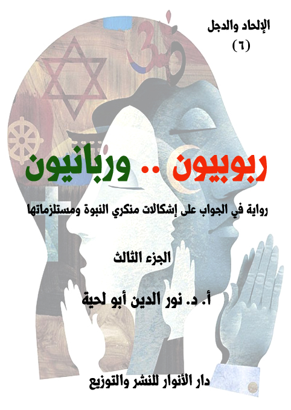

الكتاب: ربوبيون.. وربانيون ج3
الوصف: رواية في الجواب على إشكالات منكري النبوة ومستلزماتها
السلسلة: الإلحاد والدجل
المؤلف: أ. د. نور الدين أبو لحية
الناشر: دار الأنوار للنشر والتوزيع
الطبعة: الأولى، 1444 هـ
عدد الصفحات: 643
ISBN: 978-620-4-72146-0
لمطالعة الكتاب من تطبيق مؤلفاتي المجاني وهو أحسن وأيسر: هنا

يحاول هذا الكتاب ـ بأجزائه الثلاثة ـ أن يجيب على كل الإشكالات التي يطرحها من يطلقون على أنفسهم لقب [الربوبيين]، وهم الذين يرون إمكانية استبدال النبوة بالعقل، ويرون أن هداية الله لهم يمكن أن تتحقق من دون حاجة لأي دين أو نبوة، وقد استثمروا في ذلك ما وقع في تاريخ الأديان من انحرافات عما تقتضيه العقول السليمة، وتتطلبه القيم النبيلة.
ولذلك فإنه ـ وبصيغته الروائية الحوارية ـ يحاول ـ وبهدوء ـ أن يحاور هؤلاء، من خلال منطلقاتهم العقلية والفكرية أولا، ثم من خلال مستلزمات تلك المنطلقات، وهي الأدلة التفصيلية التي يسوقونها لبيان الانحرافات التي وقعت فيها الأديان.
وهذا السبب هو الذي دعانا إلى مناقشة كل الانحرافات التي وقعت فيها الأديان، وبمختلف أنواعها، وبيان الاتفاق عليها مع الربوبيين، ثم بيان وجه الحق في التعامل معها.
ولهذا يجد القارئ الرواية مملوءة بذكر الكثير من مواقف الأديان والمذاهب الفكرية في كل قضية تُطرح ابتداء من القضايا المرتبطة بالله والنبوة والكتب المقدسة، وانتهاء بكل القيم الإنسانية كالسلام والعدالة والرحمة وغيرها.
وبما أن مشكلة الربوبيين هي في ذلك التعميم الخاطئ لمواقفهم، فقد بينا في الرواية خطأ ذلك التعميم، وأن كل المعاني السليمة التي يسوقونها أو يدعون إليها موجودة في الإسلام، باعتباره الدين المهيمن والصحيح الباقي على وجه الأرض، مع التنبيه إلى الأخطاء التي وقع فيها المسلمون، والتي لا علاقة لها بالدين الإلهي.
ربوبيون وربانيون (3/8)
يتناول هذا الجزء من الكتاب الفصلين السادس والسابع:
أما الفصل السادس، فيتناول كل ما يتعلق بعلاقة الدين بالرحمة، وفيه ردود مفصلة على الشبهات المرتبطة برمي الإسلام بالقسوة ونحوها، وقد قسمناه بحسب المحال المرتبطة بالرحمة إلى عشرة أقسام، هي تشمل الرحمة بالنساء والأطفال والعجزة والمتألمين والمحبطين والفقراء والمستضعفين والعبيد والخطائين والكائنات.
وقد لخصنا معظمه مما ذكرناه من الحوارات والردود في كتاب [رحمة للعالمين]، من سلسلة حقائق ورقائق، مع استبعاد الكثير من التفاصيل التي ذكرناها في ذلك الكتاب، وخصوصا تلك التي تتعلق بالحوار الإسلامي المسيحي، لأنه كان الغرض الأصلي للسلسلة، بالإضافة إلى إعادة صياغة الأحداث بما يتناسب مع هذه الرواية.
أما الفصل السابع، فيتناول كل ما يتعلق بعلاقة الدين بالعدالة، وفيه ردود مفصلة على الشبهات المرتبطة برمي الإسلام بالظلم والجور ونحوهما، وقد قسمناه بحسب المحال المرتبطة بالعدالة إلى عشرة أقسام، هي تشمل الرحمة المرتبطة بالشريعة والنظام والرفق والحزم والحرية والمسؤولية والمساواة والتنوع والتكافل والتوازن.
وقد لخصنا معظمه مما ذكرناه من الحوارات والردود في كتاب [عدالة للعالمين]، من سلسلة حقائق ورقائق، مع استبعاد الكثير من التفاصيل التي ذكرناها في ذلك الكتاب، وخصوصا تلك التي تتعلق بالحوار الإسلامي المسيحي.
ربوبيون وربانيون (3/9)
بعد أن انتهى المتحدث الخامس، قام السادس، وقال: لقد جاء الآن دوري.. واسمحوا لي أن أذكر لكم بأني مررت مثل أصحابي بالكثير من المواقف والمشاهد التي جعلتني أوقن برحمة الله بإرسال الأنبياء، وإنزال الكتب.. فالرحمة تقتضي ذلك، بل لا تكمل الرحمة إلا بذلك.
وقد شاء الله أن يكون سبب هدايتي هو شعوري بأن الرحمة هي أرقى القيم، ولذلك كنت أعتقد أنه لا يمكن أن يكون المبدع العظيم لهذا الكون خاليا منها.. كيف وكل شيء يدل على اتصافه بها، وأولها اتصافي بها.. فما كان الله ليملأ قلبي بالرحمة، ثم يكون خاليا عنها.
وأحب أن أخبركم بأنه ـ كما كانت الرحمة باب هدايتي إلى النبوة ـ فقد كانت ـ وبفعل الواقع والشبهات الكثيرة ـ من أقوى الحجب التي حجبتني عنها.
وبحمد الله، فقد قيض الله لعقلي وقلبي من الحكماء من أزال كل تلك الشبهات، ليحل بدلها اليقين والإيمان والطمأنينة.. وسأقص عليكم بعض ما حضرته من مشاهد، وما وقفته من المواقف، لعلكم تشاركونني فيما وصلت إليه.
وحتى يكون كلامنا منظما، فقد رأيت أنه يمكن تقسيم المشاهد التي حضرتها، والمتعلقة بالرحمة إلى عشرة مشاهد، أولها يتعلق بالرحمة بالنساء.. وثانيها الرحمة بالأطفال.. وثالثها الرحمة بالعجزة.. ورابعها الرحمة بالمتألمين.. وخامسها الرحمة بالمحبطين.. وسادسها الرحمة بالفقراء.. وسابعها الرحمة بالمستضعفين.. وثامنها الرحمة بالعبيد.. وتاسعها الرحمة بالخطائين.... وعاشرها الرحمة بالكائنات.
ربوبيون وربانيون (3/10)
قلنا: وعينا هذا.. فحدثنا عن المشهد الذي عرفت به الرحمة المرتبطة بالنساء، وعلاقتها بالدين.
قال: قبل أن أذكر لكم المشهد المرتبط بذلك، أحب أن أخبركم بأن رحمتي بالمرأة هي التي جعلتني أترك المسيحية، ثم أقف بسببها موقفا سلبيا من كل الأديان.
قلنا: كيف ذلك؟
قال: لقد بدأت حياتي في أسرة مسيحية متدينة.. بل مغالية في تدينها.. وقد عرفت من خلال تأمل طويل أنه يستحيل أن يحمل دين الله أي عصبية ضد أي جهات من الجهات.. وضد أي جنس من الأجناس.. وقد دعاني هذا البحث إلى أن أبحث عن موقف المسيحية من المرأة لأعرف من خلال ذلك مدى مصداقيتها.. وقد أوصلني ذلك البحث إلى الخروج من المسيحية والارتماء بعدها في أحضان اللاشيء.. فلم يكن لدي من القدرة ما أواصل به مشوار البحث عن الحقيقة.
لقد صدمت من أول نظرة للكتاب المقدس.. لقد قرأت في رسالة بولس إلى أهل كورونثوس الأولى [11/ 3 ـ 9]: (ولكن أريد أن تعلموا أن رأس كل رجل هو المسيح، وأما رأس المرأة فهو الرجل ورأس المسيح هو الله.. كل رجل يصلي أو يتنبأ وله على رأسه شيء يشين رأسه، وأما كل امرأة تصلي أو تتنبأ ورأسها غير مغطى فتشين رأسها لأنها والمحلوقة شيء واحد بعينه، إذ المرأة إن كانت لا تتغطى فليقص شعرها، وإن كان قبيحا بالمرأة أن تقص أو تحلق فلتتغط، فإن الرجل لا ينبغي أن يغطي رأسه لكونه صورة الله ومجده، وأما المرأة فهي مجد الرجل، لأن الرجل ليس من المرأة بل المرأة من الرجل، ولأن
ربوبيون وربانيون (3/11)
الرجل لم يخلق من أجل المرأة، بل المرأة من أجل الرجل)
وقرأت في رسالته إلى أهل رومية ما يؤكد أن المرأة لا قيمة لها بدون الرجل، وأن ناموسها هو زوجها، وقد سماه بولس بالناموس الحي وقال: (إن مات زوجها فقد تحررت من الناموس الحي) [رومية 7/ 2 ـ 3]
وفي [رومية 7/ 2]: (فإن المرأة التي تحت رجل هي مرتبطة بالناموس بالرجل الحي، ولكن إن مات الرجل فقد تحررت من ناموس الرجل، فإذا ما دام الرجل حيا تدعى زانية ان صارت لرجل آخر، ولكن إن مات الرجل فهي حرة من الناموس حتى أنها ليست زانية إن صارت لرجل آخر)
ورأيته في (أفسس) يأمر النساء أن يكن خاضعات للرجال كما يخضعن للرب، ويزيد في الأمر أن الرجل هو رأس المرأة مشبها ذلك بعبادة الرب، وأنه عقيدة فهي أقل من الرجل.. اسمعوا ما ورد في [أفسس: 5/ 22 ـ 24]: (أيها النساء اخضعن لرجالكن كما للرب لأن الرجل هو رأس المرأة كما أن المسيح أيضا رأس الكنيسة، وهو مخلص الجسد، ولكن كما تخضع الكنيسة للمسيح كذلك النساء لرجالهن في كل شيء)
ومثل ذلك قرأت في [كورنثوس 1: 11/ 3]: (ولكن أريد أن تعلموا أن رأس كل رجل هو المسيح.. وأما رأس المرأة فهو الرجل.. ورأس المسيح هو الله)
وقرأت في [كورنثوس 1: 14/ 34]: (لتصمت نساؤكم في الكنائس لأنه ليس مأذونا لهن أن يتكلمن بل يخضعن كما يقول الناموس أيضا، ولكن إن كن يردن أن يتعلمن شيئا فليسألن رجالهن في البيت لأنه قبيح بالنساء أن تتكلم في كنيسة)
وقرأت في [تيموثاوس 1: 2/ 11 ـ 13]: (لتتعلم المرأة بسكوت في كل خضوع، ولكن لست آذن للمرأة أن تعلم ولا تتسلط على الرجل بل تكون في سكوت، لان آدم جبل
ربوبيون وربانيون (3/12)
أولا ثم حواء)
وقرأت في [قضاة 19/ 22 ـ 29] أن المرأة مجرد هدية قد يدفعها سيدها للزنا.. ففيه: (وفيما هم يطيبون قلوبهم اذا برجال المدينة رجال بليعال أحاطوا بالبيت قارعين الباب، وكلموا الرجل صاحب البيت الشيخ قائلين: أخرج الرجل الذي دخل بيتك فنعرفه، فخرج إليهم الرجل صاحب البيت وقال لهم: لا يا إخوتي لا تفعلوا شرا، بعد ما دخل هذا الرجل بيتي لا تفعلوا هذه القباحة، هو ذا ابنتي العذراء وسريته دعوني أخرجهما فأذلوهما وافعلوا بهما ما يحسن في أعينكم وأما هذا الرجل فلا تعملوا به هذا الأمر القبيح، فلم يرد الرجال أن يسمعوا له، فأمسك الرجل سريته وأخرجها اليهم خارجا فعرفوها وتعللوا بها الليل كله إلى الصباح وعند طلوع الفجر أطلقوها، فجاءت المرأة عند إقبال الصباح وسقطت عند باب بيت الرجل حيث سيدها هناك إلى الضوء، فقام سيدها في الصباح وفتح أبواب البيت وخرج للذهاب في طريقه واذا بالمرأة سريته ساقطة على باب البيت ويداها على العتبة)
وقرأت في [قضاة: 19: 29]: (ودخل بيته وأخذ السكين وأمسك سريته وقطعها مع عظامها الى اثنتي عشرة قطعة وأرسلها الى جميع تخوم إسرائيل)
وقرأت في [تيماثوس الأولى 2/ 11 ـ 15]: (لتتعلم المرأة بسكوت في كل خضوع، ولكن لست آذن للمرأة أن تعلم ولا تتسلط على الرجل بل تكون في سكوت، لأن آدم جبل أولا ثم حواء، وآدم لم يغو لكن المرأة أغويت فحصلت في التعدي، ولكنها ستخلص بولادة الأولاد إن ثبتن في الايمان والمحبة والقداسة مع التعقل)
وقرأت في [التكوين: 36/ 8 ـ 10] أن المرأة إذا ورثت تكون هي نفسها مجرد ميراث حتى لا يخرج الميراث خارج عائلتها.. ففيه: (وكل بنت ورثت نصيبا من أسباط بني
ربوبيون وربانيون (3/13)
إسرائيل تكون امرأة لواحد من عشيرة سبط أبيها لكي يرث بنو إسرائيل كل واحد نصيب آبائه، فلا يتحول نصيب من سبط إلى سبط آخر بل يلازم اسباط بني اسرائيل كل واحد نصيبه كما أمر الرب موسى كذلك فعلت بنات صلفحاد)
وفوق ذلك كله قرأت في الكتاب المقدس عقوبات خاصة بالنساء دون الرجال.. ولم أدر سر تخصيصهن بذلك.. منها ما ورد في [تثنية: 25/ 11 ـ 12]: (إذا تخاصم رجلان بعضهما بعضا رجل وأخوه وتقدمت امرأة أحدهما لكي تخلص رجلها من يد ضاربه ومدت يدها وأمسكت بعورته (فاقطع يدها ولا تشفق عينك).. وفي الولادة البنت تنجس أمها أسبوعين بينما الولد ينجسها أسبوع [لاويين 12/ 6]
سكت قليلا، ثم قال (1): لقد أثرت تلك النصوص في رجال الكنيسة أجيالا طويلة اعتبروا خلالها المرأة مسؤولة عن كل خطيئة وقعت في العالم، فلولا المرأة ماخرج آدم من الجنة.. ولهذا قرروا أن الزواج دنس يجب الابتعاد عنه.. وأن الأعزب أكرم عند الله من المتزوج.. وأن السمو فى علاقة الإنسان بربه لا يتحقق إلا بالبعد عن الزواج.. وأن الحمل والولادة، والشهوة، واشتياق الرجل لامرأته، واشتياق المرأة لزوجها من الآثام، التى جلبت على المرأة الويل والعار على مدى التاريخ كله، وهى عقوبة الرب لحواء على خطيئتها الأزلية.. وفوق ذلك كله أعلنوا أنها باب الشيطان.
وقد قرأت حينها ما قال القديسون وآباء الكنيسة والمجامع المقدسة، ما زادني هربا من المسيحية، بل من الأديان جميعا.. لقد كتب جيروم يدعو المرأة أن تتخلص من أنوثتها ليتم خلاصها فى الآخرة.. يقول في ذلك: (بما أن المرأة خلقت للولادة والأطفال، فهى
__________
(1) استفدنا الكثير من النصوص الواردة هنا من كتاب (حفظ الإسلام حقوق المرأة) للأستاذ علاء أبو بكر.
ربوبيون وربانيون (3/14)
تختلف عن الرجل، كما يختلف الجسد عن الروح، ولكن عندما ترغب المرأة فى خدمة المسيح أكثر من العالم، فعندئذ سوف تكف عن أن تكون امرأة، وستسمى رجلا) (1)
وقال ممتهنا المرأة وحقوقها: (إذا امتنعنا عن الاتصال الجنسى فإننا نكرم زوجاتنا، أما إذا لم نمتنع: حسنا فما هو نقيض التكريم سوى الإهانة)
وقال القديس أوغسطين: (إذا كان ما احتاجه آدم هو العشرة الطيبة، فلقد كان من الأفضل كثيرا أن يتم تدبير ذلك برجلين يعيشان معا كصديقين، بدلا من رجل وامرأة)
وقد كان توما الأكوينى متحيرا تماما مثل سلفه أوغسطين فى سبب خلق الله للمرأة، فكتب يقول: (فبما يختص بطبيعة الفرد، فإن المرأة مخلوق معيب وجدير بالإزدراء، ذلك أن القوة الفعالة فى منى الذكر تنزع إلى انتاج مماثلة كاملة فى الجنس الذكرى، بينما تتولد المرأة عن معيب تلك القوة الفعالة، أو حدوث توعك جسدى، أو حتى نتيجة لمؤثر خارجى)
وقال تروتوليان ـ أحد أقطاب المسيحية الأولى وأئمتها ـ يبين نظرة المسيحية إلى المرأة: (إنها مدخل الشيطان إلى نفس الإنسان، وإنها دافعة الى الشجرة الممنوعة ناقضة لقانون الله ومشوهة لصورة الله – أي الرجل ـ) مستندا في ذلك إلى ما ورد في (تيموثاوس الأولى 2/ 14 ـ 15): (وآدم لم يغو لكن المرأة أغويت فحصلت في التعدي، ولكنها ستخلص بولادة الأولاد، إن ثبتن في الإيمان والمحبة والقداسة مع التعقل)
وقال لوثر: (المرأة كمسمار يدق فى الحائط)، وقال: (إذا تعبت النساء، أو حتى ماتت، فكل ذلك لا يهم، دعهن يمتن فى عملية الولادة، فلقد خلقن من أجل ذلك)، وقال: (كم هو شاء مرعب وأحمق تلك الخطيئة! إن الشهوة هى الشاء الوحيد الذى لا يمكن شفاؤه
__________
(1) انظر: تعليق جيروم على رسالة بولس إلى أهل أفسس.
ربوبيون وربانيون (3/15)
بأى دواء، ولو كان حتى الزواج الذى رسم لنا خصيصا من أجل هذه النقيصة التى تكمن فى طبيعتنا)
وقالت الراهبة كارين أرمسترونج: (إن المسيحية خلقت أتعس جو جنسى فى أوروبا وأمريكا بدرجة قد تصيب بالدهشة كلا من يسوع والقديس بولس، ومن الواضح كيف كان لهذا تأثيره على النساء، فبالنسبة لأوغسطين الذى كان يناضل من أجل البتولية، كانت النساء تعنى مجرد إغراء يريد أن يوقعه فى شرك، بعيدا عن الأمان والإماتة المقدسة لشهوته الجنسية، أما كون العصاب الجنسى للمسيحية قد أثر بعمق فى وضع النساء، فهذا ما يرى بوضوح من حقيقة أن النساء اللاتى التحقن بالجماعات الهرطيقية المعادية للجنس، وصرن بتولات، قد تمتعن بمكانة واحترام كان من المستحيل أن يحظين بهما فى ظل المسيحية التقليدية)
وقالت: (لقد كانت المسيحية مشغولة طيلة مئات السنين بجعل النساء يخجلن من أمورهن الجنسية، ولقد عرفت النساء جيدا كما قال أوغسطين ولوثر قبل عدة قرون، أن تشريع الزواج كان مجرد دواء ضعيف المفعول لمعالجة شرور الجنس)
وقالت: (لقد كان ينظر إلى جسد المرأة باشمئزاز على نحو خاص، كما كان مصدر إرباك لآباء الكنيسة أن يسوع ولد من امرأة، فكم ضغطوا بشدة فى موعظة تلو موعظة، وفى رسالة تلو رسالة على أن مريم بقيت عذراء، ليس فقط قبل ميلاد المسيح بل وبعده أيضا)
و كتب أودو الكانى فى القرن الثانى عشر يقول: (إن معانقة امرأة تعنى معانقة كيس من الزبالة)
وكتب أسقف فرنسى عاش فى القرن الثانى عشر يقول: (إن كل النساء بلا استثناء مومسات، وهن مثل حواء سبب كل الشرور فى العالم)
ربوبيون وربانيون (3/16)
وقال الراهب البنديكتى برنار دى موريكس دون مواربة فى أشعاره: (إنه لا توجد امرأة طيبة على وجه الأرض)
وقال الراهب الانجليزى اسكندر نكهام: (إنه نظرا لأن المرأة لا تشبع جنسيا، فإنها غالبا ما تصطاد بائسا حقيرا لينام معها فى فراشها ليشبع نهمها إذا كان زوجها غير موجود فى لحظة شبقها، ونتيجة لذلك كان على الأزواج أن يربوا أطفالا ليسوا أولادهم)
وقال القديس ترتوليان: (إن المرأة مدخل الشيطان إلى نفس الإنسان، ناقضة لنواميس الله، مشوهة للرجل)
وكتب ترتليان فى القرن الثالث رسالة تعالج زى المرأة، قال فيها: (لقد كان حريا بالمرأة أن تخرج فى زى حقير، وتسير مثل حواء، ترثى لحالها، نادمة على ما كان، حتى يكون زيها الذى يتسم بالحزن، مكفرا عما ورثته من حواء: العار، وأقصد بذلك الخطيئة الأولى، ثم الخزى من الهلاك الأبدى للانسانية، فلقد قال الرب للمرأة: (تكثيرا أكثر أتعاب حبلك، بالوجع تلدين أولادا، وإلى رجلك يكون اشتياقك وهو يسود عليك) _تكوين 3: 16) ألستن تعلمن أن كل واحدة منكن هى حواء؟)
وقال القديس برنارد ـ الذى فعل كل ما استطاع لنشر عبادة العذراء فى الكنيسة ـ عن أخته بعد زيارتها إياه فى الدير الذى يقيم فيه مرتدية زيا جديدا: (مومس قذرة، وكتلة من الروث)
ولم يقتصر الأمر على أشخاص ممتلئين حقدا على المرأة.. وإنما شمل الأمر المجامع المقدسة أيضا.. ففي القرن الخامس الميلادى اجتمع مجمع باكون وكانوا يتباحثون: (هل المرأة جثمان بحت، أم هى جسد ذو روح يناط به الخلاص والهلاك؟)، وقد قرر هذا المجمع أن المرأة خالية من الروح الناجية، التى تنجيها من جهنم، وليس هناك استثناء بين جميع
ربوبيون وربانيون (3/17)
بنات حواء من هذه الوصمة إلا مريم.. كما قرر مجمع آخر، أن المرأة حيوان نجس، يجب الابتعاد عنه، وأنه لاروح لها ولا خلود، ولاتلقن مبادئ الدين لأنها لاتقبل عبادتها، ولاتدخل الجنة، ولا الملكوت، ولكن يجب عليها الخدمة والعبادة، وأن يكمم فمها كالبعير، أو كالكلب العقور، لمنعها من الضحك ومن الكلام لأنها أحبولة الشيطان.
لقد جرت هذه الأفكار المشوهة إلى سلوكات أكثر تشويها.. لقد جعلت تلك الأفكار الكثير يفكر في السبل التي يتخلص بها من المرأة.. لأنها الجسد الشرير.. ولأنها مصدر متاعب الحياة.. ولأنها مصدر غضب الرب.
لقد كان من ثمار تلك الأفكار أن تشكل مجلس اجتماعى فى بريطانيا فى عام 1500 لتعذيب النساء، وابتدع وسائل جديدة لتعذيبهن، وقد أحرق الألاف منهن أحياء، وكانوا يصبون الزيت المغلى على أجسامهن لمجرد التسلية.. وكان من ثمارها أن ظلت النساء طبقا للقانون الإنجليزى العام ـ حتى منتصف القرن التاسع عشر تقريبا ـ غير معدودات من (الأشخاص) أو (المواطنين)، الذين اصطلح القانون على تسميتهم بهذا الاسم، لذلك لم يكن لهن حقوق شخصية، ولا حق فى الأموال التى يكتسبنها، ولا حق فى ملكية شاء حتى الملابس التى كن يلبسنها.
وكان من ثمارها أنه كان شائعا فى بريطانيا حتى نهاية القرن العاشر قانون يعطى الزوج حق بيع زوجته وإعارتها بل وفى قتلها إذا أصيبت بمرض عضال.. بل إن القانون الإنجليزى لعام 1801 م وحتى عام 1805 حدد ثمن الزوجة بستة بنسات بشرط أن يتم البيع بموافقة الزوجة.. وقد حدث أن باع إنجليزى زوجته عام 1931 م بخمسمائة جنيه، وقال محاميه فى الدفاع عنه: (إن القانون الإنجليزى عام 1801 م يحدد ثمن الزوجة بستة بنسات بشرط أن يتم البيع بموافقة الزوجة)، فأجابت المحكمة بأن هذا القانون قد ألغى
ربوبيون وربانيون (3/18)
عام 1805 م بقانون يمنع بيع الزوجات أو التنازل عنهن، وبعد المداولة حكمت المحكمة على بائع زوجته بالسجن عشرة سنوات)
وكان من ثمارها أن أصدر البرلمان الإنجليزى قرارا فى عصر هنرى الثامن ملك إنجلترا يحرم على المرأة أن تقرأ (العهد الجديد)، لأنها تعتبر نجسة.
سكت قليلا، ثم قال: كما كان اطلاعي على هذه النصوص والوقائع حافزا لي لترك المسيحية، فقد كان حافزا أيضا للبحث في سبب ذلك، ووجدته في تأثرها، وتأثر اليهودية، وغيرها بما كانت عليه الشعوب المختلفة من تعاملهم مع المرأة ونظرهم لها.. فقد كانت المرأة عند الهنود القدماء مخلوقا نجسا.
ولم يكن للمرأة فى شريعة مانو حق فى الاستقلال عن أبيها أو زوجها أو ولدها، فإذا مات هؤلاء جميعا وجب أن تنتمى إلى رجل من أقارب زوجها، وهى بذلك قاصرة طيلة حياتها، ولم يكن لها حق فى الحياة بعد وفاة زوجها، وكانت إذا مات عنها زوجها تحرق مع جثته بالنار المقدسة، بل إن بعض القبائل الهندية القديمة كانت لا تراها أهلا لتحرق مع جثة زوجها باعتبارها المخلوق النجس، ولذلك كانوا يرون دفنها حية أو حرقها بعد موت زوجها.. فإذا كان للرجل أكثر من زوجة دفن جميعا أو حرقن جميعا.
وفى شرائع الهندوس أنه: (ليس الصبر المقدر، والريح، والموت، والجحيم، والسم، والأفاعى، والنار، أسوأ من المرأة)
ويذكر جوستاف لوبون أن المرأة فى الهند (تعد بعلها ممثلا للآلهة فى الأرض، وتعد المرأة العزب، والمرأة الأيم، على الخصوص من المنبوذين من المجتمع الهندوسى، والمنبوذ عندهم فى رتبة الحيوان، والمرأة الهندوسية إذا فقدت زوجها ظلت فى الحداد بقية حياتها، وعادت لا تعامل كإنسان، وعد نظرها مصدرا لكل شؤم على ما تنظر إليه، وعدت مدنسة
ربوبيون وربانيون (3/19)
لكل شاء تلمسه، وأفضل شاء لها أن تقذف نفسها فى النار التى يحرق بها جثمان زوجها، وإلا لقيت الهوان الذى يفوق عذاب النار)
أما في الصين، فقد كانت المرأة لا تقل مهانة أو مأساة عن بقية المجتمعات، فكانت النظرة إليها واحدة، ويظهر مدى امتهان المرأة فى المثل الصينى الذى يقول: (إن المرأة كالكرة، كلما ركلتها برجلك ارتفعت إلى أعلى)
وشبهت المرأة عندهم بالمياه المؤلمة التى تغسل السعادة والمال، وللصينى الحق فى أن يبيع زوجته كالجارية، وإذا ترملت المرأة الصينية أصبح لأهل الزوج الحق فيها كإرث، وللصينى الحق فى أن يدفن زوجته حية.
أما المرأة الكلدانية، فقد كانت خاضعة خضوعا تاما لرب الأسرة، وكان للوالد الحق فى أن يبذل زوجته أو ابنته لسداد دينه، وكانت المرأة تحتمل وحدها الأعباء المنزلية، فتذهب كل يوم لجلب الماء من النهر أو البئر، وتقوم وحدها بطحن الحبوب بالرحى وإعداد الخبز، كما تقوم بغزل ونسج وحياكة الملابس، وهذا كان حالها فى الطبقات الفقيرة.
أما عند اليونان.. فقد كانت المرأة محتقرة مهانة، مثل أى سلعة تباع وتشترى، مسلوبة الحقوق، محرومة من حق الميراث وحق التصرف فى المال، بل أكثر من ذلك، فقد سموها رجسا، ولم يسمحوا لها إلا بتدبير شئون البيت وتربية الأطفال، وكان الرجل فى أثينا يسمح له أن يتزوج أى عدد يريده من النساء، بلا قيد ولا شرط.
كما كان لزوجها الحق فى بيعها وأن تظل عند المشترى فترة تحت التجربة، كما كان لزوجها الحق فى قتلها إذا اتهمت، ولو بمجرد النظر إلى شخص غريب ولا مسؤولية عليه فى ذلك، ومع هذا فإن له الحق فى أن يزنى فى منزل الزوجية، وليس لزوجته حق الاعتراض، كما أن حق الطلاق مكفول له متى شاء وكيف شاء، ومع ذلك فإنها تظل بعد طلاقها منه
ربوبيون وربانيون (3/20)
مقيدة برأيه فى زواجها لمن يريده، ويوصى عند موته بزواجها ممن يرتضيه هو وليس لها أو لأحد من أهلها حق الاعتراض.
وتذكر الأساطير اليونانية أن المرأة هى سبب الأوجاع والآلام للعالم كله، وذلك لأن الناس فى اعتقادهم كانوا يعيشون فى أفراح ولا يعرفون معنى الألم ولا الحزن، ولكن حدث أن الآلهة أودعت أحد الناس صندوقا وأمرته ألا يفتحه، وكان له زوجة تسمى (باندورا) مازالت تغريه بفتحه حتى فتحه فانطلقت منه الحشرات، ومنذ تلك اللحظة أصيب الناس بالآلام والأحزان، فلهذا كانت المرأة سببا فى الكوارث التى حلت بالبشرية كلها نتيجة لفضول المرأة وإغراء زوجها بالعصيان.
سكت قليلا، ثم قال: لعلكم تلاحظون شبها فى هذه الرواية بما تحدث عنه سفر التكوين من إغواء حواء لآدم بالأكل من الشجرة المحرمة بعد أن أغوتها الحية: (فرأت المرأة أن الشجرة جيدة للأكل وأنها بهجة للعيون وأن الشجرة شهية للنظر، فأخذت من ثمرها وأكلت وأعطت رجلها أيضا معها فأكل.. فقال آدم: المرأة التي جعلتها معي هي أعطتني من الشجرة فأكلت) [تكوين 3: 6 ـ 12]
أما المرأة العربية فى الجاهلية، فقد كانت تعد جزءا من ثروة أبيها أو زوجها، وكانوا في الجاهلية لا يورثون النساء ولا الصغير وإن كان ذكرا، وكان ابن الرجل يرث أرملة أبيه بعد وفاتها.. وكانوا يرثون النساء كرها، بأن يأتى الوارث ويلقى ثوبه على زوجة أبيه، ثم يقول: ورثتها كما ورثت مال أبى، إلا إذا سبقت ابنها أو ابن زوجها بالهرب إلى بيت أبيها، فليس له أن يرثها، فإذا أراد أن يتزوجها تزوجها بدون مهر، أو زوجها لأحد عنده وتسلم
ربوبيون وربانيون (3/21)
مهرها ممن تزوجها، أو حرم عليها أن تتزوج كى يرثها بعد موتها (1).
وكان العرب فى الجاهلية يمنعون النساء من الزواج، فالابن الوارث كان يمنع زوجة أبيه من التزوج، كى تعطيه ما أخذته من ميراث أبيه، والأب يمنع ابنته من التزوج حتى تترك له ما تملكه، والرجل الذى يطلق زوجته يمنع مطلقته من الزواج حتى يأخذ منها ما يشاء، والزوج المبغض لزوجته يساء عشرتها ولا يطلقها حتى ترد إليه مهرها (2)،
وكان الرجل إذا تزوج بأخرى، رمى زوجته الأولى فى عرضها، وأنفق ما أخذه منها على زوجته الثانية، أو المرأة الأخرى التى يريد أن يتزوجها، (3) وكانت المرأة تعد متاعا من الأمتعة، يتصرف فيها الزوج كما يشاء، فيتنازل الزوج عن زوجته لغيره إذا أراد، بمقابل أو بغير مقابل، سواء أقبلت أم لم تقبل، كما كانوا يتشاءمون من ولادة الأنثى، وكانوا يدفنونهن عند ولادتهن أحياء، خوفا من العار أو الفقر.
سكت قليلا، ثم قال: ليس الأمر قاصرا على تلك الشعوب البدائية المتخلفة.. إن هذه الحضارة المتعفنة تمارس من أساليب الإذلال للمرأة ما مارسته جميع الشعوب البدائية.. ولكنها تحتال لذلك بأنواع من الزخارف والطلاء لتموه به على الحقائق.
التفت إلينا، وقال: كل ذلك جلب لي الكثير من الأحزان إلى أن شاء الله أن أجد في ذلك اليوم من يخرجني منها.
قلنا: كيف ذلك؟
__________
(1) وقد نص على تحريم هذا في قوله تعالى: ﴿يَا أَيُّهَا الَّذِينَ آمَنُوا لاَ يَحِلُّ لَكُمْ أَن تَرِثُوا النِّسَاءَ كَرْهًا﴾ [النساء: 19]، فهذه الآية نهت عن عادة الجاهلية من إرث الرجل نساء أقربائه.
(2) وقد حرم الإسلام هذه الأمور جميعا بقوله تعالى: ﴿وَلاَ تَعْضُلُوهُنَّ لِتَذْهَبُوا بِبَعْضِ مَا آتَيْتُمُوهُنّ﴾ [النساء: 19]
(3) وقد حرم القرآن ذلك فى قوله تعالى: ﴿وَإِنْ أَرَدْتُّمُ اسْتِبْدَالَ زَوْجٍ مَّكَانَ زَوْجٍ وَآتَيْتُمْ إِحْدَاهُنَّ قِنْطَارًا فَلاَ تَأْخُذُوا مِنْهُ شَيْئًا أَتَأْخُذُونَهُ بُهْتَانًا وَإِثْمًا مُّبِينًا﴾ [النساء: 20]
ربوبيون وربانيون (3/22)
قال: لقد شاء الله أن يكون هذا المشهد في زيارتي لبعض الجمعيات المتعلقة بحقوق المرأة، والتي أقامت مؤتمرا تصور فيه الإساءات التي تتعرض لها المرأة، ومن طرف المسلمين، وهناك رأيت مجموعة من النساء المسلمات الحكيمات، واللاتي أجدن في الدفاع عن دينهن، وقد تأكدت من كل ما ذكرن، فلم أجدهن خالفن الحق في كلمة واحدة.
بعد أن انتهت الجلسة الأولى، والتي تكلم فيها المحاضرون والمحاضرات بما تسمعونه من الشبهات حول وضع المرأة في الإسلام، وأكد ذلك بشهادات بعض النسوة اللاتي زعمن إساءة أزواجهن المسلمين لهن.
وعندما سُمح للحضور بالتعقيب، استأذنت امرأة عجوز، وقالت (1): لقد تحدثتم جميعا.. وكلكم صببتم ما تملكونه من غيظ وحقد على محمد ودين محمد.. وأنا الآن أقف بينكم لا كمحامية على هذا الدين، ولا على تلك الشمس التي أنارت برحمتها العالمين، فالشمس أرفع من أن تحتاج من يدافع عنها.. ولكني أقف كشاهدة على واقع عشته في ظل رجال استناروا بأشعة محمد صلى الله عليه وآله وسلم.. نعم لقد تحدثت بعض النسوة عن المآسي التي يعشنها بسبب أهليهن المسلمين.. وهؤلاء لا أكذبهن، ولكن ما حصل لهن من عناء ثمرة للبعد عن محمد ودين محمد، وفي إمكانكم أن تسألوهن عن هؤلاء الرجال الذين أهانوهن.. وسترون أنهم لا علاقة لهم بمحمد ولا دين محمد.
ساد القاعة صمت رهيب شجع المرأة على مواصلة حديثها، فقالت: أنتم تتحدثون عن المرأة، وقد مررت بجميع مراحل المرأة التي تمر بها، كنت بنتا، ثم زوجة، ثم أما، ثم ها أنا الآن بينكم امرأة كبيرة طاعنة في السن.. فلذلك سأكون ممثلة لجميع النساء.. فاسمحوا
__________
(1) لخصنا هنا ما ذكرناه في كتاب: رحمة للعالمين، ص 54، فما بعدها.
ربوبيون وربانيون (3/23)
لي ـ أنا التي مررت بجميع هذه المراحل ـ أن أذكر لكم كيف كان يعاملني الرجال الذين استناروا بأشعة محمد، واهتدوا بهديه.
سكتت قليلا، ثم قالت: أقول لكم هذا لنخرج من التعميم الخاطئ الذي تقعون فيه.. فأنتم تتحدثون عن المرأة، وكأنها كائن من المريخ، مع أنها بينكم، وهي لا تخرج عن المراحل التي ذكرتها، فإن كنتم أردتم استماع الحقيقة من منابعها، فاسمعوا لي.. وإن أبيتم إلا أن تنتقوا في سماعكم فأذنوا لي في الجلوس.
لم تجد رئيسة الجلسة بدا من الإذن لها، فقالت: ليكون كلامي علميا دقيقا.. فسأذكر لكم أربع قيم نشرها الإسلام في المسلمين.. يمكن من خلالها أن تفسر كل المعاملات التي عامل بها الإسلام المرأة.. كل هذه القيم رحمة ولطف وشفقة وعدالة.. أما الأولى.. فهي المساواة.. وأما الثانية.. فهي الكرامة.. وأما الثالثة.. فهي الصيانة.. وأما الرابعة.. فهي الرعاية.
قال الجمع: فحدثينا عن الأولى.. حدثينا عن المساواة.
قالت: اسمحوا لي أن أحدثكم عن تجربتي معها.. أنا رابعة أخواتي.. ولم يرزق والدي غيرنا.. فلم يكن له إلا البنات.. ولذلك، فقد سماني (رابعة)
قالت لها إحدى الحاضرات: إذن كنت شؤما في البيت.
قالت: لا.. لقد استنار والدي بأشعة محمد صلى الله عليه وآله وسلم فكسفت جميع الظلمات التي نشرتها الجاهلية.. لقد حدثتني أمي عن الفرحة العظيمة التي كانت تبدو على ملامح أبي حينما ولدت.. وقد ذكرت لي ما قال لها حينما ولدت، لقد قال لها: إن الله وهب لنا هذه البنت لتكون جوازا لنا إلى الجنة، فقد بشرنا صلى الله عليه وآله وسلم بالجزاء العظيم الذي نناله من تربية البنات، فقال:
ربوبيون وربانيون (3/24)
(من كانت له بنت، فأدبها فأحسن أدبها، وعلمها فأحسن تعليمها، وأسبغ عليها من نعم الله التي أسبغ عليه كانت له سترا أو حجابا من النار) (1)، ففي هذا الحديث إخبار بأول جزاء يناله من رزق إناثا، فأحسن إليهن، وبرهن، وهو أن هؤلاء البنات يقفن حجابا بينه وبين النار.
سكتت قليلا، ثم قالت: بل ورد ما هو أكثر من ذلك.. ففي الحديث قال صلى الله عليه وآله وسلم: (لا يكون لأحد ثلاث بنات أو ثلاث أخوات أو بنتان أو أختان فيتقي الله فيهن ويحسن إليهن إلا دخل الجنة) (2).. وفي حديث آخر قال صلى الله عليه وآله وسلم: (من كان له ثلاث بنات، فصبر على لأوائهن وضرائهن وسرائهن، أدخله الله الجنة برحمته إياهن)، فقال رجل: واثنتان يا رسول الله؟ قال: (واثنتان)، قال رجل: يا رسول الله، وواحدة؟ قال: (وواحدة) (3).. بل ورد ما هو أعظم من ذلك كله، فقد قال صلى الله عليه وآله وسلم: (من عال جاريتين حتى تبلغا جاء يوم القيامة أنا وهو) (4)، وضم أصابعه.. وهذا أعظم جزاء تهفو إليه قلوب المؤمنين.
قالت إحدى الحاضرات: ولكن.. ورد في بعض الأحاديث التي سقتها التعبير عن هبة الإناث بأنها من البلاء.. أليس ذلك احتقارا للأنثى؟
قالت: لا.. معاذ الله.. كل ما في الدنيا بلاء سواء كانت منحا أو محنا.. والبلاء لا يعني إلا الاختبار، والله يختبر بالنعمة، ويختبر بالنقمة.. ألم تسمعي قوله تعالى: ﴿وَنَبْلُوكُمْ بِالشَّرِّ وَالْخَيْرِ فِتْنَةً وَإِلَيْنَا تُرْجَعُونَ﴾ [الأنبياء: 35]؟.. فالبلاء قد يكون خيرا، وقد يكون شرا.. بل عبر الله تعالى عن نعمة الأموال والأولاد بأنها من الفتنة والبلاء، قال تعالى: ﴿وَاعْلَمُوا
__________
(1) رواه أبو نعيم.
(2) رواه أبو داود.
(3) رواه الخرائطي في مكارم الأخلاق.
(4) رواه مسلم.
ربوبيون وربانيون (3/25)
أَنَّمَا أَمْوَالُكُمْ وَأَوْلَادُكُمْ فِتْنَةٌ وَأَنَّ اللَّهَ عِنْدَهُ أَجْرٌ عَظِيمٌ﴾ [الأنفال: 28]، وقال معبرا بصيغة الحصر: ﴿إِنَّمَا أَمْوَالُكُمْ وَأَوْلَادُكُمْ فِتْنَةٌ وَاللَّهُ عِنْدَهُ أَجْرٌ عَظِيمٌ﴾ [التغابن: 15]
قالت إحدى الحاضرات: فلماذا لا يكون هذا من الابتلاء بالنقمة.
قالت العجوز: لأن الله عبر عنها بالهبة، فقال: ﴿لِلَّهِ مُلْكُ السَّمَاوَاتِ وَالْأَرْضِ يَخْلُقُ مَا يَشَاءُ يَهَبُ لِمَنْ يَشَاءُ إِنَاثًا وَيَهَبُ لِمَنْ يَشَاءُ الذُّكُورَ أَوْ يُزَوِّجُهُمْ ذُكْرَانًا وَإِنَاثًا وَيَجْعَلُ مَنْ يَشَاءُ عَقِيمًا إِنَّهُ عَلِيمٌ قَدِيرٌ﴾ [الشورى: 49 ـ 50]، فقد عبر القرآن الكريم عن عن إعطائه الإناث بصيغة الهبة، مسويا لهم في ذلك مع الذكور، بل إن الله تعالى قدم الإناث في الذكر على الذكور، ليبين أن رحمته بإعطاء الأنثى قد تكون أعظم من رحمته بإعطائه الذكور، لمن عرف كيف يتعامل مع هبة الله.. وفي التعبير بالهبة دلالة أخرى لها أهميتها الواقعية، وهي أن الكثير من العامة يتصورون أن جنس المولود سببه الأم، فلذلك قد يطلق الرجل امرأته إن ولدت له إناثا، فرد الله تعالى بأن جنس المولود هبة منه لا علاقة له بأحدهما.. وفي التعبير دلالة أخرى أعمق من ذلك كله لتعلقها بالجنس البشري جميعا، وهو أن الأمر لو ترك للأهواء لانقرض الجنس البشري من زمن بعيد، لأن الأهواء قد تميل إلى جنس معين مما ينشأ عنه اختلال التوازن الذي يحفظ النوع، فلذلك كان هذا هبة من الله لا اختيارا من البشر.
قالت إحدى الحاضرات: ولكن ألم تسمعي ما ورد في القرآن من الحديث عن ولادة مريم، فقد جاء فيها: ﴿فَلَمَّا وَضَعَتْهَا قَالَتْ رَبِّ إِنِّي وَضَعْتُهَا أُنْثَى وَاللَّهُ أَعْلَمُ بِمَا وَضَعَتْ وَلَيْسَ الذَّكَرُ كَالْأُنْثَى﴾ [آل عمران: 36]، حيث اعتبر الذكورة خيرا من الأنوثة؟
قالت العجوز: يا ابنتي هذا فهم خاطئ لكتاب الله.. فأنت تحملين الآية ما لا تحتمل.. هل قالت الآية: (الذكر خير من الأنثى) أم قالت: ﴿وَلَيْسَ الذَّكَرُ كَالْأُنْثَى﴾ [آل عمران: 36]
ربوبيون وربانيون (3/26)
قالت المرأة: بل قالت: ﴿وَلَيْسَ الذَّكَرُ كَالْأُنْثَى﴾ [آل عمران: 36]
قالت العجوز: فالآية تعبر عن حقيقة.. فالذكر مختلف في نواح كثيرة عن الأنثى.. والعدالة والرحمة تقتضي أن يعامل كل جنس بما تقتضيه طبيعته.. وفي قول أم مريم دلالة على هذا، فقد نذرت هذه المرأة الصالحة مولودها لخدمة المسجد، فلما رأته أنثى لا تصلح لهذه الخدمة اعتذرت إلى ربها من وجودها لها على خلاف ما قصدته فيها.
سكتت قليلا، ثم قالت: ثم كيف يُفهم من كلام الله هذا، وهو الذي اعتبر تسخط البنات من الجاهلية، فقال: ﴿وَإِذَا بُشِّرَ أَحَدُهُمْ بِالْأُنْثَى ظَلَّ وَجْهُهُ مُسْوَدًّا وَهُوَ كَظِيمٌ يَتَوَارَى مِنَ الْقَوْمِ مِنْ سُوءِ مَا بُشِّرَ بِهِ أَيُمْسِكُهُ عَلَى هُونٍ أَمْ يَدُسُّهُ فِي التُّرَابِ أَلَا سَاءَ مَا يَحْكُمُونَ﴾ [النحل: 58 ـ 59]، فالآيات الكريمة تصف رجلا قد ترسخت فيه قيم الجاهلية وتصوراتها حتى ملأت صدره ظلمة، انبعث منها سواد كالح غمر وجهه، وبما أن عقله قد حجب في تلك اللحظة عن النظر للحقيقة التي يرشد إليها القرآن الكريم، ويمتلئ بجمالها قلب المؤمن، بل تركه لتصورات المجتمع تنقش فيه ما تشاء، فإن تلك التصورات جعلته إنسانا سلبيا منكمشا على نفسه كظيما يكره أن يراه الناس، وكأنه قد أجرم جرما عظيما يخاف عقابه.
قالت إحدى الحاضرات: إنك تصفين واقعنا لا واقع الجاهلية.
قالت العجوز: هذا واقع جاهلي.. والجاهلية قد تدخل المجتمع المسلم لتشوه صورة الإسلام فيه.
قالت إحدى الحاضرات: فكيف نفرق بين سلوك الجاهلية والسلوك الذي حض عليه الإسلام؟
قالت العجوز: بالرجوع إلى هدي محمد صلى الله عليه وآله وسلم، والاستنارة بأشعته.
قالت إحدى الحاضرات: فكيف كان هدي محمد مع البنات؟
ربوبيون وربانيون (3/27)
قالت العجوز: لقد كان صلى الله عليه وآله وسلم محبا لابنته فاطمة ـ سيدة نساء العالمين ـ عظيم الرحمة بها، لقد كان يقول عنها: (فاطمة بضعة مني، فمن أغضبها أغضبني) (1)، وكان يقول فيها: (فاطمة بضعة مني، يقبضني ما يقبضها، ويبسطني ما يبسطها، وإن الأنساب تنقطع يوم القيامة غير نسبي وسببي وصهري).. وكانت إذا دخلت على أبيها رحب بها وقام إليها فأخذ بيدها فقبلها وأجلسها في مجلسه.
التفتت إلى الحضور، وقالت: أتدرون أيها السادة في أي مجتمع كانت هذه التعاليم؟.. لقد كانت في مجتمع ينظر إلى البنات نظرة احتقار وازدراء ومهانة.. لقد كان العرب كما كان غيرهم يتشاتمون بميلاد البنات، ويضيقون بهن، حتى قال أحد الآباء ـ وقد بشر بأن زوجه ولدت أنثى ـ: (والله ما هي بنعم الولد، نصرها بكاء، وبرها سرقة).. يريد أنها لا تستطيع أن تنصر أباها وأهلها إلا بالصراخ والبكاء لا بالقتال، ولا أن تبرهم إلا بأن تأخذ من مال زوجها لأهلها.. وكانت التقاليد المتوارثة عندهم تبيح للأب أن يئد ابنته.. يدفنها حية.. خشية من فقر قد يقع، أو من عار قد تجلبه حين تكبر على قومها.. وقد أنكر القرآن الكريم هذا إنكارا شديدا، فقال مقرعا لهم: ﴿وَإِذَا الْمَوْءُودَةُ سُئِلَتْ بِأَيِّ ذَنْبٍ قُتِلَتْ﴾ [التكوير: 8 ـ 9].. وكانت بعض الشرائع القديمة تعطي الأب الحق في بيع ابنته إذا شاء.. وكان بعضها الآخر، كشريعة حمورابي، تجيز له أن يسلمها إلى رجل آخر ليقتلها، أو يملكها إذا قتل الأب ابنه الرجل الآخر.
سكتت قليلا، ثم قالت: ولهذا كان القرآن الكريم وكان هدي محمد صلى الله عليه وآله وسلم هو النور الوحيد الذي وقف مع البنات يدافع عنهن ويحميهن، فقال في القتلة الذين لا يتورعون عن
__________
(1) رواه الترمذي.
ربوبيون وربانيون (3/28)
قتل أولادهم إناثا كانوا أو ذكورا: ﴿قَدْ خَسِرَ الَّذِينَ قَتَلُوا أَوْلَادَهُمْ سَفَهًا بِغَيْرِ عِلْمٍ وَحَرَّمُوا مَا رَزَقَهُمُ اللَّهُ افْتِرَاءً عَلَى اللَّهِ قَدْ ضَلُّوا وَمَا كَانُوا مُهْتَدِينَ﴾ [الأنعام: 140]، وقال: ﴿وَلَا تَقْتُلُوا أَوْلَادَكُمْ خَشْيَةَ إِمْلَاقٍ نَحْنُ نَرْزُقُهُمْ وَإِيَّاكُمْ إِنَّ قَتْلَهُمْ كَانَ خِطْئًا كَبِيرًا﴾ [الإسراء: 31]
سكتت قليلا، ثم قالت: ولم يكتف بذلك، بل وضع منهجا متكاملا لتربية البنات والإحسان إليهن، وضرب نموذجا للتربية الصالحة وثمراتها بمريم العذراء عليها السلام التي تلقت تربية صالحة جعلتها من سيدات نساء العالمين، بل أخبر الله تعالى أنه اصطفاها وطهرها واصطفاها على نساء العالمين، وقد كانت أمها عندما حملت بها تتمنى أن تكون ذكرا يخدم الهيكل، ويكون من الصالحين، كما قال تعالى: ﴿إِذْ قَالَتِ امْرَأَتُ عِمْرَانَ رَبِّ إِنِّي نَذَرْتُ لَكَ مَا فِي بَطْنِي مُحَرَّرًا فَتَقَبَّلْ مِنِّي إِنَّكَ أَنْتَ السَّمِيعُ الْعَلِيمُ﴾ [آل عمران: 35]، لكن الله تعالى وهب لتلك الأم بتلك الفتاة الطاهرة أعظم مما تمنت، لأن أمنيتها كانت مجرد خادم يخدم الهيكل، فإذا بها ترزق بالصديقة أم المسيح، قال تعالى: ﴿وَأُمُّهُ صِدِّيقَةٌ﴾ [المائدة: 75]
صاحت امرأة من الحاضرات: فهمنا ما قلت أيتها العجوز.. ولكن ألم يقل القرآن: ﴿يُوصِيكُمُ اللَّهُ فِي أَوْلَادِكُمْ لِلذَّكَرِ مِثْلُ حَظِّ الْأُنْثَيَيْنِ﴾ [النساء: 11]، فأي عدل هذا الذي يعطي الذكر ضعف الأنثى؟
قالت العجوز: هذا عدل الله.. فالله يعطي لكل شخص ما يتناسب مع حاجته.. هل الرضيع يأكل ما يأكله الكبير؟
قالت المرأة: لا.. وما علاقة هذا بما نحن فيه.
قالت العجوز: لأن معدة الرضيع وجهازه الهضمي لا يطيق ما يطيق الجهاز الهضمي للكبير.. بالإضافة إلى أن حاجة الرضيع من الطعام تجعله في غنى عن كثير مما يأكله الكبير.
قالت المرأة: هذا صحيح.. فهل تعتبرين المرأة رضيعا.. والرجل هو الكبير؟
ربوبيون وربانيون (3/29)
قالت العجوز: نعم.. من استناروا بأشعة محمد صلى الله عليه وآله وسلم يعتبرون المرأة في هذه الناحية كالرضيع.. فهم لا يكلفونها بالسعي على رزقها، ولا بالعمل للوفاء بمتطلبات حياتها.. فهي تعيش في كنف والديها، أو قوامة زوجها، فإذا لم يبق لها واحد من هؤلاء كلفت جماعة المسلمين بالإنفاق عليها.. فما حاجتها بعد ذلك للمال الذي يفوق حاجتها؟.. وهل ترون الرضيع ينتفع بالمال إذا ما أعطي له؟.. ثم إن الشريعة التي فضلت الابن في العطاء هي الشريعة التي كلفته بالإنفاق على أخته، وهي التي كلفته بدفع المهر لمن يريد الزواج منها.. فهل تكلفه بكل هذا، ثم لا تجعل له من الحقوق ما يفي بما تتطلبه هذه الواجبات.
سكتت قليلا، ثم قالت: فلنترك كل هذا، ونسأل الواقع.. هل يتساوى الناس في أجورهم؟
قالت المرأة: لا.. بل يختلفون.
قالت العجوز: بأي درجة يختلفون؟
قالت المرأة: قد يصل الاختلاف إلى الأضعاف المضاعفة.
قالت العجوز: فواقعكم الذين تدعوننا للالتزام به يقع فيما تحذروننا منه.
قالت المرأة: نعم.. ولكن الوظائف مختلفة في يسرها ومشقتها.
قالت العجوز: إني أرى أن أكثر الوظائف يسرا أكثرها أجرا.. أليس كذلك؟
قالت المرأة: صحيح هذا.
قالت العجوز: فتعلموا العدل أولا.. ثم استدركوا على الله ما تريدون أن تستدركوا عليه.
نهض بعض الشباب الحاضرين، وقال: اسمحوا لي أن أتحدث.. فما تذكرونه الآن يتعلق بي لقد مات أبي، وتركني مع أخت لي، وقد ترك لنا ثروة مقدراها مائة وخمسين ألف
ربوبيون وربانيون (3/30)
دينار.. نعم هي ثروة ضخمة.. أخذت منها ضعف أختي أي أني أخذت مائة، بينما لم تأخذ أختي إلا خمسين.. بعد استلامنا الإرث تقدمت أنا للزواج.. وخطبت أختي.. أما أنا فقد كنت ملزما بأن أدفع مهرا وهدايا لخطيبتي.. وقد كان مقدارها خمسة وعشرين ألفا.. فلم يبق من تركتي إلا خمسة وسبعين ألفا، أما أختي، فقد جاءها مهر وهدايا بنفس ما مهرت وأهديت أنا لخطيبتي.. فصارت تركتها مثلي تماما.. ثم إن أختي لن تصرف من مالها شيئا إلا ما تريده لزينتها.. أما أنا فإني مكلف بالإنفاق على زوجتي.. وها هي أختي حاضرة، وهي تشهد على ما أقول.
نهضت الأخت، وقالت: صدق أخي.. وأنا لا أنظر إلى هذا من الزاوية التي تنظرون إليها.. لقد جاء محمد صلى الله عليه وآله وسلم إلى قوم لا يعترفون بالمرأة ولا يورثونها، بل يرونها تورث كما يورث المتاع، فأكرمها، وأعطاه كل الفضل.. فكيف تهينون الشريعة التي حققت كل هذه العدالة؟
صاحت امرأة من الحاضرات: فهمنا هذا ووعيناه.. ولكن ألا ترين أن من الجور أن تعتبر دية المرأة نصف دية الرجل.. أليس ذلك احتقارا لها وإهانة.. أليس ذلك تشجيعا على ممارسة العدوان عليها؟
ابتسمت العجوز، وقالت: سأجيبك عن هذا من جهتين: الجهة الأولى جهة الموقف الحقيقي للشريعة من المسألة.. والجهة الثانية هي ما يمكن تمسيته بالإجابة الجدلية.. والتي تنطلق من صحة ما ذكرته من شبهة.
قالت المرأة: فحدثينا عن الجهة الأولى.
ربوبيون وربانيون (3/31)
قال العجوز (1): أما الجهة الأولى.. فالآية التي أثبتت مشروعية الدية في القرآن الكريم، شملت بإجماع الفقهاء والمفسرين الرجل والمرأة على حد سواء، ولم تفرق بينهما بشيء.. فالله تعالى قال: ﴿وَمَا كَانَ لِمُؤْمِنٍ أَنْ يَقْتُلَ مُؤْمِنًا إِلَّا خَطَأً وَمَنْ قَتَلَ مُؤْمِنًا خَطَأً فَتَحْرِيرُ رَقَبَةٍ مُؤْمِنَةٍ وَدِيَةٌ مُسَلَّمَةٌ إِلَى أَهْلِهِ إِلَّا أَنْ يَصَّدَّقُوا﴾ [النساء: 92].. ومثل ذلك ما ورد في السنة المطهرة حديث واحد صحيح صريح، يدل على تنصيف دية المرأة.. أما ما احتجوا به من الحديث الذي يقول: (دية المرأة على النصف من دية الرجل)، فقد حكم العلماء بضعفه (2).. أما أما دعوى انعقاد إجماع العلماء على تنصيف دية المرأة، فليس ذلك صحيحا.. فابن حزم ومن من معه يقولون بمساواة دية المرأة بدية الرجل في النفس والأعضاء.. لأن الأحاديث الصحيحة التي وردت في الدية، إنما جاءت شاملة للرجال والنساء دون تمييز، وكذلك الأحاديث الواردة في الجراحات: (وفي النفس المؤمنة مئة من الإبل، وفي العين خمسون وفي اليد خمسون، وفي الرجل خمسون)، فإذا كان الرجل يقتل بالمرأة، ويقاد بها عينا بعين، وأذنا بأذن، وسنا بسن، ويقتص لها منه في كل الجراحات فما الذي يمنع من أن تكون ديتها كديته؟
قالت المرأة: فحدثينا عن الجهة الثانية.
__________
(1) استفدنا المعلومات الواردة هنا من بحث للباحث مصطفى عيد الصياصنة بعنوان (دية المرأة، في ضوء الكتاب والسنة: تمام دية المرأة وتهافت دعوى التنصيف) وقد قال هذا الباحث: (من دراستنا الموسعة والمستفيضة، لمسألة دية المرأة في الكتاب والسنة والآثار الواردة عن بعض أفراد الصحابة والتابعين، إضافة إلى معالجتنا لطبيعة دعوى الإجماع والقياس، بخصوص هذه المسألة، فإننا نستطيع القول ـ وبكل الاطمئنان والثقة ـ: إن دية المرأة على مثل دية الرجل سواء بسواء وذلك لتضافر الأدلة والمرجحات، التي تؤكد هذه الحقيقة) (دية المرأة، في ضوء الكتاب والسنة:145) وقد لخصنا باختصار وتصرف بعض ما ذكره من أدلة هنا.
(2) قال في نصب الراية في تخريجه: (روي هذا اللفظ موقوفا على علي ومرفوعا إلى النبي صلى الله عليه وآله وسلم؛ قلت: أما الموقوف، فأخرجه البيهقي عن إبراهيم عن علي بن أبي طالب، قال: (عقل المرأة على النصف من عقل الرجل في النفس وفيما دونها). وقيل: إنه منقطع، فإن إبراهيم لم يحدث عن أحد من الصحابة، مع أنه أدرك جماعة منهم؛ وأما المرفوع، فأخرج البيهقي أيضا عن معاذ بن جبل، قال: قال رسول الله صلى الله عليه وآله وسلم: دية المرأة على النصف من دية الرجل. قال: وروي من وجه آخر عن عبادة بن نسي)
ربوبيون وربانيون (3/32)
قالت العجوز: الجهة الأولى هي الجهة الأساسية المعتبرة.. أما الجهة الثانية (1).. فأبدؤها من أن ما يتخوف منه من الاستهانة بدم المرأة لا مبرر له، لأن عقوبة القتل تنفذ في قتل الرجل والمرأة على السواء.. فتقتل المرأة بالرجل، ويقتل الرجل بالمرأة مع أنها امرأة وهو رجل، وذلك لأن المسلمين ـ ذكورا وإناثا ـ سواء في الإنسانية، ولهذا تتكافأ دماؤهم، كما قال صلى الله عليه وآله وسلم: (المؤمنون تتكافأ دماؤهم، وهم على يد من سواهم، ويسعى بذمتهم أدناهم) (2)
سكتت قليلا، ثم قالت: بالإضافة إلى هذا، ينبغي أن تعلموا أن الشريعة حرصت على دماء المرأة أكثر من حرصها على دماء الرجل.. فقد منع الإسلام قتل المرأة ـ مسلمة كانت أو غير مسلمة ـ وأمر بعدم التعرض لها، إذ جاء النهي عن قتلها عند الغزو، فقد روي أنه وجدت امرأة مقتولة في بعض مغازي رسول الله صلى الله عليه وآله وسلم فنهى عن قتل النساء والصبيان، وقال صلى الله عليه وآله وسلم: (لا تقتلوا شيخا فانيا، ولا طفلا ولا امرأة) (3)
سكتت قليلا، ثم قالت: بالإضافة إلى هذا، ينبغي أن تعلموا أن المرأة في الشريعة لا تكلف ـ مقابل تنصيف ديتها إن فرضنا ذلك ـ بالمساهمة في أداء الدية إلى أهل القتيل، بل تكلف بها العاقلة من الرجال، والغريب أن هذا الحكم يسري حتى لو كانت هي القاتلة بخلاف الرجل، فإن القاتل كأحدهم.. وينبغي أن تعلموا أن المرأة التي أعفيت من أداء الدية تتشارك مع العاقلة في الإرث! فترث من دية قريبها المقتول.. وينبغي أن تعلموا أن الدية ليست تقديرا لقيمة المقتول الإنسانية إنما هي تعويض مادي لا معنوي لأهل القتيل جزاء ما لحق بهم من ضرر مادي، ونظرا لأن الرجل هو المعيل والمنفق على الأسرة فإن ديته
__________
(1) استفدنا هذه المجادلة من مقال لعابدة فضيل المؤيد، المصدر: موقع مؤسسة البلاغ.
(2) أبو داود (2035) والنسائي 8/ 24.
(3) رواه أبو داود.
ربوبيون وربانيون (3/33)
تتضاعف على دية المرأة.
قالت إحدى الحاضرات: يمكنك أن تقولي هذا وغيره.. لكنا لا نقصد الجوانب النفسية وحدها بل نقصد الحياة.. ألم يجعل محمد مستقبل البنت وحياتها بيد أبيها.. فهو وليها أمرها الذي يفترض عليها طاعته في المنشط والمكره؟
قالت العجوز: سامحك الله يا ابنتي.. لقد أسأت إلى محمد صلى الله عليه وآله وسلم أعظم إساءة.. وأنا أعذرك في ذلك، فالجاهلية التي قد تتسمى بالإسلام، والبدعة التي قد تتلبس لباس السنة هي التي تشوه نور محمد وجمال هديه، أما محمد صلى الله عليه وآله وسلم وهديه فهو خلاف ذلك تماما.. فهو لا يعطي للأب الذي هو أولى الأولياء بولاية ابنته أي سلطة على بناته سوى سلطة التأديب والرعاية والتهذيب الديني والخلقي، مثل إخوانها الذكور، فيأمرها بالصلاة إذا بلغت سبع سنين، ويضربها عليها إذا بلغت عشرا، ويلزمها أدب الإسلام في اللباس والزينة والخروج والكلام، وينفق عليها حتى تتزوج.
قالت المرأة: نحن لا نناقش في هذا.. ولكنا نناقش في ولاية الزواج.
قالت العجوز: لقد كان رسول الله صلى الله عليه وآله وسلم يبطل زواج من أجبرها أبوها بمن لا ترضاه، وقد روي أن امرأة جاءت إلى النبي صلى الله عليه وآله وسلم فقالت: إن أبي زوجني من ابن أخيه، وأنا لذلك كارهة، فقال لها صلى الله عليه وآله وسلم: (أجيزي ما صنع أبوك)، فقالت: (ما لي رغبة فيما صنع أبي)، فقال صلى الله عليه وآله وسلم: (اذهبي فلا نكاح لك.. انكحي من شئت)، فقالت: (أجزت ما صنع أبي، ولكني أردت أن يعلم النساء أن ليس للآباء من أمور بناتهم شيء) (1)، ولم ينكر عليها رسول الله صلى الله عليه وآله وسلم مقالتها.
__________
(1) رواه أحمد والنسائي.
ربوبيون وربانيون (3/34)
قالت المرأة: لقد خصص الفقهاء ذلك بالثيب (1).
قالت العجوز: لقد حملوا النصوص ما لا تحتمل.. فالنبي صلى الله عليه وآله وسلم لم يسأل هذه المرأة.. أهي بكر أم ثيب.. بل ورد في حديث آخر عن ابن عباس أن جارية بكرا أتت النبي صلى الله عليه وآله وسلم فذكرت له أن أباها زوجها كارهة فخيرها النبي صلى الله عليه وآله وسلم، قال ابن القيم: (وهذه غير خنساء، فهما قضيتان قضى في إحداهما بتخيير الثيب، وقضى في الأخرى بتخيير البكر) (2)
قالت امرأة من الحاضرات: ولكن ألم تسمعي بالولاية الجبرية؟
قالت العجوز: ليست الولاية كما تفهمين يا ابنتي.. وليست كما يمارسها بعض الجهلة.. إنها مثل توكيل أي شخص المحامين الذي يحفظون له حقوقه.. فلو ترك الأمر للمرأة وحدها لأهينت، وربما احتال عليها من شاء من الناس.. فلذلك وكل الأمر لوليها، لا ليجبرها على الزواج بمن لا ترضى، ولا ليعضلها عمن ترضى، ولكن ليقف حائلا بينها وبين من يريد العبث بها، والولاية بهذا لا تختلف عن توكيل المحامين الذين يحفظون الحقوق، وليس للمحامي أن يستبد، فيأخذ الحق من أهله.
قالت المرأة: أنت تخالفين الفقهاء بهذا.
قالت العجوز: لا... كل من استنار بأشعة محمد صلى الله عليه وآله وسلم يقول هذا.
قالت المرأة: والأعراف التي نعيش في ظلها، والتي ألجأتنا إلى التبرئ من محمد ودين محمد؟
قالت العجوز: تبرأن من أعراف الجاهلية لا من محمد ودين محمد.. ثم أخبرنني يا من تحررتن عن حماية الآباء ماذا أعطت لكن هذه الحرية.. لقد كانت المرأة في بيتها ملكة
__________
(1) تناولنا جميع هذه المسائل بتفصيل في كتاب (الضوابط الشرعية لحماية الزواج) من سلسلة (فقه الأسرة برؤية مقاصدية)
(2) زاد المعاد:5/ 95.
ربوبيون وربانيون (3/35)
يتهافت الخطاب عليها.. وهي مصونة في سترها ممتلئة كرامة.. ولكنها الآن تعرض نفسها على الرجال.. فيعبثون بها كما شاءوا، ثم يرمونها إلى المزابل.
قال رجل من الحاضرين: صدقت يا أماه.. كنت في بريطانيا التي تمثل قمة من قمم هذه الحضارة.. فاسمحي لي أن أعرض لك بعض مشاهداتي فيها (1).. لقد كنت أستغرب عند بداية إقامتي فيها أن المرأة هي التي تنفق على الرجل، وكنت أشاهد هذه الظاهرة عندما أركب القطار أو أدخل المطعم، إذ ليس في قاموس الغربيين شيء اسمه (كرم).. وبعد حين زال هذا الاستغراب، وأخبرني المرضى عن أسباب هذه الظاهرة، وفهمت منهم بأن الرجل لا يحب الارتباط بعقد زواج، ويفضل ما أسموه [صديقة]، والمرأة تسميه [صديقا]، وليس هو أو هي من الصدق في شيء.. والصديق عندهم يعيش مع امرأة شهورا أو سنين، ولا ينفق عليها، بل هي تنفق عليه في معظم الحالات، وقد يغادر البيت متى شاء، أو قد يطلب منها مغادرة بيته، إن كانت تعيش معه في بيته، ولهذا فالمرأة عندهم تعيش في قلق وخوف شديدين، وتخشى أن يرتبط صديقها بامرأة ثانية ويطردها، ثم لا تجد صديقا آخر.
سكت قليلا، ثم قال: سأضرب لكم مثلا على ذلك ببعض مريضاتي التي كانت تزورني في عيادتي النفسية.. لقد كانت امرأة في العشرينات من عمرها، وكانت حالتها النفسية منهارة، وبعد حين من الزمن شعرت بشيء من التحسن، وأصبحت تتحدث عن وعي، فسألتها عن حياتها، فأجابت والدموع تنهمر من عينيها، قالت: (مشكلتي الوحيدة أنني أعيش بقلق واضطراب، ولا أدري متى سينفصل عني صديقي، ولا أستطيع مطالبته بالزواج منى، لأنني أخشى من موقف يتخذه، ونصحت بالعمل على إنجاب طفل منه،
__________
(1) د. عبد الله مبارك الخاطر، من مقال يحمل عنوان (مشاهداتي في بريطانيا ـ المرأة الغربية والزواج)، مجلة البيان، عدد: 6، شوال: 1407، ص: 59.
ربوبيون وربانيون (3/36)
لعل هذا الطفل يرغبه في الزواج، وها أنت ترى الطفل، كما أنك تراني ولا ينقصني جمال، ومع هذا وذاك فأبذل كل السبل من تقديم خدمات وإنفاق مال، ولم أنجح في إقناعه بالزواج، وهذا سر مرضي، وسبب قهري أنني أشعر بأنني وحدي في هذا المجتمع، فليس لي زوج يساعدني على أعباء الحياة، ولي أهل ولكن وجودهم وعدمه سواء، وليتني بقيت بدون طفل؛ لأنني لا أريد أن يتعذب ويشقى في هذه الحياة كما تعذبت وشقيت)
التفت لبعض الحاضرات، فوجدت الدموع تسيل بغزارة من عيونهن، واصل الرجل حديثه قائلا: لا تظنوا أيها السادة أن هذه المرأة المريضة من شواذ المجتمع الغربي.. إن الشواذ هناك هم الذين يعيشون حياة هادئة.. قد تسألون عن سر ذلك.. والجواب ـ كما عشته ـ واضح: إن هذا أثر من آثار فكرة الحرية الفردية وعلو شأنها حوالي منتصف القرن الماضي ـ بما تحمله تلك الكلمة من حق وباطل ـ فإن الوحدة الرئيسية للمجتمع لم تعد العائلة، بل صارت (الفرد) رجلا كان أم امرأة.. ومن ثم.. وبعد أن تبدلت القيم والمفاهيم، وشاعت الحرية ـ صارت المرأة لا تعني الزوجة أو الأم للرجل، بل زميلة العمل أو الصديقة والخليلة، ولم يعد الرجل بحاجة إلى الزواج وإقامة العائلة كوحدة اجتماعية ـ في غالب الأحيان ـ فحاجاته الطبيعية ملباة دون مسؤوليات تلقى على عاتقه، وهو حر في التنقل بين امرأة وامرأة، كما أن المرأة حرة في التنقل بين رجل ورجل، كما تقتضيه دفعة الجسد العمياء.
سكت قليلا، ثم قال: وهذا كله جر عواقب وخيمة على المجتمع الغربي الذي يراد نسخ كل مجتمعات العالم على نمطه.. من أول العواقب كثرة العوانس بين الفتيات والعزاب من الشباب.. وذلك لتيسر إرواء غليل الشهوات من الطرق المحرمة بغير تحمل تبعة الزواج وبناء الأسرة، متمتعين في نفس الوقت بلذة التنويع، دون التقيد بالحياة المتشابهة المتكررة كما يزعمون، وكان من نتيجة ذلك وجود كثرة هائلة من الفتيات، تقضى شبابها محرومة من
ربوبيون وربانيون (3/37)
زوج تسكن إليه ويسكن إليها، إلا العابثين الذين يتخذونها أداة للمتعة الحرام، ويقابل هؤلاء الفتيات كثرة من الشباب العزاب المحرومين من الحياة الزوجية.
بعد أن شهد الرجل شهادته، ساد صمت رهيب القاعة، قطعته امرأة سافرة، نهضت، وقالت: لقد كان أبي أحسن الناس خلقا، وأعظمهم تدينا.. ولكنه مع ذلك اضطرني إلى الفرار من بيتي اضطرارا.. لقد كان يفرض علي الحجاب.. فأي دين هذا الذي يلزم المرأة بأن تلبس ما يستر محاسنها؟.. وأي نبي هذا الذي يتدخل في الشؤون الخاصة للناس؟
التفتت إليها العجوز، وقالت: ما تقولين في ابنتي في الطبيب الذي يحذر من طعام معين مبينا خطره على الصحة.. هل هو مصيب في ذلك.. أم أنك ترينه يتدخل في حياة الناس الشخصية ليمنعهم مما تشتهيه نفوسهم من الشهوات؟
قالت المرأة: إن أثبت الدراسات والتجارب صحة ما يقوله فله الحق في ذلك.
قالت العجوز: فالأمر في اللباس لا يختلف عنه في الطعام.. فكلاهما من الشؤون الشخصية.. ولكن من الشؤون الشخصية ما يكون صالحا نافعا، ومنها ما يكون ضارا.
قالت المرأة: لا أزال لا أفهم ما تقصدين.
قال العجوز: لتفهمي هذا يا ابنتي ينبغي أن تعلمي أن الحجاب الذي دعا إليه الإسلام ليس إلا مفردة من مفردات نظام العفة الذي جاء به.. لاشك أنك ككل إنسان فاضل تدركين قيمة العفة، وأنها خلق من أخلاق الإنسان الرفيعة.. وأن المجتمع الفاضل هو المجتمع الذي تسوده العفة.. إن هذا فطرة في كل نفس إنسانية فاضلة.. فإن كنت لا توقنين بهذا، أو تشكين فيه.. فلاشك أنك لا تقبلين من زوجك أن يخونك.. ولا تقبلين من
ربوبيون وربانيون (3/38)
ابنتك أن تصبح لعبة بين أيدي المنحرفين.. ولا ترضين لنفسك قبل ذلك وبعده أن تدنس سمعتك أو يتكلم أحد في عرضك، أو يتخذك أحد من الناس مطية لشهواته، ثم يرميك دون اهتمام أو مبالاة.
سكتت قليلا، ثم قالت: ما دمت لا تقبلين هذا.. فإن هذا لا يعني إلا شيئا واحدا هو أنك تؤمنين في قرارة نفسك بضرورة وجود نظام يحفظ للعفة وجودها الواقعي.. ويحفظ لها كذلك استمرارها ودوامها.. ونظام العفة كأي نظام يلجم الرغبات الجامحة للنفوس يحتاج بعض القيود.. هو نفسه النظام الذي يجعلنا ننتقي ما نأكله حتى لا تصبح شهوات نفوسنا مصايد لنا.
قالت المرأة: فحدثينا عن نظام العفة الذي جاء به الإسلام وعلاقته بالحجاب.
قالت العجوز: لا يمكنني في هذا المجلس أن أحدثك عن كل التفاصيل المرتبطة بهذا.. لكني سأقرأ عليك آيات من القرآن الكريم تبين السياق الذي ورد فيه الأمر بالحجاب.. وستدركين من خلالها لم جعلت الشريعة الحجاب جزءا من منظومة العفاف التي يقوم عليها المجتمع المسلم.
قرأت العجوز بصوت خاشع قوله تعالى: ﴿الْخَبِيثَاتُ لِلْخَبِيثِينَ وَالْخَبِيثُونَ لِلْخَبِيثَاتِ وَالطَّيِّبَاتُ لِلطَّيِّبِينَ وَالطَّيِّبُونَ لِلطَّيِّبَاتِ أُولَئِكَ مُبَرَّءُونَ مِمَّا يَقُولُونَ لَهُمْ مَغْفِرَةٌ وَرِزْقٌ كَرِيمٌ يَا أَيُّهَا الَّذِينَ آمَنُوا لَا تَدْخُلُوا بُيُوتًا غَيْرَ بُيُوتِكُمْ حَتَّى تَسْتَأْنِسُوا وَتُسَلِّمُوا عَلَى أَهْلِهَا ذَلِكُمْ خَيْرٌ لَكُمْ لَعَلَّكُمْ تَذَكَّرُونَ فَإِنْ لَمْ تَجِدُوا فِيهَا أَحَدًا فَلَا تَدْخُلُوهَا حَتَّى يُؤْذَنَ لَكُمْ وَإِنْ قِيلَ لَكُمُ ارْجِعُوا فَارْجِعُوا هُوَ أَزْكَى لَكُمْ وَاللَّهُ بِمَا تَعْمَلُونَ عَلِيمٌ لَيْسَ عَلَيْكُمْ جُنَاحٌ أَنْ تَدْخُلُوا بُيُوتًا غَيْرَ مَسْكُونَةٍ فِيهَا مَتَاعٌ لَكُمْ وَاللَّهُ يَعْلَمُ مَا تُبْدُونَ وَمَا تَكْتُمُونَ قُلْ لِلْمُؤْمِنِينَ يَغُضُّوا مِنْ أَبْصَارِهِمْ وَيَحْفَظُوا فُرُوجَهُمْ ذَلِكَ أَزْكَى لَهُمْ إِنَّ اللَّهَ خَبِيرٌ بِمَا يَصْنَعُونَ وَقُلْ لِلْمُؤْمِنَاتِ
ربوبيون وربانيون (3/39)
يَغْضُضْنَ مِنْ أَبْصَارِهِنَّ وَيَحْفَظْنَ فُرُوجَهُنَّ وَلَا يُبْدِينَ زِينَتَهُنَّ إِلَّا مَا ظَهَرَ مِنْهَا وَلْيَضْرِبْنَ بِخُمُرِهِنَّ عَلَى جُيُوبِهِنَّ وَلَا يُبْدِينَ زِينَتَهُنَّ إِلَّا لِبُعُولَتِهِنَّ أَوْ آبَائِهِنَّ أَوْ آبَاءِ بُعُولَتِهِنَّ أَوْ أَبْنَائِهِنَّ أَوْ أَبْنَاءِ بُعُولَتِهِنَّ أَوْ إِخْوَانِهِنَّ أَوْ بَنِي إِخْوَانِهِنَّ أَوْ بَنِي أَخَوَاتِهِنَّ أَوْ نِسَائِهِنَّ أَوْ مَا مَلَكَتْ أَيْمَانُهُنَّ أَوِ التَّابِعِينَ غَيْرِ أُولِي الْإِرْبَةِ مِنَ الرِّجَالِ أَوِ الطِّفْلِ الَّذِينَ لَمْ يَظْهَرُوا عَلَى عَوْرَاتِ النِّسَاءِ وَلَا يَضْرِبْنَ بِأَرْجُلِهِنَّ لِيُعْلَمَ مَا يُخْفِينَ مِنْ زِينَتِهِنَّ وَتُوبُوا إِلَى اللَّهِ جَمِيعًا أَيُّهَ الْمُؤْمِنُونَ لَعَلَّكُمْ تُفْلِحُونَ وَأَنْكِحُوا الْأَيَامَى مِنْكُمْ وَالصَّالِحِينَ مِنْ عِبَادِكُمْ وَإِمَائِكُمْ إِنْ يَكُونُوا فُقَرَاءَ يُغْنِهِمُ اللَّهُ مِنْ فَضْلِهِ وَاللَّهُ وَاسِعٌ عَلِيمٌ وَلْيَسْتَعْفِفِ الَّذِينَ لَا يَجِدُونَ نِكَاحًا حَتَّى يُغْنِيَهُمُ اللَّهُ مِنْ فَضْلِهِ وَالَّذِينَ يَبْتَغُونَ الْكِتَابَ مِمَّا مَلَكَتْ أَيْمَانُكُمْ فَكَاتِبُوهُمْ إِنْ عَلِمْتُمْ فِيهِمْ خَيْرًا وَآتُوهُمْ مِنْ مَالِ اللَّهِ الَّذِي آتَاكُمْ وَلَا تُكْرِهُوا فَتَيَاتِكُمْ عَلَى الْبِغَاءِ إِنْ أَرَدْنَ تَحَصُّنًا لِتَبْتَغُوا عَرَضَ الْحَيَاةِ الدُّنْيَا وَمَنْ يُكْرِهْهُنَّ فَإِنَّ اللَّهَ مِنْ بَعْدِ إِكْرَاهِهِنَّ غَفُورٌ رَحِيمٌ﴾ [النور: 26 ـ 33]
ثم قالت: هذه الآيات الكريمة تتحدث عن المجامع التي يقوم عليها نظام الإسلام للعفة (1).. ومقصد التشريعات الإسلامية يبدو من خلالها واضحا جليا.. فهي لا تعتمد على العقوبة في إنشاء المجتمع النظيف، إنما تعتمد قبل كل شيء على الوقاية.. وهي لا تحارب الدوافع الفطرية، ولكن تنظمها وتضمن لها الجو النظيف الخالي من المثيرات المصطنعة،
سكتت قليلا، ثم قالت: والفكرة السائدة في منهج التربية الإسلامية في هذه الناحية، هي تضييق فرص الغواية، وإبعاد عوامل الفتنة؛ وأخذ الطريق على أسباب التهييج والإثارة، مع إزالة العوائق دون الإشباع الطبيعي بوسائله النظيفة المشروعة.. ومن هنا اعتبرت الآيات الكريمة للبيوت حرمة لا يجوز المساس بها؛ فلا يفاجأ الناس في بيوتهم
__________
(1) استفدنا المادة العلمية هنا من كتاب: ظلال القرآن وتفسير (الأمثل)
ربوبيون وربانيون (3/40)
بدخول الغرباء عليهم إلا بعد استئذانهم وسماحهم بالدخول، خيفة أن تطلع الأعين على خفايا البيوت، وعلى عورات أهلها وهم غافلون.. ذلك مع غض البصر من الرجال والنساء، وعدم التبرج بالزينة لإثارة الشهوات.. ومن هنا كذلك ييسر الزواج للفقراء من الرجال والنساء، فالإحصان هو الضمان الحقيقي للاكتفاء.. وينهى عن تعريض الرقيق للبغاء كي لا تكون الفعلة سهلة ميسرة، فتغري بيسرها وسهولتها بالفحشاء.
قالت المرأة: أنا مقتنعة بكل ما ذكرته الآيات عن التشريعات المرتبطة بالاستئذان وغيره، فهي تشريعات حضارية لا تنكرها الفطر السليمة.. ولكن الذي تنكره هو الحجاب.
قال العجوز: لا بأس.. سألتمس لإقناعك أسلوبا آخر.. أنا أعلم أن الحديث عن الحجاب في عصرنا الذي سموه عصر السفور والحرية، ليس حديثا سارا حيث يتصوه الكثير أسطورة تعود لعصور خلت.. إلا أن الفساد الذي لا حد له، والمشاكل المتزايدة والناتجة عن هذه الحريات التي لا قيد لها ولاحدود، أدى بالتدريج إلى ايجاد الأذن الصاغية لهذا الحديث.. أولا.. لا شك أنك تعلمين أن سفور النساء وما يرافقه من تجميل وتدلل ـ وما شاكل ذلك ـ يحرك الرجال ويحطم أعصابهم، وتراهم قد غلب عليهم الهياج العصبي، وأحيانا يكون ذلك مصدرا للأمراض النفسية، فأعصاب الإنسان محدودة التحمل، ولا تتمكن من الإستمرار في حالة الهيجان؟.. ألم يقل أطباء علم النفس بأن هذه الحالة من الهيجان المستمر سبب للأمراض النفسية، خاصة إذا لاحظنا أن الغريزة الجنسية، أقوى الغرائز في الإنسان وأكثرها عمقا، وكانت عبر التاريخ السبب في أحداث دامية وإجرامية مرعبة، حتى قيل: إن وراء كل حادثة مهمة امرأة!.. أليس إثارة الغرائز الجنسية لعبا بالنار؟.. وهل هذا العمل عقلاني؟.. ولذلك، فإن الإسلام يريد للرجال والنساء المسلمين
ربوبيون وربانيون (3/41)
نفسا مطمئنة وأعصابا سليمة ونظرا وسماعا طاهرين، ولهذا دعا إلى الحجاب وألزم به، فلا يمكن أن يتحقق الاستقرار من دونه.
سكتت قليلا، ثم قالت: ثانيا.. تبين الإحصاءات الكثيرة الموثقة ارتفاع نسب الطلاق وتفكك الأسرة في العالم، بسبب زيادة السفور، لأن الناس أتباع الهوى غالبا، وهكذا يتحول حب الرجل من امرأة إلى أخرى، كل يوم، بل كل ساعة، أما في البيئة التي يسودها الحجاب والتعاليم الإسلامية الأخرى، فالعلاقة وثيقة بين الزوج وزوجته، ومشاعرهما وحبهما مشترك.. وأما في سوق السفور والحرية الوهمية، حيث المرأة سلعة تباع وتشترى، أو في أقل تقدير موضع نظر وسمع الرجال، عندها يفقد عقد الزواج حرمته، وتنهار أسس الأسر بسرعة كانهيار بيت العنكبوت، ويتحمل هذه المصيبة الأبناء.
سكتت قليلا، ثم قالت: ثالثا.. لا شك أنك تعلمين أن انتشار الفحشاء وازدياد الأبناء غير الشرعين يعتبران من أنكى نتائج إلغاء الحجاب، ولا حاجة إلى إحصائية بهذا الصدد، فشواهدها ظاهرة في المجتمع الغربي، واضحة بدرجة لا تحتاج إلى بيان، فكلما انتشر الفساد الجنسي في المجتمعات البشرية اتسع التهديد لهذه المجتمعات وتعاظم الخطر عليها، وقد برهنت دراسات العلماء في التربية على ظهور الأعمال المنافية للعفة، وتفشي الإهمال في العمل والتأخر، وعدم الشعور بالمسؤولية، في المدارس المختلطة والمنشئات التي يعمل فيها الرجال والنساء بشكل مختلط.
سكتت قليلا، ثم قالت: بعد هذا كله، فإن ابتذال المرأة وسقوط شخصيتها يفقدها كل قيمتها الإنسانية، إذ يصبح شبابها وجمالها وكأنه المصدر الوحيد لفخرها وشرفها، حتى لا يبقى لها من إنسانيتها سوى أنها أداة لإشباع شهوات الآخرين، الوحوش الكاسرة في صور البشر.. كيف يمكن للمرأة في هذا المجتمع أن تبرز علميا وتسمو أخلاقيا!؟.. إنه من
ربوبيون وربانيون (3/42)
المؤسف أن تلعب المرأة باسم الفن، وتشتهر وتكسب المال الوفير، وتنحط إلى حد الإبتذال في المجتمع، ليرحب بها مسيرو هذا المجتمع المنحط خلقيا، في المهرجانات والحفلات الساهرة!؟
قالت المرأة: إن كل ما ذكرته صحيح.. ولكن ألا ترين أن الحجاب يجعل النساء ـ اللاتي يشكلن نصف المجتمع ـ في معزل عن المجتمع، ويكون ذلك سببا في تأخرهن الثقافي، وانعدام الإستفادة من طاقاتهن العظيمة في ازدهار الإقتصاد.. وإذا شغر مكانهن في المنشئات الثقافية والإجتماعية أصبحن مواد استهلاكية ليست بذات جدوى للمجتمع؟
قالت العجوز: لا.. يا ابنتي.. إن ما تقولينه غير صحيح.. فالشرع الذي حرم على المرأة أن تلبس من اللباس ما قد يؤدي إلى أي ضرر نفسي أو اجتماعي هو نفسه الشرع الذي دعا المرأة إلى أن تكون إيجابية في المجتمع.. وأدنى درجات الإيجابية أن تقوم المرأة بإدارة المنزل وتربية الأبناء الأصحاء رجال المستقبل الذين يديرون عجلة الحياة في المجتمع.. إن الذين لا يعدون هذه المسؤولية للمرأة أمرا ايجابيا جاهلون بحقيقة دور المرأة في الأسرة وفي التربية، وفي بناء مجتمع سليم فعال، بل لا يعترفون إلا بمغادرة الرجال والنساء المنازل صباحا ليلتحقوا بالدوائر والمصانع، ويجعلون أبناءهم تحت رعاية الآخرين، في دور الحضانة، أو يغلقوا عليهم المنازل ليعيشوا في معتقل دون رعاية، حتى يعود الوالدان من العمل وقد أرهقهما التعب!.. هؤلاء غافلون عن أن افتقاد الأطفال للرعاية والعطف، يؤدي إلى تحطم شخصيتهم ويعرض المجتمع إلى الخطر.
قالت المرأة: ولكن لم كان الإسلام هو الدين الوحيد الذي يفرض الحجاب من دون سائر الأديان؟
قالت العجوز: ومن قال لك ذلك.. إن الحجاب الذي يعني اللباس الملتزم مكتوب
ربوبيون وربانيون (3/43)
في كل فطرة نبيلة، وفي كل شريعة صحيحة.. ولا تجدين دينا إلا وله أثارة لا تزال توجد فيه.. سأضرب لك مثالا على ذلك من الكتاب المقدس.. لقد ورد في رسالة بطرس الأولى [3: 1 ـ 5]: (كذلك، أيتها النساء، اخضعن لأزواجكن، حتى وإن كان الزوج غير مؤمن بالكلمة، تجذبه زوجته إلى الإيمان، بتصرفها اللائق دون كلام، وذلك حين يلاحظ سلوكها الطاهر ووقارها، وعلى المرأة ألا تعتمد الزينة الخارجية لإظهار جمالها، بضفر الشعر والتحلي بالذهب ولبس الثياب الفاخرة، وإنما لتعتمد الزينة الداخلية، ليكون قلبها متزينا بروح الوداعة والهدوء، هذه هي الزينة التي لا تفنى، وهي غالية الثمن في نظر الله! وبها كانت تتزين النساء التقيات قديما، فكانت الواحدة منهن تتكل على الله وتخضع لزوجها).. وفي الرسالة الأولى إلى تيموثاوس [2: 9 ـ 10]: (كما أريد أيضا، أن تظهر النساء بمظهر لائق محشوم اللباس، متزينات بالحياء والرزانة، غير متحليات بالجدائل والذهب واللاليء والحلل الغالية الثمن، بل بما يليق بنساء يعترفن علنا بأنهن يعشن في تقوى الله، بالأعمال الصالحة!).. وفي سفر الأمثال [31: 30]: (الحسن غش والجمال باطل، أما المرأة المتقية الرب فهي التي تمدح، أعطوها من ثمر يديها، ولتكن أعمالها مصدر الثناء عليها)
جلست المرأة، فقامت أخرى، وقالت: لقد حدثتنا عن الثلاث، وقد اقتنعت بما ذكرت.. فحدثينا عن الرابعة.
قال العجوز: الرابعة هي الرعاية.. فالشريعة التي أكرمت المرأة وصانتها هي نفسها التي جاءت لترعى لها كل حاجاتها الدينية والنفسية والاقتصادية والاجتماعية باعتبارها
ربوبيون وربانيون (3/44)
كالرجل تماما (1).
سكتت قليلا، ثم قالت: لقد وردت النصوص الكثيرة ومعها التشريعات المختلفة تؤكد ذلك وتؤسس له.. فمن ذلك رعاية حاجتها للتعليم.. فقد حث الإسلام على العلم ورغب فيه الرجال والنساء على السواء، وليس هناك نص واحد صحيح يحرم على المرأة أن تتعلم.. بل إن التاريخ الإسلامي مليء بمئات العاملات والأديبات، والمحدثات ممن اشتهرن بذلك ودونت سيرتهن في كتب التراجم.. ومن ذلك حقها في العمل والوظيفة.. فلا يوجد في الإسلام ما يمنع من تولي المرأة الوظائف لكمال أهليتها، ولكن يجب أن يتم ذلك وفق مبادئ الإسلام وأخلاقه، فلا يصح أن تكون الوظيفة معطلة لعمل الأم في بيتها وإشرافها على شؤون عائلتها.. وذلك ليس هو النظام الشرعي الاجتماعي فقط بل هو النظام الطبيعي، ولهذا فإن عمل المرأة لا يكون من الناحية الإجتماعية أصلا، بل يكون استثنائيا.
سكتت قليلا، ثم قالت: ومن وجوه الاستثناء في هذا أن تكون المرأة ذات نبوغ خاص يندر في الرجال والنساء معا، والمصلحة الاجتماعية توجب في هذه الحالة أن تعمل ليعود ذلك النبوغ على المجتمع بنفع عام، وفي هذا تترك جزء من أمومتها في سبيل المصلحة العامة.. ومن وجوهه أن تتولى المرأة عملا هو أليق بالنساء كتربية الأطفال وتعليمهم فيكون الطفل في حضانة أمه داخل البيت، وفي عطف المرأة ورعايتها في المدرسة، ومثل تعليم الأطفال تطبيب النساء، وقد قرر الفقهاء أن بعض هذه الأعمال فرض كفاية كالقابلات فإن عملهن من فروض الكفاية.
__________
(1) ذكرنا الأدلة المفصلة على ذلك في كتاب (الحقوق المعنوية للزوجة) من سلسلة (فقه الأسرة برؤية مقاصدية) ولذلك سنقتصر هنا على بعض الأمثلة الدالة على مجامع ذلك وقد رجعنا فيها إلى كتاب (حقوق الإنسان بين الشريعة والقانون. نصاً ومقارنة وتطبيقاً) للمحامي محمد عنجريني وغيره.
ربوبيون وربانيون (3/45)
سكتت قليلا، ثم قالت: ومن وجوهه أن تعين زوجها في ذات عمله، وهذا كثير في الريف، فالمرأة الريفية إذا كان زوجها عاملا زراعيا، أو مالكا غيرا، أو مستأجرا لمساحة ضئيلة تعاونه امرأته في عمله.. ومن وجوهه أن تكون في حاجة إلى العمل لقوتها، وقوت عيالها إذا فقدت العائل هي وهم، فكان لا بد أن تعمل هذه الضرورة أو تلك الحاجة الملحة.
قامت امرأة، وقالت: فما تقول الشريعة في الحقوق السياسية للمرأة؟
قال العجوز: ما دامت المرأة إنسانا كالرجل.. ومسؤولة مثله عن الشؤون الاجتماعية.. فإن لها الحق مثله في جميع الحقوق السياسية.. وأولها حقها في انتخاب أولياء الأمور.. ولها حق النيابة بفروعها جميعا.. فلها الحق في تشريع القوانين والأنظمة.. فليس في الإسلام ما يمنع أن تكون المرأة مشرعة، لأن التشريع يحتاج قبل كل شيء إلى العلم مع معرفة حاجات المجتمع وضروراته التي لا بد منها، والإسلام يعطي حق العلم للرجل والمرأة على السواء.. ولها الحق في مراقبة السلطة التنفيذية.. بل هو واجب عليها كوجوبه على الرجل.. ذلك أن هذه الرقابة ليست سوى أمر بالمعروف ونهي عن المنكر.. والرجل والمرأة في ذلك سواء في نظر الإسلام قال الله تعالى: ﴿وَالْمُؤْمِنُونَ وَالْمُؤْمِنَاتُ بَعْضُهُمْ أَوْلِيَاءُ بَعْضٍ يَأْمُرُونَ بِالْمَعْرُوفِ وَيَنْهَوْنَ عَنِ الْمُنْكَرِ وَيُقِيمُونَ الصَّلَاةَ وَيُؤْتُونَ الزَّكَاةَ وَيُطِيعُونَ اللَّهَ وَرَسُولَهُ أُولَئِكَ سَيَرْحَمُهُمُ اللَّهُ إِنَّ اللَّهَ عَزِيزٌ حَكِيمٌ﴾ [التوبة: 71]
قامت أخرى، وقالت: ولكن الإسلام مع كل هذا لم يتح للمرأة أن تتولى المناصب المحترمة في الدولة؟
قالت العجوز: إن أكثر الفقهاء يرون أن المناصب الحكومية ليست ممنوعة على المرأة سوى منصب واحد ـ وهو ممنوع على أكثر الرجال ـ وهو منصب (رئاسة الدولة العليا)، والسر في هذا المنع ليس عائدا إلى موقف الإسلام من إنسانية المرأة، وكرامتها، وأهليتها،
ربوبيون وربانيون (3/46)
وإنما هو وثيق الصلة بمصلحة الأمة وبحالة المرأة النفسية ورسالتها الاجتماعية.. فرئيس الدولة في الإسلام ليس صورة رمزية للزينة والتوقيع، وإنما هو قائد المجتمع، ورأسه المفكر، ووجه البارز، فهو الذي يعلن الحرب على الأعداء، ويقود جيش الأمة في ميادين الكفاح، ويقرر السلم والمهادنة إن كانت المصلحة فيها، أو الحرب والاستمرار فيها إن كانت المصلحة تقتضيها، وطبيعي أن يكون ذلك كله بعد استشارة أهل الحل والعقد في الأمة.. ومما لا ينكر أن هذه الوظائف الخطيرة لا تتفق مع تكوين المرأة النفسي، والعاطفي، وبخاصة ما يتعلق بالحروب وقيادة الجيوش، فإن ذلك يقتضي من قوة الأعصاب، وتغليب العقل على العاطفة والشجاعة في خوض المعارك،
قامت أخرى، وقالت: دعينا من السياسة.. فلا ناقة لنا فيها ولا جمل.. وعودي بنا إلى الأسرة.. وأجيبينا على هذا السؤال المحير.. لم جعل الطلاق بيد الرجل، ولم يجعل بيد المرأة؟
قالت العجوز: إن فصم رابطة الزوجية أمر خطير، يترتب عليه آثار بعيدة المدى في حياة الأسرة والفرد والمجتمع، فمن الحكمة والعدل ألا تعطى صلاحية البت في ذلك، وإنهاء الرابطة تلك، إلا لمن يدرك خطورته، ويقدر العواقب التي تترب عليه حق قدرها، ويزن الأمور بميزان العقل، قبل أن يقدم على الإنفاذ، بعيدا عن النزوات الطائشة، والعواطف المندفعة، والرغبة الطارئة.. والثابت الذي لا شك فيه أن الرجل في الأغلب أكثر إدراكا وتقديرا لعواقب هذا الأمر، وأقدر على ضبط أعصابه، وكبح جماح عاطفته حال الغضب والثورة، وذلك لأن المرأة خلقت بطباع وغرائز تجعلها أشد تأثرا، وأسرع انقيادا لحكم العاطفة من الرجل، لأن وظيفتها التي أعدت لها تتطلب ذلك، فهي إذا أحبت أو كرهت، وإذا رغبت أو غضبت اندفعت وراء العاطفة، لا تبالي بما ينجم عن هذا الاندفاع
ربوبيون وربانيون (3/47)
من نتائج ولا تتدبر عاقبة ما تفعل، فلو جعل الطلاق بيدها، لأقدمت على فصم عرى الزوجية لأتفه الأسباب، وأقل المنازعات التي لا تخلو منها الحياة الزوجية، وتصبح الأسرة مهددة بالانهيار بين لحظة وأخرى.
سكتت قليلا، ثم قالت: وهذا لا يعني أن كل النساء كذلك، بل إن من النساء من هن ذوات عقل وأناة، وقدرة على ضبط النفس حين الغضب من بعض الرجال، كما أن من الرجال من هو أشد تأثرا وأسرع انفعالا من بعض النساء، ولكن الأعم الأغلب والأصل أن المرأة كما ذكرنا، والتشريع إنما يبني على الغالب وما هو الشأن في الرجال والنساء، ولا يعتبر النوادر والشواذ، وهناك سبب آخر لتفرد الرجل بحق فصم عرى الزوجية.
سكتت قليلا، ثم قالت: بالإضافة إلى ذلك، فإن إيقاع الطلاق يترتب عليه تبعات مالية، يلزم بها الأزواج: فيه يحل المؤجل من الصداق إن وجد، وتجب النفقة للمطلقة مدة العدة، وتجب المتعة لمن تجب لها من المطلقات، كما يضيع على الزوج ما دفعه من المهر، وما أنفقه من مال في سبيل إتمام الزواج، وهو يحتاج إلى مال جديد لإنشاء زوجية جديدة، ولا شك أن هذه التكاليف المالية التي تترتب على الطلاق، من شأنها أن تحمل الأزواج على التروي، وضبط النفس، وتدبر الأمر قبل الإقدام على إيقاع الطلاق، فلا يقدم عليه إلا إذا رأى أنه أمر لا بد منه ولا مندوحة عنه، أما الزوجة فإنه لا يصيبها من مغارم الطلاق المالية شيء، حتى يحملها على التروي والتدبر قبل إيقاعه ـ إن استطاعت ـ بل هي تربح من ورائه مهرا جديدا، وبيتا جديدا، وعريسا جديدا، ولذلك فمن الخير للحياة الزوجية، وللزوجة نفسها أن يكون البت في مصير الحياة الزوجية في يد من هو أحرص عليها وأضن بها.
قالت المرأة: ولكن المرأة بالرغم من كل ما ذكرت، ستظل مرغمة على العيش مع رجل لا تطيقه.
ربوبيون وربانيون (3/48)
قالت العجوز: لا.. الشريعة لم تهمل جانب المرأة في إيقاع الطلاق، فقد منحتها الحق في الطلاق، إذا كانت قد اشترطت في عقد الزواج شرطا صحيحا، ولم يف الزوج به، وأباحت لها الشريعة الطلاق بالاتفاق بينها وبين زوجها، ويتم ذلك في الغالب بأن تتنازل للزوج عن مهرها، أو تعطيه شيئا من المال، يتراضيان عليه، ويسمى هذا بالخلع أو الطلاق على مال، ويحدث هذا عندما ترى الزوجة تعذر الحياة معه، وتخشى إن بقيت معه أن تخل في حقوقه، وهذا ما بينه الله تعالى في قوله: ﴿الطَّلَاقُ مَرَّتَانِ فَإِمْسَاكٌ بِمَعْرُوفٍ أَوْ تَسْرِيحٌ بِإِحْسَانٍ وَلَا يَحِلُّ لَكُمْ أَنْ تَأْخُذُوا مِمَّا آتَيْتُمُوهُنَّ شَيْئًا إِلَّا أَنْ يَخَافَا أَلَّا يُقِيمَا حُدُودَ اللَّهِ فَإِنْ خِفْتُمْ أَلَّا يُقِيمَا حُدُودَ اللَّهِ فَلَا جُنَاحَ عَلَيْهِمَا فِيمَا افْتَدَتْ بِهِ تِلْكَ حُدُودُ اللَّهِ فَلَا تَعْتَدُوهَا وَمَنْ يَتَعَدَّ حُدُودَ اللَّهِ فَأُولَئِكَ هُمُ الظَّالِمُونَ﴾ [البقرة: 229]، ولها طلب التفريق بينها وبينه، إذا أعسر ولم يقدر على الإنفاق عليها، وكذا لو وجدت بالزوج عيبا، يفوت معه أغراض الزوجية، ولا يمكن المقام معه مع وجوده، إلا بضرر يلحق الزوجة، ولا يمكن البرء منه، أو يمكن بعد زمن طويل، وكذلك إذا أساء الزوج عشرتها، وآذاها بما لا يليق بأمثالها، أو إذا غاب عنها غيبة طويلة.. كل تلك الأمور وغيرها، تعطي الزوجة الحق في أن تطلب التفريق بينها وبين زوجها، صيانة لها أن تقع في المحظور، وضنا بالحياة الزوجية من أن تتعطل مقاصدها، وحماية للمرأة من أن تكون عرضة للضيم والتعسف.
ما انتهت العجوز من حديثها إلى هذا الموضع حتى طلبت إحدى الشاهدات التدخل، فأذنت لها رئيسة الجلسة طمعا في أن تنقذ المؤتمر من الموقف الحرج الذي وضعته فيه العجوز.
قالت الشاهدة: لقد أدليت بشهادتي، وكنت صادقة في ذلك.. لكني كاذبة لأني لم أعط شهادتي حقها من التفصيل والتعليل.. نعم لقد أهنت وسلبت حقوقي.. ولكن الذين
ربوبيون وربانيون (3/49)
أهانوني وسلبوا حقوقي لم يتعرضوا في يوم واحد من حياتهم لأشعة محمد صلى الله عليه وآله وسلم.. لقد كانت حياتهم مبنية على أعراف تعارفوها، وأفكار سرت إليهم من مجتمعات مختلفة.. لقد كان أبي شيخا جاهلا باعني كما باع بقرته.. ولو أنه استنار بهديه صلى الله عليه وآله وسلم، وتعلم من معاملته لابنته فاطمة لما فعل هذا بي.. وكان زوجي رجلا شحيحا حريصا يبيع دينه بأي شيء، فلذلك لم يكن ينظر إلي إلا كما ينظر إلى مواشيه وسلعه.. وسأفصح لكم عن سر لو أني لم أفصحه الآن لوقفت خجلة من محمد صلى الله عليه وآله وسلم طول حياتي.
قالوا: وما هذا السر؟
قال: لقد سببت زوجي وأهنته، ومع ذلك سأذهب إلى بيته هذا المساء.. وسيكرمني أعظم إكرام مع ما قلت في حقه.. أتدرون سر ذلك؟
صمت الجميع محتارين، فقالت: لقد قبض زوجي مبلغا مقابل شهادتي.. لقد تآمر مع بعض المحضرين لهذا المؤتمر لأدلي بهذه الشهادة.. فهو من الناس الذين يرددون: (أعطني المال، وسمني بأي اسم شئت).. ولن أفضح زوجي أكثر من هذا.. ولكني أقول لكم: إن هذا الزوج الذي أردتم أن ترموا به محمدا صلى الله عليه وآله وسلم قد تخلى عن دينه إن كان له دين.. وقد التحق بركب المرتدين.. لقد ذهب إلى المسيح.. لا حبا في المسيح.. ولكن حبا في المال الذي يدر عليه من خدمة المسيح أو خونة المسيح.
جلست الشاهدة التي زادت طين المؤتمر بلة، فرفعت الشاهدة الثانية يدها، والثالثة والرابعة.. خشيت رئيسة الجلسة أن تزداد الفضائح، فرفعت الجلسة.
قلنا: وعينا هذا.. فحدثنا عن المشهد الذي عرفت به الرحمة المرتبطة بالأطفال،
ربوبيون وربانيون (3/50)
وعلاقتها بالدين.
قال: لقد شاء الله أن يكون هذا المشهد في إحدى المدارس الخاصة التي تديرها منظمة اليونسيف، وهي المنظمة المكلفة برعاية الطفولة، والتابعة للأمم المتحدة، وقد حضرت حينها بعض حفلاتها التي تقيمها بمناسبة وبغير مناسبة.
فبعد أن اجتمع العامة والوجهاء في قاعة الحفل.. وذلك بعد مرورهم على كل أجنحة المدرسة، وامتلائهم إعجابا بها، وبالأنشطة التي يقوم بها التلاميذ فيها.. راح بعض الحاضرين، وأمام التلاميذ والزوار يلقي بمحاضرة مطولة، لم تكن تهدف في الحقيقة إلا إلى شيء واحد، وهو أن الإسلام ظلم الطفولة، وهضمها حقوقها، وأنه تعامل بقسوة بالغة مع براءة الطفولة.
وكان من ضمن ما قال (1): اسمعوا لأمر محمد بضرب الأطفال.. إنه يقول بكل قسوة: (اضربوهم إذا بلغوا عشرا) (2).. بل يأمر قبل ذلك.. وفي اليوم السابع من ميلادهم بإجراء عملية يسمونها الختان لا هدف لها إلا إذيتهم من غير قيام أي داع لذلك.. هي عملية جبرية قسرية تنم عن قسوة الإسلام، وعدم احترامه لبراءة الطفولة.
بعد أن أملى على الحضور في لحظة نشوته تلك الرسالة.. أراد أن يبرهن عليها، فأحضر أشرطة تصور حال بعض أطفال المدرسة قبل قدومهم إليها، وكيف كانوا يعانون جميع أنواع المشاق، وكيف كانوا يعاملون بكل أنواع القسوة.. ثم أردف ذلك بإخراج أولئك التلاميذ أنفسهم ليراهم الحضور، وكيف تغير حالهم.
__________
(1) لخصنا هنا ما ذكرناه في كتاب: رحمة للعالمين، ص 87، فما بعدها.
(2) طبعا الحديث لم يرد بهذه الصيغة، لكن المستشرقين والمبشرين وغيرهم ـ وكما هو معلوم ـ يحرفون الكلم عن مواضعه، فيقتصون من النصوص ما يتناسب مع أغراضهم.
ربوبيون وربانيون (3/51)
بل إنه إمعانا في بيان الدور العظيم الذي قام به.. طلب من التلاميذ أن يتحدثوا.. فتحدثوا شاكرين له، ولمجهوده الكبير الذي قدمه.
وكان للحفل أن ينجح، ويؤدي دوره الذي أريد منه لو أن المحاضر اكتفى بذلك.. لكنه في لحظة نشوته راح من غير شعور يخير التلاميذ بين تلك الحياة الجميلة التي يحيونها في مدرسته وبين الإسلام قائلا لهم، وبسمة الغرور تملأ فاه: ما رأيكم ـ الآن ـ أحبائي الصغار في هذه الحياة التي منت بها عليكم هذه الحضارة، وبين الحياة التي أراد محمد أن تعيشوها.
وهنا تغيرت وجوه التلاميذ تغيرا تاما.. بل إن أحدهم لم يطق الاكتفاء بتغير الوجه، فراح يقول لصاحب المدرسة بكل قوة: أي محمد تقصد؟
قال المحاضر: ليس هناك إلا محمد واحد.. ذلك البدوي القاسي الذي صاغ دينا بدويا، وطلب من البشر جميعا أن يتحولوا إلى بدو قساة.
قال التلميذ: تقصد محمدا الذي أرسله الله رحمة للعالمين؟
قهقه المحاضر بصوت عال، وقال: أجل.
ثم التفت إلى الجموع، وراح يصيح: انظروا الغرور العظيم الذي كان عليه ذلك الرجل.. إنه لم يكتف بأن يزعم لنفسه الرحمة لقومه حتى راح يزعم أنه رحمة للعالمين.. وكيف يكون رحيما ذلك الذي يدعو إلى ضرب الصبية.. وإعناتهم.. وملأ حياتهم بالتكاليف الشاقة!؟
قاطعه التلميذ، وقال: لقد سمعنا موقفك ـ حضرة الأستاذ الفاضل ـ فهل تأذن لنا في الجواب؟
قال الرجل بكل غرور: أجل.. لقد خيرتكم بين هذه الحياة الكريمة التي وفرتها هذه الحضارة الرحيمة، وبين الحياة القاسية التي دعاكم محمد إلى تحملها.
ربوبيون وربانيون (3/52)
قال التلميذ: قبل أن أجيبك عن هذا السؤال، أخبرك ـ أولا ـ أن القسوة التي كنت أعيش فيها مع رفاقي جميعا لم تكن قسوة مرتبطة بتشريعات الإسلام، ولا بتعاليم محمد.. وإنما كانت قسوة ناشئة عن الحالة المادية التي اضطرتنا الحياة إليها اضطرارا.. ومع ذلك.. ومع تلك القسوة الظاهرية.. كنا ننعم برحمة باطنية كبيرة تملأ حياتنا بالجمال الذي لا يراه الناس.
قال تلميذ آخر: نعم لم يكن للبيوت التي تكننا مثل هذا الجمال الذي تمتلئ به هذه المدرسة.. ولم يكن فيها من المرافق ما فيها.. ولكنا مع ذلك كنا نشعر أن آباءنا لم يكونوا يقصدون شيئا من القسوة حولنا.. ولكن ذات يدهم جعلتهم لا ينيلوننا من الحياة إلا ما رأيتموه.. وليس لذلك كله صلة بالإسلام.
تغير وجه المحاضر لإجابة هذا التلميذ، وقال، وهو يحاول أن يستر موقفه: لا بأس.. دعنا من حياتكم.. وأخبرني عن التعاليم التي جاء بها محمد.. ألا ترى أن فيها وحدها ما يكفي للبرهنة على موقف الإسلام القاسي من الطفولة؟
ابتسم التلميذ، وقال: إن أذنت لي، وأذن لي هذا الجمع المبارك، فسأحدثكم مع رفاقي التلاميذ عن التعاليم العظيمة التي جاء بها الإسلام حول الطفولة.. وسترون فيها البرهان الكافي على رحمة الإسلام بالطفولة.. وهي نفس رحمته التي شملت الحياة جميعا.
تغير وجه المحاضر، لكنه ستر تغيره بابتسامة عريضة قال بعدها: لقد خططتم لهذا اليوم إذن؟
قال التلميذ: لا.. لم نخطط.. ولكن الله أتاح لنا أن نقرأ تعاليم الإسلام من مصادرها الأصلية.. وقد أعطانا ذلك قناعة كبرى بما نقول.. فهل تراك تأذن لنا في الحديث؟
قال المحاضر: أجل.. أجل.. يسرني ذلك.. تحدثوا.. فما أجمل أن يسمع الكبار
ربوبيون وربانيون (3/53)
للصغار.
قال التلميذ: لقد رأينا من خلال استقراء النصوص المقدسة أن الإسلام أعطى للأطفال أربعة حقوق كبرى تنتظم فيها جميع الحقوق.. أما أولها، فحقهم في الوجود.. وأما الثاني، فحقهم في الحياة.. وأما الثالث، فحقهم في المعاملة النفسية الرقيقة.. وأما الرابع، فحقهم في التربية الصحيحة الصالحة.
التفت إلى رفاقه التلاميذ، وقال: سيحدثكم أصدقائي عن هذه الحقوق، ولكم أن تسألوهم ما شئتم.
تقدم تلميذ آخر، وقال: حق الوجود هو أول حق من حقوق الطفل.. ولا يمكن أن تقوم سائر الحقوق إلا عليه.
ضحك المحاضر بصوت عال، وقال: حق الوجود!؟.. لم نسمع بهذا.. إن هذا أقرب إلى الهزل منه إلى الجد.. من ناقش في حق الوجود حتى يتحدث عنه؟ أوحتى يطالب أحد به؟
ابتسم التلميذ، وقال: لقد ناقش هذا الحق اثنان.. أما أحدهما فحمل سلاح الدين ليحارب به هذا الحق.. وأما الثاني، فحمل سلاح الحضارة.
قال المحاضر: فمن حمل السلاح الأول؟
قال التلميذ: أما السلاح الأول، فحمله رجال من رجال الدين أرادوا أن يحاربوا فطرة الله في عباده، فاعتبروا الكمال في العزوبة، والانقطاع عن الناس، وحياة الرهبانية.
قال المحاضر: ومن حمل السلاح الثاني؟
قال التلميذ: لقد حملته هذه الحضارة.. عندما نادى بعض قادتها بضرورة تحديد
ربوبيون وربانيون (3/54)
النسل.. لاشك أنك تعرفه.. إنه مالتوس.. لقد صاح بملء فيه يقول: (السكان يتزايدون بمعدلات حسابية.. إنه إذا الاختلال، فالمجاعة..)
قال المحاضر: ذاك رجل كلاسيكي.. فدعنا منه.
قال التلميذ: لم يكن مالتوس وحده هو الذي نادى بذلك.. لقد صاح بعده ـ وفي سنة 1968 ـ العالم البيولوجي (بول أيرلخ) في كتابه الشهير (القنبلة السكانية) يقول: (لقد انتهت معركة توفير الغذاء للجميع بالفشل التام، وسيعاني العالم في السبعينات من هذا القرن (العشرين) من المجاعات وموت ملايين من البشر جوعا، وذلك على الرغم من أن أي برنامج قد نبدؤه اليوم لتفادي ذلك)
قال آخر: وقد استمر هذا العالم يطلق صيحاته التحذيرية هذه.. حتى أنه في عام 1970 ذكر أن هناك احتمال موت 65 مليون من البشر ـ أمريكيين بالتحديد ـ من الجوع، وأربعة بلايين من بقية سكان العالم، بين سنتي 1980/ 1989.. إلا أن شيئا من ذلك لم يحدث.. ومع أن سكان العالم قد تضاعفوا منذ الحرب العالمية الثانية إلى اليوم، إلا إنتاج الغذاء قد تضاعف ثلاث مرات في الفترة نفسها.
قال آخر: إن صيحات التحذير لم تكف بعد.. ففي هذه الأيام ظهرت صيحات جديدة مدعومة بالإحصاءات والدراسات، فتقارير منظمة الفاو (منظمة الأغذية والزراعية) تؤكد أن نحو 25 ألف مليون طن من التربة الخصبة تتعرض للزوال سنويا، بفعل عوامل التعرية.. وأن تصيب الفرد من الأرض الصالحة للزراعة سينكمش بحلول عام 2010، من 0، 85 إلى نحو 0، 4 هكتار، ويقول (كيث كولينز) ـ وهو كبير اقتصادي وزارة الزراعية الأمريكية ـ: (ينبغي معالجة الوضع عن كثب)، ويذكر تقرير المعهد الدولي لأبحاث السياسية الغذائية (أنه ستصبح العلاقة بين إنتاج المواد الغذائية على مستوى العالم
ربوبيون وربانيون (3/55)
والأسعار علاقة مضطربة، الأمر الذي سيترجم على مخاطر أكبر بالنسبة للأمن الغذائي في دول العالم النامي) (1)
قال المحاضر: نعرف هذا.. ونحن نريد أن تحدثنا عن موقف الإسلام لا عن موقف قومنا.. فنحن أعرف به منكم.
قال التلميذ: الإسلام ينطلق في هذه المعاني من قناعات إيمانية بأن الله الذي خلق هذا الكون جميعا، لن يعجزه أن يرزق الخلائق جميعا قلوا أو كثروا.
قال آخر: لقد كان هذا هو الأسلوب الذي استعمله القرآن الكريم مع من كانوا يقتلون أولادهم مخافة على أنفسهم وعليهم من الفقر.. لقد قال الله تعالى ينهى عن ذلك: ﴿وَلَا تَقْتُلُوا أَوْلَادَكُمْ خَشْيَةَ إِمْلَاقٍ نَحْنُ نَرْزُقُهُمْ وَإِيَّاكُمْ إِنَّ قَتْلَهُمْ كَانَ خِطْئًا كَبِيرًا﴾ [الإسراء: 31]، وقال: ﴿وَلَا تَقْتُلُوا أَوْلَادَكُمْ مِنْ إِمْلَاقٍ نَحْنُ نَرْزُقُكُمْ وَإِيَّاهُمْ﴾ [الأنعام: 151]
قال آخر: ولهذا، فإن رسول الله صلى الله عليه وآله وسلم شجع على الأكثار من الأولاد، مع مراعاة تنشئتهم نشأة صالحة.. ففي الحديث قال رسول الله صلى الله عليه وآله وسلم: (تزوجوا الودود الولود فإني مكاثر بكم) (2).. ولهذا، حُرم الإجهاض، وكل ما يؤدي إلى حرمان الأولاد من حق الوجود.
قال المحاضر: ولكن ألا يمكن أن يكون ما ادعاه مالتوس ورفاقه صحيحا.. وأن الزمان الذي يحصل فيه ما ادعوه لم يحل فقط؟
قال: بالنسبة لنا ـ نحن المسلمين ـ فإن إيماننا بالله يحول بيننا وبين هذه الدعاوى.. نحن نؤمن بأن وعد الله لابد أن يتحقق لا محالة.. لقد قال تعالى يعدد نعمه على عباده: ﴿قُلْ أَئِنَّكُمْ لَتَكْفُرُونَ بِالَّذِي خَلَقَ الْأَرْضَ فِي يَوْمَيْنِ وَتَجْعَلُونَ لَهُ أَنْدَادًا ذَلِكَ رَبُّ الْعَالَمِينَ وَجَعَلَ
__________
(1) انظر: أصول الأمن الغذائي في القرآن والسنة، للأستاذ: السيد علي أحمد الصوري.
(2) رواه أبو داود والنسائي.
ربوبيون وربانيون (3/56)
فِيهَا رَوَاسِيَ مِنْ فَوْقِهَا وَبَارَكَ فِيهَا وَقَدَّرَ فِيهَا أَقْوَاتَهَا فِي أَرْبَعَةِ أَيَّامٍ سَوَاءً لِلسَّائِلِينَ﴾ [فصلت: 9 ـ 10]، فأقوات العباد مقدرة، وهي مبثوثة في كل الأرض، وقد اختص الخالق عز وجل كل جزء منها بثروة تكفي ساكنيها وتسد احتياجاتهم.
قال المحاضر: ولكن.. ألا ترى أن هذا الوعد قد تخلف مرات كثيرة.. فكم ضربت المجاعات البشر.. وهي لا تزال تضربهم؟
قال التلميذ: ذلك يعود للبشر.. لا لرب البشر.. فرب البشر أرحم بعباده من أن يقتلهم بالجوع، وهو يملك خزائن كل شيء.
قال المحاضر: فما تقول في المجاعات؟
قال التلميذ: سل عنها الإنسان.. ذلك الذي راح بجشعه يرمي القمح في البحار في الوقت الذي يموت فيه إخوانه من البشر جوعا.. لعلك تعلم ذلك.
قال آخر: ولعلك تعلم ما يقوله الخبراء من أن تهديد العالم الثالث بنضوب الثروات أكذوبة كبرى، فالخطر الحقيقي كامن في سوء استخدام الثروات والكنوز التي تفيض بها الأراضي البكر.. وسوء التخطيط لتطوير إنتاجي أفضل.. وبينما تنقل هذه الخامات إلى بلاد الغرب وتنهب، ثم تعيد تصديرهما للأمم المترفة الاستعمارية لا يحصل أصحاب هذه الثروات إلا على الفتات.
قال آخر: ولعلك تعلم كذلك أن الأبحاث الحديثة تتحدث عن ظاهرة الانحسار السكاني في الغرب، وتصفها بأنها ظاهرة مخيفة وخطيرة تقلق الخبراء الاجتماعيين والسياسيين ورجال الأعمال، فأمريكا تتجه نحو حالة الصفر في النمو السكاني، فهي تقف الآن في النقطة التي يكون فيها عدد المواليد مساويا لعدد الوفيات.. وتتحدث الأبحاث عن هذا الخطر الهائل الذي يتهدد الولايات المتحدة والدول الغربية على بعد بضعة أجيال، مما
ربوبيون وربانيون (3/57)
يؤدي إلى انخفاض القوة العاملة وما يؤدي إلى ركود الإنتاج، في حين أن الدول الفقيرة تنموا نموا متزايدا.
قال آخر: وتقول الأبحاث أن عدد سكان أمريكا (1) (212 مليون نسمة) وأن النمو السكاني في أمريكا يصل إلى درجة الصفر عندما يبلغ السكان 260 مليون نسمة.. ويشارك الولايات المتحدة في هذه الظاهرة السويد وألمانيا الغربية، اليابان، هنغاريا، رومانيا.. وأن نسبة المواليد في هذه الدول في هبوط مستمر منذ الحرب العالمية الأخيرة، وأن الهبوط كان هائلا في السنوات الأربع الماضية، في السويد وفنلندا والنمسا وبلجيكا وألمانيا.. أما هنغاريا وبريطانيا فقد بلغت درجة الصفر.. والقلق ناجم من أن القوة العاملة سوف تتضاءل في المستقبل بما يؤدي إلى ركود الإنتاج، ومن أجل ذلك شددت بعض دول أوروبا في قضايا الإجهاض وفرضت عقوبات على من يفعله، ومنع السوقيات تداول الحبوب المانعة للحمل، وأعطوا إجازات أطول للزوجة الحامل.
قال آخر: ويتوقع الخبراء أن تصل أكثر دول أوروبا إلى درجة الصفر في النمو السكاني في بداية القرن الواحد والعشرين، كما يرى بعض الخبراء أن الانحسار السكاني إلى درجة الصفر سيؤدي إلى ركود اقتصادي واجتماعي خطير.
قال المحاضر: أجل.. أعلم كل هذا.. ولكن.. كيف تقول هذا، ونحن نرى في المسلمين من يدعو إلى تحديد النسل؟
قال: أولئك هم أعداء المسلمين الذين عز عليهم أن يكثر الله سواد المسلمين، فراحوا بكل صنوف الوساوس يدعون إلى هذه الخدعة ليحموا بها أهواءهم.
__________
(1) الإحصائيات كما ذكرنا مرات كثيرة تخضع للزمن الذي كتبت فيه. ونحن لا تهمنا هنا الأعداد بقدر ما تهمنا الحقائق التي تتضمنها.
ربوبيون وربانيون (3/58)
بعد أن ذكر التلاميذ ما يكفي من الأدلة على احترام الإسلام لحق الوجود، سألهم بعض الحضور عن حق الحياة، وقال: ألا ترى أن الوجود والحياة شيء واحد؟
قال التلميذ: لا.. حق الوجود مرتبط بالحي قبل وجوده.. وأما حق الحياة، فمرتبط به بعد وجوده.
قال المحاضر: لا بأس.. فما شرع الإسلام في هذا؟
قال التلميذ: لقد شرع الإسلام في هذا كل ما يحفظ الحياة الكريمة للولد من أول أيام حياته إلى الوقت الذي يستطيع أن يقوم فيه بنفسه بعيدا عن حضانة والدية.
قال آخر: وأول ذلك أنه أوجب على الأم إرضاع ابنها رضاعة طبيعية.. قال تعالى: ﴿وَالْوَالِدَاتُ يُرْضِعْنَ أَوْلَادَهُنَّ حَوْلَيْنِ كَامِلَيْنِ لِمَنْ أَرَادَ أَنْ يُتِمَّ الرَّضَاعَةَ﴾ [البقرة: 233]، إن هذه الآية الكريمة تبين حرص الشريعة على إرضاع التلميذ مهما كان حال الأسرة التي ينتمي إليها.
قال آخر: وهي تدل في نفس الوقت على أن الرضاع واجب لا يكفي فيه أي بديل إلا إذا حكم الطبيب المختص بعدم صلاحية لبن الأم للرضاعة أو عدم استعداد الرضيع لرضاعتها.
ابتسم المحاضر، وقال: لقد قالت شريعتكم بذلك قبل أن تنتج حضارتنا الراقية هذه الأنواع الكثيرة من الألبان التي تملأ حياة الرضع بالصحة والعافية.. وتغنيهم عن السموم التي تسقيهم بها أمهاتهم.
ابتسم التلميذ، وقال: إن قولك هذا ـ حضرة الأستاذ الفاضل ـ يستدعي مقارنة علمية مفصلة بين الرضاع الطبيعي والإرضاع الصناعي.. وإن أذنت لنا.. فسنذكر لك من
ربوبيون وربانيون (3/59)
المعاني ما ترى من خلاله نصح الشريعة وغش هذه الحضارة التي لا تبتغي من وراء كثير مما تنتجه إلا الربح المادي.
قال المحاضر: لا حاجة لذلك.. وأنا أسلم لك بأهمية الرضاع.. ولكن ما تقول في الختان.. تلك العلمية الإجبارية التي فرضها الإسلام عقوبة على الأطفال من غير ذنب اقترفوه؟
قال التلميذ: لم يفرض الإسلام الختان عقوبة ـ حضرة الأستاذ ـ وإنما فرضه رحمة.. وقد أثبتت الأيام أن التشريعات التي جاء بها الإسلام في هذا الباب كلها تشريعات رحمة ونصح ولطف من الله بعباده.. وإن أذنت لي، فسأذكر لك من أدلة ذلك ما تقر به عينك، وتعلم به الرحمة العظيمة التي يحملها هذا التكليف (1).
ابتسم المحاضر، وقال: لا بأس.. لقد سلمت لك بكل ما ذكرت.. فهل هذا كل ما جاء به الإسلام لحفظ صحة الصغار؟
قال التلميذ: لا.. معاذ الله.. فالإسلام الذي هو رحمة الله لعباده يستحيل أن يقتصر على الجزئيات والطقوس.
قال المحاضر: فما جاء به غير هذا؟
قال التلميذ: لقد جاء الإسلام بمنظومة صحية كاملة لا يمكننا في هذا المجلس أن نذكرها.. ولكنا نعلم ـ على حسب ما ربانا آباؤنا ـ أن الإسلام أمر الوالدين وكل من يتولى شؤون الصغار أن يحرصوا على كل ما يحفظ للأبناء صحتهم.. فلا يمكن الإنسان أن يؤدي الأدوار العظيمة التي أمر بها الإسلام إلا بصحة وقوة وعافية.
__________
(1) من المراجع التي رجعنا إليها في هذا: قبسات من الطب النبوي باختصار، الأربعون العلمية، عبد الحميد محمود طهماز. د. محمد علي البار، الختان، دار المنار. د. حسان شمسي باشا: أسرار الختان تتجلى في الطب والشريعة ابن النفيس دمشق.
ربوبيون وربانيون (3/60)
قام بعض الحاضرين، وقال: فحدثونا عن طريقة معاملة الأطفال التي أمر بها الإسلام.
قال أحد التلاميذ: سنحدثكم عن رسول الله صلى الله عليه وآله وسلم، ولطفه في التعامل مع الأطفال، فرسول الله صلى الله عليه وآله وسلم هو الممثل الحقيقي الأكمل للإسلام.. لقد روى المحدثون كيف كان صلى الله عليه وآله وسلم يعامل حفيديه الحسن والحسين.. ففي الحديث: خرج علينا رسول الله صلى الله عليه وآله وسلم في إحدى صلاتي العشاء، وهو حامل حسنا أو حسينا، فتقدم رسول الله صلى الله عليه وآله وسلم، فوضعه، ثم كبر للصلاة فصلى، فسجد بين ظهراني صلاته سجدة أطالها، قال أبي: فرفعت رأسي، وإذا التلميذ على ظهر الرسول صلى الله عليه وآله وسلم، وهو ساجد، فرجعت إلى سجودي؛ فلما قضى رسول الله صلى الله عليه وآله وسلم الصلاة، قال الناس: (يا رسول الله إنك سجدت بين ظهراني صلاتك سجدة أطلتها حتى ظننا أنه قد حدث أمر أو أنه يوحى إليك)، فقال: (كل ذلك لم يكن، ولكن ابني ارتحلني، فكرهت أن أعجله حتى يقضي حاجته) (1)
قال آخر: وفي حديث آخر: كان رسول الله صلى الله عليه وآله وسلم يخطبنا إذ جاء الحسن والحسين عليهما قميصان أحمران يمشيان ويعثران، فنزل رسول الله صلى الله عليه وآله وسلم من المنبر فحملهما، ووضعهما بين يديه، ثم قال: (صدق الله: ﴿إِنَّمَا أَمْوَالُكُمْ وَأَوْلَادُكُمْ فِتْنَةٌ﴾ [التغابن: 15] (التغابن)، فنظرت إلى هذين التلميذين يمشيان ويعثران، فلم أصبر حتى قطعت حديثي ورفعتهما) (2)
قال آخر: وفي حديث آخر: قبل رسول الله صلى الله عليه وآله وسلم الحسن بن علي وعنده الأقرع بن حابس التميمي جالس، فقال الأقرع: (إن لي عشرة من الولد، ماقبلت منهم أحدا)، فنظر
__________
(1) رواه أحمد والنسائي والحاكم وغيرهم.
(2) رواه أحمد وابن حبان والحاكم.
ربوبيون وربانيون (3/61)
رسول الله صلى الله عليه وآله وسلم إليه ثم قال: (من لا يرحم لا يرحم) (1)
قال آخر: وكان من رحمته صلى الله عليه وآله وسلم بالأطفال أنه كان يخفف الصلاة إن سمع بكاءهم.. حرصا عليهم.. ففي الحديث قال صلى الله عليه وآله وسلم يحدث عن نفسه: (إني لأدخل الصلاة وأنا أريد أن أطيلها، فأسمع بكاء التلميذ فأتجاوز في صلاتي مما أعلم من شدة وجد أمه من بكاءه) (2)
قال آخر: وكان رسول الله صلى الله عليه وآله وسلم يتعهد الأطفال بالهدايا.. ففي الحديث: كان الناس إذا رأوا أول الثمر جاءوا به رسول الله صلى الله عليه وآله وسلم، فإذا أخذه قال: (اللهم بارك لنا في ثمرنا، وبارك لنا في مدينتنا، وبارك لنا في صاعنا، وبارك لنا في مدنا)، ثم يدعو أصغر وليد يراه فيعطيه ذلك الثمر (3).
قال آخر: وكان رسول الله صلى الله عليه وآله وسلم يصطحب الصغار للصلاة ويمسح على خدودهم رحمة وتشجيعا لهم.. فعن جابر قال: صليت مع رسول الله صلى الله عليه وآله وسلم صلاة الأولى ـ أي الظهر ـ ثم خرج إلى أهله، وخرجت معه، فاستقبله ولدان فجعل يمسح خدي أحدهم واحدا واحدا، قال: وأما أنا فمسح خدي، فوجدت ليده بردا أو ريحا كأنما أخرجها صلى الله عليه وآله وسلم من جونة عطار (4).
قال آخر: وكان رسول الله صلى الله عليه وآله وسلم ينهى عن الكذب الأطفال، أو إخلافهم الوعد.. فعن عبد الله بن عامر قال: دعتني أمي ورسول الله صلى الله عليه وآله وسلم قاعد في بيتنا، فقالت: ها تعال أعطك، فقال لها صلى الله عليه وآله وسلم: (ما أردت أن تعطيه؟)، قالت: أعطيه تمرا، فقال لها: (أما أنك لو لم تعطه شيئا كتبت عليك كذبة) (5)
__________
(1) رواه البخاري.
(2) رواه ابن ماجه.
(3) رواه مسلم.
(4) رواه مسلم.
(5) رواه أبو داود وغيره.
ربوبيون وربانيون (3/62)
قال آخر: ولم تقتصر رحمة النبي صلى الله عليه وآله وسلم على أطفال المسلمين فحسب، بل امتدت لتشمل جميع الأطفال حتى لو كانوا أبناء غير المسلمين.. فقد كان من وصاياه صلى الله عليه وآله وسلم في الحرب: (ولا تغدروا ولا تمثلوا ولا تقتلوا وليدا) (1)
قال آخر: وعن الأسود بن سريع قال: أتيت النبي صلى الله عليه وآله وسلم وغزوت معه فأصبت ظفرا، فقتل الناس يومئذ حتى قتلوا الولدان، فبلغ ذلك رسول الله صلى الله عليه وآله وسلم، فقال: (ما بال أقوام جاوز بهم القتل اليوم حتى قتلوا الذرية؟)، فقال رجل: يا رسول الله إنما هم أبناء المشركين، فقال: (ألا إن خياركم أبناء المشركين)، ثم قال: (ألا لا تقتلوا ذرية.. كل مولود يولد على الفطرة، فما يزال عليها حتى يعرب عنها لسانه، فأبواه يهودانه أو ينصرانه أو يمجسانه) (2)
قام بعض الحاضرين، وقال: فحدثونا عن طريقة تربية الأطفال التي أمر بها الإسلام، وهل هي قاسية كما ذكر المحاضر؟
قال أحد التلاميذ: معاذ الله أن تكون قاسية.. ديننا كله رحمة ولطف.. لقد حكى ابن عباس موقفا من مواقف تربية رسول الله صلى الله عليه وآله وسلم له، وهو صبي صغير، فقال: كنت خلف النبي صلى الله عليه وآله وسلم يوما فقال: (يا غلام إني أعلمك كلمات: احفظ الله يحفظك، احفظ الله تجده تجاهك، إذا سألت فسأل الله، وإذا استعنت فاستعن بالله، واعلم أن الأمة لو اجتمعت على أن ينفعوك بشيء لم ينفعوك إلا بشيء قد كتبه الله لك، وإن اجتمعوا على أن يضروك بشيء لم يضروك إلا بشيء قد كتبه الله عليك، رفعت الأقلام وجفت الصحف) (3)
__________
(1) رواه مسلم.
(2) رواه أحمد.
(3) الترمذي وقال: حديث حسن صحيح.
ربوبيون وربانيون (3/63)
قال آخر: انظروا ـ حضرات المستمعين ـ لهذه المعاني العظيمة التي يحملها الحديث.. إن رسول الله صلى الله عليه وآله وسلم لا يخاطب فيه شيخا كبيرا.. ولا كهلا.. ولا شابا.. بل كان يخاطب بها طفلا صغيرا.. ليعمق فيه من معاني الإيمان ما يحمي به حياته جميعا.. فلا يمكن للحياة أن تستقيم من دون إيمان.
ضحك المحاضر بصوت عال، وقال: فكيف استقامت حياتنا من دون إيمان؟
قال أحد التلاميذ: إن أردت بالحياة أنكم تأكلون وتشربون وتنامون.. فيمكنك أن تقول ذلك.. ويمكنك أن تفخر به.. ولكنك في ذلك الحين تكون قد غفلت عن أهم معنى من معاني الحياة.
قال المحاضر: وما هو هذا المعنى؟
قال أحد التلاميذ: تكون غافلا عن ربك الذي خلقك.. وعن حقيقتك التي جعلها الله فيك.. وعن وظيفتك التي ندبت إليها في هذا الوجود.
قال المحاضر: أنا أصارحك.. أنا لا يهمني إلا أن يعيش أولادي الحياة المادية التي أراها.. أما ما عداها فلا يهمني منها شيء.. أنا إنسان لا تهمني إلا منفعة أولادي التي أراها بعيني.
قال أحد التلاميذ: حتى لو كنت كما تقول، فإنك بالإيمان تستطيع أن تجعل من أولادك أفرادا صالحين.. فلا يمكن للحياة أن تستقيم من غير صلاح صاحبها.. ولا يمكن لشخص أن يصير صالحا من غير أن يكون له من زاد الإيمان ما يهيئه لذلك.
قال آخر: لسنا نحن فقط من يقول هذا الكلام.. ولا ديننا فقط هو الذي يقوله.. بل إن من قومك من وصل إلى هذه القناعة.. لقد قرأت للدكتور (هنري لنك) ـ وهو طبيب نفسي أمريكي ـ كلاما مهما يرد به على خصوم التربية الدينية.. ذكره في كتابه (العودة إلى
ربوبيون وربانيون (3/64)
الإيمان)، ومما قال فيه: (إن تربية الأطفال لمن أشق الواجبات وأخطرها وأدقها، ومشاكلها شديدة التعقيد والعسر، وهي بعد ذلك ذات أوجه متناقضة عند حلها يكون معها الآباء في مسيس الحاجة إلى أية معونة خارجية، مهما بلغت درجة تواضعها وبساطتها.. وقد كان طبيعيا: بعد أن استغنى الآباء المستنيرون عن المعتقدات الدينية، وضربوا بها عرض الحائط، أن يولوا وجوههم شطر مصدر جديد من مصادر المعونة، فلم يجدوا أمامهم سوى علم النفس الخاص بالأطفال، ولكن علم نفس الأطفال لم يكن بعد، على استعداد لتقديم المعونة لهم، لأن الثقة بهذا العلم لم تكن قد تعدت الثقة النظرية حتى ذلك الوقت، وكان البرهان العلمي حينذاك في مهده صغيرا برغم تعدد نظرياته)
قال آخر: وقال: (ومن هنا بدأ الآباء يعتنقون هذه النظريات التي كان أبرزها أن العقوبة البدنية ضارة من الوجهة النفسية، وأنه من الأفضل إقناع الطفل بعمل شيء ما، لا إرغامه بالقوة والعنف عليه، وأنه لا يجوز كبت الطفل بل على العكس يجب منحه الفرصة كي يعبر عن ذاته.. وأنه يجب منح الأطفال علاوة منتظمة حتى يمكنهم إدراك قيمة المال، وأن بعض الأطفال يولدون بطبيعتهم عصبيين أو ذوى حساسية مرهفة، وعليه فلا يجوز إرغامهم على أن يفعلوا، ويعملوا ما يفعله ويعمله غيرهم.. وللأسف، لم يظهر أي برهان علمي أو نفسي يؤيد هذه النظريات، بل بالعكس ثبت أن كل هذه النظريات خاطئة) (1)
قال آخر: وهو إذ يهدم هذه الأفكار التي راجت باسم العلم يوما ما، يرى ضرورة العودة إلى الدين، واتباع منهجه في تربية الأطفال وتهذيب سلوكهم، وتقويم أخلاقهم، فليس أصلح للطفل من أن تقول له: هذا حسن، لأن الله أمر به، وأنه يحبه ويرضاه ويثيب
__________
(1) العودة إلى الإيمان: 113.
ربوبيون وربانيون (3/65)
عليه بالجنة، وبأن هذا قبيح، لأن الله نهى عنه وأنه يبغضه ويسخطه، ويعاقب عليه بالنار.
قال آخر: ولهذا ينكر على الآباء الذين يتخلون عن هذه الطريقة المقنعة المقبولة إلى طرائق لم يثبت صحتها ولا نفعها فيقول: (فقد سمعنا الكثيرين من الآباء يرددون: انهم لا يبعثون بأولادهم إلى الدروس الدينية أو إلى محلات العبادة، حتى يصلوا إلى السن التي يدركون عندها ما يجري، غير أن ما يضايقهم، ويقض مضجعهم هو هذا السؤال: ترى هل يكتسب هؤلاء الأولاد ذلك الشعور القوي الذي يمكنهم به أن يميزوا بين الخطأ والصواب؟ هل يؤمنون بتلك المثل الخلقية الواضحة التي آمنا بها منذ طفولتنا؟.. لقد قلنا فيما مضى أن بعض الأعمال خطأ والبعض الآخر صواب، لأن الله سبحانه وتعالى قد بين ذلك، أو لأن كتابه قد أورد ذلك بمعنى آخر، وقد تكون هذه الطريقة فطرية بدائية، غير أنه مما لا شك فيه أن تأثيرها كان طيبا فقد عرفنا على الأقل الكثير عن طيب الأفعال وخبيثها، أما الآن فإننا لا نقول لأولادنا إلا أن هذا التصرف خطأ، وأن ذاك صواب، لأننا نرى ذلك، أو لأن المجتمع قد اتفق على ذلك، فهل لهذا الود من القوة والبيان ما لسابقه؟ وهل له مثل أثره وهل يكتسب أطفالنا القيم الخلقية الأساسية للحياة دون الحاجة إلى ضغط العقائد الدينية، تلك القيم التي نتقبلها ونسلم بها حتى بعد أن أصبحنا لا نسلم بمصدرها الإلهي؟) (1)
قال آخر: ويؤكد الدكتور (لنك) أن الدروس الدينية، والتردد على بيوت العبادة لها في نفس التلميذ أعمق الأثر، وأطيب الثمرات، كما أثبتت ذلك التجارب والمقارنة بين الأطفال بعضهم وبعض.. وفي ذلك يقول: (ومهما بلغت المساوئ، التي نلمسها في أماكن
__________
(1) العودة إلى الإيمان: 110.
ربوبيون وربانيون (3/66)
العبادة، والاستماع إلى العظات الدينية، فإن هذه البيوت تساعدنا على غرس الأسس السليمة للخطأ والصواب، والأعمال الأنانية وغير الأنانية في نفوس الأطفال، كما أنها تساعد على غرس الإيمان بالله والاعتقاد في ناموسه الخلقي الإلهي كمصدر لتلك الأسس، ولذا فهي ذات فائدة عظمى للآباء والمجتمع، كي يبثوا الأسس الضرورية لتكوين الخلق القويم والشخصية الناجحة، وبناء على ذلك، ليس من المستغرب أن يدلنا الاختبار السابق الذكر على أن الطفل الذي يستمع إلى الدروس الدينية يتمتع بصفات شخصية أفضل ممن لا يحضرها، وأن الطفل الذي يذهب والداه إلى المعبد ذو شخصية أحسن من الطفل الذي لا يذهب والداه إليه.. وقد اتضح لي بعد دراسة كاملة لعشرة آلاف شخص، أن أولئك الذين يواظبون على الذهاب إلى دور العبادة، كانوا ذوى صفات شخصية أفضل ممن لا يذهبون) (1)
قال آخر: ولا يقتصر على ذلك، بل يلح على التبكير بإعطاء هذه الدروس للأطفال وأعوادهم غضة، ولو لم يفهموا كل ما يقال لهم، ويرى من الخطأ والخطر تأخير هذه الدروس الدينية إلى السن التي يفهمون فيها، يقول: (إن الوقت الأمثل لتعليم الطفل كيف يخضع دوافعه لقيم عليا، هو السن التي يستطيع فيها أن يتقبل ما يقال له دون أن يفهمه.. فإذا استقر رأي الآباء على عدم إرسال أولادهم إلى الدروس الدينية، حتى يبلغوا السن التي يفهمون عندها ما يستمعون إليه، فهم في الحقيقة يتبعون مبدأ هاما، لأن الوقت يكون قد فات لإصلاح ما فسد إذا بلغ الطفل السن التي يفهم بها كل ما حوله، فانه حينئذ يكون قد أضاع من عمره سنين ثمينة) (2)
__________
(1) العودة إلى الإيمان: 123.
(2) العودة إلى الإيمان: 130.
ربوبيون وربانيون (3/67)
قال آخر: ويختتم حديثه عن التربية والتعليم بقوله: (إن ميدان التعليم لفي مسيس الحاجة إلى جمع القيم والحقائق الأساسية التي تبحث في الطبيعة البشرية وتصنيفها، حتى يمكن المحافظة على تلك التقاليد النبيلة التي اكتسبها الجنس البشرى، ووضعها في المكان اللائق بها، وحتى يمكن إخضاع الغطرسة الفكرية لنظام الحياة غير الأنانية، ولن تجد ما يجمع بين تلك القيم الماضية القديمة والمثل الحاضرة الحديثة غير الدين) (1)
بعد أن ألقى علينا التلاميذ هذه الكلمات توجه أحدهم إلى المحاضر، وقال: هذه شهادة من بعض قومك على جدوى ما جاء به نبينا نوجهها إليك، وإلى من يفكر بالأسلوب الذي تفكر فيه.
قال آخر: أما نحن.. فقد حفظنا بفضل استظلالنا بأشعة شمسه صلى الله عليه وآله وسلم من الانحراف إلى أي قبلة غير القبلة التي وجهنا إليها ربنا، وأمرنا بالتوجه إليها.. وقام آباؤنا رغم فاقتهم وحاجتهم بها خير قيام.
قال آخر: لقد امتثلوا فينا أوامر الله التي يأمر فيها عباده بأن يحموا أنفسهم وأهليهم من أن تلتهمهم نيران الجاهليات، وبعدها نيران العذاب.. قال تعالى: ﴿يَا أَيُّهَا الَّذِينَ آمَنُوا قُوا أَنْفُسَكُمْ وَأَهْلِيكُمْ نَارًا وَقُودُهَا النَّاسُ وَالْحِجَارَةُ عَلَيْهَا مَلَائِكَةٌ غِلَاظٌ شِدَادٌ لَا يَعْصُونَ اللَّهَ مَا أَمَرَهُمْ وَيَفْعَلُونَ مَا يُؤْمَرُونَ﴾ [التحريم: 6]
قال آخر: وقد أخبر رسول الله صلى الله عليه وآله وسلم عن مسؤولية الإنسان عن أهله وولده، فقال: (كلكم راع ومسؤول عن رعيته، والرجل راع في أهله ومسؤول عن رعيته) (2)
قال آخر: وقد ترك صلى الله عليه وآله وسلم لآبائنا من الهدي ما جعلهم يمتلئون رحمة لنا في هذا الباب،
__________
(1) العودة إلى الإيمان: 181.
(2) رواه البخاري ومسلم.
ربوبيون وربانيون (3/68)
كما امتلأوا رحمة في غيره (1)، ومن ذلك أمره صلى الله عليه وآله وسلم بتربية الأبناء على الصلاة.. وعلى الحرص عليها.. تطبيقا لقوله تعالى: ﴿وَأْمُرْ أَهْلَكَ بِالصَّلَاةِ وَاصْطَبِرْ عَلَيْهَا لَا نَسْأَلُكَ رِزْقًا نَحْنُ نَرْزُقُكَ وَالْعَاقِبَةُ لِلتَّقْوَى﴾ [طه: 132]، فقد قال رسول الله صلى الله عليه وآله وسلم يدعو الآباء للتشدد مع الأبناء في شأن الصلاة: (علموا التلميذ الصلاة لسبع سنين واضربوه عليها ابن عشر سنين) (2)
هنا قام المحاضر، وكأنه قد ظفر بضالته، وقال: ها.. ها.. ها هو يذكر دعوة محمد لضرب الأطفال.
ابتسم أحد التلاميذ، وقال: أرأيت ـ حضرة البروفيسور الكبير ـ لو أن ولدك أصابه مرض استدعى أن يشرب دواء مرا.. أو يرتمي بين يدي جراح ليعمل سكينه في جسده الضعيف.. أترى ذلك قسوة؟
قال المحاضر: لا.. ولكن ما علاقة هذا بهذا؟
قال أحد التلاميذ: لقد أمر نبينا صلى الله عليه وآله وسلم الآباء أن يستعملوا كل الأساليب الهادئة المسالمة مع أبنائهم.. أمرهم بالحوار معهم لإقناعهم.. وأمرهم بموعظتهم.. وأمرهم بأن يكونوا قدوة صالحة لهم.. فإذا استنفذ الآباء كل هذه الوسائل وغيرها أباح لهم استعمال الشدة المضبوطة بالضوابط الشرعية.
قال آخر: انظر ـ حضرة البروفيسور ـ المسافة الزمنية بين الأمر بالصلاة، وبين الضرب على تركها.. لقد أمر صلى الله عليه وآله وسلم الآباء أن يأمروهم لسبع.. ويدربوهم عليها من ذلك السن.. فإذا وصلوا إلى العشر، ولم يقتنعوا بالصلاة أو لم يحرصوا عليها أبيح لوالديهم حينذاك أن يستعملوا العنف المضبوط بالضوابط الشرعية.
__________
(1) ذكرنا التفاصيل الكثيرة المرتبطة بهذا في كتاب خاص من سلسلة (فقه الأسرة برؤية مقاصدية) بعنوان (الأبعاد الشرعية لتربية الأولاد)
(2) رواه أبو داود والترمذي وغيرهما.
ربوبيون وربانيون (3/69)
قال المحاضر: وما علاقة هذا بالعملية الجراحية؟
قال أحد التلاميذ: أليس غرض العملية الجراحية أو الدواء المر هو استئصال مادة الشر من المريض؟
قال المحاضر: تستطيع أن تقول ذلك.
قال أحد التلاميذ: وهذا هو نفسه دور ذلك التنبيه الذي أباح الشرع للوالد أن يستعمله إذا ما اضطر إليه.
قال المحاضر: دعنا من هذا.. وأنا لا يهمني هذا كثيرا.. ولكن ألا ترى اقتصار الإسلام على الحث على الصلاة فقط قصورا تربويا.
قال أحد التلاميذ: لا.. الصلاة جزء من أجزاء الإسلام.. وركن من أركانها.. ولذلك فإن التربية التي جاء بها الإسلام وحث عليها الآباء وغيرهم أعظم من أن تنحصر في ذلك.. إنها تربية تشمل الحياة جميعا بجميع مناحيها.
قال المحاضر: فحدثونا عنها.
أخذ التلاميذ يحدثون المحاضر والحضور عن المعاني التربوية الكثيرة التي جاء بها الإسلام، والتي شملت مناحي الحياة المختلفة (1) إلى أن قال المحاضر من غير أن يشعر: إن ما تقوله عظيم.. لقد زرت كثيرا من البلاد، واطلعت على الكثير من الثقافات، واختلطت بكثير من الأديان.. لكني لم أر دينا ولا فكرا ولا ثقافة تحدثت عن هذا بهذا التفصيل الجميل.
ثم قام، وقال: اسمحوا لي ـ أيها الجمع ـ أن أقول لكم بكل صراحة: لقد جئت لإلقاء هذه المحاضرة، وليس لي إلا همة واحدة هي اقتلاع الإسلام من قلوب هؤلاء الأبرياء..
__________
(1) لم نشأ أن نتحدث عن ذلك هنا باعتبار أن لنا كتابا خاصا في هذا الموضوع وهو (الأبعاد الشرعية لتربية الأولاد)
ربوبيون وربانيون (3/70)
لكني أرى أنه لا يقاوم هذ الدين شيء.. وذلك لا يدل إلا على أنه دين الله.. وأنا أشهدهم من هذا المحل استسلامي لهذا الإله العظيم الذي كنت أحاربه من حيث لا أشعر.
قلنا: وعينا هذا.. فحدثنا عن المشهد التي عرفت بها الرحمة المرتبطة بالعجزة، وعلاقتها بالدين.
قال: كما شاء الله أن يكون المشهد السابق في مدرسة تديرها اليونسيف، فقد شاء أن يكون هذا المشهد في دار للعجزة، أسسها بعض من يناوئون الإسلام، ويحاولون استثماره في التنفير منه.. لكنه أخطأ خطأ كبيرا حين أسسها في منطقة محافظة، فلذلك لم تجد داره أي استجابة، ولم يدخلها أي أحد من المسنين، بل وجدت بدلهم بعض الشباب الممتلئين بالقوة والنشاط، والذين قدموا إليها بمحض رغبتهم واختيارهم.
قلنا: كيف ذلك؟
قال (1): لقد كانت الدار مع ما فيها من المرافق خالية من أي مسن، فلم يكن فيها إلا العمال والخدم والممرضون.. والذين اختاروا بمحض رغبتهم العمل في هذا المجال.
قلنا: والشيوخ؟
قال: هذا هو الحديث الذي أريد أن أحدثكم عنه.. في ذلك اليوم.. وفي تلك الدار رأيت صاحب الدار ومديرها جالسا على كرسي من كراسي الحديقة، وقد أحاط به الهم والحزن.. فكسا وجهه سربالا من اليأس والقنوط.
اقتربت منه، وقلت: ما بال خادم المسنين حزينا يائسا؟
__________
(1) لخصنا هنا ما ذكرناه في كتاب: رحمة للعالمين، ص 109، فما بعدها.
ربوبيون وربانيون (3/71)
قال: وكيف لا أيأس.. وأنا مع كل تلك المكاسب التي كسبتها قد لجأت إلى هذه الديار المملوءة بالقسوة والألم.. لقد كنت في أمريكا ملكا حقيقيا يرى في الشيوخ عوضا عن أبنائهم.. بل كانوا إذا ما خيروا بين صحبتي وصحبة أبنائهم اختاروا صحبتي.. وها أنت تراني الآن في هذه الدار قد قلاني الشيوخ، وودعوني.. مع أني وفرت لهم كل ما يحتاجونه من ألوان الرعاية مما لم أوفر مثله لزبائني في ذلك العالم المتحضر.
قلت: فما ترى سر ذلك؟
قال: لست أدري.. إلى الآن لا أزال لا أدري السبب.. ولكن الذي أدريه أني في تلك الديار كنت أرى من عجائب التعامل مع المسنين ما لم أر مثله في هذه الديار.. ففي تلك الديار (1) يعيش العجزة في حالة بائسة، فلا يسأل الولد عن أمه ولا أبيه، ولا ينفق عليهما، ولو كانت حاجتهما شديدة.. فكم من رجل مسن وامرأة مسنة يموتان في أوربا وأمريكا في كل عام من البرد والجوع.. بل قد تبقى الجثة في الشقة أياما دون أن يحس بها أحد، إذ يعيش معظم هؤلاء الشيوخ بمفردهم، فلا يزورهم أحد إلا نادرا، وقد لا يرون إلا مندوب الضمان الاجتماعي في كل شهر مرة (2).
سكت قليلا، ثم قال: وقد ورد في تقرير أعدته لجنة في مجلس النواب الأمريكي، بعد دراسة استمرت ست سنوات جاء فيها: (إن أكثر من مليون مسن ومسنة، تجاوزت أعمارهم (65 عاما) يتعرضون لإساءات خطيرة، فيضربون ويعذبون عذابا جسديا ونفسيا، وتسرق أموالهم من قبل ذويهم.. كما أن هذه الإساءات، ليست مقتصرة على طبقة اجتماعية معينة، بل إنها تحدث في كل طبقات المجتمع على حد سواء، في المدن والقرى والأرياف).. ومن
__________
(1) استفدنا المعلومات الواردة هنا من كتاب (رعاية المسنين في الإسلام) لعبد الله بن ناصر بن عبد الله السدحان.
(2) عمل المرأة في الميزان، د. محمد علي البار، ص (37)
ربوبيون وربانيون (3/72)
أبشع ما ورد في هذا التقرير: (أن امرأة قامت بتقييد أبيها البالغ من العمر (81 عاما) بسلسلة وربطته أمام الحمام، وأخذت تعذبه لعدة أيام!! وقد أكد التقرير أن الإساءة للمسنين، تأخذ عدة أشكال، منها الضرب والإهمال والحرمان من الطعام والشراب وقد يصل الأمر إلى القتل أحيانا)
سكت قليلا، ثم قال: وقد علق النائب (كلودبير) على هذا قائلا: (لا أحد يدرك حتى الآن أبعاد هذه المشكلة المرعبة، ولا يرى أحد أن يعترف بما يجري، لقد تجاهلنا المشكلة لأنها مخيفة، لدرجة تمنعنا من الاعتراف بوجودها، ولا نريد أن نصدق أن مثل هذه الأشياء، يمكن أن تحدث في دولة متحضرة).. وقد حدثتني الدكتورة (سوزان ستايتمتر) أستاذة الدراسات العائلية في جامعة (ملاوير) قائلة: (لقد تعودنا طوال تاريخنا على الإساءة للمسنين، إننا نميل إلى العنف البدني، وقد أصبح هذا جزءا ثابتا من طبيعة عائلات كثيرة تسيء للمسنين، بالعنف والاضطهاد، وأصبح إهمالهم وعدم الرفق بهم، أو حتى نجدتهم من الأمور الشائعة في المجتمعات الأوربية) (1)
وحدثني صديق لي كان يعمل مناوبا في أحد المستشفيات هناك، وكان قد توفي رجل مسن في تلك الليلة عنده، فأحب أن يعزي أسرة المتوفى، واتصل بولده في الساعة الثانية عشرة ليلا، وعزاه بوفاة والده على وجل.. فما كان من الابن إلا أن امتعض من هذا الاتصال وقال: أتتصل بي في هذه الساعة المتأخرة من الليل، لتخبرني بوفاة والدي!؟ وماذا تنتظر مني أن أفعل!؟.. أنا مسافر صباحا لمدة ثلاثة أيام، ضعوه في الثلاجة، وسأراجعكم حين عودتي، من أجل استلام الجثة) (2)
__________
(1) مجلة الأسرة، العدد (105) بعنوان: (المسنون في ديننا وحضارتهم)، من مقال لخالد ابن ناجم الشريف.
(2) المرأة بين الجاهلية والإسلام ص: 328.
ربوبيون وربانيون (3/73)
وحدثني آخر.. كان هو الآخر طبيبا في بعض الدور التي أسستها.. قال لي: (كنت أعجب من أحد الشيوخ المرضى، الذين كنت أقوم بعلاجهم في أحد المستشفيات التي كنت أعمل فيها، في إحدى ضواحي مدينة لندن، فقد كان الرجل لا يمل من الكلام عن ابنه البار الذي ليس له نظير في عالم اليوم.
ولم أر ابنه يزوره أبدا، فسألته عن ولده، أمسافر هو!؟ فأجاب لا، إنه موجود، ولكنه لا يأتي لزيارتي إلا يوم الأحد، فقد عودني ذلك منذ سنين عديدة.. تصور يا دكتور! كان يأتيني كل يوم أحد حاملا معه باقة من الورود، ونذهب سويا لنضعها على قبر أمه.
ولما سألته: هل ينفق عليه!؟ قال: لا أحد ينفق على أحد في هذه البلاد.. إنني أستلم كذا من الجنيهات، من الضمان الاجتماعي، وهي لا تكاد تكفيني للقوت والتدفئة، ولكن هل هناك أحد في الدنيا مثل ولدي، الذي يزورني كل يوم أحد منذ سنوات!؟)
وقرأت في بعض لصحف قصة الشاب الذي رضي أن يؤوي أمه العجوز في بيته، مقابل أن تقوم بخدمته وخدمة زوجته وأولاده، وتنظف بيته، وقد اعتبرت الصحيفة هذا كرما من هذا الولد البار بأمه.
وقرأت أن الشرطة في بعض بلادنا، اعتقلت شابا، قتل والده بمساعدة الطبيب الذي كان يتولى علاجه.. وبينت التحقيقات أن الشاب (يوسف زوهر) طمع في أموال والده، ومن ثم فقد وعد الطبيب المشرف على علاج والده بحصة معتبرة إن ساعده على قتل والده.. فقام طبيب الموت بفصل جهاز التنفس عن المريض، ووقف يرقب المغدور، وهو يلفظ أنفاسه الأخيرة، دون تقديم أية مساعدة له.. وقد وجهت الشرطة للابن تهمة القتل
ربوبيون وربانيون (3/74)
مع سبق الإصرار والترصد (1).
قال ذلك، ثم سار قليلا في أرجاء داره الخاوية من المسنين، ثم رجع إلي، وقال: لا بأس.. لن تطول الأيام حتى يبدأ الشيوخ في الوفود إلى هذه الدار.. لقد أرسلت من يسعى لي في هذا السبيل.
لم يطل الزمن على قوله هذا حتى دخل بعض الشيوخ الدار، فرأيت البشر قد كسا وجه صاحب الدار، فبدد ما كان فيه من ظلمات اليأس والحزن.
التفت إلي، وقال: ألم أقل لك؟.. ها هو أول الفأل.
رأيت العمال جميعا يسرعون إلى الشيخ يحيونه، ويرحبون به، وكل واحد منهم يحاول أن يقدم له أي خدمة.
اقترب صاحب الدار نحو الشيخ، وسأله قائلا: أهلا ومرحبا بك في بيتك بين أبنائك وخدمك وأطبائك.
رد الشيخ التحية، ثم قال: أهذه الدار للمسنين.
قال صاحب الدار: أجل.. هذه هي الدار التي أسستها لخدمتكم، وتوفير كل أصناف الرعاية لكم.. وعندنا ستنسى كل ألم، وستحضى بكل عناية.
قال الشيخ: شكرا جزيلا.. أرى أن هذه الدار محل صالح ليقضي المرء فيها ما بقي له من عمر.
ما قال ذلك حتى سمعنا ضجة خارج (دار المسنين)، فأسرعت مع (صاحب الدار بيرجمان) وجميع العمال نبحث عن سرها.. فوجدنا جمعا كبيرا من الناس قد اختلطت
__________
(1) مجلة الجندي المسلم، العدد (111) سنة 1424 هـ.
ربوبيون وربانيون (3/75)
أصواتهم، فلم نفهم منها شيئا إلا أنهم جميعا كانوا يرددون اسم الشيخ الوافد.
بعد برهة توقفت الأصوات، فسألهم صاحب الدار عن سرهم، وسر حضورهم، فقال أحدهم: لقد سمعنا أن رجلا قد قدم إليكم.. وقد تهنا في البحث عنه، فلم نجد له أثرا.
قال صاحب الدار: ما شأنه؟.. وما تريدون منه؟
قال الرجل: هو والدي.. وهؤلاء جميعا إما أولاده أو أحفاده أو أقاربه.. وهم جميعا قدموا يبحثون عنه.. لقد بحثنا في محال كثيرة إلى أن دلنا بعض الناس عليكم.. فإن كان هذا الرجل عندكم، فنرجو أن تسمحوا لنا بلقائه.. ونرجو أن تسمحوا لنا بإعادته إلى داره.. فقد صارت مظلمة منذ افتقدناه.
قال صاحب الدار، وقد خاف أن يكون الشيخ الذي يبحثون عنه هو ذلك الذي قدم قبل حين: نحن لا نعرف من تبحثون عنه.. فاذهبوا إلى محل آخر.
ما قال ذلك حتى خرج الشيخ، فراح الجميع يسرعون إليه يحتضنونه، ويقبلون يديه ورجليه في منظر عجيب لم أر مثله في حياتي.
سألهم صاحب الدار: ما تريدون من الشيخ.. لقد قدم بمحض إرادته، فاتركوه ليعيش الحياة التي يريدها.
قال أحدهم: كيف نتركه؟.. أتريد منا أن نغضب ربنا؟.. هذا والدنا.. هذا الذي أوصانا ربه ببره والإحسان إليه.
قال آخر: هذا الذي قرن ربنا طاعته بطاعته، والتقرب إليه بالتقرب إليه.. فقال: ﴿وَاعْبُدُوا اللَّهَ وَلَا تُشْرِكُوا بِهِ شَيْئًا وَبِالْوَالِدَيْنِ إِحْسَانًا﴾ [النساء: 36]، وقال: ﴿قُلْ تَعَالَوْا أَتْلُ مَا حَرَّمَ رَبُّكُمْ عَلَيْكُمْ أَلَّا تُشْرِكُوا بِهِ شَيْئًا وَبِالْوَالِدَيْنِ إِحْسَانًا﴾ [الأنعام: 151]
ربوبيون وربانيون (3/76)
قال آخر: وقال: ﴿وَقَضَى رَبُّكَ أَلَّا تَعْبُدُوا إِلَّا إِيَّاهُ وَبِالْوَالِدَيْنِ إِحْسَانًا إِمَّا يَبْلُغَنَّ عِنْدَكَ الْكِبَرَ أَحَدُهُمَا أَوْ كِلَاهُمَا فَلَا تَقُلْ لَهُمَا أُفٍّ وَلَا تَنْهَرْهُمَا وَقُلْ لَهُمَا قَوْلًا كَرِيمًا وَاخْفِضْ لَهُمَا جَنَاحَ الذُّلِّ مِنَ الرَّحْمَةِ وَقُلْ رَبِّ ارْحَمْهُمَا كَمَا رَبَّيَانِي صَغِيرًا﴾ [الإسراء: 23 ـ 24]
قال آخر: وقال: ﴿وَوَصَّيْنَا الْإِنْسَانَ بِوَالِدَيْهِ حُسْنًا وَإِنْ جَاهَدَاكَ لِتُشْرِكَ بِي مَا لَيْسَ لَكَ بِهِ عِلْمٌ فَلَا تُطِعْهُمَا إِلَيَّ مَرْجِعُكُمْ فَأُنَبِّئُكُمْ بِمَا كُنْتُمْ تَعْمَلُونَ﴾ [العنكبوت: 8]
قال آخر: وقال: ﴿وَوَصَّيْنَا الْإِنْسَانَ بِوَالِدَيْهِ حَمَلَتْهُ أُمُّهُ وَهْنًا عَلَى وَهْنٍ وَفِصَالُهُ فِي عَامَيْنِ أَنِ اشْكُرْ لِي وَلِوَالِدَيْكَ إِلَيَّ الْمَصِيرُ وَإِنْ جَاهَدَاكَ عَلَى أَنْ تُشْرِكَ بِي مَا لَيْسَ لَكَ بِهِ عِلْمٌ فَلَا تُطِعْهُمَا وَصَاحِبْهُمَا فِي الدُّنْيَا مَعْرُوفًا وَاتَّبِعْ سَبِيلَ مَنْ أَنَابَ إِلَيَّ ثُمَّ إِلَيَّ مَرْجِعُكُمْ فَأُنَبِّئُكُمْ بِمَا كُنْتُمْ تَعْمَلُونَ﴾ [لقمان: 14 ـ 15]
قال آخر: وقال: ﴿وَوَصَّيْنَا الْإِنْسَانَ بِوَالِدَيْهِ إِحْسَانًا حَمَلَتْهُ أُمُّهُ كُرْهًا وَوَضَعَتْهُ كُرْهًا وَحَمْلُهُ وَفِصَالُهُ ثَلَاثُونَ شَهْرًا حَتَّى إِذَا بَلَغَ أَشُدَّهُ وَبَلَغَ أَرْبَعِينَ سَنَةً قَالَ رَبِّ أَوْزِعْنِي أَنْ أَشْكُرَ نِعْمَتَكَ الَّتِي أَنْعَمْتَ عَلَيَّ وَعَلَى وَالِدَيَّ وَأَنْ أَعْمَلَ صَالِحًا تَرْضَاهُ وَأَصْلِحْ لِي فِي ذُرِّيَّتِي إِنِّي تُبْتُ إِلَيْكَ وَإِنِّي مِنَ الْمُسْلِمِينَ أُولَئِكَ الَّذِينَ نَتَقَبَّلُ عَنْهُمْ أَحْسَنَ مَا عَمِلُوا وَنَتَجَاوَزُ عَنْ سَيِّئَاتِهِمْ فِي أَصْحَابِ الْجَنَّةِ وَعْدَ الصِّدْقِ الَّذِي كَانُوا يُوعَدُونَ﴾ [الأحقاف: 15 ـ 16]
قال آخر: هذا الذي وردت النصوص المقدسة الكثيرة تحث على بره.. وتقرن رضا الله برضاه.. ففي الحديث أن رجلا أتى رسول الله صلى الله عليه وآله وسلم، فقال: يا رسول الله، من أبر؟ قال: (أمك وأباك، وأختك وأخاك، ومولاك الذي يلي ذلك، حقا واجبا، ورحما موصولة) (1)
قال آخر: وأتاه رجل، فقال: يا رسول الله إن لي مالا وولدا، وإن أبي يجتاح مالي،
__________
(1) رواه أبو داود.
ربوبيون وربانيون (3/77)
فقال: (أنت ومالك لأبيك، إن أولادكم من أطيب كسبكم، فكلوا من كسب أولادكم) (1)
قال آخر: وجاءه رجل، فقال: أبايعك على الهجرة والجهاد، أبتغي الأجر من الله، قال: (فهل من والديك أحد حي؟) قال: نعم، بل كلاهما حي، قال: (فتبتغي الأجر من الله؟) قال: نعم! قال: (فارجع إلى والديك فأحسن صحبتهما) (2)
قال آخر: وجاءه رجل فقال: جئت أبايعك على الهجرة، وتركت أبوي يبكيان، قال: (فارجع إليهما، فأضحكهما كما أبكيتهما) (3)
قال آخر: وروي أن رجلا من أهل اليمن هاجر إلى رسول الله صلى الله عليه وآله وسلم فقال له: (هل لك أحد باليمن؟) قال: أبواي، قال: (أذنا لك؟) قال: لا، قال: (فارجع إليهما فاستأذنهما، فإن أذنا لك فجاهد، وإلا فبرهما) (4)
قال آخر: وجاءه رجل، فقال: يا رسول الله، أردت أن أغزو، وقد جئت أستشيرك، فقال: (هل لك من أم؟) قال: نعم! قال: (فالزمها، فإن الجنة عند رجلها) (5)
قال آخر: وقال رسول الله صلى الله عليه وآله وسلم: (رغم أنفه، رغم أنفه، رغم أنفه) قيل: من يا رسول الله؟ قال: من أدرك والديه عند الكبر: أحدهما أو كلاهما ثم لم يدخل الجنة) (6)
قال آخر: وقال رسول الله صلى الله عليه وآله وسلم: (لا يجزي ولد والده: إلا أن يجده مملوكا فيشتريه فيعتقه) (7)
__________
(1) رواه أبو داود.
(2) رواه البخاري ومسلم.
(3) رواه أبو داود والنسائي.
(4) رواه أبو داود.
(5) رواه النسائي.
(6) رواه مسلم.
(7) رواه مسلم والترمذي وأبو داود.
ربوبيون وربانيون (3/78)
قال آخر: وقال رسول الله صلى الله عليه وآله وسلم: (رضى الرب في رضى الوالد، وسخط الرب في سخط الوالد) (1)
قال آخر: ليس ذلك فقط.. بل ورد في النصوص المقدسة أن حق الوالدين لن يضيع مطلقا ما دام هناك أي أثر لهما.. ففي الحديث، قال رسول الله صلى الله عليه وآله وسلم: (إن أبر البر أن يصل الرجل أهل ود أبيه) (2)
قال آخر: وروي أن رجلا أتى النبي صلى الله عليه وآله وسلم فقال: يا رسول الله، إني أصبت ذنبا عظيما، فهل لي من توبة؟ فقال: (هل لك من أم؟) قال: لا، قال: (فهل لك من خالة؟) قال: نعم، قال: (فبرها) (3)
قال آخر: وعن مالك بن ربيعة قال: بينا نحن جلوس عند رسول الله صلى الله عليه وآله وسلم، إذ جاءه رجل من بني سلمة، فقال: يا رسول الله: (هل بقي من بر أبوي شيء أبرهما بعد موتهما؟) فقال: (نعم، الصلاة عليهما، والاستغفار لهما، وإنفاذ عهدهما من بعدهما، وصلة الرحم التي لا توصل إلا بهما، وإكرام صديقهما) (4)
بقي الأبناء والأحفاد مدة، وهم يذكرون ما ورد في النصوص المقدسة الواردة في مصادر المسلمين من الحديث عن حرمة الوالدين، ووجوب برهما، إلى أن ضاق صاحب الدار منهم، وقال: ما تريدون من الرجل.. لقد نفر منكم ومن طريقة تفكيركم، فلو أنه وجد عندكم ما يبحث عنه ما جاء عندنا؟
قال ذلك، ثم التفت للشيخ، وقال: أخبرهم بعدم رغبتك فيهم.. فلا أظن أنهم
__________
(1) رواه الترمذي.
(2) رواه أبو داود.
(3) رواه الترمذي.
(4) رواه أبو داود.
ربوبيون وربانيون (3/79)
سينصرفون عنك لو لم تواجههم بذلك.
أراد الشيخ أن يتحدث، فراح أحد أبنائه يقاطعه، والدموع تجري من عينيه، وهو يقول: لا بأس.. يا والدي.. لا تسمع لما يقول هذا الرجل الذي يريد أن يبعدك عنا.. لقد جئت أعتذر إليك.. لقد كنت أتصور أن ذلك تصرف لا يؤذيك.. وأنا الآن رهن إشارتك يا والدي.. فافعل بي ما بدا لك.
سقطت دموع من الشيخ، قال بعدها: بل أنا الذي أعتذر إليك يا ولدي.. فلم يكن يحق لي أن أمنعك مما أحبته نفسك ورغبت فيه مما أباحه الله لك.. لقد كنت ـ بجهلي ـ لا أفرق بين ما ورد في النصوص المقدسة من البر بالوالدين والإحسان لهما، وبين وجوب طاعة الأبناء لآبائهم.. لقد كنت ـ بجهلي ـ أتصور أن حياة الابن ملك للأب.. وأنه وحده الذي يحق له أن يرسم له منهج حياته.. ولقد كنت ـ بجهلي ـ لا أقرأ إلا النصوص التي تحث الأبناء على رعاية آبائهم.. دون أن أهتم أو ألقي بالا إلى النصوص التي تحث الآباء على رعاية أبنائهم وبرهم والإحسان إليهم.
لكني.. وفي فترة غيابي عنكم قيض الله لي رجلا صالحا.. لقد كان من ورثة النبوة.. وكان مما حدثني به قوله صلى الله عليه وآله وسلم: (رحم الله والدا أعان ولده على بره) (1)
وحدثني أن رجلا سأل النبي صلى الله عليه وآله وسلم، فقال: يا رسول الله من أبر؟ فقال: (بر والديك)، فقال: ليس لي والدان، فقال: (بر ولدك كما أن لوالديك عليك حقا كذلك لولدك عليك حق) (2)
بعدما سمعت منه ذلك وغيره امتلأت حياء منك ومن إخوانك.. وقد جئت إلى
__________
(1) رواه أبو الشيخ ابن حبان في كتاب الثواب.
(2) رواه أبو عمر النوقاتي في كتاب معاشرة الأهلين.
ربوبيون وربانيون (3/80)
هذه الدار لأكفر عن سيئاتي، ولأدعكم وما تشاءون من الحياة التي تختارونها.
لقد شعرت أني كنت ثقيلا عليكم.. فلم يكن يرضيني إلا أن تسير حياتكم على المنهج الذي سارت عليه حياتي مع أن الحياة تستلزم التطور والتغير.. فليس للآباء الحق في أن يضعوا أبناءهم في قوالبهم فلكل زمان حياته.
تقدم الابن من أبيه، وقال: لا يا والدي.. أنت حكيمنا.. ومن الخطأ الكبير أن نهملك أو نهمل حكمتك وخبرتك في الحياة وتجاربك فيها.
قال الأب: أنا لن أبخل عليكم بشيء من خبرتي.. ولكني مع ذلك أشعر أن الموقف الذي وقفته معك خصوصا كان موقفا خاطئنا.. فلا يمكنني أن أمنعك مما رغبت فيه نفسك ما دام قد أباحه لك الشرع.. ولذلك سر على بركة الله.. فقد أذنت لك فيه.. كما أذنت لك في غيره مما أباحه لك ربك.. فلا يحق لمسلم ـ مهما كانت مرتبته ـ أن يحرم ما أحل الله.. نعم.. نحن الآباء.. ونتيجة لما رأيناه من تعظيم ربنا لحقوقنا رحنا نتصور أن لنا الحرية المطلقة في كل شيء.. وهذا خطأ كبير وغرور عظيم.. فالرب رب الجميع.. والشرع شرع الجميع.. ونحن كلنا عباد الله.. ولا يحق لأي عبد كان أن يذل غيره، أو يتعامل معه من موقع غير موقع العبودية الذي وضعه الله فيه وشرفه به.
قال الابن: حاضر يا أبي.. أنا طوع أمرك.. ولكني لن أتحرك من هنا.. ولن يتحرك هؤلاء جميعا إلا إذا سرت معنا إلى ذلك العرش الذي وضعك الله فيه.. فلا يمكن لبيوتنا أن تستقر، ولا لبالنا أن يستريح وأنت بعيد عنا.
التفت الشيخ إلى صاحب الدار، وقال: آسف سيدي.. ها أنت ترى حرص أولادي على الذهاب معهم.. فاعذرني.. فأولادي قد نصبوا لي عرشا في بيوتهم وفي قلوبهم، ولا يمكنني أن أتخلى عن عرشي.. ولذلك سأدعك لعرشك.. واسمح لي أن أذهب لعرشي.
ربوبيون وربانيون (3/81)
بعد هذا الموقف الذي رأيته بعيني ازداد إحباط صاحب الدار، فراح يتحرك حركات عشوائية.. قال بعدها، وكأنه يهدد شخصا لا أراه: أنت هو السبب.. أعلم أنك أنت السبب.. ولذلك انتظر.. سأستعمل كل وسائلي لأصرف الناس عنك.. فلا يمكن لهذه الدار أن تمتلئ.. وصورتك في عيون الناس، وحبك في قلوبهم، وذكرك في أفواههم.. أنت الآن أعلنت الحرب علي.. وأنا قبلت الحرب.
قال ذلك، ثم نادى على عماله جميعا، وقال: منذ اليوم ستتحول هذه الدار إلى مركز ترفيه.. سنحول جناحها الأول إلى سينما، وجناحها الثاني إلى مرقص.. وهكذا كل أجنحتها.. فمن شاء منكم أن يستمر للعمل معي، فليستمر.. ومن لم يشأ فالطريق أمامه.
قال بعض العمال: أتريد أن تتخلى عن دارك بهذه السهولة.
قال صاحب الدار: أحيانا يحتاج الملوك إلى الركوب على الخيل، وخوض غمار المعارك.. وما هذه إلا معركة من المعارك التي أحفظ بها وجودي، وأحافظ بها على عرشي.
بعد أن سمعت هذا الحديث من صاحب الدار خرجت.. وقد رأيت جميع العمال يخرجون معي.. ويتركون صاحب الدار يصيح وحده بهستيرية وجنون.
قلنا: وعينا هذا.. فحدثنا عن المشهد الذي عرفت به الرحمة المرتبطة بالمتألمين، وعلاقته بالدين.
قال: كما شاء الله أن أرى الرحمة المرتبطين بالعجزة في دار العجزة، فقد شاء أن أرى الرحمة المرتبطة بالمتألمين في مستشفى أقامته بعض الإرساليات التبشيرية في بعض بلاد المسلمين الفقيرة، للجمع بين العمل الإنساني والتبشير الديني.
ربوبيون وربانيون (3/82)
وقد كان أول ما أثار سخطي في هذا المستشفى أنه لم يكن يقدم خدماته إلا بعد أن يسأل المريض عن ديانته، ثم يستمع لمحاضرة حول المسيح والمسيحية.. وحول ضرورة البحث عن الخلاص في رحاب المسيح، ثم يعطى كمية من الكتب والنشرات، ويطلب منه دراستها والحضور إلى عنوان معين بعد أيام (1).
لكني ـ ورغم عدم رضاي عن ذلك التصرف ـ إلا أني قررت أن أستمع للمحاضرة، فلعل فيها ما ينفع المرضى في حياتهم، ويوجههم لمراعاة الصحة.. فذهبت إليها، وبعد أن حضرت جموع كثيرة من المرضى.. بدأت المحاضرة.. وقد فوجئت عندما رأيت المحاضر.. لقد كان رجلا أعرفه تمام المعرفة.. وقد كان ذلك ما ملأني ألما.
لقد كان ذلك الرجل كالشيطان.. أو هو الشيطان نفسه.. كان اسمه (الدكتور منجل).. وقد كان في فترة الحكم النازي يقوم بتجاربه على التوائم.. وكانت له طرق مميزة في تجاربه.. فقد كان من تجاربه أنه يفصل التوأمين ويضعهما في غرفتين منفصلتين، ثم يعذب أحدهما أحيانا ليدرس أثر عملية التعذيب على الآخر، بل كان يقتل أحدهما لدراسة أثر هذه العملية على الآخر.. حتى أن بريمو ليفي قال: (إن ألمانيا النازية هي المكان الوحيد الذي كان بوسع العلماء أن يدرسوا فيه جثتى توأمين قتلا في نفس اللحظة)
وقد علمت بعد ذلك أن دراسات منجل على التوائم لا تزال أهم الدراسات في هذا المجال، ولا تزال الجامعات الألمانية والأمريكية تستفيد من النتائج التي توصل إليها الباحثون العلميون الألمان في ظروف فريدة لم تتح لعلماء غيرهم من قبل ومن بعد.. وقد أثيرت مؤخرا قضية مدى أخلاقية الاستفادة من معلومات تم الحصول عليها في مثل هذه
__________
(1) هل المنصّرون أولى؟، خالد بن عبد الرحمن الشايع.
ربوبيون وربانيون (3/83)
الظروف التجريبية الجهنمية، وبهذه الطريقة الموضوعية الشيطانية (1).
ولم يكن الدكتور منجل فريدا في هذا الباب.. بل كان معه نفر كثير.. منهم من رأيته.. ومنهم من لم أره، ولكني سمعت به، وسمعت بالكثير من آثارهم المؤلمة القاسية.. كان منهم من يقوم بعمليات استئصال لمرضاه دون تخدير ليدرس أثرها.. وكان منهم من يطلق الرصاص عليهم لاختبار فعاليتهم في الحرب.. وكان منهم من يعرض مرضاه لغازات سامة في عمليات اختبارية.. وكان منهم من يضعهم في غرفة مفرغة من الهواء لمعرفة المدة التي يستطيع الإنسان خلالها أن يظل حيا وهو على ارتفاعات عالية أو بدون أوكسجين.. وكان الأوكسجين يقلل تدريجيا ويخفض الضغط، فتزداد آلام خنازير التجارب البشرية شيئا فشيئا حتى تصبح آلاما لا يمكن احتمالها حتى تنفجر رئاتهم.. كما كان الضغط الداخلي على أغشية طبلات الآذان يسبب لهم عذابا يوصلهم إلى حد الجنون.
وكان منهم من أجرى تجارب على أمخاخ الضحايا، وقد اختار د. برجر، التابع لإدارة الإس. إس، عددا من العينات البشرية (79 يهوديا ـ بولنديان ـ 4 آسيويين ـ 30 يهودية) تم إرسالهم لمعسكر أوشفيتس ثم قتلهم بناء على طلب عالم التشريح الأستاذ الدكتور هيرت الذي أبدى رغبة علمية حقيقية في تكوين مجموعة كاملة وممثلة من الهياكل العظمية اليهودية (كما كان مهتما بدراسة أثر الغازات الخانقة على الإنسان)
أما الدكتور برجر نفسه فكان مهتما بالآسيويين وجماجمهم، وكان يحاول أن يكون مجموعته الخاصة.
ويبدو أن عملية جمع الجماجم هذه وتصنيفها لم تكن نتيجة تخطيط محكم، وإنما نتيجة
__________
(1) انظر: الموسوعة اليهودية للمسيري.
ربوبيون وربانيون (3/84)
عفوية للرؤية النفعية المادية.. إذ ورد إلى علم البروفسور هاليروفوردن أنباء عن إبادة بعض العناصر البشرية (التي لا تستحق الحياة)، فقال للموظف المسؤول بشكل تلقائي: (إن كنتم ستقتلون كل هؤلاء، فلماذا لا تعطوننا أمخاخهم حتى يمكن استخدامها؟)، فسأله: كم تريد؟ فأجاب: عدد لا يحصى، كلما زاد العدد كان أفضل.. ويقول البروفسور المذكور إنه أعطاهم بعد ذلك الأحماض اللازمة والقوارير الخاصة بحفظ الأمخاخ.. وكم كانت فرحة البروفسور حينما وجد أمخاخ معوقين عقليين (في غاية الجمال، على حد قوله)، و(أمخاخ أطفال مصابة بأمراض الطفولة أو تشوهات خلقية).. وقد لاحظ أحد العاملين في مركز من مراكز البحوث أن عدد أمخاخ الأطفال المتوفرة لإجراء التجارب أخذت تتزايد بشكل ملحوظ، ونتيجة لهذا تم الحصول على مواد مهمة تلقي الضوء على أمراض المخ.
بعد أن طاف خيالي بتلك الذكريات الأليمة التي حكيت لكم بعضها.. انتبهت إليه، فرأيت الدموع تفيض من عينيه.. فحسبت أن قلبه قد لان بعد شدة.. وأن تلك الدموع كانت تغسل تلك القسوة التي كان قلبه مشحونا بها.. لكني ما إن سمعت السموم التي تفوه بها لسانه حتى يئست منه.
لقد سمعته يقول للمرضى المتألمين أمامه: اسمعوني جيدا.. لا يمكن للعافية أن تزور أجسادكم.. ولا للراحة أن تحل بأرواحكم إلا بعد أن تحلوا في المسيح.. المسيح هو الوحيد في العالم الذي لديه الشفاء الذي عجز جميع صيادلة الدنيا أن يجدوه.. لقد شفي المسيح جميع المرضي الذين قدموا إليه من جميع الأمراض مهما كانت أنواع أمراضهم ومهما كان عددهم.
وبعد أن ذكر الكثير من النماذج عما ورد في الكتاب المقدس من علاج المسيح عليه السلام للأمراض المختلفة، قال مخاطبا المرضى: من منكم يريد أن تشفيه يد المسيح الممتلئة بالبركة..؟
ربوبيون وربانيون (3/85)
قبل أن ينتظر أي جواب، قال: لا.. ليس بالسهولة التي تتصورونها.. لا يمكنكم أن تنعموا بشفاء المسيح إلا بعد أن تتخلصوا من ذلك الكابوس الثقيل الذي يجثم على أرواحكم.. ذلك الذي تدعونه (محمدا).. فلا يمكنكم أن تظفروا بالمسيح، وأنتم مقيدون بأغلال محمد.
هنا رأيت وجوه المرضى تتغير تغيرا شديدا.. بل رأيت المقعدين قاموا، والذابلين قد دبت في وجوههم مياه الحياة.. وإذا بالدكتور منجل ينتفض لما رآه، متصورا أن ذلك كان من وحي كلماته.. لذلك راح يقول بغرور لم يستطع أن يخفيه: ألم أقل لكم.. لا يقيم المقعدين إلا المسيح.. ولا ينشر الحياة في الفانين الذابلين غير ذكرى المسيح؟
قام بعض المرضى، وقال، والغضب باد على وجهه: إن كان دواؤكم الذي تريدون أن تصفوه لنا ـ حضرة الطبيب ـ مرتبطا بالابتعاد عن محمد.. فنحن لا نحتاج دواءكم.. بل نحن نرضى أن نعيش مرضى.. ونموت مرضى.. بل نرضى أن نذوق كل الآلام.. ولا نرضى أن يغيب عنا محمد صلى الله عليه وآله وسلم لحظة واحدة.
قال آخر: إننا لا ننعم في هذه الدنيا إلا بذكراه.. وبذكر لقائنا به في ذلك اليوم العظيم الذي نتشرف بالشرب من يده الشريفة.
قال آخر: إن ذكرى محمد صلى الله عليه وآله وسلم هي أعظم دواء لنا.
قال آخر: إن وجهه السمح الجميل الممتلئ بأنوار الإيمان هو العافية التي تنعم بها أرواحنا.. والتي تنسينا كل ألم يحتضن أجسادنا.
قال آخر: فلذلك خذ دواءك الملطخ بسموم الحجب عن محمد ودين محمد.. وسر عنا.. فنحن الذين فنينا في حب محمد لا نرضى لأرواحنا وأجسادنا أن تتلطخ بأي سم يبعدنا عنه.
ربوبيون وربانيون (3/86)
رأيت وجه الدكتور منجل تغير تغيرا شديد، لكنه أراد أن يخفي تغيره بقوله: لا بأس.. هذه الحالة أعرفها جيدا.. سبق لي أن رأيت مثلها كثيرا.. هذه الحالة مرض من الأمراض النفسية.. وهي منتشرة للأسف في الأجناس الدانية.. تلك الأجناس التي تذوب في زعمائها وقادتها الروحيين منشغلة عن حياتها ومصيرها بحياة غيرها ومصيرها.
قام رجل من الجمع، وقال بنوع من السخرية لم يلتفت لها الدكتور منجل: فما العلاج لهذا المرض.. فإنا كلنا مصابون به.. فنحن من الأجناس التي تحدثت عنها؟
قال الدكتور منجل: لقد ذكرت لكم العلاج.. العلاج بسيط.. فقط يحتاج منكم إلى إرادة.. إرادة تجعلكم تقطعون تلك الحبال التي تصلكم بالوهم.. وتسقيكم بالسراب.
قال أحد المرضى: لقد أتيتنا بدعوى، وتريد منا تصديقها.. والدعاوى تحتاج إلى البراهين الدالة عليها.. فما براهينك على دعواك؟
قال آخر: لقد ذكرت في دعواك أن الإسلام ونبي الإسلام يمتلئ قسوة على المبتلين والمرضى والمتألمين.. وهذا يستدعي أن تأتي من نصوص الإسلام المقدسة ما يبرهن على ذلك.
قال الدكتور: ألا يكفي لإثبات ذلك ما ورد في هذه النصوص التي تزعم لها القداسة من تمجيد المرض؟.. ألم تقرؤوا ما ورد في الحديث عن نبيكم قوله: (يود أهل العافية يوم القيامة حين يعطى أهل البلاء الثواب لو أن جلودهم كانت قرضت في الدنيا بالمقاريض) (1).. وقوله في حديث آخر: (إن الله قال: إذا ابتليت عبدي بحبيبتيه فصبر عوضته منهما الجنة، يريد عينيه) (2).. وغيرها من النصوص؟.. ألا ترون أن هذه النصوص
__________
(1) رواه الترمذي.
(2) رواه البخاري والترمذي.
ربوبيون وربانيون (3/87)
تمجد البلاء والمرض.. وكأنها تدعو الناس لأن يمارسوا من الأسباب ما يوقعهم في المرض؟.. ألا ترون أن ذلك هو قمة القسوة والظلم والتضليل؟
قال أحد المرضى: لا بأس.. لقد عرفنا سر ما وقعت فيه من الشبهة.. فاترك لنا الفرصة لنعرفك بحقيقة المقاصد التي دلت عليها هذه النصوص، فمن الخطأ أن نقطع النصوص عن مواردها التي قيلت فيها.
قال الدكتور: تكلموا.. فكلي آذان صاغية.
قال أحد المرضى: أنتم تعرفون أن الطريق الأمثل للتعامل مع النصوص المقدسة والاستفادة منها هو الإلمام بها جميعا، لا ضرب بعضها ببعض، أو تقديم بعضها على بعض.. فكلام الله وكلام رسوله صلى الله عليه وآله وسلم يكمل بعضه بعضا، ويدل بعضه على بعض.
قال آخر: ولذلك ذم الله تعالى من يأخذون ببعض الكتاب ويدعون بعضه، فقال مخبرا عن بني إسرائيل مبكتا لهم: ﴿ثُمَّ أَنْتُمْ هَؤُلَاءِ تَقْتُلُونَ أَنْفُسَكُمْ وَتُخْرِجُونَ فَرِيقًا مِنْكُمْ مِنْ دِيَارِهِمْ تَظَاهَرُونَ عَلَيْهِمْ بِالْإِثْمِ وَالْعُدْوَانِ وَإِنْ يَأْتُوكُمْ أُسَارَى تُفَادُوهُمْ وَهُوَ مُحَرَّمٌ عَلَيْكُمْ إِخْرَاجُهُمْ أَفَتُؤْمِنُونَ بِبَعْضِ الْكِتَابِ وَتَكْفُرُونَ بِبَعْضٍ فَمَا جَزَاءُ مَنْ يَفْعَلُ ذَلِكَ مِنْكُمْ إِلَّا خِزْيٌ فِي الْحَيَاةِ الدُّنْيَا وَيَوْمَ الْقِيَامَةِ يُرَدُّونَ إِلَى أَشَدِّ الْعَذَابِ وَمَا اللَّهُ بِغَافِلٍ عَمَّا تَعْمَلُونَ﴾ [البقرة: 85]
قال آخر: وأخبر أن في كلام الله ما يمكن أن يجد فيه أصحاب القلوب الزائغة ما يملؤهم بالفتنة إذا هم لم يجمعوا بين محكمه ومتشابهه، فقال: ﴿هُوَ الَّذِي أَنْزَلَ عَلَيْكَ الْكِتَابَ مِنْهُ آيَاتٌ مُحْكَمَاتٌ هُنَّ أُمُّ الْكِتَابِ وَأُخَرُ مُتَشَابِهَاتٌ فَأَمَّا الَّذِينَ فِي قُلُوبِهِمْ زَيْغٌ فَيَتَّبِعُونَ مَا تَشَابَهَ مِنْهُ ابْتِغَاءَ الْفِتْنَةِ وَابْتِغَاءَ تَأْوِيلِهِ وَمَا يَعْلَمُ تَأْوِيلَهُ إِلَّا اللَّهُ وَالرَّاسِخُونَ فِي الْعِلْمِ يَقُولُونَ آمَنَّا بِهِ كُلٌّ مِنْ عِنْدِ رَبِّنَا وَمَا يَذَّكَّرُ إِلَّا أُولُو الْأَلْبَابِ﴾ [آل عمران: 7]
ربوبيون وربانيون (3/88)
قال آخر: ولهذا، فإن الله تعالى يدعونا في جميع أمورنا إلى أن نأخذ بالإسلام كله، وهو يعني أن نجمع بين مقتضيات جميع النصوص، فلا يُفهم مراد الله من عباده إلا بها جميعا.. قال تعالى: ﴿يَا أَيُّهَا الَّذِينَ آمَنُوا ادْخُلُوا فِي السِّلْمِ كَافَّةً وَلَا تَتَّبِعُوا خُطُوَاتِ الشَّيْطَانِ إِنَّهُ لَكُمْ عَدُوٌّ مُبِينٌ فَإِنْ زَلَلْتُمْ مِنْ بَعْدِ مَا جَاءَتْكُمُ الْبَيِّنَاتُ فَاعْلَمُوا أَنَّ اللَّهَ عَزِيزٌ حَكِيمٌ﴾ [البقرة: 208 ـ 209]
قال آخر: إنك ـ حضرة الدكتور ـ أُتيت من هذا الباب.. ذلك أنك أخذت بعض النصوص، فتصورت أنها تمجد المرض والبلاء، وأنها تدعو ـ بذلك ـ المريض إلى السكون إلى مرضه، وعدم مواجهته.. وهذا خطأ كبير.. فالنصوص التي ذكرت قيمة البلاء وفضله هي نفسها النصوص التي دعت إلى مواجهته بأنواع الوقاية والأدوية.
ضحك الدكتور منجل بصوت عال، وقال: ألا ترى أن النصوص المقدسة بذلك تتحول إلى نصوص متناقضة يعارض بعضها بعضا.. فهي تدعو إلى البلاء في نفس الوقت الذي تنهى عنه؟
قال أحد المرضى: التعارض يكون عندما تتوجه النصوص لجهة واحدة من الجهات بأوامر متناقضة.. لكن عندما تتغير محال الخطاب لا يكون هناك أي تعارض.
قال الدكتور: ولكن الخطاب في جميعها متوجه لجهة واحدة هي الإنسان.
قال أحد المرضى: والإنسان متعدد النواحي.. ففيه النفس وفيه الجسد.. وخطاب النفس مختلف عن خطاب الجسد.. ألا ترى أن الطب ينقسم إلى طب نفسي، وطب جسدي؟
قال الدكتور: بلى.
قال أحد المرضى: ولذلك، فإن الشريعة بنصوصها المقدسة خاطبت كلا الجهتين..
ربوبيون وربانيون (3/89)
كلا بما يناسبها.
قال الدكتور: فاذكر لنا ما خاطبت به الشريعة النفس في هذا الباب.
قال أحد المرضى: النفس في حال مرض صاحبها وعجزه تطلب أربعة أمور.. لا تتحقق رحمتها إلا بها.. ولم تكتمل هذه الأربعة في دين كما اكتملت في الإسلام.. ففيه وحده جميع المعاني التي تجعل المريض يعيش حياة طبيعية لا تختلف عن حياة أي سليم.
قال آخر: أما أولاها، فالنفس تطلب سندا قويا عظيما تحتمي إليه من ضعفها.. فتشعر بالراحة في احتمائها، وبالقوة في التجائها.
قال آخر: وأما الثانية، فهي تطلب أملا تطمح إليه ينسيها الآلام التي تسكن جسدها.
قال آخر: وأما الثالثة، فهي تطلب عملا متناسبا معها، يجعلها إيجابية فاعلة حية.. فلا يؤذي النفس الصالحة مثل سلبيتها وسكونها.. فسكونها لا يعني سوى موتها.
قال آخر: وأما الرابعة، فهي تنفر من عزلة المجتمع عنها، نفرة منها.
قال الدكتور: ما أسهل أن تدعوا الدعاوى.
قال أحد المرضى: وما أسهل أن نثبتها.. واسمح لنا ـ حضرة الدكتور ـ قبل أن نذكر لكم ما جاء به الإسلام في هذه الناحية ـ أن نخبركم عما قاله العلم الحديث في علاقة الإيمان بالله، والالتجاء إليه في توفير الصحة والعافية للنفس والبدن (1).
قال آخر: لعلكم تعلمون أنه قبل الثورة الحالية في مجال العلوم التجريبية لم يكن ممكنا
__________
(1) رجعنا في هذا لمقال مهم بعنوان (الاستشفاء بالقرآن الكريم دراسة علمية ميدانية)، د. محمد دودح.
ربوبيون وربانيون (3/90)
لبشر معرفة آلية الوظائف العقلية العليا التي تميز الإنسان عن الحيوان وتحديد مواقعها بالمخ.. وشيئا فشيئا اكتشفت المناطق المتعلقة بالحواس والكلام والحركة، وبدأت تتضح معالم المنظومة العاطفية، ومنظومة الأنشطة اللاإرادية، والأساس الكيميائي للنشاط العصبي.. بل أصبح بالإمكان تسجيل كهربية المخ من الخارج باستخدام جهاز رسم المخ، وتمييز مختلف الأنشطة الذهنية، والتصوير الإشعاعي لكشف تراكيبه.. ونتيجة لذلك عرفت بعض الفوارق التشريحية والوظيفية مع الحيوان، وأمكن تصور آلية بعض الوظائف العليا كالتذكر والتعلم.
قال آخر: على ضوء هذه التطورات فاجأتنا تلك الأبحاث العلمية باكتشاف يجعل الإيمان بالله تعالى وعبادته نزوعا فطريا وملكة مغروسة بالمخ لها آلياتها ومراكزها، وإذا لم يحسن الإنسان توظيفها فقد أهم ما يميزه عن الحيوان، وتعرض لفقدان التوازن النفسي والبدني (1).
قال آخر: وخلاصة الأبحاث العلمية التي نشرت للمرة الأولى عام 2001 وأجريت على المخ بتقنية جديدة للأشعة السينية، قام بها فريق علمي على رأسه د، أندرو نيوبيرج أستاذ علم الأشعة بكلية الطب بجامعة بنسلفانيا في فيلادلفيا بالولايات المتحدة الأمريكية هي أن: (الإيمان بالله تصميم داخلي داخل المخ)، وبهذا لا يمكن لأحد التخلص منه إلا تعاميا عن الفطرة السوية التي جعلت الإنسان ينزع للتدين على طول التاريخ وتعطيلا لقدرات هائلة وإمكانات بالغة التعقيد والتطور تمكنه من إدراك قدرة الله تعالى بالتفكر والاستقراء للخلق والتحليل والاستنتاج.
__________
(1) نشرت عدة كتب علمية تبين كيف أن الإيمان بالله فطرة مغروسة في النفس البشرية وتوظيف آلياتها بالعبادة طريق إلى الصحة والسعادة، منها كتاب (الإيمان بالله مغروس بقوة داخل جيناتنا) لديان همر وكتاب (الإيمان والصحة) لجيف ليفن ولاري دوسي وكتاب (الإيمان صحة وفلاح) لأندرو بريمان.
ربوبيون وربانيون (3/91)
قال آخر: ويمكن وصف الإنسان وفق عبارات د، نيوبيرج نفسه بأنه: (موجه بقوة نحو التدين)، وأن (التجربة العملية لا يمكنها أن تخبرنا بطريقة مباشرة عن ذات الله، ولكنها تخبرنا كيف خلق الإنسان لكي يعرفه ويعبده)، وهي تخبرنا أن: (عبادة الله وظيفة والإيمان به مطلب طبيعي يماثل الطعام والشراب)، وأن (المخ البشري ليس معدا تشريحيا ووظيفيا فحسب للإيمان بالله وعبادته، وإنما هو أيضا مهيأ عند قيامه بوظيفة العبادة لحفظ سلامة النفس والبدن بتوجيه العمليات الحيوية خلال منظومة عصبية وهرمونية متشابكة)
قال آخر: وبهذا نزداد يقينا في وجود الله تعالى وقدرته، وإلا فلا فائدة من الملكات الهائلة الممنوحة للإنسان، والتي ميزته عن كافة الأحياء الأخرى في الأرض، وهكذا لم يعد الإيمان بالله تعالى في الدراسات العملية الحديثة ضربا من الفلسفة والخيال الشعبي كما كان يردد الملاحدة بلا مستند في أوائل القرن العشرين، فقد خاب ظنهم أن الإنسان قد صنع ديانته بعدما تأكد أن: (الله قد خلقه متدينا بطبيعته ومؤهلا بقدرات كي يعرفه ويعبده)
قال آخر: وكما يصبح الإنسان نظيفا إذا مارس الوضوء حتى ولو لم يكن مسلما كذلك يناله الخير إذا مارس سلوكيات العبادة كالتفكر والخشوع والتأمل، لأنها توظف مراكز أشبه ما تكون بمراكز الإيمان داخل المخ تعمل على الارتخاء والتخلص من المشاعر السلبية مثل الخوف والقلق والاكتئاب، وينتقل الإنسان من حالة الاستنفار والتوتر إلى حالة الراحة والسكينة حتى ولو لم يكن لصاحبها نصيب في ثواب الآخرة.
قال آخر: وباستخدام تقنية خاصة في التصوير بالأشعة السينية تجعل في الإمكان معاينة التغير في نشاط مختلف المناطق الوظيفية بالمخ أمكن تحديد مناطق تختص بالتركيز الفكري بالفص الجبهي (الناصية) يزداد نشاطها أثناء تلك الخبرة التأملية، ولكن تغير النشاط في منطقة الفص الصدغي التي تجعل الإنسان يدرك وجهته بالفراغ كان ملفتا
ربوبيون وربانيون (3/92)
للنظر، ويفترض نيوبيرج أن تغير نشاط تلك المنطقة يفسر إحساس الزهاد الذين بلغوا في صلواتهم درجة استغراق عميقة بانتقالهم بعيدا عن العالم الفيزيائي حولهم إلى حالة روحية لا يدركها غيرهم إلا بمعايشة نفس التجربة، وهم خلال تلك الحالة من التحليق الروحي والتسامي الإيماني يشعرون خلال أداء الأذكار والصلوات بعدم الاهتمام بالعالم الفيزيائي المحيط وأنهم في حضرة جلال أسمى ومعية ذات عليا قاهرة تأسر الفؤاد وتملك الوجدان يتضاءل معها كل شيء ويفقد أهميته،
قال آخر: وهكذا تأكد العلماء أن الاستغراق في العبادة يفتح آفاقا من الشعور بالتسامي، ويقدم عونا على التخلص من آلام ومعاناة النفس والشفاء من الاضطراب كالقلق والتوتر والكآبة وتأثيراتهم البدنية، وتكرر الممارسة بانتظام يجدد القدرات بالانتقال إلى عالم تسترخي فيه النفس وتستريح من الضغوط، وفي تلك الحالة يفقد الاهتمام بالعالم الخارجي رغم تزايد التنبه والوعي والجلاء أو تزايد الشعور به، بل ربما عند درجة ما تزداد القدرة على احتمال الألم العضوي، قال د، لورنس ميكيني عميد المؤسسة الأمريكية لعلاج الاضطرابات الذهنية: (إن ممارسة التأمل العميق باعتباره صوره من الخشوع قد يساعد في حد ذاته على التغلب على الشعور بالألم النفسي والإحباط ويعيد التوازن في توزيع النشاط في مراكز المخ ويفرغ شحنات الشعور بالتعاسة وفقدان الأمل حتى عند غير المؤمنين)
قال آخر: ووفق ما قاله د، ميكيني، فقد بدأت (الدراسات النفسية الدينية) في الستينيات من القرن الماضي عندما ذهبت مجموعة من الباحثين الأمريكيين إلى الهند لدراسة الموجات الكهربية للدماغ EEG لممارسي اليوجا، وفي عام 1980 أطلق ميكيني ومساعدوه مصطلح (الدراسات النفسية الدينية Neurotheology)، وأخرج عام 1994 كتابه بنفس الاسم، ويقدم هذا العلم الجديد تأييده التام للحقيقة الجوهرية في الدين وهي الإيمان بالله،
ربوبيون وربانيون (3/93)
قال ميكيني: (ويكفي أننا قد أوجدنا طرقا عملية لقياس الأنشطة الفكرية ولم يعد الإيمان بالله والمشاعر خلال الممارسات الدينية نشاطا فكريا غير قابل للتجربة والإثبات، ومن تلك التقنيات الجديدة طريقة التصوير الوظيفي بالرنين المغناطيسي، وقد أكدت نتائج نيوبيرج بالفعل)
قال آخر: وبالمثل أكدت مجموعات طبية أخرى تلك النتائج منها فريق في بوسطن قام بفحص عدة متطوعين باستخدام تقنية الرنين المغناطيسي، فأكد وجود النشاط غير العادي خلال فترات الاستغراق التعبدي والخشوع لمناطق التركيز الفكري، واكتشف تغيرات في نشاط مناطق أخرى بالمخ تتعلق بالإثارة، ووجد فريق آخر بقيادة د، دوسيك عميد المعهد الطبي للأبحاث الذهنية تغييرا ملحوظا كذلك في نشاط مراكز بالمخ تتعلق بالذاكرة،
قال آخر: ويقول د، بليتريني من جامعة بيزا في إيطاليا: (إن كل شئ نفعله أو نستشعره من نشاط بسيط كحركة إصبع إلى أعمق الانفعالات العاطفية الخبيئة بالنفس أو البادية مثل الغضب والحب يرسم خريطة مميزة المعالم للمراكز المتأثرة بالمخ، ويصاحب كل شعور نموذج محدد يمكن تسجيله وتحليله كالتحاليل الطبية العضوية تماما، وهذا المجال الجديد لاستطلاع دخيلة الإنسان من عواطف ومشاعر وأفكار ومدى تأثره بالاعتقاد الديني ساحر حقا، ويدخل فيه الباحثون اليوم بحذر حريصين على المنهج العلمي في البحث والتحليل كبقية مجالات العلوم التجريبية)
قال آخر: ويقول د، مايكل ماكلوف من جامعة دالاس بالولايات المتحدة الأمريكية: (يتأثر الوجدان النفسي الروحي بالعالم الخارجي ويؤثر في الجسد ويمثل الإيمان والعبادة صمام أمان لتلك التأثيرات الطبيعية، وقد أفضت دراسته إلى أن الطبيعة البشرية
ربوبيون وربانيون (3/94)
مصممة بحيث تحفظها العبادة في توازن تام وتقيها الاضطراب)
قال الدكتور: لا داعي لذكر كل هذا، فنحن أعلم بما قال الباحثون والأطباء منكم.. ولهذا أقمنا هذا المستشفى الذي يجمع بين العلم والإسلام.. لكنا نسألكم ما الذي جاء به الإسلام؟
قال أحد المرضى: لقد استطاع العلم أن يصف الداء.. واستطاع مع ذلك أن يضع الخصائص التي يمكن للدواء أن يفعل بها مفعوله في مقاومة الداء.. ولكنه مع ذلك لم يستطع أن يضع الدواء.. لأن مثل ذلك الدواء لا يمكن إلا أن يكون من لدن الله نفسه.. لقد ذكر الله ذلك، فقال في كتابه الكريم عن كتابه الكريم: ﴿وَنُنَزِّلُ مِنَ الْقُرْآنِ مَا هُوَ شِفَاءٌ وَرَحْمَةٌ لِلْمُؤْمِنِينَ وَلَا يَزِيدُ الظَّالِمِينَ إِلَّا خَسَارًا﴾ [الإسراء: 82]، وقال: ﴿وَلَوْ جَعَلْنَاهُ قُرْآنًا أَعْجَمِيًّا لَقَالُوا لَوْلَا فُصِّلَتْ آيَاتُهُ أَأَعْجَمِيٌّ وَعَرَبِيٌّ قُلْ هُوَ لِلَّذِينَ آمَنُوا هُدًى وَشِفَاءٌ وَالَّذِينَ لَا يُؤْمِنُونَ فِي آذَانِهِمْ وَقْرٌ وَهُوَ عَلَيْهِمْ عَمًى أُولَئِكَ يُنَادَوْنَ مِنْ مَكَانٍ بَعِيدٍ﴾ [فصلت: 44]، وقال: ﴿يَا أَيُّهَا النَّاسُ قَدْ جَاءَتْكُمْ مَوْعِظَةٌ مِنْ رَبِّكُمْ وَشِفَاءٌ لِمَا فِي الصُّدُورِ وَهُدًى وَرَحْمَةٌ لِلْمُؤْمِنِينَ﴾ [يونس: 57]
قال آخر: وإن أردتم أن تعرفوا السر في كون القرآن الكريم شفاء، فانظروا إلى المريض كيف يستريح ويطمئن إن خاطبه طبيبه أو تحدث إليه.. وهكذا المريض مع الله الذي هو الطبيب الأعظم.
قال آخر: ولذلك، فإن الأمل عند الله وحده.. والقدرة عند الله وحده.. والفضل عند الله وحده.. ولذلك يجد المؤمن في ترديد كلام ربه، وتأمل معانيه من الأنس الروحي ما يجعله مطمئنا مستريحا.. بل ممتلئا سعادة وسرورا.
قال آخر: لقد ذكر الله ذلك عن كتابه، فقال: ﴿وَإِذَا مَا أُنْزِلَتْ سُورَةٌ فَمِنْهُمْ مَنْ يَقُولُ
ربوبيون وربانيون (3/95)
أَيُّكُمْ زَادَتْهُ هَذِهِ إِيمَانًا فَأَمَّا الَّذِينَ آمَنُوا فَزَادَتْهُمْ إِيمَانًا وَهُمْ يَسْتَبْشِرُونَ وَأَمَّا الَّذِينَ فِي قُلُوبِهِمْ مَرَضٌ فَزَادَتْهُمْ رِجْسًا إِلَى رِجْسِهِمْ وَمَاتُوا وَهُمْ كَافِرُونَ﴾ [التوبة: 124 ـ 125]
قال الدكتور: ولكن القرآن ذكر أنه يزيد المرضى مرضا؟
قال أحد المرضى: المريض الذي لا يعرف كيف يستعمل الدواء لا شك أنه يتضرر به.. لقد ذكر الله ذلك، فقال: ﴿لَوْ أَنْزَلْنَا هَذَا الْقُرْآنَ عَلَى جَبَلٍ لَرَأَيْتَهُ خَاشِعًا مُتَصَدِّعًا مِنْ خَشْيَةِ اللَّهِ وَتِلْكَ الْأَمْثَالُ نَضْرِبُهَا لِلنَّاسِ لَعَلَّهُمْ يَتَفَكَّرُونَ﴾ [الحشر: 21]
قال آخر: ولذلك، فإن على المريض الذي يريد أن يستشفي بالقرآن أن يعرف قيمة وعظمة وسمو الدواء الذي يستعمله، فهو ليس دواء كيميائيا قد ينفع عضوا، ويضر أعضاء، وقد ينفع الجسد ويغفل عن الروح، وقد ينفع اليوم ويصر غدا.. وهو ليس دجل مشعوذ، يعطي من الوهم بقدر ما يعطى من النقود.. بل هو كلام رب العالمين، كلام رب السموات والأض، كلام الذي ليس كمثله شيء، وكما لا يصح أن تقارن به أي شيء، فلا يصح أن تقارن بدوائه أي دواء.
قال آخر: ولذلك، فإن الذي يتعامل مع العلاج القرآني بمقاييسه البشرية المحدود، أو يتصور أن الأدواء والعلل من القوة بحيث لا يطيق القرآن إزاحتها، فهو لم يصل بعد إلى درجة الانتفاع بالقرآن الكريم، فـ (كيف تقاوم الأدواء كلام رب الأرض والسماء الذي لو نزل على الجبال، لصدعها، أو على الأرض، لقطعها، فما من مرض من أمراض القلوب والأبدان إلا وفي القرآن سبيل الدلالة على داوئه وسببه، والحمية منه لمن رزقه الله فهما في كتابه)
قال آخر: وإلى هذا المعنى الإشارة بقوله تعالى: ﴿أَوَلَمْ يَكْفِهِمْ أَنَّا أَنْزَلْنَا عَلَيْكَ الْكِتَابَ يُتْلَى عَلَيْهِمْ إِنَّ فِي ذَلِكَ لَرَحْمَةً وَذِكْرَى لِقَوْمٍ يُؤْمِنُونَ﴾ [العنكبوت: 51]
ربوبيون وربانيون (3/96)
قال آخر: ولهذا، فإن المريض إذا قرأ القرآن الكريم بتلك الصفة امتلأ قلبه تعظيما لله.. ونال بعد ذلك من المعارف ما يجعله مطمئنا إلى أن الحالة التي يمر بها ليست سوى عارض بسيط يتخلل حياته الأبدية الجميلة التي قدرها الله له.
قال آخر: لاحظوا الفرق بين من يعتقد بأن المرض غول يريد أن يلتهم سعادته الوحيدة التي جعلت له في لحظات الدنيا، وبين من يرى أن المرض محطة من المحطات.. وأن لحظات السعادة التي كتبها الله لعباده إن هم عرفوه وعبدوه لا نهاية لها.
قال آخر: تصوروا الفرق بين من يعتقد بوجود سند قوي قادر على كل شيء يمكنه أن يخلصه من كل ضر وألم، وبين من لا يرى هذا السند إلا في طبيبه العاجز اليائس الذي قد يقف في حالات كثيرة لا يدر ماذا يفعل.
قال آخر: إن هذا يجعل المؤمن يلتجئ إلى الله، ويتضرع إليه.. وقد علمنا رسول الله صلى الله عليه وآله وسلم كيف نلتجئ إلى الله، وكيف نمتلئ طمأنينة أثناء التجائنا.
قال آخر: ومن ذلك ما ورد في الحديث أن رسول الله صلى الله عليه وآله وسلم قال: (ما أصاب أحدا قط هم، ولا حزن، فقال: اللهم إني عبدك، وابن عبدك، وابن أمتك ناصيتي بيدك، ماض في حكمك، عدل في قضاؤك، أسألك بكل اسم هو لك، سميت به نفسك، أو علمته أحدا من خلقك، أو أنزلته في كتابك، أو استأثرت به في علم الغيب عندك: أن تجعل القرآن ربيع قلبي، ونور صدري، وجلاء حزني، وذهاب همي إلا أذهب الله همه، وحزنه، وأبدله مكانه فرجا)، فقيل: يا رسول الله ألا نتعلمها؟ فقال: (بلى ينبغي لمن سمعها أن يتعلمها) (1)
قال آخر: فهذا الدعاء يتضمن اعتراف العبد أنه مملوك لله، وأنه لا غنى له عنه، وليس
__________
(1) رواه أحمد.
ربوبيون وربانيون (3/97)
له سيد سواه، والتزام بعبوديته، وإعلان الخضوع والامتثال لأمره ونهيه، وأن الله يصرفه، ويتحكم فيه كيف يشاء، وإذعان لحكم الله، ورضى بقضائه، وتوسل إلى الله بجميع أسمائه قاطبة، ثم سؤال المطلوب، ونشدان المرغوب.. وكل هذه المعاني لها تأثيرها النفسي الكبير في نفس المريض والمبتلى.
قال آخر: ومن ذلك ما ورد في الحديث أن رسول الله صلى الله عليه وآله وسلم كان يقول عند الكرب: (لا إله إلا الله العظيم الحليم لا إله إلا الله رب العرش العظيم لا إله إلا الله رب السموات ورب الأرض ورب العرش الكريم) (1)
قال آخر: ومن ذلك ما روي أنه صلى الله عليه وآله وسلم كان إذا كربه أمر قال: (يا حي يا قيوم برحمتك أستغيث) (2)
قال الدكتور: حدثتمونا عن الأولى.. فحدثونا عن الثانية؟
قال أحد المرضى: الثانية هي ما ورد في النصوص المقدسة من البشارات بما يلقاه المريض من فضل الله إن هو أحسن تعامله مع مرضه، فلم يجره إلى السخط أو الجزع أو الشكوى.
قال آخر: وأول ذلك التبشير بأن ما أصابهم من البلاء يرفع عنهم ثقل الحساب، فلا يحاسبون كما يحاسب غيرهم، وقد روي في ذلك أن امرأة جاءت إلى النبي صلى الله عليه وآله وسلم بها لمم فقالت: (يا رسول الله، ادع الله أن يشفيني) قال: (إن شئت دعوت الله أن يشفيك، وإن شئت فاصبري ولا حساب عليك)، قالت: (بل أصبر ولا حساب علي) (3)
__________
(1) رواه البخاري ومسلم والترمذي وابن ماجه وأحمد.
(2) رواه الترمذي وحسنه.
(3) أحمد وابن حبان والحاكم.
ربوبيون وربانيون (3/98)
قال آخر: وفي حديث آخر، قال رسول الله صلى الله عليه وآله وسلم: (يؤتى بالشهيد يوم القيامة، فينصب للحساب، ويؤتى بالمتصدق، فينصب للحساب، ثم يؤتى بأهل البلاء، فلا ينصب لهم ميزان ولا ينشر لهم ديوان، ويصب عليهم الأجر صبا، حتى إن أهل العافية ليتمنون في الموقف أن أجسادهم قرضت بالمقاريض، من حسن ثواب الله لهم) (1)
قال آخر: وقد روي في تعليل سر رفع الحساب عن المبتلين هو أن ما وقعوا فيه من الذنوب يطهرون منه بالبلاء.. فقد روي أن النبي صلى الله عليه وآله وسلم دخل إلى زيد بن أرقم وهو يشتكي عينيه فقال له: (يا زيد، لو كان بصرك لما به كيف كنت تصنع؟)، قال: (إذا أصبر وأحتسب)، قال: (إن كان بصرك لما به ثم صبرت واحتسبت لتلقين الله عز وجل وليس لك ذنب) (2)
قال آخر: وهذه نعمة عظيمة.. فإن أعظم ما يخافه كل مؤمن هو الحساب.. أن تنشر صحفه، فيعاين جرائمه.. أو يفضح بين الخلائق.. إنه موقف صعب جدا.. فأحدنا لا يطيق الوقوف في محكمة الدنيا ليحاسب، فكيف يطيق الوقوف في محكمة الآخرة؟
قال آخر: ليس ذلك فقط.. فقد ورد في النصوص تبشيرهم بالجنة.. ففي الحديث قال رسول الله صلى الله عليه وآله وسلم: (إن الله قال: إذا ابتليت عبدي بحبيبتيه فصبر عوضته منهما الجنة، يريد عينيه) (3)
قال آخر: وعن عطاء قال، قال لي ابن عباس: ألا أريك امرأة من أهل الجنة؟ فقلت: بلى، قال: هذه المرأة السوداء، أتت النبي صلى الله عليه وآله وسلم فقالت: إني أصرع وإني أتكشف فادع الله تعالى لي، قال: (إن شئت صبرت ولك الجنة، وإن شئت دعوت الله تعالى أن يعافيك)، فقالت:
__________
(1) الطبراني في الكبير.
(2) أبو يعلى وابن عساكر.
(3) رواه البخاري والترمذي.
ربوبيون وربانيون (3/99)
أصبر، فقالت: إني أتكشف فادع الله أن لا أتكشف، فدعا لها) (1)
قال آخر: وعن أبي سنان قال: دفنت ابنا لي فإني لفي القبر إذ أخذ بيدي أبو طلحة (يعني الخولاني) فأخرجني وقال لي: ألا أبشرك؟ قلت: بلى، قال: قال رسول الله صلى الله عليه وآله وسلم: (قال الله: يا ملك الموت قبضت ولد عبدي؟ قبضت قرة عينه وثمرة فؤاده؟ قال: نعم، قال: فما قال؟ قال: حمدك واسترجع، قال: ابنوا له بيتا في الجنة وسموه بيت الحمد) (2)
قال آخر: وهذا ثواب عظيم.. فالجنة هي الدار التي تهفو لها القلوب.. وحسب المبتلى أن يبشر بها حتى ينسى كل بلاء ينزل به.
قال آخر: وليس ذلك فقط.. بل ورد في النصوص أن المبتلى يرفع إلى الدرجات العليا بحسب صبره ورضاه عن ربه.. ففي الحديث الشريف قال صلى الله عليه وآله وسلم: (إن العبد إذا سبقت له من الله منزلة لم يبلغها بعمله ابتلاه الله في جسده أو في ماله أو في ولده، ثم صبره على ذلك، حتى يبلغه المنزلة التي سبقت له من الله تعالى) (3)، وقال: (ما من مسلم يصاب بشيء في جسده فيصبر إلا رفعه الله به درجة، وحط عنه به خطيئة) (4)، وقال: (أشد الناس بلاء الانبياء ثم الأمثل فالأمثل، يبتلى الرجل على حسب دينه فإن كان دينه صلبا اشتد بلاؤه وإن كان في دينه رقة ابتلاه الله على حسب دينه فما يبرح البلاء بالعبد حتى يمشي على الأرض وما عليه خطيئة) (5)
قال آخر: وحدث بعضهم، قال: كنت مع رسول الله صلى الله عليه وآله وسلم جالسا، فقال رسول الله صلى الله عليه وآله وسلم:
__________
(1) البخاري ومسلم.
(2) أحمد والترمذي.
(3) رواه أحمد وأبو داود وأبو يعلى والطبراني في الكبير والأوسط.
(4) ابن جرير.
(5) أحمد والبخاري وابن ماجة والترمذي وابن حبان والحاكم.
ربوبيون وربانيون (3/100)
(من أحب أن يصح ولا يسقم؟)، قلنا: نحن يا رسول الله، قال رسول الله صلى الله عليه وآله وسلم: (مه!؟)، وعرفناها في وجهه، فقال: (أتحبون أن تكونوا كالحمير الصيالة؟)، قال، قالوا: يا رسول الله لا، قال: (ألا تحبون أن تكونوا أصحاب بلاء وأصحاب كفارات؟)، قالوا: بلى يا رسول الله، قال: فقال رسول الله صلى الله عليه وآله وسلم: (فوالله إن الله ليبتلي المؤمن وما يبتليه إلا لكرامته عليه، وإن له عنده منزلة ما يبلغها بشيء من عمله دون أن ينزل به من البلاء ما يبلغ به تلك المنزلة) (1)
قال آخر: وليس ذلك فقط.. بل ورد في النصوص ما هو أعظم من ذلك كله.. وهو صلاة الله على عبده الصابر الراضي عنه.. لقد قال تعالى يقرر ذلك: ﴿وَبَشِّرِ الصَّابِرِينَ الَّذِينَ إِذَا أَصَابَتْهُمْ مُصِيبَةٌ قَالُوا إِنَّا لِلَّهِ وَإِنَّا إِلَيْهِ رَاجِعُونَ أُولَئِكَ عَلَيْهِمْ صَلَوَاتٌ مِنْ رَبِّهِمْ وَرَحْمَةٌ وَأُولَئِكَ هُمُ الْمُهْتَدُونَ﴾ [البقرة: 155 ـ 157]
قال آخر: وهي جزاء فوق الأجزية.. بل لا تعدلها أي جائزة أخرى.. ذلك أن صلاة الله على عبد تعني تقريبه له.. والقرب لا يساويه جزاء ولا يطاوله ثواب، فهو إخراج من الظلمات إلى النور، ومن الحجاب إلى المشاهدة.. لقد ذكر الله ذلك، فقال: ﴿هُوَ الَّذِي يُصَلِّي عَلَيْكُمْ وَمَلَائِكَتُهُ لِيُخْرِجَكُمْ مِنَ الظُّلُمَاتِ إِلَى النُّورِ وَكَانَ بِالْمُؤْمِنِينَ رَحِيمًا﴾ [الأحزاب: 43]؟
قال الدكتور: حدثتمونا عن الثانية.. فحدثنا عن الثالثة؟
قال أحد المرضى: الثالثة هو ما ورد في الشريعة من التشجيع على العمل الصالح في جميع الأحوال، من غير أن يقعد المؤمن عنه بأي سبب من الأسباب.
قال آخر: بل ورد فيها اعتبار الأعمال الصالحة سببا مهما من أسباب الشفاء.. فمن ذلك ما نص عليه قوله تعالى: ﴿وَاسْتَعِينُوا بِالصَّبْرِ وَالصَّلَاةِ وَإِنَّهَا لَكَبِيرَةٌ إِلَّا عَلَى الْخَاشِعِينَ﴾
__________
(1) رواه البيهقي في شعب الإيمان والطبراني في المعجم الكبير وابن سعد في الطبقات.
ربوبيون وربانيون (3/101)
[البقرة: 45]، ففي هذه الآية يأمرنا الله تعالى بالاستعانة بالصلاة على جميع ما يصيبنا من أنواع البلاء.
قال آخر: وقد كان من سنته صلى الله عليه وآله وسلم أنه كان إذا حزن من أمر فزع إلى الصلاة.. وكان صلى الله عليه وآله وسلم يصفها لأصحابه، ففي الحديث قال صلى الله عليه وآله وسلم: (إنما مثل الصلاة كمثل نهر عذب غمر بباب أحدكم يقتحم فيه كل يوم خمس مرات فهل يبقى من درنه شيء؟) (1)
قال آخر: ومثل ذلك الصوم.. ولهذا أمر رسول الله صلى الله عليه وآله وسلم به، ورغب فيه.. ففي الحديث عن أبي أمامة، قال: قلت: يا رسول مرني بعمل ينفعني الله به، قال: (عليك بالصوم فإنه لا مثل له) (2)
قال آخر: وفي حديث آخر، قال رسول الله صلى الله عليه وآله وسلم: (صوموا تصحوا) (3)، وقد أثبتت الدراسات العلمية والأبحاث الدقيقة على جسم الإنسان ووظائفه الفسيولوجية أن الصيام ظاهرة طبيعية يجب للجسم أن يمارسها حتى يتمكن من أداء وظائفه الحيوية بكفاءة، وأنه ضروري جدا لصحة الإنسان تماما كالأكل والتنفس والحركة والنوم، فكما يعاني الإنسان بل يمرض إذا حرم من النوم أو الطعام لفترات طويلة، فإنه كذلك لا بد أن يصاب بسوء في جسمه لو امتنع عن الصيام.
قال آخر: وفوق ذلك.. فقد أثبتت الوقائع الكثيرة دور الصوم في الصحة النفسية، وتوقد الذهن.. لقد قال (توم برنز)، وهو من مدرسة كولومبيا للصحافة: (إنني أعتبر الصوم تجربة روحية عميقة أكثر منها جسدية، فعلى الرغم من أنني بدأت الصوم بهدف
__________
(1) رواه أحمد.
(2) رواه النسائي.
(3) رواه الطبراني.
ربوبيون وربانيون (3/102)
تخليص جسدي من الوزن الزائد إلا أنني أدركت أن الصوم نافع جدا لتوقد الذهن، فهو يساعد على الرؤية بوضوح أكبر، وكذلك على استنباط الأفكار الجديدة وتركيز المشاعر، فلم تكد تمضي عدة أيام من صيامي في منتجع (بولنج) الصحي حتى شعرت أني أمر بتجربة سمو روحي هائلة.. لقد صمت إلى الآن مرات عديدة، لفترات تتراوح بين يوم واحد وستة أيام، وكان الدافع في البداية هو الرغبة في تطهير جسدي من آثار الطعام، غير أنني أصوم الآن رغبة في تطهير نفسي من كل ما علق بها خلال حياتي، وخاصة بعد أن طفت حول العالم لعدة شهور، ورأيت الظلم الرهيب الذي يحيا فيه كثيرون من البشر، إنني أشعر أنني مسؤول بشكل أو بآخر عما يحدث لهؤلاء ولذا فأنا أصوم تكفيرا عن هذا.. إنني عندما أصوم يختفي شوقي تماما إلى الطعام، ويشعر جسمي براحة كبيرة، وأشعر بانصراف ذاتي عن النزوات والعواطف السلبية كالحسد والغيرة وحب التسلط، كما تنصرف نفسي عن أمور علقت بها مثل الخوف والارتباك والشعور بالملل.. كل هذا لا أجد له أثرا مع الصيام، إنني أشعر بتجاوب رائع مع سائر الناس أثناء الصيام، ولعل كل ما قلته هو السبب الذي جعل المسلمين وكما رأيتهم في تركيا وسوريا والقدس يحتفلون بصيامهم لمدة شهر في السنة احتفالا جذابا روحانيا لم أجد له مثيلا في أي مكان آخر في العالم)
قال آخر: ومثل ذلك الصدقة.. ففي الحديث: (حصنوا أموالكم بالزكاة، وداووا مرضاكم بالصدقة، واستقبلوا أمواج البلاء بالدعاء والتضرع) (1)
قال آخر: وهكذا كل عمل صالح.. فإن له تأثيره النفسي الكبير على المريض، بالإضافة إلى تأثيره الغيبي الذي جعله الله مؤثرا في حصول الشفاء.
__________
(1) رواه أبو داود والطبراني والبيهقي.
ربوبيون وربانيون (3/103)
قال آخر: بالإضافة إلى هذا كله.. فقد أخبر رسول الله صلى الله عليه وآله وسلم أن الله الشكور الحليم لا يضيع عمل عبده إن قعد به الداء عنه، ففي الحديث قال صلى الله عليه وآله وسلم: (إن العبد إذا مرض أوحى الله تعالى إلى ملائكته: أنا قيدت عبدي بقيد من قيودي، فإن أقبضه اغفر له، وإن أعافه فحينئذ يقعد لا ذنب له) (1)
قال آخر: وفي حديث آخر قال رسول الله صلى الله عليه وآله وسلم: (ما من مسلم يصاب في جسده إلا أمر الله تعالى الحفظة: اكتبوا لعبدي في كل يوم وليلة من الخير ما كان يعمل، ما دام محبوسا في وثاقي) (2)
قال آخر: وفي الأثر الإلهي: (قال الله تعالى: إذا ابتليت عبدا من عبادي مؤمنا فحمدني وصبر على ما ابتليته، فإنه يقوم من مضجعه ذلك كيوم ولدته أمه من الخطايا، ويقول الرب للحفظة: إني أنا قيدت عبدي هذا وابتليته فأجروا له ما كنتم تجرون له قبل ذلك من الأجر وهو صحيح) (3)
قال آخر: بل إن رسول الله صلى الله عليه وآله وسلم أخبر بأن مجرد الاسترجاع عند تذكر المصيبة له ثوابه عند الله، فقال: (ما من مسلم ولا مسلمة يصاب بمصيبة فيذكرها، وإن طال عهدها فيحدث لذلك استرجاعا إلا جدد الله له عند ذلك فأعطاه مثل أجرها يوم أصيب) (4)
قال الدكتور: حدثتمونا عن الثالثة.. فحدثنا عن الرابعة؟
قال: الرابعة هي ما ورد في الشريعة من دعوة المجتمع إلى الاهتمام بالمريض، وعدم الانعزال عنه إلا إذا اقتضت الضروروة ذلك.. فقد ورد في النصوص المقدسة الدعوة إلى
__________
(1) الحاكم.
(2) الحاكم.
(3) أحمد والطبراني في الكبير وأبو نعيم.
(4) أحمد وابن ماجة.
ربوبيون وربانيون (3/104)
عيادة المريض بأساليب مختلفة.
قال آخر: ومنها قوله صلى الله عليه وآله وسلم: (حق المسلم على المسلم خمس ـ فذكر منها: ـ وعيادة المريض) (1)
قال آخر: وقال: (إن الله عز وجل يقول يوم القيامة: يا ابن آدم مرضت فلم تعدني قال يا رب: كيف أعودك وأنت رب العالمين؟ قال: أما علمت أن عبدي فلانا مرض فلم تعده؟ أما علمت أنك لو عدته لوجدتني عنده) (2)
قال آخر: وقال: (عودوا المرضى واتبعوا الجنائز تذكركم بالآخرة) (3)
قال آخر: وقال: (خمس من عملهن في يوم كتبه الله من أهل الجنة: من عاد مريض وشهد جنازة وصام يوما وراح إلى الجمعة وأعتق رقبة) (4)
قال آخر: وقال: (من عاد مريضا ناداه مناد من السماء طبت وطاب ممشاك وتبوأت من الجنة منزلا) (5)
قال آخر: بالإضافة إلى كل ذلك.. فقد مثل رسول الله صلى الله عليه وآله وسلم بسلوكه العملي هذه الأوامر خير تمثيل.. ففي الحديث عن بعض الصحابة قال: أتاني رسول الله صلى الله عليه وآله وسلم وأنا مريض في أناس من الأنصار يعودوني (6).
قال آخر: وعن آخر أنه كان يخطب، فقال: (أما والله قد صحبنا رسول الله صلى الله عليه وآله وسلم في
__________
(1) رواه البخاري ومسلم.
(2) رواه مسلم.
(3) رواه أحمد والبزار وابن حبان.
(4) رواه ابن حبان.
(5) رواه الترمذي وابن ماجه وابن حبان.
(6) رواه أحمد.
ربوبيون وربانيون (3/105)
الحضر والسفر، فكان يعود مرضانا، ويشيع جنائزنا، ويغدو معنا ويواسينا بالقليل والكثير) (1)
قال الدكتور: ما أجمل ما دعاكم إليه نبيكم.. ولكن ألا ترى أن في تجميع الناس على المريض مما يزيده مرضا؟.. فالمريض يحتاج من الراحة ما لا يحتاج إليه السليم.
قال أحد المرضى: لقد نبهنا رسول الله صلى الله عليه وآله وسلم إلى هذا.. ودعانا إلى مراعاة الأدب عند عيادة المرضى.
قال آخر: ومن ذلك ما ورد في النصوص المقدسة من الدعوة إلى التنفيس عن المريض، وملئه بالأمل في الله، وفي شفاء الله، وفي فضل الله عليه بالبلاء المطهر.
قال آخر: ففي الحديث: أن النبي صلى الله عليه وآله وسلم دخل على أعرابي يعوده، قال: وكان النبي صلى الله عليه وآله وسلم إذا دخل على مريض يعوده قال: (لا بأس طهور إن شاء الله)، قال: قلت: طهور! كلا، بل هي حمى تفور ـ أو تثور ـ على شيخ كبير تزيره القبور، فقال النبي صلى الله عليه وآله وسلم: (فنعم إذا) (2)
قال آخر: وعن أم العلاء قالت: عادني رسول الله صلى الله عليه وآله وسلم وأنا مريضة، فقال: (أبشري يا أم العلاء، فإن مرض المسلم يذهب الله به خطاياه كما تذهب النار خبث الذهب والفضة) (3)
قال آخر: وعن جابر: أن رسول الله صلى الله عليه وآله وسلم دخل على أم السائب، فقال: (مالك يا أم السائب تزفزفين (أي: ترعدين) قالت: الحمى لا بارك الله فيها، فقال: (لا تسبي الحمى، فإنها تذهب خطايا بني آدم كما يذهب الكير خبث الحديد) (4)
قال آخر: ومن ذلك أن على من عاد المريض أن يتخير الوقت المناسب لعيادته؛ لأن
__________
(1) رواه أبو ليلى.
(2) رواه البخاري.
(3) رواه أبو داود.
(4) رواه مسلم.
ربوبيون وربانيون (3/106)
مقصود العيادة إراحة المريض وتطييب قلبه، لا إدخال المشقة عليه.
قال آخر: ومن ذلك أن لا يطيل المكث والجلوس عنده، إلا إن أحب المريض ذلك، وكان في الجلوس فائدة ومصلحة.
قال آخر: ومن ذلك أن يدعو للمريض، ففي الحديث: كان رسول الله صلى الله عليه وآله وسلم إذا عاد المريض جلس عند رأسه، ثم قال سبع مرار: أسأل الله العظيم رب العرش العظيم أن يشفيك، فإن كان في أجله تأخير عوفي من وجعه) (1)
قال آخر: وعليه أن ينصح للمريض بالدعاء، وأن لا يقول عنده إلا خيرا، ففي الحديث عن أم سلمة قالت: قال رسول الله صلى الله عليه وآله وسلم: (إذا حضرتم المريض أو الميت فقولوا خيرا، فإن الملائكة يؤمنون على ما تقولون) (2)
قال آخر: ومن ذلك نصح المريض وتوجيهه.. ففي الحديث عن جابر قال: دخل رسول الله صلى الله عليه وآله وسلم على أم السائب، وهي ترفرف، فقال: ما لك؟ فقالت: الحمى ـ أخزاها الله تعالى ـ فقال رسول الله صلى الله عليه وآله وسلم (لا تسبيها، فإنها تذهب خطايا بني آدم كما يذهب الكير خبث الحديد) (3)
قال آخر: وروي أن غلاما من اليهود كان يخدم رسول الله صلى الله عليه وآله وسلم فمرض فأتاه رسول الله صلى الله عليه وآله وسلم يعوده، فقعد عند رأسه، فقال له: (أسلم)، فنظر إلى أبيه وهو عنده، فقال له: أطع أبا القاسم فأسلم، فخرج رسول الله صلى الله عليه وآله وسلم وهو يقول: (الحمد لله الذي أنقذه من النار) (4)
__________
(1) رواه البخاري في الأدب المفرد.
(2) رواه مسلم.
(3) رواه البخاري في الأدب.
(4) رواه أحمد والبخاري وأبو داود.
ربوبيون وربانيون (3/107)
قال الدكتور: عرفنا علاج الإسلام للنفس في حال مرضها.. فما جاء به لعلاج الجسد؟
قال أحد المرضى: أربعة أمور.. لا تتحقق رحمة الجسد إلا بها.. ولم تكتمل هذه الأربعة في دين كما اكتملت في الإسلام.. ففيه وحده جميع المعاني التي تجعل المريض يعيش حياة طبيعية لا تختلف عن حياة أي سليم.
قال آخر: أما أولاها.. فهو ما جاء في الشريعة من الدعوة لحفظ الأجساد باعتبارها أمانة من الله لعباده يتوجب عليهم حفظها.. ولم يكتف الإسلام بذلك، بل شرع التشريعات المختلفة.. والتي تجمع كل ما جاء الطب الوقائي لتقريره.
قال آخر: وأما الثانية.. فهو ما جاء في الشريعة من الدعوة إلى التداوي.. ووضع القوانين الكثيرة التي تحفظ التداوي من السقوط في الخرافة والدجل.
قال آخر: وأما الثالثة.. فهو ما جاء من تشريعات التخفيف على المريض، مراعاة لمرضه.. فلا يتعارض التدين مع المرض.
قال آخر: وأما الرابعة.. فهو ما حفلت به النصوص المقدسة من الأدوية التي لم يتأكد من جدواها العالم إلا بعد أن توفر له من الأجهزة والوسائل ما أتاح له ذلك.
قال الدكتور: فحدثونا عن الأولى.
قال: لقد نصت الشريعة في نصوصها القطعية على وجوب المحافظة على الصحة ـ بمفهومها الواسع ـ باعتبارها نعمة من نعم الله على عباده، والنعم يجب حفظها.. ففي الحديث قال رسول الله صلى الله عليه وآله وسلم: (نعمتان مغبون فيهما كثير من الناس: الصحة والفراغ) (1)
__________
(1) رواه البخاري.
ربوبيون وربانيون (3/108)
قال آخر: بل إن رسول الله صلى الله عليه وآله وسلم يقرن العافية والصحة، باليقين، فيقول: (سلوا الله المعافاة، فما أوتي أحد بعد اليقين خيرا من المعافاة) (1)، ويقول: (سلوا الله العفو والعافية، فما أوتي أحد بعد يقين خيرا من معافاة) (2)، ويقول: (ما سئل الله شيئا أحب من العافية) (3)
قال آخر: وروي أن رجلا قال: اللهم إني أسألك الصبر، فقل له النبي صلى الله عليه وآله وسلم: (سألت الله البلاء فاسأله العافية) (4)
قال آخر: ولهذا فإن رسول الله صلى الله عليه وآله وسلم يعتبر حفظ الجسد من الحقوق الواجبة، فيقول: (إن لجسدك عليك حقا) (5)
قال آخر: وبسبب ذلك يعتبر: (المؤمن القوي خير وأحب إلى الله من المؤمن الضعيف) (6)
قال آخر: إن هذه النصوص التي تمجد الصحة، وتعتبرها نعمة لا تقل عن نعمة الإيمان.. لم تكن نصوصا مجردة عن التشريعات التي تضمن وقوعها.. فالإسلام لا يكتفي بالنظريات المجردة، والمثل التي قد لا تجد ما يوفر لها الوجود الواقعي.
قال آخر: ولذلك، فإن تأمل ما جاء به الإسلام في هذا الباب يضعنا أمام منظومة صحية متكاملة لم يأت بمثلها دين من الأديان، ولا مذهب من المذاهب.
قال الدكتور: كيف تقول ذلك.. ونحن لا نرى في مجامع كتب المسلمين الفقهية أبوابا
__________
(1) رواه ابن ماجة.
(2) رواه النسائي.
(3) رواه الترمذي.
(4) رواه الترمذي.
(5) رواه البخاري.
(6) رواه مسلم.
ربوبيون وربانيون (3/109)
خاصة بالطب.. وإن وجدناه في الحديث وجدنا مجموعة من الأدعية والرقى لا علاقة لها بالصحة إلا ما تنشره في قائلها من إيحاءات وهمية؟
قال أحد المرضى: من الخطأ الكبير ـ حضرة الدكتور ـ أن نبحث عن المنظومة الصحية الإسلامية في فصل من الفصول، أو باب من الأبواب.
قال الدكتور: فأين نبحث عنها إذن؟
قال أحد المرضى: في الشريعة جميعا.. في كل فصل من فصولها، وباب من أبوابها.. فمراعاة حفظ الصحة نجده في كل أمر من الأوامر ونهي من النواهي (1).
قال آخر: أليس في طهارة الثوب والبدن والمكان المطلوبة قبل أداء الصلاة.. وفي الوضوء خمس مرات يوميا.. والغسل من الجنابة، والأغسال المسنونة نظافة رائعة لها دورها في وقاية البدن من كثير من الأمراض؟
قال آخر: ونحن ـ المسلمين ـ مع كوننا نصلي تعبدا وخضوعا وامتثالا لأمر الخالق العظيم إلا أنه لا ينكر أحد أن أداء الصلاة بإتقان ركوعها وسجودها أمر يدرب عضلات الجسم ويمتع تيبس مفاصله.. وهي آفات قلما تحصل عند المسلمين كما يؤكد ذلك كبار الأطباء،
قال آخر: ومثل ذلك الصوم، فمع أننا نؤديه تقربا إلى الله طاعة وزلفى، ولكن ألم يثبت للعلماء من غير المسلمين أن الصوم الإسلامي ينقي البدن من فضلاته وسمومه، ويصقل الأجهزة ويعيد إليها (جدتها) وعملها الفيزيولوجي السوي؟
قال آخر: ثم أليس في قوله صلى الله عليه وآله وسلم: (السواك مطهرة للفم مرضاة للرب) (2) سبق صحي
__________
(1) رجعنا في هذا لكتابات الدكتور محمد نزار الدقر، وخاصة كتاب (روائع الطب الإسلامي)
(2) رواه النسائي وابن خزيمة.
ربوبيون وربانيون (3/110)
ليس له مثال.. أليس عود الأراك مفخرة لأمتنا بين الأمم يوم لم يكن هناك فرشاة ولا معجون لتنظيف الأسنان، وهو بما فيه من مواد لكيماوية طبيعية صالح لأن يجمع خواص كل من المعجون والفرشاة على السواء؟
قال آخر: وهكذا فإن آداب الطعام والشراب في شريعتنا تلحظ صحة البدن والمحافظة عليه، ولها السبق في ذلك على كل ما قرره الطب الوقائي الحديث.
قال آخر: أليس في قوله تعالى: ﴿وَكُلُوا وَاشْرَبُوا وَلَا تُسْرِفُوا إِنَّهُ لَا يُحِبُّ الْمُسْرِفِينَ﴾ [الأعراف: 31]، وقول النبي صلى الله عليه وآله وسلم: (ما ملأ ابن آدم وعاء شرا من بطن، حسب ابن آدم أكلات يقمن صلبه، فإن كان لا محالة، فثلث طعام، وثلث شراب، وثلث لنفسه) (1) وقاية للبدن من أمراض البدن التخمة وويلاتها؟
قال آخر: أليس في قواعد الشرب وآدابه التي وصفها محمد صلى الله عليه وآله وسلم للشاربين، من النهي عن الشرب واقفا، والشرب على ثلاث، وغيرها كثير من الأمور التي أثبت الطب الحديث إعجازها، خاصة وقد أمر بها النبي الأمي صلى الله عليه وآله وسلم، الذي لم يصل الطب في زمانه إلى كل هذه المعطيات؟
قال آخر: حتى النوم الذي لا يلتفت الكثير إليه، ولا يهتم به، وضع له الإسلام من القواعد والضوابط والنظم ما أثبت العلم الحديث مدى دقته ومدى خدمته لصحة الإنسان.
قال آخر: لقد وضع الإسلام قواعد صحية رائعة لتنظيم ساعات العمل والنوم ما تزال هي الأمثل بين كل التشريعات الوضعية.. قال تعالى يقرر بعض هذا القواعد:
__________
(1) رواه أحمد والترمذي.
ربوبيون وربانيون (3/111)
﴿وَجَعَلْنَا اللَّيْلَ لِبَاسًا وَجَعَلْنَا النَّهَارَ مَعَاشًا﴾ [النبأ: 10 ـ 11]، وقال النبي صلى الله عليه وآله وسلم: (اللهم بارك لأمتي في بكورها) (1).. وغيرها كثير.
قال آخر: وهي كلها مما تؤكد الدراسات العلمية أهميته.. فإحصاءات منظمة الصحة العالمية تذكر كثرة انتشار الأمراض بين فئة العاملين نهارا.. كما أكدت أن الإنتاج العضلي والفكري للإنسان في ساعات الصباح الباكر تفوق إنتاجه بقية ساعات النهار أو الليل نوعا وكما.
قال آخر: وقد أثبت الطب أن النوم على البطن يؤدي إلى تشوهات عضوية وآثار مرضية سيئة على البدن.. وذلك متوافق تماما مع تلك التشريعات الغالية التي شرعها النبي صلى الله عليه وآله وسلم حين نهي عن النوم على البطن، بل عده (ضجعة يبغضها الله ورسوله) (2)
قال آخر: وعندما أثبت الطب اليوم أن أفضل ضجعة للنوم هي النوم على الجانب الأيمن لم يخرج في ذلك عما دعا إليه النبي صلى الله عليه وآله وسلم.. مع العلم أن محمدا صلى الله عليه وآله وسلم لم يدرس التشريح.. بل لم يكن علم التشريح في عهده صلى الله عليه وآله وسلم ليعرف تفصيلات كثيرة في الجسد لم تعرف إلا حديثا، ومع ذلك فإن دعوته صلى الله عليه وآله وسلم تنسجم تماما مع كل معطيات العلم الحديث،
قال آخر: وهكذا نجد في الشريعة الإسلامية منظومة كاملة تنظم غريزة الجنس، وتضعها في إطار يفجر طاقاتها لمصلحة الجسد لا لتدميره.. لقد دعا النبي صلى الله عليه وآله وسلم إلى الزواج المبكر حين قال: (يا معشر الشباب من استطاع منكم الباءة فليتزوج ومن لم يستطع فعليه بالصوم فإنه له وجاء) (3)، ودعا إلى اختيار الزوجة الصحيحة السليمة، فقال: (تخيروا
__________
(1) رواه الترمذي.
(2) رواه أحمد وأبو داود وابن ماجة.
(3) رواه البخاري ومسلم.
ربوبيون وربانيون (3/112)
لنطفكم فإن العرق دساس) (1)
قال آخر: ونظم أمور المعاشرة الزوجية، بحيث ضمن سلامة الزوجين من الإصابة بعدد من الأمراض الجنسية، ووضع أسس صحة المرأة وعافيتها، فنهى عن المواقعة قبل المداعبة، ونهى عن إتيان الزوجة في المحيض، وعن الإتيان في غير موضع الحرث مما أثبت الطب الحديث مضاره ومفاسده وما يلحق به من أذى لكل من الزوجين،
قال آخر: وهل ينكر عاقل أو منصف من أطباء ما للانحرافات الجنسية من أثر مفجع في انتشار الأمراض كالزهري والسيلان وغيرها، وهي أمراض يحتمي منها المؤمن المطبق لقوله تعالى: ﴿وَلَا تَقْرَبُوا الزِّنَا إِنَّهُ كَانَ فَاحِشَةً وَسَاءَ سَبِيلًا﴾ [الإسراء: 32]؟
قال آخر: وهل يجد المسؤولون اليوم وسيلة لمكافحة الإيدز (طاعون العصر) أفضل من إدخال التعاليم الدينية في روع الناس وتحذيرهم مغبة الإصابة بهذا الطاعون الجديد؟
قال آخر: أليس في تحريم الخمر والمخدررات في تشريعنا رحمة كبرى لمجتمعنا المسلم عندما نقارنه بما تعانيه المجتمعات الغربية من مشاكل صحية خطيرة أمام قضية الإدمان؟
قال آخر: ألم تؤكد دراسات منظمة الصحة العالمية علاقة التدخين ـ الذي تقول الشريعة بتحريمه ـ بانتشار السرطانات علاوة على اشتمال أضراره لكل أجهزة البدن وفي مقدمتها الجهاز العصبي؟
قال آخر: أليس في تطبيق قوله تعالى: ﴿حُرِّمَتْ عَلَيْكُمُ الْمَيْتَةُ وَالدَّمُ وَلَحْمُ الْخِنْزِيرِ﴾ [المائدة: 3] وقاية للبدن من الإصابة بعدد من الأمراض، منها داء عضال خبيث ينتقل إلى الإنسان بتناول لحم الخنزير، أما الميتة وما تحمل من لحم متفسخ بتأثير الجراثيم فقد يكون
__________
(1) رواه ابن ماجه.
ربوبيون وربانيون (3/113)
فيها المهلكة لآكلها؟
قال آخر: أليس في منع قضاء الحاجة في الطرق ـ الذي نص عليه قوله صلى الله عليه وآله وسلم: (اتقوا الملاعن الثلاث: البراز في الموارد وقارعة الطريق والظل) (1) ـ تشريع صحي هام لمنع انتشار البلهارسيا والأنكلستوما والزحار وغيرها من الأمراض الطفيلية المهلكة لعضوية بني آدم؟
قال آخر: بالإضافة إلى هذا كله نطق المصطفى صلى الله عليه وآله وسلم بأول قانون للحجر الصحي لمنع انتشار الأمراض السارية وللوقاية من العدوى فيها، والتي تعتمد أصلا على عزل المريض عن الصحيح.. قال رسول الله صلى الله عليه وآله وسلم: (لا يورد ممرض على صحيح) (2).. وقال: (إذا سمعتم بالطاعون فلا تدخلوها، وإذا وقع بأرض وأنتم فيها فلا تخرجوا منها) (3).. انظروا لقد نطق النبي الأمي صلى الله عليه وآله وسلم بهذا قبل أن تكتشف (الجراثيم) و(الطفليات) العوامل الممرضة للأوبئة بأكثر من ألف عام،
قال آخر: هذه نماذج فقط على ما جاء به الإسلام من تشريعات تحفظ الصحة.. وتحمي الإنسان من الوقوع في شباك الأمراض مهما كان نوعها.. وتستطيع حضرة الدكتور أن تقرأ الشريعة من أولها إلى آخرها، وأنا أتحداك أن تجد فيها حكما شرعيا واحدا يتنافى مع ما تقرره القواعد الصحية (4).
قال الدكتور: حدثتمونا عن الأولى.. فحدثونا عن الثانية؟
قال أحد المرضى: الثانية هي ما جاء في الشريعة من الدعوة إلى التداوي.. ووضع
__________
(1) رواه أبو داود.
(2) رواه مسلم.
(3) رواه البخاري.
(4) هناك بعض الشبهات المرتبطة بهذا الباب لم نشأ ذكرها هنا مراعاة للاختصار، وقد ذكرناها بتفصيل في كتاب: حصون العافية من سلسلة [رسائل السلام]
ربوبيون وربانيون (3/114)
القوانين الكثيرة التي تحفظ التداوي من السقوط في الخرافة والدجل.
قال آخر: أنتم تعلمون أن رسول الله صلى الله عليه وآله وسلم بعث في بيئة أمية جاهلة اعتمدت في معالجة مرضاها على الرقى والتمائم، وبالغت في استعمال الكي وتعليق الودع والخرز.
قال آخر: وقد واجه صلى الله عليه وآله وسلم هذا الواقع المنحرف، ووضع القواعد الصحيحة للتداوي، ومنع أو نهى عن التعلق بالأوهام والخرافات.
قال آخر: وأول ذلك إخباره صلى الله عليه وآله وسلم بحصول الشفاء بإذن الله إذا ما وافق الدواء الداء، ففي الحديث عن رسول الله صلى الله عليه وآله وسلم قال: (ما أنزل الله داء إلا أنزل له شفاء) (1)
قال آخر: وقال: (تداووا يا عباد الله فإن الله لم يضع داء إلا وضع له شفاء إلا داء واحدا، الهرم) (2)
قال آخر: وقال: (ما خلق الله من داء إلا وجعل له شفاء علمه وجهله من جهله إلا السام، والسام الموت) (3)
قال آخر: ففي هذه الأحاديث إثبات للمداواة، وحث عليها، وتعريف بأنها سبب للشفاء.. وأن الأدوية ليست سوى أسباب خلقها الله وسائل للشفاء، والأخذ بسنة الله في كونه.
قال آخر: وفي قوله صلى الله عليه وآله وسلم: (علمه من علمه، وجهله من جهله) حث للأطباء المسلمين على البحث والاستقصاء لاكتشاف أدوية للأمراض التي لم يعرف لها بعد دواء ناجع، واستخراج أدوية أفضل من سابقتها،
__________
(1) رواه البخاري.
(2) رواه أحمد والترمذي.
(3) رواه ابن ماجة.
ربوبيون وربانيون (3/115)
قال آخر: وفي تأكيد النبي صلى الله عليه وآله وسلم أن لكل داء دواء تقوية لنفس المريض عندما يستشعر بنفسه وجود دواء لدائه يقوى به رجاؤه وترتفع معنوياته ويذهب توهمه الذي هو عدو آخر بعد المرض،
قال آخر: وقد علق النبي صلى الله عليه وآله وسلم البرء بموافقة الدواء للداء، فللأدوية مقادير معينة تفعل بها يجب ألا تزيد عنها ولا تنقص.. وفي هذا حث للأطباء على زيادة معرفتهم ومهارتهم في الطب وعلومه ليتسنى لهذه المعرفة أن تصيب الداء بالمقدار المناسب من الدواء.
قال آخر: وفوق ذلك، فقد نصت الشريعة على جميع ما يرتبط بالأخلاق الطبية والقوانين التي تحميها.. ومن ذلك أنها أوجبت الضمان على من استغل حاجة الناس للتداوي، فراح يصف له من الأدوية من غير أن يكون له علم بذلك، ففي الحديث قال صلى الله عليه وآله وسلم: (من تطبب ولم يعلم منه الطب قبل ذلك، فهو ضامن) (1)
قال آخر: فالحديث يدل على أنه لا يحل لأحد أن يتعاطى صناعة من الصناعات وهو لا يحسنها، سواء كان طبا أو غيره، وأن من تجرأ على ذلك، فهو آثم.. وما ترتب على عمله من تلف نفس أو عضو أو نحوهما، فهو ضامن له، وما أخذه من المال في مقابلة تلك الصناعة التي لا يحسنها، فهو مردود على باذله؛ لأنه لم يبذله إلا بتغريره وإيهامه أنه يحسن، فيدخل في الغش.
قال الدكتور: حدثتمونا عن عن الثانية.. فحدثونا عن الثالثة؟
قال أحد المرضى: الثالثة هو ما جاء من تشريعات التخفيف على المريض، مراعاة لمرضه.. فلا يتعارض التدين مع المرض، وقد نص على هذا الأصل المهم في الإسلام قوله
__________
(1) رواه أبو داود والنسائى وابن ماجه.
ربوبيون وربانيون (3/116)
تعالى: ﴿لَا يُكَلِّفُ اللَّهُ نَفْسًا إِلَّا مَا آتَاهَا سَيَجْعَلُ اللَّهُ بَعْدَ عُسْرٍ يُسْرًا﴾ [الطلاق: 7]، وقوله تعالى: ﴿يُرِيدُ اللَّهُ أَنْ يُخَفِّفَ عَنْكُمْ وَخُلِقَ الْإِنْسَانُ ضَعِيفًا﴾ [النساء: 28]
قال آخر: ونص عليه قوله صلى الله عليه وآله وسلم: (إن الدين يسر ولن يشاد ا لدين أحد إلا غلبه، فسددوا وقاربوا وأبشروا) (1)، وقوله: (إن الله لم يبعثني معنتا ولا متعنتا، ولكن بعثني معلما ميسرا) (2)، وقوله: (إن خير دينكم أيسره، إن خير دينكم أيسره) (3)، وعندما قيل له: يا رسول الله.. أي الأديان أحب إلى الله؟ قال: (الحنيفية السمحة) (4).
قال آخر: بناء على ذلك نص الفقهاء على أن المريض الذي يعجز عن بعض واجبات الصلاة تسقط عنه.. وإذا كان يعجز عن بعضها فإنه يسقط عنه القدر الذي يعجز عنه.
قال آخر: ونصوا على جواز الصلاة قاعدا إذا شق عليه الوقوف، لقوله صلى الله عليه وآله وسلم: (صل قائما، فإن لم تستطع فقاعدا، فإن لم تستطع فعلى جنب)
قال آخر: ونصوا على جواز التيمم للمريض الذي يشق عليه التطهر بالماء.
قال آخر: ونصوا على أن المريض الذي يشق عليه الصيام فإنه يجوز له الفطر.
قال آخر: ونصوا على أن من أصيب بمرض لا يرجى برؤه فإنه يفطر ويطعم عن كل يوم مسكينا.
قال آخر: ونصوا على أن الحج بالنفس يسقط عن المريض الذي لا يستطيع الركوب، وله أن يقيم بدله بماله من يحج عنه ويعتمر.
قال آخر: ونصوا على أن المريض الذي لا يستطيع الطواف ماشيا فله أن يطوف راكبا
__________
(1) رواه البخاري.
(2) رواه مسلم.
(3) رواه أحمد.
(4) رواه البخاري.
ربوبيون وربانيون (3/117)
أو محمولا.
قال آخر: ونصوا على أن المريض الذي لا يستطيع تطهير ثيابه يجوز له أن يصلي بها ولو كان عليها شيء من النجاسات.
قال آخر: ونصوا على أن الجهاد لا يجب على الأعمى ولا على الأعرج ولا على المريض لأنهم يعجزون عنه ويشق عليهم.
قال آخر: ونصوا على أنه يجوز للحاج الذي به أذى من رأسه أن يغطيه، ولكن عليه الفدية.
قال آخر: ونصوا على جواز إجراء الجراحة الطبية ولو بلا إذن المريض إذا حصل الضيق والحرج وحلت الضرورة؛ لأن الأمر إذا ضاق اتسع.
قال آخر: ونصوا على سقوط وجوب حضور الجمع والجماعات عن المريض الذي يشق عليه ذلك.
قال آخر: ونصوا على جواز الصلاة لغير القبلة إذا كان في توجيهه إليها حرج وعسر ومشقة وضيق.
قال آخر: ونصوا على أن المغمى عليه لا إثم عليه في إخراج الصلاة عن وقتها، ولكن يجب عليه إذا أفاق أن يصلي ما فاته من الفروض، هذا إذا كانت مدة الإغماء قليلة عرفا وهي بمقدرة ثلاثة أيام.
قال آخر: وغيرها من الفروع الكثير التي تتيح للمريض أن يمارس حياته التعبدية من غير أي حرج قد يصيبه، أو يصيب مرضه.
قال الدكتور: حدثتمونا عن عن الثالثة.. فحدثونا عن الرابعة.
قال: الرابعة هو ما حفلت به النصوص المقدسة من الأدوية التي لم يتأكد من جدواها
ربوبيون وربانيون (3/118)
العالم إلا بعد أن توفر له من الأجهزة والوسائل ما أتاح له ذلك (1).
قال آخر: ومن ذلك قوله صلى الله عليه وآله وسلم: (الشفاء في ثلاث: في شرطة محجم، أو شربة عسل، أو كية بنار، وأنا أنهي أمتي عن الكي) (2)
قال آخر: ومنه قوله صلى الله عليه وآله وسلم: (في الحبة السوداء شفاء من كل داء، إلا السام) (3)
قال آخر: ومنه قوله: (إن أمثل ما تداويتم به الحجامة، والقسط البحري) (4)
قال آخر: ومنه قوله: (الحمى من فيح جهنم، فأبردوها بالماء) (5)
قال آخر: وعن أسماء بنت عميس أن النبي صلى الله عليه وآله وسلم سألها: بم تستمشين (6)؟ قالت: بالشبرم (7)، قال: (حار حار) قالت: ثم استمشيت بالسنا فقال النبي صلى الله عليه وآله وسلم: (لو أن شيئا كان فيه الشفاء من الموت؛ لكان في السنا) (8)
التفت أحد المرضى إلى الدكتور منجل، وقال: في وسعك ـ حضرة الدكتور ـ أن تتأكد من كل ما ورد في هذه النصوص من أنواع الأدوية.. وأنا متأكد تماما أنك لن تجد فيها إلا البراهين القوية القاطعة على أن محمدا رسول الله، وأنه رحمة الله للعالمين.
بعد أن تحدث المرضى كل تلك الأحاديث لم أشعر إلا بالدكتور منجل يسرع خارجا من المستشفى من غير أن ينبس ببنت شفة.. ومن ذلك اليوم لم أره.
__________
(1) ذكرنا تفاصيل البراهين العلمية على جدوى ما ذكره رسول الله صلى الله عليه وآله وسلم من الأدوية في (أدوية من السماء)
(2) رواه البخاري.
(3) رواه البخاري ومسلم.
(4) رواه البخاري ومسلم.
(5) رواه البخاري ومسلم.
(6) أي بأي شيء تطلبين الاسهال.
(7) نبت يسهل البطن.
(8) رواه الترمذي وابن ماجه.
ربوبيون وربانيون (3/119)
قلنا: وعينا هذا.. فحدثنا عن المشهد الذي عرفت به الرحمة المرتبطة بالمحبطين، وعلاقتها بالدين.
قال: كما شاء الله أن أرى الرحمة المرتبطين بالمتألمين في مستشفى، فقد شاء أن أرى الرحمة المرتبطة في مستشفى أيضا، وكان مختصا بالأمراض النفسية، وقد أقامته ـ مثل المستشفى السابق ـ بعض الإرساليات التبشيرية في بعض بلاد المسلمين الفقيرة، للجمع بين العمل الإنساني والتبشير الديني.
عندما دخلت قاعة المستشفى الممتلئة بالحزن والأسى واليأس.. رأيت رجالا كثيرين يضعون أكفهم على خدودهم، وقد امتلأت أسارير وجوههم بالأسى والألم والحزن.
وكان من بينهم صاحب المستشفى نفسه (إيرنست جونز) والذي كان صديقا لي.. فقد أصيب هو الآخر بعدوى الألم والحزن واليأس.
اقتربت منه، وقلت: ما بالك حضرة البروفيسور.. أرى اليأس على وجهك؟
قال (1): وكيف لا أيأس.. وأنا قد استعملت كل المراهم، وخضت غمار كل الأساليب التي ابتدعها أصحابنا في العلاج النفسي.. لكني لم أظفر مع هؤلاء بشيء.. لكأن اليأس قد غرس جذوره في قلوبهم، فلا يكادون ينفكون عنه، ولا يكاد ينفك عنهم.
قلت: فما ترى سببا لذلك؟
قال: الدين.. لا شك أنه الدين.. إنه أخطر فيروس يمكنه أن يفتك بالنفس الإنسانية.. إن الدين هو أيدز النفس وسرطانها.. ولذلك لا سبيل للنجاة لمن ابتلي به.. لقد
__________
(1) لخصنا هنا ما ذكرناه في كتاب: رحمة للعالمين، ص 168، فما بعدها.
ربوبيون وربانيون (3/120)
كتب صديقي الفيلسوف (أجوست سياته) في كتابه (فلسفة الأديان) يقول: (لماذا أنا متدين؟ إني لم أحرك شفتي بهذا السؤال مرة، إلا وأراني مسوقا للإجابة عليه بهذا الجواب، وهو: أنا متدين، لأني لا أستطيع خلاف ذلك، لأن التدين لازم معنوي من لوازم ذاتي، يقولون لي: ذلك أثر من آثار الوراثة أو التربية أو المزاج، فأقول لهم: قد اعترضت على نفسي كثيرا بهذا الاعتراض نفسه، ولكني وجدته يقهقر المسألة ولا يحلها).. وقبله كتب المؤرخ الإغريقي (بلوتارك) يتحدث عن تغلغل هذا السرطان في جميع المجتمعات الإنسانية، قال: (قد وجدت في التاريخ مدن بلا حصون، ومدن بلا قصور، ومدن بلا مدارس، ولكن لم توجد أبدا مدن بلا معابد)
سكت قليلا، ثم قال: ولذلك.. لا أرى لهذه النفوس المدنسة بدنس الدين أي فرصة للشفاء.
قلت: إن ما تقوله يا بروفيسور يخالف ما ذهب إليه الكثير من العقلاء.. فالمؤرخ الفيلسوف (آرنولد توينبى) يقول: (الدين إحدى الملكات الضرورية الطبيعية البشرية، وحسبنا القول بأن افتقار المرء للدين يدفعه إلى حالة من اليأس الروحي، تضطره إلى التماس العزاء الديني على موائد لا تملك منه شيئا)
وثمله قال الدكتور (كارل بانج) في كتابه (الإنسان العصري يبحث عن نفسه): (إن كل المرضى الذين استشاروني خلال الثلاثين سنة الماضية، من كل أنحاء العالم، كان سبب مرضهم هو نقص إيمانهم، وتزعزع عقائدهم ولم ينالوا الشفاء إلا بعد أن استعادوا إيمانهم)
وقال (وليم جيمس) فيلسوف المنفعة والذرائع: (إن أعظم علاج للقلق ـ ولا شك ـ هو الإيمان)
وقال الدكتور (بريال): (إن المرء المتدين حقا لا يعاني قط مرضا نفسيا)
ربوبيون وربانيون (3/121)
وقال (ديل كارنيجي) في كتابه (دع القلق وابدأ الحياة): (إن أطباء النفس يدركون أن الإيمان القوي والاستمساك بالدين، كفيلان بأن يقهرا القلق، والتوتر العصبي، وأن يشفيا من هذه الأمراض)
أما الدكتور (هنري لنك)، فقد ذكر في كتابه (العودة إلى الإيمان) البراهين الكثيرة الدالة على الدور الإيجابي للدين من خلال ما لمسه وجربه من وقائع وفيرة، خلال عمله في العلاج النفسي.
أما (ديل كارنيجي)، فقد تحدث عن الأثر المبارك للصلاة في النفس البشرية، فقال: (ولا يقعد بك عن الصلاة والضراعة والابتهال أنك لست متدينا بطبعك، أو بحكم نشأتك، وثق أن الصلاة سوف تسدي إليك عونا أكبر مما تقدر، لأنها شيء عملي فعال، تسألني: ماذا أعني بشيء عملي فعال، أعني بذلك أن الصلاة يسعها أن تحقق لك أمورا ثلاثة لا يستغني عنها إنسان سرواء أكان مؤمنا أو ملحدا: فالصلاة تعينك على التعبير بأمانة ودقة عما يشغل نفسك، ويثقل عليها، وقد بينا فيما سلف أن من المحال مواجهة مشكلة مادامت غامضة غير واضحة المعالم، والصلاة أشبه بالكتابة التي يعبر بها الأديب عن همومه، فإذا كنا نريد حلا لمشكلاتنا وجب أن نجريها على ألسنتنا واضحة المعالم، وهذا ما نفعله حيث نبث شكوانا إلى الله.. والصلاة تشعرك بأنك لست منفردا بحل مشكلاتك وهمومك، فما أقل من يسعهم احتمال أثقل الأحمال وأعسر المشكلات منفردين، وكثيرا ما تكون مشكلاتنا ماسة أشد المساس بذواتنا فنأبى أن نذكرها لأقرب الناس إلينا، ولكننا يسعنا أن نذكرها للخالق عز وجل في الصلاة.. والأطباء النفسيون يجمعون على أن علاج التوتر العصبي، والتأزم الروحي يتوقف ـ إلى حد كبير ـ على الإفضاء بمبعث التوتر ومنشأ الأزمة إلى صديق قريب، أو ولي حميم، فإذا لم نجد من نفضي إليه كفانا بالله وليا.. والصلاة بعد هذا تحفزنا إلى
ربوبيون وربانيون (3/122)
العمل والإقدام، بل الصلاة هي الخطوة الأولى نحو العمل، وأشك في أن يوالي امرؤ الصلاة يوما بعد يوم، دون أن يلمس فائدة أو جدوى، أو بمعنى آخر، دون أن يتخذ خطوات مثمرة نحو تحسين حالته، وتفريج أزمته، وقد قال (الكسيس كاريل﴾ (مؤلف كتاب (الإنسان.. ذلك المجهول) ـ والحائز على جائزة نوبل ـ: (الصلاة هي أعظم طاقة مولدة للنشاط عرفت حتى الآن، فلماذا لا ننتفع بها؟) (1)
قال: وما كانت أديان هؤلاء الذين ذكرتهم؟
قلت: لقد كانوا مسيحيين.. لاشك أنك تعلم ذلك.
قال: الدين المسيحي مختلف عن سائر الأديان.. ولذلك يمكن للمريض النفسي أن يجد عزاءه فيه.. بل يمكن للمريض أن يجد عزاءه النفسي في جميع الأديان ما عدا الإسلام.. الإسلام مختلف تماما.. إنه فيروس قاتل.. إنه يحطم النفس تحطيما لا تستطيع بعده الحلم بأي خلاص.. ألا ترى كيف يتحدث المسلمون عن العبودية لله.. ويجعلونها قمة قمم طموحهم.. مع كونها من وجهة النظر النفسية الهاوية التي إذا انحدرت إليها النفس، فلا مطمع لها بعد في نجاة ولا راحة ولا سعادة؟
قال ذلك، ثم نظر إلى من حوله من المرضى، وقال: وللأسف، فإن هؤلاء مسلمون.. لقد حاولت بكل الأساليب أن أخلصهم من إسلامهم.. فلم أستطع.. لقد ضرب الإسلام جذوره في أعماق قلوبهم، ولذلك لا مطمع لهم في النجاة منه.
نظرت إليهم، فلم يبدو لي على وجوههم أي سيما من سيما المتدينين، فقلت: كيف عرفت يا حضرة البروفيسور بأن الدين هو سبب ما هم فيه؟
__________
(1) دع القلق وابدأ الحياة: ص 301.
ربوبيون وربانيون (3/123)
قال: لقد ذكرت لك أنهم مسلمون.. ويكفي ذلك لتشخيص حالتهم.
قلت: هل رأيتهم يرفعون أيديهم إلى السماء يدعون ربهم؟
قال: لا.
قلت: هل رأيتهم يذكرون ربهم كثيرا؟
قال: لا.
قلت: فهل رأيتهم يصلون؟
قال: لا.. هم مقصرون في جميع هذه النواحي.. ولكن ما غرضك من كل هذه الأسئلة؟
قلت: أردت أن أعرف علاقة الدين بمرضهم.
قال: فما رأيت؟
قلت: أرى أن تشخيصك لحالتهم بكون الدين سببها خطأ.. فهؤلاء لا علاقة لهم بالدين.
قال: ولكنهم يذكرون عن أنفسهم أنهم مسلمون.
قلت: أجل.. هم مسلمون ورثوا إسلامهم ولم يعيشوه، وفرق كبير بين أن ترث شيئا، وبين أن تستخدمه.
ما قلت هذا حتى رأيت بعضا من الرجال يدخلون، كانوا يشبهون كثيرا الحكماء الذين تحدث عنهم زملائي.
سألت صديقي صاحب المستشفى عنهم، فقال: لا أدري.. لعلهم من الزوار الذين تعود المستشفى أن يسمح لهم بالدخول في هذه الأوقات.. لكن ما سؤالك عنهم؟
قلت: لست أدري.. ولكن أشعر أنه يمكن أن يمثل هؤلاء الإسلام تمثيلا صالحا.
ربوبيون وربانيون (3/124)
قال: كيف عرفت ذلك.. إنهم يبدون كسائر الناس؟
قلت: لست أدري.. لكني أشعر في قرارة نفسي أن هؤلاء يحملون الإكسير الذي يحطم أصنام جميع الأوهام التي يحملها هؤلاء المرضى.
ابتسم، وقال: أصدقك القول.. لقد جاءني هؤلاء مرات كثيرة يطلبون مني أن يجتمعوا بالمرضى، ويحدثوهم.. لكني رفضت ذلك رفضا شديدا.
قلت: لم؟
قال: لقد خشيت عليهم.. لقد رأيت أنهم يحملون أفكارا خطيرة يمكنها أن تتسبب لهم في تشوهات نفسية لا يمكنهم النجاة منها.. ألا ترى أنهم يبدون مسلمين ملتزمين؟
قلت: وذلك ما يدعوني لأن أطلب منك أن تأذن لهم فيما يريدون من الخطاب.. فلعلنا نظفر منه بشيء.
قال: إن ما تقوله خطير.
قلت: كيف ذلك؟
قال: ألا ترى أن هؤلاء، ومع كونهم غير ملتزمين، دب إلي اليأس من شفائهم.. فكيف إذا سرب إليهم هؤلاء أمراض الالتزام.. حينها سيصابون بإعاقة نفسية دائمة لا يمكن لهذا المستشفى أن يتحمل تبعاتها.
قلت: لقد ذكرت لي أنك قد يئست من شفائهم.. واليائس لا يبالي أي مركب ركب.
سكت قليلا، ثم قال: لا بأس.. سآذن لهم اليوم بالحديث إكراما لك.. ولكن لابد أن تكون حاضرا لترى الخرافات التي يريدون أن يسروا بها للمرضى.
تقدمت مع صاحب المستشفى إلى الزائرين.. وقد كانوا منشغلين بتأمل المرضى والنظر فيهم.. مع تحريك ألسنتهم بكلمات لم نتبينها.
ربوبيون وربانيون (3/125)
قال صاحب المستشفى يخاطبهم: أنا لا أزال محتارا في سر حضوركم بين الحين والحين إلى هذا المستشفى، مع أني أعلم أنه لا قريب لكم فيه ولا صديق.. فما سر إصراركم على الحضور؟
قال أحد الزائرين: لأنا أشعر بألم كبير نحو هؤلاء.. نحن نراهم كعطشى استبد بهم العطش، ولا أحد يسقيهم الشراب الذي يتناسب معهم.
ابتسم صاحب المستشفى، وقال: وهل لديكم مثل هذا الشراب الذي تتحدثون عنه؟
قال أحد الزوار: أجل.. وهذا مصدر حزننا.. ألا ترى يا بروفيسور أنه من المحزن أن يحال بين المنقذ وبين من يريد أن ينقذه؟
ضحك صاحب المستشفى بصوت عال، وقال: أنتم تزعمون أنكم مخلصون كالمسيح؟
قال أحد الزوار: كل من تربى على يد الأنبياء صار مسيحا.. ومنقذا.. ومخلصا.
قال صاحب المستشفى: ولكنك تربيت على يد محمد، لا على يد المسيح.
قال أحد الزوار: المسيح ومحمد وجميع الأنبياء من مدرسة واحدة.
قال صاحب المستشفى: ولكن تلاميذ المسيح يختلفون عن تلاميذ محمد؟
قال أحد الزوار: المحرفون من تلاميذ محمد والمحرفون من تلاميذ المسيح هم الذين يختلف بعضهم عن بعض.. أما الصادقون من كليهما فهم أبناء مدرسة واحدة.
قال صاحب المستشفى: من أنتم؟
قال أحد الزوار: نحن نحاول أن نكون تلاميذ للأنبياء الذين أرسلهم الله لخلاص الإنسان.
ربوبيون وربانيون (3/126)
قال صاحب المستشفى: اسمعوا.. لقد بدا لي اليوم أن أعطيكم فرصة لأن تسقوا المرضى بالشراب الذي تريدون.. لكن احذروا أن تسقوهم سما.
بدا البشر على وجوههم، وقال أحد الزوار: شكرا يا بروفيسور.. لا تخف.. فالسم لا يوجد عند تلاميذ الأنبياء.. السم لا يوجد إلا عند الشياطين.
طلب صاحب المستشفى من الممرضين أن يحولوا المرضى إلى قاعة أشبه بقاعة محاضرات.
وما هي إلا لحظات قصيرة حتى جلس المرضى بإحباطهم ويأسهم وآلامهم ينتظرون من المخلصين أن ينقذوهم من القيود التي وضعها الألم فيهم.
صعد الرجال الحكماء المنصة، ووقفت مع صاحب المستشفى في محل خاص نرقبه.
قال أحد الزوار: سادتي الأفاضل.. لاشك أنكم تبحثون عن الأمل والراحة والسكينة.. ولاشك أنكم تهتمون بالبحث عنها.
قال آخر: ويحق لكم أن تتيهوا.. لأنكم وليتم وجهتكم نحو اليأس والتعب والقلق والجور، ويستحيل أن تجدو في هذه المحال ما تريدون البحث عنه.
قال رجل من الحاضرين: فهل تعرفون المحال التي تنشر فينا الأمل والراحة والسكينة؟
قال أحد الزائرين: أجل.. ولذلك جئنا لنحدثكم عنها.
قال الرجل: أسرعوا.. أخبرونا.
قال أحد الزائرين: هو محل واحد لا غير.. وهو أقرب إلينا من حبل الوريد.
قال أحد الزوار: فما هو؟
قال أحد الزائرين: هو الله.
ربوبيون وربانيون (3/127)
قال بعضهم مقاطعا: ولكنا نؤمن بوجوده.. ومع ذلك نمتلئ هما وحزنا ويأسا.
قال أحد الزائرين: هل فكرتم في الأسرار التي يحملها وجود الله؟.. هل تعلمون ما معنى أن الله موجود؟
قال الجميع: حدثونا.
قال أحد الزائرين (1): إن معنى أن الله موجود هو أن العدل موجود والرحمة موجودة والمغفرة موجودة.. معناه أن يطمئن القلب وترتاح النفس ويسكن الفؤاد ويزول القلق.. فالحق لابد واصل لأصحابه.
قال آخر: معناه لن تذهب الدموع سدى، ولن يمضي الصبر بلا ثمرة، ولن يكون الخير بلا مقابل، ولن يمر الشر بلا رادع، ولن تفلت الجريمة بلا قصاص.
قال آخر: معناه أن الكرم هو الذي يحكم الوجود وليس البخل.. وليس من طبع الكريم أن يسلب ما يعطيه.. فإذا كان الله منحنا الحياة، فهو لا يمكن أن يسلبها بالموت.. فلا يمكن أن يكون الموت سلبا للحياة.. وإنما هو انتقال بها إلى حياة أخرى بعد الموت ثم حياة أخرى بعد البعث ثم عروج في السماوات إلى ما لا نهاية.
قال آخر: معناه أنه لا عبث في الوجود، وإنما حكمة في كل شيء.. وحكمة من وراء كل شيء.. وحكمة في خلق كل شيء.. في الألم حكمة وفي المرض الحكمة وفي العذاب حكمة وفي المعاناة حكمة وفي القبح حكمة وفي الفشل حكمة وفي العجز حكمة وفي القدرة حكمة.
قال آخر: معناه ألا يكف الإعجاب وألا تموت الدهشة وألا يفتر الانبهار وألا
__________
(1) استفدنا المادة العلمية هنا من كتاب: علم نفس قرآني جديد، مصطفى محمود، ص 7، فما بعدها.
ربوبيون وربانيون (3/128)
يتوقف الإجلال.. فنحن أمام لوحة متجددة لأعظم المبدعين.
قال آخر: معناه أن تسبح العين وتكبر الأذن ويحمد اللسان ويتيه الوجدان ويبهت الجنان.
قال آخر: معناه أن يتدفق القلب بالمشاعر وتحتفل الأحاسيس بكل لحظة وتزف الروح كل يوم جديد كأنه عرس جديد.
قال آخر: معناه ألا نعرف اليأس ولا نذوق القنوط.. وأن تذوب همومنا في كنف رحمة الرحيم ومغفرة الغفار.
قال آخر: معناه أن يذوب ضيقنا وألمنا وإحباطنا في فرج الله وفضله وكرمه.. ألم يقل لنا ربنا: ﴿فَإِنَّ مَعَ الْعُسْرِ يُسْرًا إِنَّ مَعَ الْعُسْرِ يُسْرًا﴾ [الشرح: 5 ـ 6]﴾؟
قال آخر: ولأن الله سبحانه واحد.. فلن يوجد في الوجود إله آخر ينقض وعده.. ولن ننقسم على أنفسنا.. ولن تتوزعنا الجهات.. ولن نتشتت بين ولاء لليمين وولاء لليسار، وتزلف للشرق وتزلف للغرب، وتوسل للأغنياء وارتماء على أعتاب الأقوياء.. فكل القوة عنده، وكل الغنى عنده، وكل العلم عنده، وكل ما نطمح إليه ين يديه.. والهرب ليس منه، بل إليه.. فهو الوطن والحمى، والملجأ والمستند، والرصيد والباب والرحاب.
قال آخر: وذلك الإحساس معناه السكن والطمأنينة وراحة البال والتفاؤل والهمة والإقبال والنشاط والعمل بلا ملل وبلا فتور وبلا كسل.. وتلك ثمرة (لا إله إلا الله) في نفس قائلها الذي يشعر بها ويتمثلها، ويؤمن بها ويعيشها.. وتلك هي أخلاق المؤمن بلا إله إلا الله.
قال آخر: وتلك هي الصيدلية التي تداوي كل أمراض النفوس، وتشفى كل علل العقول وتبرئ كل أدواء القلوب.
ربوبيون وربانيون (3/129)
قال آخر: وتلك هي صيحة التحرير التي تحطم أغلال الأيدي والأرجل والأعناق.. وهي أيضا مفتاح الطاقة المكنوزة في داخلنا، وكلمة السر التي تحرك الجبال وتشق البحور وتغير ما لا يتغير.. ولم يخلق إلى الآن العقار السحري الذي يحدث ذرة واحدة من هذا الأثر في النفس.
قال آخر: وكل عقاقير الأعصاب تداوي شيئا وتفسد معه ألف شيء آخر.. وهي تداوي بالوهم وتريح الإنسان بأن تطفئ مصابيح عقله وتنومه وتخدره وتلقى به إلى قاع البحر موثوقا بحجر مغمى عليه شبه جثة، أما كلمة (لا إله إلا الله) فإنها تطلق الإنسان من عقاله وتحرره من جميع العبوديات الباطلة، وتبشره بالمغفرة وتنجيه من الخوف وتحفظه من الوسواس وتؤيده بالملأ الأعلى وتجعله أطول من السماء هامة وأرسخ من الأرض ثباتا.. فمن استودع همه وغمه عند الله بات على ثقة، ونام ملء جفنيه.
قال آخر: ولأن الله هو خالق الكون ومقدر الأقدار ومحرك المصائر.. فليس في الإمكان أبدع مما كان.. لأنه المبدع بلا شبيه.. لا يفوقه في صنعته أحد.. فلن تعود الدنيا مسرحا دمويا للشرور، وإنما درسا رفيعا من دروس الحكمة.
قال آخر: ولأن الله موجود فإنكم لستم وحدكم.. وإنما تحف بكم العناية حيث سرتم وتحرسكم المشيئة حيث حللتم.
قال آخر: وذلك معناه شعور مستمر بالإئتناس والصحبة والأمان.. لا هجر.. ولا غدر.. ولا ضياع.. ولا وحدة.. ولا وحشة ولا اكتئاب، وذلك حال أهل (لا إله إلا الله)
قال آخر: إنهم يذوقون شميم الجنة في الدنيا قبل أن يدخلوها في الآخرة.. وهم الملوك بلا عروش وبلا صولجان.. وهم الراسخون المطمئنون الثابتون لا تزلزهم الزلازل، ولا تحركهم النوازل.
ربوبيون وربانيون (3/130)
قال آخر: تلك هي الصيدلية الإلهية لكل من داهمه القلق.. فيها علاجه الوحيد.. وفيها الإكسير والترياق وماء الحياة الذي لا يظمأ بعده شاربه.. وفيها الرصيد الذهبي والمستند لكل ما نتبادل على الأرض من عملات ورقية زائلة متبدلة.. وفيها البوصلة والمؤشر والدليل.. وفيها الدواء لكل داء.
قام رجل من المرضى، وقال (1): نعم ما ذكرتنا به.. فلاشك أن الغفلة عن ربنا وسوء معرفتنا به هي سر ما حصل لنا من ألم ويأس وإحباط.. ولكن أنى لنا أن نستقر ونسكن لما ذكرت.. ونحن نتشتت بين أنواع الهموم والآلام.. فلا نكاد نستقر في محل حتى نرحل إلى غيره.
ابتسم أحد الزوار، وقال: أنت تسأل عن السكينة.. فالسكينة هي الدواء الوحيد الذي تستقر به النفس.. وهي الدواء الوحيد الذي يشفيها من كل آلام التشتت.
قال الرجل: فأين نجدها؟
قال أحد الزوار: لقد قرأت منذ أعوام كلمة ناضرة لأحد الأطباء اللامعين في أمريكا، قال فيها: (وضعت مرة وأنا شاب جدولا لطيبات الحياة المعترف بها، فكتبت هذا البيان بالرغائب الدنيوية: الصحة، والحب، والموهبة، والقوة، والثراء، والشهرة، ثم تقدمت بها في زهو إلى شيخ حكيم.. فقال صديقي الشيخ: جدول بديع، وهو موضوع على ترتيب لا بأس به، ولكن يبدو لي أنك أغفلت العنصر المهم الذي يعود جدولك بدونه عبثا لا يطاق، وضرب بالقلم على الجدول كله، وكتب كلمتي: (سكينة النفس) وقال أحد
__________
(1) لخصنا هنا ما ذكرناه في كتاب: رحمة للعالمين، ص 176، فما بعدها.
ربوبيون وربانيون (3/131)
الزوار: هذه هي الهبة التي يدخرها الله لأصفيائه، وإنه ليعطي الكثيرين الذكاء والصحة، والمال مبتذل، وليست الشهرة بنادرة، أما سكينة القلب، فإنه يمنحها بقدر.. وقال على سبيل الإيضاح: ليس هذا برأي خاص لي، فما أنا إلا ناقل من المزامير، ومن أوريليوس، ومن لادنس، هؤلاء الحكماء يقولون: خل يا رب نعم الحياة الدنيا تحت أقدام الحمقى، وأعطني قلبا غير مضطرب!.. وقد وجدت يومئذ أن من الصعب أن أتقبل هذا، ولكن الآن بعد نصف قرن من التجربة الخاصة، والملاحظة الدقيقة، أصبحت أدرك أن سكينة النفس هي الغاية المثلى للحياة الرشيدة، وأنا أعرف الآن أن جملة المزايا الأخرى ليس من الضروري أن تفيد المرء السكينة، وقد رأيت هذه السكينة تزهو بغير عون من المال، بل بغير مدد من الصحة، وفي طاقة السكينة أن تحول الكوخ إلى قصر رحب، أما الحرمان منها فإنه يحيل قصر الملك قفصا وسجنا)
قال آخر: صدق الرجل.. فالسكينة هي الإكسير الذي تذوب لمرآه الآلام.
قال الرجل: فأين نجدها؟.. لقد تهنا في البحث عنها.
قال أحد الزائرين: لقد ذكرها الله، وذكر محلها، فقال: ﴿هُوَ الَّذِي أَنْزَلَ السَّكِينَةَ فِي قُلُوبِ الْمُؤْمِنِينَ لِيَزْدَادُوا إِيمَانًا مَعَ إِيمَانِهِمْ وَلِلَّهِ جُنُودُ السَّمَاوَاتِ وَالْأَرْضِ وَكَانَ اللَّهُ عَلِيمًا حَكِيمًا﴾ [الفتح: 4]
قال الرجل: فما الدواء الذي تصفه هذه الآية؟
قال أحد الزائرين: إنها تصف دواء محددا واضحا ظاهرا.. إنه الإيمان.
قالوا جميعا: الإيمان!؟
قال أحد الزائرين: أجل.. فسكينة النفس التي هي الينبوع الأول للسعادة، لا يثمرها الذكاء ولا العلم ولا الصحة ولا القوة، ولا المال، ولا الغنى، ولا الشهرة، ولا الجاه، ولا
ربوبيون وربانيون (3/132)
غير ذلك من نعم الحياة المادية؟
قال آخر: هذه السكينة هي التي عمرت قلب رسول الله يوم الهجرة، فلم يعره هم ولا حزن، فقد ﴿نَصَرَهُ اللَّهُ إِذْ أَخْرَجَهُ الَّذِينَ كَفَرُوا ثَانِيَ اثْنَيْنِ إِذْ هُمَا فِي الْغَارِ إِذْ يَقُولُ لِصَاحِبِهِ لَا تَحْزَنْ إِنَّ اللَّهَ مَعَنَا فَأَنْزَلَ اللَّهُ سَكِينَتَهُ عَلَيْهِ﴾ [التوبة: 40]
قام رجل من الجمع، وقال: لماذا كان المؤمن أولى الناس بسكينة النفس، وطمأنينة القلب؟.. ولماذا لا يجد الإنسان السكينة في العلم والثقافة والفلسفة، وفيما أنتجه التقدم العلمي من وسائل وأدوات يسرت العيش وجملت الحياة؟
التفت أحد الزوار إلى صاحب المستشفى، ثم قال: إن الجواب عن هذا يحتاج إلى بسطة من التفصيل قد لا يسمح بها طبيبكم الذي قد يزعجه إطالة جلوسي معكم.
التفت إلى صديقي صاحب المستشفى، فوجدته مستغرقا تمام الاستغراق فيما يقوله الزوار.. لذلك ما إن قال الرجل ذلك حتى رد (مباشرة.. ومن غير شعور: تفضل.. لا حرج عليك.. فإن لكلامك تأثيرا لم يسبق لي أن رأيت مثله.
ابتسم الزائر، وقال: سنذكر لكم عشرة أسباب تجعل المؤمن أحق الناس بالسكينة وأولاهم بها.
قالوا: فما السبب الأول؟
قال: إن أول أسباب السكينة لدى المؤمن هو أنه قد هدي إلى فطرته التي فطره الله عليها.. وهي فطرة متسقة كل الاتساق مع فطرة الوجود الكبير.. فلذلك يعيش المؤمن مع فطرته في سلام ووئام، لا في حرب وخصام.
قال آخر: إن في فطرة الإنسان فراغا لا يملؤه علم ولا ثقافة ولا فلسفة، وإنما يملؤه الإيمان بالله جل وعلا، فإذا لم يجد الإنسان ربه ـ وهو أقرب إليه من حبل الوريد ـ فما أشقى
ربوبيون وربانيون (3/133)
حياته، وما أتعس حظه، وما أخيب سعيه!
قال آخر: إنه لن يجد السعادة، ولن يجد السكينة، ولن يجد الحقيقة.. لن يجد نفسه ذاتها.. لقد ذكر الله تعالى ذلك، فقال أحد الزوار: ﴿وَلَا تَكُونُوا كَالَّذِينَ نَسُوا اللَّهَ فَأَنْسَاهُمْ أَنْفُسَهُمْ أُولَئِكَ هُمُ الْفَاسِقُونَ﴾ [الحشر: 19]
قال آخر: لقد ذكر بعض العلماء ذلك، فقال (1): (في القلب شعث لا يلمه إلا الإقبال على الله.. وفيه وحشة لا يزيلها إلا الأنس بالله.. وفيه حزن لا يذهبه إلا السرور بمعرفته، وصدق معاملته.. وفيه قلق لا يسكنه إلا الاجتماع عليه، والفرار إليه.. وفيه نيران حسرات لا يطفئها إلا الرضا بأمره ونهيه وقضائه، ومعانقة الصبر على ذلك إلى وقت لقائه.. وفيه فاقة لا يسدها إلا محبته والإنابة إليه، ودوام ذكره، وصدق الإخلاص له، ولو أعطي الدنيا وما فيها لم تسد تلك الفاقة أبدا)
قال آخر: إنها الفطرة التي لم يملك مشركو العرب في جاهليتهم أن ينكروها مكابرة وعنادا.. قال تعالى مخبرا عنهم: ﴿وَلَئِنْ سَأَلْتَهُمْ مَنْ خَلَقَ السَّمَاوَاتِ وَالْأَرْضَ وَسَخَّرَ الشَّمْسَ وَالْقَمَرَ لَيَقُولُنَّ اللَّهُ فَأَنَّى يُؤْفَكُونَ﴾ [العنكبوت: 61]، وقال: ﴿وَلَئِنْ سَأَلْتَهُمْ مَنْ خَلَقَ السَّمَاوَاتِ وَالْأَرْضَ لَيَقُولُنَّ خَلَقَهُنَّ الْعَزِيزُ الْعَلِيمُ﴾ [الزخرف: 9]
قال آخر: لقد قرأت لبعض الملاحدة الذين اشتهروا بالشك في الدين والتشكيك فيه، كلمات عجيبة، يطالب فيها قراءه ألا يصدقوه إذا كتب هو نفسه وبقلمه ما ينفي عنه الإيمان، أو يخلع عليه الإلحاد.. لقد قال: (لو أردت من نفسي وعقلي أن يشكا لما استطاعا، ولو أرادا مني أن أشك لما استطعت، ولو أني نفيت إيماني بالقول لما صدقت أقوالي، فشعوري
__________
(1) هذا الكلام لابن القيم في كتابه (مدارج السالكين)
ربوبيون وربانيون (3/134)
أقوى من كل أقوالي! ماذا لو أن إنسانا قال: إنه لا يحب نفسه أو لا يحب الحياة، فهل تصدقه؛ أو هل يصدق هو كلامه؟ هل يمكن أن ننفي أنفسنا أو إحساسنا بها بالكلام؟ إن الحقائق الكبيرة لا تسقطها الألفاظ، كذلك الإيمان بالله والأنبياء والأديان من الحقائق القوية التي لا يمكن أن تضعفها أو تشكك فيها الكلمات التي قد تجيء غامضة أو عاجزة لأن فورة من الحماس قد أطلقتها.. إن إيماني يساوي: أنا موجود إذن أنا مؤمن ـ أنا أفكر إذن أنا مؤمن ـ أنا إنسان إذن أنا مؤمن!)
قال آخر: ورحم الله العبد الصالح الذي قال: (إلهي ماذا وجد من فقدك!؟ وماذا فقد من وجدك!؟ لقد خاب من رضي دونك بدلا، وخسر من بغى عنك حولا)
قالوا: عرفنا السبب الأول.. فما السبب الثاني؟
قال أحد الزوار: السبب الثاني من أسباب السكينة لدى المؤمن هو أنه قد هدي إلى الإجابة على تلك الأسئلة العميقة الغامضة التي يختزنها سر كل إنسان.. والتي لن يلقى الراحة من دونها.
قال رجل من الجمع: فما تلك الأسئلة؟
قال أحد الزوار: إن في أعماق كل إنسان أصواتا خفية تناديه، وأسئلة عميقة تلح عليه منتظرة الجواب الذي يذهب به القلق، وتطمئن به النفس.. وهذه الأسئلة هي: ما العالم؟ ما الإنسان؟ من أين جاءا؟ من صنعهما؟ من يدبرهما؟ ما هدفهما؟ كيف بدءا؟ كيف ينتهيان؟ ما الحياة؟ ما الموت؟ أي مستقبل ينتظرنا بعد هذه الحياة؟ هل يوجد شيء بعد هذه الحياة العابرة؟ وما علاقتنا بهذا الخلود؟
قال آخر: هذه الأسئلة التي ألحت على الإنسان من يوم خلق، وستظل تلح عليه إلى أن تطوى صفحة الحياة، لم تجد ـ ولن تجد ـ لها أجوبة شافية إلا في الدين.
ربوبيون وربانيون (3/135)
قال آخر: الدين وحده هو الذي يحل عقدة الوجود الكبرى، وهو المرجع الوحيد الذي يستطيع أن يجيبنا عن تلك الأسئلة بما يرضي الفطرة، ويشفي الصدور.
قال آخر: وتحضرنا هنا قصة لبعض الملاحدة من الفلاسفة المتشككين حضرته الوفاة، فهاله الموت وما بعده، فأنشد يقول:
لعمرك ما أدري ـ وقد أذن البلى... بعاجل ترحالي ـ إلى أين ترحالي؟
وأين محل الروح بعد خروجه... عن الهيكل المنحل، والجسد البالي؟
فبلغ ذلك بعض الصالحين، فقال: (وما علينا من جهله؟ إذا كان لا يدري إلى أين ترحاله؟ فنحن ندري إلى أين ترحالنا وترحاله، قال تعالى: ﴿إِنَّ الْأَبْرَارَ لَفِي نَعِيمٍ وَإِنَّ الْفُجَّارَ لَفِي جَحِيمٍ﴾ [الانفطار: 13 ـ 14]
قالوا: عرفنا السبب الثاني.. فما السبب الثالث؟
قال أحد الزوار: السبب الثالث هو وضوح الغاية والطريق عند المؤمن.. فبينما يعيش غير المؤمن في الدنيا تتوزعه هموم كثيرة، وتتنازعه غايات شتى، هذه تميل به إلى اليمين، وتلك تجذبه إلى الشمال، فهو في صراع دائم داخل نفسه، وهو في حيرة بين غرائزه الكثيرة، أيها يرضي: غريزة البقاء، أم غريزة النوع، أم المقاتلة، أم غيرها من الغرائز.
قال آخر: وهو حائر مرة أخرى بين إرضاء غرائزه وبين إرضاء المجتمع الذي يحيا فيه، وهو حائر مرة ثالثة في إرضاء المجتمع، أي الأصناف يرضيهم، ويسارع في هواهم، فإن رضا الناس غاية لا تدرك.
قال آخر: في نفس الوقت نجد المؤمن قد استراح من هذا كله، وحصر الغايات كلها في غاية واحدة، عليها يحرص وإليها يسعى، وهي رضوان الله تعالى، لا يبالي معه برضى الناس أو سخطهم.
ربوبيون وربانيون (3/136)
قال آخر: وما أعظم الفرق بين رجلين، أحدهما عرف الغاية، وعرف الطريق إليها، فاطمأن واستراح، وآخر ضال، يخبط في عماية، ويمشي إلى غير غاية، لا يدرى إلام المسير؟ ولا أين المصير؟.. ﴿أَفَمَنْ يَمْشِي مُكِبًّا عَلَى وَجْهِهِ أَهْدَى أَمَّنْ يَمْشِي سَوِيًّا عَلَى صِرَاطٍ مُسْتَقِيمٍ﴾ [الملك: 22]
قالوا: عرفنا السبب الثالث.. فما السبب الرابع؟
قال أحد الزوار: السبب الرابع هو أنس المؤمن بالوجود كله.. فالمؤمن يعيش موصولا بالوجود كله، ويحيا في أنس به، وشعور عميق بالتناسق معه، والارتباط به، فليس هذا الكون عدوا له، ولا غريبا عنه، إنه مجال تفكره واعتباره، ومسرح نظره وتأملاته، ومظهر نعم الله وآثار رحمته.
قال آخر: هذا الكون الكبير كله يخضع لنواميس الله كما يخضع المؤمن، ويسبح بحمد الله كما يسبح المؤمن.. والمؤمن ينظر إليه نظرته إلى دليل يهديه إلى ربه، وإلى صديق يؤنسه في وحشته.
قال آخر: وبهذه النظرة الودود الرحبة للوجود، تتسع نفس المؤمن، وتتسع حياته، وتتسع دائرة الوجود الذي يعيش فيه.
قالوا: عرفنا السبب الرابع.. فما السبب الخامس؟
قال أحد الزوار: السبب الخامس هو أن المؤمن يعيش في معية الله.. ولذلك لا يعتريه ذلك المرض النفسي الوبيل، الذي يفتك بالمحرومين من الإيمان، ذلك هو مرض الشعور بالوحدة المقلقة، فيحس صاحبه أن الدنيا مقفلة عليه، وأنه يعيش فريدا منعزلا؛ كأنه بقية غرقى سفينة ابتلعها اليم، ورمت به الأمواج في جزيرة صغيرة موحشة يسكنها وحده، لا يرى إلا زرقة البحر وزرقة السماء، ولا يسمع إلا صفير الرياح، وهدير الأمواج.
ربوبيون وربانيون (3/137)
قال آخر: وأي عالم أشد على النفس من هذا العالم، وأي إحساس أمر من هذا الإحساس؟ إن أقسى ما يصنعه السجان بالسجين أن يحبسه في سجن انفرادي (زنزانة) ليحرمه من لذة الاجتماع، وأنس المشاركة والاختلاط، فما بالنا بمن وضع نفسه دائما في تلك الزنزانة، وعاش فيها بمشاعره وتصوره وحده، وإن كانت الدنيا تضج من حوله بخلق الله من بني الإنسان!؟
قال آخر: والمختصون متفقون على أن هذا المرض من أخطر أمراض النفس، لما يجلبه على صاحبه من عزلة وفقدان للثقة بمن يتعاملون معه، إذ يعتقد أن كل من حوله دونه، وأنهم يخالفونه في كل مقومات الحياة، وأينما التفت لا يجد غير نفسه، وقد مثل بعضهم حالة هذا المريض بإنسان قد سجن في غرفة جميع جدرانها (مرايا) فأينما ينظر لا يجد إلا نفسه، وأن هذه الغرفة التي سجن فيها لا أبواب لها، ولا منافذ بها، فأين السبيل إلى الهرب منها؟
قال آخر: فهل يستطيع مثل هذا الإنسان أن يعمل أو ينتج، أو أن يظل محتفظا بوعيه وقدرته على الفهم والتركيز؟ وهل يمكن لمثله أن يظفر بالسكينة والاطمئنان؟ الجواب طبعا: لا.
قال آخر: بل قال المختصون في علاج هذه الأمراض: إن لهذا المرض النفسي آثارا عضوية تظهر على جسم صاحبه، كما تظهر في حركاته وتصرفاته.. فقد يصيبه الدوار ويتصبب عرقه، وتسرع نبضات قلبه، كأنه خائف من عدو قاهر، أو مقدم على موقف عصيب وقد يتخبط في حركاته ومشيه كأنه يريد الهرب.
قال آخر: لقد قال في ذلك الدكتور (موريس جوبتهيل) مدير إدارة الصحة العقلية بنيويورك: (إن مرض إحساس الإنسان بوحدته لمن أهم العوامل الأساسية للاضطرابات العقلية)
ربوبيون وربانيون (3/138)
قال آخر: ولم يدخر الأطباء وعلماء النفس وسعا في البحث عن علاج ناجع لهذا المرض، وبذلوا في ذلك جهودا جمة، وأجروا تجارب كثيرة، وحاولوا محاولات مخلصة حتى انتهى رأي المنصفين منهم أخيرا إلى أن العلاج الأمثل لهذا المرض هو اللجوء إلى الدين، والاعتصام بعروة الإيمان الوثقى، وإشعار المريض بمعية الله والأنس به.
قال آخر: فهذا الإيمان القوي هو خير دواء لعلاج هذا المرض الخطير، كما أنه خير وقاية من شره.. قال الدكتور (فرانك لوباخ) العالم النفسي الألماني: (مهما بلغ شعورك بوحدة نفسك فاعلم أنك لست بمفردك أبدا، فإذا كنت على جانب من الطريق فسر وأنت على يقين من أن الله يسير على الجانب الآخر)
قال آخر: واعتقاد المسلم أكبر من هذا وأعمق.. إنه يؤمن أن الله معه حيثما كان، وليس على الجانب الآخر من الطريق، إن الله سبحانه يقول في الحديث القدسي: (أنا عند ظن عبدي بي وأنا معه إذا ذكرني).. ويقول في كتابه: ﴿فَلَا تَهِنُوا وَتَدْعُوا إِلَى السَّلْمِ وَأَنْتُمُ الْأَعْلَوْنَ وَاللَّهُ مَعَكُمْ وَلَنْ يَتِرَكُمْ أَعْمَالَكُمْ﴾ [محمد: 35]
قال آخر: إن شعور المؤمن بأنه مع الله، وأن عنايته تسير بجانبه، وأنه ملحوظ بعينه التي لا تنام، وأنه معه حيث كان، يطرد عنه شبح الوحدة المخيف، ويزيح عن نفسه كابوسها المزعج.
قال آخر: فكيف يشعر بالوحدة من يقرأ في كتاب ربه: ﴿وَلِلَّهِ الْمَشْرِقُ وَالْمَغْرِبُ فَأَيْنَمَا تُوَلُّوا فَثَمَّ وَجْهُ اللَّهِ إِنَّ اللَّهَ وَاسِعٌ عَلِيمٌ﴾ [البقرة: 115]، ويقرأ: ﴿وَهُوَ مَعَكُمْ أَيْنَ مَا كُنْتُمْ وَاللَّهُ بِمَا تَعْمَلُونَ بَصِيرٌ﴾ [الحديد: 4]؟
قال آخر: إن المؤمن لا يشعر إلا بما شعر به موسى عليه السلام حين قال لبني إسرائيل: ﴿إِنَّ مَعِيَ رَبِّي سَيَهْدِينِ﴾ [الشعراء: 62]، وما شعر به محمد في الغار حين قال
ربوبيون وربانيون (3/139)
لصاحبه: ﴿لَا تَحْزَنْ إِنَّ اللَّهَ مَعَنَا﴾ [التوبة: 40]
قال آخر: إن شعور المؤمن بمعية الله وصحبته دائما يجعله في أنس دائم بربه، ونعيم موصول بقربه، يحس أبدا بالنور يغمر قلبه، ولو أنه في ظلمة الليل البهيم.. ويشعر بالأنس يملأ عليه حياته وإن كان في وحشة من الخلطاء والمعاشرين.
قالوا: عرفنا السبب الخامس.. فما السبب السادس؟
قال أحد الزوار: السبب السادس هو أن المؤمن لا يشعر أنه في عزلة عن إخوانه المؤمنين.. إنهم، إن لم يكونوا معه في عمله أو مسجده أو داره ـ يعيشون دائما في ضميره، ويحيون في فكره ووجدانه.
قال آخر: ولذلك، فإنه إذا صلى ـ ولو منفردا ـ تحدث باسمهم: ﴿إِيَّاكَ نَعْبُدُ وَإِيَّاكَ نَسْتَعِينُ﴾ [الفاتحة: 5].. وإذا دعا دعا باسمهم: ﴿اهْدِنَا الصِّرَاطَ الْمُسْتَقِيمَ﴾ [الفاتحة: 6].. وإذا ذكر نفسه ذكرهم: (السلام علينا وعلى عباد الله الصالحين).. هذا في التشهد الذي يتكرر في الصلوات المفروضة وحدها تسع مرات يوميا عدا السنة والنوافل.
قال آخر: وإنه لأوسع مدى من أن يعيش مع مؤمني عصره وحدهم، بل انه ليتخطى الأجيال، ويخترق العصور والمسافات، ويحيا مع المؤمنين وإن باعدت بينه وبينهم السنون والأعوام، ويقول ما قال الصالحون: ﴿رَبَّنَا اغْفِرْ لَنَا وَلِإِخْوَانِنَا الَّذِينَ سَبَقُونَا بِالْإِيمَانِ وَلَا تَجْعَلْ فِي قُلُوبِنَا غِلًّا لِلَّذِينَ آمَنُوا رَبَّنَا إِنَّكَ رَءُوفٌ رَحِيمٌ﴾ [الحشر: 10]
قال آخر: المؤمن يشعر أنه يعيش بإيمانه وعمله الصالح مع أنبياء الله ورسله المقربين، ومع كل صديق وشهيد وصالح من كل أمة وفي كل عصر: ﴿وَمَنْ يُطِعِ اللَّهَ وَالرَّسُولَ فَأُولَئِكَ مَعَ الَّذِينَ أَنْعَمَ اللَّهُ عَلَيْهِمْ مِنَ النَّبِيِّينَ وَالصِّدِّيقِينَ وَالشُّهَدَاءِ وَالصَّالِحِينَ وَحَسُنَ أُولَئِكَ رَفِيقًا﴾ [النساء: 69]
ربوبيون وربانيون (3/140)
قال آخر: وأي إنسان أسعد ممن يرافق هؤلاء ويرافقونه؟ إنها ليست مرافقة جسد وصورة، ولكنها مرافقة روح ووجدان، وفكر وقلب، وكفى أنه (معهم)، وليس خلفهم، ولا قريبا منهم.
قال آخر: ولا يحسبن امرؤ من الناس أن مرافقة هؤلاء للمؤمن شيء هين ضئيل، أو أمر خيالي موهوم، فإنه لفرق كبير دين إنسان تاريخه هو تاريخ شخصه أو أسرته، أو حزبه مثلا، فهو قريب القاع، سطحي الجذور، وإنسان تاريخه هو تاريخ الإيمان والهدى من عهد آدم، تاريخه هو تاريخ نوح وإبراهيم وموسى وعيسى ومحمد من أولي العزم من الرسل، ومن غيرهم من أصحاب النبوات والرسالات منذ بعث الله رسولا، وأنزل كتابا، فهو يستلهم هذا التاريخ المؤمن الحافل في كل ما ينزل به من أحداث، وما يعرض له من مشكلات، وما يقف في سبيله من عوائق، ويجد فيه الأسوة والهداية كما يجد فيه السلوى والعزاء، كما يجد فيه الأنس والود، ومن كل ذلك يأخذ الزاد لفكره، والنور لقلبه، والمدد لإرادته.
قالوا: عرفنا السبب السادس.. فما السبب السابع؟
قال أحد الزوار: السبب السابع هو ما أتيح للمؤمن من مناجاة ربه في الصلاة والدعاء والذكر.. وذلك كله مما لا يجده الماديون، وإنما هو نعيم خالص للمؤمنين.
قال آخر: فالصلاة لحظات ارتقاء روحي يفرغ المرء فيها من شواغله في دنياه، ليقف بين يدي ربه ومولاه ويثني عليه بما هو أهله، ويفضي إليه بذات نفسه: داعيا راغبا ضارعا.
قال آخر: وفي الاتصال بالله العلي الكبير قوة للنفس، ومدد للهزيمة، وطمأنينة للروح.
قال آخر: لهذا جعل الله الصلاة سلاحا للمؤمن يستعين بها في معركة الحياة، ويواجه
ربوبيون وربانيون (3/141)
بها كوارثها وآلامها، قال الله تعالى: ﴿يَا أَيُّهَا الَّذِينَ آمَنُوا اسْتَعِينُوا بِالصَّبْرِ وَالصَّلَاةِ إِنَّ اللَّهَ مَعَ الصَّابِرِينَ﴾ [البقرة: 153].. وكان محمد رسول الله صلى الله عليه وآله وسلم إذا حزبه أمر فزع إلى الصلاة، ولم تكن صلاته مجرد شكل أو رسم يؤدى، وإنما كانت استغراقا في مناجاة الله، حتى أنه كان إذا حان وقتها قال لمؤذنه بلال في لهفة المتشوق واشتياق الملهوف: (أرحنا بها يا بلال).. وكان يقول: (جعلت قرة عيني في الصلاة)
قال آخر: أي سكينة يشعر بها المؤمن حين يلجأ إلى ربه في ساعة العسرة ويوم الشدة، فيدعوه بما دعا به محمد صلى الله عليه وآله وسلم من قبل: (اللهم رب السموات السبع، ورب العرش العظيم، ربنا ورب كل شيء، فالق الحب والنوى، منزل التوراة والإنجيل والقرآن، أعوذ بك من شر كل دابة أنت آخذ بناصيتها، أنت الأول، فليس قبلك شيء، وأنت الآخر فليس بعدك شيء، وأنت الظاهر، فليس فوقك شيء، وأنت الباطن، فليس دونك شيء، اقض عنى الدين، وأغنني من الفقر) (1)
قال آخر: وأي طمأنينة ألقيت في قلب محمد صلى الله عليه وآله وسلم يوم عاد من الطائف دامي القدمين، مجروح الفؤاد من سوء ما لقي من القوم، فما كان منه إلا أن رفع يديه إلى السماء يقرع أبوابها بهذه الكلمات الحية النابضة التي دعا بها محمد ربه، فكانت على قلبه بردا وسلاما: (اللهم إني أشكو إليك ضعف قوتي وهواني على الناس، يا أرحم الراحمين! أنت أرحم الراحمين، إلى من تكلني؟ إلى عدو يتجهمني أم إلى قريب ملكته أمري؟ إن لم تكن غضبان علي فلا أبالي غير أن عافيتك أوسع لي، أعوذ بوجهك الذي أشرقت له الظلمات وصلح عليه أمر الدنيا والآخرة أن ينزل بي غضبك أو يحل بي سخطك لك العتبى حتى ترضى ولا حول ولا
__________
(1) رواه مسلم.
ربوبيون وربانيون (3/142)
قوة إلا بالله) (1)
قالوا: عرفنا السبب السابع.. فما السبب الثامن؟
قال أحد الزوار: السبب الثامن هو أن المؤمن لا يعيش بين (لو) و(ليت).. ذلك أن من أهم عوامل القلق الذي يفقد الإنسان سكينة النفس وأمنها ورضاها هو تحسره على الماضي وسخطه على الحاضر، وخوفه من المستقبل.
قال آخر: إن بعض الناس تنزل به النازلة من مصائب الدهر، فيظل فيها شهورا وأعواما، يجتر آلامها ويستعيد ذكرياتها القاتمة، متحسرا تارة، متمنيا أخرى.. شعاره: ليتني فعلت، وليتني تركت، لو أنى فعلت كذا لكان كذا.
قال آخر: ولذا ينصح الأطباء النفسيون، والمرشدون الاجتماعيون، ورجال التربية، ورجال العمل، أن ينسى الإنسان آلام أمسه، ويعيش في واقع يومه، فإن الماضي بعد أن ولى لا يعود.
قال آخر: ولكن الضعف الإنساني يغلب على الكثيرين، فيجعلهم يطحنون المطحون ويبكون على أمس الذاهب، ويعضون على أيديهم أسفا على ما فات، ويقلبون أكفهم حسرة على ما مضى.
قال آخر: وأبعد الناس عن الاستسلام لمثل هذه المشاعر الأليمة، والأفكار الداجية هو المؤمن الذي قوي يقينه بربه، وآمن بقضائه وقدره، فلا يسلم نفسه فريسة للماضي وأحداثه، بل يعتقد أنه أمر قضاه الله كان لابد أن ينفذ، وما أصابه من قضاء الله لا يقابل بغير الرضى والتسليم.
__________
(1) رواه الطبراني.
ربوبيون وربانيون (3/143)
قال آخر: إن المؤمن لا يقول: لو أني فعلت كذا لكان كذا، ولكن يقول: قدر الله وما شاء فعل، فإن (لو) تفتح عمل الشيطان، كما أخبرنا الرسول صلى الله عليه وآله وسلم) (1)
قال آخر: إن المؤمن يوقن أن قدر الله نافذ لا محالة، فلم السخط؟ ولم الضيق والتبرم؟ والله تعالى يقول: ﴿مَا أَصَابَ مِنْ مُصِيبَةٍ فِي الْأَرْضِ وَلَا فِي أَنْفُسِكُمْ إِلَّا فِي كِتَابٍ مِنْ قَبْلِ أَنْ نَبْرَأَهَا إِنَّ ذَلِكَ عَلَى اللَّهِ يَسِيرٌ لِكَيْلَا تَأْسَوْا عَلَى مَا فَاتَكُمْ وَلَا تَفْرَحُوا بِمَا آتَاكُمْ وَاللَّهُ لَا يُحِبُّ كُلَّ مُخْتَالٍ فَخُورٍ﴾ [الحديد: 22 ـ 23]
قال آخر: وفي غزوة أحد التي قتل فيها سبعون من المسلمين، نعى القرآن على طائفة من المنافقين ومرضى القلوب، وضعاف الإيمان، عاشوا بين (لو) المتندمة و(ليت) المتحسرة، فيقول: ﴿وَطَائِفَةٌ قَدْ أَهَمَّتْهُمْ أَنْفُسُهُمْ يَظُنُّونَ بِاللَّهِ غَيْرَ الْحَقِّ ظَنَّ الْجَاهِلِيَّةِ يَقُولُونَ هَلْ لَنَا مِنَ الْأَمْرِ مِنْ شَيْءٍ قُلْ إِنَّ الْأَمْرَ كُلَّهُ لِلَّهِ يُخْفُونَ فِي أَنْفُسِهِمْ مَا لَا يُبْدُونَ لَكَ يَقُولُونَ لَوْ كَانَ لَنَا مِنَ الْأَمْرِ شَيْءٌ مَا قُتِلْنَا هَاهُنَا قُلْ لَوْ كُنْتُمْ فِي بُيُوتِكُمْ لَبَرَزَ الَّذِينَ كُتِبَ عَلَيْهِمُ الْقَتْلُ إِلَى مَضَاجِعِهِمْ وَلِيَبْتَلِيَ اللَّهُ مَا فِي صُدُورِكُمْ وَلِيُمَحِّصَ مَا فِي قُلُوبِكُمْ وَاللَّهُ عَلِيمٌ بِذَاتِ الصُّدُورِ﴾ [آل عمران: 154]
قال آخر: ويرد على أولئك الذين قالوا لإخوانهم وقعدوا: ﴿لَوْ أَطَاعُونَا مَا قُتِلُوا قُلْ فَادْرَءُوا عَنْ أَنْفُسِكُمُ الْمَوْتَ إِنْ كُنْتُمْ صَادِقِينَ﴾ [آل عمران: 168]
قال آخر: إن شعار المؤمن دائما: (قدر الله وما شاء فعل.. والحمد لله على كل حال).. وبهذا لا يأسى على ما فات، ولا يحيا في خضم أليم من الذكريات، وحسبه أن يتلوا قوله تعالى: ﴿مَا أَصَابَ مِنْ مُصِيبَةٍ إِلَّا بِإِذْنِ اللَّهِ وَمَنْ يُؤْمِنْ بِاللَّهِ يَهْدِ قَلْبَهُ وَاللَّهُ بِكُلِّ شَيْءٍ عَلِيمٌ﴾ [التغابن: 11]
__________
(1) رواه مسلم.
ربوبيون وربانيون (3/144)
قالوا: عرفنا السبب الثامن.. فما السبب التاسع؟
قال أحد الزوار: السبب التاسع هو أن المؤمن يعيش في حالة رضا تام عن ربه.. ولذلك لا يصيبه ذلك التشتت والألم الذي يصيب الساخطين المعترضين.. لقد ذكر رسول الله صلى الله عليه وآله وسلم ذلك، فقال أحد الزوار: (إن الله عز وجل بقسطه جعل الفرح والروح في الرضا واليقين، وجعل الغم والحزن في السخط والشك) (1)
قال آخر: ففي هذا الحديث الشريف كشف رسول الله صلى الله عليه وآله وسلم عن حقيقة نفسية باهرة، فكما أن سنة الله قد ربطت الشبع والري بالطعام والشراب في عالم المادة، فإن سنته تعالى في عالم النفس والروح قد ربطت الفرح والروح والسرور وراحة النفس بالرضا واليقين.. فبرضا الإنسان عن نفسه وربه يطمئن إلى يومه وحاضره، وبيقينه بالله والآخرة والجزاء، يطمئن إلى غده ومستقبله.. ومن غير المؤمن في رضاه عن يومه، ويقينه بغده؟ كما ربطت سنة الله الغم والحزن بالسخط والشك.
قال آخر: فالساخطون والشاكون لا يذوقون للسرور طعما.. إن حياتهم كلها سواد ممتد، وظلام متصل، وليل حالك لا يعقبه نهار ولا يرتقب له فجر صادق.
قال آخر: وقد ربط الحديث النبوي الكريم بين السخط والشك، وهما متلازمان، فلا سخط من غير شك، ولا شك من غير سخط،
قال آخر: ولذلك ترون الساخط دائم الحزن، دائم الكآبة، ضيق الصدر، ضيق الحياة، ضيقا بالناس، ضيقا بنفسه، ضيقا بكل شيء، كأن الدنيا ـ على سعتها ـ في عينيه سم الخياط.
__________
(1) رواه الطبراني.
ربوبيون وربانيون (3/145)
قال آخر: إن شعور الإنسان بالرضا من أول أسباب السكينة النفسية التي هي سر السعادة.. ولهذا قال رسول الله صلى الله عليه وآله وسلم: (من سعادة المرء استخارته ربه، ورضاه بما قضى، ومن شقاء المرء تركه الاستخارة وعدم رضاه بعد القضاء) (1)
قال آخر: والمؤمن وحده هو الذي يغمره الإحساس بالرضا بعد كل قدر من أقدار الله.. والرضا نعمة روحية جزيلة، هيهات أن يصل إليها جاحد بالله، أو شاك فيه، أو مرتاب في جزاء الآخرة، إنما يصل إليها من قوي إيمانه بالله وحسن اتصاله به، وقد خاطب الله رسوله صلى الله عليه وآله وسلم بقوله: ﴿فَاصْبِرْ عَلَى مَا يَقُولُونَ وَسَبِّحْ بِحَمْدِ رَبِّكَ قَبْلَ طُلُوعِ الشَّمْسِ وَقَبْلَ غُرُوبِهَا وَمِنْ آنَاءِ اللَّيْلِ فَسَبِّحْ وَأَطْرَافَ النَّهَارِ لَعَلَّكَ تَرْضَى﴾ [طه: 130] وامتن عليه بقوله: ﴿وَلَسَوْفَ يُعْطِيكَ رَبُّكَ فَتَرْضَى﴾ [الضحى: 5]، وقال النبي صلى الله عليه وآله وسلم: (ذاق طعم الإيمان من رضي بالله ربا، وبالإسلام دينا، وبمحمد رسولا) (2)
قال آخر: وأثنى الله تعالى على المؤمنين بقوله: ﴿رَضِيَ اللَّهُ عَنْهُمْ وَرَضُوا عَنْهُ ذَلِكَ الْفَوْزُ الْعَظِيمُ﴾ [المائدة: 119]
قالوا: عرفنا السبب التاسع.. فما السبب العاشر؟
قال أحد الزوار: السبب العاشر هو أن المؤمنين ـ بسبب إيمانهم ـ أهل حلم وصبر وتواضع وتسامح وحياء: ﴿يَمْشُونَ عَلَى الْأَرْضِ هَوْنًا وَإِذَا خَاطَبَهُمُ الْجَاهِلُونَ قَالُوا سَلَامًا﴾ [الفرقان: 63]
قال آخر: ولذلك يعرفون بطول الصمت، وتواصل الفكر، وخفض الصوت، والبعد عن الهرج والصخب والتلاعن.
__________
(1) رواه البزار ومعناه عند أحمد والترمذي.
(2) رواه أحمد ومسلم والترمذي.
ربوبيون وربانيون (3/146)
قال آخر: ويعرفون بالتأني والاتقان والإحسان فيما يعهد إليهم من أعمال.
قال آخر: ويعرفون بالدماثة ولين الطبع والصدق والوفاء والاعتدال في الأخذ من كل شيء.
قال آخر: وهذا كله يدل على انسجام عناصر النفس والتوافق بين متناقضاتها، وانقيادها في خضوع وسلاسة لصاحبها وهي أمر لا يوهب إلا للمؤمن.. لأن علاقة المؤمن بماحوله علاقة متميزة مختلفة.. علاقته بالأمس والغد وعلاقته بالموت.. وعلاقته بالناس.. وعلاقته بعمله ونظرته للأخلاق.
قام بعض المرضى، وقال: لقد وعينا ما ذكرت.. ونعم ما ذكرت.. ولكنا نريد أن تبين لنا المفاتيح التي تنفتح بها مغاليق الهمم من نفوسنا المكدرة بسموم اليأس.
قال أحد الزوار (1): لا شك أنكم تعلمون أن النفس الإنسانية تمر بحالات شديدة التباين خلال مسيرتها في الحياة.. فبينما تشرق أحيانا، ويملؤها الطموح، ويدفعها الأمل لتحقيق لمعجزات.. تدهمها أمواج اليأس ـ في أحيان أخرى ـ فتنهزم أمام المصائب والصعوبات والمخاوف.
قال آخر: ولا شك أنكم تعلمون أن من أخطر ما يهدد سلام النفس الإنسانية، ويقضي على مقدراتها استسلامها للإحباط والهزيمة الداخلية.. واستشعارها أن شيئا مما فسد لا يمكن إصلاحه، وأن الأجدى ـ وقد انسكب اللبن ـ أن نعكف عليه باكين نادمين بدلا من القيام والبحث عن حل.
__________
(1) رجعنا في هذا المطلب لمقال مهم بعنوان (المنهج الإسلامي في علاج الهزيمة النفسية)
ربوبيون وربانيون (3/147)
قال آخر: ولا شك أنكم تعلمون أن الشعور بالإحباط والهزيمة النفسية يقضي على أي أمل للإصلاح.. فبدلا من الكد في سبيل الخروج من الأزمة يكتفي المحبط بالعويل واعتبار نفسه شهيد المصيبة! ومن ثم يعزو كل فشل لاحق إلى مصيبته التي وقع فيها ـ أو أوقع نفسه ـ ومن ثم تسلمه كل مصيبة وهزيمة إلى أختها أو أكبر منها!
قام بعض المرضى، وقال: نحن لا نشك في كل ما ذكرت.. لكنا نريد العلاج.. لقد شخصت الداء، ونحن نطالبك أن تتفضل علينا بالعلاج.
قال أحد الزائرين: ما دمتم قد سلمتم لكل ما ذكرنا لكم.. فسنذكر لكم الآن عشرة مفاتيح تنفتح بها المنافذ التي يسدها الشيطان في وجه الأمل.
قال آخر: وسنستعير هذه المفاتيح من فيض النور الأزلي كلام رب العالمين الذي شرح الله به الصدور، ورفع به الهمم، وأحيا به الأمل.
قال آخر: وسنستعير في ذلك ما نزل من القرآن الكريم في غزوة من غزوات رسول الله صلى الله عليه وآله وسلم تسمى (غزوة أحد) أصاب المسلمين فيها بعض ما يمكن أن يسمى هزيمة (1).. وكان من الممكن أن يضع ذلك المسلمين في أجواء من الكآبة والحزن والإحباط.. ولكن الله تعالى برحمته أنقذهم من كل ذلك، لينهضوا في فترة قصيرة جدا لإكمال ما عهد إليهم من رسالة، غير متأثرين بأي ألم أو إحباط.
قال آخر: لقد نزلت آيات من القرآن الكريم تخاطب ذلك الجيل.. وتخاطب معه كل من وقع في بلاء أو مصيبة.. وكان من ذلك الخطاب هذه المفاتيح العشرة.
قالوا: فما المفتاح الأول؟
__________
(1) ذكرنا في كتاب (النبي المعصوم) النواحي الإيجابية الكثيرة المرتبطة بما حصل في غزوة أحد.
ربوبيون وربانيون (3/148)
قال أحد الزوار: هو ما يشير إليه قوله تعالى، وهو يخاطب عباده المنكسرين نفسيا من آثار تلك الغزوة..: ﴿وَلَا تَهِنُوا وَلَا تَحْزَنُوا وَأَنْتُمُ الْأَعْلَوْنَ إِنْ كُنْتُمْ مُؤْمِنِينَ﴾ [آل عمران: 139]
قالوا: فما في هذا من مفاتيح الأمل؟
قال أحد الزوار: إن ما ذكرته الآية الكريم هو المفتاح الأول.. وهو مفتاح يرفع الروح المعنوية للنفس بلفت نظرها إلى الجوانب الإيجابية في الفرد والأمة.
قال آخر: لقد كان ذلك الخطاب خطابا واقعيا، ولم يكن تحذيرا لنفوسهم أو تسكينا مؤقتا لآلامهم.. تعالى الله عن ذلك.. فليس هناك شخص مركب من شر محض أو فشل محض أو ضعف محض.. إن بكل إنسان جوانب قوة وجوانب ضعف.. ولابد من لفت نظر الإنسان المنكسر نفسيا إلى جوانب القوة الحقيقية فيه ليحسن توظيفها في التغلب على جوانب ضعفه.
قال آخر: ولذلك، فإنه يخاطَب بهذا المعنى كل إنسان فقد مقوما من مقومات نجاحه في الحياة.. كمن فقد مالا أو صحة أو حاسة.. بل حتى لمن فقد عزيزا لديه كان يحسبه سنده الوحيد في الحياة ويرى الحياة صفرا يدونه.
قال آخر: ويخاطَب أيضا بهذا المعنى المجتمع المنكسر لضعفه وقوة عدوه أو غلبة العوائق على طريق تقدمه.
قال آخر: ولسنا بحاجة إلى التأكيد أن هذا العلاج لا يعني أن ينتشي المنكسر والمهزوم نفسيا، فيقعد عن علاج أزماته طالما أنه يحوز إيجابيات عديدة، وإلا لما شرط الله علو المؤمنين في الآية السابقة بالإيمان الذي يقتضي منطقيا العمل والبذل وعدم القعود دون المنازل العالية.
قالوا: عرفنا المفتاح الأول.. فما المفتاح الثاني؟
ربوبيون وربانيون (3/149)
قال أحد الزوار: هو ما يشير إليه قوله تعالى في هذه الغزوة: ﴿وَمَا أَصَابَكُمْ يَوْمَ الْتَقَى الْجَمْعَانِ فَبِإِذْنِ اللَّهِ وَلِيَعْلَمَ الْمُؤْمِنِينَ وَلِيَعْلَمَ الَّذِينَ نَافَقُوا﴾ [آل عمران: 166 ـ 167]
قالوا: فما في هذا من مفاتيح الأمل؟
قال أحد الزوار: إن هذه الآية الكريمة تذكر النفوس اليائسة بأن الألم قد يحوي من الخير والنفع والأمل ما لا قد تفطن النفس لرؤيته، فتنحجب بالألم عن الأمل.
قال آخر: لقد ذكر الله ذلك في مواضع من القرآن.. فالله تعالى يقول: ﴿وَعَسَى أَنْ تَكْرَهُوا شَيْئًا وَهُوَ خَيْرٌ لَكُمْ﴾ [البقرة: 216]، ويقول: ﴿فَعَسَى أَنْ تَكْرَهُوا شَيْئًا وَيَجْعَلَ اللَّهُ فِيهِ خَيْرًا كَثِيرًا﴾ [النساء: 19].. ففي هذه النصوص يلفت الله انتباه المؤمنين إلى أن أي مصيبة لابد أن تنطوي على نقاط مضيئة وجوانب إيجابية.
قالوا: عرفنا المفتاح الثاني.. فما المفتاح الثالث؟
قال أحد الزوار: تعميق الإيمان بأن المصائب أمر مقدر.. كتب الله لكل مخلوق حظه منه من قبل أن يوجد.
قال آخر: نعم هناك أسباب مادية واقعية تقود إلى المصيبة، ولكن هذا لا ينفي ارتباط الأمر ـ من قبل ومن بعد ـ بقضاء الله وقدره.. وإنما يتحرك الإنسان سعيا لجلب نفع أو دفع ضر، لأن الله أمره بالأخذ بالأسباب وهو مأجور على العمل والسعي ما دام موافقا للشرع.. كما أنه يتحرك لذلك وهو موقن أن الله قادر على تعطيل الأسباب وقادر كذلك على إنفاذها.
قال آخر: فالإنسان وأهل الأرض جميعا إن اجتمعوا على دفع مصيبة قدرها الله لن يستطيعوا مهما أوتوا من أسباب.
قال آخر: وإلى هذا المعنى أشار النبي صلى الله عليه وآله وسلم في رسالته التربوية المعجزة التي وجهها لقلب المنكسر وعقله حين قال: (احرص على ما ينفعك، واستعن بالله، ولا تعجز وإن
ربوبيون وربانيون (3/150)
أصابك شيء فلا تقل: لو أني فعلت كان كذا وكذا.. ولكن قل: قدر الله وما شاء فعل، فإن (لو) تفتح عمل الشيطان) (1)، وما عمل الشيطان المقصود هنا سوى ذلك الإحباط الذي يسيطر على النفس أمام فرصة فائتة أو خطب نازل.
قالوا: عرفنا المفتاح الثالث.. فما المفتاح الرابع؟
قال أحد الزوار: توجيه المؤمنين بعد مصيبة أحد إلى إمكانية استئناف المسير وفتح صفحات ناصعة إذا هم أحسنوا التوبة مما وقعوا فيه من أخطاء مهما كانت، وإن كانت ضخمة كالفرار من الزحف أو مخالفة أمر النبي صلى الله عليه وآله وسلم.
قال آخر: نعم.. قد يخطئ الإنسان أخطاء كبيرة أو صغيرة ولكن الحياة لن تنتهي عند حدود الأخطاء التي وقعت طالما أن باب الإصلاح والتوبة مفتوح.. المهم أن يسارع المخطئ إلى تدارك الأمر.. اسمع إلى قوله تعالى في هذا: ﴿وَسَارِعُوا إِلَى مَغْفِرَةٍ مِنْ رَبِّكُمْ وَجَنَّةٍ عَرْضُهَا السَّمَاوَاتُ وَالْأَرْضُ أُعِدَّتْ لِلْمُتَّقِينَ الَّذِينَ يُنْفِقُونَ فِي السَّرَّاءِ وَالضَّرَّاءِ وَالْكَاظِمِينَ الْغَيْظَ وَالْعَافِينَ عَنِ النَّاسِ وَاللَّهُ يُحِبُّ الْمُحْسِنِينَ وَالَّذِينَ إِذَا فَعَلُوا فَاحِشَةً أَوْ ظَلَمُوا أَنْفُسَهُمْ ذَكَرُوا اللَّهَ فَاسْتَغْفَرُوا لِذُنُوبِهِمْ وَمَنْ يَغْفِرُ الذُّنُوبَ إِلَّا اللَّهُ وَلَمْ يُصِرُّوا عَلَى مَا فَعَلُوا وَهُمْ يَعْلَمُونَ أُولَئِكَ جَزَاؤُهُمْ مَغْفِرَةٌ مِنْ رَبِّهِمْ وَجَنَّاتٌ تَجْرِي مِنْ تَحْتِهَا الْأَنْهَارُ خَالِدِينَ فِيهَا وَنِعْمَ أَجْرُ الْعَامِلِينَ﴾ [آل عمران: 133 ـ 136]
قالوا: عرفنا المفتاح الرابع.. فما المفتاح الخامس؟
قال أحد الزوار: هو ما يشير إليه قوله تعالى: ﴿وَكَأَيِّنْ مِنْ نَبِيٍّ قَاتَلَ مَعَهُ رِبِّيُّونَ كَثِيرٌ فَمَا وَهَنُوا لِمَا أَصَابَهُمْ فِي سَبِيلِ اللَّهِ وَمَا ضَعُفُوا وَمَا اسْتَكَانُوا وَاللَّهُ يُحِبُّ الصَّابِرِينَ وَمَا كَانَ
__________
(1) رواه أحمد ومسلم وابن ماجة.
ربوبيون وربانيون (3/151)
قَوْلَهُمْ إِلَّا أَنْ قَالُوا رَبَّنَا اغْفِرْ لَنَا ذُنُوبَنَا وَإِسْرَافَنَا فِي أَمْرِنَا وَثَبِّتْ أَقْدَامَنَا وَانْصُرْنَا عَلَى الْقَوْمِ الْكَافِرِينَ فَآتَاهُمُ اللَّهُ ثَوَابَ الدُّنْيَا وَحُسْنَ ثَوَابِ الْآخِرَةِ وَاللَّهُ يُحِبُّ الْمُحْسِنِينَ﴾ [آل عمران: 146 ـ 148]
قالوا: فما في هذه الآية من مفاتيح الأمل؟
قال أحد الزوار: إن القرآن لكريم في هذه الآيات يسلك سبيلا آخر حكيما إلى النفوس المنكسرة يمسح عنها الأسى حين يلفت أنظارها دائما إلى عبرة الماضي المتكررة وهي أن السقوط يعقبه قيام ونصر لمن سار على الدرب.
قال آخر: وهذا منهج قرآني تكرر في غير هذا الموضع في مواجهة أزمات مرت بالمسلمين واقتربت بهم من دائرة الإحباط.. فتجد أن الله ينزل سورتين متواليتين في العام العاشر من البعثة في أواخر العهد المكي حين ضاق الحال تماما برسول الله صلى الله عليه وآله وسلم وأصحابه في مكة تكذيبا وإيذاء وصدودا عن لحق، فتنزل القرآن بسورة هود وما حوته من قصص لرسل سابقين وكيف صبروا وثبتوا حتى جاءهم نصر الله.. ثم يختتمها الله تعالى بقوله: ﴿وَكُلًّا نَقُصُّ عَلَيْكَ مِنْ أَنْبَاءِ الرُّسُلِ مَا نُثَبِّتُ بِهِ فُؤَادَكَ وَجَاءَكَ فِي هَذِهِ الْحَقُّ وَمَوْعِظَةٌ وَذِكْرَى لِلْمُؤْمِنِينَ﴾ [هود: 120]
قال آخر: فتعرف أخبار السابقين المشابهة يثبت القلب ويزيل اليأس ويلقي في روع المهموم أن ما أصابك من هم لم يكن جديدا اختصصت به دون غيرك، بل سبقك إلى ساحة الامتحان آخرون مثلك فنجحوا وعبروا الأحزان.
قال آخر: كما تنزلت بعدها سورة (يوسف).. وليس بخاف ما تحفل به من سلوى للمصابين وآمال لليائسين من خلال العديد من المآزق التي تعرض لها يوسف عليه السلام فصبر وثبت حتى نجاه الله منها جميعا.. إلى جانب الأزمة العنيفة المتصاعدة التي مرت
ربوبيون وربانيون (3/152)
بيعقوب عليه السلام والمتجسد في فقد أحد بنيه، ثم تزيد بفقد التالي له في المنزلة بعد سنوات من الصبر.
قالوا: عرفنا المفتاح الخامس.. فما المفتاح السادس؟
قال أحد الزوار: هو ما يشير إليه قوله تعالى: ﴿إِنْ يَمْسَسْكُمْ قَرْحٌ فَقَدْ مَسَّ الْقَوْمَ قَرْحٌ مِثْلُهُ﴾ [آل عمران: 140]
قالوا: فما في هذا من العلاج؟
قال أحد الزوار: في هذه الآية الكريمة يلفت القرآن أنظار المسلمين تعقيبا على أحد إلى أن الألم الذي أصابهم قد أصاب عدوهم مثله، فلم يخرج عدوهم من المعركة ـ وإن بدا منتصرا ـ سالما من الجراح والآلام.. وبذلك، فإن كفاح المؤمنين ضد عدوهم لم يذهب سدى، بل إن عدوهم قد أصابه ما أصابهم من أذى (قرح مثله).. وهي سنة ماضية في معركة الحق مع الباطل فصلها الله في موضع آخر من كتابه حين قال أحد الزوار: ﴿إِنْ تَكُونُوا تَأْلَمُونَ فَإِنَّهُمْ يَأْلَمُونَ كَمَا تَأْلَمُونَ﴾ [النساء: 104]
قال آخر: ولا ريب أن فرقا كبيرا بين من هزم وهو يرى عدوه مكتمل الفوز والانتصار، ومن هزم وهو يشعر أنه هو أيضا قد نجح في النيل من عدوه ولو بعض النيل.. شتان بين النفسيتين!!
قالوا: عرفنا المفتاح السادس.. فما المفتاح السابع؟
قال أحد الزوار: هو ما يشير إليه قوله تعالى: ﴿وَتِلْكَ الْأَيَّامُ نُدَاوِلُهَا بَيْنَ النَّاسِ﴾ [آل عمران: 140]
قالوا: فما في هذا من مفاتيح الأمل؟
قال أحد الزوار: كما يربي القرآن الكريم المنهزمين نفسيا على أن الجراح والآلام
ربوبيون وربانيون (3/153)
ليست حكرا عليهم دون أعدائهم يوجه أبصارهم نحو سنة كونية ثابتة متى استقرت في النفس المحبطة عاودها الأمل من جديد.. تلك السنة هي المتمثلة في أن من شأن الأحوال أنها لا تثبت على هيئة واحدة، بل من شأن المقاعد أن يتبادلها الجالسون كل حين عليها، فلا المهزوم يظل مهزوما، ولا المنتصر يظل منتصرا.. وكذلك الغني والفقر والصحيح والسقيم.
قال آخر: وإذا فهم المحبط ذلك أيقن بلا شك أن بالإمكان حتما أن يتجاوز دائرة إحباطه التي تسيطر عليه لأن الأحوال حتما تمضي إلى تبدل، وخير له أن يستثمر هذا التحول لصالح النهوض من كبوته.
قالوا: عرفنا المفتاح السابع.. فما المفتاح الثامن؟
قال أحد الزوار: ما أشار إليه القرآن الكريم ـ تعقيبا على تلك الغزوة ـ من أن الإنسان يوم القيامة يحاسب على عمله الذي كسبته يداه، ولا يحاسب على النتائج المترتبة على فعله هذا.
قال آخر: والإسلام يرسخ هذا المعنى في نفوس المؤمنين، لأن العامل قد يحسن العمل، ثم لا تأتي النتيجة على المستوى المطلوب فيحبط ويشعر بالفشل.
قال آخر: فلذلك يربط القرآن الجهود والخطط بما تستطيع النفوس تحقيقه، لا بما يتعلق بالغيب والقدر المحض.
قال آخر: ومن ثم يربط القرآن المؤمنين ـ في كفاحهم عبر الحياة ـ بثواب الآخرة المستقر اليقيني المترتب مباشرة على عملهم، فترى الله عز وجل يقول عن المؤمنين المجاهدين في سبيله: ﴿فَآتَاهُمُ اللَّهُ ثَوَابَ الدُّنْيَا وَحُسْنَ ثَوَابِ الْآخِرَةِ﴾ [آل عمران: 148].. فالثواب الحسن حقا هو ثواب الآخرة.
ربوبيون وربانيون (3/154)
قال آخر: أما الذين كفروا فحتى لو حققوا انتصارا ـ أي: نتيجة حسنة ـ فيهم من الخاسرين في الآخرة (لسوء عملهم) يقول تعالى: ﴿لَا يَغُرَّنَّكَ تَقَلُّبُ الَّذِينَ كَفَرُوا فِي الْبِلَادِ مَتَاعٌ قَلِيلٌ ثُمَّ مَأْوَاهُمْ جَهَنَّمُ وَبِئْسَ الْمِهَادُ﴾ [آل عمران: 196 ـ 197]، ويقول: ﴿وَلَا يَحْزُنْكَ الَّذِينَ يُسَارِعُونَ فِي الْكُفْرِ إِنَّهُمْ لَنْ يَضُرُّوا اللَّهَ شَيْئًا يُرِيدُ اللَّهُ أَلَّا يَجْعَلَ لَهُمْ حَظًّا فِي الْآخِرَةِ وَلَهُمْ عَذَابٌ عَظِيمٌ﴾ [آل عمران: 176]
قالوا: عرفنا المفتاح الثامن.. فما المفتاح التاسع؟
قال أحد الزوار: ذلك ما أشار إليه القرآن الكريم من أن طول القعود عقب الهزيمة يوجب العقاب من رب العالمين.. وذلك حتى يعلم الإنسان أن واجبه عقب الانكسار أن يبادر بالنهوض وإصلاح ما فات، فالعمر ضيق لا مجال فيه لطول القعود يأسا وإحباطا، والفرص المتاحة قد لا تظل متاحة إلى الأبد.
قال آخر: ولذلك يقول الله تعالى معالجا أشد ساعات الهزيمة النفسية لدى المؤمنين يوم أحد: ﴿وَمَا مُحَمَّدٌ إِلَّا رَسُولٌ قَدْ خَلَتْ مِنْ قَبْلِهِ الرُّسُلُ أَفَإِنْ مَاتَ أَوْ قُتِلَ انْقَلَبْتُمْ عَلَى أَعْقَابِكُمْ وَمَنْ يَنْقَلِبْ عَلَى عَقِبَيْهِ فَلَنْ يَضُرَّ اللَّهَ شَيْئًا وَسَيَجْزِي اللَّهُ الشَّاكِرِينَ﴾ [آل عمران: 144]
قال آخر: لقد فقه هذا المعنى رجلان من الأنصار ـ قبل أن تنزل الآية الكريمة ـ فهذا أنس بن النضر يصيح بأولئك الذين أحبطوا وقعدوا عن القتال لما سمعوا بمقتل النبي صلى الله عليه وآله وسلم: (ما تصنعون بالحياة بعده!؟ قوموا فموتوا على ما مات عليه).. ثم استقبل القوم فقاتل حتى قتل.
قال آخر: أما الآخر فكان ثابت بن الدحداح.. فقد كان يصيح بأصحابه الأنصار يوم أحد بعد الانكسار والهزيمة: (إن كان محمد قد قتل فإن الله حتى لا يموت، فقاتلوا عن دينكم، فإن الله مظهركم وناصركم).. فربط السعي بالله الباقي.. ومن كانت هذه جهة
ربوبيون وربانيون (3/155)
سعيه فلن ييأس لأنها جهة مفتوحة على الدوام.
قال آخر: بهذا المنهج الإسلامي الفريد قاد النبي صلى الله عليه وآله وسلم أصحابه إلى الخروج من أزماتهم كلها ومنها أزمة أحد.. فها هو صلى الله عليه وآله وسلم بعد أحد بيوم واحد يتخذ القرار لمطاردة المشركين العائدين إلى مكة بما يشبه الانتصار.. وأصر صلى الله عليه وآله وسلم ألا يأخذ معه في هذا الخروج إلا من اشترك في أحد، وقال أحد الزوار: (لا يخرج معنا إلا من شهد القتال)، برغم أن أولئك الذين شهدوا القتال بالأمس سيخرجون اليوم والجراح تملأ أجسادهم ونفوسهم جميعا.. إلا أن رسول الله صلى الله عليه وآله وسلم أراد أن يداوي هذه النفوس الكسيرة بعمل من شأنه أن يرفع معنوياتهم ويرد إليهم هيبتهم ويضعف من حلاوة النصر لدى قريش إذا اختتم المشهد بمطاردتهم إلى مكة!!
قال آخر: وقد كان هذا القرار النبوي العظيم قرارا تربويا من الدرجة الأولى.. فقد تعمد رسول الله صلى الله عليه وآله وسلم أن يأخذ الذين شاركوا في (أحد) مع ما بهم من جراح وآلام ونفسية سيئة مهزومة، وإنما أراد رسول الله صلى الله عليه وآله وسلم ذلك ليقول لهم: إنه يثق بهم تماما، وبقدراتهم وكفاءاتهم.. بل وبإيمانهم وعقيدتهم.. وأن ما حدث في (أحد) لم يكن إلى حدثا عابرا يندر تكراره، وأن الأمل فيهم كبير، والنصر لهم حليف إن شاء الله.
قال آخر: وخرج المسلمون للقتال في إصرار، وعسكروا في (حمراء الأسد) وهو مكان علي بعد ثمانية أميال من المدينة.. وكان جيش قريش معسكرا على بعد ستة وثلاثين ميلا.. فلما سمعوا بمقدم المسلمين ترددوا في قتالهم وأرسلوا إليهم من يخوفهم من أعداد المشركين وقوتهم.. ولكن هذا التهديد الآن صادف نفوسا عادت إليها قوتها وعافيتها، فما تأثرت نفوس المؤمنين قيد أنملة بل على العكس ازداد إصرارهم على القتال، وازدادوا رغبة في الخروج من الأزمة، وإعادة الكرة على الكافرين..
قال آخر: وإزاء هذا الإصرار من قبل المؤمنين فر المشركون وتجنبوا القتال مع كثرة
ربوبيون وربانيون (3/156)
عدهم وقوة عدتهم.. وخرج المسلمون من أزمتهم بنجاح.
قال آخر: وهكذا يصنع الإصرار في نفوس أصحابه وفي نفوس خصومهم.
قالوا: عرفنا المفتاح التاسع.. فما المفتاح العاشر؟
قال آخر: قال أحد الزوار: هو ما أشار إليه قوله تعالى: ﴿الَّذِينَ اسْتَجَابُوا لِلَّهِ وَالرَّسُولِ مِنْ بَعْدِ مَا أَصَابَهُمُ الْقَرْحُ لِلَّذِينَ أَحْسَنُوا مِنْهُمْ وَاتَّقَوْا أَجْرٌ عَظِيمٌ الَّذِينَ قَالَ لَهُمُ النَّاسُ إِنَّ النَّاسَ قَدْ جَمَعُوا لَكُمْ فَاخْشَوْهُمْ فَزَادَهُمْ إِيمَانًا وَقَالُوا حَسْبُنَا اللَّهُ وَنِعْمَ الْوَكِيلُ فَانْقَلَبُوا بِنِعْمَةٍ مِنَ اللَّهِ وَفَضْلٍ لَمْ يَمْسَسْهُمْ سُوءٌ وَاتَّبَعُوا رِضْوَانَ اللَّهِ وَاللَّهُ ذُو فَضْلٍ عَظِيمٍ﴾ [آل عمران: 172 ـ 174]
قالوا: فما في هذا من مفاتيح الأمل؟
قال أحد الزوار: في هذه الآيات الكريمة يمجد الله أصحاب حمراء الأسد.. مع أنهم هم أهل أحد الذين وقعوا في أخطاء الأمس، ولكنهم أحسنوا الخروج من آثار أخطائهم.. فاستحقوا ذلك التمجيد العظيم.
قال آخر: وبذلك يكون الأمل هو المفتاح الوحيد الذي يعالج الألم، ويكسر الإحباط، ويصحح المسير.
ما إن وصل الزوار من حديثهم إلى هذا الموضع حتى قام جميع المرضى يهللون ويكبرون.. وقد عجبت إذ رأيت صاحبي ـ صاحب المستشفى ـ يهلل ويكبر معهم.. ولم أملك ـ حينها ـ إلا أفعل ما يفعلون، وأصيح بما يصيحون.
قلنا: وعينا هذا.. فحدثنا عن المشهد الذي عرفت به الرحمة المرتبطة بالفقراء،
ربوبيون وربانيون (3/157)
وعلاقتها بالدين.
قال: لقد شاء الله أن يكون هذا المشهد في جمعية خيرية تهتم برعاية الفقراء والمحتاجين، لا من حيث حاجاتهم المادية فقط، وإنما من حيث دينهم أيضا.
وقد أسسها صاحب لنا من المبشرين بالمسيحية، ولذلك كان اهتمامها بالفقراء دينيا يربو على اهتمامها بهم ماديا.. ولذلك جعلت شعارها (أطعم الفقراء فكرا قبل أن تطعمهم خبزا)
وقد صادف ذلك اليوم الذي سرت فيه إليها أن رأيت صاحب الجمعية بنفسه قد اجتمع لديه الفقراء، وهو يخطب فيهم بلهجة ممتلئة بالحماسة.. وكان مما سمعته منه قوله (1): اسمحوا لي حضرات الأصدقاء الأفاضل أن أتحدث إليكم كصديق كلاما كله في صالحكم.. أدعوكم من خلاله إلى إعادة النظر وتقليب الفكر في الحياة التي تحيونها، والتوجهات التي اخترتموها أو ورثتموها.. فعساكم تجدون في ذلك التأمل ما يدلكم على المخرج الذي يخرجكم مما تعانون منه من الفقر والحرمان.
سكت قليلا، ثم قال: ثم لا تنتظروا بعد مني أن أدلكم على أي حل.. لأن الحل بسيط جدا.. وستجدونه عندما تعرفون سبب المعاناة التي تعانونها.. فإنه إذا إدرك السبب شخص الداء.. وإذا شخص الداء عرف الدواء.. ولتشخيص الداء تعالوا نبحث في خارطة العالم عن أكثر الشعوب فقرا.. ثم نبحث عن سر كونها أفقر من غيرها.
ثم فتح كتابا كان بين يديه، وقال: لقد وضع علماء الاجتماع مقاييس كمية لمدى انتشار الحرمان في العالم باعتماد مؤشرات تقريبية معينة.. منها نقص التغذية في الفرد.. ومنها
__________
(1) لخصنا هنا ما ذكرناه في كتاب: رحمة للعالمين، ص 204، فما بعدها.
ربوبيون وربانيون (3/158)
متوسط العمر المتوقع عند ولادته.. ومنها مدى انتشار الأمية، وغيرها.. وهذا تصنيف علمي واقعي دقيق.. فالتغذية حاجة بدنية أساسية لازمة.. وأما متوسط عمر الفرد فيعكس مدى تأثير مختلف أنواع الحرمان.. وأضيف إلى هذين المقياسين البيولوجيين، عنصر الأمية كمؤشر للحرمان من التطور الاجتماعي.. وتعطي هذه المؤشرات الثلاثة، بنظر خبراء الأمم المتحدة، صورة موجزة وواضحة لمدى انتشار الفقر في مظاهره الشائعة.
سكت قليلا، ثم قال: وعلى هذا الأساس صنفت هيئة الأمم المتحدة عام 1971 م دول العالم حسب المقاييس، في جدول مقسم إلى ثلاث فئات: دول متقدمة، ودول نامية فقيرة، ودول معدمة، وهي أكثر بلاد العالم فقرا وتخلفا.. أما الفئة الأولى ـ المتقدمة ـ فتشكل 25 بالمائة من سكان العالم وهي في 37 دولة تعدادها حوالي (1100) مليون نسمة.. والدول النامية تشكل، مع الدول المعدمة 75 بالمائة من سكان العالم، ومجموع دولها ـ آنذاك ـ دولة، أما سكانها فيبلغون (3000) مليون نسمة.. وحددت الجمعية العمومية للأمم المتحدة عام 1971 م الدول المعدمة ـ الأكثر تخلفا ـ بـ 24 دولة ثم أضيفت إليها أربع دول أخرى عام 1975 م، وزيدت ثلاث أخرى عام 1977 م، وأخيرا رفعوها إلى ست وثلاثين دولة بعد إضافة خمس دول أخر.. وقالوا: إن هذه الدول الأقل نموا (1) دولة منها في إفريقيا، وفي آسيا، وفي أوقيانوسيا وواحدة في أمريكا.. هذا ما ذكروه.. أو بالأخرى هذا ما ذكرته الإحصائيات العلمية الدقيقة.
ركز نظره للحضور المتعجبين من حديثه هذا، وقال: أتدرون ما وجه العجب في هذا؟
__________
(1) صنفت هكذا على أساس شروط ثلاثة قائمة فيها، هي أن إجمالي الدخل القومي للفرد كان أقل من (100) دولار أمريكي في العام، وكان نصيب الصناعة من إجمالي الدخل القومي لا يتعدى 10 بالمائة. وكانت نسبة الأمية فيها 80 بالمائة أو أكثر.
ربوبيون وربانيون (3/159)
سكتوا، فأجاب نفسه يقول: إن وجه العجب هو أن أغلبية سكان هذه الدول (في آسيا وأفريقيا).. هم من المسلمين، وأربع دول منها أعضاء في جامعة الدول العربية!!.. أتدرون سر ذلك؟
كان الجالسون أمامه.. والذين عضهم الفقر بنابه لا يكادون يدركون شيئا مما قال، لقد كانت لهفتهم إلى الخبز أشد من لهفتهم للمعلومات والمعاني التي يريد أن يقنعهم بها.. فلذلك لم يجد إلا أن يجيب نفسه بقوله: سر ذلك يكمن في الإسلام.. لقد اكتشفت من خلال دراسة موضوعية متأنية استغرقت مني عقودا من عمري أن الإسلام هو الدين الوحيد من أديان العالم الذي شجع على الفقر، ودعا إليه، وطلب من الفقراء أن يظلوا على فقرهم.. بل توعدهم بأنهم لو فكروا في الخروج من فقرهم، فإنهم بذلك يحاربون إرادة الله في قسمته بين عباده.
سكت قليلا، ثم قال: لقد زرت.. بل عشت، أياما وأشهرا، في كثير من الحواضر الكبرى في ديار المسلمين.. لقد عشت في (لاغوس) في نيجيريا و(القاهرة) في مصر و(كراتشي) في باكستان، و(جاكرتا) في إندونيسيا و(داكا) في بنغلادش؛ ورأيت فيها جميعا التناقض المخيف بين من يملكون الملايين ومن لا يملكون شروى نقير (1).
فتح كتابا كان بين يديه، وقال: اسمعوا لما يقول نبي المسلمين، وهو يشجع الفقراء على الرضوخ لفقرهم والاستسلام له: (اطلعت في الجنة، فرأيت أكثر أهلها الفقراء، واطلعت في النار، فرأيت أكثر أهلها الأغنياء والنساء) (2).. وقال: (قمت على باب الجنة؛
__________
(1) انظر (الحرمان والتخلف في ديار المسلمين) نبيل صبحي الطويل.
(2) رواه أحمد وابن حبان.
ربوبيون وربانيون (3/160)
فإذا عامة من دخلها المساكين، وإذا أصحاب الجد محبوسون) (1)
قلب بعض الصفحات من الكتاب، ثم قال: وقد قرأت في بعض الكتب هذا النص الذي نقلته لكم حرفيا لتدركوا السلبية التي يحملها الإسلام، والتي هي السر في كون المسلمين هم أفقر أمم العالم.
ثم راح يقرأ: (إن أخيار الصحابة كانوا للمسكنة محبين، ومن خوف الفقر آمنين، وبالله في أرزاقهم واثقين، وبمقادير الله مسرورين، وفي البلاء راضين، وفي الرخاء شاكرين، وفي الضراء صابرين، وفي السراء حامدين، وكانوا لله متواضعين، وعن حب العلو والتكاثر ورعين.. لم ينالوا من الدنيا إلا المباح لهم بالبلغه منها وزجوا الدنيا وصبروا على مكارهها وتجرعوا مرارتها وزهدوا في نعميها وزهرتها، فبالله أكذلك أنت؟ ولقد بلغنا أنهم كانوا إذا أقبلت الدنيا عليهم حزنوا وقالوا: ذنب عجلت عقوبته من الله، وإذا رأوا الفقر مقبلا قالوا: مرحبا بشعار الصالحين، وبلغنا أن بعضهم كان إذا أصبح وعند عياله شيء أصبح كئيبا حزينا، وإذا لم يكن عندهم شيء أصبح فرحا مسرورا، فقيل له: إن الناس إذا لم يكن عندهم شيء حزنوا، وإذا كان عندهم شيء فرحوا، وأنت لست كذلك! قال: إني إذا أصبحت وليس عند عيالي شيء فرحت إذ كان لي برسول الله صلى الله عليه وآله وسلم أسوة، وإذا كان عند عيالي شيء اغتممت إذ لم يكن لي بآل محمد أسوة، وبلغنا أنهم كانوا إذا سلك بهم سبيل الرخاء حزنوا وأشفقوا وقالوا: ما لنا وللدنيا وما يراد بها فكأنهم على جناح خوف، وإذا سلك بهم سبيل البلاء فرحوا واستبشروا وقالوا: الآن تعاهدنا ربنا، فهذه أحوال السلف ونعتهم) (2)
قلب صفحات أخرى، ثم قال: ليس ذلك فقط.. اسمعوا ما يقول هنا.
__________
(1) رواه البخاري ومسلم.
(2) إحياء علوم الدين (3/ 267)
ربوبيون وربانيون (3/161)
راح يقرأ: (لو كان في جمع المال فضل عظيم لوجب عليك في مكارم الأخلاق أن تتأسى بنبيك إذ هداك الله به، وترضى ما اختاره لنفسه من مجانبة الدنيا، ويحك! تدبر ما سمعت وكن على يقين أن السعادة والفوز في مجانبة الدنيا، فسر مع لواء المصطفى سابقا إلى جنة المأوى، فإنه بلغنا أن رسول الله صلى الله عليه وآله وسلم قال: (سادات المؤمنين في الجنة من إذا تغدى لم يجد عشاء، وإذا استقرض لم يجد قرضا، وليس له فضل كسوة إلا ما يواريه، ولم يقدر على أن يكتسب ما يغنيه، يمسي مع ذلك ويصبح راضيا عن ربه)، فأولئك مع الذين أنعم الله عليهم من النبيين والصديقين والشهداء والصالحين وحسن أولئك رفيقا.. ألا يا أخي متى جمعت هذا المال بعد هذا البيان فإنك مبطل فيما ادعيت أنك للبر وللفضل تجمعه، لا! ولكنك خوفا من الفقر تجمعه، وللنعم والزينة والتكاثر والفخر والعلو والرياء والسمعة والتعظيم والتكرمة تجمعه، ثم تزعم إنك لأعمال البر تجمع المال: راقب الله واستحي من دعواك أيها المغرور.. ويحك إن كنت مفتونا بحب المال والدنيا فكن مقرا أن الفضل والخير في الرضا بالبلغة ومجانبة الفضول، نعم وكن عن جمع المال مزريا على نفسك معترفا بإساءتك وجلا من الحساب، فذلك أنجى لك وأقرب إلى الفضل من طلب الحجج لجمع المال.. إخواني اعلموا أن دهر الصحابة كان المال فيه موجودا وكانوا مع ذلك من أورع الناس وأزهدهم في المباح لهم، ونحن في دهر الحلال فيه مفقودا وكيف لنا من الحلال مبلغ القوت وستر العورة، فأما جمع المال في دهرنا فأعاذنا الله وإياكم منه) (1)
بعد أن تحدث بما تحدث به مما ذكرت لكم بعضا منه، قام الوكلاء بتوزيع الطعام على الفقراء، وأثناء توزيعه لهم قال أحدهم: هلموا إلى الطعام الذي باركه المسيح.. وصنعته
__________
(1) إحياء علوم الدين (3/ 271)
ربوبيون وربانيون (3/162)
لكم يد هذه الحضارة.. فلا تنسوا أن تشكروهما.. ولا تنسوا أن تتأملوا المعاني العظيمة التي شرحها لكم حضرة الأب الفاضل.
قال آخر: ونرجو ألا تسيئوا فهمه.. فهو مع كونه رجلا كبيرا من رجال المسيحية إلا أنه لم يتفوه بلفظة واحدة يدعوكم فيها للمسيحية.. ذلك أن الإيمان بالمسيح يطلب نفوسا في غاية السمو والقداسة والترفع.
قال آخر: ولذلك هو لم يطلب منكم أن تكونوا مسيحيين، بل طلب منكم فقط شيئا واحدا هو أن لا تميلوا بكل قلوبهم لذلك القاسي الغليظ الذي كان سبب فقركم وحرمانكم وألمكم، وبعد ذلك ولوا وجوهكم أي وجهة شئتم.. مما دلكم عليها الدليل، أو هداكم إليها البرهان.
قال آخر: لا جناح عليكم أن تكونوا شيوعيين أو اشتراكيين.. فالشيوعية والاشتراكية لها موقف مشرف من الفقراء خير بكثير من موقف الإسلام.. بل لا وجه للمقارنة بينهما في ذلك.
قال آخر: وإن شئتم أن تلتحقوا بركب المسيحية.. فذلك شيء عظيم.. وهو لا يدل إلا على أنكم قد وصلتم إلى القمة السامقة من قمم الوعي والتفكير السليم.
بعد أن قال الوكلاء هذا، صاح صاحب الجمعية في الفقراء: إن كان لي عندكم مقام وكرامة، فإني أطلب منكم شيئا واحدا أرجو أن لا تخذلوني، فترفضوه.
قالوا: اطلب ما تشاء.
قال: أنا لا أطلب منكم شيئا لنفسي.. بل أطلبه لكم.. أطلب منكم أن تحطموا ذلك الصنم الذي سكن قلوبكم سنين طويلة.
قالوا: نحن نعبد الله.. ولا نعبد أي صنم.
ربوبيون وربانيون (3/163)
قال: لا أقصد الله.. فالله يمكن أن تجدوه في كل الأديان.. ولكني أقصد صنم ذلك القاسي الذي كان سببا في فقركم وجوعكم وألمكم.. أتعرفون من هو؟
قالوا جميعا بصوت ممتلئ بالضعف: من؟
قال الوكيل: محمد.. لا شك أنه محمد.. أليس محمد هو الذي جاء بالإسلام؟.. أليست تعاليم الإسلام هي التي ملأت حياتكم بالفقر والحاجة والألم؟
هنا تغيرت وجوه الفقراء، ودبت فيهم قوة عجيبة جعلتهم يقومون، ويقول أحدهم: لقد تحدثت أنت وصاحبك كما يحلو لكما، والآن ائذنوا لنا أن نتحدث.
قال آخر: نحن لا نريد أن نبين لكم هنا سر ما حصل لبلاد المسلمين من الفقر والفاقة والجوع.. فلا شك أنكم تعلمون ذلك.
قال آخر: لاشك أنكم تعرفون أولئك الجبابرة الطغاة اللصوص الذين استعمروا أرضنا، ونهبوا ثرواتنا.
قال آخر: لقد ذكرتم بعض الإحصاءات.. وبما أنكم تؤمنون بما تقوله الإحصاءات، فسنذكر لكم منها ما عساه يبين لكم سر ما تقع فيه بلاد المسلمين من الفقر والحرمان.
قال آخر: وبما أن صاحبكم قد قرأ لنا من كتاب كتبه بعض رجالنا، فسأقرأ لكم من كتاب كتبه بعض رجالكم.. ها هو الكتاب.
أخرج كتابا من كيسه الذي كان يحمله، ثم قال: ها هو.. إن عنوانه هو (إفريقيا الإمبراطورية البريطانية الثالثة) (1).. إنه يحاول أن يصف بعض ما صنع الإنجليز بالقارة
__________
(1) هذه النقول من هذا الكتاب وغيره نقلناها من كتاب (الاستعمار أحقاد وأطماع) لمحمد الغزالي.
ربوبيون وربانيون (3/164)
الإفريقية.. لن أقرأ لكم كل ما ذكره الكاتب من جرائم المستعمرين.. ولذلك سأكتفي ببعض ما ذكر.. وسأبدأ منه بما ذكره عن جرائم البريطانيين تجاه أفارقة جنوب إفريقيا.
راح يقرأ: (يتكون اتحاد جنوب إفريقيا من أربع مقاطعات خاضعة لنظام الحكم الذى وضع فى 31 مايو سنة 1915، والذى خول سلطة الحكم للبريطانيين والبوير، وقد منحت الحكومات البريطانية بعض الحقوق السياسية للإفريقيين والملونين، وكذلك حق الانتخاب.. غير أن الذين قيدوا فى جداول الانتخاب 12، 000 فقط من عدد الإفريقيين البالغ 1500، 000.. وفى (ناتال) توجد حقوق انتخاب صورية للسود، لم يمارسها فى الواقع سوى القليلين، هذا مع العلم بأن السكان الوطنيين يربون على تسعة ملايين نسمة.. ومنذ عام 1913 وأجود الأراضى يمتلكها الفلاحون الأوروبيون والشركات المتحدة، وتبلغ مساحة الأراضى التى يحويها اتحاد جنوب إفريقيا 462347 من الأميال المربعة، قد وزع حوالى 88 بالمائة منها بين ما يزيد على 2، 000، 000 أوروبى، بينما هناك 000، 2000 ـ إفريقى وآخرون من غير الأوروبيين يشغلون ما تبقى وقدره 12 بالمائة من المساحة الكلية للأرض)
سكت قليلا، ثم راح يقرأ: (والغريب أنه قبل انحلال النظام القبلى كانت الأرض ملكا لجميع الإفريقيين، فلم يكن هناك نظام الملكية الفردية، بل كان ينظر للأرض باعتبارها هبة الطبيعة للجميع، يقوم رئيس القبيلة بالنظر فى جميع أمورها، وحل مشاكلها، ولم تكن الأرض تباع ولا تشترى.. وبصدور القانون الوطنى للأراضى عام 1913، قضى قضاء تاما على نظام الحياة الاقتصادية الكريمة للإفريقيين، كما أصبحت السيطرة على الإفريقيين فى يد وزير أجنبى يسمى وزير الأعمال الوطنية.. ولقد كان هذا القانون حجر الأساس للناحية الاقتصادية وعليه بنى نظام التقسيم فى اتحاد جنوب إفريقيا.. ومنذ ذلك الحين والإفريقيون
ربوبيون وربانيون (3/165)
يضطرون للعمل بالقوة، فى نظام من السخرة يوجب أن يقضى تسعة أعشار السود حياتهم فى عمل جسمانى، أو يدوى، يستغرق يومهم بأكمله.. ويلاحظ أن الكثير من الأراضى المحلية المخصصة للإفريقيين غير صالحة للزراعة أو الرى، ومع ذلك يحرم القانون عليهم امتلاك أراضى أخرى، كما يقضى بغرامة قدرها مائة جنيه أو السجن مدة ستة أشهر للأوروبى الذى يسمح لأى إفريقى يرعى قطيعه فى أراضيه الخاصة به)
سكت قليلا، ثم قال: اسمعوا ما يقول الكتاب عن نتائج هذا النظام الاقتصادى.
راح يقرأ: لقد بلغ فقر الإفريقيين أشده، فشكلت حكومة برئاسة (وليم بيومنت) لبحث الحالة، وأوصت بتخصيص 8، 000، 000 فدان لصالح الملايين المشردة من الإفريقيين، ولكن هذه التوصية لم تنفذ، بل صدر قانون سنة 1932 واعتبر تأجير الإفريقى لأرض خارج نطاق المنطقة المخصصة لبنى جنسه جريمة يعاقب عليها بالجلد أو السجن.. والغرض من ذلك ألا تسنح الفرصة للإفريقى بتحسين حالته المادية.. وعلى العموم كانت القوانين تفرق دائما بين البيض والسود، وتعاقب من يخالفها بالسجن أو الغرامة، وترتب على ذلك الظلم وتلك المعاملة القاسية أن هرب الكثيرون من الإفريقيين إلى المدن، وتملك اليأس الآخرين، وهم حوالى 2، 000، 000 فعاشوا عبيدا للأرض التى حرمت عليهم القوانين امتلاكها.. ولابد لكل إفريقى يعمل بأرض أوروبى أن يشتغل مدة 180 يوما فى العام، يحددها السيد كما يشاء ليربطه بالأرض طوال العام.. ويفضل السيد أن يصطحب الأسود أفراد أسرته للعمل معه، وبعض هذه الأسر يتقاضى أجورا زهيدة جدا، أما الكثرة فلا تتقاضى شيئا.. وليس للإفريقى حق مغادرة الحقل الذى يعمل به، إلا بأمر سيده، ومن يهرب يقبض عليه، ثم يرد إلى سيده بعد توقيع العقوبة عليه إما جلدا وإما سجنا.. وفى حالة بيع الأرض تنتقل بما فيها من عمال إلى السيد الجديد، ومن هذا يتضح أن كل القوانين توضع
ربوبيون وربانيون (3/166)
لصالح الرجل الأبيض)
بعد أن قرأ هذا النص وغيره التفت إلى صاحب الجمعية، وقال: هذا هو السبب الحقيقي والأكبر للفقر.. وأنتم ترون أنه لا علاقة للإسلام بذلك.
ضحك الوكيل بصوت عال، وقال: عجبا لك في استدلالك.. ما أغربه.. لقد ذكرت نموذجا هو أبعد النماذج عما تريده.. فجنوب إفريقيا نملكها نحن، ولا يملكها الإسلام.. فكيف تستدل بها؟
قال أحد الفقراء: لا تزال فيكم روائح الاستعمار والعنصرية.. جنوب إفريقيا لأهل جنوب إفريقيا.. نحن في الإسلام نعتقد أن كل من أحيا أرضا مواتا فهي له.. نحن لا نتعلق بالأرض.. ولا ننزع الأرض من أهليها.. ولا ننسب الأرض لغير أهلها.
قال آخر: لكن مع ذلك سنذكر لك نموذجا مما تريد.. نموذجا يعتبره قومك، وكثير من قومي نموذجا للحضارة.. لاشك أنكم تعرفونه.. إنه نابليون ذلك المجرم المغرور الذي اجتهد الكل في تحسين صورته التي لا يمكن أن تتحسن.. لأن المستبد الظالم يبقى مستبدا ظالما، ولو غسل بجميع بحار الدنيا.
قال آخر: لقد ذكر المؤرخون الثقاة أنه (1) عندما دخل نابليون بجنوده مدينة القاهرة اتخذ هو وقومه سياسة جديدة اجتهدوا أن يكفكفوا فيها لصوصيتهم المأثورة، وأن يلبسوا زيا يخدعون فيه الناس عن حقيقتهم، فادعى نابليون الإسلام، ثم زعم أنه هو وجيشه ما جاءوا إلا ليردوا للشعب حقوقه التى غصبها المماليك، فماذا كان من أمرهم؟
قال آخر: وكان من أمرهم أن قاموا من كبيرهم إلى صغيرهم، بأخس أعمال
__________
(1) المعلومات التي نذكرها هنا نقلناها من كتاب (الاستعمار أحقاد وأطماع) لشيخنا محمد الغزالي وهو بدوره نقل أكثره من مؤرخ مصر الكبير (الجبرتي)
ربوبيون وربانيون (3/167)
اللصوص.. ابتداء من نابليون إلى أحقر جندى.
قال آخر: إنهم لم يستطيعوا أن يتخلوا عن طباعهم مهما حاولوا.. لقد وجدوا أمامهم قصور المماليك والأغنياء بعد أن تركها أصحابها وفروا هاربين بأنفسهم، وكانت تلك القصور تحوى الأموال الطائلة، والجواهر الثمينة، والتحف النادرة، والمصوغات الغالية، والأمتعة النفيسة، ومختلف أنواع الفرش والأثاث والأوانى، عدا السيوف والدروع وأدوات الحرب، فماذا فعل الشرفاء، الذين جاءوا ليردوا إلى الشعب حقوقه المغصوبة؟
قال آخر: كان من أمرهم أن انطلق الجميع إلى هذه القصور بحجة البحث عن السلاح فنهبوها، وأخذوا ما فيها من الأموال والجواهر، والمصوغات والنفائس الغالية، بل إنهم فعلوا أكثر من ذلك، فقد كانوا يدخلون البيوت المسكونة بأفراد الشعب الذين لم يهاجروا، بحجة البحث عن السلاح أيضا، فيسرقون كل ما يجدون عند هؤلاء المساكين من مال قليل، أو مصوغات متواضعة.
قال آخر: ولم تقف نذالة هؤلاء الحقراء عند هذا الحد، فإنهم قد علموا أن بعض زوجات الأمراء، ونساء كبار المماليك، لم يستطعن الهرب مع أزواجهن، فاضطررن إلى الاستخفاء فى أماكن مجهولة خوفا على حياتهن.. فأمر نابليون الهمام أن ينادى بالأمان لهؤلاء النساء الضعيفات، ولكن عليهن أن يدفعن ثمن هذا الأمان.. على كل منهن أن تصالح على نفسها بمبلغ من المال، لكى تعود إلى قصرها أو بيتها.
قال آخر: ولم ير الناس فى تاريخ الهمج أو اللصوص نذالة مثل هذه النذالة.. وأخذ النساء يظهرن، ويصالحن على أنفسهن بأموال طائلة.
قال آخر: ولكن هل وقفت الخسة مع النساء عند هذا الحد؟.. لقد ذكر الجبرتى أن زوجة رضوان بك ـ أحد كبار المماليك ـ ظهرت من مكانها الذى كانت تختباء فيه..
ربوبيون وربانيون (3/168)
وصالحت على نفسها وبيتها بثلاثمائة وألف ريال فرنسى، وأخذت منهم ورقة بهذا الأمان.. ولم تكتف بذلك، بل ألصقتها على باب بيتها، ليعرف الجنود الشرفاء أنها دفعت الضريبة فيكفوا عنها.. ولكن ذلك لم يفدها بشاء.. فبينما هى فى منزلها آمنة مطمئنة، فاجأها جماعة من العسكر ومعهم ترجمان، فقالوا لها: لقد بلغنا أن عندك أسلحة، ونريد البحث عنها.. فأخبرتهم أنه ليس عندها سلاح.. فقالوا: لابد من التفتيش.. ففتشوا، ووجدوا ملابس ثمينة جدا لزوجها وأمتعة غالية.. قال الجبرتى: (ثم نزلوا إلى تحت السلالم، وحفروا الأرض، وأخرجوا منها دراهم كثيرة، وحجاب ذهب فى داخله دنانير).. وكان هذا كله هو المطلوب، فأخذه لصوص الاحتلال وأخذوا معهم السيدة المسكينة وانصرفوا، وهم يسخرون بورقة الأمان التى علقتها على باب بيتها.. ومكثت عندهم فى الاعتقال هى وجواريها ثلاثة أيام، ولم تعد إلا بعد أن اشترت لنفسها منهم أمانا جديدا بالمال.
قال آخر: لا شك أنكم فى دهشة بالغة.. لا تكادون تصدقون معها أن هذا الرجل الذى يجعله الفرنسيون مصدر فخرهم، وعنوان مجدهم، ينحط فى إنسانيته ومروءته إلى هذا الدرك المعيب.. ولكن ـ مع الأسف الشديد ـ هذا هو الواقع المر الذى نجده فى مذكرات الجبرتى التى كان يكتبها يوما بيوم يسجل فيها ما رأى من حوادث تلك الأيام، وهو عالم ثقة، ومؤرخ صادق.
قال آخر: ولا ندرى لماذا اجتنب المؤرخون أن ينقلوا للناس ما ذكره هذا المؤرخ فى مذكراته اليومية عن هذا الرجل وجنوده من صور عجيبة.. نعم صور عجيبة لم يقف فيها العجب عند بيع الأمان للنساء مرة ومرة، بل تعدى ذلك إلى بيع الأمان للخيول والثيران.
قال آخر: فهذا المحارب العجيب، يطلب إلى الناس أن يقدموا له كل ما يملكون من خيل وجمال، وأبقار وثيران.. ومن عز عليه أن يقدم ذلك، فعليه أن يشترى الأمان لماشيته،
ربوبيون وربانيون (3/169)
أى أن يصالح عنها بالمال، وفى ذلك يقول الجبرتى بالحرف الواحد: (وفى يوم الأحد طلبوا الخيول والجمال، والسلاح، فكان شيئا كثيرا.. وكذلك الأبقار والأثوار فحصل فيها أيضا مصالحات.. وأشاعوا التفتيش على ذلك وكسروا عدة دكاكين بجهة سوق السلاح وغيرها، وأخذوا ما وجدوه فيها.. وفى كل يوم ينقلون على الجمال والحمير من الأمتعة والفرش والصناديق ما لا يحصى)
قال آخر: ولم يقنع نابليون ورجاله بالأموال الطائلة التى نهبوها من بيوت الأمراء، وغصبوها من ضعاف النساء، ولا بما فرضوه للمصالحة على الخيول والثيران، بل لجأوا إلى امتصاص دماء الأهالى بأسلوب يدعو إلى السخرية والمهانة.
قال وكيل زويمر: فلم لم يثر هؤلاء.. أليس الإسلام هو الذي منعهم من ذلك؟.. أليس الإسلام هو الذي جعلهم يرضخون لكل من ينيلهم ألوان الهوان؟
قال أحد الفقراء: هل تدرون أن جزيرة (مدغشقر) ثارت بعد الحرب العالمية الثانية تطلب حريتها، فكان جزاء الثائرين أن تحركت القوات الفرنسية، وقتلت من الأهلين ثمانين ألف نسمة!.. ثمانين ألف نفس فى ضربة واحدة! لقد داخ الثوار إثر هذه المجزرة، وساد الجزيرة الصريعة صمت مطبق، وقضى على حركة التحرر فيها قضاء لا يعرف مداه، وركنت بقية الأحياء إلى الخنوع وهم فى فزع لمقتل الآباء والأبناء، والأمهات والبنات بهذه الصورة المسرفة.. أما الفرنسيون فقد استأنفوا حمل مشعل الحضارة مع غيرهم من مؤسسى هيئة الأمم المتحدة.
قال آخر: هل تدرون ماذا حدث فى كينيا.. إن قبائل (ماوماو) ثارت هى الأخرى تطلب حريتها من الإنجليز المحتلين، واستطاعت هذه القبائل أن تكون جيشا على شاء من النظام والدربة، له قائد برتبة (جنرال)، ودارت رحى القتال بين البيض والسود، وبين
ربوبيون وربانيون (3/170)
قبائل الإنجليز السكسون، وقبائل الزنوج الإفريقيين، وكانت حربا لا تكافؤ فيها ولا شرف.. كان قادة (الماوماو) يشنقون إذا سقطوا فى الأسر، وضرب المستعمرون الأقوياء نطاقا حول وسط أفريقيا، ثم شرعوا فى صمت يبيدون أهل البلاد، ويقتلونهم بالعشرات والمئات، حتى تم لهم الإجهاز على الثورة والثائرين.
قال آخر: لقد أعلن ناطق عسكرى منذ أيام أنه لم يبق من هؤلاء سوى 250 أو 300 على الأكثر.. إذن لقد أبيدت عشرات الألوف من هؤلاء الطالبين بحقوق الإنسان، ولعل كثيرين لا يعلمون أنه ـ حين كانت هذه الجماعات تباد بمختلف الوسائل.
قال آخر: وقد أذاع الإنجليز فجأة أن وحوشا مفترسة تأكل البشر قد ظهرت بكثرة، وانتشرت فى مواطن أولئك المجاهدين، وأنها تفتك بهم فتكا ذريعا، وأن حملات عسكرية وجهت لإبادة هذه الوحوش، ونجحت فى إبادتها، وأغلب الظن أنه لم تكن ثمة وحوش، لكنهم أرادوا تغطية جرائمهم البشعة أمام العالم، فاختلقوا هذه المزاعم ليلصقوا بالوحوش البريئة تهمة إبادة البشر، على حد المثل (رمتنى بدائها وانسلت).. لقد كانوا وحدهم الوحوش التى أكلت البشر.
لم يجد صاحب الجمعية ما يرد به على الحقائق الكثيرة التي ذكرها الفقراء، فراح يحاول تغيير الموضوع.. فقال: نحن لم نجتمع هنا لندرس التاريخ.. فلكل أمة مساوئها التاريخية وجرائمها.. نحن هنا اجتمعنا لنبحث في الفكر السامي النبيل الذي يخرجكم من جحيم الفقر إلى جنة الغني.. وقد ذكرت لكم من الأدلة ما يكفي للبرهنة على أن النصوص المقدسة للمسلمين هي التي تحمل الفيروس الذي يجعل من الفقر صديقهم الصادق الذي لا يمكنه أن يفارقهم، ولا يمكنهم أن يفارقوه.
قال أحد الفقراء: أنت تريد منا إذن أن نجيبك عن المعاني التي تحملها تلك
ربوبيون وربانيون (3/171)
النصوص.
قال صاحب الجمعية: لا يمكن للمعاني التي تطرحها تلك النصوص أن يجمل صورتها أحد من الناس.
قال أحد الفقراء: نحن لا نريد أن نجمل صورتها.. فالقبيح يبقى قبيحا، حتى لو وصفته بأجمل الأشعار.. لكنا نريد أن نذكر المعاني التي تحملها.. وهي معان تنطوي ضمن منظومة شاملة عالج بها الإسلام الفقر والفقراء.
قال آخر: الإسلام نظر إلى الفقير كإنسان.. والإنسان فيه جانب مادي هو جسده.. وهو جانب يحتاج غذاء وكساء ومأوى وغير ذلك من الضرورات.. وقد دعا الإسلام إلى توفير كل ذلك بكل الأساليب.. لكنه لم يكتف به.. فللفقير جانب آخر يحتاج إلى الرعاية.. ولا يمكن أن نرحمه إن لم نرع فيه ذلك الجانب.
قال الوكيل: وما هو؟
قال أحد الفقراء: نفسه.. وروحه.. وحقيقته.. ومعناه.. كل هذه يصيبها من الفقر ما يصيب الجسد، وهي تحتاج لذلك إلى معاملة خاصة.. ربما كانت أهم من المعاملة المادية نفسها.
قال آخر: ولهذا فقد ورد في النصوص المقدسة النهي عن المساس بنفس الفقير بأي أسلوب من الأساليب.. فقد نهى القرآن عن المن واعتبر القول المعروف خيرا من الصدقة التي يتبعها من، قال تعالى: ﴿الَّذِينَ يُنْفِقُونَ أَمْوَالَهُمْ فِي سَبِيلِ اللَّهِ ثُمَّ لَا يُتْبِعُونَ مَا أَنْفَقُوا مَنًّا وَلَا أَذًى لَهُمْ أَجْرُهُمْ عِنْدَ رَبِّهِمْ وَلَا خَوْفٌ عَلَيْهِمْ وَلَا هُمْ يَحْزَنُونَ قَوْلٌ مَعْرُوفٌ وَمَغْفِرَةٌ خَيْرٌ مِنْ صَدَقَةٍ يَتْبَعُهَا أَذًى وَاللَّهُ غَنِيٌّ حَلِيمٌ يَا أَيُّهَا الَّذِينَ آمَنُوا لَا تُبْطِلُوا صَدَقَاتِكُمْ بِالْمَنِّ وَالْأَذَى كَالَّذِي يُنْفِقُ مَالَهُ رِئَاءَ النَّاسِ وَلَا يُؤْمِنُ بِاللَّهِ وَالْيَوْمِ الْآخِرِ فَمَثَلُهُ كَمَثَلِ صَفْوَانٍ عَلَيْهِ تُرَابٌ
ربوبيون وربانيون (3/172)
فَأَصَابَهُ وَابِلٌ فَتَرَكَهُ صَلْدًا لَا يَقْدِرُونَ عَلَى شَيْءٍ مِمَّا كَسَبُوا وَاللَّهُ لَا يَهْدِي الْقَوْمَ الْكَافِرِينَ﴾ [البقرة: 262 ـ 264]
قال آخر: وفي الحديث عن النبي صلى الله عليه وآله وسلم قال: (ثلاثة لا يكلمهم الله يوم القيامة، ولا ينظر إليهم، ولا يزكيهم، ولهم عذاب أليم.. قال قرأها رسول الله صلى الله عليه وآله وسلم ثلاث مرار، قال أبو ذر: خابوا وخسروا من هم يا رسول الله؟ قال: (المسبل إزاره، والمنان، والمنفق سلعته بالحلف الكاذب) (1)
قال آخر: بل إن علماء المسلمين اعتبروا ـ انطلاقا من النصوص المتشددة في هذا الباب ـ أن كل ما يؤذي الفقير يجب اجتنابه حتى لو كان في ظاهره معروفا.. فعن بعضهم، قال: كان أبي يقول: إذا أعطيت رجلا شيئا ورأيت أن سلامك يثقل عليه ـ أي لكونه يتكلف لك قياما ونحوه لأجل إحسانك عليه ـ فكف سلامك عنه)
ضحك صاحب الجمعية بصوت عال، وقال: وما علاقة كل ذلك بما نحن فيه.. لقد أوردت لك النصوص التي يحث فيها الإسلام على الفقر.. فهل من علاج الفقير حثه على الفقر؟
ابتسم أحد الفقراء، وقال: أرأيت لو أنك خاطبت مريضا مرضا مزمنا عجز جميع الأطباء عن شفائه، بقولك: لا بأس عليك ـ يا أخي ـ فما المرض إلا حالة بسيطة تمر بها بعض أعضائك، ويمكنك أن تعيش معه حياة طبيعية سليمة إن راعيت ما يتطلبه من أنواع العلاج.. فهل ترى في هذا الكلام ما يدعو إلى المرض، أو يحرض عليه؟
قال صاحب الجمعية: وما علاقة المرض بالفقر؟
قال أحد الفقراء: كلاهما سواء في هذه الناحية.. فالمريض مس الألم جسده، وجعله
__________
(1) رواه أحمد ومسلم والترمذي وأبو داود.
ربوبيون وربانيون (3/173)
محروما من بعض متع الحياة، وهكذا الفقير، ولكن الألم لم يمس جسده، وإنما مس ذات يده، وهو لذلك يحرم من بعض المتع التي يتمتع بها سائر الناس.
قال صاحب الجمعية: فلنفرض وجود التشابه بينهما، فما علاقة المثال الذي ذكرته بالعلاج النفسي للفقير؟
قال أحد الفقراء: ذلك الخطاب الطيب هو نفسه الخطاب الذي خاطب به الإسلام الفقير.. لقد ذكر له أن الفقر شيء هين، لا ضرر منه على دينه ولا على حياته.. بل ذكر له من الثمار التي قد يجنيها من فقره إن هو أحسن التعامل معه ما لا يجده الأغنياء في غناهم.
قال صاحب الجمعية: فهو يحثهم على الكسل إذن؟
قال أحد الفقراء: فرق كبير بين الأمرين.. فرق بين خطاب نفس الفقير وروحه بما يطمئنها ويملؤها بالسعادة والسلام وبين ما ذكرته من الكسل والعجز.
قال صاحب الجمعية: أنا لا أرى أي فرق.
قال أحد الفقراء: الفرق في المخاطب بكلا الأمرين، فالنفس والروح لا علاقة لها في الأصل بالفقر والغني.. ولذلك تخاطب بما يرفع همتها عن النظر إلى الدنيا ومتاعها.. أما جسد المكلف وقواه وقدراته، فتخاطب بما يجعلها تسعى وتتحرك في الحياة بحسب القدرات التي وهبت لها.
قال آخر: سأضرب لك مثالا يقرب لك ذلك.. أرأيت لو أن قوما مسافرين نفذ من بعضهم الزاد، فصاروا فقراء.. هل ترى نخاطبهم بما يملؤهم بالألم واليأس، أو ترى أن الخطاب الأمثل لهم هو أن نقول لهم: نعم.. أنتم نفذ منكم الزاد.. وصرتم لذلك فقراء.. ولكن ذلك لن يحول بينكم وبين مواصلة سفركم.. لأنكم إن وصلتم إلى بلادكم، فستجدون أموالكم تنتظرون، وسترون من الغنى ما فقدتموه في هذه الطريق؟
ربوبيون وربانيون (3/174)
سكت صاحب الجمعية، فقال أحد الفقراء: هذا المثال ينطبق على معاملة الإسلام للفقير في هذه الناحية.. إنه يقول له: نعم أنت فقير.. ولكن فقرك المادي لا يعني فقرك الروحي.. أو لا ينبغي أن يجرك إلى الفقر الروحي.
قال آخر: ذلك أن الفقر المادي مرحلة بسيطة تمر بها.. ويوشك لو أحسنت التعامل معها أن تنال من فضل الله أن تنال من الغنى ما تبز به جميع الأغنياء.
قال آخر: هكذا خاطب الإسلام الفقراء.. وهكذا ملأ أرواحهم بالهمة العالية.. ولقد ضرب لهم الأمثلة بالصالحين الذين ارتفعت هممهم، فلم يبق في قلوبهم همة لغير مولاهم.. قال تعالى: ﴿وَلَا تَطْرُدِ الَّذِينَ يَدْعُونَ رَبَّهُمْ بِالْغَدَاةِ وَالْعَشِيِّ يُرِيدُونَ وَجْهَهُ مَا عَلَيْكَ مِنْ حِسَابِهِمْ مِنْ شَيْءٍ وَمَا مِنْ حِسَابِكَ عَلَيْهِمْ مِنْ شَيْءٍ فَتَطْرُدَهُمْ فَتَكُونَ مِنَ الظَّالِمِينَ﴾ [الأنعام: 52]
قال آخر: وقال: ﴿وَاصْبِرْ نَفْسَكَ مَعَ الَّذِينَ يَدْعُونَ رَبَّهُمْ بِالْغَدَاةِ وَالْعَشِيِّ يُرِيدُونَ وَجْهَهُ وَلَا تَعْدُ عَيْنَاكَ عَنْهُمْ تُرِيدُ زِينَةَ الْحَيَاةِ الدُّنْيَا وَلَا تُطِعْ مَنْ أَغْفَلْنَا قَلْبَهُ عَنْ ذِكْرِنَا وَاتَّبَعَ هَوَاهُ وَكَانَ أَمْرُهُ فُرُطًا﴾ [الكهف: 28]
قال آخر: وقد روي أن رجلا مر على رسول الله صلى الله عليه وآله وسلم، فقال لرجل عنده جالس: ما رأيك في هذا؟ فقال: رجل من أشراف الناس، هذا والله حري إن خطب أن ينكح، وإن شفع أن يشفع، قال: فسكت رسول الله صلى الله عليه وآله وسلم، ثم مر رجل، فقال له رسول الله صلى الله عليه وآله وسلم: ما رأيك في هذا؟ فقال: يا رسول الله، هذا رجل من فقراء المسلمين، هذا حري إن خطب أن لا ينكح، وإن شفع أن لا يشفع، وإن قال: أن لا يسمع لقوله، فقال رسول الله صلى الله عليه وآله وسلم: (هذا خير من ملء
ربوبيون وربانيون (3/175)
الأرض مثل هذا) (1)
قال آخر: وقال صلى الله عليه وآله وسلم: (أبغوني ضعفاءكم، فإنما ترزقون وتنصرون بضعفائكم) (2)
قال آخر: وري أن رجلا رأى له فضلا على من دونه، فقال رسول الله صلى الله عليه وآله وسلم: هل تنصرون وترزقون إلا بضعفائكم؟) (3)
التفت أحد الفقراء إلى صاحب الجمعية، وقال: لقد أعطت هذه النصوص وغيرها للفقراء مكانة خاصة في المجتمع الإسلامي وحفظتهم من تلك العقد النفسية التي يجدها الفقراء في المجتمعات المنحطة.
قال آخر: لقد صار الصالحون يرددون: حبك الفقراء من أخلاق المرسلين، وإيثارك مجالستهم من علامة الصالحين، وفرارك من صحبتهم من علامة المنافقين.
قال آخر: وجاء فقير إلى بعضهم، فقال له: تخط، لو كنت غنيا لما قربتك، وكان الأغنياء من أصحابه يودون أنهم فقراء لكثرة تقريبه للفقراء وإعراضه عن الأغنياء.
قال صاحب الجمعية: أهذا كل ماجاء به الإسلام لعلاج الفقر؟
قال أحد الفقراء: ما ذكرناه لكم هو العلاج الأول الذي جاء به الإسلام للفقر.. وهو علاج مهم، لأنه يبدأ من الجذور التي يتكون منها الفقر.
قال آخر: إن الإسلام يقول من خلاله للفقراء: (نعم أنتم فقراء.. ولكن لا ينبغي لأحد من الناس أن يتسلط عليكم بسبب فقركم، فأنتم مثلهم تماما.. كلكم عبيد رب
__________
(1) رواه البخاري ومسلم.
(2) رواه أبو داود والترمذي والنسائي.
(3) رواه البخاري.
ربوبيون وربانيون (3/176)
واحد.. نعم أنتم تختلفون في درجات الرزق، ولكنكم لا تختلفون في الإنسانية.. بل إن الفقير الذي رفع همته إلى ربه يصير له من الفضل والكمال والغنى ما لا يظفر به الأغنياء في غناهم)
قال صاحب الجمعية: فما العلاج الآخر؟
قال أحد الفقراء: هو نابع مما قبله.. والإسلام يخاطب من خلاله الفقير ليقول له: انظر إلى ما عندك من فضل الله، واستثمره، ولا تنظر إلى ما لم يعطك حتى لا تجحد نعمة الله عليك.
قال آخر: ويقول له: (ابن آدم عندك ما يكفيك، وأنت تطلب ما يطغيك.. ابن آدم لا بقليل تقنع، ولا من كثير تشبع.. ابن آدم إذا أصبحت معافى في جسدك آمنا في سربك عندك قوت يومك، فعلى الدنيا العفاء) (1)
قال آخر: ويقول له: (من أصبح منكم آمنا في سربه، معافى في جسده، عنده قوت يومه، فكأنما حيزت له الدنيا بحذافيرها) (2)
قال آخر: ويقول له: (ليس لابن آدم حق في سوى هذا الخصال: بيت يسكنه، وثوب يواري عورته، وجلف الخبز والماء) (3)
قال آخر: ويقول له: (قال الله: إن أغبط أوليائي عندي: مؤمن خفيف الحاذ، ذو حظ من الصلاة، أحسن عبادة ربه، وأطاعه في السر، وكان غامضا في الناس، لا يشار إليه بالأصابع، وكان رزقه كفافا فصبر على ذلك، ثم نقر بيده، فقال: عجلت منيته، قل تراثه،
__________
(1) رواه ابن عدي والبيهقي.
(2) رواه الترمذي.
(3) رواه الترمذي.
ربوبيون وربانيون (3/177)
قلت بواكيه) (1)
قال آخر: ويقول له: (قد أفلح من أسلم، ورزق كفافا، وقنعه الله بما آتاه) (2)
قال آخر: ويقول له: (ليس الغنى عن كثرة العرض، ولكن الغني غني النفس) (3)
قال آخر: ويقول له: (ليس المسكين الذي ترده اللقمة واللقمتان، والتمرة والتمرتان، ولكن المسكين الذي لا يجد غنى يغنيه، قال: (عرض علي ربي ليجعل لي بطحاء مكة ذهبا، فقلت: لا يارب، ولكن أشبع يوما، وأجوع يوما فإذا جعت تضرعت إليك وذكرتك، وإذا شبعت حمدتك وشكرتك) (4)
قال صاحب الجمعية: ألا ترى أن هذه النصوص تحث على الكسل.. إنها تطلب من الفقير أن يقنع بما عنده، ولا يتطلع إلى ما ليس عنده؟
قال أحد الفقراء: لا.. هذه النصوص لا تخاطب العضلات، فتقول لها: كفي عن العمل.. ولا تخاطب الاجتهاد لتقول له: اركن إلى الكسل.. بل هي تخاطب نفس الإنسان التي لا تشبع، لتقول لها: كفي عن أهوائك، فعندك ما يكفيك من فضل الله.
قال آخر: إنها تخاطب ذلك الخواء الذي في نفس الإنسان، والذي لا يملؤه إلا التراب.. والذي عبر عنه رسول الله صلى الله عليه وآله وسلم، فقال: (لو كان لابن آدم واد لأحب أن يكون له ثان، ولو كان له واديان لأحب أن يكون إليهما ثالث، ولا يملأ جوف ابن آدم إلا التراب، ثم يتوب الله على من تاب) (5)
__________
(1) رواه الترمذي.
(2) رواه مسلم والترمذي.
(3) رواه البخاري ومسلم والترمذي.
(4) رواه الترمذي.
(5) رواه البخاري ومسلم والترمذي.
ربوبيون وربانيون (3/178)
قال صاحب الجمعية: وهي بذلك تقضي على أهم ما يحث على الكسب والعمل.. وتدعو بطريقة غير مباشرة إلى الركون إلى الراحة والكسل.
قال أحد الفقراء: إن مفهوم العمل في الإسلام أشرف من أن ينحصر في ملأ ما يقتضيه الطمع والحرص.. ولذلك، فإن هذه النصوص لن تؤثر في جد الإنسان واجتهاده.. ذلك أن الذي يحركه للعمل هو طلب مرضاة الله، لا طلب شهوات النفس.
قال آخر: لقد قال رسول الله صلى الله عليه وآله وسلم يعبر عن ذلك: (إن قامت الساعة وبيد أحدكم فسيلة، فاستطاع ألا تقوم حتى يغرسها، فليغرسها فله بذلك أجر) (1)
قال صاحب الجمعية: إن هذا لعجيب، فما فائدة الغرس حينذاك؟
قال أحد الفقراء: إن رسول الله صلى الله عليه وآله وسلم بذلك الحديث يأمرنا أن نعمل لوجه الله.. ولا يهمنا بعد عملنا هل استفدنا منه في حياتنا أم لم نستفد.. إنه يربينا على القناعة بفضل الله، وفي نفس الوقت يربينا على العمل الجاد المخلص الذي يحقق النفع العام بغض النظر عن استفادتنا منه.
قال آخر: ولهذا ينهانا صلى الله عليه وآله وسلم أن ننشغل بترف المترفين وغنى الأغنياء عن حياتنا التي قدر الله لنا أن نعيشها، ففي الحديث قال رسول الله صلى الله عليه وآله وسلم: (إذا نظر أحدكم إلى من فضل عليه في المال والخلق، فلينظر إلى من هو أسفل منه) (2)، وفي رواية قال: (انظروا إلى من هو أسفل منكم، ولا تنظروا إلى من هو فوقكم، فهو أجدر أن لا تزدروا نعمة الله عليكم)
قال آخر: وقد قال بعضهم: كنت أصحب الأغنياء فما كان أحد أكثر هما مني، كنت أرى دابة خيرا من دابتي، وثوبا خيرا من ثوبي، فلما سمعت هذا الحديث صحبت الفقراء
__________
(1) رواه أحمد والبخاري في الأدب.
(2) رواه البخاري ومسلم.
ربوبيون وربانيون (3/179)
فاسترحت.
قال صاحب الجمعية: لا بأس.. فهل هذا فقط ما جاء به الإسلام لمواجهة الفقر.. إن هذا قليل جدا.
قال أحد الفقراء: لا.. للإسلام منظومة كاملة في علاج الفقر.. وما ذكرناه بعضها فقط.
قال صاحب الجمعية: فاذكروا لنا غير ما ذكرتم.
قال أحد الفقراء: منها ما سماه القرآن تعففا، وأثنى على أهله، فقال: ﴿لِلْفُقَرَاءِ الَّذِينَ أُحْصِرُوا فِي سَبِيلِ اللَّهِ لَا يَسْتَطِيعُونَ ضَرْبًا فِي الْأَرْضِ يَحْسَبُهُمُ الْجَاهِلُ أَغْنِيَاءَ مِنَ التَّعَفُّفِ تَعْرِفُهُمْ بِسِيمَاهُمْ لَا يَسْأَلُونَ النَّاسَ إِلْحَافًا وَمَا تُنْفِقُوا مِنْ خَيْرٍ فَإِنَّ اللَّهَ بِهِ عَلِيمٌ﴾ [البقرة: 273]
قال آخر: وقد ربى رسول الله صلى الله عليه وآله وسلم أمته على هذا الخلق الرفيع.. ففي الحديث أن ناسا من الأنصار سألوا رسول الله صلى الله عليه وآله وسلم فأعطاهم، ثم سألوه فأعطاهم، ثم سألوه فأعطاهم، حتى إذا نفذ ما عنده، قال: ما يكون عندي من خير فلن أدخره عنكم، ومن يستعفف يعفه الله ومن يستغن يغنه الله، ومن يتصبر يصبره الله، وما أعطي أحد عطاء هو خير وأوسع من الصبر) (1)
قال آخر: وروي أنه صلى الله عليه وآله وسلم استعمل رجلا من بني عبد الأشهل على الصدقة، فلما قدم سأله بعيرا منها، فغضب رسول الله صلى الله عليه وآله وسلم حتى احمر وجهه، وعرف الغضب في وجهه ـ وكان مما يعرف به الغضب في وجهه أن تحمر عيناه ـ ثم قال: (ما بال رجال يسألني أحدهم ما لا
__________
(1) رواه البخاري ومسلم وغيرهما.
ربوبيون وربانيون (3/180)
يصلح لي ولا له فإن منعته كرهت منعه، وإن أعطيته أعطيته مالا يصلح لي ولا له؟) فقال الرجل: يا رسول الله، لا أسألك منها شيئا أبدا (1).
قال آخر: وروي أن حكيم بن حزام قال: سألت رسول الله صلى الله عليه وآله وسلم فأعطاني، ثم سألته فأعطاني، ثم سألته فأعطاني، ثم قال لي: يا حكيم، إن هذا المال خضر حلو، فمن أخذه بسخاوة نفسه بورك له فيه، ومن أخذه يأشراف نفسه لم يبارك له فيه، وكان كالذي يأكل ولا يشبع، واليد العليا خير من اليد السفلى) (2)
قال آخر: وروي أن رجلا أتى رسول الله صلى الله عليه وآله وسلم، فسأله فأعطاه، فلما وضع رجله على أسكفة الباب، قال رسول الله صلى الله عليه وآله وسلم: (لو تعلمون ما في المسألة، ما مشى أحد إلى أحد يسأله شيئا) (3)
قال آخر: وروي أنه قال: (من يكفل لي أن لا يسأل الناس شيئا وأتكفل له بالجنة)؟ فقال ثوبان: أنا، فكان لا يسأل أحدا شيئا (4).
قال آخر: وهكذا وردت الأحاديث الكثيرة تحذر من السؤال، وترغب في العفة والقناعة.. ففي الحديث قال رسول الله صلى الله عليه وآله وسلم: (يا ابن آدم، إنك أن تبذل الفضل خير لك، وأن تمسكه شر لك، ولا تلام على كفاف، وابدأ بمن تعول، واليد العليا خير من اليد السفلى) (5)
قال آخر: وقال: (ليس المسكين الذي ترده الأكلة والأكلتان، ولكن المسكين الذي
__________
(1) رواه مالك في الموطأ.
(2) رواه البخاري ومسلم والترمذي.
(3) رواه النسائي.
(4) رواه أبو داود.
(5) رواه مسلم والترمذي.
ربوبيون وربانيون (3/181)
لا يسأل الناس، ولا يفطنون به فيعطونه) (1)
قال آخر: وقال: (المسائل كدوح يكدح بها لرجل وجهه، فمن شاء أبقى على وجهه، ومن شاء تركه، إلا أن يسأل الرجل ذا سلطان، أو في أمر لا يجد منه بدا) (2)
قال آخر: وقال: (لأن يأخذ أحدكم أحبله، ثم يأتي الجبل فيأتي بحزمة من حطب على ظهره فيبيعها، خير له من أن يسأل الناس أعطوه أم منعوه) (3)
قال آخر: وقال: (لا تلحفوا في المسألة، فوالله لا يسألني أحد منكم شيئا فتخرج له مسألته مني شيئا وأنا له كاره، فيبارك له فيما أعطيته) (4)
قال آخر: وقال: (من سأل الناس، وله ما يغنيه، جاء يوم القيامة ومسألته في وجهه خموش ـ أو خدوش أو كدوح ـ) (5)
قال آخر: وقال: (من سأل الناس تكثرا، فإنما يسأل جمرا، فليستقل أو ليستكثر) (6)
قال صاحب الجمعية: إن نبيكم بهذا قد ضيق واسعا، فمن للفقير المحتاج الذي لا يفطن له الناس؟.. أتراه يتركه يموت جوعا؟
قال أحد الفقراء: ليس هذا ما قصده رسول الله صلى الله عليه وآله وسلم.. رسول الله صلى الله عليه وآله وسلم في الأحاديث التي ذكرتها ينهانا عن السؤال والشحاذة التي قد يلجأ إليها المرء من غير حاجة إليها.. أو يلجأ إليها من حاجة غير ضرورية.. أو يلجأ إليها، وفي إمكانه أن يلجأ إلى غيرها.. أو يلجأ حين
__________
(1) رواه أبو داود.
(2) رواه أبو داود والنسائي.
(3) رواه البخاري.
(4) رواه مسلم والنسائي.
(5) رواه أبو داود والترمذي والنسائي.
(6) رواه مسلم.
ربوبيون وربانيون (3/182)
اضطراره إليها إلى من لا يستحق أن يلجأ إليه.
قال آخر: ولهذا وردت الأحاديث تنظم السؤال، وتجعل له محلا محدودا لا يتجاوزه.. فقد ورد في الحديث عن رجلا قال لرسول الله صلى الله عليه وآله وسلم: أسأل يا رسول الله؟ قال: (لا، وإن كنت سائلا ولا بد، فاسأل الصالحين) (1)
قال آخر: وعن أبي سعيد، قال: قال رسول الله صلى الله عليه وآله وسلم: (من سأل وله قيمة أو قية فقد ألحف)، قال قلت: ناقتي الياقوتة هي خير من أوقية، فرجعت ولم أسأله (2).
قال آخر: وعنه، قال: سرحتني أمي إلى رسول الله صلى الله عليه وآله وسلم، فأتيت وقعدت فاستقبلني، وقال: (من استغنى أغناه الله، ومن استعف أعفه الله، ومن استكفى كفاه الله، ومن يسأل وله قيمة أو قية، ققد ألحف) فقلت: ناقتي الياقوتة هي خير من أوقية، فرجعت ولم أسأله) (3)
قال آخر: وعن عطاء: أن رجلا من بني أسد قال له: نزلت أنا وأهلي ببقيع الغرقد، فقال لي أهلي: لو أتيت رسول الله صلى الله عليه وآله وسلم وسألته لنا شيئا؟ وجعلوا يذكرون من حاجتهم، فأتيت رسول الله صلى الله عليه وآله وسلم، فوجدت عنده رجلا يسأله، ورسول الله صلى الله عليه وآله وسلميقول: لا أجد ما أعطيك، فولى الرجل وهو مغضب يقول: لعمري، إنك لتعطي من شئت، فقال رسول الله صلى الله عليه وآله وسلم: (إنه ليغضب علي أن لا أجد ما أعطيه، من سأل منكم وله أوقية أو عدلها، فقد سأل إلحافا)، قال الأسدي، فقلت: للقحتنا خير من أوقية، وكانت الأوقية أربعين درهما فرجعت ولم أسأله شيئا، فقدم بعد ذلك على رسول الله صلى الله عليه وآله وسلم بشعير وزبيب، فقسم لنا منه، حتى أغنانا (4).
__________
(1) رواه أبو داود والنسائي.
(2) رواه أبو داود.
(3) رواه النسائي.
(4) رواه مالك في الموطأ وأبو داود والنسائي.
ربوبيون وربانيون (3/183)
قال آخر: وعن قبيصة قال: تحملت حمالة، فأتيت رسول الله صلى الله عليه وآله وسلم أسأله فيها، فقال: أقم حتى تأتينا الصدقة، فنأمر لك بها، ثم قال: ياقبيصة، إن المسألة لا تحل إلا لأحد ثلاثة: رجل تحمل حمالة، فحلت له المسألة حتى يصيبها، ثم يمسك، ورجل أصابته جائحة اجتاحت، فحلت له المسألة حتى يصيب قواما من عيش ـ أو قال: سدادا من عيش ـ ورجل أصابته فاقة، حتى يقول ثلاثة من ذوي الحجا من قومه: لقد أصابت فلانا فاقة، فحلت له المسألة، حتى يصيب قواما من عيش ـ أو قال: سدادا من عيش ـ فما سواهن من المسألة ياقبيصة سحت، يأكلها صاحبها سحتا) (1)
قال آخر: وروي أن رجلا من الأنصار أتى النبي صلى الله عليه وآله وسلم يسأله، فقال: أما في بيتك شيء؟ قال: بلى، حلس نلبس بعضه، ونبسط بعضه، وقعب نشرب فيه من الماء، قال: ائتني بهما فأتاه بهما، فأخذها رسول الله صلى الله عليه وآله وسلم بيده، وقال: من يشتري هذين؟ قال رجل: [أنا] آخذها بدرهم، قال رسول الله صلى الله عليه وآله وسلم: من يزيد على درهم؟ ـ مرتين أو ثلاثا ـ قال رجل: أنا آخذهما بدرهمين، فأعطاهما إياه، فأخذ الدرهمين فأعطاهما الأنصاري، وقال: اشتر بأحدهما طعاما، فانبذه إلى أهلك، واشتر بالآخر قدوما فائتني به، فأتاه به، فشد فيه رسول الله صلى الله عليه وآله وسلم عودا بيده، ثم قال: اذهب فاحتطب وبع، ولا أرينك خمسة عشر يوما، ففعل، فجاء وقد أصاب عشرة دراهم، فاشترى ببعضها ثوبا، وببعضها طعاما، فقال له رسول الله صلى الله عليه وآله وسلم: هذا خير لك من أن تجيء المسألة نكتة في وجهك يوم القيامة، إن المسألة لا تصلح إلا الثلاث: لذي فقر مدقع، أو لذي غرم مفظع، أو لذي دم موجع) (2)
قال آخر: وعن حبشي بن جنادة: قال: سمعت رسول الله صلى الله عليه وآله وسلم في حجة الوداع يقول ـ
__________
(1) رواه مسلم وأبو داود والنسائي.
(2) رواه أبو داود والترمذي.
ربوبيون وربانيون (3/184)
وهو واقف بعرفة، وأتاه أعرابي، فأخذ بطرف ردائه، فسأله فيه، فأعطاه إياه، وذهب به، فعند ذلك حرمت المسألة، فقال: رسول الله صلى الله عليه وآله وسلم: (إن الصدقة لا تحل إلا لذي فقر مدقع، أو غرم مفظع، أو دم موجع، ومن سأل الناس ليثري به ماله، كان خموشا في وجهه يوم القيامة، ورضفا يأكله من جهنم، فمن شاء فليقل، ومن شاء فليكثر) (1)
قال آخر: وعن عبد الله بن مسعود: قال: قال رسول الله صلى الله عليه وآله وسلم: (من نزلت به فاقة فأنزلها بالناس لم تسد فاقته، ومن نزلت به فاقة فأنزلها بالله فيوشك الله له برزق عاجل أو آجل) (2)
قال صاحب الجمعية: وعينا هذا.. فهل من علاج غيره؟
قال أحد الفقراء: أجل.. وقد سماه القرآن الكريم (فضلا).. قال تعالى: ﴿فَإِذَا قُضِيَتِ الصَّلَاةُ فَانْتَشِرُوا فِي الْأَرْضِ وَابْتَغُوا مِنْ فَضْلِ اللَّهِ وَاذْكُرُوا اللَّهَ كَثِيرًا لَعَلَّكُمْ تُفْلِحُونَ﴾ [الجمعة: 10]
قال آخر: ففي هذه الآية الكريمة يدعو الله المؤمنين ـ بعد ممارستهم للشعائر التعبدية ـ بالانتشار في الأرض بحثا عن فضل الله.. وهو بالنسبة للفقراء يشمل أمرين: السعي والإحسان.
قال صاحب الجمعية: فحدثونا عن الأول.
قال أحد الفقراء: لقد ورد في النصوص المقدسة الكثيرة الدعوة إلى العمل باعتباره أشرف وسائل الحصول على الرزق.. بل اعتبر صلى الله عليه وآله وسلم الساعي والضارب في الأرض بحثا عن فضل الله مجاهدا في سبيل الله، ففي الحديث أن بعض الصحابة رأوا شابا قويا يسرع إلى
__________
(1) رواه الترمذي.
(2) رواه الترمذي.
ربوبيون وربانيون (3/185)
عمله، فقالوا: لو كان هذا في سبيل الله! فرد رسول الله صلى الله عليه وآله وسلم عليهم بقوله: (لا تقولوا هذا؛ فإنه إن كان خرج يسعى على ولده صغارا فهو في سبيل الله، وإن كان خرج يسعى على أبوين شيخين كبيرين فهو سبيل الله، وإن كان خرج يسعى على نفسه يعفها فهو في سبيل الله، وإن كان خرج يسعى رياء ومفاخرة فهو في سبيل الشيطان) (1)
قال آخر: بل صرح رسول الله صلى الله عليه وآله وسلم بلفظ الجهاد، فقال لبعض أصحابه: (أبشر، فإن الجالب إلى سوقنا كالمجاهد في سبيل الله، والمحتكر في سوقنا كالملحد في كتاب الله) (2)
قال آخر: وبما أن الكثير قد يستكبرون على بعض الأعمال ظنا منهم أنها من الأعمال الخسيسة التي لا تتنسب مع مكانتهم، وقد يكون ذلك سبب فقرهم، فقد أخبر صلى الله عليه وآله وسلم عن نفسه وعن الأنبياء عدم تعففهم عن أي عمل نافع، ففي الحديث قال رسول الله صلى الله عليه وآله وسلم: (ما بعث الله نبيا إلا راعي غنم)، فقال أصحابه: وأنت؟ فقال: (نعم، كنت أرعاها على قراريط لأهل مكة) (3)
قال آخر: وقال: (ما أكل أحد طعاما خيرا من عمل يديه إن نبي الله داود عليه السلام كان يأكل من عمل يده) (4)
قال صاحب الجمعية: فحدثونا عن الثاني.
قال أحد الفقراء: لقد ورد في الشريعة منظومة كاملة للتكافل الاجتماعي بين المسلمين لم يوجد مثلها في جميع أديان الدنيا وقوانينها.
قال آخر: وحسبكم من ذلك تلك النصوص المقدسة التي يقرؤها المسلمون صباح
__________
(1) رواه الطبراني في الكبير.
(2) رواه الحاكم.
(3) رواه البخاري ومالك.
(4) رواه البخاري.
ربوبيون وربانيون (3/186)
مساء لتعرفوا قيمة الإنفاق في سبيل الله.. ذلك الإنفاق الذي جعل جميع المجتمعات الإسلامية في جميع عصورها مجتمعات متضامنة متحدة لا صراع فيها بين غني أو فقير.. ولا وجود فيها لبروليتاريا، ولا لبرجوازيين.
قال آخر: ومن ذلك قوله تعالى ـ وهو يقرن التوجه إليه بالعبودية بالتوجه للمحتاجين بما يسد حاجاتهم ـ: ﴿الم ذَلِكَ الْكِتَابُ لَا رَيْبَ فِيهِ هُدًى لِلْمُتَّقِينَ الَّذِينَ يُؤْمِنُونَ بِالْغَيْبِ وَيُقِيمُونَ الصَّلَاةَ وَمِمَّا رَزَقْنَاهُمْ يُنْفِقُونَ﴾ [البقرة: 1 ـ 3]، وقال: ﴿الَّذِينَ يُقِيمُونَ الصَّلَاةَ وَمِمَّا رَزَقْنَاهُمْ يُنْفِقُونَ﴾ [الأنفال: 3]، وقال: ﴿قُلْ لِعِبَادِيَ الَّذِينَ آمَنُوا يُقِيمُوا الصَّلَاةَ وَيُنْفِقُوا مِمَّا رَزَقْنَاهُمْ سِرًّا وَعَلَانِيَةً مِنْ قَبْلِ أَنْ يَأْتِيَ يَوْمٌ لَا بَيْعٌ فِيهِ وَلَا خِلَالٌ﴾ [إبراهيم: 31]
قال آخر: قال تعالى: ﴿لَيْسَ عَلَيْكَ هُدَاهُمْ وَلَكِنَّ اللَّهَ يَهْدِي مَنْ يَشَاءُ وَمَا تُنْفِقُوا مِنْ خَيْرٍ فَلِأَنْفُسِكُمْ وَمَا تُنْفِقُونَ إِلَّا ابْتِغَاءَ وَجْهِ اللَّهِ وَمَا تُنْفِقُوا مِنْ خَيْرٍ يُوَفَّ إِلَيْكُمْ وَأَنْتُمْ لَا تُظْلَمُونَ﴾ [البقرة: 272].. وقال: ﴿لَنْ تَنَالُوا الْبِرَّ حَتَّى تُنْفِقُوا مِمَّا تُحِبُّونَ وَمَا تُنْفِقُوا مِنْ شَيْءٍ فَإِنَّ اللَّهَ بِهِ عَلِيمٌ﴾ [آل عمران: 92].. وقال: ﴿وَسَارِعُوا إِلَى مَغْفِرَةٍ مِنْ رَبِّكُمْ وَجَنَّةٍ عَرْضُهَا السَّمَاوَاتُ وَالْأَرْضُ أُعِدَّتْ لِلْمُتَّقِينَ الَّذِينَ يُنْفِقُونَ فِي السَّرَّاءِ وَالضَّرَّاءِ وَالْكَاظِمِينَ الْغَيْظَ وَالْعَافِينَ عَنِ النَّاسِ وَاللَّهُ يُحِبُّ الْمُحْسِنِينَ﴾ [آل عمران: 133 ـ 134].. وقال: ﴿قُلْ إِنَّ رَبِّي يَبْسُطُ الرِّزْقَ لِمَنْ يَشَاءُ مِنْ عِبَادِهِ وَيَقْدِرُ لَهُ وَمَا أَنْفَقْتُمْ مِنْ شَيْءٍ فَهُوَ يُخْلِفُهُ وَهُوَ خَيْرُ الرَّازِقِينَ﴾ [سبأ: 39]
قال آخر: وقال: ﴿مَثَلُ الَّذِينَ يُنْفِقُونَ أَمْوَالَهُمْ فِي سَبِيلِ اللَّهِ كَمَثَلِ حَبَّةٍ أَنْبَتَتْ سَبْعَ سَنَابِلَ فِي كُلِّ سُنْبُلَةٍ مِائَةُ حَبَّةٍ وَاللَّهُ يُضَاعِفُ لِمَنْ يَشَاءُ وَاللَّهُ وَاسِعٌ عَلِيمٌ الَّذِينَ يُنْفِقُونَ أَمْوَالَهُمْ فِي سَبِيلِ اللَّهِ ثُمَّ لَا يُتْبِعُونَ مَا أَنْفَقُوا مَنًّا وَلَا أَذًى لَهُمْ أَجْرُهُمْ عِنْدَ رَبِّهِمْ وَلَا خَوْفٌ عَلَيْهِمْ وَلَا هُمْ يَحْزَنُونَ﴾ [البقرة: 261 ـ 262]
ربوبيون وربانيون (3/187)
قال آخر: وعلى هذا الهدي جاءت أحاديث رسول الله صلى الله عليه وآله وسلم تحث على الإنفاق في سبيل الله، وترغب فيه بكل الوسائل.. ففي الحديث قال رسول الله صلى الله عليه وآله وسلم: (إذا أنفقت المرأة من طعام بيتها غير مفسدة كان لها أجرها بما أنفقت، ولزوجها أجره بما كسب، وللخازن مثل ذلك، لا ينقص بعضهم أجر بعض شيئا) (1)
قال آخر: وقال: (سبعة يظلهم الله تعالى في ظله يوم لا ظل إلا ظله، إمام عدل، وشاب نشأ في عبادة الله، ورجل قلبه معلق في المساجد وورجلان تحابا في الله اجتمعا عليه وتفرقا عليه، ورجل دعته امرأة ذات منصب وجمال فقال أني أخاف الله، ورجل تصدق بصدقة، فأخفاها حتى لا تعلم شماله ما تنفق يمينه، ورجل ذكر الله خاليا ففاضت عيناه) (2)
قال آخر: وقال: (ما من يوم يصبح العباد فيه إلا ملكان ينزلان فيقول أحدهما أعط منفقا خلفا، ويقول الآخر: اللهم أعط ممسكا تلفا) (3)
قال آخر: وقال: (من أنفق زوجين من شيء من الأشياء في سبيل الله دعي من أبواب ـ يعني الجنة ـ يا عبد الله هذا خير فمن كان من أهل الصلاة دعي من باب الصلاة، ومن كان من أهل الجهاد دعي من باب الجهاد، ومن كان من أهل الصدقة دعي من باب الصدقة، ومن كان من أهل الصيام دعي من باب الصيام وباب الريان) (4)
قال آخر: وقال: (من أنفق نفقة في سبيل الله كتبت له بسبعمائة ضعف) (5)
ما وصل الفقراء من حديثهم إلى هذا الموضع حتى أصابت صاحب الجمعية نوبة
__________
(1) رواه البخاري ومسلم.
(2) رواه البخاري ومسلم.
(3) رواه البخاري ومسلم.
(4) رواه البخاري ومسلم.
(5) رواه النسائي.
ربوبيون وربانيون (3/188)
أشبه بنوبات الصرع.. فقد أخذ يصيح بصوت عال ملأني رعبا، في الحين الذي كانت أطرافه جميعا تتحرك حركات كثيرة لا إرادية.
وقد كان مما سمعته منه قوله: اغربوا عني.. لماذا تتبعونني حيث سرت.. لماذا تكدرون حياتي.. لماذا تملأون أحلامي بالكوابيس.. لماذا تملأون يقظتي بأحاديثكم المنتنة.
أسرع إليه وكلاؤه، وراحوا يهدئونه، فلما لم يستجب، راحوا يحقنونه بحقنة كبيرة.
اقتربت من بعض الوكلاء، ورحت أناجيه متسائلا عن سر هذه الحالة، فقال: هذه هي حاله دائما كلما سمع أحاديث عن الإسلام.
قلنا: وعينا هذا.. فحدثنا عن المشهد الذي عرفت به الرحمة المرتبطة بالمستضعفين، وعلاقتها بالدين.
قال: لقد شاء الله أن يكون هذا المشهد في ناد من النوادي المهتمة بالتنمية البشرية، وقد قصدته بعد أن علمت أن بعض المدربين الكبار قد قصده، ولم أكن أعلم أن ذلك المدرب نفسه يحتاج إلى تدريب.
لن أستعجل عليكم.. سأحكي لكم المشهد من أوله.
عندما دخلت قاعة المحاضرات في ذلك النادي، سمعت المدرب، وهو ينادي بصوت عال (1): اسمعوني.. لن تتحرروا من ضعفكم وعجزكم إلا إذا تسلحتم بسلاح القوة، حتى تتحولون إلى السوبرمان الذي يمكن أن يحرك العالم أجمع.. ذلك السوبرمان الذي لا يشكو من ضعف البشر.. ولا يحتكم إلى الأخلاق.. لأن الاحتكام إلى الأخلاق
__________
(1) لخصنا هنا ما ذكرناه في كتاب: رحمة للعالمين، ص 244، فما بعدها.
ربوبيون وربانيون (3/189)
من شيم الضعفاء، وليس من شيم الأقوياء.. فالسلوك ينبغي أن يكون قائما على إرادة القوة.. وهي ليست سوى ميل الإنسان للسيطرة على غيره والتحكم في أهوائه.. والسوبرمان سوف يسعى إلى نوع جديد من الكمال والتفوق بماله من قدرة على تحقيق مسعاه للسلطة بأسلوب الأقوياء، لا بأسلوب الضعفاء.
سكت قليلا، ثم قال: اسمعوا أيها المستضعفون.. فليس هناك حل إلا نيتشة.. فعنده تجدون كل الحلول.. ففي الاجتماع قال نيتشة: (الإنسان جاء إلى الحياة ليتمتع بما فيها، وكل ما يهيء له طريق التمتع فهو خير (وافق الحق أو خالفه)، وما يقال عن تساوي الخلق بعضهم مع بعض خطأ، بل الحق أن في الناس سادة وعبيدا، وعلى العبيد أن يهيئوا وسائل الراحة للسادة).. وفي الاقتصاد قال: (لابد أن يستثمر القوي الضعفاء بأقل ما يمكن، وأن يحاول كل مكار خداع السيطرة على الآخرين في هذا المجال).. وفي الأخلاق قال: (والأخلاق من الضعف؛ إن الجزء الأعظم من فطرة الإنسان التعدي والظلم، وإن الجزء الأقل هو العقل والعاطفة، والجزء الأعظم هو الذي يجب أن يتبع).. وقال: (ولابد أن يمارس الإنسان كل نوع من أنواع الإجرام ليعيش في رفاه وسعادة).. وفي السياسة قال: (وعلى هذا الأساس فالسياسة تقوم على خدمة الأقوياء وسحق الضعفاء وكل ما هناك من الدين والأخلاق فإنما هو وسيلة للسيطرة على المستضعفين)
قال آخر: وهكذا في كل الشؤون كان نيتشة حكيما عاقلا أعطى البشرية الحل الطبيعي الذي تقتضيه الفطرة.. وليس هو إلا شيء واحد هو (القوة).. القوة التي لا يقهرها شيء.
بعد أن أنهى المدرب حديثه، طلب من الحضور المشاركة بأسلتهم أو تعقيباتهم، لكنه
ربوبيون وربانيون (3/190)
لم يكن يعلم أن تلك الجلسة ستصبح محاضرة جديدة تلغي كل ما ذكره.
لقد انبرى له حينها بعض النساء الحكيمات اللاتي لا يختلفن في قوة حجتهن عن كل الرجال الحكماء الذين حدثناكم عنهم.
قالت إحداهن بصوت جهوري قوي: ما أجمل ما دعوتنا إليه.. فلا يمكن للإنسان أن يتحقق بإنسانيته ما لم يتحقق بالقوة التي تستدعيها إنسانيته.. ولكنا مع ذلك نرى أن التوفيق أخطأك.. فلم تر بصيرتك المحل الصحيح الذي تجد فيه القوة.. القوة التي لا يغلبها شيء، ولا يعجزها شيء (1).
قالت أخرى: لقد دعوتنا إلى الثقة بالنفس.. وهذا شيء جميل.. ولا ينبغي لعاقل أن يخالفك فيه.. ودعوتنا إلى الإنسان.. أو السوبرمان.. الذي يمشي بخطوات ثابتة وجنان مطمئن.. والذي يحمل صورة الصامد في وجه أعاصير الفتن.. وصورة المبتسم المتفائل رغم الصعاب.. وصورة ذلك الذي يجيد النهوض بعد أي كبوة.. وصورة ذلك الذي يمشي نحو هدفه لا يتلفت ولا يتردد.. وكل هذه الصور صور جميلة؛ كل واحد منا يطمح أن يمتلكها، وكل واحد منا يود لو يغير واقع حياته عليها.. ولكنا مع ذلك نرى أن هذه الصور لو اقتصرنا عليها.. فسنقع في الوهم.. فنحن مع قوتنا ضعاف.. ومع غنانا فقراء.. ومع ذاتيتنا تابعين.
قالت أخرى: لقد علمنا ربنا هذا.. لقد خاطبنا يقول: ﴿هَلْ أَتَى عَلَى الْإِنْسَانِ حِينٌ مِنَ الدَّهْرِ لَمْ يَكُنْ شَيْئًا مَذْكُورًا﴾ [الإنسان: 1]، وقال لنا: ﴿يَا أَيُّهَا النَّاسُ أَنْتُمُ الْفُقَرَاءُ إِلَى اللَّهِ وَاللَّهُ هُوَ الْغَنِيُّ الْحَمِيدُ﴾ [فاطر: 15].. وقال لنا: ﴿وَخُلِقَ الْإِنْسَانُ ضَعِيفًا﴾ [النساء: 28].. وقال
__________
(1) رجعنا في هذا الحديث لمقال جميل كتبته (فوز بنت عبد اللطيف كردي) بعنوان (وقفه مع الثقة بالنفس) في مجلة البيان.
ربوبيون وربانيون (3/191)
لنا: ﴿وَلَا تَقُولَنَّ لِشَيْءٍ إِنِّي فَاعِلٌ ذَلِكَ غَدًا إِلَّا أَنْ يَشَاءَ اللَّهُ﴾ [الكهف: 23 ـ 24].. وقال لنا: ﴿إِيَّاكَ نَعْبُدُ وَإِيَّاكَ نَسْتَعِينُ﴾ [الفاتحة: 5]
قالت أخرى: وعلمنا نبينا أن نقول.. ونحن نتوجه إلى الله بالدعاء: (اللهم إني عبدك وابن عبدك، وابن أمتك، ناصيتي بيدك، ماض في حكمك.. أبوء بنعمتك علي وأبوء بذنبي فاغفر لي.. اللهم إني أستخيرك بعلمك وأستقدرك بقدرتك فإنك تعلم ولا أعلم.. اللهم لا حول ولا قوة لي إلا بك.. اللهم إني أبرأ من حولي وقوتي إلى حولك وقوتك.. اللهم إني أشكو إليك ضعف قوتي وقلة حيلتي.. اللهم لا تكلني إلى نفسي طرفة عين ولا أقل من ذلك فأهلك.. اللهم يا مقلب القلوب ثبت قلبي على دينك) (1)
قالت أخرى: إن هذه النصوص وغيرها كثير ترفع عنا حجاب الوهم الذي يجعلنا نشعر من أعماق نفوسنا بالقوة الكاذبة التي تفصلنا عن ربنا وعن حقيقتنا.. ولذلك فإن النفس الكاملة القوية هي النفس التي تتربى على هذه النصوص المقدسة، ثم تعترف بعجزها وفقرها، وتقر بضعفها وذلها.. ولكنها لا تقف عند حدود هذا الاعتراف فتعجز وتحبط وتكسل، وإنما تطلب قوتها من ربها، وتسعى وتعمل وتتذلل لمن بكلمة واحدة يهبها القدرة على ما يريد، ويلين لها الحديد، ويعطيها فوق المزيد.
قالت أخرى: هذه طريقة الإسلام في التعامل مع النفس، والترقي بها.. إنها تبدأ فتعرفها بحقيقتها؛ فقد خلقها الله من عدم، وجبلها على ضعف، وفطرها على النقص والاحتياج والفقر إليه، ثم تدلها على المنهج الذي يرفعها من هذا الضعف والفقر الذي جبلت عليه، لتكون برغم صفاتها هذه أكرم خلق الله أجمعين.. ثم هي تذكرها بعدوها الذي
__________
(1) هذه الأدعية وردت في محال مختلفة وهي من الشهرة بحيث لم نحتج إلى توثيقها.
ربوبيون وربانيون (3/192)
يريد إضلالها عن طريق الله المستقيم بتزيين طرق غواية تشتبه به، وتحذيرها من اتباعه، وبيان طرق مراغمته.
قالت أخرى: إن هذا المنهج ـ كما ترون ـ منهج تعترف فيه النفس بفقرها وذلها إلى الله، وتتبرأ من حولها وقوتها، وتطلب من مولاها عونه وقوته وتوفيقه وتسديده، فيعطيها جل جلاله، ويكرمها ويعليها.
قالت أخرى: إنه منهج تعترف فيه النفس بضعفها واحتياجها، وتستعين فيه بخالقها ليغنيها ويعطيها، ويقيها شر ما جبلها عليه؛ فيقبلها ويهديها، ويسددها ويرضيها.
قالت أخرى: وهو منهج تتخذ فيه النفس أهبة الاستعداد لعدوها المتربص بها ليغويها؛ فتستعيذ بربها منه، وتدفع شر ذلك العدو بما شرع لها؛ فإذا كيده ضعيف، وإذا قدراته مدحورة عن عباد الله المخلصين؛ فقد أعاذهم ربهم وكفاهم وحماهم وهو مولاهم؛ فنعم المولى، ونعم النصير.
قالت أخرى: وهو منهج يضاد منهج قارون الذي راح يصيح بكبرياء: ﴿إِنَّمَا أُوتِيتُهُ عَلَى عِلْمٍ عِنْدِي﴾ [القصص: 78]
قالت أخرى: وهو منهج ينابذ منهج الأبرص والأقرع اللذان راح يصيحان: (إنما ملكناه كابرا عن كابر) (1)
قالت أخرى: وهو منهج يتبرأ صاحبه أن يكون خصيما مبينا لربه الذي خلقه ورباه بنعمه، أو ينازعه عظمته وكبرياءه.
قالت أخرى: وهو منهج لا يتوافق مع مذهب (القوة) الذي يقول زعيمه (نيتشه):
__________
(1) إشارة إلى حديث الأبرص والأقرع والأعمى، رواه البخاري ومسلم.
ربوبيون وربانيون (3/193)
(سنخرج الرجل السوبرمان الذي لا يحتاج لفكرة الإله!)
قال آخر: وهو منهج يصادم (الثيوصوفي وليام جيمس) ومذهبه البراجماتي، ومطبقي فكرة باندلر وجرندر، ومن بعدهم، وغيرهم ممن يصيح كل حين: (أنا أستطيع.... أنا قادر.... أنا غني.. أنا أجلب قدري..)
صاح بعض الحاضرين قائلا: لكن الله تعالى خاطبنا بقوله: ﴿وَلَا تَهِنُوا وَلَا تَحْزَنُوا وَأَنْتُمُ الْأَعْلَوْنَ﴾ [آل عمران: 139]
نظرت إليه بعض الحكيمات، وقالت: لا تقطع الآية.. فكلام ربنا يؤخذ جميعا.. لقد قال الله تعالى: ﴿وَلَا تَهِنُوا وَلَا تَحْزَنُوا وَأَنْتُمُ الْأَعْلَوْنَ إِنْ كُنْتُمْ مُؤْمِنِينَ﴾ [آل عمران: 139].. لقد ربط الله العلوم بالإيمان، فمنه يستمد العلو، وبدوام الإلحاح والطلب منه تحقق الرفعة.
قال آخر: وقال في آية أخرى: ﴿فَلَا تَهِنُوا وَتَدْعُوا إِلَى السَّلْمِ وَأَنْتُمُ الْأَعْلَوْنَ وَاللَّهُ مَعَكُمْ وَلَنْ يَتِرَكُمْ أَعْمَالَكُمْ﴾ [محمد: 35].. انظر.. لقد ربط الله العلو في هذا بمعية الله.. فلا يمكن لمن لم يكن الله معه أن يظفر بأي علو، أو يحلم بأي رفعة.
قام آخر، وقال: ولكن رسول الله صلى الله عليه وآله وسلم قال: (المؤمن القوي خير وأحب إلى الله من المؤمن الضعيف) (1)
نظرت إليه بعض الحكيمات، وقالت: المؤمن القوي ليس قويا من عند نفسه، ولا بمقومات شخصيته.. وإنما هو قوي لاستعانته بربه، وافتقاره إليه، وثقته في موعوداته الحقة.
قالت أخرى: تأمل ـ يا أخي ـ كلمات القوة من موسى عليه السلام أمام البحر والعدو
__________
(1) رواه أحمد ومسلم والنسائي.
ربوبيون وربانيون (3/194)
وراءه: ﴿كَلَّا إِنَّ مَعِيَ رَبِّي سَيَهْدِينِ﴾ [الشعراء: 62]، فموسى عليه السلام لم يثق بنفسه، وقد أعطي من المعجزات وخوارق العادات ما أعطي، وإنما كانت ثقته بتوكله على الذي يستطيع أن يجعله فوق الإمكانات البشرية، بل يجعل لعصاه الخشبية قدرات لا يستطيعها أساطين الطقوس السحرية.
قالت أخرى: تأمل ـ أخي ـ قول رسول الله صلى الله عليه وآله وسلم في الحديث الذي ذكرته: (استعن بالله ولا تعجزن).. إن هذه الكلمات تفسر سر قوة المؤمن.. إنها قوة مستمد من إيمانه واستعانته بربه.
قالت أخرى: إنها كلمات الحبيب صلى الله عليه وآله وسلم يربي أمته على منهج الإيجابية والفاعلية.. لم يقل: تخيل قدرات نفسك.. ولم يقل: أيقظ العملاق الذي في داخلك وأطلقه.. ولم يقل: نوم الواعي وخاطب اللاواعي لديك برسائل إيجابية، وبرمجه برمجة وهمية؛ وإنما دعاك صلى الله عليه وآله وسلم إلى الطريقة الربانية، وخاطبك مخاطبة عقلية بعبارات إيمانية: (استعن بالله ولا تعجزن).. فاستعن به وتوكل عليه، ولا تعجزن بالنظر إلى قدراتك وإمكاناتك؛ فأنت بنفسك ضعيف ظلوم جهول، وأنت بالله عزيز.. أنت بالله قادر.. أنت بالله غني.
بعد أن أنهت الحكيمات حديثهن، قام المدرب، وقال: جميل.. جميل.. كل ما ذكرتموه جميل.. لكنه لا يصلح إلا لمن يعتقد ما تعتقدن.. كلامكن يصلح خطبة في المسجد.. أو موعظة في الكنيسة.. لكنه لا يصلح أن تخاطبن به في محافل الحياة الأخرى.. فالحياة التي تستند إلى الله حياة مملوءة بالضعف والجبن والعجز والكسل.. والدين كما تقول أحدث النظريات العلمية (أفيون الشعوب).. ولا يمكن أن تتحرر الشعوب إلا إذا تحررت منه.
قامت بعض الحكيمات، وقالت: أنت تدعي أن الإيمان مناقض للقوة.. وأنه لا يمكن
ربوبيون وربانيون (3/195)
للمستضعف أن يخرج من ضعفه ما دام يرتدي لباس الإيمان؟
قال المدرب: أجل.. أنا أقول ذلك.. وكل العقلاء يقولون ذلك.. وكل الدراسات النفسية والاجتماعية تؤيد ذلك.
قالت إحدى الحكيمات: فاسمع منا إذن البراهين التي تدلك على أن القوة بنت للإيمان.. والبراهين التي تدلك على أنه لا يمكن للإيمان الصحيح أن يولد إلا القوة الصحيحة.
قالت أخرى: أنت تعلم (1).. وكلكم تعلمون.. أن للإنسان في الحياة آمال عريضة، وأهداف كثيرة، لكن الطريق إليها شائك وطويل، والعقبات متنوعة، والمعوقات كثيرة، بعضها من الطبيعة وسنن الله فيها، وبعضها من البشر أنفسهم، فلا غرو أن يظل الإنسان في جهاد دائب، وعمل متواصل، ليتغلب على الآلام والمعوقات ويحقق الأهداف والآمال.
قالت أخرى: وما أشد حاجة الإنسان إلى قوة تسند ظهره، وتشد أزره، وتأخذ بيده، وتذلل له العقبات، وتقهر أمامه الصعاب، وتنير له الطريق.. وليست هذه القوة المنشودة إلا في ظلال العقيدة، ورحاب الإيمان بالله.
قالت أخرى: الإيمان بالله هو الذي يمدنا بقوة الروح، فالمؤمن لا يرجو إلا فضل الله، ولا يخشى إلا عذاب الله، ولا يبالي بشيء في جنب الله.. إنه قوي وإن لم يكن في يديه سلاح.. غني وإن لم تمج خزائنه بالفضة والذهب.. عزيز وإن لم يكن وراءه عشيرة وأتباع.. راسخ وإن اضطربت سفينة الحياة، وأحاط بها الموج من كل مكان.
قالت أخرى: فهو بإيمانه أقوى من البحر والموج والرياح، وفي الآثار: (لو عرفتم الله
__________
(1) رجعنا في هذا المبحث إلى كتاب (الإيمان والحياة)
ربوبيون وربانيون (3/196)
حق معرفته لزالت بدعائكم الجبال)
قالت أخرى: وهذه القوة في الفرد مصدر لقوة المجتمع كله، وما أسعد المجتمع بالأقوياء الراسخين من أبنائه، وما أشقاه بالضعفاء المهازيل، الذين لا ينصرون صديقا، ولا يخيفون عدوا، ولا تقوم بهم نهضة، أو ترتفع بهم راية.
ضحك المدرب بصوت عال، وقال: أنتن تطلقن الدعاوى إطلاقا في الوقت الذي تزعمن فيه أن لديكن البراهين على ما تقلن.
قالت إحدى الحكيمات: اصبر.. فسنحدثك حديثا تعيه.. ويعيه كل من يحضر معنا.. أنت تعلم.. وأنتم تعلمون جميعا أن القوة تحتاج إلى محرك يحركها.. وأنه لا يمكن لقوة من القوى أن تستمر في حركتها ما لم يكن لديها هذا المحرك.
قالوا: أجل.. ذلك صحيح.
قالت: وتعلمون أن الحركة القوية وحدها لا يمكن أن نعتبرها حركة قوية إيجابية ما لم تكن موجهة الوجهة الصحيحة النافعة.
قالوا: ذلك صحيح.. ونحن جميعا نسخر من القوة التي يوجهها صاحبها في غير محلها، لأنه لا يجني من تعبه غير العلقم والصبر وانهداد القوى.
قالت: بناء على هذا.. فسنبرهن لكم على أن الإيمان هو الذي يملك مصادر القوة ومحركاتها، كما أنه يملك المعاني التي توجه القوة الوجهة الصحيحة التي تجعل منها قوة بناءة نافعة لا قوة هدامة ضارة.
قالوا: فحدثننا عن الأول.. عن مصادر القوة التي يحملها الإيمان.
قالت: أول مصدر من مصادر قوة المؤمن هو (الله).. فالمؤمن يستمد قوته من الله العلي الكبير، الذي يؤمن به، ويتوكل عليه، ويعتقد أنه معه حيث كان، وأنه ناصر المؤمنين،
ربوبيون وربانيون (3/197)
وخاذل المبطلين.. ولهذا رد الله على المنافقين الذي اعتبروا المؤمنين مغرورين بسبب الطموحات العظيمة التي كانوا يحملونها، فقال: ﴿إِذْ يَقُولُ الْمُنَافِقُونَ وَالَّذِينَ فِي قُلُوبِهِمْ مَرَضٌ غَرَّ هَؤُلَاءِ دِينُهُمْ وَمَنْ يَتَوَكَّلْ عَلَى اللَّهِ فَإِنَّ اللَّهَ عَزِيزٌ حَكِيمٌ﴾ [الأنفال: 49] فهو سبحانه عزيز لا يذل من توكل عليه، حكيم لا يضيع من اعتصم بحكمته وتدبيره.
قالت أخرى: ولهذا خاطب الله تعالى المؤمنين بقوله: ﴿إِنْ يَنْصُرْكُمُ اللَّهُ فَلَا غَالِبَ لَكُمْ وَإِنْ يَخْذُلْكُمْ فَمَنْ ذَا الَّذِي يَنْصُرُكُمْ مِنْ بَعْدِهِ وَعَلَى اللَّهِ فَلْيَتَوَكَّلِ الْمُؤْمِنُونَ﴾ [آل عمران: 160]، فهذه الآية الكريمة كغيرها من الآيات تعلمنا أن التوكل على الله ـ وهو من ثمار الإيمان ـ ليس استسلام متبطل، أو استرخاء كسول.. إنه معنى حافز، وشحنة نفسية، تغمر المؤمن بقوة المقاومة، وتملؤه بروح التحدي والإصرار، وتشحذ فيه العزم الصارم، والإرادة الشماء.
قالت أخرى: والقرآن الكريم يرسخ هذه المعاني فينا عبر قصص أولياء الله ورسله.. والذين جعلهم توكلهم على ربهم واستعانتهم به يخوضون غمارا لا يمكن لغيرهم أن يخوضها.
قالت أخرى: فهذا نبي الله هود عليه السلام في دعوته لقومه يجد من هذا التوكل حصنا حصينا يلجأ إليه.. قال تعالى: ﴿قَالُوا يَا هُودُ مَا جِئْتَنَا بِبَيِّنَةٍ وَمَا نَحْنُ بِتَارِكِي آلِهَتِنَا عَنْ قَوْلِكَ وَمَا نَحْنُ لَكَ بِمُؤْمِنِينَ إِنْ نَقُولُ إِلَّا اعْتَرَاكَ بَعْضُ آلِهَتِنَا بِسُوءٍ قَالَ إِنِّي أُشْهِدُ اللَّهَ وَاشْهَدُوا أَنِّي بَرِيءٌ مِمَّا تُشْرِكُونَ مِنْ دُونِهِ فَكِيدُونِي جَمِيعًا ثُمَّ لَا تُنْظِرُونِ إِنِّي تَوَكَّلْتُ عَلَى اللَّهِ رَبِّي وَرَبِّكُمْ مَا مِنْ دَابَّةٍ إِلَّا هُوَ آخِذٌ بِنَاصِيَتِهَا إِنَّ رَبِّي عَلَى صِرَاطٍ مُسْتَقِيمٍ﴾ [هود: 53 ـ 56]
قالت أخرى: وهذا شعيب عليه السلام وقومه يساومون ويهددون يجد التوكل على الله ملجأه الحصين.. قال تعالى: ﴿قَالَ الْمَلَأُ الَّذِينَ اسْتَكْبَرُوا مِنْ قَوْمِهِ لَنُخْرِجَنَّكَ يَا شُعَيْبُ وَالَّذِينَ آمَنُوا مَعَكَ مِنْ قَرْيَتِنَا أَوْ لَتَعُودُنَّ فِي مِلَّتِنَا قَالَ أَوَلَوْ كُنَّا كَارِهِينَ قَدِ افْتَرَيْنَا عَلَى اللَّهِ كَذِبًا
ربوبيون وربانيون (3/198)
إِنْ عُدْنَا فِي مِلَّتِكُمْ بَعْدَ إِذْ نَجَّانَا اللَّهُ مِنْهَا وَمَا يَكُونُ لَنَا أَنْ نَعُودَ فِيهَا إِلَّا أَنْ يَشَاءَ اللَّهُ رَبُّنَا وَسِعَ رَبُّنَا كُلَّ شَيْءٍ عِلْمًا عَلَى اللَّهِ تَوَكَّلْنَا رَبَّنَا افْتَحْ بَيْنَنَا وَبَيْنَ قَوْمِنَا بِالْحَقِّ وَأَنْتَ خَيْرُ الْفَاتِحِينَ﴾ [الأعراف: 88 ـ 89]
قالت أخرى: وهذا موسى عليه السلام بعد أن تميز بقومه عن معسكر الفراعنة يقول لهم: ﴿يَا قَوْمِ إِنْ كُنْتُمْ آمَنْتُمْ بِاللَّهِ فَعَلَيْهِ تَوَكَّلُوا إِنْ كُنْتُمْ مُسْلِمِينَ فَقَالُوا عَلَى اللَّهِ تَوَكَّلْنَا رَبَّنَا لَا تَجْعَلْنَا فِتْنَةً لِلْقَوْمِ الظَّالِمِينَ وَنَجِّنَا بِرَحْمَتِكَ مِنَ الْقَوْمِ الْكَافِرِينَ﴾ [يونس: 84 ـ 86]
قالت أخرى: وها هم الرسل جميعا عليهم السلام يعتصمون بالتوكل على الله أمام عناد أقوامهم وإيذائهم.. قال تعالى حاكيا عنهم: ﴿وَمَا لَنَا أَلَّا نَتَوَكَّلَ عَلَى اللَّهِ وَقَدْ هَدَانَا سُبُلَنَا وَلَنَصْبِرَنَّ عَلَى مَا آذَيْتُمُونَا وَعَلَى اللَّهِ فَلْيَتَوَكَّلِ الْمُتَوَكِّلُونَ﴾ [إبراهيم: 12]
قالت أخرى: بعد هذا، فإن المؤمن يستمد قوته من الحق الذي يعتنقه، فهو لا يعمل لشهوة عارضة، ولا لنزوة طارئة، ولا لمنفعة شخصية، ولا لعصبية جاهلية، ولا للبغي على أحد من البشر، ولكنه يعمل للحق الذي قامت عليه السموات والأرض، والحق أحق أن ينتصر، والباطل أولى أن يندثر.. قال تعالى: ﴿بَلْ نَقْذِفُ بِالْحَقِّ عَلَى الْبَاطِلِ فَيَدْمَغُهُ فَإِذَا هُوَ زَاهِقٌ وَلَكُمُ الْوَيْلُ مِمَّا تَصِفُونَ﴾ [الأنبياء: 18].. وقال: ﴿وَقُلْ جَاءَ الْحَقُّ وَزَهَقَ الْبَاطِلُ إِنَّ الْبَاطِلَ كَانَ زَهُوقًا﴾ [الإسراء: 81]
قالت أخرى: والمؤمن بإيمانه بالله وبالحق على أرض صلبة غير خائر ولا مضطرب، لأنه يعتصم بالعروة الوثقى، ويأوي إلي ركن شديد: ﴿فَمَنْ يَكْفُرْ بِالطَّاغُوتِ وَيُؤْمِنْ بِاللَّهِ فَقَدِ اسْتَمْسَكَ بِالْعُرْوَةِ الْوُثْقَى لَا انْفِصَامَ لَهَا وَاللَّهُ سَمِيعٌ عَلِيمٌ﴾ [البقرة: 256]
قالت أخرى: والمؤمن بإيمانه بالله وبالحق ليس مخلوقا ضائعا، ولا كما مهملا، إنه خليفة الله في الأرض، إن تظاهر عليه أهل الباطل، فإن الله هو مولاه وجبريل وصالح
ربوبيون وربانيون (3/199)
المؤمنين، والملائكة بعد ذلك ظهير.. فكيف يضعف أمام البشر ومن ورائه الملائكة؟.. بل كيف ينحني للخلق ومعه الخالق؟ ﴿الَّذِينَ قَالَ لَهُمُ النَّاسُ إِنَّ النَّاسَ قَدْ جَمَعُوا لَكُمْ فَاخْشَوْهُمْ فَزَادَهُمْ إِيمَانًا وَقَالُوا حَسْبُنَا اللَّهُ وَنِعْمَ الْوَكِيلُ فَانْقَلَبُوا بِنِعْمَةٍ مِنَ اللَّهِ وَفَضْلٍ لَمْ يَمْسَسْهُمْ سُوءٌ وَاتَّبَعُوا رِضْوَانَ اللَّهِ وَاللَّهُ ذُو فَضْلٍ عَظِيمٍ﴾ [آل عمران: 173 ـ 174]
قالت أخرى: هذا الإيمان هو الذي جعل بضعة شبان كأهل الكهف، يواجهون بعقيدتهم ملكا جبارا، وقوما شديدي التعصب، غلاظ القلوب، مع قلة العدد، وانعدام الحول والطول المادي.. قال تعالى حاكيا قصتهم: ﴿نَحْنُ نَقُصُّ عَلَيْكَ نَبَأَهُمْ بِالْحَقِّ إِنَّهُمْ فِتْيَةٌ آمَنُوا بِرَبِّهِمْ وَزِدْنَاهُمْ هُدًى وَرَبَطْنَا عَلَى قُلُوبِهِمْ إِذْ قَامُوا فَقَالُوا رَبُّنَا رَبُّ السَّمَاوَاتِ وَالْأَرْضِ لَنْ نَدْعُوَ مِنْ دُونِهِ إِلَهًا لَقَدْ قُلْنَا إِذًا شَطَطًا هَؤُلَاءِ قَوْمُنَا اتَّخَذُوا مِنْ دُونِهِ آلِهَةً لَوْلَا يَأْتُونَ عَلَيْهِمْ بِسُلْطَانٍ بَيِّنٍ فَمَنْ أَظْلَمُ مِمَّنِ افْتَرَى عَلَى اللَّهِ كَذِبًا﴾ [الكهف: 13 ـ 15]
قالت أخرى: والمؤمن يستمد قوته من الخلود الذي يوقن به، فحياته ليست هذه الأيام المعدودة في الأماكن المحدودة، بل إنها حياة الأبد، وإنما هو ينتقل من دار إلى دار.
قالت أخرى: والمؤمن يستمد قوته من القدر الذي يؤمن به، فهو يعلم أن ما أصابه من مصيبة فبإذن الله، وأن الإنس والجن لو اجتمعوا على أن ينفعوه بشيء لم ينفعوه إلا بشيء قد كتبه الله له، ولو اجتمعوا على أن يضروه بشيء لم يضروه إلا بشيء قد كتبه الله عليه.. ﴿قُلْ لَنْ يُصِيبَنَا إِلَّا مَا كَتَبَ اللَّهُ لَنَا هُوَ مَوْلَانَا وَعَلَى اللَّهِ فَلْيَتَوَكَّلِ الْمُؤْمِنُونَ﴾ [التوبة: 51]
قالت أخرى: والمؤمن يعتقد أن رزقه مقسوم، وأجله محدود، لا يستطيع أحد أن يحول بينه وبين ما قسم الله له من رزق، ولا أن ينتقص ما كتب الله له من أجل.
قالت أخرى: وهذه العقيدة تعطيه ثقة لا حدود لها، وقوة لا تقهرها قوة بشر.. وقد كان الرجل من سلفنا الصالح يذهب إلى الميدان مجاهدا في سبيل الله فيعترض سبيله
ربوبيون وربانيون (3/200)
المثبطون، ويخوفونه من ترك أولاده، فيقول: علينا أن نطيعه تعالى كما أمرنا، وهو ـ سبحانه ـ يرزقنا كما وعدنا.
قالت أخرى: والمؤمن يستمد قوته من إخوانه المؤمنين، فهو يشعر بأنهم له وهو لهم، يعينونه إذا شهد، ويحفظونه إذا غاب، ويواسونه عند الشدة، ويؤنسونه عند الوحشة، ويأخذون بيده إذا عثر، ويسندونه إذا خارت قواه، فهو حين يعمل يحس بمشاركتهم، وحين يجاهد يضرب بقوتهم، إذا حارب جيشا من ألف مؤمن شعر كل فرد منهم أنه يقاتل بقوة ألف لا بشخصه وحده، وشعر أن هؤلاء الألف يعيشون في نفسه ـ كما يعيش هو في أنفسهم ـ حبا لهم، وحرصا عليهم، وضنا بهم، فإذا ضربت الألف في الألف كان المجموع المعنوي ألف ألف رجل في الحقيقة وان كانوا ألفا واحدة في لغة الإحصاء والتعداد.
قالت أخرى: وقد شبه رسول الله صلى الله عليه وآله وسلم قوة المؤمن بإخوانه المؤمنين باللبنة في البناء المتين، فقال: (المؤمن للمؤمن كالبنيان يشد بعضه بعضا) (1)
قالت أخرى: اللبنة وحدها ضعيفة مقدور عليها، ولكنها داخل البنيان أصبحت مرتبطة به ارتباطا لا ينفصل، أصبحت جزءا من (الكل) الكبير، لا يسهل كسرها، أو زحزحتها عن موضعها فإن قوتها هي قوة البنيان كله الذي يشدها إليه.
قالوا: عرفنا مصادر قوة المؤمن.. والتي تخرجه من وهم الاستضعاف.. فما ثمار هذه القوة التي يحملها الإيمان؟
قالت إحدى الحكيمات: أول الثمار التي يجنيها المؤمن من قوته الإيمانية هو التزامه الحق مع القريب والبعيد.. فالمؤمن صادق في كل حال، عدل في كل حين، يعترف بالخطأ
__________
(1) رواه البخاري ومسلم.
ربوبيون وربانيون (3/201)
إذا زلت به قدمه غير جاحد ولا مكابر، ولا مبرر لخطئه بخطأ آخر، أو بإلقاء التهمة على غيره، وهو يقول الحق ولو كان مرا، ويقوم لله شهيدا بالقسط ولو على نفسه أو الوالدين والأقربين، ويعدل مع العدو عدله مع الصديق، لا يعرف التحيز، ولا يعرف المحاباة.
قالت أخرى: ومن ثمار هذه القوة شجاعته في مواطن البأس وثباته في موضع الشدة، فهو لا تتزلزل له قدم، ولا يتزعزع له ركن، لا يخشى الناس قلوا أو كثروا، ولا يبالي بالأعداء وإن أرغوا وأزبدوا، انسدت أبواب الخوف كلها في نفسه، فلم يعد يخاف إلا من ذنبه، ومن سخط ربه.
قالت أخرى: ولذلك، فإن المؤمن إذا قيل له: إن أعداءك أكثر عددا تلا قوله تعالى: ﴿كَمْ مِنْ فِئَةٍ قَلِيلَةٍ غَلَبَتْ فِئَةً كَثِيرَةً بِإِذْنِ اللَّهِ وَاللَّهُ مَعَ الصَّابِرِينَ﴾ [البقرة: 249]
قالت أخرى: وإذا قيل: إنهم أكثر مالا.. قرأ عليهم: ﴿إِنَّ الَّذِينَ كَفَرُوا يُنْفِقُونَ أَمْوَالَهُمْ لِيَصُدُّوا عَنْ سَبِيلِ اللَّهِ فَسَيُنْفِقُونَهَا ثُمَّ تَكُونُ عَلَيْهِمْ حَسْرَةً ثُمَّ يُغْلَبُونَ وَالَّذِينَ كَفَرُوا إِلَى جَهَنَّمَ يُحْشَرُونَ﴾ [الأنفال: 36]
قالت أخرى: وإذا حذروه من مكرهم وكيدهم أجابهم بما قال الله: ﴿وَمَكَرُوا وَمَكَرَ اللَّهُ وَاللَّهُ خَيْرُ الْمَاكِرِينَ﴾ [آل عمران: 54]
قالت أخرى: وإذا قيل إنهم أمنع حصونا.. قرأ عليهم: ﴿وَظَنُّوا أَنَّهُمْ مَانِعَتُهُمْ حُصُونُهُمْ مِنَ اللَّهِ فَأَتَاهُمُ اللَّهُ مِنْ حَيْثُ لَمْ يَحْتَسِبُوا وَقَذَفَ فِي قُلُوبِهِمُ الرُّعْبَ يُخْرِبُونَ بُيُوتَهُمْ بِأَيْدِيهِمْ وَأَيْدِي الْمُؤْمِنِينَ فَاعْتَبِرُوا يَا أُولِي الْأَبْصَارِ﴾ [الحشر: 2]
قالت أخرى: إنه يسير بمعونة الله، وينظر بنور الله، ويقاتل بسيف الله، ويرمي بقوة الله: ﴿فَلَمْ تَقْتُلُوهُمْ وَلَكِنَّ اللَّهَ قَتَلَهُمْ وَمَا رَمَيْتَ إِذْ رَمَيْتَ وَلَكِنَّ اللَّهَ رَمَى وَلِيُبْلِيَ الْمُؤْمِنِينَ مِنْهُ بَلَاءً حَسَنًا إِنَّ اللَّهَ سَمِيعٌ عَلِيمٌ﴾ [الأنفال: 17]
ربوبيون وربانيون (3/202)
قالت أخرى: ومن ثمار هذه القوة إخلاصه القول والعمل والنية لوجه ربه، فتراه يعمل الخير، ويحارب الشر، وإن لم يكن له فيه نفع مادي، ولا هوى شخصي، لا يهمه الشهرة ولا المحمدة ولا رضا الناس، بل يؤثر الخفاء على الشهرة، وعمل السر على عمل العلانية، تجنبا للرياء، وبعدا بالنفس عن مزالق الشرك الخفي، متمنيا أن يكون ممن يحبهم الله، من الأبرار الأتقياء الأخفياء، الذين إذا حضروا لم يعرفوا وإذا غابوا لم يفتقدوا، محاولا أن يكون كالجذع من الشجرة يمدها بالغذاء وهو في باطن الأرض لا تراه العيون، وكالأساس من البنيان، يختفي في الأعماق وهو الذي يمسك البناء أن يزول.
بعد أن تحدث الحكيمات عن الثمار اليانعة الطيبة التي يجدها المؤمن في شجرة القوة التي جعلها الله فيه، قام المدرب، وقال: لكني أرى المؤمن الذي تذكرون ضعيف يهزه كل شيء.
قالت إحدى الحكيمات: أنت لم تر المؤمن إذن، فليس كل من ادعى الإسلام مؤمن.. ذلك أن من أعظم الثمار التي يجنيها المؤمن من إيمانه ثمرة الثبات.. فلا يمكن للمستضعف أن يخرج من استضعافة ما لم يكن يحمل كل ما يجعله ثابتا كالطود الأشم.. أو كالشجرة الراسخة الجذور.
قالت أخرى: لقد ذكر الله تعالى ثبات الأنبياء عليهم السلام جميعا في وجه المحن التي واجهتهم أثناء دعوتهم إلى الله، فقال: ﴿أَلَمْ يَأْتِكُمْ نَبَأُ الَّذِينَ مِنْ قَبْلِكُمْ قَوْمِ نُوحٍ وَعَادٍ وَثَمُودَ وَالَّذِينَ مِنْ بَعْدِهِمْ لَا يَعْلَمُهُمْ إِلَّا اللَّهُ جَاءَتْهُمْ رُسُلُهُمْ بِالْبَيِّنَاتِ فَرَدُّوا أَيْدِيَهُمْ فِي أَفْوَاهِهِمْ وَقَالُوا إِنَّا كَفَرْنَا بِمَا أُرْسِلْتُمْ بِهِ وَإِنَّا لَفِي شَكٍّ مِمَّا تَدْعُونَنَا إِلَيْهِ مُرِيبٍ قَالَتْ رُسُلُهُمْ أَفِي اللَّهِ شَكٌّ فَاطِرِ السَّمَاوَاتِ وَالْأَرْضِ يَدْعُوكُمْ لِيَغْفِرَ لَكُمْ مِنْ ذُنُوبِكُمْ وَيُؤَخِّرَكُمْ إِلَى أَجَلٍ مُسَمًّى قَالُوا
ربوبيون وربانيون (3/203)
إِنْ أَنْتُمْ إِلَّا بَشَرٌ مِثْلُنَا تُرِيدُونَ أَنْ تَصُدُّونَا عَمَّا كَانَ يَعْبُدُ آبَاؤُنَا فَأْتُونَا بِسُلْطَانٍ مُبِينٍ قَالَتْ لَهُمْ رُسُلُهُمْ إِنْ نَحْنُ إِلَّا بَشَرٌ مِثْلُكُمْ وَلَكِنَّ اللَّهَ يَمُنُّ عَلَى مَنْ يَشَاءُ مِنْ عِبَادِهِ وَمَا كَانَ لَنَا أَنْ نَأْتِيَكُمْ بِسُلْطَانٍ إِلَّا بِإِذْنِ اللَّهِ وَعَلَى اللَّهِ فَلْيَتَوَكَّلِ الْمُؤْمِنُونَ وَمَا لَنَا أَلَّا نَتَوَكَّلَ عَلَى اللَّهِ وَقَدْ هَدَانَا سُبُلَنَا وَلَنَصْبِرَنَّ عَلَى مَا آذَيْتُمُونَا وَعَلَى اللَّهِ فَلْيَتَوَكَّلِ الْمُتَوَكِّلُونَ وَقَالَ الَّذِينَ كَفَرُوا لِرُسُلِهِمْ لَنُخْرِجَنَّكُمْ مِنْ أَرْضِنَا أَوْ لَتَعُودُنَّ فِي مِلَّتِنَا فَأَوْحَى إِلَيْهِمْ رَبُّهُمْ لَنُهْلِكَنَّ الظَّالِمِينَ وَلَنُسْكِنَنَّكُمُ الْأَرْضَ مِنْ بَعْدِهِمْ ذَلِكَ لِمَنْ خَافَ مَقَامِي وَخَافَ وَعِيدِ﴾ [إبراهيم: 9 ـ 14]
قالت أخرى: لقد ذكر الله تعالى هذا الثبات جملة وتفصيلا حتى نتخذ الأنبياء قدوة لنا في تلك القوة التي جعلتهم يواجهون أممهم مواجهة صارمة ليس فيها أي خنوع أو ذلة.
قالت أخرى: ومن نماذج الثبات التي ذكرها الله تعالى نموذج سحرة فرعون الذين تحولوا من خدم متزلفين متذللين إلى أقوياء ثابتين راسخين.. ولم يكن ذلك إلا بسبب الإيمان الذي تنورت به قلوبهم.. قال تعالى يحكي عنهم: ﴿وَجَاءَ السَّحَرَةُ فِرْعَوْنَ قَالُوا إِنَّ لَنَا لَأَجْرًا إِنْ كُنَّا نَحْنُ الْغَالِبِينَ قَالَ نَعَمْ وَإِنَّكُمْ لَمِنَ الْمُقَرَّبِينَ قَالُوا يَا مُوسَى إِمَّا أَنْ تُلْقِيَ وَإِمَّا أَنْ نَكُونَ نَحْنُ الْمُلْقِينَ قَالَ أَلْقُوا فَلَمَّا أَلْقَوْا سَحَرُوا أَعْيُنَ النَّاسِ وَاسْتَرْهَبُوهُمْ وَجَاءُوا بِسِحْرٍ عَظِيمٍ وَأَوْحَيْنَا إِلَى مُوسَى أَنْ أَلْقِ عَصَاكَ فَإِذَا هِيَ تَلْقَفُ مَا يَأْفِكُونَ فَوَقَعَ الْحَقُّ وَبَطَلَ مَا كَانُوا يَعْمَلُونَ فَغُلِبُوا هُنَالِكَ وَانْقَلَبُوا صَاغِرِينَ وَأُلْقِيَ السَّحَرَةُ سَاجِدِينَ قَالُوا آمَنَّا بِرَبِّ الْعَالَمِينَ رَبِّ مُوسَى وَهَارُونَ قَالَ فِرْعَوْنُ آمَنْتُمْ بِهِ قَبْلَ أَنْ آذَنَ لَكُمْ إِنَّ هَذَا لَمَكْرٌ مَكَرْتُمُوهُ فِي الْمَدِينَةِ لِتُخْرِجُوا مِنْهَا أَهْلَهَا فَسَوْفَ تَعْلَمُونَ لَأُقَطِّعَنَّ أَيْدِيَكُمْ وَأَرْجُلَكُمْ مِنْ خِلَافٍ ثُمَّ لَأُصَلِّبَنَّكُمْ أَجْمَعِينَ قَالُوا إِنَّا إِلَى رَبِّنَا مُنْقَلِبُونَ وَمَا تَنْقِمُ مِنَّا إِلَّا أَنْ آمَنَّا بِآيَاتِ رَبِّنَا لَمَّا جَاءَتْنَا رَبَّنَا أَفْرِغْ عَلَيْنَا صَبْرًا وَتَوَفَّنَا مُسْلِمِينَ﴾ [الأعراف: 113 ـ 126]
قالت أخرى: ومن نماذج الثبات التي ذكرها القرآن الكريم قصة الرسل الثلاثة ومن
ربوبيون وربانيون (3/204)
ساندهم من الدعاة إلى الله.. قال تعالى: ﴿وَاضْرِبْ لَهُمْ مَثَلًا أَصْحَابَ الْقَرْيَةِ إِذْ جَاءَهَا الْمُرْسَلُونَ إِذْ أَرْسَلْنَا إِلَيْهِمُ اثْنَيْنِ فَكَذَّبُوهُمَا فَعَزَّزْنَا بِثَالِثٍ فَقَالُوا إِنَّا إِلَيْكُمْ مُرْسَلُونَ قَالُوا مَا أَنْتُمْ إِلَّا بَشَرٌ مِثْلُنَا وَمَا أَنْزَلَ الرَّحْمَنُ مِنْ شَيْءٍ إِنْ أَنْتُمْ إِلَّا تَكْذِبُونَ قَالُوا رَبُّنَا يَعْلَمُ إِنَّا إِلَيْكُمْ لَمُرْسَلُونَ وَمَا عَلَيْنَا إِلَّا الْبَلَاغُ الْمُبِينُ قَالُوا إِنَّا تَطَيَّرْنَا بِكُمْ لَئِنْ لَمْ تَنْتَهُوا لَنَرْجُمَنَّكُمْ وَلَيَمَسَّنَّكُمْ مِنَّا عَذَابٌ أَلِيمٌ قَالُوا طَائِرُكُمْ مَعَكُمْ أَئِنْ ذُكِّرْتُمْ بَلْ أَنْتُمْ قَوْمٌ مُسْرِفُونَ وَجَاءَ مِنْ أَقْصَى الْمَدِينَةِ رَجُلٌ يَسْعَى قَالَ يَا قَوْمِ اتَّبِعُوا الْمُرْسَلِينَ اتَّبِعُوا مَنْ لَا يَسْأَلُكُمْ أَجْرًا وَهُمْ مُهْتَدُونَ وَمَا لِيَ لَا أَعْبُدُ الَّذِي فَطَرَنِي وَإِلَيْهِ تُرْجَعُونَ أَأَتَّخِذُ مِنْ دُونِهِ آلِهَةً إِنْ يُرِدْنِ الرَّحْمَنُ بِضُرٍّ لَا تُغْنِ عَنِّي شَفَاعَتُهُمْ شَيْئًا وَلَا يُنْقِذُونِ إِنِّي إِذًا لَفِي ضَلَالٍ مُبِينٍ إِنِّي آمَنْتُ بِرَبِّكُمْ فَاسْمَعُونِ قِيلَ ادْخُلِ الْجَنَّةَ قَالَ يَا لَيْتَ قَوْمِي يَعْلَمُونَ بِمَا غَفَرَ لِي رَبِّي وَجَعَلَنِي مِنَ الْمُكْرَمِينَ﴾ [يس: 13 ـ 27]
قالت أخرى: ومنها قصة أصحاب الأخدود.. قال تعالى: ﴿وَالسَّمَاءِ ذَاتِ الْبُرُوجِ وَالْيَوْمِ الْمَوْعُودِ وَشَاهِدٍ وَمَشْهُودٍ قُتِلَ أَصْحَابُ الْأُخْدُودِ النَّارِ ذَاتِ الْوَقُودِ إِذْ هُمْ عَلَيْهَا قُعُودٌ وَهُمْ عَلَى مَا يَفْعَلُونَ بِالْمُؤْمِنِينَ شُهُودٌ وَمَا نَقَمُوا مِنْهُمْ إِلَّا أَنْ يُؤْمِنُوا بِاللَّهِ الْعَزِيزِ الْحَمِيدِ الَّذِي لَهُ مُلْكُ السَّمَاوَاتِ وَالْأَرْضِ وَاللَّهُ عَلَى كُلِّ شَيْءٍ شَهِيدٌ إِنَّ الَّذِينَ فَتَنُوا الْمُؤْمِنِينَ وَالْمُؤْمِنَاتِ ثُمَّ لَمْ يَتُوبُوا فَلَهُمْ عَذَابُ جَهَنَّمَ وَلَهُمْ عَذَابُ الْحَرِيقِ إِنَّ الَّذِينَ آمَنُوا وَعَمِلُوا الصَّالِحَاتِ لَهُمْ جَنَّاتٌ تَجْرِي مِنْ تَحْتِهَا الْأَنْهَارُ ذَلِكَ الْفَوْزُ الْكَبِيرُ﴾ [البروج: 1 ـ 11]
قالت أخرى: وهذه بعض النماذج التي حكاها القرآن عن ثبات المستضعفين.. أما النبي صلى الله عليه وآله وسلم فقد ذكر الكثير من نماذج الثبات.. ومنها قصة ماشطة فرعون التي حكى رسول الله صلى الله عليه وآله وسلم قصتها، فقال: (لما كانت الليلة التي أسرى بي فيها، أتت على رائحة طيبة، فقلت يا جبريل ما هذه الرائحة؟ فقال: هذه رائحة ماشطة ابنة فرعون وأولادها، قال: قلت: وما شأنها؟ قال: بينما هي تمشط ابنة فرعون ذات يوم إذ سقطت المدرى من يديها، فقالت: بسم
ربوبيون وربانيون (3/205)
الله، فقالت لها ابنة فرعون: أبى؟ قالت: لا، ولكن ربى ورب أبيك الله، قالت: أخبره بذلك؟ قالت: نعم، فأخبرته فدعاها فقال: يا فلانة، وإن لك ربا غيري؟ قالت: نعم، ربى وربك الله، فأمر ببقرة من نحاس فأحميت، ثم أمر بها أن تلقى هي وأولادها، قالت: إن لي إليك حاجة.. قال: وما حاجتك؟ قالت: أحب أن تجمع عظامي وعظام ولدى في ثوب واحد وتدفننا، قال: ذلك لك علينا من الحق، قال: فأمر بأولادها فألقوا بين يديها واحدا واحدا، إلى أن انتهى ذلك إلى صبى لها مرضع، وكأنها تقاعست من أجله، قال: يا أمه اقتحمي، فإن عذاب الدنيا أهون من عذاب الآخرة، فاقتحمت) (1)
قالت أخرى: وقد كان رسول الله صلى الله عليه وآله وسلم في أيام الشدة يخبر أصحابه بما عانى الأنبياء وورثتهم من أنواع المحن، وكيف لم يصدهم ذلك عن دينهم.. ففي الحديث عن خباب بن الأرت، قال: شكونا إلى رسول الله صلى الله عليه وآله وسلم، وهو متوسد بردة له، في ظل الكعبة، فقلنا: ألا تستنصر لنا، ألا تدعو لنا، فقال: (قد كان من قبلكم يؤخذ الرجل، فيحفر له في الأرض، فيجعل فيها، فيجاء بالمنشار، فيوضع على رأسه، فيجعل نصفين، ويمشط بأمشاط الحديد، ما دون لحمه وعظمه، فما يصده ذلك عن دينه، والله، ليتمن هذا الأمر، حتى يسير الراكب من صنعاء إلى حضرموت، لا يخاف إلا الله، والذئب على غنمه، ولكنكم تستعجلون) (2)
قالت أخرى: وكان رسول الله صلى الله عليه وآله وسلم أسوة في الثبات بكل أنواعه (3).. فقد قال يخبر عن نفسه: (لقد أوذيت فى الله عز وجل وما يؤذى أحد، وأخفت فى الله وما يخاف أحد، ولقد أتت على ثلاثة من بين يوم وليلة وما لى ولعيالى طعام يأكله ذو كبد إلا ما يوارى إبط
__________
(1) رواه أحمد وأبو يعلى.
(2) رواه البخاري.
(3) ذكرنا التفاصيل الكثيرة المرتبطة بثبات النبي صلى الله عليه وآله وسلم في فصل (ثبات) من كتاب (معجزات حسية)
ربوبيون وربانيون (3/206)
بلال) (1)
قالت أخرى: وقد حكى عقيل بن أبي طالب بعض مواقف ثبات النبي صلى الله عليه وآله وسلم.. والتي لا تزال أسوة لكل المستضعفين في الأرض، فقال: جاءت قريش إلى أبي طالب فقالوا: يا أبا طالب، إن ابن أخيك يأتينا في أفنيتنا، وفي نادينا، فيسمعنا ما يؤذينا به، فإن رأيت أن تكفه عنا فافعل، فقال لي: يا عقيل، التمس لي ابن عمك، فأخرجته من كبس من أكباس أبي طالب، فأقبل يمشي معي يطلب الفيء يمشي فيه، فلا يقدر عليه، حتى انتهى إلى أبي طالب، فقال له أبو طالب: يا ابن أخي، والله ما علمت إن كنت لي لمطاعا، وقد جاء قومك يزعمون أنك تأتيهم في كعبتهم، وفي ناديهم تسمعهم ما يؤذيهم، فإن رأيت أن تكف عنهم، فحلق ببصره إلى السماء، فقال: (والله ما أنا بأقدر أن أدع ما بعثت به من أن يشعل أحدكم من هذه الشمس شعلة من نار)، فقال أبو طالب: (والله ما كذب ابن أخي قط، ارجعوا راشدين) (2)
قالت أخرى: وذكر المؤرخون أن قريشا حين قالت لأبي طالب هذه المقالة بعث إلى رسول الله صلى الله عليه وآله وسلم، فقال له: يا ابن أخي، إن قومك قد جاءوني فقالوا كذا وكذا فأبق علي وعلى نفسك، ولا تحملني من الأمر ما لا أطيق أنا ولا أنت، فاكفف عن قومك ما يكرهون من قولك، فظن رسول الله صلى الله عليه وآله وسلم أن قد بدا لعمه فيه، وأنه خاذله ومسلمه وضعف عن القيام معه، فقال رسول الله صلى الله عليه وآله وسلم: (يا عم لو وضعت الشمس في يميني والقمر في يساري ما تركت هذا الأمر حتى يظهره الله تعالى أو أهلك في طلبه)، ثم استعبر رسول الله صلى الله عليه وآله وسلم فبكى، فلما ولى قال له حين رأى ما بلغ الأمر برسول الله صلى الله عليه وآله وسلم: يا ابن أخي فأقبل عليه، فقال: (امض على أمرك
__________
(1) رواه أحمد.
(2) رواه الطبراني في الأوسط والكبير.
ربوبيون وربانيون (3/207)
وافعل ما أحببت، فوالله لا أسلمك لشيء أبدا) (1)
قالت أخرى: وعن عبد الله بن جعفر قال: لما مات أبو طالب عرض لرسول الله صلى الله عليه وآله وسلم سفيه من سفهاء قريش فألقى عليه ترابا، فرجع إلى بيته، فأتت فاطمة تمسح عن وجهه التراب وتبكي قال: فجعل يقول: (أي بنية، لا تبكين، فإن الله عز وجل مانع أباك)، ويقول ما بين ذلك: (ما نالت مني قريش شيئا أكرهه حتى مات أبو طالب) (2)
قالت أخرى: وعن أشعث قال حدثنى شيخ من بنى مالك بن كنانة قال: رأيت رسول الله صلى الله عليه وآله وسلم بسوق ذى المجاز يتخللها يقول: (يا أيها الناس قولوا لا إله إلا الله تفلحوا)، قال: وأبو جهل يحثى عليه التراب ويقول: (يا أيها الناس لا يغرنكم هذا عن دينكم، فإنما يريد لتتركوا آلهتكم وتتركوا اللات والعزى) (3)
قالت أخرى: وعن سهل بن سعد قال: جرح وجه رسول الله صلى الله عليه وآله وسلم يوم أحد، وكسرت رباعيته، وهشمت البيضة على رأسه، فكانت فاطمة بنت رسول الله صلى الله عليه وآله وسلم تغسل الدم، وكان على بن أبى طالب يسكب عليها بالمجن، فلما رأت فاطمة أن الماء لا يزيد الدم إلا كثرة أخذت قطعة حصير فأحرقته حتى صار رمادا، ثم ألصقته بالجرح فاستمسك الدم (4).
قالت أخرى: وعلى هذا الدرب سار كل المستضعفين من أتباعه.. لا يثنيهم تهديد، ولا يهد من ثباتهم مخافة:. وكان منهم عمار بن ياسر وآل بيته الشهداء الطاهرين.. فعن جابر أن النبي صلى الله عليه وآله وسلم مر بعمار بن ياسر وبأهله يعذبون في الله ـ عز وجل ـ فقال: (أبشروا آل ياسر
__________
(1) رواه ابن إسحق.
(2) رواه ابن إسحاق.
(3) رواه أحمد.
(4) رواه مسلم.
ربوبيون وربانيون (3/208)
موعدكم الجنة) (1)
قالت أخرى: وكان منهم بلال بن رباح وغيره من الطيبين الطاهرين من قديسي هذه الأمة.
قالت أخرى: وكان منهم رجل من آل بيت رسول الله صلى الله عليه وآله وسلم.. قال فيه رسول الله صلى الله عليه وآله وسلم، وكأنه يثني على هذا الدور البطولي الذي مثله مع أهل بيته الطاهرين: (حسين مني وأنا من حسين) (2).. لقد كان الحسين هو صاحب هذا الدور.. لقد كان الحسين هو مثال التضحية والثبات في أرفع درجاتها.
بعد أن حكى الحكيمات بتفصيل ما حصل للإمام الحسين في كربلاء بسبب ثباته في مواجهة المحرفين، فاضت دموع كثيرة من عيون الجموع، فأحس المدرب أن كل ما يريد أن يقوله يكاد يتبخر مع تلك الأحاديث القوية المجلجلة.. فراح يقاطعهن قائلا: نحن لا نتحدث عن كل هذا.. نحن لا نناقش هنا قضايا الإيمان والكفر.. فلكل فرد الحرية في نوع الإيمان الذي يختاره.. أنا مثلا رجل يهودي.. آبائي كلهم يهود.. ولكن ذلك لم يمنعني من الثورة على اليهودية.. لقد ثرت على اليهودية التي شعرت أنها كانت سببا فيما حصل لليهود من مآسي.. لكني عندما ثرت عليها لم أخرج من اليهودية.. بل قمت بتصحيح لليهودية.. أو استبدال لليهودية النائمة بيهودية مستيقظة متحركة ثائرة.. لقد لقحت الديانة اليهودية بأفكار نيتشة.. فتحولت اليهودية إلى ديانة الثورة والقوة.. لقد رأيت أن موسى وحده عاجز عن تسيير دفة اليهودية.. فرحت أعينه بنيتشة.. وقد ولد من بينهما تلك الفكرة القوية
__________
(1) رواه الطبراني في الأوسط.
(2) رواه أحمد الترمذي وابن ماجة.
ربوبيون وربانيون (3/209)
العظيمة فكرة الصهيونية.. التي استطاعت أن تحقق حلم اليهود الذي عجز جميع الأنبياء عن تحقيقه.
ما إن قال هذا حتى قامت بعض الحكيمات، وقالت: إن المؤمن ـ بما اكتسبه من قوة إيمانية ـ أولى الناس بالثورة والمواجهة.. فمن ثمار القوة (1) التي ينشئها الإيمان في نفسه أنه لا يفريه وعد، ولا يثنيه وعيد، ولا ينحرف به طمع متسلط، أو هوى جائر، أو شهوة طاغية، فهو دائما داع إلى الخير، ثائر على الشر؛ آمر بالمعروف، ناه عن المنكر، هاد إلى الحق والعدل، مقاوم للباطل والظلم، يغير المنكر بيده، فإن لم يستطع فبلسانه، فإن لم يستطع فبقلبه، وذلك أضعف الإيمان.
قالت أخرى: لقد رأينا الناس لا يضعف نفوسهم شيء كالحرص على الحياة وإن تكن ذليلة، والهرب من الموت وإن كان كريما، ولا يغرس فيهم القوة شيء كالاستهانة بالحياة، والإقبال على الموت في سبيل الحق الذي يعتقدونه ولا شيء كالإيمان بالله وبالخلود يهون على الإنسان لقاء الموت، وفراق الحياة.
قالت أخرى: والمرء إذا هانت عليه الدنيا، ولم يبال بالموت.. هان عليه جبابرة الأرض، وملوك الناس، ونظر إلى الذهب كما ينظر إلى الحجر، وإلى السيف كما ينظر إلى العصا أو هو أدنى.
قالت أخرى: الحرص والخوف هما اللذان يضعفان النفوس، ويحنيان الرؤوس، ويذلان الأعناق.. وإذا لم يكن حرص ولا خوف فلا سبيل إلى الضعف بحال من الأحوال.
قالت أخرى: ولذلك، فإن الانتصار للحق والثورة على الباطل عنصر ضروري
__________
(1) بعض ما نذكره هنا من (الإيمان والحياة)
ربوبيون وربانيون (3/210)
للحياة الإسلامية، فإن فصل عنها فقدت أكبر ما تمتاز به، لأن الإسلام أسس قومية المسلم عليه، وجعلهم شهداء الحق على العالم كله، فكما يجب على الشاهد ألا يتوانى في إبداء شهادته كذلك يتحتم على المسلم ألا يقصر في إعلاء الحق، ولا يبالي في أداء فرضه بمصيبة أو بلاء، بل يصدع به حيثما كان، ولو لاقى دونه الحمام.
قالت أخرى: ولهذا نجد (الأمر بالمعروف والنهي عن المنكر) من أكبر الفرائض الإسلامية.
قالت أخرى: والتوحيد يعلم المسلمين أن الخوف والخشوع لا يكون إلا لله الواحد العظيم، أما غيره فلا يخاف منه ولا يخشع له، وإن من يخشى غير الله فهو مشرك به، وجاعل غيره أهلا للخوف والطاعة، وهذا ما لا يجتمع مع التوحيد أبدا.
قالت أخرى: والإسلام من أوله إلى آخره دعوة عامة، إلى البسالة والجرأة والتضحية، والاستهانة بالموت في سبيل الحق.
قالت أخرى: والقرآن يكرر كل حين هذا المعنى، فالله تعالى يقول: ﴿الَّذِينَ يُبَلِّغُونَ رِسَالَاتِ اللَّهِ وَيَخْشَوْنَهُ وَلَا يَخْشَوْنَ أَحَدًا إِلَّا اللَّهَ وَكَفَى بِاللَّهِ حَسِيبًا﴾ [الأحزاب: 39].. ويقول: ﴿إِنَّمَا يَعْمُرُ مَسَاجِدَ اللَّهِ مَنْ آمَنَ بِاللَّهِ وَالْيَوْمِ الْآخِرِ وَأَقَامَ الصَّلَاةَ وَآتَى الزَّكَاةَ وَلَمْ يَخْشَ إِلَّا اللَّهَ فَعَسَى أُولَئِكَ أَنْ يَكُونُوا مِنَ الْمُهْتَدِينَ﴾ [التوبة: 18]، ويقول: ﴿أَلَيْسَ اللَّهُ بِكَافٍ عَبْدَهُ وَيُخَوِّفُونَكَ بِالَّذِينَ مِنْ دُونِهِ وَمَنْ يُضْلِلِ اللَّهُ فَمَا لَهُ مِنْ هَادٍ﴾ [الزمر: 36]
قالت أخرى: والرسول صلى الله عليه وآله وسلم يقول: (سيد الشهداء حمزة بن عبد المطلب، ورجل قام إلى إمام جائر فأمره ونهاه فقتله) (1).. ويقول: (أفضل الجهاد كلمة حق عند سلطان
__________
(1) رواه الحاكم على شرط الصحيحين.
ربوبيون وربانيون (3/211)
جائر) (1).. وقد كان صلى الله عليه وآله وسلم يأخذ العهد من أصحابه أن يقولوا الحق أينما كانوا (2).
بقيت طيلة ذلك اليوم أستمع إلى النسوة المؤمنات الحكيمات، وهن يتحدثن بكل قوة.. وقد تعجبت لانفراد النساء في الحديث في ذلك الموقف دون الرجال، وقد كفاني البحث عن سر هذا (المدرب) بقوله بعد أن فرغ النسوة من حديثهن: ما أجمل ما تحدثتن به.. لكن عجبي منكن إذ تحدثتن دون الرجال.. فما سر ذلك؟
قامت إحدى الحكيمات، وقالت: الإسلام لا يفرق بين الرجل والمرأة.. فالنساء شقائق الرجال.. فلذلك هو يزرع القوة في الجميع.. لا يفرق في ذلك بين إنسان وإنسان.
قالت أخرى: وإنما تحدثت أنا مع أخواتي دون الرجال، لتعلم وليعلم قومك أن الرجال الذي يؤون إلى أمثال هؤلاء النساء يستحيل أن يصيبهم ضعف، أو يتمكن منهم ظالم أو مستبد.
قالت أخرى: إن قيمة الرجل عندنا بقدر قوته.. وقوته بقدر إيمانه.. ولذلك فإن موازين الكرامة عندنا مرتبطة بالإيمان.. فلا قوة إلا بالإيمان.
بعد أن سمع (المدرب) هذه الأحاديث وجم قليلا، ثم ضغط على يديه يشير بهما بكل قوة، وكأنه يبعد شيئا عنه، ثم راح يصيح: علموني ما تقولون إذا أردتم أن تدخلوا هذا الدين.. فلا أحسبه إلا دينا صالحا.
قلنا: وعينا هذا.. فحدثنا عن المشهد الذي عرفت به الرحمة المرتبطة بالعبيد،
__________
(1) رواه أبو داود والترمذي وابن ماجه.
(2) رواه البخاري ومسلم.
ربوبيون وربانيون (3/212)
وعلاقتها بالدين.
قال: لقد شاء الله أن يكون هذا المشهد أمام تمثال الحرية في أمريكا، وبحضور الكثير من الأمريكيين السود، وقد تصدر المشهد أول الأمر أحد المبشرين السود، والذي تخلى عن الدعوة للمسيح عليه السلام إلى الدعوة إلى أمريكا وقيمها.. ولم يكتف بذلك، بل راح يحرض على الإسلام، لتخلفه عن القيم الأمريكية، والتي مثلها كما يذكر تمثال الحرية.
لكن المشهد الذي بدأ به، لم ينته به.. إذ كان من بين الحضور سبعة من الحكماء، غيروا مسار الحديث تماما.. وقد كانوا سببا في تخلصي من كل تلك الشبهات التي كانت تملأ عقلي عن الإسلام وموقفه من العبيد.
بدأ المشهد بالمبشر الذي نظر إلى تمثال الحرية، وقال (1): لقد اتخذنا ـ نحن الأمريكيين ـ هذا التمثال رمزا لبلادنا ولثقافتنا.. فنحن نحب الحرية، ونكره الاستعباد.. ونحن لذلك نشعر بأن الله ابتعثنا لنخرج الشعوب من عبودية الثقافات والأديان التي جعلتها فريسة للعبودية.
سكت قليلا، ثم قال: واسمحوا لي أن أذكر لكم ـ بصراحتي التي تعهدونها ـ أن أكبر ما يقف في وجه حملتنا التحريرية هو الإسلام.. ذلك أنه الدين الوحيد الذي شرع الاستعباد، وقنن له قوانينه في كتابه المقدس.. لقد اندهشت كثيرا عندما قرأت كتاب المسلمين المقدس الذي يسمونه (القرآن).. فهو الكتاب الوحيد من الكتب المقدسة الذي يتحدث بتفصيل عن العبيد.. وقد أثر على تراث المسلمين الفقهي.. فلذلك لا نجد كتابا في الفقه، إلا وهو يحوي الحديث عن أحكام العبيد.. ولذلك يشعر فقهاء المسلمين اليوم بفراغ
__________
(1) لخصنا هنا ما ذكرناه في كتاب: رحمة للعالمين، ص 284، فما بعدها.
ربوبيون وربانيون (3/213)
كبير.. فعندما ألغى قومنا الرق.. أو بتعبير أدق عندما قام نبي الحرية (أبراهام لنكولن) بإلغاء الرق شعر المسلمون بامتعاض شديد، فلا يمكن لتشريعات الإسلام أن تقوم من دون أن تكون هناك عبودية.
بعد أن قال هذا الكلام وغيره.. قام رجل من الحكماء، وكان أسود البشرة، وقال: اسمح لنا أن نحدثك.. فنحن مثلك من أمريكا.. أو بتعبير أصح نحن من عبيد أمريكا المحررين.. وقد كنا مثلك في فكرك ودينك وتحريضك.. لكنا عندما عرفنا الإسلام وقارنا موقفه من الرق بغيره من الأديان والمذاهب والأفكار والحضارات.. عرفنا أن الإسلام هو رحمة الله للعالمين.
قال آخر: لن نحدثك عن أنفسنا، ولا عن رحلتنا الطويلة التي اكتشفنا فيها الإسلام.. ولكنا سنحدثك عن هؤلاء الذين تفخر بهم.. وتفخر بانتمائك إليهم (1).
قال آخر: لقد بدأت حديثك بتثمال الحرية الذي تعتبره رمزا لبلادنا.. وأود هنا أن أسألك عن هذا التمثال المخادع.. هل أقيم رمزا للحرية التي أسبغت على 112 مليون هندى أحمر؟.. أم أنه رمز لحرية عشرات الملايين من الأفارقة المساكين الذين جرى خطفهم وجلبهم بالقوة إلى الجنة الأمريكية للعمل الشاق حتى الموت من أجل تحقيق الحلم الأمريكى؟
قال آخر: إنها لمهزلة كبرى أن يُقام تمثال الحرية على جثث وجماجم عشرات الملايين من البشر الذين تمت إبادتهم جماعيا بشكل لم يحدث مثله لحيوانات الغابات.. بل لو حدث معشار هذه الإبادة ضد الحيوانات لأقامت جمعيات الرفق بالحيوان فى الغرب الدنيا ولم
__________
(1) رجعنا عند بيان المعلومات المرتبطة بتاريخ الرق إلى كتاب (الإسلام محرر العبيد، التاريخ الأسود للرق فى الغرب)
ربوبيون وربانيون (3/214)
تقعدها.
قال آخر: أما إبادة مائة مليون هندى أحمر فهو أمر يؤسف له ـ على حد زعمهم ـ لكنه كان ضروريا لأمن البلاد كما يذكرون.. بل كان أبو الحرية الأمريكية المزعومة ـ جورج واشنطن ـ نفسه يملك ثلاثمائة عبد وجارية فى مزرعته الخاصة، ولم يحرر منهم واحدا قط.
قال آخر: ويحكى المؤرخون الأوربيون المنصفون قصصا يشيب لهولها الولدان.. فقد كان الغزاة البيض يشعلون النار فى أكواخ الهنود، ويقيمون الكمائن حولها، فإذا خرج الهنود من أكواخهم هاربين من الحريق، يكون رصاص البيض فى انتظار الرجال منهم، بينما يتم القبض على الأطفال والنساء أحياء لاتخاذهم عبيدا!
قال آخر: وكتب أحد الهولنديين قائلا: (انتزع البيض بعض الأطفال الهنود الصغار من أحضان أمهاتهم وقطعوهم إربا أمام أعينهن، ثم ألقيت الأشلاء فى النيران المشتعلة أو النهر!! وربطوا أطفالا آخرين على ألواح من الخشب ثم ذبحوهم كالحيوانات أمام أعين الأمهات)
قال آخر: إنه منظر ينفطر له قلب الحجر ـ كما يقول الهولندى الراوى نفسه ـ كما ألقوا ببعض الصغار فى النهر، وعندما حاول الآباء والأمهات إنقاذهم لم يسمح لهم الجنود بالوصول إلى شاطئ النهر، ودفعوا الجميع ـ صغارا وكبارا ـ بعيدا عن الشاطئ ليغرقوا جميعا.. والقليل جدا من الهنود كان يمكنه الهرب، ولكن بعد أن يفقد يدا أو قدما، أو ممزق الأحشاء برصاص البيض.. هكذا كان الكل إما ممزق الأوصال، أو مضروبا بآله حادة أو مشوها بدرجة لا يمكن تصور أسوأ منها.
قال آخر: ويذكر المؤرخون أنه تم نقل أعداد هائلة من العبيد الهنود إلى جزر الهند الغربية للعمل بالمزارع الشاسعة هناك أو لبيعهم لآخرين.. كما شحن مئات الألوف منهم
ربوبيون وربانيون (3/215)
شمالا إلى نيوانجلند و(نيويورك) حيث مقر الأمم المتحدة، وتمثال الحرية.
قال آخر: وكان المؤرخ (لا كاس) الذى فضح جرائم الإسبان فى أمريكا الجنوبية بكتابه الشهير (تدمير الهنود الحمر) قد أثار القضية أمام المحاكم الأسبانية.. فلجأت الحكومة هناك إلى تهدئة الرأى العام الثائر بإصدار قانون يمنع استعباد الهنود بشكل شخصى، لكن النصوص ـ كما يقول لا كاس ـ لم تعرف سبيلها إلى التطبيق الواقعى أبدا فى الأمريكيتين.
قال آخر: وبعد أن أباد البيض معظم الهنود الحمر رأوا أنهم لن يتمكنوا من استصلاح وزراعة عشرات الملايين من الأفدنة فى القارة الجديدة ـ أمريكا ـ بدون جلب الملايين من الأيدى العاملة الرخيصة.. وتفتقت أذهان الشياطين عن خطة جهنمية بدأت كل دول أوروبا الغربية تقريبا تنفيذها.. لقد روأ أن الزنوج الأفارقة هم من أقوى أنواع البشر وأكثرهم جلدا وصبرا وتحملا للمشاق والأجواء القاسية، ولهذا استقر رأى المجرمين على اصطياد أكبر عدد ممكن منهم.
قال آخر: وهكذا تكالبت الوحوش البيضاء المسعورة على الفريسة المسكينة ـ إفريقيا ـ تنهش فلذات أكبادها بلا ذرة من رحمة أو إنسانية.. آلاف السفن الأوروبية المحملة بالجنود المسلحين بالبنادق والمدافع تقاطرت على الساحل الغربى للقارة السوداء حاملة الموت والخراب لأغلب سكانها، والخطف والاستعباد والإذلال مدى الحياة لمن بقى منهم على قيد الحياة.
قال آخر: وتقول المصادر الأوروبية ذاتها: إن جيوش إنجلترا وبلجيكا والبرتغال وألمانيا وفرنسا وهولندا وأسبانيا ـ ذات التسليح المتقدم الذى لا يمكن مقارنته بالسيوف والحراب التى لا يملك الأفارقة غيرها ـ لم تجد صعوبة كبيرة فى السيطرة على الساحل
ربوبيون وربانيون (3/216)
الغربى لأفريقيا المطل على المحيط الأطلنطى.
قال آخر: وخلال خمسين عاما فقط تم خطف وترحيل ما بين 15 إلى 40 مليونا من الأفارقة حيث تم بيعهم كعبيد فى أسواق أمريكا وأوروبا.
قال آخر: والمصادر الغربية ذاتها تؤكد أنه من بين كل عشرة أفارقة كان يتم أسر واحد فقط واستعباده، بينما يلقى التسعة الآخرون مصرعهم إما برصاص الغزاة البيض، وإما جوعا وعطشا أو انتحارا من على ظهر السفن التى كانوا يحشرون فيها كالماشية.. وكثير منهم كان يلقى حتفه اختناقا بسبب تكديس المئات منهم فى أقبية السفن فى مساحة عدة مترات بلا تهوية أو طعام أو مراحيض.
قال آخر: وكثيرا ما كان البحارة يقتلون المئات من الضحايا ويلقون بجثثهم فى البحر.. وعلى ذلك فإن ما لا يقل عن مائة مليون أفريقى قد لقوا حتفهم فى 50 عاما فقط خلال ملاحم اصطياد العبيد من القارة المنكوبة.
قال آخر: وتذكر دائرة المعارف البريطانية أن الإنجليز كانوا يشعلون النيران فى الأحراش والأشجار المحيطة بأكواخ الأفارقة، فيضطر هؤلاء المساكين إلى الخروج من مساكنهم هربا من النيران، فتتلقفهم رصاصات القناصة لقتل الرجال، بينما يتم أسر الأطفال والنساء، ثم ترحيلهم إلى مراكز لتجميع العبيد على طول الساحل الغربى الأفريقى تمهيدا لنقلهم بالسفن عبر المحيط الأطلنطى فى رحلة بلا عودة.. وهذا هو الأسلوب ذاته الذى جرى استخدامه لاصطياد الهنود الحمر، كما يصطادون الوحوش والحيوانات غير الأليفة من الغابات.
قال آخر: ونحن لا نعرف بالضبط الأرقام الحقيقية للضحايا سواء من القتلى أو ممن سقطوا فى فخاخ الاستعباد حتى الموت، ولكن من المؤكد أن الأرقام أعلى بكثير مما تذكره
ربوبيون وربانيون (3/217)
المصادر الغربية.. ويكفى أن كاتبا غربيا كبيرا ذكر أن عدد القتلى فى دولة واحدة هى الكونجو بلغ عشرة ملايين إفريقى فى عهد الملك الطاغية (ليوبولد) الذى دمر شعبا بأكمله، وعرقل مسيرة الكونجو لمئات السنين بسبب نهمه وجشعه وإجرامه.
قال آخر: وقد قال آدم هو تشيلد فى كتابه (شبح الملك ليوبولد): (إن هذا الطاغية قتل كل هؤلاء خلال 23 عاما فقط حكم خلالها الكونجو التى كان يدعيها مستعمرة مملوكة له شخصيا بكل ما عليها من بشر وثروات وحيوانات)
قال آخر: وقد كان الأوروبيون مثل (ليوبولد) فى الكونجو، والفرنسيون فى مناطق أخرى، والبرتغاليون فى أنجولا، والألمان فى الكاميرون، والإنجليز فى دول أخرى عديدة قد وضعوا نظاما إجراميا للسخرة لاستخراج المطاط والذهب وغيرها من كنوز القارة السوداء التى نهبها المجرمون، كما سرقوا فلذات أكباد الأفارقة، وعطلوا مسيرتهم مئات السنين، ولم يتركوا لهم سوى الموت والخراب الشامل والتعاسة التى لم يفلت منها أحد.
قال آخر: ويعدد (هوتشيلد) وغيره من المؤلفين الغربيين الفظائع التى ارتكبها الأوروبيون فى أفريقيا، فقد كان الشنق وتعليق الجثث على الأشجار، وقطع الأيدى والأقدام والأذن وغيرها أمرا شائعا مارسه المحتلون على اختلاف دولهم وهوياتهم.
قال آخر: وكان من المألوف الإجبار على العمل المتواصل تحت الشمس الحارقة بلا ماء أو طعام كاف، والربط بالسلاسل الحديدية، وحرق قرى بأكملها عقابا على أية بادرة تذمر.. وكان هناك نوع من الكرابيج يصنعه الجلادون خصيصا من جلد الخرتيت بعد أن يتم تجفيفه وتقطيعه بطريقة تترك أطرافه حادة وقاطعة.. وقد ذكر هوتشيلد أن عشرين جلدة بهذه الكرابيج كانت كافية ليفقد المجلود الوعى تماما، فإذا ارتفع عدد الضربات إلى مائة جلدة بتلك الكرابيج الشيطانية فإن المجلود يلقى حتفه فورا.
ربوبيون وربانيون (3/218)
قال آخر: وإذا كان زبانية (ليوبولد) يستخدمونها ضد التعساء فى الكونجو، فقد كان الفرنسيون يستخدمونها بضراوة أشد فى (برازافيل)، ولم تكن ألمانيا بعيدة عن الميدان، فقد أباد الألمان شعبا بأكمله هو قبائل (الهيريرو) فيما يعرف الآن بـ (ناميبيا).. وتكفى قراءة فقرة واحدة من تعليمات القائد الألمانى لجنود الاحتلال عام 1904 م لإدراك هول ما حدث ووحشية السادة البيض.. لقد ورد فيها: (كل هيريرو ـ إفريقى ـ يوجد يجب أن يقتل سواء كان يحمل سلاحا أم لا وسواء كانت لديه ماشية أم لا.. ولا يجوز إعتقال أى رجل، يجب فقط أن يقتل)
قال آخر: وقد كانت البرتغال كذلك من أكثر دول أوروبا تورطا فى الرق.. وقد تتبع القسيس البرتغالى فرناندو دى أليفيرا في كتابه (فن الحرب فى البحر) كيف كان تجار الرقيق من البرتغاليين بقيادة صديقه القس (لاس كاساس) أكبر النخاسين فى عصره يقومون بترحيل مئات الألوف من العبيد الأفارقة عبر المحيط الأطلنطى بعد خطفهم وانتزاعهم من أسرهم وتقييدهم بالسلاسل.
قال آخر: وحسبما ذكر إليفيرا كان يصاحب كل سفينة قسيس ليقوم بتنصير العبيد مقابل مبلغ مالى يتقاضاه عن كل رأس.. وحققت الكنائس الأوروبية ثروات هائلة من تلك الرسوم التى تتقاضاها من النخاسين.
قال آخر: وشاركت هولندا أيضا فى تجارة العبيد، حيث طافت مئات من السفن الهولندية موانئ أفريقيا الغربية منذ القرن السادس عشر لنقل ملايين من العبيد إلى أوروبا وأمريكا.. بل كانت جزيرة (جورى) التى يجمعون فيها العبيد تمهيدا لنقلهم عبر الأطلنطى تحت سيطرة الهولنديين الى أن باعوها للإنجليز عام 1872 م.
قال آخر: وكانت بعثات التبشير الهولندية متورطة فى أخس تجارة عرفتها البشرية..
ربوبيون وربانيون (3/219)
ويبدو أنهم اكتشفوا أن خطف واصطياد الأفارقة المساكين واستعبادهم يدر من الأرباح أضعاف ما يجلبه العمل على تغيير عقائدهم باسم الرب الذى يزعمون.
قال آخر: ويكشف (هيوتوماس) سببا اخر لاختطاف الأفارقة واستعبادهم وهو الإنتقام البربرى.. يقول في ذلك: (الحقيقة أن البرتغاليين وغيرهم كانوا يصطادون الإفريقيين ويحولونهم إلى عبيد محض انتقام من الأفارقة المغاربة بسبب سيطرتهم على أسبانيا والبرتغال.. فقد كان أسلاف هؤلاء المغاربة من المسلمين قد سيطروا على أسبانيا والبرتغال لمئات من السنين)
قال آخر: ومن الواضح ـ كما شهد هيوتوماس ـ أن القوم لم ينسوا أحقادهم رغم أن المسلمين ـ كما شهد مؤرخو الغرب ـ قدموا للغرب وللعالم كله أياد بيضاء طوال حكمهم للأندلس، فقد نشروا العلوم والمعارف والحضارة فى تلك العهود، وعاملوا غير المسلمين بالأندلس بكل عطف ورحمة!!
قال آخر: ويؤيد ما قاله هيوتوماس أن البابا يوجينياس الرابع أعلن رعايته لحملات الاستعباد التى يقوم بها الملك هنرى فى أفريقيا!! وفى الفترة من 1450 حتى 1460 م عقد البابا نكولا الخامس وكالكاتاس الثالث صفقة لاسترقاق الأفارقة مقابل تعميد العبيد ودفع 300 كراون للكنيسة عن كل رأس.. بل أرسل أحد الأساقفة سفينة لحسابه فى إحدى الحملات.
قال آخر: وقد لجأ البيض إلى أساليب شيطانية لقمع العبيد وقهرهم والسيطرة عليهم.. وقننوا هذا كله بتشريعات تشكل وصمة عار لأى نظام قانونى فى التاريخ.
قال آخر: وقد كان القانون الذى يتناول أحوال الرقيق يعرف فى كل أمة من الأمم المعاصرة بالقانون الأسود.. وعلى سبيل المثال كان القانون الأسود الفرنسى الذى صدر
ربوبيون وربانيون (3/220)
سنة (1685) ينص على أن الزنجى إذا اعتدى على أحد الأحرار أو ارتكب جريمة السرقة عوقب بالقتل أو بعقاب بدنى آخر، أما إذا أبق العبد فإن نص القانون أن الآبق فى المرة الأولى والثانية يتحمل عقوبة صلم الأذنين والكى بالحديد المحمى، فإذا أبق الثالثة قتل.. وقتل الآبق كان معمولا به أيضا فى انجلترا، فقد نصت شريعتهم على أن من أبق من العبيد وتمادى فى إباقه قتل.. ودام الحال على هذا فى فرنسا حتى قامت ثورة 1848 م.
قال آخر: أما فى أمريكا فكان القانون فى غاية الشدة والقسوة، وكان مقتضى القانون الأسود أن الحر إذا تزوج بأمة صار غير جدير بأن يشغل وظيفة فى المستعمرات.. وكانت القوانين تصرح بأن للسيد كل حق على عبده حتى حق الاستحياء والقتل.
قال آخر: وكان يجوز للمالك رهن عبده وإجارته والمقامرة عليه وبيعه كأنه بهيمة.. ولم يكن يحق للأسود فى أن يخرج من الحقل ويطوف بشوارع المدن إلا بتصريح قانونى.. ولكن إذا أجتمع فى شارع واحد أكثر من سبعة من الأرقاء ولو بتصريح قانونى كان لأى أبيض إلقاء القبض عليهم وجلدهم.. وهذه النصوص كانت مطبقة فى كل أنحاء الأمريكتين.
لم يجد المبشر ما يقول ردا على أبناء بلده، فراح يقول: نحن لا نتحدث عن أمريكا، نحن هنا نتحدث عن الرق الذي جاء به الإسلام.. أليس الإسلام بما نشره من فكر وثقافة ودين هو السبب في استعباد الإنسان لأخيه الإنسان؟.. أليس كتاب المسلمين المقدس هو الكتاب الوحيد من بين الكتب المقدسة الممتلئ بالحديث عن أحكام العبودية وقوانينها؟
قال أحد الحكماء: قبل أن نجيبك عن سؤالك نود أن نصحح معلومات مرتبطة بتاريخ الرق في العالم.. فالإسلام لم يكن في يوم من الأيام مسؤولا عن ابتداع الرق.. هكذا تثبت حقائق التاريخ التى دونها المؤرخون من غير المسلمين.. فالتاريخ يشير إلى أن الرق
ربوبيون وربانيون (3/221)
ظاهرة عريقة فى القدم.. تاريخها هو ذاته تاريخ الاستغلال وظلم الإنسان لأخيه الإنسان، وقد ذكر المؤرخون.. أقصد مؤرخينا من الأوروبيين والأمريكيين أن ظاهرة استعباد الإنسان للإنسان نشأت منذ عشرات الألوف من السنين، وتحديدا فى فترة التحول من الصيد إلى الاعتماد على الزراعة المنظمة كوسيلة لاكتساب الرزق.
قال آخر: لقد عرفت كل الحضارات والأمم السابقة على الإسلام ظاهرة لاستعباد الآخرين على أوسع نطاق ممكن.. فالرق كان موجودا لدى الفراعنة.. إذ كان الملوك والكهنة وقواد الجيش المصرى القديم يتخذون أسرى الحرب عبيدا لهم، يستخدمونهم فيما تحتاج إليه الدولة الفرعونية من أعمال كشق الترع وبناء الجسور والمعابد والأهرامات.
قال آخر: وكان الرق موجودا على أوسع نطاق لدى الآشوريين.. وقد كانت قصورهم مليئة بالعبيد والجوارى.. وفى بلاد فارس كان الأرقاء يتخذون للرعى والزراعة، ويستخدمون فيما تحتاج إليه البيوت من الزينة والعمل.. وإذا ارتكب الرقيق ذنبا عوقب عقابا معتدلا، فإذا ارتكبه مرة أخرى فلسيده أن يعاقبه بما يشاء، وله أن يقتله.
قال آخر: وكان لدى الهنود القدماء طبقات أعلاها: طبقة الأشراف وهم البراهمة، أما طبقة العمال، فهى الطبقة الدنيا التى تستخدم فى الأعمال، وتعامل معاملة بشعة.. وللطبقة الأولى السيادة والسيطرة، وعلى الطبقة الثانية ـ وهى طبقة الأرقاء ـ الطاعة والخضوع، ويستمر الرقيق خادما طوال حياته، وكانت القوانين التى يحاكم بها جائرة، فإذا اعتدى رقيق على برهمى حكم على الرقيق بالقتل، وإذا شتمه بلفظ بذاء قطع لسانه، وإذا احتقره عوقب بوضع خنجر محمى بالنار فى فمه، وإذا تجرأ ونصح لبرهمى نصيحة تتصل بواجبه أمر الملك بوضع زيت ساخن فى أذنه وفمه، وإذا اغتصب برهمى شيئا من الرقيق حكم عليه بدفع غرامة مالية، وإذا سرق عبد شيئا من برهمى حكم عليه بالإحراق!!،
ربوبيون وربانيون (3/222)
وكانت الأعمال النجسة تترك للعبيد ليقوموا بها، والأعمال المقبولة يقوم بها الخدم، وكانت فى الهند طائفة أخرى منبوذة تسخر للخدمة كالعبيد.
قال آخر: وكان الفقراء من الصينيين القدماء يبيعون أبناءهم وبناتهم لشدة فقرهم وحاجتهم، وكان للسيد الحق فى بيع من لديه من الأرقاء وأولادهم.
قال آخر: أما عند الإغريق، فقد كان فى أثينا ثلاث طبقات: طبقات المواطنين والغرباء والعبيد، وقد كان عددهم كبيرا، وهم إما أسرى حرب، أو ضحايا غارات الاسترقاق، أو أطفال أنقذوا وهم معرضون فى العراء، أو أطفال مهملون، أو مجرمون.. وكانت قلة منهم فى بلاد اليونان يونانية الأصل؛ وكان الهلينى يرى أن الأجانب عبيد بطبعهم لأنهم يبادرون بالخضوع إلى الملوك، ولهذا لم يكن يرى فى استعباد اليونان لهؤلاء الأجانب ما لا يتفق مع العقل؛ لكنه كان يغضبه أن يسترق يونانى.
قال آخر: وكان تجار اليونان يشترون العبيد كما يشترون أية سلعة من السلع، ويعرضونهم للبيع فى طشيوز، وديلوس، وكورنثة، وإيجينا، وأثينا، وفى كل مكان يجدون فيه من يشتريهم، وكان النخاسون فى أثينا من أغنى سكانها الغرباء؛ ولم يكن من غير المألوف فى ديلوس أن يباع ألف من العبيد فى اليوم الواحد؛ وعرض سيمون بعد معركة يوريمدون عشرين ألفا من الأسرى فى سوق الرقيق،
قال آخر: وكان فى أثينا سوق يقف فيه العبيد متأهبين للفحص وهم مجردون من الثياب، ويساوم على شرائهم فى أى وقت من الأوقات، وكان ثمنهم يختلف من نصف مينا إلى عشر مينات.. وكانوا يشترون إما لاستخدامهم فى العمل مباشرة، أو لاستثمارهم؛ فقد كان أهل أثينا الرجال منهم والنساء يجدون من الأعمال المربحة أن يبتاعوا العبيد ثم يؤجروهم للعمل فى البيوت أو المصانع، أو المناجم.. وكانت أرباحهم من هذا تصل إلى
ربوبيون وربانيون (3/223)
33 فى المائة.. وكان أفقر المواطنين يمتلك عبدا أو عبدين.. وكان عددهم فى بيوت الأغنياء يصل أحيانا إلى خمسين، وكانت الحكومة الأثينية تستخدم عددا منهم فى الأعمال الكتابية وفى خدمة الموظفين، وفى المناصب الصغرى، وكان منهم بعض رجال الشرطة.
قال آخر: وكان فلاسفة اليونان يجاهرون بتأييدهم للرق.. بل كان أفلاطون يرى أن العبيد لايصلحون لأن يكونوا مواطنين.. وعليهم فقط لزوم الطاعة العمياء لسادتهم أحرار أثينا.. ولا ندرى أى مدينة فاضلة تلك التى يكون ثلاثة أرباع أهلها من العبيد.
قال آخر: أما تلميذه أرسطو فهو يرى أن بعض الناس خلقوا فقط ليكونوا عبيدا لآخرين! ليوجهوهم كما يريدون، وبعضهم خلقوا ليكونوا سادة، وهم الأحرار ذوو الفكرة والإرادة والسلطان.. فالعبيد خلقوا ليعملوا كأنهم آلات، والأحرار خلقوا ليفكروا ويلقوا الأوامر لينفذها العبيد! ويجب فى رأى أرسطو أن يستمر هذا الاستعباد حتى يتوصل الإنسان إلى صنع آلات معدنية تحل محل الرقيق!
قال آخر: وفى بلاد اليونان كان العبيد يعملون خدما فى البيوت، ولا يسمح لهم بأن يكونوا كهنة فى المعابد كما يؤكد بلوتارك المؤرخ اليونانى المعروف.
قال آخر: وقد اعتاد قدماء الإغريق السير فى البحار، وخطف من يجدونه من سكان السواحل، وكانت قبرص وصاقس وسامس والمستعمرات اليونانية أسواقا كأثينا يباع فيها الأرقاء ويشترون.. وكان العبيد يعملون لمواليهم ولأنفسهم، ويدفعون لسادتهم مقدارا محددا من المال كل يوم.. وكان فى كل منزل بأثينا عبد للقيام بالخدمة، مهما كان صاحبه فقيرا، وكان المولى حر التصرف فيمن يملكهم من عبيد.
قال آخر: وكان الرقيق إذا أخطأ عوقب بالجلد بالسوط وكلف القيام بطحن الحبوب على الرحى، وإذا هرب كوى على جبهته بالحديد المحمى فى النار.
ربوبيون وربانيون (3/224)
قال آخر: أما تاريخ العبودية لدى الرومان فهو بحق صفحات حالكة السواد فى سجل الرق.. فقد كان الرومان يحصلون عادة على الأرقاء من أسرى الحروب، وأولاد العبيد، وأولاد الأحرار الذين حكم عليهم القانون بأن يكونوا عبيدا، كالمدينين الذين صعب عليهم الوفاء بديونهم.. وكان ثلاثة أرباع سكان الامبراطورية الرومانية من الرقيق! وفى أثناء الحرب كان النخاسون الذين يتجرون فى الرقيق يلازمون الجيوش، وكان الأسرى يباعون بأثمان زهيدة، وأحيانا كان النخاسون من الرومان يسرقون الأطفال ويبيعونهم، ويسرقون النساء للاتجار بأعراضهن.
قال آخر: وكان الرقيق فى روما يقف على حجر فى السوق، ويدلل عليه البائع، ويباع بالمزايدة، وكان الراغب فى الشراء يطلب أحيانا رؤية العبد وهو عريان لمعرفة ما به من عيوب.. وكان هناك فرق كبير فى الثمن بين العبد المتعلم والعبد الجاهل، وبين الجارية الحسناء والجارية الدميمة.
قال آخر: وكان القانون ينظر إلى الرقيق كأنه لا شاء، فهو ليس له أسرة، ولا شخصية، ولا يملك شيئا، والعبد وما ملكت يداه لسيده، ويتبع الرقيق أمه حين الوضع، فإذا كانت حرة كان حرا، وإذا كانت رقيقة كان رقيقا.
قال آخر: وكان لمالك الرقيق الحرية المطلقة فى التصرف مع عبده كما يتصرف فى الحيوانات التى يملكها.. فإذا أخطأ العبد عاقبه سيده كيفما شاء، أو بأية وسيلة شيطانية تخطر له على بال.. فكان يقيده بالسلاسل ويكلفه مثلا بحرث الأرض وهو مكبل بالحديد، أو يجلده بالسياط حتى الموت، أو يعلقه من يديه فى مكان مرتفع عن الأرض بينما يربط أثقالا برجليه حتى تتفسخ أعضاء جسمه!! أو يحكم عليه بمصارعة وحوش كاسرة ـ كالأسود والنمور ـ تم حبسها وتجويعها أياما طوال كى تكون أشد افتراسا وفتكا بالعبيد
ربوبيون وربانيون (3/225)
البائسين الذين قدر عليهم أن يلقوا حتفهم بهذا الأسلوب الذى يقشعر له بدن الشيطان!!
قال آخر: ولم تكن هناك أية عقوبة فى القانون الرومانى تطبق على السيد الذى يقتل عبده أبدا، فالقانون الرومانى كان ينص على أن العبد هو أداة ناطقة!! وكانوا يعتبرون الرقيق مجرد أشياء وليسوا بشرا ذوى أرواح وأنفس!! وكان منظرا عاديا لديهم أن يشاهدوا جثثا مصلوبة على جذوع الأشجار لعبيد شاء سادتهم المجرمون شنقهم، أو تعليقهم هكذا بلا طعام ولا شراب حتى الموت، أو حرقهم أحياء، أو إجبارهم على العمل الشاق وأرجلهم مقيدة بالسلاسل عراة تحت أشعة الشمس الحارقة!! وكانت الفقرة المحببة لدى الرومان فى الأعياد والمهرجانات هى المبارزات الحية بكل الأسلحة الفتاكة بين العبيد حتى يهلك الأعجل من الفريقين!! وتتعالى صيحات المجرمين الرومان إعجابا أو تلتهب الأكف من التصفيق الحاد حين يتمكن أحد العبيد من تسديد طعنة نافذة فى جوف القلب تقضى على غريمه!!
قال آخر: وكان من الطبيعى أن تندلع ثورات عارمة احتجاجا على وحشية السادة الرومان تجرى فيها دماء الطرفين أنهارا، لكنها للأسف كانت تنتهى بمقتل جميع العبيد الثائرين، والويل لمن يبقى حيا حتى ممن لم يشاركوا فى التمرد.
قال آخر: وفى القرون الوسطى كان الأرقاء فى فرنسا وإيطاليا والجزر البريطانية وأسبانيا القديمة يكلفون بالأعمال الزراعية من حرث وزرع وحصد؛ لأن الأعمال اليدوية فى نظرهم كانت محتقرة لا يقوم بها الأحرار!! وكان الأرقاء فى ألمانيا يقدمون إلى سادتهم مقادير معينة من القمح أو الماشية أو الملابس.. وكان لكل عبد مأوى يقيم فيه، ويدبر أحواله كما يريد.
قال آخر: وكان الفرنج ـ وهم الألمان الذين يقيمون على جانبى نهر الراين الأسفل ـ
ربوبيون وربانيون (3/226)
يعاملون الأرقاء أقسى معاملة، فإذا تزوج حر رقيقة أجنبية صار رقيقا مثلها، وإذا تزوجت حرة رقيقا أصبحت رقيقة، وفقدت الحرية التى كانت تتمتع بها.. وفى لمبارديا كانت الحرة إذا تزوجت رقيقا حكم عليهما بالإعدام.
قال آخر: ولدى الأنجلوسكسون ـ وهم الأمم الجرمانية التى تناسل منها الانجليز ـ كان الأرقاء ينقسمون قسمين: قسم كالمتاع يجوز بيعه، وقسم كالعقار يقوم بحرث الأرض وزرعها، ويباح لهم جمع مال يدفعونه لسادتهم.
قال آخر: وكانت نظرة الأوروبيين إلى العبيد حتى القرن التاسع عشر أنهم لا روح لهم ولا نفس، ولا إرادة.. فإذا اعتدى زنجى على سيده أو على حر من الأحرار، أو سرق أى شاء كان القتل جزاء له.. وإذا هرب عوقب بقطع أذنه فى المرة الأولى، وكوى بالحديد المحمى فى المرة الثانية، وقتل فى الثالثة.. وإذا قتل المالك رقيقه فللقاضى الحق فى أن يحكم ببراءة المالك!
بعد أن ذكر الحكماء هذه الحقائق التاريخية التي اندهش لسماعها الجميع، قام المبشر، وقال: نشكركم على كل هذه المعلومات التي أوردتموها.. ونحن لا نعارضك فيها لأنها تصب فيما نحن فيه.. فنحن عندما نتحدث عن الرق، وعن ظلم الرقيق لا نميز بين أمة وأمة.. ولا بين دين ودين.. أنا فقط وهنا في هذا المجلس تحدثت عن الإسلام كجبار من الجبابرة الظلمة الذي راحوا ينشرون الاستعباد، ويحرضون عليه، ويعدون بالجنان من يستعبد الناس ويسترقهم.
قال أحد الحكماء: نحن لا نتفق معك في موقفك من الإسلام.. لا لأنه ديني الذي اخترت أن أعتنقه.. وإنما لأني رأيت ـ بالأدلة الكثيرة ـ أنه الدين الوحيد الذي حفظ من حقوق العبيد، وضمن لهم من الحرية ما لم يضمن أي دين آخر.. لقد كان رحمة لهم لم تعدلها
ربوبيون وربانيون (3/227)
أي رحمة.
قال آخر: وإن شئت أوردنا لك الأدلة الكثيرة التي تبين مدى سمو موقف الإسلام من الرقيق.. وسيجعلك ذلك لا محالة تتخلى عن موقفك المناوئ له.
قال المبشر: لا بأس.. لكن قبل أن تذكروا أي دليل.. أجيبوني.. هل ورد في كتابكم المقدس إباحة الاسترقاق؟
قال أحد الحكماء: لقد قرأت القرآن من أوله إلى آخره، فلم أجد فيه كلمة واحدة تقول: (أحل لكم الاستعباد).. بل ما وجدت فيه إلا: ﴿يَسْأَلُونَكَ مَاذَا أُحِلَّ لَهُمْ قُلْ أُحِلَّ لَكُمُ الطَّيِّبَاتُ وَمَا عَلَّمْتُمْ مِنَ الْجَوَارِحِ مُكَلِّبِينَ تُعَلِّمُونَهُنَّ مِمَّا عَلَّمَكُمُ اللَّهُ فَكُلُوا مِمَّا أَمْسَكْنَ عَلَيْكُمْ وَاذْكُرُوا اسْمَ اللَّهِ عَلَيْهِ وَاتَّقُوا اللَّهَ إِنَّ اللَّهَ سَرِيعُ الْحِسَابِ الْيَوْمَ أُحِلَّ لَكُمُ الطَّيِّبَاتُ وَطَعَامُ الَّذِينَ أُوتُوا الْكِتَابَ حِلٌّ لَكُمْ وَطَعَامُكُمْ حِلٌّ لَهُمْ وَالْمُحْصَنَاتُ مِنَ الْمُؤْمِنَاتِ وَالْمُحْصَنَاتُ مِنَ الَّذِينَ أُوتُوا الْكِتَابَ مِنْ قَبْلِكُمْ إِذَا آتَيْتُمُوهُنَّ أُجُورَهُنَّ مُحْصِنِينَ غَيْرَ مُسَافِحِينَ وَلَا مُتَّخِذِي أَخْدَانٍ وَمَنْ يَكْفُرْ بِالْإِيمَانِ فَقَدْ حَبِطَ عَمَلُهُ وَهُوَ فِي الْآخِرَةِ مِنَ الْخَاسِرِينَ﴾ [المائدة: 4 ـ 5]
قال آخر: وقوله: ﴿أُحِلَّ لَكُمْ صَيْدُ الْبَحْرِ وَطَعَامُهُ مَتَاعًا لَكُمْ وَلِلسَّيَّارَةِ وَحُرِّمَ عَلَيْكُمْ صَيْدُ الْبَرِّ مَا دُمْتُمْ حُرُمًا وَاتَّقُوا اللَّهَ الَّذِي إِلَيْهِ تُحْشَرُونَ﴾ [المائدة: 96]
قال آخر: وقوله: ﴿وَأَحَلَّ اللَّهُ الْبَيْعَ﴾ [البقرة: 275]
قال المبشر: أنتم تفرون من سؤالي.
قال أحد الحكماء: بل نجيبك عنه.
قال المبشر: ولكن القرآن ذكر في مواضع كثيرة الاسترقاق والاستعباد، وهو يكني عن ذلك بالرقبة.
ربوبيون وربانيون (3/228)
قال أحد الحكماء: فهل يمكن أن تقرأ لنا هذه النصوص؟
قال المبشر: أجل.. بكل سرور.. لقد سجلتها في هذه الورقة.. وسأقرؤها لكم آية آية.
فتح المبشر ورقة أخرجها من جيبه، وراح يقرأ: ﴿وَمَا كَانَ لِمُؤْمِنٍ أَنْ يَقْتُلَ مُؤْمِنًا إِلَّا خَطَأً وَمَنْ قَتَلَ مُؤْمِنًا خَطَأً فَتَحْرِيرُ رَقَبَةٍ مُؤْمِنَةٍ وَدِيَةٌ مُسَلَّمَةٌ إِلَى أَهْلِهِ إِلَّا أَنْ يَصَّدَّقُوا فَإِنْ كَانَ مِنْ قَوْمٍ عَدُوٍّ لَكُمْ وَهُوَ مُؤْمِنٌ فَتَحْرِيرُ رَقَبَةٍ مُؤْمِنَةٍ وَإِنْ كَانَ مِنْ قَوْمٍ بَيْنَكُمْ وَبَيْنَهُمْ مِيثَاقٌ فَدِيَةٌ مُسَلَّمَةٌ إِلَى أَهْلِهِ وَتَحْرِيرُ رَقَبَةٍ مُؤْمِنَةٍ فَمَنْ لَمْ يَجِدْ فَصِيَامُ شَهْرَيْنِ مُتَتَابِعَيْنِ تَوْبَةً مِنَ اللَّهِ وَكَانَ اللَّهُ عَلِيمًا حَكِيمًا﴾ [النساء: 92]
ثم قال: ليس ذلك فقط ما ورد.. اسمعوا هذه الآية..: ﴿لَا يُؤَاخِذُكُمُ اللَّهُ بِاللَّغْوِ فِي أَيْمَانِكُمْ وَلَكِنْ يُؤَاخِذُكُمْ بِمَا عَقَّدْتُمُ الْأَيْمَانَ فَكَفَّارَتُهُ إِطْعَامُ عَشَرَةِ مَسَاكِينَ مِنْ أَوْسَطِ مَا تُطْعِمُونَ أَهْلِيكُمْ أَوْ كِسْوَتُهُمْ أَوْ تَحْرِيرُ رَقَبَةٍ فَمَنْ لَمْ يَجِدْ فَصِيَامُ ثَلَاثَةِ أَيَّامٍ ذَلِكَ كَفَّارَةُ أَيْمَانِكُمْ إِذَا حَلَفْتُمْ وَاحْفَظُوا أَيْمَانَكُمْ كَذَلِكَ يُبَيِّنُ اللَّهُ لَكُمْ آيَاتِهِ لَعَلَّكُمْ تَشْكُرُونَ﴾ [المائدة: 89]، وهذه الآية: ﴿وَالَّذِينَ يُظَاهِرُونَ مِنْ نِسَائِهِمْ ثُمَّ يَعُودُونَ لِمَا قَالُوا فَتَحْرِيرُ رَقَبَةٍ مِنْ قَبْلِ أَنْ يَتَمَاسَّا ذَلِكُمْ تُوعَظُونَ بِهِ وَاللَّهُ بِمَا تَعْمَلُونَ خَبِيرٌ﴾ [المجادلة: 3]، وهذه: ﴿فَلَا اقْتَحَمَ الْعَقَبَةَ وَمَا أَدْرَاكَ مَا الْعَقَبَةُ فَكُّ رَقَبَةٍ﴾ [البلد: 11 ـ 13]
التفت المبشر إلى الجموع، وقال: ألا تكفي كل هذه الآيات للبرهنة على أن القرآن يتحدث عن العبيد.. ويقر استعبادهم؟
ابتسم أحد الحكماء، وقال: أفي هذه النصوص التي قرأتها: تحرير الرقبة، أم استعباد الرقبة؟
سكت المبشر، فقال الحكيم: بل ذكرت هذه النصوص المقدسة تحرير الرقبة.. وليس
ربوبيون وربانيون (3/229)
هناك نص في القرآن الكريم أو السنة المطهرة فيه استعباد الرقاب.
قال المبشر: ولكن مع ذلك، فإن الرق مشروع بالنصوص.. ولو حرم لورد النص فيه كما ورد في الخمر والميسر وغيرها من المحرمات.
قال أحد الحكماء: مسألة الرقيق تختلف كثيرا عن الخمر والميسر وغيرها.. ولذلك كان علاجها يختلف عن علاج الخمر والميسر.
قال المبشر: كيف؟.. ألست تدعي أن الإسلام حرم الاستعباد؟
قال أحد الحكماء: أنا لا أقول: إن الإسلام حرم الاستعباد.. ولكني أقول: إن الإسلام في علاجه للاستعباد يكاد يصرح بتحريم الاستعباد.. وإلا كيف يبحث عن استئصال ما يقول بإباحته؟
قال المبشر: لا يزال ذهني كليلا دون إدراك ما ترمي إليه.
قال أحد الحكماء: إدراك ما أرمي إليه يستدعي التعرف على منهج الإسلام في الأحكام، وهو المنهج الذي يراعي الواقع النفسي والاجتماعي والاقتصادي والسياسي.. ولأجله قال النبي صلى الله عليه وآله وسلم: (يا عائشة! لولا أن قومك حديثو عهد بجاهلية، لأمرت بالبيت فهدم، فأدخلت فيه ما أخرج، وألزقته بالأرض، وجعلت له بابين: بابا شرقيا وبابا غربيا، فبلغت به أساس إبراهيم) (1)، فأمر الكعبة من الخطورة بالنسبة للواقع الاجتماعي الذي عاشه رسول الله صلى الله عليه وآله وسلم بحيث منعه من فعل ما هو حق حرصا على الواقع.
قال المبشر: ولكن الإسلام جابه الواقع في قضايا كثيرة.
قال أحد الحكماء: يختلف ذلك بحسب نوع القضايا.. فعندما يتعلق الأمر أو النهي
__________
(1) رواه البخاري ومسلم.
ربوبيون وربانيون (3/230)
بقاعدة من قواعد التصور الإيماني، أي بمسألة اعتقادية، فإن الإسلام يقضي فيها قضاء حاسما منذ اللحظة الأولى، ولكن عندما يتعلق الأمر أو النهي بعادة وتقليد، أو بوضع اجتماعي معقد، فإن الإسلام يتريث به ويأخذ المسألة باليسر والرفق والتدرج، ويهيء الظروف الواقعية التي تيسر التنفيذ والطاعة.
قال آخر: عندما كانت المسألة مسألة التوحيد أو الشرك أمضى أمره منذ اللحظة الأولى في ضربة حازمة جازمة لا تردد فيها ولا تلفت، ولا مجاملة فيها ولا مساومة، ولا لقاء في منتصف الطريق.. لأن المسألة مسألة قاعدة أساسية للتصور، لا يصلح بدونها إيمان ولا يقام إسلام.
قال آخر: فأما في الخمر والميسر فقد كان الأمر أمر عادة وإلف، والعادة تحتاج إلى علاج.. فبدأ بتحريك الوجدان الديني والمنطق التشريعي في نفوس المسلمين، بأن الإثم في الخمر والميسر أكبر من النفع.. وفي هذا إيحاء بأن تركهما هو الأولى.. ثم جاءت الخطوة الثانية بآية سورة النساء: ﴿يَا أَيُّهَا الَّذِينَ آمَنُوا لَا تَقْرَبُوا الصَّلَاةَ وَأَنْتُمْ سُكَارَى حَتَّى تَعْلَمُوا مَا تَقُولُونَ﴾ [النساء: 43].. والصلاة في خمسة أوقات، معظمها متقارب، لا يكفي ما بينها للسكر والإفاقة، وفي هذا تضييق لفرص المزاولة العملية لعادة الشرب، وكسر لعادة الإدمان التي تتعلق بمواعيد التعاطي؛ إذ المعروف أن المدمن يشعر بالحاجة إلى ما أدمن عليه من مسكر أو مخدر في الموعد الذي اعتاد تناوله، فإذا تجاوز هذا الوقت وتكرر هذا التجاوز فترت حدة العادة وأمكن التغلب عليها.. حتى إذا تمت هاتان الخطوتان جاء النهي الحازم الأخير بتحريم الخمر والميسر: ﴿يَا أَيُّهَا الَّذِينَ آمَنُوا إِنَّمَا الْخَمْرُ وَالْمَيْسِرُ وَالْأَنْصَابُ وَالْأَزْلَامُ رِجْسٌ مِنْ عَمَلِ الشَّيْطَانِ فَاجْتَنِبُوهُ لَعَلَّكُمْ تُفْلِحُونَ﴾ [المائدة: 90]
قال المبشر: ولكن مثل هذا النص لم ينزل في الاستعباد.
ربوبيون وربانيون (3/231)
قال أحد الحكماء: أمر الاستعباد لم يكن يتعلق بالفرد في حد ذاته، بل كان يرتبط بوضع اجتماعي اقتصادي، وأمر عرف دولي وعالمي في استرقاق الأسرى وفي استخدام الرقيق، والأوضاع الاجتماعية المعقدة تحتاج إلى تعديل شامل لمقوماتها وارتباطاتها قبل تعديل ظواهرها وآثارها.
قال آخر: والعرف الدولي يحتاج إلى اتفاقات دولية ومعاهدات جماعية.. ولم يأمر الإسلام بالرق قط، ولم يرد في القرآن نص على استرقاق الأسرى، ولكنه جاء فوجد الرق نظاما عالميا يقوم عليه الاقتصاد العالمي، ووجد استرقاق الأسرى عرفا دوليا، يأخذ به المحاربون جميعا، فلم يكن بد أن يتريث في علاج الوضع الاجتماعي القائم والنظام الدولي الشامل.
قال المبشر: فيم تمثل هذا العلاج؟
قال أحد الحكماء: لقد وضع الإسلام أربعة أنواع من العلاج لهذه الظاهرة لا تساهم فقط في تحرير الرقيق، بل توفر لهم من الحياة ما لا يحلم به الأحرار.
قال المبشر: فما أولها؟
قال أحد الحكماء: تجفيف منابع العبودية.
قال المبشر: ما معنى هذا؟
قال أحد الحكماء: لقد كان للرق روافد كثيرة، وإمدادات واسعة.. كان كالنهر العظيم الذي تمده السيول والوديان كل حين، بكل قوة.
قال المبشر: فماذا فعل الإسلام؟
قال أحد الحكماء: لقد ذهب إلى تلك السيول والوديان، وراح يجففها واحدا واحدا..
ربوبيون وربانيون (3/232)
ليجف النهر بعد ذلك.
قال المبشر: هلا شرحتم لنا هذا (1).
قال أحد الحكماء: عندما ظهر الإسلام كان للمظالم الاجتماعية والتمييز العرقى والطبقى منابع وروافد عديدة تغذى نهر الرق في كل يوم بالمزيد من الأرقاء.
قال آخر: فالحرب يتحول بها الأسرى إلى أرقاء، والنساء إلى سبايا وإماء.. والخطف، يتحول به المخطوفون إلى رقيق.. وارتكاب الجرائم الخطيرة كالقتل والسرقة والزنا كان يحكم على مرتكبيها بالاسترقاق.. والعجز عن سداد الديون، كان يحول الفقراء المدينين إلى أرقاء لدى الأغنياء الدائنين.. وسلطان الوالد على أولاده، كان يبيح له أن يبيع هؤلاء الأولاد، فينتقلون من الحرية إلى العبودية.. وسلطان الإنسان على نفسه، كان يبيح له بيع حريته، فيتحول إلى رقيق.. والنسل المولود من كل هؤلاء الأرقاء يصبح رقيقا، حتى ولو كان أباه حرا.
قال آخر: ومع كثرة هذه الروافد التى تمد نهر الرقيق فى كل وقت بالمزيد من الأرقاء كانت أبواب العتق والحرية إما موصدة تماما، أو ضيقة عسيرة على الولوج منها.
قال المبشر: فماذا فعل الإسلام ليحمي الإنسان من هذه الروافد الكثيرة التي تلتهم حريته؟
قال أحد الحكماء: لقد بدأ الإسلام بإغلاق كل الروافد التى كانت تمد نهر الرقيق بالمزيد من الأرقاء، فلم يبق منها شيئا.
قال المبشر: كيف تقول هذا.. والمسلمون كانوا يسترقون من يأسرونهم في حروبهم
__________
(1) رجعنا في هذه الردود إلى كتاب (شبهات المشككين)
ربوبيون وربانيون (3/233)
الظالمة والتوسعية، والتي كانوا يكذبون على العالم بتسميتها فتوحا.
قال أحد الحكماء: أنا أتحدث لك عن الإسلام بمصادره المقدسة، ولا أتحدث عن المسلمين.. فالمسلمون ليسوا معصومين.. وقد ارتكبوا من الأخطاء في تاريخهم ما نالوا جزاءه، ولا يزالون.
قال المبشر: لكن فقهاء المسلمين يعتبرون الأسر منبعا من منابع العبودية.
قال أحد الحكماء: إسلامنا نأخذه من كتاب ربنا وسنة نبينا.. أما الفقهاء فهم بشر كسائر البشر، يخطئون ويصيبون.
قال المبشر: فهل في قرآنكم ما ينفي استعباد الأسرى؟
قال أحد الحكماء: أجل.. فليس فيه نص واحد يبيح استرقاق الأسرى (1).
قال آخر: لقد فتح الإسلام أمام الأسرى باب العتق والحرية بالمن أو الفداء، كما قال تعالى: ﴿فَإِذَا لَقِيتُمُ الَّذِينَ كَفَرُوا فَضَرْبَ الرِّقَابِ حَتَّى إِذَا أَثْخَنْتُمُوهُمْ فَشُدُّوا الْوَثَاقَ فَإِمَّا مَنًّا بَعْدُ وَإِمَّا فِدَاءً حَتَّى تَضَعَ الْحَرْبُ أَوْزَارَهَا﴾ [محمد: 4]، فعندما تضع الحرب أوزارها، يتم تحرير الأسرى، إما بالمن عليهم بالحرية وإما بمبادلتهم بالأسرى المسلمين لدى الأعداء.
قال آخر: بل إن النبي صلى الله عليه وآله وسلم سن لنا سنة المن، وبين الواقع التاريخي ما في هذه السنة من المصالح، فقد روى الثقاة من كتاب السير والحديث أن المسلمين أسروا في سرية من السرايا سيد بني حنيفة ثمامة بن أثال الحنفي وهم لا يعرفونه، فأتوا به إلى رسول الله صلى الله عليه وآله وسلم، فعرفه وأكرمه، وأبقاه عنده ثلاثة أيام، وكان في كل يوم يعرض عليه الإسلام عرضا كريما، فيأبى ويقول: إن تسأل مالا تعطه، وإن تقتل تقتل ذا دم، وإن تنعم تنعم على شاكر، فما كان من
__________
(1) انظر: كتاب [بيان حكم استرقاق الأسيرات والاستغلال الجنسي لهن في ضوء القرآن والسنة] للشيخ: علي رضا دميرجان.
ربوبيون وربانيون (3/234)
النبي صلى الله عليه وآله وسلم إلا أن أطلق سراحه.. ولقد استرقت قلب ثمامة هذه السماحة الفائقة، وهذه المعاملة الكريمة، فذهب واغتسل، ثم عاد إلى النبي صلى الله عليه وآله وسلم مسلما مختارا، وقال له: (يا محمد، والله ما كان على الأرض من وجه أبغض إلي من وجهك، فقد أصبح وجهك أحب الوجوه إلى.. والله ما كان على الأرض من دين أبغض إلى من دينك، فقد أصبح دينك أحب الدين إلي.. والله ما كان من بلد أبغض إلى من بلدك، فقد أصبح أحب البلاد إلي).. وقد سر رسول الله صلى الله عليه وآله وسلم بإسلامه سرورا عظيما، فقد أسلم بإسلامه كثير من قومه.
قال آخر: ولم يقف أثر هذا التسامح في المعاملة عند إسلام ثمامة وقومه، بل كانت له آثار بعيدة المدى في تاريخ الدعوة الإسلامية، فقد ذهب مكة معتمرا، فهم أهلها أن يؤذوه ولكنهم ذكروا حاجتهم إلى حبوب اليمامة، فآلى على نفسه أن لا يرسل لقريش شيئا من الحبوب حتى يؤمنوا، فجهدوا جهدا شديدا فلم يروا بدا من الاستغاثة برسول الله صلى الله عليه وآله وسلم، فكتب صلى الله عليه وآله وسلم إلى ثمامة أن يخلي بينهم وبين حبوب اليمامة، ففعل.
قال آخر: بل امتد أثر دخوله في الإسلام على أساس من الاختيار والرغبة الصادقة إلى ما بعد حياة النبي صلى الله عليه وآله وسلم، ذلك أنه لما ارتد بعض أهل اليمامة، ثبت ثمامة ومن اتبعه من قومه على الإسلام، وصار يحذر المرتدين من أتباع مسيلمة الكذاب، ويقول لهم: (إياكم وأمرا مظلما لا نور فيه، وإنه لشقاء كتبه الله عز وجل على من أخذ به منكم، وبلاء على من لم يأخذ به منكم)، ولما لم يجد النصح معهم خرج هو ومن معه من المسلمين وانضموا للعلاء بن الحضرمي مددا له، فكان هذا مما فت في عضد المرتدين، وألحق بهم الهزيمة.
قال آخر: بالإضافة إلى هذا، فإنه لم يثبت أن الرسول صلى الله عليه وآله وسلم ضرب الرق على أسير من الأسارى، بل أطلق أرقاء مكة، وأرقاء بني المصطلق، وأرقاء حنين.
قال آخر: وثبت عنه أنه صلى الله عليه وآله وسلم أعتق ما كان عنده من رقيق في الجاهلية، وأعتق كذلك ما
ربوبيون وربانيون (3/235)
أهدي إليه منهم.
قال المبشر: لا بأس.. فهل هناك علاج غير هذا.. فهذا لا يكفي.
قال أحد الحكماء: العلاج الثاني الذي وضعه الإسلام لعلاج الاستعباد هو حفظ حقوق المستعبدين.
قال المبشر: وما جدوى هذا العلاج ما دام الرقيق يظل رقيقا؟
قال أحد الحكماء: إذا وجد الرقيق الحياة الكريمة الطيبة، والتي لا تختلف عن حياة الأحرار لن يتألم ـ كبير تألم ـ للرق الذي يصيبه.
قال المبشر: إن هذا مداره على نوع الحقوق التي يتمتع بها.
قال أحد الحكماء: لقد ساوى الإسلام بين العبد والحر فى كل الحقوق الدينية، وفى أغلب الحقوق المدنية، ولم يكن التمييز في بعض هذه الحقوق إلا لمصلحة الأرقاء مراعاة للاستضعاف والقيود التى يفرضها الاسترقاق على الإرادة والتصرف.
قال آخر: فالمساواة تامة فى التكاليف الدينية، وفى الحساب والجزاء، وشهادة الرقيق معتبرة عند كثير من الفقهاء، بل هي الأرجح، وله حق الملكية فى ماله الخاص، بل ورد في النصوص الحث على إعانته على شراء حريته بنظام المكاتبة والتدبير، كما قال تعالى: ﴿وَالَّذِينَ يَبْتَغُونَ الْكِتَابَ مِمَّا مَلَكَتْ أَيْمَانُكُمْ فَكَاتِبُوهُمْ إِنْ عَلِمْتُمْ فِيهِمْ خَيْرًا وَآتُوهُمْ مِنْ مَالِ اللَّهِ الَّذِي آتَاكُمْ﴾ [النور: 33].. وزيادة على هذا كله، فإن الدماء متكافئة فى القصاص.
قال المبشر: ولكن فقهاء المسلمين ينصون على أن الرقيق لا يرث.
قال أحد الحكماء: وذلك في مصلحته.. فلو كان له الحق في الإرث لاحتفظ به سيده لنفسه، ولم يعتقه طمعا في وفاة بعض مورثيه لينال مما يصيبه من تركته.
ربوبيون وربانيون (3/236)
قال المبشر: لكن الرقيق قد لا يهتم بالكثير مما ذكرت من حقوق.. إنه يبحث عن الحياة الإنسانية الكريمة التي تجتمع فيها جميع متطلبات الحياة النفسية والاجتماعية.
قال أحد الحكماء: وقد وفر الإسلام جميع ذلك.. وفي أرقى الدرجات.. بل إن الرق الذي كان أكبر مصادر الاستغلال والثراء لملاك العبيد، حوله الإسلام بفضل القيم التى جاء بها إلى ما يشبه العبء المالى على ملاك الرقيق.
قال آخر: ذلك أنه طلب من مالك الرقيق أن يطعمه مما يأكل، ويلبسه مما يلبس، ولا يكلفه من العمل مالا يطيق.. بل طلب منه إلغاء كلمة العبد والأمة لما فيها من إهانة، واستبدالها بكلمة الفتى والفتاة.
قال المبشر: انظر ما تقول.. فليس من اليسير أن تقوّل الفقهاء ما لم يقولوا.
قال أحد الحكماء: ما قلته لم يقله الفقهاء.. بل قاله سيد الفقهاء.. بل كان من آخر وصايا رسول الله صلى الله عليه وآله وسلم وصيته بهم، فقد ثبت أن رسول الله صلى الله عليه وآله وسلم جعل يوصي أمته في مرض الموت يقول: (الصلاة الصلاة وما ملكت أيمانكم)، فجعل يرددها حتى ما يفيض بها لسانه (1).
قال آخر: وقد تظافرت الأحاديث المبينة لأنواع الحقوق التي يجب على المالك أداؤها على من يملكه؛ فقد أمر رسول الله صلى الله عليه وآله وسلم المالك أن يطعم مملوكه ويكسوه، مما يأكل ويلبس، وأن لا يكلفه من العمل ما لا يطيق.
قال آخر: ففي الحديث، قال رسول الله صلى الله عليه وآله وسلم: (خولكم إخوانكم جعلهم الله تحت أيديكم، فمن كان أخوه تحت يده فليطعمه مما يأكل، وليلبسه مما يلبس، ولا تكلفوهم ما
__________
(1) رواه أبو داود.
ربوبيون وربانيون (3/237)
يغلبهم فإن كلفتموهم ما يغلبهم فأعينوهم) (1)
قال آخر: وقال: (إذا أتى أحدكم خادمه بطعامه، فإن لم يجلسه معه، فليناوله لقمة أو لقمتين أو أكلة أو أكلتين؛ فإنه ولي علاجه) (2)
قال آخر: وقال: (كفى بالمرء إثما أن يحبس عمن يملك قوتهم) (3)
قال آخر: وقد نهي عن تكليفهم من الأعمال فوق طاقتهم، وقد روي أنه دخل على سلمان رجل وهو يعجن فقال: يا أبا عبد الله ما هذا؟ فقال: بعثنا الخادمة في شغل، فكرهنا أن نجمع عليه عملين.
قال آخر: وفوق هذا نهى رسول الله صلى الله عليه وآله وسلم أن ينادى العبد بما يدل على تحقيره واستعباده، فقال: (لا يقولن أحدكم: عبدي وأمتي، ولا يقولن المملوك: ربي وربتي، ليقل المالك: فتاي وفتاتي، وليقل المملوك: سيدي وسيدتي، فإنكم المملوكون والرب: الله عز وجل) (4)، وقال: (لا يقولن أحدكم: أطعم ربك، وضئ ربك، اسق ربك، وليقل: سيدي ومولاي ولا يقل أحدكم: عبدي وأمتي، وليقل: فتاي وفتاتي، وغلامي) (5)
قال آخر: ونهى رسول الله صلى الله عليه وآله وسلم عن ظلمهم وإذيتهم، بل رتب الكفارة على ذلك، قال رسول الله صلى الله عليه وآله وسلم: (من لطم مملوكه أو ضربه فكفارته عتقه) (6)
قال آخر: وعن أبي مسعود الأنصاري قال: بينا أنا أضرب غلاما لي إذ سمعت صوتا
__________
(1) رواه البخاري ومسلم.
(2) رواه البخاري.
(3) رواه مسلم.
(4) رواه البخاري ومسلم وأبو داود.
(5) رواه البخاري ومسلم.
(6) رواه أحمد وغيره.
ربوبيون وربانيون (3/238)
من خلفي، فإذا هو رسول الله صلى الله عليه وآله وسلم يقول: (اعلم أبا مسعود أن الله أقدر عليك منك على هذا الغلام)، فقلت: هو حر لوجه الله، فقال: (لو لم تفعل لمستك النار) (1)
قال آخر: بل نص الفقهاء على أن للقاضي حق الحكم بالعتق إذا ثبت له أن المالك يسيء معاملة ملوكه.
قال آخر: ولهذا ورد نهي من لا يطيق الإحسان إليهم عن تملكهم، قال رسول الله صلى الله عليه وآله وسلم: (من لايمكم من مملوكيكم فأطعموه مما تأكلون واكسوه مما تكتسون ومن لا يلايمكم منهم فبيعوه ولا تعذبوا خلق الله) (2)
قال آخر: هذه التشريعات.. أما الترغيبات.. ولا يحرك البشر شيء مثل الطمع.. فحسبك منها أن الله تعالى قرن الإحسان إلى المملوك بعبادته، فقال: ﴿وَاعْبُدُوا اللَّهَ وَلَا تُشْرِكُوا بِهِ شَيْئًا وَبِالْوَالِدَيْنِ إِحْسَانًا وَبِذِي الْقُرْبَى وَالْيَتَامَى وَالْمَسَاكِينِ وَالْجَارِ ذِي الْقُرْبَى وَالْجَارِ الْجُنُبِ وَالصَّاحِبِ بِالْجَنْبِ وَابْنِ السَّبِيلِ وَمَا مَلَكَتْ أَيْمَانُكُمْ إِنَّ اللَّهَ لَا يُحِبُّ مَنْ كَانَ مُخْتَالًا فَخُورًا﴾ [النساء: 36]
قال آخر: وقد ذكر رسول الله صلى الله عليه وآله وسلم أن الإحسان إلى المملوك من الصدقات التي يجازى المؤمن عليها، فقال: (ما أطعمت نفسك فهو لك صدقة، وما أطعمت ولدك فهو لك صدقة، وما أطعمت زوجتك فهو لك صدقة، وما أطعمت خادمك فهو لك صدقه) (3)
قال آخر: ورغب رسول الله صلى الله عليه وآله وسلم في تعليمهم وتأديبهم، فقال: (من كانت له جارية فعلمها، وأحسن إليها وتزوجها، كان له أجران في الحياة وفي الأخرى: أجر بالنكاح
__________
(1) رواه مسلم وأبو داود والترمذي.
(2) رواه أبو داود.
(3) رواه النسائي.
ربوبيون وربانيون (3/239)
والتعليم، وأجر بالعتق) (1)
قال المبشر: ألم تكن هذه النصوص مجرد توجيهات لم تجد أحدا يستمع لها؟
قال أحد الحكماء: لا.. ما كان للمسلمين أن يهملوا التعاليم العظيمة التي جاء بها نبيهم.. لقد ورد في الأخبار الكثيرة المتواترة تجليات تلك التعاليم المقدسة.
قال آخر: ومنها ما روي عن المعرور بن سويد قال: رأيت أبا ذر، وعليه حلة، وعلى غلامه مثلها، فسألته عن ذلك، فذكر أنه ساب رجلا على عهد رسول الله صلى الله عليه وآله وسلم، فعيره بأمه، فقال النبي صلى الله عليه وآله وسلم: (إنك امرؤ فيك جاهلية: هم إخوانكم وخولكم، جعلهم الله تحت أيديكم، فمن كان أخوه تحت يده؛ فليطعمه مما يأكل، وليلبسه مما يلبس، ولا تكلفوهم ما يغلبهم، فإن كلفتموهم فأعينوهم) (2)
قال آخر: وقد ذكر الشيخ عبد الوهاب الشعراني من العهود المحمدية عهدا مرتبطا بالإحسان إلى العبيد، ذكر فيه موقف الأولياء منه، ونظرتهم إليه، فقل: (واعلم يا أخي أنك لو أحسنت إلى عبدك مدى الدهر لا تقوم بواجب حق عبدك عليك لأنه بالأصالة إنما هو عبد الله كما أنك عبده، فإحسانك إليه يصحبه شهود المنة عليه، ولا هكذا إحسان عبدك إليك، فأجره موفر للدار الآخرة بخلاف أجرك، وهنا أسرار يعرفها أهل الله تعالى لا تسطر في كتاب.
قال آخر: ويذكر عن شيخه علي الخواص ـ رحمه الله ـ قوله: (لا ينبغي للفقراء أن يروا لهم ملكا لشيء من الوجود لا عبدا ولا أمة ولا دابة كما كان رسول الله صلى الله عليه وآله وسلم وكمل ورثته يفعلون، وكان كل عبد دخل في يدهم أعتقوه لوقته، فهم يستحيون من الله تعالى أن يراهم
__________
(1) رواه البخاري ومسلم.
(2) رواه البخاري ومسلم.
ربوبيون وربانيون (3/240)
يستعبدون أحدا من الخلق، ويجعلون عبيد سيدهم عبيدا لهم، فإن ذلك عندهم من أعلى طبقات سوء الأدب، ومن هنا كانوا عبيد الله خالصين لم يسترقهم شيء من مملكة الدارين، ولو أعطاهم الحق تعالى شيئا قبلوه أدبا ثم خرجوا عنه في الحال لربهم حياء منه أن يراهم مشاركين له في وصف من الأوصاف، فليس فرحهم سوى إقبال الحق عليهم، وليس حزنهم إلا على إدبارهم عنه لا غير، فسواء أقطعهم الجنة كلها أو لم يقطعهم منها هو عندهم سواء لعدم شهودهم دخول شيء من الكونين في ملكهم وشكرهم لله تعالى إنما هو من حيث النسب لا غير)
قال آخر: وقد استدل الشعراني لهذا الفهم الرباني بقوله صلى الله عليه وآله وسلم: (لا يقل أحدكم عبدي وأمتي، وليقل فتاي وفتاتي) (1)
قال المبشر: دعني من هذا، وأخبرني كيف تخاطب الشريعة التي تزعم لها الرحمة العبد بالتكاليف الشرعية، وهو لا حرية له؟
قال أحد الحكماء: لقد رحم الله هذا العبد ـ أولا ـ فخفف عليه الكثير من التكاليف التي كلف بها الأحرار مراعاة للحالة التي يمر بها.
قال آخر: ثم إن الله تعالى برحمته جعل للعبد من الأجر إن أطاع الله ضعف ما للحر، فقد قال صلى الله عليه وآله وسلم: (إن العبد إذا نصح لسيده، وأحسن عبادة الله، فله أجره مرتين) (2)
قال آخر: وفي حديث آخر، قال رسول الله صلى الله عليه وآله وسلم: (المملوك الذي يحسن عبادة ربه، ويؤدي إلى سيده الذي عليه من الحق، والنصيحة، والطاعة، له أجران) (3)
__________
(1) رواه البخاري ومسلم.
(2) رواه البخاري ومسلم.
(3) رواه البخاري.
ربوبيون وربانيون (3/241)
قال آخر: وفي حديث آخر قال صلى الله عليه وآله وسلم: (ثلاثة لهم أجران: رجل من أهل الكتاب آمن بنبيه، وآمن بمحمد، والعبد المملوك إذا أدى حق الله، وحق مواليه، ورجل كانت له أمة فأدبها فأحسن تأديبها، وعلمها فأحسن تعليمها، ثم أعتقها فتزوجها، فله أجران) (1)
قال المبشر: ولكن مع كل ما ذكرت من وجوه الإحسان، فإن العبد يظل متألما للنظرات القاسية التي توجه له.. فيكفي أنه عبد.
قال أحد الحكماء: لا تقل هذا.. فالمسلم لا يفعل هذا.. بل قد ورد من الترغيب في هذا الباب ما جعل الصالحين يتمنون حياة العبودية، وقد استدل بعض العلماء بها إلى تفضيل العبد على الحر؛ لأنه مخاطب من جهتين: مطالب بعبادة الله، مطالب بخدمة سيده.
قال المبشر: لا بأس.. عرفت هذا.. وسلمت له.. فهل هناك غيره؟
قام بعض الحكماء، وقال: أجل.. وهو يتمثل في التشريعات المختلفة التي توفر للرقيق الحرية.
قال المبشر: فما هي هذه التشريعات؟
قال الحكيم: كثيرة.. ولكنها يمكن أن تجتمع في أربعة أصول كبرى.
قال المبشر: فما أولها؟
قال الحكيم: لقد جعل الله تعالى عتق الرقاب عبادة قائمة بذاتها لها من الشرف والفضيلة ما لا تدانيه عبادة أخرى، فقد اعتبر الله تعالى فك الرقبة وتحريرها من الأسباب التي يمتنع بها صاحبها من عذاب جهنم، فقال: ﴿فَلَا اقْتَحَمَ الْعَقَبَةَ وَمَا أَدْرَاكَ مَا الْعَقَبَةُ فَكُّ
__________
(1) رواه البخاري ومسلم.
ربوبيون وربانيون (3/242)
رَقَبَةٍ أَوْ إِطْعَامٌ فِي يَوْمٍ ذِي مَسْغَبَةٍ يَتِيمًا ذَا مَقْرَبَةٍ أَوْ مِسْكِينًا ذَا مَتْرَبَةٍ﴾ [البلد: 11 ـ 16]
قال آخر: إن لفظ العقبة في الآية يوحي بالأهوال الشديدة التي تنتظر الإنسان.. إن القلب المؤمن يقشعر عند قراءتها، خاصة وأنها تليت بما يؤكدها، ويبين خطورتها، فقد قال تعالى: ﴿وَمَا أَدْرَاكَ مَا الْعَقَبَةُ﴾ [البلد: 12].. وهذه القشعريرة التي وردت في هذه السورة التي يقرؤها جميع المؤمنين باعتبار قصرها هي التي تحركهم لعتق الرقاب.
قال آخر: ليس هذا فقط.. بل وردت الأحاديث الكثيرة المعمقة لهذا المعنى، والتي تملأ به قلوب المؤمنين الخائفين من عذاب الله، والراجين لفضل الله، فقد قال صلى الله عليه وآله وسلم: (من أعتق رقبة مؤمنة أعتق الله بكل إرب منها إربا منه من النار، حتى إنه ليعتق باليد اليد، وبالرجل الرجل، وبالفرج الفرج) (1)
قال آخر: وقد كان لهذا الحديث تأثيره المباشر في نفس الإمام السجاد، فقد قال بمجرد سماعه: ادع مطرفا، فلما قام بين يديه قال: اذهب فأنت حر لوجه الله.
قال آخر: وقد روي أن هذا الغلام الذي أعتقه الإمام السجاد كان قد أعطي فيه عشرة آلاف درهم (2).
قال آخر: وكما رُغب الرجال رغب النساء، فقد قال رسول الله صلى الله عليه وآله وسلم: (أيما مسلم أعتق رجلا مسلما، فإن الله جاعل وفاء كل عظم من عظامه عظما من عظام محرره من النار، وأيما امرأة مسلمة أعتقت امرأة مسلمة، فإن الله جاعل وفاء كل عظم من عظامها عظما من عظامها من النار) (3)
__________
(1) رواه البخاري ومسلم والترمذي والنسائي.
(2) رواه مسلم.
(3) ورواه النسائي.
ربوبيون وربانيون (3/243)
قال آخر: وفي حديث آخر يربط صلى الله عليه وآله وسلم بين عتق الرقاب والأعمال الصالحة العظيمة، فيقول صلى الله عليه وآله وسلم: (من بنى مسجدا ليذكر الله فيه، بنى الله له بيتا في الجنة، ومن أعتق نفسا مسلمة، كانت فديته من جهنم، ومن شاب شيبة في الإسلام، كانت له نورا يوم القيامة) (1)
قال آخر: وفي حديث آخر، قال رسول الله صلى الله عليه وآله وسلم: (من أعتق رقبة مسلمة فهو فداؤه من النار) (2)
قال آخر: وقد كان عتق الرقاب من الحلول التي يلجئ إليها المخطئون ليكفروا عن خطاياهم تطبيقا لقوله تعالى: ﴿إِنَّ الْحَسَنَاتِ يُذْهِبْنَ السَّيِّئَاتِ ذَلِكَ ذِكْرَى لِلذَّاكِرِينَ﴾ [هود: 114]، ففي الحديث: أتينا رسول الله صلى الله عليه وآله وسلم في صاحب لنا قد أوجب ـ يعني النار ـ بالقتل، فقال: (أعتقوا عنه يعتق الله بكل عضو منه عضوا منه من النار) (3)
قال آخر: ولكن هذه العبادة قد لا تتسنى لعامة المسلمين، فأسعار العبيد كانت غالية.. ولهذا، فإن الشرع لم يكتف بالحث على عتق الرقاب، والذي قد لا يتسنى لعامة الناس، بل رغب في العتق بحسب الطاقة.
قال المبشر: كيف ذلك؟
قال أحد الحكماء: بأن يشترك الجمع من المؤمنين في عتق رقبة من الرقاب، وقد ورد في ذلك أن أعرابيا جاء إلى رسول الله صلى الله عليه وآله وسلم، فقال: يا رسول الله، علمني عملا يدخلني الجنة، فقال صلى الله عليه وآله وسلم: (لئن كنت أقصرت الخطبة لقد أعرضت المسألة: أعتق النسمة، وفك الرقبة)، فقال: يا رسول الله، أوليستا بواحدة؟ قال: (لا إن عتق النسمة أن تنفرد بعتقها، وفك الرقبة
__________
(1) رواه الترمذي.
(2) رواه أحمد.
(3) رواه النسائي.
ربوبيون وربانيون (3/244)
أن تعين في عتقها، والمنحة الوكوف، والفيء على ذي الرحم الظالم؛ فإن لم تطق ذلك فأطعم الجائع، واسق الظمآن، وأمر بالمعروف، وانه عن المنكر، فإن لم تطق ذلك فكف لسانك إلا من الخير) (1)
قال المبشر: عرفت التشريع الأول، واقتنعت به، فما الثاني؟
قال أحد الحكماء: لقد جعل الشرع عتق الرقاب من الكفارات على أعمال قلما يخلو من الوقوع فيها أكثر المسلمين، وأكثرها مما ورد التنصيص عليه في القرآن الكريم لئلا يجد أي مساغ للتأويل والاحتيال.
قال المبشر: فما هي هذه الأعمال؟
قال أحد الحكماء: أولها وأكثرها وقوعا أن الشرع جعل عتق الرقبة كفارة للحنث في اليمين الذي قد لا يخلو من الوقوع فيه أحد، وقد نص على ذلك في قوله تعالى: ﴿لَا يُؤَاخِذُكُمُ اللَّهُ بِاللَّغْوِ فِي أَيْمَانِكُمْ وَلَكِنْ يُؤَاخِذُكُمْ بِمَا عَقَّدْتُمُ الْأَيْمَانَ فَكَفَّارَتُهُ إِطْعَامُ عَشَرَةِ مَسَاكِينَ مِنْ أَوْسَطِ مَا تُطْعِمُونَ أَهْلِيكُمْ أَوْ كِسْوَتُهُمْ أَوْ تَحْرِيرُ رَقَبَةٍ فَمَنْ لَمْ يَجِدْ فَصِيَامُ ثَلَاثَةِ أَيَّامٍ ذَلِكَ كَفَّارَةُ أَيْمَانِكُمْ إِذَا حَلَفْتُمْ﴾ [المائدة: 89].
قال المبشر: والثاني؟
قال أحد الحكماء: لقد جعل الله تعالى عتق الرقاب كفارة في الظهار، وهو تحريم الرجل زوجته على نفسه، ثم رغبته في العودة إليها، وقد نص على ذلك قوله تعالى: ﴿وَالَّذِينَ يُظَاهِرُونَ مِنْ نِسَائِهِمْ ثُمَّ يَعُودُونَ لِمَا قَالُوا فَتَحْرِيرُ رَقَبَةٍ مِنْ قَبْلِ أَنْ يَتَمَاسَّا ذَلِكُمْ تُوعَظُونَ بِهِ وَاللَّهُ بِمَا تَعْمَلُونَ خَبِيرٌ فَمَنْ لَمْ يَجِدْ فَصِيَامُ شَهْرَيْنِ مُتَتَابِعَيْنِ مِنْ قَبْلِ أَنْ يَتَمَاسَّا فَمَنْ لَمْ يَسْتَطِعْ
__________
(1) رواه أحمد.
ربوبيون وربانيون (3/245)
فَإِطْعَامُ سِتِّينَ مِسْكِينًا﴾ [المجادلة: 3 ـ 4]، ولم يجعل الله تعالى للقادر على عتق الرقبة أي خيار آخر.
قال المبشر: والثالث؟
قال أحد الحكماء: لقد جعل الله تعالى عتق الرقاب كفارة للقتل خطأ، وقد نص على ذلك قوله تعالى: ﴿وَمَا كَانَ لِمُؤْمِنٍ أَنْ يَقْتُلَ مُؤْمِنًا إِلَّا خَطَأً وَمَنْ قَتَلَ مُؤْمِنًا خَطَأً فَتَحْرِيرُ رَقَبَةٍ مُؤْمِنَةٍ وَدِيَةٌ مُسَلَّمَةٌ إِلَى أَهْلِهِ إِلَّا أَنْ يَصَّدَّقُوا فَإِنْ كَانَ مِنْ قَوْمٍ عَدُوٍّ لَكُمْ وَهُوَ مُؤْمِنٌ فَتَحْرِيرُ رَقَبَةٍ مُؤْمِنَةٍ وَإِنْ كَانَ مِنْ قَوْمٍ بَيْنَكُمْ وَبَيْنَهُمْ مِيثَاقٌ فَدِيَةٌ مُسَلَّمَةٌ إِلَى أَهْلِهِ وَتَحْرِيرُ رَقَبَةٍ مُؤْمِنَةٍ فَمَنْ لَمْ يَجِدْ فَصِيَامُ شَهْرَيْنِ مُتَتَابِعَيْنِ﴾ [النساء: 92].. ألا تلاحظ أن الله تعالى ذكر في هذه الآية وحدها جملة ﴿وَتَحْرِيرُ رَقَبَةٍ مُؤْمِنَةٍ﴾ [النساء: 92] ثلاث مرات؟
قال المبشر: أجل.
قال أحد الحكماء: ألا يكفي ذلك للدلالة على ما يشكل عتق الرقاب من أهمية في هذا الدين؟
قال المبشر: كيف ذلك؟
قال أحد الحكماء: القرآن الكريم هو كتاب الحقائق الأزلية، ولذلك يندر وجود التفاصيل الفقهية، فذكر هذه التفاصيل في هذا المحل يدل على مدى أهمية الموضوع.
قال آخر: بالإضافة إلى هذا، فقد ورد في السنة تشريع عتق الرقاب كفارة للإفطار المتعمد في نهار رمضان، فقد روي أن رجلا أتى النبي صلى الله عليه وآله وسلم، فقال: هلكت يا رسول الله، قال: ما شأنك؟ قال: وقعت على امرأتي في رمضان، قال: فهل تجد رقبة تعتقها؟ قال: لا، قال: فهل تستطيع أن تصوم شهرين متتابعين؟ قال: لا، قال: فهل تستطيع أن تطعم ستين
ربوبيون وربانيون (3/246)
مسكينا؟ قال: لا) (1)، فقد اعتبر عليه السلام العتق هو الواجب الأول في هذه الكفارة قبل الصيام مع أن الصيام من أسمى العبادات، بل هو ركن من أركان هذا الدين.. بل ورد قبل الإطعام للفقراء، مع حاجتهم إليه، وكأن رد الحرية إلى الرقيق وفيها حياته الحقيقية أولى وأهم.
قال آخر: بالإضافة إلى هذا كله، فقد عرفت أن رسول الله صلى الله عليه وآله وسلم جعل العتق كفارة لضرب العبد أو لطمه، فقال صلى الله عليه وآله وسلم: (من لطم مملوكا له أو ضربه فكفارته عتقه) (2)، وروي تطبيق هذا عن أبي مسعود الأنصاري قال: بينا أنا أضرب غلاما لي إذ سمعت صوتا من خلفي، فإذا هو رسول الله صلى الله عليه وآله وسلم يقول: (اعلم أبا مسعود أن الله أقدر عليك منك على هذا الغلام)، فقلت: هو حر لوجه الله، فقال: (لو لم تفعل لمستك النار) (3)
قال المبشر: فما الثالث؟
قال أحد الحكماء: تشريع المكاتبة.. وقد نص عليها في قوله تعالى: ﴿وَالَّذِينَ يَبْتَغُونَ الْكِتَابَ مِمَّا مَلَكَتْ أَيْمَانُكُمْ فَكَاتِبُوهُمْ إِنْ عَلِمْتُمْ فِيهِمْ خَيْرًا وَآتُوهُمْ مِنْ مَالِ اللَّهِ الَّذِي آتَاكُمْ وَلَا تُكْرِهُوا فَتَيَاتِكُمْ عَلَى الْبِغَاءِ إِنْ أَرَدْنَ تَحَصُّنًا لِتَبْتَغُوا عَرَضَ الْحَيَاةِ الدُّنْيَا وَمَنْ يُكْرِهْهُنَّ فَإِنَّ اللَّهَ مِنْ بَعْدِ إِكْرَاهِهِنَّ غَفُورٌ رَحِيمٌ﴾ [النور: 33].. ففي هذه الآية الكريمة يبين الله تعالى حلا تشريعيا مهما يضاف إلى الحلول السابقة، فقد أمر الله تعالى المؤمنين فيها أن يكاتب منهم كل من له مملوك، وطلب المملوك الكتابة، وعلم سيده منه خيرا.
قال المبشر: فما الكتابة؟.. وما وجه كونها من الحلول الشرعية؟
__________
(1) رواه البخاري وأبو داود والترمذي.
(2) رواه أحمد وغيره.
(3) رواه مسلم وأبو داود والترمذي.
ربوبيون وربانيون (3/247)
قال أحد الحكماء: هي أن يتفق السيد مع عبده القادر على العمل على أن يكسب له من المال ما يفدي به نفسه.
قال المبشر: أيمكن للعبد أن يترك له سيده الفرصة لأن يحترف، ثم يملك المال الذي يقبضه؟
قال أحد الحكماء: أجل.. بل ورد ما يدل على وجوب موافقة السيد على طلب عبده المكاتبة، وقد ورد أن الآية نزلت في غلام لحويطب بن عبد العزى يقال له صبح، طلب من مولاه أن يكاتبه فأبى؛ فأنزل الله تعالى هذه الآية، فكاتبه حويطب على مائة دينار، ووهب له منها عشرين دينارا فأداها.
قال المبشر: أرأيت لو رفض السيد المكاتبة حرصا على استغلال عبده؟
قال أحد الحكماء: لا يقبل منه ذلك، فلا ينبغي للسيد أن يفرض العبودية على من يرفضها.. ألم تسمع الأمر الصريح في الآية؟
قال المبشر: بلى.. ولكن القرائن الخارجية.
قال أحد الحكماء: دعك من الخارج.. فما خرج عن النص لا يلغي النص.. ومع هذا.. فإن هذا الوجوب مرتبط بمدى صلاحية العبد للحرية.
قال المبشر: كيف ذلك؟.. أيمكن للعبد أن لا يصلح للحرية؟
قال أحد الحكماء: أجل.. قد يكون الأصلح له والأوفق بمصالحه أن يظل عبدا.
قال المبشر: هذا لا يمكن أبدا.. فالحرية وعشقها فطرة في النفوس.
قال أحد الحكماء: سأقرب لك هذا.. أنت تعلم أنه لا يكون للعبد أهل في المنطقة التي يتواجد بها.. ولذلك يكون مبيته وأكله وحياته في بيت سيده جزاء الخدمات التي يؤديها له.
ربوبيون وربانيون (3/248)
قال المبشر: عرفت هذا في التشريع السابق.
قال أحد الحكماء: وعرفت أن السيد المؤمن هو الذي يتساوى مع عبده فيما تتطلبه الحياة من مرافق.
قال المبشر: عرفت هذا.
قال أحد الحكماء: والسادة عادة يكونون من الأغنياء، أو ممن لهم نصيب وافر من المال.
قال المبشر: هذا صحيح.
قال أحد الحكماء: فالعبد الذي يتوفر له كل هذا.. ثم لا يكون له من الحرف ما يقدر به على الاشتغال لن يجد حياة أفضل من حياة العبودية التي تؤمن له جميع أسباب الرزق التي يستوي فيها مع الأغنياء من غير تعب كبير.
قال آخر: لقد جوستاف لوبون يقرر هذا: (إن الذي أراه صادقا هو أن الرق عند المسلمين خير منه عند غيرهم، وأن حال الأرقاء في الشرق أفضل من حال الخدم في أوروبا، وأن الأرقاء في الشرق يكونون جزءا من الأسرة.. وأن الموالي الذين يرغبون في التحرر ينالونه بإبداء رغبتهم.. ومع هذا لا يلجأون إلى استعمال هذا الحق) (1)
قال آخر: ولذلك ربط الله إذن السيد بالكتابة بمعرفته لمدى أهلية عبده للحياة الاجتماعية منفصلا عنه.
قال المبشر: وكيف يعرف ذلك؟
قال أحد الحكماء: بقدرة العبد على الكسب، وتخلقه بالأخلاق الاجتماعية التي تجعله
__________
(1) حضارة العرب ص 459 ـ 460.
ربوبيون وربانيون (3/249)
فردا ناجحا في حياته.
قال المبشر: لقد ورد النص بإعانتهم، فما المراد منه؟
قال أحد الحكماء: لقد قال تعالى مرغبا في إعانتهم: ﴿وَآتُوهُمْ مِنْ مَالِ اللَّهِ الَّذِي آتَاكُمْ﴾ [النور: 33].. وهو أمر صريح للسادة بإعانتهم في مال الكتابة، إما بأن يعطوهم شيئا مما في أيديهم ـ أيدي السادة ـ أو يحطوا عنهم شيئا من مال الكتابة.. وقد ترك الشرع ذلك من غير تحديد ليتنافس فيه المتنافسون.
قال المبشر: فما الرابع؟
قال أحد الحكماء: لقد جعل الشارع سهما خاصا من الزكاة، يوجه لغاية واحدة هي تحرير الرقاب.
قال المبشر: كيف يتم ذلك؟
قال أحد الحكماء: لقد ذكر الفقهاء في ذلك طرقا يمكن انتهاجها جميعا: منها أن يعان المكاتب، وهو العبد الذي كاتبه سيده واتفق معه على أن يقدم له مبلغا معينا من المال يسعى في تحصيله، فإذا أداه إليه حصل على عتقه وحريته وقد عرفت ذلك في التشريع الثالث.
قال آخر: ومنها أن يشترى الرجل من زكاة ماله عبدا أو أمة، فيعتقها أو يشترك هو وآخرون في شرائها وعتقها أو يشترى ولى الأمر مما يجبيه من مال الزكاة عبيدا وإماء فيعتقهم.
قال المبشر: أترك هذا للأفراد وأمزجتهم؟
قال أحد الحكماء: لا.. هذا في حالة عدم تولي الدولة شؤون الزكاة.
قال المبشر: فإن تولتها؟
قال أحد الحكماء: إذا تولاها الحاكم المسلم ـ كما هو الأصل ـ فله أن يشترى ويعتق
ربوبيون وربانيون (3/250)
من الرقيق ما يتسع له مال الزكاة، بشرط أن لا يجور على المصارف الأخرى.
قال آخر: ويمكن أن يأخذ بالرأي القائل بوجوب تسوية الأصناف المستحقين للزكاة، وبهذا لا يقل نصيب العبيد عن الثمن.
قال المبشر: ولكن أليس الثمن نصابا حقيرا مع ما تتطلبه الحاجة إلى عتق الرقاب من أموال؟
قال أحد الحكماء: قد يرى ولي الأمر أن يزيد في سهمهم بسب الحاجة إلى ذلك، وخاصة إذا استغنت الأصناف الأخرى.
قال المبشر: ولكن بانتفاء عصر الرقيق انتفت الحاجة إلى هذا السهم، وتفرغت الزكاة لغيرها من الأصناف.
قال أحد الحكماء: لا.. لا تقل هذا.. فلا يزال العبيد في الأرض.
قال المبشر: كيف تقول هذا؟
قال أحد الحكماء: هناك شعوب مستعبدة تحتاج من يفك رقابها.
قال المبشر: إن هذه فتوى خطيرة.
قال أحد الحكماء: لا حرج على الفتوى إن صدرت من أهلها.
قال المبشر: فهل أنت من أهلها؟
قال أحد الحكماء: لقد سمعت السيد رشيد رضا يجعل لسهم الرقاب مصرفا في تحرير الشعوب المستعمرة من الاستعباد إذا لم يكن له مصرف تحرير الأفراد (1).
قال آخر: وجاء من بعده الشيخ محمود شلتوت ـ وهو من هو ـ ليقول بعد أن تحدث
__________
(1) تفسير المنار: 10/ 598.
ربوبيون وربانيون (3/251)
عن انقراض رق الأفراد: (ولكن ـ فيما أرى ـ قد حل محله الآن رق هو أشد خطرا منه على الإنسانية، ذلكم هو استرقاق الشعوب في أفكارها وفى أموالها وسلطانها وحريتها في بلادها.. كان ذلك رق أفراد يموت بموتهم وتبقى دولهم حرة رشيدة، لها من الأمر والأهلية ما لسائر الأحرار الراشدين، ولكن هذا رق شعوب وأمم، تلد شعوبا وأمما هم في الرق كآبائهم فهو رق عام دائم، يفرض على الأمة بقوة ظالمة غاشمة!! وإذن فما أجدر هذا الرق بالمكافحة والعمل على التخلص منه، ورفع ذله عن الشعوب، لا بمال الصدقات فقط، بل بكل الأموال والأرواح) (1)
قال المبشر: أهذه هي التشريعات التي وردت في النصوص لتحرير الرقيق؟
قال أحد الحكماء: هناك غيرها مما لا يسعنا تفصيله هنا.. ومنها أن السيد إذا ملك زوجته صارت حرة، وإذا ملكت الزوجة زوجها صار حرا.
قال آخر: ومنها أن المالك إذا كان له ولد من أمته، كانت في سبيلها إلى الحرية، فإن شاء حررها، وإلا حرم عليه التصرف في ملكيتها حتى يموت فتكون حرة، وقد قال صلى الله عليه وآله وسلم في ذلك: (أيما امرأة ولدت من سيدها فإنها حرة إذا مات) (2)
قال آخر: ومنها أن المالك إذا عتق نصيبه في عبد، عتق العبد، وكان على المالك تخليصه من ماله، فإن لم يكن له مال سعى العتيق في أداء المال إلى الشريك الآخر دون إرهاق، وقد قال صلى الله عليه وآله وسلم في ذلك: (من أعتق شقصا له في عبد فخلاصه في ماله أن كان له مال، فإن لم يكن له مال استسعى العبد غير مشقوق عليه) (3)
__________
(1) الإسلام عقيدة وشريعة ص 446.
(2) رواه ابن ماجة والحاكم.
(3) رواه البخاري ومسلم.
ربوبيون وربانيون (3/252)
قال آخر: ومنها أنه إذا أوصى المالك بعتق عبده لم يجز له الرجوع في الوصية، وكان هذا العبد حرا بعد الوفاة، ولو تجاوزت قيمته ثلث التركة الذي تنفذ فيه الوصايا.. بل إن المالك إذا جرى على لسانه هازلا إعتاق عبده، أصبح العبد حرا، لأن الحرية لا تتوقف على القصد والنية.
قال آخر: ومنها أن القرابة القريبة تتنافى مع الاسترقاق، ولهذا إذا ملك الشخص قريبه المحرم صار هذا القريب حرا، كما قال صلى الله عليه وآله وسلم: (ومن ملك ذا رحم محرم فهو حر) (1)
قال آخر: ومنها أن من نذر أن يحرر رقبة وجب عليه الوفاء بالنذر متى تحقق له مقصوده.
قال المبشر: هذه التشريعات، فما التوجيهات، فإنها قد تكون أعظم خطرا من التشريعات؟
قال أحد الحكماء: لقد نشرت النصوص الكثيرة الورادة في فضل عتق الرقاب وعيا عاما بالفضيلة العظمى للعتق.. حتى نشأت جماعات كان همها الدعوة إلى عتق الرقاب، وقد قال الشيخ عبد الوهاب الشعراني معبرا عن هذه الدعوات: (أخذ علينا العهد العام من رسول الله صلى الله عليه وآله وسلم أن نرغب كل غني عنده عبيد أو مال في العتق، لا سيما إن كان كثير الذنوب كالحكام وحاشيتهم وقضاة الأرياف الذين يتهورن في الأحكام)
قال آخر: وما نشأت هذه الدعوات إلا من تعاليمه صلى الله عليه وآله وسلم.. فقد كان يربط فضائل الأعمال بعتق الرقاب لينشر مثل هذا الوعي، ومن ذلك قوله صلى الله عليه وآله وسلم: (من قال كل يوم لا إله إلا الله وحده لا شريك له، له الملك وله الحمد يحيي ويميت وهو على كل شيء قدير عشر مرات
__________
(1) رواه النسائي وابن ماجة.
ربوبيون وربانيون (3/253)
كان كعدل رقبة يعتقها من ولد إسماعيل، ومن قالها مائة مرة كان كعدل عشر رقاب) (1)
قال آخر: وقد كان هذا الوعي سببا في انتشار ظاهرة العتق لأوهى الأسباب، فقد روى محمد بن عمر بن حرب قال: قال لنا بعض أصحابنا عن ابن عون أن نادته أمه فأجابها فعلا صوته صوتها فأعتق رقبتين.
قال آخر: وقيل للأحنف بن قيس: ممن تعلمت الحلم؟ قال: من قيس بن عاصم، قيل: فما بلغ من حلمه؟ قال: بينما هو جالس في داره إذ أتته خادمة له بسفود عليه شواء فسقط السفود من يدها على ابن فعقره فمات، فدهشت الجارية، فقال: ليس يسكن روع هذه الجارية إلا العتق فقال لها: أنت حرة لا بأس عليك.
قال آخر: وكان عون بن عبد الله إذا عصاه غلامه قال: ما أشبهك بمولاك؟ مولاك يعصي مولاه وأنت تعصي مولاك، فأغضبه يوما فقال: إنما تريد أن أضربك اذهب فأنت حر.
قال آخر: وكان عند ميمون بن مهران ضيف فاستعجل على جاريته بالعشاء فجاءت مسرعة ومعها قصعة مملوءة، فعثرت وأراقتها على رأس سيدها ميمون؛ فقال: يا جارية أحرقتني، قالت: يا معلم الخير ومؤدب الناس ارجع إلى ما قال الله تعالى قال: وما قال الله تعالى؟ قلت: قال: ﴿وَالْكَاظِمِينَ الْغَيْظَ﴾ [آل عمران: 134] قال: قد كظمت غيظي، قالت: ﴿وَالْعَافِينَ عَنِ النَّاسِ﴾ [آل عمران: 134] قال: قد عفوت عنك، قالت: زد فإن الله تعالى يقول: ﴿وَالْعَافِينَ عَنِ النَّاسِ﴾ [آل عمران: 134]) والله يحب المحسنين﴾ (آل عمران: 134)، قال: أنت حرة لوجه الله تعالى.
__________
(1) رواه أبو داود.
ربوبيون وربانيون (3/254)
قال آخر: وقد روى الأصمعي، قال: حدثنا شبيب بن شيبة قال: كنا بطريق مكة وبين أيدينا سفرة لنا نتغدى في يوم قائظ، فوقف علينا أعرابي ومعه جارية له زنجية، فقال: يا قوم أفيكم أحد يقرأ كلام الله عز وجل حتى يكتب لنا كتابا؟ قال: قلت له: أصب من غدائنا حتى نكتب لك ما تريد، قال: إني صائم، فعجبنا من صومه في البرية، فلما فرغنا من غدائنا دعونا به فقلنا: ما تريد؟ فقال: أيها الرجل إن الدنيا قد كانت، ولم أكن فيها، وستكون، ولا أكون فيها، وإني أردت أن أعتق جاريتي هذه لوجه الله عز وجل، ثم ليوم العقبة، تدري ما يوم العقبة؟ قول الله تعالى: ﴿فَلَا اقْتَحَمَ الْعَقَبَةَ وَمَا أَدْرَاكَ مَا الْعَقَبَةُ فَكُّ رَقَبَةٍ﴾ [البلد: 11 ـ 13]، اكتب ما أقول لك، ولا تزيدن علي حرفا: (هذه فلانة، خادم فلان، قد أعتقها لوجه الله عز وجل ليوم العقبة)، قال شبيب: فقدمت البصرة، وأتيت بغداد، فحدثت بهذا الحديث المهدي فقال: مائة نسمة تعتق على عهد الأعرابي.
قال آخر: وقال صالح بن عبد الكريم: رأيت غلاما أسودا في طريق مكة عند ميل يصلي فقلت له: عبد أنت؟ قال: نعم، قلت: فعليك ضريبة؟ قال: نعم، قلت: أفلا أكلم مولاك أن يضع عنك؟ قال: وما الدنيا كلها فأجزع من ذلها؟ قال: فاشتريته وأعتقته، فقعد يبكي وقال لي أعتقتني؟ قلت: نعم، قال: أعتقك الله يوم القيامة، وقعد يبكي ويقول: اشتد علي الأمر، فناولته دنانير فأبى أن يأخذها، قال: فحججت بعد ذلك بأربع سنين فسألت عنه فقالوا: غاب عنا فمذ غاب قحطنا وصار إلى جدة.
قال آخر: وقد روي أن عبد الله بن جعفر خرج إلى ضيعة له فنزل على نخيل قوم وفيه غلام أسود يعمل فيه؛ إذ أتى الغلام بقوته، فدخل الحائط كلب ودنا من الغلام فرمى إليه الغلام بقرص فأكله، ثم رمى إليه الثاني والثالث فأكله، وعبد الله ينظر إليه فقال يا غلام كم قوتك كل يوم؟ قال ما رأيت! قال فلم آثرت به هذا الكلب؟ قال ما هي بأرض كلاب،
ربوبيون وربانيون (3/255)
إنه جاء من مسافة بعيدة جائعا فكرهت أن أشبع وهو جائع! قال فما أنت صانع اليوم؟ قال: أطوي يومي هذا فقال أحد التلاميذ بن جعفر ألام على السخاء! إن هذا الغلام لأسخى مني، فاشترى الحائط والغلام وما فيه من الآلات فأعتق الغلام ووهبه منه.
قال المبشر: فكيف بقي الرق كل تلك الفترة مع كل هذا؟
قال أحد الحكماء: أنسيت يزيدا والحجاج؟
قال المبشر: وما علاقتهما بهذا؟
قال أحد الحكماء: إن الانحراف الذي حصل في السياسة فأنتج يزيدا والحجاج قد وجد مثله في المجتمع، فمكن للرق الذي جاء الإسلام ليستأصله.
قال المبشر: وعيت كل ما ذكرتموه.. فما العلاج الرابع الذي عالج به الإسلام مرض الاستعباد؟
قام أحد الحكماء، وقال: لقد استعملت الشريعة كل الأساليب التوجيهية والتشريعية لإدماج الرقيق المحرر، وتخليصه من آثار العبودية.
قال المبشر: ولم هذا؟
قال أحد الحكماء: ألا ترى أن قومك يزعمون أنهم حرروا العبيد؟
قال المبشر: أجل.. فقد نصت المادة الرابعة من إعلان حقوق الإنسان على أنه (لا يجوز استرقاق أو استعباد أي شخص، ويحظر الاسترقاق وتجارة الرقيق بكافة أوضاعها)
قال أحد الحكماء: ولكن حياتهم وسلوكهم ومواقفهم تمتلئ بالعنصرية المقيتة؟
قال المبشر: صدقت في هذا.. فكيف عالجه الإسلام؟
قال أحد الحكماء: بأمرين: أحدهما تشريعي، والآخر سلوكي.
ربوبيون وربانيون (3/256)
قال المبشر: فما التشريعي؟
قال أحد الحكماء: لقد شرع الولاء، واعتبره مثل النسب، فقال صلى الله عليه وآله وسلم: (الولاء لحمة كلحمة النسب) (1)
قال المبشر: فما الولاء؟ وما المقصد التشريعي منه؟
قال أحد الحكماء: الولاء هو انتماء العبد المحرر إلى العائلة التي أعتقته، بحيث يصير فردا من أفرادها يحمونه وينصرونه، ويحميهم وينصرهم.. وقد اعتبره الإسلام كالنسب تماما.. فلهذا حرم هبته وبيعه، وقد جاء في الحديث عن النبي صلى الله عليه وآله وسلم أنه نهى عن بيع الولاء وهبته (2).
قال آخر: ولهذا ورد النهي أن يوالي الشخص غير مواليه، فقد قال صلى الله عليه وآله وسلم: (من والى قوما بغير إذن مواليه فعليه لعنة الله والملائكة والناس أجمعين، لا يقبل الله منه يوم القيامة صرفا ولا عدلا) (3)
قال آخر: ولهذا ورد النهي عن السائبة، ولهذا إن أعتق المالك عبدا سائبة على أن لا ولاء عليه عتق، وثبت له الولاء لقوله تعالى: ﴿مَا جَعَلَ اللَّهُ مِنْ بَحِيرَةٍ وَلَا سَائِبَةٍ وَلَا وَصِيلَةٍ وَلَا حَامٍ وَلَكِنَّ الَّذِينَ كَفَرُوا يَفْتَرُونَ عَلَى اللَّهِ الْكَذِبَ وَأَكْثَرُهُمْ لَا يَعْقِلُونَ﴾ [المائدة: 103]
قال آخر: وقد ورد في الحديث عن هزيل بن شرحبيل قال: جاء رجل إلى عبد الله فقال: إني أعتقت عبدا لي وجعلته سائبة، فمات وترك مالا ولم يدع وارثا، فقال أحد التلاميذ: (إن أهل الإسلام لا يسيبون، وإنما كان أهل الجاهلية يسيبون، وأنت ولي نعمته ولك ميراثه،
__________
(1) رواه الدارمى.
(2) رواه الجماعة.
(3) البخاري ومسلم.
ربوبيون وربانيون (3/257)
وإن تأثمت وتحرجت في شيء فنحن نقبله ونجعله في بيت المال) (1)
قال المبشر: ألا ترى أن في الولاء مصلحة للمعتق، فقد جعل الإسلام الولاء من أسباب الإرث؟
قال أحد الحكماء: ولكن مصلحة العبد المحرر أعظم.
قال المبشر: كيف ذلك؟
قال أحد الحكماء: أولا.. سيشجع هذا السادة على تحرير العبيد، لأنه يعلم أنه بإمكانه أن يرث مال عبده الذي أعتقه إن لم يكن له ورثة.
قال آخر: وثانيا.. هذا الاعتبار سيجعل السادة يحرصون على حفظ أموال عبيدهم الذين أعتقوهم حتى لا يقترب منهم من يؤذيهم.
قال آخر: ثم إنه لا مضرة على العبد المحرر في هذا.. لأن هذا الميراث لن ينتقل إلى محرره إلا في حالة عدم وجود وارث للعبد المحرر، وقد روي أن رجل أتى النبي صلى الله عليه وآله وسلم برجل وقال: اشتريته وأعتقته، فقال: (هو مولاك إن شكرك فهو خير له، وان كفرك فهو شر له وخير لك)، فقال: فما أمر ميراثه؟ فقال صلى الله عليه وآله وسلم: (إن ترك عصبة، فالعصبة أحق وإلا فالولاء) (2)
قال المبشر: فإن مات السيد المعتق؟
قال أحد الحكماء: انتقل الولاء إلى أقاربه، لأن الولاء كالنسب، ويقدم في الميراث الأقرب فالأقرب، وقد روي في الحديث أن النبي صلى الله عليه وآله وسلم قال: (المولى أخ في الدين ونعمة يرثه أولى الناس بالمعتق)
قال المبشر: فما العلاج السلوكي التربوي؟
__________
(1) رواه البرقاني.
(2) رواه البيهقي وعبد الرزاق.
ربوبيون وربانيون (3/258)
قال أحد الحكماء: ما بثه الإسلام في النفوس المؤمنة من المساواة بين البشر، فقد قال تعالى: ﴿يَا أَيُّهَا النَّاسُ إِنَّا خَلَقْنَاكُمْ مِنْ ذَكَرٍ وَأُنْثَى وَجَعَلْنَاكُمْ شُعُوبًا وَقَبَائِلَ لِتَعَارَفُوا إِنَّ أَكْرَمَكُمْ عِنْدَ اللَّهِ أَتْقَاكُمْ إِنَّ اللَّهَ عَلِيمٌ خَبِيرٌ﴾ [الحجرات: 13]
قال آخر: وقد ذم الله تعالى اليهود والنصارى الذين دعاهم تميزهم عن سائر البشر إلى اعتقاد بنوتهم لله، فقال تعالى: ﴿وَقَالَتِ الْيَهُودُ وَالنَّصَارَى نَحْنُ أَبْنَاءُ اللَّهِ وَأَحِبَّاؤُهُ قُلْ فَلِمَ يُعَذِّبُكُمْ بِذُنُوبِكُمْ بَلْ أَنْتُمْ بَشَرٌ مِمَّنْ خَلَقَ يَغْفِرُ لِمَنْ يَشَاءُ وَيُعَذِّبُ مَنْ يَشَاءُ وَلِلَّهِ مُلْكُ السَّمَاوَاتِ وَالْأَرْضِ وَمَا بَيْنَهُمَا وَإِلَيْهِ الْمَصِيرُ﴾ [المائدة: 18]
قال آخر: ولهذا استوت في الإسلام كل الأجناس والأعراق، لأن الميزان الذين يوزنون به هو التقوى لا النسب ولا أي شيء آخر.
قام رجل من الحاضرين، وقال: لقد ذكرتني بتأثير هذا الوعي في نفوس المجتمع الذي كان يمتلئ فخرا وكبرا، فقد قال الشاعر، وكان في أشرف بطن في قيس، يقول:
وإني وإن كنت ابن سيد عامر... وفارسها المشهور في كل موكب
فما سودتني عامر عن وراثة... أبى الله أن أسمو بأم ولا أب
ولكنني أحمي حماها وأتقي أذاها... وأرمي من رماها بمنكب
قال أحد الحكماء: لقد ذكرتني ببذور التعصب التي نبتت في الأمة تريد صرفها عن هديها.
قال المبشر: فمن فعل ذلك؟
قال أحد الحكماء: المستبدون، ومن شايعهم.. وقد روي أن الحجاج لما خرج عليه ابن الأشعث وعبد الله بن الجارود، ولقي ما لقي من قرى أهل العراق، وكان أكثر من قاتله وخلعه وخرج عليه الفقهاء والمقاتلة والموالى من أهل البصرة، فلما علم أنهم الجمهور
ربوبيون وربانيون (3/259)
الأكبر، والسواد الأعظم، أحب أن يسقط ديوانهم، ويفرق جماعتهم حتى لا يتألفوا، ولا يتعاقدوا، فأقبل على الموالي، وقال: (أنتم علوج وعجم، وقراكم أولى بكم)، ففرقهم وفض جمعهم كيف أحب، وسيرهم كيف شاء.
قال آخر: ولم يكتف بذلك، بل راح ينقش على يد كل رجل منهم اسم البلدة التي وجهه إليها، وقد انتشر شؤم هذا التصرف في الأمة أجيالا مديدة.
قال آخر: ويروى أن أعرابيا من بني العنبر دخل على سوار القاضي، فقال: إن أبي مات وتركني وأخا لي، وخط خطين، ثم قال: وهجينا، ثم خط خطا ناحية، فكيف يقسم المال؟ فقال له سوار: ها هنا وارث غيركم؟ قال: لا؟ قال: فالمال أثلاثا؛ قال: ما أحسبك فهمت عني، إنه تركني وأخي وهجينا، فكيف يأخذ الهجين كما آخذ أنا وكما يأخذ أخي؟ قال: أجل؛ فغضب الإعرابي، ثم أقبل على سوار، فقال: والله لقد علمت أنك قليل الخالات بالدهناء؛ قال سوار: لا يضرني ذلك عند الله شيئا.
قال آخر: ومع ذلك.. فإن شؤم الحجاج ومن شايعه لم يعد فئة محدودة، لم يكن لها تأثير كبير في الحياة الإسلامية.. فتأثير العلماء والصالحين في المجتمع الإسلامي كان أعظم من تأثير الحجاج، وقد حدث سالم بن أبي الجعد عن نفسه قال: اشتراني مولاي بثلثمائة درهم وأعتقني، فقلت: بأي شيء أحترف؟ فاحترفت بالعلم فما تمت لي سنة حتى أتاني أمير المدينة زائرا فلم آذن له.
قال آخر: ومثله أبو العالية، فقد اعتقته امرأة من بني رياح.. قال أبو العالية: دخلت المسجد معها فوافقها الإمام على المنبر فقبضت على يدي فقالت: اللهم أدخره عندك ذخيرة، اشهدوا يا أهل المسجد أنه سائبة لله، ثم ذهبت فما تراءينا بعد.
قال آخر: وقبل هؤلاء وسابقهم بلال بن رباح، فقد كان له من الاحترام بين
ربوبيون وربانيون (3/260)
المسلمين.. ولهذا شرفه صلى الله عليه وآله وسلم بالآذان، فكان أول مؤذن في الإسلام، فعن القاسم بن عبد الرحمن قال: (أول من أذن بلال)
قال آخر: بل كان مقربا جدا من رسول الله صلى الله عليه وآله وسلم، فعن أبي عبد الله الهوزني قال: لقيت بلالا فقلت: يا بلال حدثني كيف كانت نفقة رسول الله صلى الله عليه وآله وسلم؟ فقال: ما كان له شيء، كنت أنا الذي ألي له ذلك منذ بعثه الله عز وجل حتى توفي، وكان إذ أتاه الرجل المسلم فرآه عاريا، يأمرني فأنطلق، فأستقرض، وأشتري البردة فأكسوه وأطعمه.
قال آخر: وعن عبد الله قال: دخل النبي صلى الله عليه وآله وسلم على بلال، وعنده صبرة من تمر قال: ما هذا يا بلال؟ قال: يا رسول الله ادخرته لك ولضيفانك فقال: (أما تخشى أن يكون له بخار في النار؟ أنفق بلال ولا تخش من ذي العرش إقلالا) (1)
قال آخر: وعن أنس قال: قال رسول الله صلى الله عليه وآله وسلم: (لقد أخفت في الله وما يخاف أحد، ولقد أوذيت في الله وما يؤذي أحد، ولقد أتت علي ثلاثون ما بين ليلة ويوم مالي ولبلال طعام يأكله ذو كبد إلا شيء يواريه إبط بلال) (2)
قال آخر: وفي اختيار رسول الله صلى الله عليه وآله وسلم له لهذه الوظائف دليل على أنه كان يقصد دمجه في المجتمع ليخلصه من آثار الجاهلية، وليخلص بلالا من آثار العبودية.
قال آخر: بل روي ما هو أعظم من ذلك كله، فعن عبد الله بن بريدة قال: سمعت أبي يقول: أصبح النبي صلى الله عليه وآله وسلم فدعا بلالا فقال: (يا بلال بم سبقتني إلى الجنة؟ ما دخلت الجنة قط إلا سمعت خشخشتك أمامي، إني دخلت البارحة، فسمعت خشخشتك، قال: (ما
__________
(1) رواه الطبراني والبزار.
(2) رواه الترمذي.
ربوبيون وربانيون (3/261)
أحدثت إلا توضأت وصليت ركعتين) فقال رسول الله صلى الله عليه وآله وسلم: (بهذا) (1)
قال آخر: وقد كان لهذه المعاملة النبيلة تأثيرها في نفس بلال حتى أنه لم يطق أن يؤذن بعد وفاة رسول الله صلى الله عليه وآله وسلم.. قال محمد بن إبراهيم التيمي: لما توفي رسول الله صلى الله عليه وآله وسلم أذن بلال ورسول الله صلى الله عليه وآله وسلم لم يقبر.. فكان إذا قال: أشهد أن محمدا رسول الله انتحب الناس في المسجد، فلما دفن رسول الله صلى الله عليه وآله وسلم قال له أبو بكر: أذن يا بلال، فقال: إن كنت إنما أعتقتني لأكون معك فسبيل ذلك، وإن كنت أعتقتني لله فخلني ومن أعتقتني له، فقال: ما أعتقتك إلا لله، قال: فإني لا أؤذن لأحد بعد رسول الله صلى الله عليه وآله وسلم قال: فذلك إليك، فقام حتى خرجت بعوث الشام فخرج معهم حتى انتهى إليها.
قال آخر: بل روي أن أبا بكر طلب منه أن يعينه في مهامه، فرفض، فعن سعيد بن المسيب قال: لما كانت خلافة أبي بكر تجهز بلال ليخرج إلى الشام، فقال له أبو بكر: ما كنت أراك يا بلال تدعنا على هذا الحال، لو أقمت معنا فأعنتنا، قال: إن كنت إنما أعتقتني لله عز وجل فدعني أذهب إليه، وإن كنت إنما أعتقتني لنفسك فاحبسني عندك، فأذن له فخرج إلى الشام فمات بها.
قال آخر: وقد كان له من السمعة في المجتمع ما جعل المسلمين يرغبون في تزويجه بناتهم، فقد روي أن بلالا وصهيبا أتيا أهل بيت من العرب فخطبا إليهم فقيل لهما، من أنتما فقال: فقال أحد الحكماء: أنا بلال وهذا أخي صهيب، كنا ضالين فهدانا الله وكنا مملوكين فأعتقنا الله، وكنا عائلين فأغنانا الله؛ فإن تزوجونا فالحمد لله، وإن تردونا فسبحان الله، فقالوا: بل تزوجان والحمد لله، فقال صهيب: لو ذكرت مشاهدنا وسوابقنا مع رسول الله
__________
(1) رواه أحمد والترمذي وابن حبان والحاكم.
ربوبيون وربانيون (3/262)
صلى الله عليه وآله وسلم، فقال: اسكت، فقد صدقت فأنكحك الصدق.
ما انتهى الحكماء من هذا الحديث حتى قام رجل من الجالسين، وقال: بورك فيكم فقد ـ والله ـ أزحتم عن قلوبنا جبالا من الآلام كانت تتراكم عليها.
قال آخر: كنا نتعجب أن يقر الإسلام عبودية البشر للبشر مع أنه جاء يحرر البشر من عبودية أنفسهم وعبودية كل شيء إلا الله.
قال آخر: لقد كنت أقرأ وصية الإمام على لابنه: (ولا تكن عبد غيرك وقد جعلك الله حرا).. فأتعجب كيف يقر هذا الدين الرق.
قال أحد الحكماء: فما عرفت الآن؟
قال الرجل: عرفت أن العبودية التي وضع الإسلام قوانينها بتشريعاته وتوجيهاته لا تختلف كثيرا عن الوظائف التي تسند إلينا في حياتنا المدنية المعاصرة.. إن لم تفقها في كثير من النواحي.
قال أحد الحكماء: كيف ذلك؟
قال الرجل: الموظف عندنا في أي شركة من الشركات يتمنى أن تفرض عليه الشركة استعبادها، فلا تعتقه، ولا تستكتبه.
قال أحد الحكماء: ولكنه حر.. وحسبه بالحرية.
قال الرجل: إن كثيرا مما ذكرت من حقوق المستعبدين يفوق ما يناله الكثير من الأحرار في هذه الوظائف.. فالعبد في بيته مستقر مع أهله قد ضمن له أكله وشربه ولبسه ومبيته وكل ما تتطلبه حياته.. فإذا ما عجز سيده عن الوفاء انتقل إلى سيد آخر.. وحياة السادة لا تختلف كثيرا عن حياة عبيدهم.
قال آخر: زيادة على هذا كله، فإن وظائف هؤلاء العبيد محدودة لا تصرفهم عن
ربوبيون وربانيون (3/263)
الحياة العادية ولا عن العلم، ولا عن أهله.. وكل ذلك قد لا يتسنى لكثير من الأحرار في عصرنا.
بعد أن انتهى الجميع من الحديث، ساد صمت عميق ذلك المجلس.. قطعه المبشر بقوله: اسمحوا لي ـ حضرة العبيد المحررين ـ أن أقر لكم بحقيقة.. أرجو أن لا تستقبلوها إلا بما تستقبل به الحقائق.. لقد رأيتم موقفي في بداية هذا المجلس من الإسلام.. وربما جعلكم ذلك تتصورون أني أحقد على الإسلام، أو أن قلبي يختزن نحوه من العداوة ما يختزنه لساني.. وأريد الآن.. وبعد أن سمعت حديث هؤلاء الأفاضل أن أخبركم بالحقيقة.. الحقيقة المرة التي جعلتني أقول ذلك الكلام.
سكت قليلا، ثم قال: أنتم تعلمون أني من أمريكا.. فقد كنت أفخر كل حين بينكم بهذا البلد.. ولاشك أنكم تعلمون حقيقتي التي كنت أكتمها.. وهي أن أصلي ليس أمريكيا.. بل إنني من إفريقيا.. ومن بلد مسلم من بلادها.. بل إن أجدادي فوق ذلك كله كانوا من المسلمين.. ولكني.. وبسبب تلك العقد الكثيرة التي نشرها في وفي أجدادي الاستعباد صرت لا أرى السادة إلا في أمريكا، ولا أرى السيد إلا ذلك الرجل الأبيض الممتلئ بالقسوة.. وقد حملني هذا إلى أن أسير به في البلاد المستضعفة لأنفخ فيها ما ملأني به الإستعباد.. وأمارس عليها من السيادة ما مارسه علي وعلى آبائي أولئك المجرمون القساة.. أما الآن.. وبعد أن سمعت أحاديث هؤلاء الرفاق الطيبين، فإني أصرخ بينكم بكل قوة بشهادة التوحيد التي صرخ بها آبائي جميعا.. فلا سيادة ولا حرية ولا كمال ولا فخر إلا بالانتساب إلى الله.. ثم الانتماء إلى ذلك النبي العظيم الذي جعله الله رحمة للعالمين.
ربوبيون وربانيون (3/264)
قلنا: وعينا هذا.. فحدثنا عن المشهد الذي عرفت به الرحمة المرتبطة بالخطائين، وعلاقتها بالدين.
قال: لقد شاء الله أن يكون هذا المشهد في بعض سجون المسلمين، والتي ذهبت إليها صحبة بعض رجال الكنيسة، لتبشيرهم، وبث الأمل فيهم، واستغلال ذلك للتنفير من الإسلام، والدعوة للمسيحية.. لكن ما وقع لم يكن بحسب ما يريده تماما.
قلنا: كيف ذلك؟
قال: عندما جلسنا مع السجناء راح القس يخاطبهم بقوله: لقد أرسلني المسيح إليكم لأنقذ أرواحكم من تلك العقد التي يوقعكم فيها الإسلام حينما يشعركم بالذنب.. وحينما يملؤكم بالحزن على ذنوبكم.
سكت قليلا، ثم قال: نحن في المسيحية لا نفعل ذلك.. نحن نملؤكم بالمسرة والسعادة حتى ولو كنتم مذنبين.. بل نحن نبشركم بما بشرنا به بولس حين قال في رسالته إلى أهل رومية: (بر الله بالإيمان بيسوع المسيح إلى كل وعلى كل الذين يؤمنون، لأنه لا فرق، إذ الجميع أخطأوا وأعوزهم مجد الله، متبررين مجانا بنعمه بالفداء الذي بيسوع المسيح الذي قدمه الله كفارة بالإيمان بدمه لإظهار بره من أجل الصفح عن الخطايا السلفة بإمهال الله لإظهار بره في الزمان الحاضر ليكون بارا ويبرر من هو من الإيمان بيسوع، فأين الافتخار، قد انتفى بأي ناموس، أبناموس الأعمال، كلا، بل بناموس الإيمان، إذا نحسب أن الإنسان يتبرر بالإيمان بدون أعمال الناموس) [رومية: 3: 22 ـ 28]
فتح الكتاب المقدس على بعض المواضع، ثم راح يقول: كما نبشركم بما ورد في نفس السفر من قوله: (لأنه أن كان بخطيئة واحد مات الكثيرون فبالأولى كثيرا نعمة الله والعطية بالنعمة التي بالإنسان الواحد يسوع المسيح قد ازدادت للكثيرين.. وليس كما بواحد قد
ربوبيون وربانيون (3/265)
أخطأ هكذا العطية، لأن الحكم من واحد للدينونة، وأما الهبة فمن جرى خطايا كثيرة للتبرير، لأنه أن كان بخطية الواحد قد ملك الموت بالواحد فبالأولى كثيرا الذين ينالون فيض النعمة وعطية البر سيملكون في الحياة بالواحد يسوع المسيح، فإذا كما بخطيئة واحدة صار الحكم إلى جميع الناس لتبرير الحياة، لأنه كما بمعصية الإنسان الواحد جعل الكثيرون خطاة هكذا أيضا بإطاعة الواحد سيجعل الكثيرون أبرارا) [رومية: 5: 15 ـ 19]
قال ذلك.. ثم راح يغرق في حالة وجدانية رقيقة قائلا: حينما تؤسس حياتكم على صخرة الإيمان بربنا يسوع المسيح، وتعاليم الكتاب المقدس العظيم، وتعودون إلى كتابات الآباء الأولين فإنكم ستشعرون حتما بالثقة والطمأنينة والفخر حينما ترون الكنيسة وهي تعيش الإيمان المسلم من الرب ذاته للرسل الأطهار.. ليكن هدفنا من التعلم أن نمارس ما نتعلمه في حياتنا لكي نستفيد بكل حسن من أجل نمو حياتنا في الإيمان، وانتصارنا على الحية القديمة المدعو إبليس، متطلعين إلى الحياة الأبدية حينما نحيا في حضرة إلهنا، نتمتع به ونتذوق حلاوته.
فجأة.. ومن غير المنتظر أو المتوقع.. رفع سجين من السجناء يده يطلب السؤال.. كان سجينا ذكيا فطنا، خبيرا بالمسيحية، عالما بها وبنقاط ضعفها، وهو فوق ذلك يحمل من الصبر ما يصل به إلى غايته ولو في أطول الطرق وأضيقها.
رأى القس يده المرفوعة، فلم يملك إلا أن يأذن له، فلم يكن يتوهم أن هذه اليد المرفوعة وغيرها من الأيادي ستنسخ كل ما ذكره من الأحاديث.
قال السجين: أجبني حضرة الأب الفاضل.. لقد ذكرت لنا أننا لن نتطهر إلا عندما نتعمد.. وعندما ندخل الكنيسة.. وقد كنت عارفا بالمسيحية وبكنائسها، وقد رأيت فيها شيئا لست أدري مدى صحته.. ومدى علاقته بالمسيح وبالمسيحية.
ربوبيون وربانيون (3/266)
قال القس، وقد بدا عليه بعض الإرباك: ما هو؟
قال السجين: سر الاعتراف.. لقد رأيت الكنيسة تمارس ما تسميه سر الاعتراف، فهل توجد أدلة كتابية وتاريخية وآبائية تدل على ضرورة أن يكون الاعتراف أمام الكاهن؟.. وهل الاعتراف لله لا يكفي حتى نحتاج إلى الاعتراف أمام الكاهن؟
استجمع القس أنفاسه، وكأنه يهم بالقيام بحرب ضروس، ثم قال: للإجابة على سؤالك هذا ينبغي أن نعلم حقيقتين هامتين.. أولاهما: أن الوحيد القادر على غفران الخطايا هو الله عن طريق دم المسيح المسفوك على عود الصليب.. والثانية: عن حياتنا المسيحية، فكل مسيحي هو عضو في جسد المسيح الحي الذي هو كنيسته المجيدة، ورأس هذا الجسد هو المسيح له كل المجد.. ومن أجل بنيان هذا الجسد أعطى الله المواهب الروحية المتكاملة، فقد أعطي البعض أن يكونوا رسلا، والبعض أنبياء، والبعض مبشرين، والبعض رعاة ومعلمين لأجل تكميل القديسين لعمل الخدمة لبنيان جسد المسيح، ولذلك ينبغي عليك أن لا تحزن إذا وجدت نفسك بحاجة إلى آخر لكي يعمل معك ومن أجلك فبالتأكيد أن الله أعطاك موهبة روحية ولكنه لم يعطك كل المواهب والوظائف اللازمة لتسير في طريق الكمال.
سكت قليلا، ثم قال: واعلم أيضا أنك حينما تخطئ فإنك لا تسئ إلى نفسك فقط وإنما تسئ أيضا إلى الجسد الذي تنتمي إليه (الكنيسة)، كما أنك تسئ أيضا إلى الله القدوس البار.. ولذا فإن الإنسان حينما يخطئ يطالب بأن يندم على خطيئته ويكرهها، ثم يقر بها أمام الكنيسة وحينها يقوم الله بغفران هذه الخطايا.. وهذا ما فهمه المسيحيون الأوائل، وهذا ما نراه في سفر الأعمال حينما يقول: (وكان كثيرون من الذين آمنوا يأتون مقرين ومخبرين بأفعالهم) [أعمال: 19: 1].. وقد أعطيت الكنيسة ممثلة في الرسل ومن خلفهم من الأساقفة
ربوبيون وربانيون (3/267)
هذا السلطان من الرب يسوع حينما قال: (كل ما تربطونه على الأرض يكون مربوطا في السموات، وكل ما تحلونه على الأرض يكون محلولا في السموات) [متى: 16: 19]
فتح الكتاب المقدس على بعض المواضع، ثم قال: وقال في سلطة الكنيسة: (وإن لم يسمع منهم فقل للكنيسة، وإن لم يسمع من الكنيسة فليكن عندك كالوثني والعشار، الحق أقول لكم كل ما تربطونه على الأرض يكون مربوطا في السموات، وكل ما تحلونه على الأرض يكون محلولا في السماء) [متى 18: 17، 1].. وبعد قيامته قال لتلاميذه بعدما نفخ في وجوههم: (اقبلوا الروح القدس من غفرتم خطاياه تغفر لهن ومن أمسكتم خطاياه أمسكت) [يوحنا: 20: 22، 23]
قال السجين: لكن.. ألا يمكن أن يكون المسيح قد أراد أن يكون هذا السلطان عاما للجميع، وليس للرسل والكهنة فقط.. وبذلك يستطيع كل واحد منا أن يحل ويربط كالرسل تماما؟
قال القس: لا.. هذا لا يمكن.. فالخطاب الموجه في الآيات السابقة كان موجها لقادة الكنيسة ممثلة في الرسل، كما أن أهل كورنثوس لم يستطيعوا ممارسة هذا السلطان إلا حينما مارسه الرسول بولس مع زاني كورنثوس الشهير [1 كو 5: 1 ـ 5].. ولا ينبغي أن تنسى أن مواهب الروح قد قسمت على الجميع، وكما يقول الرسول: (فإني أقول بالنعمة المعطاة لي لكل من هو بينكم أن لا يرتئي فوق ما ينبغي آن يرتئي بل يرتئي إلى التعقل كما قسم الله لكل واحد مقدارا من الإيمان) [رومية: 12: 3]
سكت قليلا، ثم قال: وهذا ما فهمه جميع الآباء في القرون الأولى ومارسوه بكل قوة وتكلموا عنه وكتبوه في كتاباتهم التي مازالت باقية حتى اليوم ولا يستطيع أحد التشكيك فيها، ولا أظن أن شخصا منصفا محبا لله ومهتما بخلاص نفسه ينكر آيات الكتاب
ربوبيون وربانيون (3/268)
وتفاسيرها ومن مارسوها ليقدم بدعة لا سند لها من الكتاب أو التاريخ أو أقوال الآباء.. وهل يستطيع أحد أن بخرج لنا آية من العهد الجديد تقول: (لا تعترفوا على يد الكهنة)؟
أخرج كتابا من محفظته، وفتحه على بعض المواضع، ثم قال: من الأقوال المحكية في ذلك قول القديس كبريانوس (200 ـ 258 م): (فليعترف كل منكم أيها الأخوة الأحباء بإثمه مادام من إثم في هذا العالم وما دام ممكنا قبول اعترافه وما دامت المغفرة بواسطة الكهنة مقبولة عند الله).. وبقول العلامة ترتليان (160 ـ 240 م): (إن كثيرين ينتبهون إلى الخجل أكثر من الخلاص فيهربون من الاعتراف سترة لهم ويؤخرونه من يوم إلى يوم كمن أصابه مرض في الأعضاء المستحى منها فأخفى عن الأطباء مرضه فيباد بخجله.. فإذا أخفينا نفوسنا عن معرفة الناس هل تخفى عن الله، وهل الأولى لنا أن نهلك وذنوبنا مخفية من أن نحل وهي مكشوفة في التوبة)
رفع سجين آخر يده، ثم قال: هل تسمح لي ـ حضرة الأب الفاضل ـ أن أعترف أمامك وأمام هذا الجمع ببعض الشبهات التي تخطر على بالي في هذا الباب، وتكدر علي بذلك صفو اتباع المسيح ودين المسيح؟
قال القس: تحدث.. قل ما تشاء.. وأنتم أيضا.. تحدثوا كما تشاءون.. فستجدون عندي الجواب الكافي والشافي.
قال السجين (1): أنت تعلم ـ حضرة الأب الفاضل ـ أن الأساس الأول في المسيحية هو عقيدة الخلاص، فالمسيح المخلص نزل من السماء وصلب ومات ليخلص المؤمنين من وزر الخطيئة الأولى التي تحملتها البشرية قرونا طويلة.
__________
(1) استفدنا هذه الردود من: (الإثم الفردي والغفران في تصور الكنيسة)، للدكتورة: أميمة بنت أحمد شاهين.
ربوبيون وربانيون (3/269)
قال القس: أجل.. فالابتلاء ليس إلا نتيجة للعنة الخطيئة التي أوقعها الإله على آدم وذريته بعد السقوط، وقد أشار إلى ذلك معجم اللاهوت الكاثوليكي، فذكر أن سبب العذاب والألم والموت هو الخطيئة عينها.. أي الخطيئة الأصلية.
قال السجين: وهذا يعني أن موت المسيح كان لرفع هذه اللعنة.
قال القس: أجل.. فموت المسيح كان كفارة وفداء عن العقوبة التي وقعت على الجنس البشري كله بسقوط نائبه الأول.
قال السجين: بناء على هذا، فإن المؤمن المسيحي يتحول بعد الفداء إلى حالة النقاء التي خلق عليها الإنسان الأول قبل السقوط.. خاليا من الخطيئة ولعنتها.. سعيدا كما كان قبلها.
قال القس: أجل.. ذلك صحيح.
قال السجين: ولكنا لو تناولنا هذا الأمر من منظور واقعي فسنجد أن الحياة المسيحية لم تتغير، فما زالت ـ كما عرفها التاريخ ـ تشوبها المكاره، ويعتريها الشقاء.. والمؤمن المسيحي ما زال مثقلا بالمصائب يشقي ويتعب، والشرور لم تزل تحيط بمجتمعات ترفع الصليب فوق رؤوسها.. أليس كذلك حضرة الأب الفاضل؟
سكت القس، فقال السجين: إذا لم صلب المسيح ومات، ما دام ذلك لم يغير معالم الواقع المر؟.. وأين الخلاص الذي وعدنا به؟
لم يجب القس بأي جواب، فقال السجين: لقد رأيت أن المؤمنين بالمسيح أمام هذه التناقضات انقسموا إلى قسمين.. أما أولهما، فحاول تطبيق تعاليم المسيح المثالية اعتقادا منهم أنهم نالوا الخلاص بإيمانهم به، منتظرين تغيير حالهم تحقيقا لوعد قدم لهم من رجال الكنيسة، ليفاجئوا بأن الشقاء ما زال ملازما لهم والمصائب تزورهم بين الحين والآخر،
ربوبيون وربانيون (3/270)
الأمر الذي أصابهم بخيبة مريرة دفعتهم للابتعاد عن الكنيسة ورجالها، رافضين سلطانها وتعاليمها، فقد أثبتت التجربة الواقعية لهم فساد أقوال رجالها وتعاليمهم.. وقسم آخر اتبع هواه مرتكبا المخازي غير آبه بالفضائل الأخلاقية اعتمادا منه على الخلاص الذي وعد به من قبل الكنيسة.. فبإيمانه يخلص لا بالأعمال، فالفاسق والصالح سواء بإيمانهما بالمسيح الفادي.. وهكذا ابتعد هذا القسم عن الكنيسة، فما الداعي للارتباط بها وتنفيذ تعاليمها ما دام المسيحي قد نال الخلاص بإيمانه القلبي لا بالأعمال.
قال سجين آخر: وهكذا أصبح المؤمن المسيحي في وضع لا يحسد عليه، فما كاد يفرح بالخلاص المزعوم حتى اعتراه الأسى، فقد وقع بما خلص منه، فها هي ذي خطاياه تضيق خناقها عليه بسلاسل الشقاء والألم والحزن.. وهذا ما أرادت الكنيسة أن يحدث، فهي تريده مهزوما ضعيفا لاجئا إليها يبحث عن النجاة، والإجابة عن هذه القضايا التي عجز العقل عن فهمها، فكيف يحمل وزر خطيئة أبويه وخطيئته الشخصية، في حين يحمل أبواه وزر خطيئتهما فقط، وإذا كان العدل تحقق بصلب المسيح فداء من الخطيئة الأولى وميراثها، فهذا الفداء نعمة لآدم وحواء الذين نجوا بالفداء من خطيئتهما، وأصبحا نقيين من الدنس كحالتهما الأولى قبل السقوط، أما ابن آدم فبعد الفداء من الخطيئة الأصلية، ما زالت عليها الخطايا الفعلية التي صدرت منه نتيجة ميراث فساد الطبيعة الذي انتقل إليه من أصله الأول.
التفت السجين إلى القس، وقال: فما السبيل للنجاة من هذه الخطايا إذا كانت التوبة والأعمال لا تؤدي إليها؟
سكت القس، فقال السجين: لقد عمدت الكنيسة عند رؤية أتباعها وهم على هذه الحالة من الإضطراب، أن تصدرت عقولهم مقررة أن مفتاح النجاة بأيدي رجالها، فهي
ربوبيون وربانيون (3/271)
التي بإمكانها غفران هذه الخطايا الفردية أو جزء منها مقابل الاعتراف وأداء التعويض الذي يقرره رجل الدين، ولتطفي على ذلك ثوب الشرعية أصدرت قانونا بمنح هذه الصلاحية لرجل الدين، وهو الصادر عن المجمع الثاني عشر المنعقد في روما عام 1215 م.. فقد كان من أهم قرارات هذا المجمع ما نصه: (الكنيسة البابوية تملك الغفران وتمنحه لمن تشاء).. ولكن رجال الكنيسة، وعلى رأسهم البابا الرئيس الأعلى للكنيسة كلها حسب التعليم الكاثوليكي من ذرية آدم، فإذا غفرت خطيئتهم الأصلية بالفداء كما يقرر دينهم، فما زالت خطاياهم الشخصية تلاحقهم أينما ذهبوا، فكيف يتسنى لمخطئ تبرئة مخطئ؟ وكيف يمنح الغفران من هو في حاجة إليه، ولتفادي هذا الاحتجاج الذي ترتفع به أصوات الكثيرين، أصدروا قرارا آخر يفيد عصمة البابا، وهو القرار الصادر عن المجمع العشرين المنعقد في روما عام 1869 م.. وهكذا أصبحت قرارات الكنيسة قرارات تتسم بالعصمة من الضلال فرأسها البابا معصوم، وعصمته تلك تنتقل بالتالي لقراراته.
قال القس: ولكن الكنيسة استمدت هذا السلطان من وعد المسيح وأمره إذ قال لبطرس: (وأعطيك مفتاح ملكوت السموات فكل ما تربطه على الأرض يكون مربوطا في السموات وكل ما تحله على الأرض يكون محلولا في السموات) [متى: 16 ـ 19].. والمسيح وهو يعطي هذا السلطان لبطرس لم يعطه إياه كفرد، بل كتلميذه المعترف والمؤمن بلاهوت المسيح عندما قال: (أنت هو المسيح ابن الله).. وقد أكد المسيح هذا بما لا يدع مجالا للبس، إذ بين أن هذا سلطان الكنيسة كلها: (وإن لم يسمع منهم فقل للكنيسة وأن لم يسمع من الكنيسة فليكن عندك كالوثني والعشار الحق أقول لكم كل ما تربطونه على الأرض يكون مربوطا في السماء وكل تحلونه على الأرض يكون محلولا في السماء) [متى: 18: 17 و18]
فتح الكتاب المقدس على بعض المواضع، ثم قال: وقد تأيد هذا السلطان بأمر المسيح
ربوبيون وربانيون (3/272)
قبل الصعود عندما قال: (دفع إلى كل سلطان في السماء وعلى الأرض، فاذهبوا وتلمذوا جميع الأمم وعمدوهم باسم الأب والإبن والروح القدس) [متى: 28: 18 و19] وهذا حق لأن الكنيسة كمنظمة على الأرض ينبغي أن يكون لها سلطان يقرر وينظم ويدعم كيانها ورسالتها وأعمالها.
ابتسم السجين، وقال: وهكذا أرست الكنيسة سلطانها في نفوس أتباعها بنصوص من الأناجيل، وبقرارات مجمعية، لتتحول بعد ذلك لكيفية استثمار هذه السلطة، فأصدرت ما أسمته بالوصايا الخمس، وجعلت تطبيقها ملزما لكل مسيحي بعد التعميد وبلوغه السابعة من العمر.. من أهم تلك الوصايا، الوصية الرابعة.. والتي تنص على ضرورة الاعتراف السنوي (إذا كانت هناك خطايا مميتة)
قال سجين آخر: ولم تكتف الكنيسة بهذا.. فسلطانها لا يدعم بالاعتراف فحسب.. ولهذا ذهبت إلى ضرورة التعويض الذي يوازي الخطيئة.. وهو تعويض يفرضه الكاهن اعتمادا على فطنته الروحية في تحديده.
قال آخر: أما لو امتنع المسيحي عن أداء التعويض الذي فرض عليه من قبل الكاهن، فسيكون مصيره دخول المطهر بعد الموت مباشرة كمرحلة تطهيرية قبل يوم الدينونة.. هذا ما ذكره معجم اللاهوت الكاثوليكي بقوله: (الإنسان يخضع لهذه المرحلة التطهيرية إذ يموت مبررا بالنعمة بمقدار ما تكون حالة العقاب (المستحق) لا تزال موجودة فيه ولم تزول بزوال الخطايا بالغفران يوم التبرير، وبمقدار ما بالإمكان أن تزيل هذه الحالة عقوبات تعويضه.
قال آخر: أما عن طبيعة هذه المراحل الصحيحة وعن مكان هذه العقوبات فليس لنا في الكتاب المقدس أي دليل.. ولا يجب أن تمنعنا كلمة المطهر من أن نجد كلمة أصح
ربوبيون وربانيون (3/273)
وأحسن لندل على هذه المراحل التي نوهنا عنها.. التي تعني حرفيا النار المطهرة)
قال آخر: وبهذا استطاعت الكنيسة إرساء سلطانها على أتباعها، فلا بد لهم من طاعتها طاعة تامة، فهي مؤسسة بأمر المسيح معصومة الرأس وقراراتها إلزامية مما أهلها لغفران خطايا رعاياها بحسب ما ترى، وعلى المؤمن المسيحي إن أراد الخلاص من خطاياه الشخصية التقدم إلها مرة كل عام على الأقل ليعترف ويتلقى أمرها بتنفيذ التعويض.
قال آخر: وكأني بها ـ وهي تدعو إلى هذه المعاني، وتثبتها في نفوس أتباعها ـ تريد من كل فرد منهم أن يدفع ضريبة للكنيسة لتتمكن من إدارة شئونها وتوسعة سلطانها وسيطرتها على أتباعها.
قال آخر: وهذا ما حصل بالفعل.. فمطامع رجال الكنيسة لم تزل تتزايد وتتسع، حتى أصدروا صكوك الغفران التي عادت عليهم بمزيد من الأرباح.
قال آخر: لقد نقل ويل ديورانت عن أحد المعارضين ـ وهو كاثوليكي ـ المساوئ التي نتجت عن فرض صكوك الغفران فقال: (إن المساوئ ذات الصلة بصكوك الغفران تنشأ كلها تقريبا من سبب واحد وهو أن المؤمنين بعد أن يشهدوا مراسم التكفير، وهي الشرط المقرر المعترف به لنيل المغفرة، يتطلب أن يقدموا من المال ما يتناسب مع ثرائهم، وبذلك أصبح المال الذي يؤدي للأعمال الخيرية، وهو الذي يجب أن يكون من للأعمال الخيرية، وهو الذي يجب أن يكون من الأعمال النافلة التي لا يلزم بها إنسان، أصبح هذا المال في بعض الحالات هو الشرط الأساسي لغفران الذنوب.. وكثيرا ما أصبح المال لا العمل الصالح هو الغاية المقصودة من الغفران.. ولسنا ننكر أن العبارات التي صيغت فيها قرارات البابوية يخيل إلى الإنسان معها أنها لا تحيد مطلقا عن عقائد الكنيسة، وأن الاعتراف والندم والأعمال الصالحة المنصوص عليها في هذه العقائد هي الشرط الأساسي لنيل
ربوبيون وربانيون (3/274)
المغفرة، إلا أن الجانب المالي كان يبدوا واضحا في جميع الأحوال وكان للهبات المالية المقام الأول في هذا الأمر كله مما يسربل الكنيسة بالعار ويجعلها مضغة في الأفواه.. اتخذت صكوك الغفران شيئا فشيئا صورة الصفقات المالية، وأدى هذا إلى الكثير من النزاع بين السلطات الزمنية التي كانت تتطلب على الدوام حظها من هذه الموارد.. ولا يقل عن بيع صكوك الغفران دلالة على حب الكنيسة للمال قبولها أو طلبها المال أو الهبات أو الوصايا نظير تلاوة الأدعية والصلوات التي يقولون أنها تقصر المدة التي تقضيها روح الميت في المطهر لتعاقب عن ذنوبها.. وكان الصالحون الأتقياء من الناس يخصصون من أموالهم جزءا كبيرا لهذا الغرض لتنجو به روح قريب لهم أو ميت فارق الحياة الدنيا أو ليقصروا المدة هم أنفسهم في المطهر بعد موتهم أو يلغوها إلغاءا تاما.. ولهذا أخذ الفقراء يشكون من أن عجزهم عن أداء الأموال نظير الأدعية والصلوات أو لابتياع صكوك الغفران يجعل الأغنياء على الأرض لا الوادعين هم الذين يرثون ملكوت السموات، ولقد كان كوليس حصيفا حين أمتدح المال لأن (من يمتلك المال يستطيع نقل الأرواح إلى الجنة) (1)
التفت أحد السجناء إلى القس الذي لزم الصمت، ثم قال: سأنقل لك نصا لأحد صكوك الغفران.. لقد قرأته في كتاب (سوسنة سليمان في أصول العقائد والأديان) لمؤلفه رجل الدين المسيحي (نوفل أفندي نوفل).. لقد ذكر هذا الأب الفاضل ترجمة لأحد صكوك الغفران التي كانت تباع في مدينة ويتمبرغ الألمانية (التي كان مارتن لوثر يدرس فيها) عام 1513 م.. اسمعوا نص الصك.. (ربنا يسوع المسيح يرحمك يا فلان، ويحلك باستحقاقات آلامه الكلية القداسة، وأنا بالسلطان الرسولي المعطى لي أحلك من جميع
__________
(1) قصة الحضارة: 1/ 51، 52.
ربوبيون وربانيون (3/275)
القصاصات والأحكام والطائلات الكنسية التي استوجبتهان وأيضا من جميع الافراط والخطايا والذنوب التي ارتكبتها مهما كانت عظيمة وفظيعة، ومن كل علة ولئن كانت محفوظة لأبينا الأقدس البابا والكرسي الرسولي، وأمحو جميع العجز وكل علامات الملامة التي ربما جلبتها على نفسك في هذه الفرصة، وأرفع القصاصات التي كنت تلتزم بمكابدتها في المطهر، وأردك حديثا إلى الشركة في أسرار الكنيسة وأقرنك في شركة القديسين، وأردك ثانية إلى الطهارة والبر اللذين كانا لك عند معموديتك حتى أنه في ساعة الموت يغلق أمامك الباب الذي يدخل منه الخطاة إلى محل العذابات والعقاب ويفتح الباب الذي يؤدي إلى فردوس الفرح، إن لم تمت سنين مستطيلة فهذه النعمة تبقى غير متغيرة حتى تأتي ساعتك الأخيرة.. باسم الآب والابن والروح القدس الواحد، آمين)
قال سجين آخر: ليت الكنيسة اكتفت بتلك الأموال التي كانت تدر عليها من صكوك الغفران.. لقد ذهب بها الجشع والظلم إلى أن تستعمل هذه الصكوك في سفك دماء الأبرياء.
قال آخر: هذه هي الحقيقة التي ذكرها التاريخ (1).. لقد كانت الكنيسة تواجه ـ في مرحلة من مراحلها ـ بألد أعدائها وأخطرهم.. إنهم أولئك المسلمون الطيبون.. فقد كانت الحروب الصليبية قد استعر أوراها، وبدأت تلوح علامات الهزيمة للصليبيين، وبلغ ضعف الحماس الديني في نفوس الأوربيين مبلغا كبيرا، وفقد المقاتلون ثقتهم في الكنيسة نتيجة لخيبة أملهم في النصر الذي وعدتهم وعدا قاطعا، ولم يروا للمسيح والملائكة والقديسيين أثر في معاركهم، بل على العكس تخيلوا أنهم يقفون ضدهم تماما، وبذلك اهتز موقف الكنيسة
__________
(1) ذكرنا هذا في كتاب (ثمار من شجرة النبوة) ونعيده هنا مع بعض التصرف وقد ذكرنا هناك المراجع التي رجعنا إليها ومن أهمها (العلمانية) لسفر الحوالى و(مذاهب فكرية معاصرة) لمحمد قطب.
ربوبيون وربانيون (3/276)
وأيقنت أن وعودها المعسولة بالنصر، وقراراتها الشفوية بالمغفرة للمشتركين في الحرب لم تعد تؤدى مفعولا مؤثرا، فقررت الكنيسة تجسيد هذه الأماني في وثيقة خطية محسوسة يحملها المقاتل، ويندفع للاشتراك في الحملة الصليبية وهو على ثقة وعزم.
قال آخر: وتنفيذا لذلك استخدمت من جديد (صكوك الغفران) لأداء أرذل وظيفة.. لقد كانت ـ كما ذكر المؤرخون ـ توزع على المشتركين في الحروب الصليبية ضد المسلمين.
قال آخر: وبهذا.. أصبجت هذه الصكوك حكرا على أحد رجلين: إما صاحب مال.. يشترى الصك من الكنيسة حسب التسعيرة التي تحددها.. أو صاحب سيف.. يبذل دمه في سبيل نصرة الكنيسة والدفاع عنها وحراسة مبادئها.
قال آخر: أما ما عدا هذين.. فيظل محروما لا يملك ثمن الصك.. ولذلك يظل المسكين أسير صراع نفسي مرير وشعور بالحرمان قاتل.
قال آخر: وهكذا فالكل مضحون، والكل خاسرون، والكنيسة هي الرابح الوحيد من هذه الصكوك.
لم يجد القس ما يجيبهم به، فراح أحد السجناء يلتفت إلى زملائه، ويقول: أتدرون ما نهاية هذه الصكوك المشؤومة؟
قال السجناء: ما نهايتها؟
قال السجين: لقد كانت هذه البدعة ـ أول أمرها ـ من أسباب قوة الكنيسة ودعائم شموخها.. فمن ناحية المكانة الدينية ارتفعت منزلة رجال الدين في نظر السذج والجهلة بعد أن منحهم المسيح هذه الموهبة العظيمة، وخيل إليهم أنه ما دام أعطاهم حق المغفرة للناس فبديهي أنه غفر لهم، بل قدسهم ووهبهم من روحه كما يدعون، وبذلك تجب
ربوبيون وربانيون (3/277)
طاعتهم والتزلف إليهم وتملقهم على من أراد التقرب إلى المسيح والحصول على رضاه، وإذ قد آمن الناس ـ ملوكا وصعاليك ـ بحق الغفران، فقد سهل عليهم أن يؤمنوا بمقابلة (حق الحرمان)، ولم يزدادوا طمعا في ذاك إلا وازدادوا رهبة لهذا.
قال آخر: ومن الوجهة المادية أثرت الكنيسة من عملية بيع الصكوك ثراء فاحشا حتى أصبحت بحق أغنى طبقات المجتمع الأوروبي آنذاك بما تكدس في خزائنها من أموال وتدفق عليها من عطايا وهبات.
قال آخر: ومن الوجهة السياسية قويت الكنيسة وتدعمت سلطتها بالجحافل البربرية التي تطوعت للقتال في سبيلها من أجل الحصول على الغفران.. وبالمقابل انخفضت سلطة الملوك الذين كانوا جنودا للكنيسة بأنفسهم في الحروب الصليبية، إلا من تردد منهم أو حاول التملص من قبضتها فعوقب بالحرمان كما حدث لفريدريك الثاني (1).
قال آخر: كل هذه الثمار جنتها الكنيسة من جراء هذه المهزلة.. ولكن الحصاد الخبيث الذي حصدته من جرائها لا يمكن وصفه.. لقد كانت تلك الصكوك مسمارا في نعش الكنيسة، وبداية لنهايتها، وكانت خسارتها بها عظيمة عظم جنايتها:
قال آخر: فمن الوجهة الاقتصادية تلى الإقبال الهائل على شراء الصكوك انكماش وفتور كالذي يصيب أي بدعة أو ظاهرة جديدة بعد فترة من ظهورها، فنضبت الكثير من موارد الكنيسة في حين ازدادت طمعا وشراهة.. فاضطرت إلى عرض الصكوك بطريقة مبتذلة، فكان الآباء والقساوسة يتجولون في الإقطاعيات، ويبيعونها بأسعار مخفضة، ثم
__________
(1) هو الإمبراطور (فريدريك الثاني) وهو أعظم زعيم تحدى سلطات الكنيسة واستطاع مقاومتها مدة غير يسيرة ويرجع ذلك إلى المؤثرات الإسلامية في ثقافته وشخصيته، فقد كان مجيدا للعربية مغرما بالحضارة الإسلامية، حتى أن الكنيسة اتهمته باعتناق الإسلام وسمته (الزنديق الأعظم)، أما المفكرون المعاصرون فيسميه بعضهم (أعجوبة العالم) وبعضهم (أول المحدثين)، انظر حول سيرته كتاب الزنديق الأعظم وفصل أعجوبة العام، ج 3 ويلز.
ربوبيون وربانيون (3/278)
زهيدة، وكلما ازداد العرض قل الطلب وتولد لدى الناس شعور داخلي بأن شراءها إضاعة للمال فيما لا فائدة فيه، أو على الأقل فيما ليس مضمون العاقبة.
قال آخر: وفي الوقت نفسه داهمت المسرح المالي فئة جديدة من الناس أخذت تظهر بوضوح منافسة للطبقتين البارزتين آنذاك (النبلاء) و(رجال الدين) تلك هي الطبقة البورجوازية وحصلت تحولات أخرى كانت بمثابة المؤشر لنهاية النظام الإقطاعي بجملته.
قال آخر: ومن ناحية المكانة الدينية لرجال الدين، فقد بدأت تلك الهالة القدسية المحيطة بهم تتبخر شيئا فشيئا بعد زمان من ظهور هذه المهزلة وابتداء الناس يعتقدون أنهم كانوا مخطئين في ذلك الاندفاع الأعمى والتسليم الأبله، وعمق ذلك الاعتقاد تنافس القساوسة على بيع الصكوك مقرونا بسيرتهم السيئة وفجورهم الفاضح، وعجب الناس إذ رأوا كثيرا من الأشرار والطغاة يتبوءون مقاعدهم في الملكوت ببركة الصكوك التي منحها لهم رجال الدين، فكان ذلك إيذانا بالشك في قداسة رجال الدين أنفسهم ومدى صلاحهم واستحقاقهم للملكوت في ذواتهم.
قال آخر: ومن ناحية المركز السياسي والنفوذ الدنيوي، فقد كان لصكوك الغفران وما أحاط بها من ظروف وملابسات أثره البالغ في العلاقة بين الكنيسة من جهة والملوك والأمراء والنبلاء من جهة أخرى، فقد رأوا أن قبضة الكنيسة تزداد استحكاما مع الأيام وأنهم وشعوبهم ليسوا إلا أدوات أو صنائع رجال الدين يمنون عليهم بالعفو إن رضوا ويعاقبونهم بالحرمان إن سخطوا، كما أن الثراء الذي حصلت عليه الكنيسة جعلها تبدو منافسا قويا لأصحاب الإقطاعيات وكبار الملاك، فكان يسيطر على الجميع شعور موحد بالعداوة لها والحقد عليها.
ربوبيون وربانيون (3/279)
قال آخر: لذلك لم تكد بوادر الاستنكار ضد تصرفاتها ـ لا سيما صكوك الغفران ـ تبرز للعيان حتى انتهزها الملوك والأمراء فرصة سانحة لحماية الحركات المعارضة وتأجيج سعيرها، ولولا أن بعض المصلحين الكنسيين ـ ولوثر خاصة ـ وجدوا الحماية والعطف من الأمراء والنبلاء لما نجوا من قبضة الكنيسة ونتائج قرارات حرمانها.
قال آخر: أما من الناحية الاجتماعية، فقد كانت صكوك الغفران سببا مباشرا في انبعاث الشرارة الأولى التي اندلعت نيرانها فيما بعد، فالتهمت الأوضاع الاجتماعية وأودت بالتعاليم الكنسية والتقاليد الدينية كافة.
قال آخر: وبذلك.. فقد ساعدت صكوك الغفران بصفة مباشرة على هدم التعاليم الدينية من أساسها والاستهتار بكل المعتقدات والأصول الإيمانية بجملتها وأسهمت في انتشار فكرة إنكار الآخرة والجنة والنار التي لا يقوم دين بغيرها.
قال آخر: ولا زالت إلى الآن شاهدا قويا ومستندا قاطعا لكل أعداء الدين في الغرب، حيث نشأ عن الكفر برجل الدين وتصرفاته كفر بالدين ذاته وما يتصل به من سلوك وخلق.
قال آخر: لقد كان الخيار الصعب الذي وضعه أعداء الدين أمام الإنسان الأوروبي هو إما أن يؤمن بصكوك الغفران فيحكم على نفسه تلقائيا بالجمود والغباء والرجعية المتناهية، وإما أن يكفر بها فيلزمه بالإطار الذي يحويها بكامله إطار الدين والغيبيات، لا سيما الآخرة.
التفت أحد السجناء إلى القس، وقال: هل رأيتنا زدت حرفا واحدا على ما نطق به التاريخ؟
قال القس: أنتم تكررون ما يقوله الهراطقة.. ولذلك لن أجيبكم بشيء.. فلا يجدي
ربوبيون وربانيون (3/280)
الكلام مع الهراطقة شيئا.
قال السجين: ألم تأمركم الكنيسة والمسيح بأن تظهروا الحقائق بنور الإيمان، وتردوا على الشبهات بسيف العلم؟
لم يجد القس إلا أن يقول: أرانا قد خرجنا عن الموضوع.
قام بعض السجناء، وقال: لا يا حضرة القس.. نحن لم نخرج عن الموضوع.. لقد جئتنا لتحدثنا عن البشارة التي جاء بها المسيح للمذنبين.. وكل ما تحدثنا به لم يخرج عن هذا الباب.
قال القس: لا بأس.. قد أسلم لكم بهذا.. لكن ألا تتفقون معي أن الإسلام وقع في نفس ما وقعت فيه المسيحية؟
قال أحد السجناء: لا يا سيدنا.. فموقف الإسلام من الخطائين مختلف تماما.. فالقرآن يصف الله تعالى بكونه الغفور، بل واسع المغفرة، قال تعالى: ﴿إِنَّ رَبَّكَ وَاسِعُ الْمَغْفِرَةِ﴾ [النجم: 32]
قال آخر: والقرآن الكريم يذكر أن الله تعالى ـ برحمته بعباده ولطفه بهم ـ مكّنهم من تصحيح أخطائهم، ومراجعة سلوكهم ومواقفهم، ليصير في إمكانهم ليس تصحيح مسارهم المستقبلي فقط، وإنما العودة إلى ماضيهم، وتصحيح ما وقعوا فيه من أخطاء، وعبر أعمال بسيطة يقومون بها، ليغسلوا آثار ما تركته الذنوب في نفوسهم.
قال آخر: ولهذا آثاره الكبيرة في السعادة والأمل.. ذلك أن من مصادر الإحباط والكآبة الاهتمام بالماضي، والحزن على الأخطاء التي وقعت فيه، بل تحولها إلى عقبة كبيرة تحول بين النفس والتزكية والترقي.. فكيف تتهذب نفس تشعر كل حين أن بينها وبين ربها
ربوبيون وربانيون (3/281)
آلاف الحواجز التي لا يمكن إزالتها، وهل يمكن لأحد أن يرجع للماضي حتى لا يقع فيما وقع فيه؟
قال آخر: ولذلك كان من رحمة الله تعالى أنه جعل لعباده القدرة على محو كل ذنوبهم، وآثارها، للاستمرار في السير إلى الله بنفس مملوءة بالنقاء والطهارة، بل يمكنها أن تنافس من سبقها، إن أحسنت استثمار توبتها، والاستفادة من أخطائها.
قال آخر: ولذلك بشر الله تعالى المستفيدين من أخطائهم بأنه لن يمحو سيئاتهم فقط، وإنما يستبدلها بحسنات، قال تعالى: ﴿إِلَّا مَنْ تَابَ وَآمَنَ وَعَمِلَ عَمَلًا صَالِحًا فَأُولَئِكَ يُبَدِّلُ اللَّهُ سَيِّئَاتِهِمْ حَسَنَاتٍ وَكَانَ اللَّهُ غَفُورًا رَحِيمًا﴾ [الفرقان: 70]
قال آخر: وأخبر فوق ذلك أن كل سيئة يمكنها أن تمحى أو تعوض بحسنة تذهب بآثارها في النفس والمجتمع، فقال: ﴿إِنَّ الْحَسَنَاتِ يُذْهِبْنَ السَّيِّئَاتِ ذَلِكَ ذِكْرَى لِلذَّاكِرِينَ﴾ [هود: 114]
قال آخر: وحتى يحصل كل هذا لا يحتاج المؤمن إلى الذهاب إلى الكهنة أو رجال الدين لتتحقق له المغفرة، مثلما حصل في المسيحية أو غيرها من الأديان المحرفة، والتي صارت تبيع صكوك الغفران، وتدعو أتباعها إلى الاعتراف المذل المخزي أمام الكاهن حتى تتحقق لهم المغفرة، بل يكفي المؤمن أن يلتجئ إلى ربه، بصحبة الندم على الذنوب التي وقع فيها، ثم يسأله بصدق وإخلاص وتجرد أن يغفرها له، ويعده بعدم العود إليها، ويعده بأن يسعى لمحو كل آثارها المتعدية إلى الآخرين؛ فيرد حقوقهم التي سلبها منهم، ويطلب منهم براءة ذمته.
قال آخر: وبذلك فإن تلك المغفرة لا تساهم فقط في تزكية نفسه، وجعلها مستعدة للترقية، وإنما تساهم في عودته للمجتمع، وتقبله له، ليصبح سندا ومساعدا له في تحقيق
ربوبيون وربانيون (3/282)
توبته في الواقع.
قال آخر: ولهذا ورد في النصوص المقدسة وعد الله الجازم بمغفرة الذنوب مهما كثرت، وذلك ليجعل المجتمع مستعدا لتقبل الخاطئين إن تابوا، وتجعل الخاطئين مسرعين إلى التوبة إن رجعوا إلى نفوسهم وعرفوا قبح أفعالهم.
قال آخر: ومن أمثلة تلك الآيات التي تخاطب النفس والمجتمع قوله تعالى: ﴿وَالَّذِينَ آمَنُوا وَعَمِلُوا الصَّالِحَاتِ لَنُكَفِّرَنَّ عَنْهُمْ سَيِّئَاتِهِمْ وَلَنَجْزِيَنَّهُمْ أَحْسَنَ الَّذِي كَانُوا يَعْمَلُونَ﴾ [العنكبوت: 7]، فالآية الكريمة تدعو المؤمنين إلى النظر في حاضر الإنسان، ومدى اهتمامه وممارسته للعمل الصالح، وغض النظر عن ماضيه الذي تاب منه، ذلك أن الله تعالى محاه وكفره، وبذلك لم يبق في صحيفة عمله إلا الأعمال الصالحة التي يقوم بها.
قال آخر: وهي بذلك تجعل المدعين عليه أو التهمين له كاذبين في دعواهم؛ لأنهم يتهمونه بذنوب لا وجود لها في صحيفته، وكأنها تقول لهم: إن كان الله قد كفرها ومحاها؛ وهو صاحب الحق المطلق في العقوبة عليها؛ فكيف لكم أنتم أن تعاقبوه، ولو بذكرها؟
قال آخر: ومثل ذلك ورد في قوله تعالى: ﴿أُولَئِكَ الَّذِينَ نَتَقَبَّلُ عَنْهُمْ أَحْسَنَ مَا عَمِلُوا وَنَتَجَاوَزُ عَنْ سَيِّئَاتِهِمْ فِي أَصْحَابِ الْجَنَّةِ وَعْدَ الصِّدْقِ الَّذِي كَانُوا يُوعَدُونَ﴾ [الاحقاف: 16]، فهي تخبر أن الله تعالى بفضله ورحمته ينتقي من أعمال عباده أفضلها وأحسنها، ليجزيه على أساسها، أما ذنوبه فيكفيه توبته منها، وصدقه في ذلك.
قال آخر: وهكذا ترد الآيات القرآنية الكثيرة تدعو المذنبين إلى استئناف حياة الطهارة الجديدة، بعيدا عن ذلك الألم الذي قد يحول بينهم وبين مواصلة حياتهم؛ فيكفيهم تذكرهم لذنوبهم، وإقرارهم بها، وندمهم عليها، وتصحيحهم لآثارها.
قال آخر: بل إنها تنهاهم عن التشاؤم أو الوقوع في الإحباط واليأس بسببها، لأن من
ربوبيون وربانيون (3/283)
يفعل ذلك يسيء إلى ربه، حين يتوهم عجزه عن مغفرة ذنوب عباده، قال تعالى: ﴿قُلْ يَاعِبَادِيَ الَّذِينَ أَسْرَفُوا عَلَى أَنْفُسِهِمْ لَا تَقْنَطُوا مِنْ رَحْمَةِ الله إِنَّ اللَّهَ يَغْفِرُ الذُّنُوبَ جَمِيعًا إِنَّهُ هُوَ الْغَفُورُ الرَّحِيمُ﴾ [الزمر: 53]
قال آخر: ولهذا كان من العقائد الأساسية للمؤمن معرفة اسم الله تعالى [الغفور]، وما يرتبط به من أسماء كالعفو والحليم والتواب وغيرها.. والتي لا يتم إيمان المؤمن إلا بها، قال تعالى: ﴿لَا يُؤَاخِذُكُمُ اللَّهُ بِاللَّغْوِ فِي أَيْمَانِكُمْ وَلَكِنْ يُؤَاخِذُكُمْ بِمَا كَسَبَتْ قُلُوبُكُمْ وَاللَّهُ غَفُورٌ حَلِيمٌ﴾ [البقرة: 225]، وقال: ﴿قُلْ إِنْ كُنْتُمْ تُحِبُّونَ اللَّهَ فَاتَّبِعُونِي يُحْبِبْكُمُ اللَّهُ وَيَغْفِرْ لَكُمْ ذُنُوبَكُمْ وَاللَّهُ غَفُورٌ رَحِيمٌ﴾ [آل عمران: 31]، وقال: ﴿أَفَلا يَتُوبُونَ إِلَى الله وَيَسْتَغْفِرُونَهُ وَاللَّهُ غَفُورٌ رَحِيمٌ﴾ [المائدة: 74]
قال آخر: ولهذا أُمر رسول الله صلى الله عليه وآله وسلم وكل من سار على قدمه وسنته بتبشير المخطئين، وبث الأمل في نفوسهم بمغفرة الله خطاياهم، وتوبته عليهم إن هم عادوا إليه، قال تعالى: ﴿وَإِذَا جَاءَكَ الَّذِينَ يُؤْمِنُونَ بِآياتِنَا فَقُلْ سَلامٌ عَلَيْكُمْ كَتَبَ رَبُّكُمْ عَلَى نَفْسِهِ الرَّحْمَةَ أَنَّهُ مَنْ عَمِلَ مِنْكُمْ سُوءاً بِجَهَالَةٍ ثُمَّ تَابَ مِنْ بَعْدِهِ وَأَصْلَحَ فَأَنَّهُ غَفُورٌ رَحِيمٌ﴾ [الأنعام: 54]، وقال: ﴿يَا أَيُّهَا النَّبِيُّ قُلْ لِمَنْ فِي أَيْدِيكُمْ مِنَ الْأَسْرَى إِنْ يَعْلَمِ اللَّهُ فِي قُلُوبِكُمْ خَيْراً يُؤْتِكُمْ خَيْراً مِمَّا أُخِذَ مِنْكُمْ وَيَغْفِرْ لَكُمْ وَاللَّهُ غَفُورٌ رَحِيمٌ﴾ [الأنفال: 70]
قال آخر: وفي مقابل ذلك نُهي نهيا شديدا من زرع اليأس في قلوب المذنبين، ففي الحديث عن رسول الله صلى الله عليه وآله وسلم: (أن رجلا قال: والله لا يغفر الله لفلان، فقال الله: من ذا الذي يتألى علي أن لا أغفر لفلان؟ فاني قد غفرت لفلان، وأحبطت عملك) (1)
__________
(1) مسلم.
ربوبيون وربانيون (3/284)
قال آخر: وفي حديث آخر، قال صلى الله عليه وآله وسلم: (ألا أحدثكم حديث رجلين من بني إسرائيل؟ كان أحدهما يسرف على نفسه، وكان الآخر يراه بنو إسرائيل أنه أفضلهم في الدين والعلم والخلق، فذكر عنده صاحبه، فقال: لن يغفر الله له، فقال الله لملائكته: ألم يعلم أني أرحم الراحمين؟ ألم يعلم أن رحمتي سبقت غضبي؟ فاني أوجبت لهذا الرحمة، وأوجبت على هذا العذاب، فذا تتألوا على الله) (1)
قال آخر: وقد سمى رسول الله صلى الله عليه وآله وسلم هؤلاء الذين زعموا لأنفسهم امتلاك خزائن الجنان (المتألين)، فقال: (ويل للمتألين من أمتي، الذين يقولون: فلان في الجنة، وفلان في النار) (2)
قال آخر: وأخبر عن هلاك هذا النوع من الناس، فقال: (إذا سمعت الرجل يقول: هلك الناس فهو أهلكهم) (3)، وقال: (إذا قال الرجل: هلك الناس فهو أهلكهم) (4)
قال آخر: وسر ما وقع فيه هؤلاء الذين يقنطون الخطائين من رحمة الله تعالى عدم معرفتهم بالله، وقياسهم لأنفسهم عليه، ولو أنهم عرفوه حق معرفته، وعظموه حق تعظيمه، لاعتبروا مغفرته أعظم من أن تغلبها الذنوب.
قال آخر: ولهذا يرد في النصوص المقدسة الكثيرة تبشير الخطائين بأنه لا توجد ذنوب يمكنها أن تعظم على الله؛ بل يمكن للتوبة الصادقة النصوح أن تمسح كل آثار الخطيئة، ففي الحديث القدسي قال تعالى: (يا ابن آدم إنك ما دعوتنى ورجوتنى غفرت لك على ما كان منك ولا أبالى.. يا ابن آدم لو بلغت ذنوبك عنان السماء ثم استغفرتنى غفرت لك.. يا ابن
__________
(1) أبو نعيم في الحلية وابن عساكر.
(2) البخاري في التاريخ.
(3) مالك وأحمد ومسلم وأبو داود.
(4) أحمد ومسلم وأبو داود.
ربوبيون وربانيون (3/285)
آدم إنك لو أتيتنى بقراب الأرض خطايا ثم لقيتنى لا تشرك بى شيئا لأتيتك بقرابها مغفرة) (1)
قال آخر: وفي حديث آخر قال صلى الله عليه وآله وسلم: (والذى نفسى بيده لو أخطأتم حتى تملأ خطاياكم ما بين السماء والأرض ثم استغفرتم الله لغفر لكم) (2)
قال آخر: وأخبر رسول الله صلى الله عليه وآله وسلم عن إقبال الله تعالى على عبده إن تاب إليه، وفرحه بذلك، فقال: (لله أفرح بتوبة العبد من رجل نزل منزلا وبه مهلكة ومعه راحلته، عليها طعامه وشرابه، فوضع رأسه فنام نومة فاستيقظ، وقد ذهبت راحلته، فطلبها حتى إذا اشتد عليه الحر والعطش، قال: أرجع إلى مكاني الذي كنت فيه، فأنام حتى أموت فرجع فنام نومة، ثم رفع رأسه فإذا راحلته عنده، عليها زاده وطعامه وشرابه، فالله أشد فرحا بتوبة العبد المؤمن من هذا براحلته وزاده) (3)
قال آخر: هذه بعض النصوص المقدسة التي تبين فضل الله تعالى على عباده بقبوله لهم، من دون أن يشترط عليهم الطهارة المطلقة؛ فيكفي أن يعودوا إليه، ويصححوا ما وقعوا فيه، ليدخلوا الميدان مع غيرهم، يتنافسون في الأعمال الصالحة.
قال القس: ولكن ألا ترون أن هذه البشارات التي ذكرتموها ستشجع العصاة.. فما أسهل على كل عاص أن يقول: أستغفر الله.. ثم يتحول بعدها إلى صاف من كل الذنوب.. إن هذا لا يختلف تماما عن كل ما انتقدتم به الكنيسة.
__________
(1) رواه الترمذى.
(2) رواه أحمد.
(3) رواه البخاري ومسلم.
ربوبيون وربانيون (3/286)
قال أحد السجناء: لا يا سيدنا.. فالتوبة في الإسلام ليست مجرد ألفاظ تردد، إنها بداية حياة جديدة، تصحح كل ما وقع فيه الخطاء من خطايا.
قال آخر: ولهذا أخبر الله تعالى عن داود عليه السلام أنه بمجرد أن فطن لما حصل منه، وكونه نطق بالحكم قبل أن يسمع للخصم الثاني، أسرع مباشرة للإنابة والاستغفار، ومن غير تكلف ولا معاناة، قال تعالى: ﴿وَظَنَّ دَاوُودُ أَنَّمَا فَتَنَّاهُ فَاسْتَغْفَرَ رَبَّهُ وَخَرَّ رَاكِعًا وَأَنَابَ﴾ [ص: 24]
قال آخر: ولهذا يصف الله تعالى التائبين الحقيقيين بقوله: ﴿إِنَّمَا التَّوْبَةُ عَلَى الله لِلَّذِينَ يَعْمَلُونَ السُّوءَ بِجَهَالَةٍ ثُمَّ يَتُوبُونَ مِنْ قَرِيبٍ فَأُولَئِكَ يَتُوبُ الله عَلَيْهِمْ وَكَانَ الله عَلِيمًا حَكِيمًا﴾ [النساء: 17]
قال آخر: وهذا هو معنى الإنابة؛ فهي تعني سرعة العودة إلى الله بعد الغفلة أو المعصية أو كل ما يصرف عن الله.. فالمريد الصادق يعتبر الله تعالى غايته العظمى، لذلك يستعمل كل الوسائل حتى لا ينشغل عنه بشيء.
قال آخر: ولهذا يقرن الله تعالى بين الإنابة وإسلام الوجه لله، قال تعالى: ﴿وَأَنِيبُوا إِلَى رَبِّكُمْ وَأَسْلِمُوا لَهُ مِنْ قَبْلِ أَنْ يَأْتِيَكُمُ الْعَذَابُ ثُمَّ لَا تُنْصَرُونَ﴾ [الزمر: 54]، ذلك أن للمنيب قبلة واحدة، وهي وجه ربه، فهو مسلم مستسلم له، لا يرغب عنه، ولا يستبدله بغيره.
قال آخر: وقد روي أن بعضهم قال بحضور الإمام علي: (أستغفر الله)، فقال له الإمام علي: (ثكلتك أمّك، أ تدري ما الاستغفار؟ إنّ الاستغفار درجة العلّيّين، وهو اسم واقع على ستّة معان: أوّلها النّدم على ما مضى، والثّاني: العزم على ترك العود إليه أبدا، والثالث: أن تؤدّي إلى المخلوقين حقوقهم حتّى تلقى الله أملس ليس عليك تبعة، والرابع: أن تعمد إلى كلّ فريضة عليك ضيّعتها فتؤدّي حقّها، والخامس: أن تعمد إلى اللحم الّذي
ربوبيون وربانيون (3/287)
نبت على السحت فتذيبه بالأحزان حتّى تلصق الجلد بالعظم وينشأ بينهما لحم جديد، والسادس: أن تذيق الجسم ألم الطاعة كما أذقته حلاوة المعصية، فعند ذلك تقول: أستغفر الله) (1)
قال آخر: هذه هي التوبة الحقيقية الصادقة النصوح، وهذه المعاني هي التي تزكي النفس وتطهرها وترتقي بها.. وليس تلك المعاني التي تملأ النفس بالكسل والدعاوى والعريضة.
قال آخر: وهذه المعاني هي التي أرادها القرآن الكريم عندما وضع الشروط الكثيرة لتحقق التوبة، ونصحها، وصدقها، فقد قال الله تعالى: ﴿وَالَّذِينَ إِذَا فَعَلُوا فَاحِشَةً أَوْ ظَلَمُوا أَنْفُسَهُمْ ذَكَرُوا الله فَاسْتَغْفَرُوا لِذُنُوبِهِمْ وَمَنْ يَغْفِرُ الذُّنُوبَ إِلَّا الله وَلَمْ يُصِرُّوا عَلَى مَا فَعَلُوا وَهُمْ يَعْلَمُونَ أُولَئِكَ جَزَاؤُهُمْ مَغْفِرَةٌ مِنْ رَبِّهِمْ وَجَنَّاتٌ تَجْرِي مِنْ تَحْتِهَا الْأَنْهَارُ خَالِدِينَ فِيهَا وَنِعْمَ أَجْرُ الْعَامِلِينَ﴾ [آل عمران]، فقد قرن الله تعالى في الآية الكريمة الاستغفار بعدم الإصرار، ولهذا قال رسول الله صلى الله عليه وآله وسلم: (ويل للذين يصرون على ما فعلوا وهم يعلمون) (2)
قال آخر: وذلك لا يعني العصمة من الذنوب، أو عدم العودة إليها؛ فقد يصر الشخص على شيء ويعزم عليه، ولكنه ينكث عزمه.. فالمراد هو أن يعاهد الله أن لا يقع في الذنب بجزم وتأكيد، فإن قدر ووقع في الذنب عاد إلى الاستغفار من جديد.
قال آخر: أما أن يكتفي بالاعتراف دون أن يعاهد الله على عدم العود، أو دون الاجتهاد في ذلك؛ فإنه نوع من السخرية بالتوبة.. وقد سمى رسول الله صلى الله عليه وآله وسلم وأئمة الهدى تلك التوبة بتوبة المستهزئين، ففي الحديث عن رسول الله صلى الله عليه وآله وسلم أنه قال: (التائب من الذنب
__________
(1) نهج البلاغة حكمة 409 ص 1281
(2) رواه أحمد.
ربوبيون وربانيون (3/288)
كمن لا ذنب له، والمستغفر من ذنب وهو مقيم عليه كالمستهزئ بربه) (1)
قال آخر: وعن الإمام الرضا أنه قال: (مثل الاستغفار مثل ورق على شجرة تحرّك فيتناثر، والمستغفر من ذنب ويفعله كالمستهزئ بربّه) (2)، وقال: (سبعة أشياء بغير سبعة أشياء من الاستهزاء: من استغفر بلسانه ولم يندم بقلبه فقد استهزأ بنفسه، ومن سأل الله التوفيق ولم يجتهد فقد استهزأ بنفسه، ومن استحزم ولم يحذر فقد استهزأ بنفسه، ومن سأل الله الجنّة ولم يصبر على الشدائد فقد استهزأ بنفسه، ومن تعوّذ بالله من النار ولم يترك الشهوات فقد استهزأ بنفسه، ومن ذكر الله ولم يستبق إلى لقائه فقد استهزأ بنفسه) (3)
قال آخر: وعن الإمام الصادق أنه قال: (رحم الله عبدا لم يرض من نفسه أن يكون إبليس نظيرا له في دينه، وفي كتاب الله نجاة من الردى، وبصيرة من العمى، ودليل إلى الهدى، وشفاء لما في الصدور فيما أمركم الله به من الاستغفار مع التوبة، قال: ﴿وَالَّذِينَ إِذَا فَعَلُوا فَاحِشَةً أَوْ ظَلَمُوا أَنْفُسَهُمْ ذَكَرُوا الله فَاسْتَغْفَرُوا لِذُنُوبِهِمْ وَمَنْ يَغْفِرُ الذُّنُوبَ إِلَّا الله وَلَمْ يُصِرُّوا عَلَى مَا فَعَلُوا وَهُمْ يَعْلَمُونَ﴾ [آل عمران: 135]، وقال: ﴿وَمَنْ يَعْمَلْ سُوءًا أَوْ يَظْلِمْ نَفْسَهُ ثُمَّ يَسْتَغْفِرِ الله يَجِدِ الله غَفُورًا رَحِيمًا﴾ [النساء: 110]، فهذا ما أمر الله به من الاستغفار، واشترط معه بالتوبة والإقلاع عمّا حرّم الله، فإنّه يقول: ﴿إِلَيْهِ يَصْعَدُ الْكَلِمُ الطَّيِّبُ وَالْعَمَلُ الصَّالِحُ يَرْفَعُهُ﴾ [فاطر: 10]، وهذه الآية تدلّ على أنّ الاستغفار لا يرفعه إلى الله إلّا العمل الصالح والتوبة) (4)
قال آخر: وشبه الإمام علي المستغفر بالمستعمل للدواء؛ فإذا كان يستعمله، ويسرف
__________
(1) رواه ابن أبى الدنيا.
(2) اصول الكافي ج 2 ص 504.
(3) كنز الكراجكي ج 1 ص 330
(4) تفسير العيّاشي ج 1 ص 198
ربوبيون وربانيون (3/289)
على نفسه بما يسبب له المرض، فإنه لن يشفى أبدا، لأن غرض الاستغفار هو العودة إلى الله، لا مجرد حركة اللسان، فقد روي عنه أنه قال: (الذنوب الداء والدواء الاستغفار، والشفاء أن لا تعود) (1)
قال آخر: ولذلك، فإن حقيقة التوبة تتمثل في الرجوع إلى الله، وتصحيح الهفوات والأخطاء والتقصير والغفلة والمفاهيم الخاطئة وكل المواقف التي يقفها الإنسان المقصر.
قال آخر: كما أنها تشمل ذلك الشعور الذي يعتري المقربين؛ فيجعلهم يستغفرون الله، ويتوبون إليه، لا لذنب اقترفوه، ولا لغفلة طرأت عليهم.. وإنما لذلك الحياء والهيبة التي تعتريهم في صحبة ربهم؛ فتشعرهم بجلاله وجماله وكماله؛ فلا يملكون معها إلا الانحناء تواضعا له، وشعورا بالتقصير في حقه.
قال آخر: وهذه التوبة هي التي سمها الله تعالى التوبة النصوح، فقال: ﴿يَا أَيُّهَا الَّذِينَ آمَنُوا تُوبُوا إِلَى اللَّهِ تَوْبَةً نَصُوحاً عَسَى رَبُّكُمْ أَنْ يُكَفِّرَ عَنْكُمْ سَيِّئَاتِكُمْ وَيُدْخِلَكُمْ جَنَّاتٍ تَجْرِي مِنْ تَحْتِهَا الْأَنْهَارُ يَوْمَ لا يُخْزِي اللَّهُ النَّبِيَّ وَالَّذِينَ آمَنُوا مَعَهُ نُورُهُمْ يَسْعَى بَيْنَ أَيْدِيهِمْ وَبِأَيْمَانِهِمْ يَقُولُونَ رَبَّنَا أَتْمِمْ لَنَا نُورَنَا وَاغْفِرْ لَنَا إِنَّكَ عَلَى كُلِّ شَيْءٍ قَدِيرٌ﴾ [التحريم: 8]
قال آخر: فوصف التوبة بالنصح.. يعني أنها خالصة لله تعالى مجردة، لا تتعلق بشئ، ولا يتعلق بها شئ، وهو الاستقامة على الطاعة، من غير روغان إلى معصية، كما تروغ الثعالب، وألا يحدث نفسه بذنب متى قدر عليه، وأن يترك الذنب لأجل اللَّه تعالى خالصا لوجهه، كما ارتكبه لأجل هواه مجمعا عليه بقلبه وشهوته، فهذه هى التوبة النصوح، وهذا العبد هو التواب المتطهر الحبيب.
__________
(1) غرر الحكم ص 79
ربوبيون وربانيون (3/290)
قال آخر: وقال تعالى في آية أخرى: ﴿وَتُوبُوا إِلَى اللَّهِ جَمِيعاً أَيُّهَا الْمُؤْمِنُونَ لَعَلَّكُمْ تُفْلِحُونَ﴾ [النور: 31]، أي ارجعوا إلى الله من هوى نفوسكم، ومن وقوفكم مع سهواتكم وحظوظكم، عسى أن تظفروا ببغيتكم فى المعاد، وكى تبقوا ببقاء اللَّه فى نعيم لا زوال له ولا نفاد.
بعد أن سمع القس كل هذه الكلمات، لم يجد إلا أن يطأطئ رأسه، ويخرج، ولست أدري هل كان حزينا عند خروجه، أم فرحا.. لكن رأيت فيه من الهمة والإرادة ما لم أره عند دخولنا السجن.
قلنا: وعينا هذا.. فحدثنا عن المشهد الذي عرفت به الرحمة المرتبطة بالكون، وعلاقته بالدين.
قال: لقد شاء الله أن يكون هذا المشهد في محمية خاصة بحماية الحيوانات، حيث اجتمع الكثير من الناس بين يدي مجموعة من الناس يزعمون أنهم من جمعية الرفق بالحيوان، لكنهم استغلوا هذا للتحذير من الإسلام، مستغلين شرائعه المرتبطة خصوصا بعيد الأضحى، لوصمه بالقسوة وعدم الرحمة.
لكن الله تعالى شاء أن يجلس في ذلك المجلس من العقلاء الحكماء من فندوا ذلك، ومن حيث لم يحتسب أولئك الدعاة.
وقد بدأ المشهد بقول رئيس الجمعية، وهو يشير إلى الحيوانات المتنوعة: إن هذه الحيوانات المسكينة التي ترونها كائن حي له من المشاعر والأحاسيس ما لنا جميعا.. إنها تشعر بالألم كما نشعر.. وهي تحب الحياة كما نحبها.. وهي لا ترضى أن يحصل لها ما حصل
ربوبيون وربانيون (3/291)
كما لا نرضى أن يحصل لنا.. تصوروا أنفسكم أو تصوروا أحب الناس إليكم، خروفا يذبح في يوم العيد لإرضاء الرب الذي يزعم المسلمون أنه إله إلههم.
قال ذلك، ثم اغرورقت عيناه بدموع لم يستطع في الظاهر أن يحبسها.
قام بعض الحضور، وقال: نحن نقدر مشاعرك النبيلة.. ولكن ما الحل الذي تراه؟.. هل ترى أن نتوقف عن أكل الحيوانات؟
قال رئيس الجمعية، وقد توقفت دموعه فجأة ـ: لا.. أنا لم أقل ذلك.. أنا لم أقل لكم تحولوا إلى نباتيين.. فأنا أعرف أن جسم الإنسان يحتاج إلى بروتينات حيوانية.. وأنا شخصيا من المدمنين على أكل اللحوم بجميع أنواعها.. حتى الخنزير الذي حرمه دينكم.
قال الرجل: فما الحل إذن؟
قال: أردت منكم فقط أن تستشعروا الألم الذي تشعر به الحيوانات، وهي تسلم رأسها لسكاكينكم الحادة وقلوبكم القاسية.. انظروا كيف تذيقونها الموت الزؤام.
قال الرجل: فما الحل؟
قال رئيس الجمعية: الحل بسيط.. بسيط جدا.. لقد استطاعت حضارتنا العظيمة أن تجد الحل.. وقد طبقناه في بلادنا.. وقد أتيناكم به هنا لتطبقوه، وتتخلوا عن تلك الأعراف الجاهلية البائدة التي جاءكم بها ذلك الذي تدعونه محمدا (1).
عندما قال هذا تغيرت وجوه الناس، وقام أحدهم، وقام أحدهم، وقال: ما تعني؟
قال رئيس الجمعية: لقد رأيت الكثير من الناس.. وصحبت الكثير.. وقرأت عن الكثير.. لكني لم أجد رجلا قسا على الكائنات كما قسا عليها محمد ودين محمد.
__________
(1) تحدثنا عن التفاصيل الكثيرة الدالة على رحمة الإسلام بالكائنات المختلفة في كتاب (أكوان الله). ولذلك، سنتحدث هنا عن بعض الأمثلة فقط والتي يقتضيها المقام، من غير تفصيل.
ربوبيون وربانيون (3/292)
قال الرجل: وكيف عرفت ذلك؟
قال رئيس الجمعية: ألا يكفي تشريعه الذبح لتقتنع بذلك.. ألا ترى أنه لا يسيل الدماء إلا المتعطش للدماء؟
قال الرجل: ولكنك ذكرت لنا أنك من المدمنين على اللحم، ومن المحبين له.. فكيف تراك تحصل عليه؟.. أتنتظر الحيوان حتى يموت لتأكله؟
غضب رئيس الجمعية غضبا شديدا، وقال: أنت تشتمني بقولك هذا يا رجل.. أنا إلى الآن أخاطبكم بالرفق واللين.. كيف تتهمني بأكل الميتة؟
قال الرجل: أتراك تقطع الحيوان.. وهو حيوان حي صحيح لتأكله؟
قال رئيس الجمعية: أتبلغ بي القسوة إلى هذا الحد؟
قال الرجل: فكيف تأكله إذن ما دمت لا تأكله ميتة، ولا تأكله مذبوحا؟
قال رئيس الجمعية: لقد ذكرت لكم أن حضارتنا وجدت الحل.. لقد وجدنا الحل الممتلئ بالرحمة.. وهو حل يخلصكم من قسوة محمد ودين محمد.
قال الرجل: فأسعفنا به.
قال رئيس الجمعية: الحل بسيط جدا.. بدل أن يُذبح الحيوان بالسكين الحادة المؤلمة، استطاع قومنا أن يخلصوه من روحه من دون أي ألم.. وقد جئنا هنا لنعلمكم ذلك.. لا شك أنكم تعرفون الكهرباء.. وتعرفون الصعقة الكهربائية.. إن هذه تقنيات حديثة لم تكن في عهد محمد.. ولعلها لو كان في عهده لأخذ بها.. هذا طبعا إن كان في قلبه شيء من الرحمة.
قال الرجل: لقد رأيت ما تمارسه المجازر التي تريد أن تنقل تقنياتها إلينا، وقد عرفت السر في عملها هذا.. إنها تدعي أن قصدها هو رحمة الحيوان.. ولكن الهدف الحقيقي المخبأ وراء ذلك هو الحصول على أكبر كمية من اللحم في مدة قصيرة.. أو بعبارة أخرى هي تهدف
ربوبيون وربانيون (3/293)
لتحقيق مكاسب تجارية على مستوى واسع.. أو بعبارة أخرى هي تضحك على الحيوان المسكين أو على البشر المساكين حين توهمهم أن الصعقة الكهربائية أرحم وأحن على الحيوان من تلك الشفرة الحادة التي يستعملها المسلمون، كما استعملها قبلهم أجيال كثيرة من البشر.
سكت قليلا، ثم قال: نسيت أن أخبركم أني باحث وطبيب، وقد قمت مع مجموعة من الأطباء بإجراء تحقيق كامل في مثل هذه اللحوم، ووصلت إلى مجموعة نتائج.. فإن شئتم ذكرتها لكم.
قال أحد الحضور: أجل.. يسرنا ذلك.
قال الرجل: من تلك النتائج أنا وجدنا أن تخدير الحيوان قبل الذبح يسبب فتورا لدى الحيوان، وانكماشا في قلبه، فلا يخرج منه الدم عند الذبح بالكمية التي تخرج عادة.. ومن المشاهد أن طعم اللحم الذي خرج منه الدم كاملا غير طعام الحيوان الذي بقيت فيه كمية من الدم.. وقد رأيت أثناء تواجدي في (برمنجهام) أن من الإنجليز من يفضل الحيوان المذبوح بالطريقة الإسلامية للأكل؛ وذلك لأجل طعمه المتميز عن بقية اللحوم.
سكت قليلا، ثم قال: ومنها أن الصدمة الكهربائية لا تؤدي مقصودها في جميع الأحوال، فإذا كانت الصدمة مثلا خفيفة بالنسبة لضخامة الحيوان بقي مفلوجا بدون أن يفقد الحواس ويشعر بالألم مرتين.. الأولى.. بالصدمة الكهربائية أو بضربة المسدس، والثانية.. عند الذبح.. أما إذا كانت الصدمة الكهربائية شديدة لا يتحملها الحيوان، فإنها تؤدي إلى موته بتوقف القلب، فيصير ميتة لا يجوز أكله بحال من الأحوال.
سكت قليلا، ثم قال: ومنها أن الطريقة المتبعة لدى المسلمين أرحم بالحيوانات؛ وذلك لأن الذبح يتم بسكين حاد بسرعة فائقة، ومن الثابت أن الشعور بالألم ناتج عن تأثير
ربوبيون وربانيون (3/294)
الأعصاب الخاصة بالألم تحت الجلد، وكلما كان الذبح بالطريقة المذكورة خف الشعور بالألم أيضا، ومن المعروف أن قلب الحيوان الذي لم يفقد حسه أكثر مساعدة على إخراج الدم.
قال ذلك، ثم التفت لبعض الشباب الذي كانوا معه، وقال لهم: أخبروهم عن التعاليم التي جاء بها الإسلام في شأن التعامل مع الذبيحة.
قال أحدهم: لقد دعا الإسلام إلى الرحمة الشاملة التامة العامة.. ومنها الرحمة بالحيوان إذا أريد ذبحه.. ومن هذه الرحمة أن يحسن الذابح الذبح، وأن يحد الشفرة، وأن يريح الذبيحة.. ففي الحديث قال رسول الله صلى الله عليه وآله وسلم: (إن الله كتب الإحسان على كل شيء، فإذا قتلتم فأحسنوا القتلة، وإذا ذبحتم فأحسنوا الذبحة، وليحد أحدكم شفرته وليرح ذبيحته) (1)
قال آخر: ومنها أن يستر الشفرة عن الذبيحة حتى لا تتألم برؤيتها.. ففي الحديث أن رسول الله صلى الله عليه وآله وسلم رأى رجلا يحد الشفرة أمام الشاة، فقال له: (أتريد أن تميتها ميتتين؟.. هلا أحددت شفرتك قبل أن تضجعها) (2)
قال آخر: ومنها أن لا يذبح الحيوان أمام غيره من الحيوانات، فقد قال الإمام علي: (لا تذبح الشاة عند الشاة، ولا الجزور عند الجزور وهو ينظر إليه)
قال آخر: ومنها عدم قطع أي جزء منها قبل موتها، فالقطع تعذيب وحرام، ولا يجوز أكل ما يقطع منها قبل ذبحها، كما لا يجوز قطع أي شيء منها قبل أن تستقر ـ أي يتأكد من موتها ـ امتثالا لقول الله تعالى: ﴿فَإِذَا وَجَبَتْ جُنُوبُهَا فَكُلُوا مِنْهَا﴾ [الحج: 36]، فلم يبح الله أكل شيء منها قبل وجوب الجنب، وهو الموت.. ويدخل في باب التعذيب جمع الأغنام معا
__________
(1) رواه مسلم والترمذي والنسائي وابن ماجة.
(2) رواه الحاكم وعبد الرزاق.
ربوبيون وربانيون (3/295)
وذبحها بالدور وهي تشاهد الذبح.
قال آخر: ومنها معاملة الحيوان بعد ذبحه برفق، فلا يكسر عنقه، ولا يقوم بسلخه أو قطع أي عضو منه حتى يبرد، فإذا فعل ذلك فقد أساء.
قال آخر: وفوق ذلك، فقد حذر رسول الله صلى الله عليه وآله وسلم من اتخاذ الحيوان وكل ذي روح غرضا، أي هدفا للرمي.. فعن ابن عباس قال: (نهى رسول الله صلى الله عليه وآله وسلم عن قتل كل ذي روح إلا أن يؤذي) (1)
قال آخر: ونهى رسول الله صلى الله عليه وآله وسلم عن قتل العصافير، فقال: (من قتل عصفورا عج إلى الله يوم القيامة يقول: يا رب إن فلانا قتلني عبثا ولم يقتلني منفعة) (2)، وقال: (ما من إنسان قتل عصفورا فما فوقها بغير حقها إلا سأله الله عز وجل عنها)، قيل: يا رسول الله وما حقها؟ قال: (يذبحها فيأكلها ولا يقطع رأسها يرمي بها) (3)
قال آخر: ونهى رسول الله صلى الله عليه وآله وسلم عن تعريض الحيوانات للجوع.. ففي الحديث عن عبد الله بن جعفر قال: ركب رسول الله صلى الله عليه وآله وسلم بغلته وأردفني خلفه، فدخل حائطا لرجل من الأنصار، فإذا فيه ناضح له، فلما رأى النبي صلى الله عليه وآله وسلم حن وذرفت عيناه، فنزل رسول الله صلى الله عليه وآله وسلم، فمسح ذفريه وسراته فسكن، فقال: من رب هذا الجمل؟ فجاء شاب من الأنصار فقال: أنا، فقال: (ألا تتقي الله في هذه البهيمة التي ملكك الله إياها، فإنه شكاك إلي وزعم أنك تجيعه وتدئبه) (4)
قال آخر: وأمر رسول الله صلى الله عليه وآله وسلم بالرفق بالحيوانات المتخذة للركوب، فعن عائشة أنها
__________
(1) رواه البخاري ومسلم.
(2) رواه ابن حبان.
(3) رواه النسائي.
(4) رواه أبو داود وأحمد.
ربوبيون وربانيون (3/296)
ركبت بعيرا وفيه صعوبة، فجعلت تردده، فقال صلى الله عليه وآله وسلم: (عليك بالرفق) (1)
قال آخر: وكان رسول الله صلى الله عليه وآله وسلم ينهى عن إرهاق الحيوان بإيقافه وإطالة الجلوس عليه من غير ضرورة.. وقد دخل على قوم وهم وقوف على دواب لهم ورواحل، فقال: (اركبوها سالمة، ودعوها سالمة، ولا تتخذوها كراسي لأحاديثكم في الطرق والأسواق، فرب مركوبة خير من راكبها وأكثر ذكرا لله منه) (2)
قال آخر: وقال رسول الله صلى الله عليه وآله وسلم: (إياكم أن تتخذوا ظهور دوابكم منابر، فإن الله إنما سخرها لكم لتبلغكم إلى بلد لم تكونوا بالغيه إلا بشق الأنفس، وجعل لكم الأرض فعليها فاقضوا حاجاتكم) (3)
قال آخر: ونهى رسول الله صلى الله عليه وآله وسلم عن التحريش بين الحيوانات، وهو الإغراء وتهييج بعضها على بعض كما يفعل بين الجمال والكباش والديوك وغيرها.. ففي الحديث عن ابن عباس قال: (نهى رسول الله صلى الله عليه وآله وسلم عن التحريش بين البهائم) (4)
قال آخر: ويدخل في هذا ما يفعله المجرمون المستكبرون القساة في عصرنا مما يسمونه مصارعة الثيران.. فأين مايدعونه جمعية الرفق بالحيوان من هذه التي يسمونها رياضة؟
قال آخر: ليس ذلك فقط.. بل إن شريعة الرحمة الإلهية التي أنزلها على عبده محمد صلى الله عليه وآله وسلم شملت برحمتها جميع الكائنات ما يعقل منها وما لا يعقل.. فكل مسلم ـ بفضل تلك التعاليم العظيمة ـ يشعر بعلاقة حميمة من الكون تبدأ من صحبته في الله، وتنتهى بالسير معه إلى الله.
قال آخر: ولذلك فإن المسلم الصادق لا يستكبر على تراب الأرض.. ولا على
__________
(1) رواه مسلم.
(2) رواه أحمد.
(3) رواه أبو داود وقال إسناده حسن.
(4) رواه أبو داود.
ربوبيون وربانيون (3/297)
قطرات المطر.. ولا على أعشاب الحقول.
قال آخر: وهو إن احتاج أن يستعملها يستعملها فيما شرع الله له، ووفق الأدب الذي حثه عليه، فلا يغير خلق الله، ولا يبدل فطرة الله، ولا ينشر الفساد الذي ينشره العابثون.
قال آخر: لقد قال رسول الله صلى الله عليه وآله وسلم يربينا على ذلك: (لعن الله من ذبح لغير الله، لعن الله من لعن والديه، لعن الله من آوى محدثا، لعن الله من غير منار الأرض ـ أي طرقها ـ) (1)
بقي الشباب مدة من الزمان يحدثون بمثل هذه الأحاديث (2) إلى أن رأيت، دموعا تسقط من عين رئيس الجمعية، ولم يكتف بها، بل راح يقول بعد انتهاء حديثهم: بورك فيكم إخواني.. لقد أنقذتموني من نفسي القاسية الظالمة.. لقد كنت مجرما.. بل مجرما خطيرا.. لقد كنت مصارع ثيران.. ولم يكن يضحك لي سن إلا بعد أن أرى الثور المسكين في حلبة الصراع، وهو يئن من الألم، ولا يجد المسكين أي لغة يعبر بها عن ألمه.. لقد أمضيت حياتي كلها أستمتع بتلك الآلام.. لكني وفي هذه اللحظة فقط شعرت بأنوار عظيمة تتنزل علي.. لاشك أنها أنوار محمد.. لطالما حذرني قومي منها.. ولكني مع ذلك أراها أنوارا لذيذة.. بل لا يمكن وصف لذتها.. فما أجمل الرحمة أن يمتلئ بها القلب.. وما أجمل الدموع التي تسقط من قلب صاف خال من كل حيلة ومكر وخداع.
قال ذلك، ثم صمت، وصمت معه الجمع قليلا.. ثم قطع الصمت بقوله: اسمحوا لي بهذه المناسبة العظيمة.. مناسبة سقوط أول دمعة رحمة من عيني أن أشهد بينكم بتلك الشهادة العظيمة التي وقف جميع الشياطين يحولون بيني وبينها.. اسمحوا لي أن أنطق بينكم في هذه اللحظات بشهادة الإسلام، التي وإن كنت قد اعتقدت بها متأخرا إلا أني أعلم بل
__________
(1) رواه مسلم.
(2) ذكرنا التفاصيل الكثيرة المرتبطة بهذا في كتاب (أكوان الله)
ربوبيون وربانيون (3/298)
أوقن أن الله الرحيم الرحمن لاشك يقبلها مني.
قال ذلك، ثم راح يردد بصوت خاشع الشهادتين.. وقد تبعه رفاقه في ذلك.
ربوبيون وربانيون (3/299)
بعد أن انتهى المتحدث السادس، قام السابع والأخير، وقال: لقد جاء الآن دوري.. واسمحوا لي أن أذكر لكم بأني مررت مثل أصحابي بالكثير من المواقف والمشاهد التي جعلتني أوقن بالنبوة وضرورتها، وأن عناية الله بعباده، ورحمته بهم لا تتم من دونها.
لكن الفرق بيني وبين أصحابي في الطريق التي اهتديت بها إليها.. وقد شاء الله أن تكون هدايتي من اهتمامي العدالة، وحرصي عليه، ودعوتي إليه.. وبعد تعرفي على جميع الأديان والأفكار البشرية ومعرفتي بالواقع والتاريخ، علمت أن العدل الحقيقي هو الذي جاء به الأنبياء عليهم السلام.. والذين اجتمعوا جميعا في محمد صلى الله عليه وآله وسلم والهدي الذي جاء به.
وحتى يكون كلامنا منظما، فقد رأيت أنه يمكن تقسيم المشاهد التي حضرتها، والمتعلقة بالعدالة في عشرة مشاهد، أولها يتعلق بالشريعة.. وثانيها بالنظام.. وثالثها بالرفق.. ورابعها بالحزم.. وخامسها بالحرية.. وسادسها بالمسؤولية.. وسابعها بالمساواة.. وثامنها بالتنوع.. وتاسعها بالتكافل.... وعاشرها بالتوازن.
قلنا: وعينا هذا.. فحدثنا عن المشهد الذي عرفت به الشريعة المرتبطة بالعدالة، وعلاقتها بالدين.
قال: لقد شاء الله أن يكون هذا المشهد في مجلس للبرلمان، فقد كنت حينها عضوا فيه.. وفي جلسة غير رسمية، قام بعض الأعضاء، وهو من حزب مسيحي يحافظ يسخر من الشريعة الإسلامية، فقام للرد عليه نفر من الحكماء، والذين سأحكي لكم حديثهم، والذي
ربوبيون وربانيون (3/300)
كان مقدمة لهدايتي لنور الله.
لقد قال أولهم: أليس من العجب أن تقول هذا، وأنت مسيحي كاثوليكي محافظ.
قال البرلماني: ولم.. أنسيت أننا في بلاد لا تقمع حرية الرأي.. فإن كان لك رد على ما ذكرت، فهلم به، لكن لا تقمع حريتي.
قال الحكيم: يحق لك أن تبدي رأيك بكل أدب، لكن من دون سخرية، خاصة وأنت تعلم أنه يوجد في هذا المجلس مسلمون يتأذون مما ذكرت.
قال البرلماني: أنا لم أقل إلا الحقيقة، وبالأسلوب الذي أراه متناسبا معها، فلذلك أرجو ألا تعلمني كيف أتكلم.
قال الحكيم: لا بأس.. كما أن لك الحق في أن تتكلم ما تشاء، فاسمع منا أن نتكلم بما نشاء.. ولكن وفق القيم التي نؤمن بها.
قال البرلماني: تحدث كما شئت.. أنت وأصحابك المسلمين.. فنحن لا نقمع أحدا.
قال الحكيم (1): ما دمت قد ذكرت ذلك.. فاسمحوا لي معشر النواب أن أذكر لكم أني ورفاقي الذي يجلسون معي في هذا البرلمان، لم نولد مسلمين، وإنما تحولنا إلى مسلمين، لا عن تقليد، وإنما بعد بحث طويل.
قال آخر: لقد كان أول ما بدأنا به الكتاب المقدس.. لقد رحنا نبحث عن شريعة الله، وفي الكتاب الذي قيل لنا: إنه وحي الله لأنبيائه.
قال آخر: وما جعلنا نبحث فيه دون غيره هو أنا علمنا علم اليقين، وبأدلة كثيرة لا يمكن ذكرها هنا، أن الله الذي نظم هذا الكون جميعا يستحيل أن يترك الإنسان هملا..
__________
(1) لخصنا هنا ما ذكرناه في كتاب: عدالة للعالمين، ص 30، فما بعدها.
ربوبيون وربانيون (3/301)
فلذلك رأينا أن شريعة الله لن تغيب عن خلق الله.. ولكن الخلق هم الذين قد يغيبون عنها بسبب الغفلة.. والكبرياء.. والجهل.. كل ذلك يمكن أن يقف بين الإنسان والبحث عن شريعة ربه.
قال آخر: لقد وجدنا في الكتاب المقدس من الجور والظلم والجهالة ما جعلنا نعتقد اعتقادا راسخا أن الشريعة التي يحويها يستحيل أن تكون شريعة الله.
هنا صاح البرلماني المسيح بغضب قائلا: هذه دعوى عريضة.. كيف تقول هذا عن الكتاب المقدس؟
التفت أحد الحكماء إليه بحنان، وقال: اعذرنا.. فإنا لم نرد الإساءة إليك.. ولا إلى الكتاب المقدس.. ولكنا نعتقد أن الشريعة التي تمتلئ بها جنبات الكتاب المقدس يستحيل أن تكون شريعة الله لعباده.
قال آخر (1): أنت تعلم أن الكذبة حملوا أقلام الكتبة، وراحوا بأهوائهم يحرفون الكتاب المقدس.. لقد ذكر إرميا هذا، فقال: (فقال الرب لي: بالكذب يتنبأ الأنبياء باسمي. لم أرسلهم ولا أمرتهم ولا كلمتهم. برؤيا كاذبة وعرافة وباطل ومكر قلوبهم هم يتنبأون لكم) [إرميا: 14: 14].. وقال: (الأنبياء يتنبأون بالكذب والكهنة تحكم على أيديهم وشعبي هكذا أحب. وماذا تعملون في آخرتها) [إرميا: 5: 31]
قال آخر: ليس إرميا وحده الذي صرح به.. لقد رأيت في المزامير: (اليوم كله يحرفون كلامي. علي كل افكارهم بالشر) [مزمور: 56/ 5]
قال آخر: وسمعنا إشعيا يقول: (ويل للذين يقضون أقضية الباطل وللكتبة الذين
__________
(1) عدالة للعالمين، ص 32.
ربوبيون وربانيون (3/302)
يسجلون جورا ليصدوا الضعفاء عن الحكم ويسلبوا حق بائسي شعبي لتكون الارامل غنيمتهم وينهبوا الايتام) [إشعيا: 10/ 1 ـ 2].. إن إشعيا يتحدث عن المطامع التي جرت القضاة والكتبة إلى التحريف.. إنه يتحدث عن بيع كتاب الله بثمن بخس كما قال كتاب المسلمين.
قال آخر: بل هو يصرح بذلك قطعا لكل تأويل، فيقول: (ويل للذين يتعمقون ليكتموا رأيهم عن الرب فتصير اعمالهم في الظلمة ويقولون من يبصرنا ومن يعرفنا. يا لتحريفكم. هل يحسب الجابل كالطين حتى يقول المصنوع عن صانعه لم يصنعني. أو تقول الجبلة عن جابلها لم يفهم) [إشعيا: 29/ 15 ـ 16]
قال آخر: عندما قرأنا هذا علمنا أن الرب أرحم من أن يأمرنا بطاعة الشريعة التي حولها هؤلاء الكذبة إلى مسخ.
قال آخر: لقد قرأنا في كتاب المسلمين المعاني الحقيقية للتوراة.. لقد جاء فيه: ﴿إِنَّا أَنْزَلْنَا التَّوْرَاةَ فِيهَا هُدًى وَنُورٌ يَحْكُمُ بِهَا النَّبِيُّونَ الَّذِينَ أَسْلَمُوا لِلَّذِينَ هَادُوا وَالرَّبَّانِيُّونَ وَالْأَحْبَارُ بِمَا اسْتُحْفِظُوا مِنْ كِتَابِ اللَّهِ وَكَانُوا عَلَيْهِ شُهَدَاءَ فَلَا تَخْشَوُا النَّاسَ وَاخْشَوْنِ وَلَا تَشْتَرُوا بِآيَاتِي ثَمَنًا قَلِيلًا وَمَنْ لَمْ يَحْكُمْ بِمَا أَنْزَلَ اللَّهُ فَأُولَئِكَ هُمُ الْكَافِرُونَ﴾ [المائدة: 44]
قال آخر: هكذا كانت التوراة قبل أن تُحرف.. ولكنها عندما حرفت صارت تحوي النصوص الكثيرة الممتلئة بالخرافة والشعوذة والجور والدجل.
قال آخر: اقرأ إن شئت موقفه من المرأة.. أنت تعلم أنه من الجور الكبير أن يفضل أحد الجنسين وأن يحقر غيره.. ولذلك فإن الشريعة التي تقوم بهذا الجور وتدعمه شريعة أهواء لا شريعة من رب العالمين.
قال آخر: لقد قرأنا في سفر الخروج: (و إذا باع رجل ابنته أمة لا تخرج كما يخرج
ربوبيون وربانيون (3/303)
العبيد) [الخروج 21/ 7].. وقرأنا أنه في أيام القضاة اشترى بوعز جميع أملاك أليمالك ومالكليون ومحلون، ومن ضمن ما اشتراه راعوث المؤابية امرأة محلون [راعوث 4/ 9 ـ 10].. وقرأنا في [الجامعة 7/ 26 ـ 28]: (فوجدت أمر من الموت: المرأة التي هي شباك، وقلبها أشراك، ويداها قيود، الصالح قدام الله ينجو منها.. أما الخاطئ فيؤخذ بها... رجلا واحدا بين ألف وجدت، أما امرأة فبين كل أولئك لم أجد)
قال آخر: بل إن سفر اللاويين يقرن المطلقة والأرملة بالزانية، فيعتبرهن دنايا يحرم على الكاهن الزواج منهن [اللاويين 21/ 10 ـ 15] كما يفرض السفر أحكاما شديدة على المرأة حال حيضتها حتى أن مجرد مسها ينجس الماس إلى المساء كما ينجس كل من مس فراشها أو شيئا من متاعها [اللاويين 15/ 19 ـ 32]
قال آخر: وفي العهد الجديد رأينا بولس يحمل المرأة خطيئة آدم، ثم يحتقر المرأة تبعا لذلك فيقول: (لتتعلم المرأة بسكوت في كل خضوع، ولكن لست آذن للمرأة أن تعلم، ولا تتسلط على الرجل، بل تكون في سكوت، لأن المرأة أغويت، فحصلت في التعدي) [تيموثاوس 2/ 11 ـ 14]، ويقول مبرزا ما في نفسه من احتقاره للمرأة: (الرجل ليس من المرأة، بل المرأة من الرجل، ولأن الرجل لم يخلق من أجل المرأة، بل المرأة من أجل الرجل) [كورنثوس 11/ 8 ـ 9]
قال آخر: لقد أوحت هذه النصوص للآباء والقديسين في ملتنا المسيحية بأن يفرضوا على المرأة شريعة مملوءة بالجور والظلم والإجحاف.. لقد قال القديس ترتليان (ق 3) إثر تشبعه بأمثال تلك النصوص المقدسة عن المرأة: (إنها مدخل الشيطان إلى نفس الإنسان، ناقضة لنواميس الله، مشوهة لصورة الله (الرجل).. ويقول بعد حديثه عن دور حواء في الخطيئة الأولى: (ألستن تعلمن أن كل واحدة منكن هي حواء!؟... أنتن المدخل الذي يلجه
ربوبيون وربانيون (3/304)
الشيطان.. لقد دمرتن بمثل هذه السهولة الرجل صورة الله)
قال آخر: ولم يكتف هؤلاء القديسون بهذه التصريحات الجائرة.. بل راحوا يعقدون المؤتمرات الغريبة للبحث عن حقيقة هذا العنصر الغريب الذي يسمونه (المرأة)، ففي القرن الخامس عقد مؤتمر ماكون للنظر هل للمرأة روح أم لا؟ وقرر المؤتمر خلو المرأة عن الروح الناجية.. وقال القديس جيروم: (المرأة عندما تكون صالحة تكون رجلا).. أي أنها تشذ عن مثيلاتها الإناث فتصير مثل الرجال.
قال آخر: وفي عام 586 م عقد مؤتمر لبحث إنسانية المرأة، ثم قرر المؤتمر بأغلبية صوت واحد بأن المرأة إنسان خلق لخدمة الرجل.. وبعد ظهور البروتستانت في القرن السادس عشر عقد اللوثريون مؤتمرا في (وتنبرج) لبحث إنسانية المرأة.
التفت أحد الحكماء إلى الجمع، وقال: هل يمكن لشريعة يحمل كتابها المقدس هذه النظرة عن المرأة.. ويحمل رجال دينها بل قديسوها هذه النظرة القاسية الجائرة.. هل يمكن لشريعة مثل هذه أن تكون شريعة عادلة مع هذا الجانب المهم المشكل للمجتمع الإنساني.
بعد أن ذكر الحكماء الكثير من الأمثلة عن التشريعات الواردة في الكتاب المقدس قال أحدهم: بمجرد أن عرفنا هذا استحيينا أن ندين بدين يحوي كتابه المقدس مثل هذه الشريعة.
قال آخر: وبعد أن يئسنا من أن نجد في الكتاب المقدس الشريعة العادلة رحنا نبحث في القرآن.. ولم نبدأ ببحثنا فيه إلا ونحن ممتلئون بشبهات كثيرة كانت تقف حجبا بيننا وبينه.. لكن الله أعطانا القوة، فحطمناها جميعا، ولم نبق أثناء قراءتنا للقرآن الكريم وللنصوص المقدسة التي نطق بها محمد صلى الله عليه وآله وسلم إلا عقولنا.
قال آخر: لقد كان أول ما شدنا في القرآن الكريم تلك النظرة المحترمة للكائنات
ربوبيون وربانيون (3/305)
جميعا.. الإنسان والحيوان.. والنبات والجماد.. وكل شيء.. فالكل خلق الله.. والكل مسبح لله.. وليس هناك شيطان إلا الشيطان الذي رضي بمحض إرادته أن يصير شيطانا.
قال آخر: لقد قرأنا في القرآن الكريم عن الحيوان.. بل عن البعوض قوله تعالى: ﴿إِنَّ اللَّهَ لَا يَسْتَحْيِي أَنْ يَضْرِبَ مَثَلًا مَا بَعُوضَةً فَمَا فَوْقَهَا فَأَمَّا الَّذِينَ آمَنُوا فَيَعْلَمُونَ أَنَّهُ الْحَقُّ مِنْ رَبِّهِمْ وَأَمَّا الَّذِينَ كَفَرُوا فَيَقُولُونَ مَاذَا أَرَادَ اللَّهُ بِهَذَا مَثَلًا يُضِلُّ بِهِ كَثِيرًا وَيَهْدِي بِهِ كَثِيرًا وَمَا يُضِلُّ بِهِ إِلَّا الْفَاسِقِينَ﴾ [البقرة: 26]
قال آخر: وقرأنا فيه عن النمل قوله تعالى: ﴿حَتَّى إِذَا أَتَوْا عَلَى وَادِ النَّمْلِ قَالَتْ نَمْلَةٌ يَا أَيُّهَا النَّمْلُ ادْخُلُوا مَسَاكِنَكُمْ لَا يَحْطِمَنَّكُمْ سُلَيْمَانُ وَجُنُودُهُ وَهُمْ لَا يَشْعُرُونَ﴾ [النمل: 18].. لقد رأينا هذه الآية تحضنا على احترام هذا العالم، واحترام قراه التي يؤسسها.
قال آخر: وبحثنا فيه بعد ذلك كله عن المرأة.. فوجدنا أنها والرجل فيه سيان، لا يختلفان إلا الاختلاف الذي تفرضه وظائفهما وقدراتهما.
قال آخر: لقد قرأنا فيه قوله تعالى: ﴿فَاسْتَجَابَ لَهُمْ رَبُّهُمْ أَنِّي لَا أُضِيعُ عَمَلَ عَامِلٍ مِنْكُمْ مِنْ ذَكَرٍ أَوْ أُنْثَى بَعْضُكُمْ مِنْ بَعْضٍ فَالَّذِينَ هَاجَرُوا وَأُخْرِجُوا مِنْ دِيَارِهِمْ وَأُوذُوا فِي سَبِيلِي وَقَاتَلُوا وَقُتِلُوا لَأُكَفِّرَنَّ عَنْهُمْ سَيِّئَاتِهِمْ وَلَأُدْخِلَنَّهُمْ جَنَّاتٍ تَجْرِي مِنْ تَحْتِهَا الْأَنْهَارُ ثَوَابًا مِنْ عِنْدِ اللَّهِ وَاللَّهُ عِنْدَهُ حُسْنُ الثَّوَابِ﴾ [آل عمران: 195]، وقوله: ﴿وَمَنْ يَعْمَلْ مِنَ الصَّالِحَاتِ مِنْ ذَكَرٍ أَوْ أُنْثَى وَهُوَ مُؤْمِنٌ فَأُولَئِكَ يَدْخُلُونَ الْجَنَّةَ وَلَا يُظْلَمُونَ نَقِيرًا﴾ [النساء: 124]، وقوله: ﴿مَنْ عَمِلَ صَالِحًا مِنْ ذَكَرٍ أَوْ أُنْثَى وَهُوَ مُؤْمِنٌ فَلَنُحْيِيَنَّهُ حَيَاةً طَيِّبَةً وَلَنَجْزِيَنَّهُمْ أَجْرَهُمْ بِأَحْسَنِ مَا كَانُوا يَعْمَلُونَ﴾ [النحل: 97]، وقوله: ﴿مَنْ عَمِلَ سَيِّئَةً فَلَا يُجْزَى إِلَّا مِثْلَهَا وَمَنْ عَمِلَ صَالِحًا مِنْ ذَكَرٍ أَوْ أُنْثَى وَهُوَ مُؤْمِنٌ فَأُولَئِكَ يَدْخُلُونَ الْجَنَّةَ يُرْزَقُونَ فِيهَا بِغَيْرِ حِسَابٍ﴾ [غافر: 40]، وقوله: ﴿يَا أَيُّهَا النَّاسُ إِنَّا خَلَقْنَاكُمْ مِنْ ذَكَرٍ وَأُنْثَى وَجَعَلْنَاكُمْ شُعُوبًا وَقَبَائِلَ
ربوبيون وربانيون (3/306)
لِتَعَارَفُوا إِنَّ أَكْرَمَكُمْ عِنْدَ اللَّهِ أَتْقَاكُمْ إِنَّ اللَّهَ عَلِيمٌ خَبِيرٌ﴾ [الحجرات: 13]
قال آخر: لقد وجدنا القرآن الكريم ينسب الخطيئة للزوجين كليهما.. لا لحواء وحدها.. قال تعالى: ﴿فَأَزَلَّهُمَا الشَّيْطَانُ عَنْهَا فَأَخْرَجَهُمَا مِمَّا كَانَا فِيهِ وَقُلْنَا اهْبِطُوا بَعْضُكُمْ لِبَعْضٍ عَدُوٌّ وَلَكُمْ فِي الْأَرْضِ مُسْتَقَرٌّ وَمَتَاعٌ إِلَى حِينٍ﴾ [البقرة: 36]، ووجدنا فيه أن التوبة حصلت من كليهما.. قال تعالى: ﴿قَالَا رَبَّنَا ظَلَمْنَا أَنْفُسَنَا وَإِنْ لَمْ تَغْفِرْ لَنَا وَتَرْحَمْنَا لَنَكُونَنَّ مِنَ الْخَاسِرِينَ﴾ [الأعراف: 23]
قال آخر: وجدنا هذا وغيره كثير بالنسبة للمرأة والتصور نحوها.. ونحو وظيفتها.. ونحو حقوقها.
قال آخر: وهكذا وجدنا الأمر مع جميع أصناف الناس، وخاصة المستضعفين منهم.. لقد وجدنا القرآن يوليهم كل العناية، ويحترمهم أعظم احترام.. وقد كان كل ذلك بوابتنا للبحث الشامل في مدى قدرة شريعة الإسلام على تحقيق العدل للبشرية التي امتلأت بالجور.
قال آخر: لقد وجدنا في الشريعة الإسلامية ـ بعد البحث المستفيض ـ أربع خصائص كبرى لم تتحقق بكمالها إلا فيها.. ولذلك رأينا أنها الشريعة الوحيدة الصالحة لأن تخرج البشرية من ظلمات الظلم والجور إلى أنوار الأمان والعدل.
قال أحد النواب: ما هذه الخصائص؟
قال أحد الحكماء: الربانية، والشمولية، والواقعية، والمثالية.
قال أحد النواب: فحدثونا عن الركن الأول منها.
قال أحد الحكماء: لقد رأينا المسالك التي سلكتها البشرية لتقضي بها على الانحرافات
ربوبيون وربانيون (3/307)
المختلفة بأنواعها جميعا: النفسية والسياسية والاقتصادية والاجتماعية.. وغيرها.. وقد وجدنا أن كل تلك المسالك باءت بالفشل.
قال آخر: وقد بحثنا في سر ذلك الفشل فوجدناه يرجع إلى أمرين.. أما أولهما، فهو أن الذي يضع تلك القوانين بشر كالبشر.. هو غريق مثلهم.. ولذلك لن يستطيع الغريق أن ينقذ الغريق.. وأما الثاني، فقد وجدنا أن البشر لا يسلمون أنفسهم إلا لمن هو فوقهم.. أو لمن يرون له من القدسية ما يجعله أهلا لأن يطاع.
قال آخر: لقد كان هذان الأمران هما دليلنا إلى ركن الربانية.. وكونه ركنا أساسيا لا يصح أن تخلو منه شريعة من الشرائع أو قانون من القوانين.
قال آخر: لقد رأينا أن البشرية الغريقة لن ينقذها إلا إله خبير مقدس.. له من السلطة ما يفرض به قوانينه على عباده، فإن أحسنوا جازاهم.. وإن أساءوا عاقبهم.. ولم نجد هذا الوصف إلا عند إله المسلمين.. وفي شريعة المسلمين.
قال أحد النواب: فحدثونا عن الخبرة.
قال أحد الحكماء: لاشك أنكم تعرفون مدى التخبط الذي وقعت فيه البشرية عند بحثها عن الإنسان.. ولاشك أنكم عرفتم المدارس الكثيرة التي تاهت وهي تبحث عن حقيقة الإنسان.
قال أحد النواب: كيف تقول ذلك؟.. والبشرية لم تصل في تاريخها جميعا إلى مثل هذه الثروة المعلوماتية الضخمة التي استطاعت البشرية أن تكتشفها في هذا العصر.
قال الحكيم: إن أكثر هذه الثروة الضخمة يدل على التيه أكثر من دلالته على الهداية.
قال أحد النواب: كيف ذلك؟
قال الحكيم: لن نحدثكم عن رؤيتنا في ذلك.. بل سننقل لكم كلام عالم كبير من
ربوبيون وربانيون (3/308)
علماء هذه الحضارة لا شك أنكم تعرفونه.. إنه الدكتور ألكسيس كاريل.. لقد كتب هذا الدكتور كتابا سماه (الإنسان ذلك المجهول).. وقد ضمنه شهادة ضد هذه الحضارة المادية القائمة، لقتلها أهم خصائص الإنسان.
قال آخر: لقد أطلق في هذا الكتاب المهم صيحة مدوية بالأخطار التي تهدد الجنس البشري من جراء الاعتداء على القوانين الطبيعية، التي لا تدع المعتدين عليها بلا عقوبة؛ وأعلن جهل (العلم) بحقيقة الإنسان.. بل بأبسط حقائق تكوينه الجسدي ذاته!
قال آخر: لقد قال في مقدمة كتابه هذا: (إن هدف هذا الكتاب هو أن يضع تحت تصرف كل شخص مجموعة من المعلومات العلمية التي تتعلق بالكائنات الحية في عصرنا.. فقد بدأنا ندرك مدى ما في حضارتنا من ضعف.. وكثيرون يرغبون في أن يلقوا عنهم التعاليم التي فرضها عليهم المجتمع الحديث.. ولهؤلاء أكتب هذا الكتاب.. كذلك كتبت لأولئك الذين يجدون من أنفسهم شجاعة كافية ليدركوا ـ ليس فقط ضرورة إحداث تغييرات عقلية وسياسية واجتماعية ـ بل أيضا ضرورة قلب الحضارة الصناعية وظهور فكرة أخرى للتقدم البشري) (1)
قال آخر: وقال فيه: (إن الحضارة العصرية تجد نفسها في موقف صعب، لأنها لا تلائمنا، فقد أنشئت دون أية معرفة بطبيعتنا الحقيقية، إذ أنها تولدت من خيالات الاكتشافات العلمية، وشهوات الناس، وأوهامهم، ونظرياتهم ورغباتهم. وعلى الرغم من انها أنشئت بمجهوداتنا إلا أنها غير صالحة بالنسبة لحجمنا وشكلنا) (2)
قال آخر: بعد كل هذا.. فإن الدكتور كاريل يقترح على البشرية لتخرج من هذا التيه
__________
(1) الإنسان ذلك المجهول: 11 ـ 12.
(2) الإنسان ذلك المجهول: 38.
ربوبيون وربانيون (3/309)
المزيد من الاهتمام بمعرفة الإنسان.
قال آخر: لقد قال يعبر عن ذلك: (إن العلاج الوحيد الممكن لهذا الشر المستطير هو معرفة أكثر عمقا بأنفسنا، فمثل هذه المعرفة ستمكننا من أن نفهم ما هي العمليات الميكانيكية التي تؤثر بها الحياة العصرية على وجداننا وجسمنا، وهكذا سوف نتعلم كيف نكيف أنفسنا بالنسبة للظروف المحيطة بنا، وكيف نغيرها، إذ لم يعد هناك مفر من أحداث ثورة فيها. ولئن استطاع هذا العلم ـ علم الإنسان ـ أن يلقي الضوء على طبيعتنا الحقة، وإمكانياتنا، والطريقة التي تمكننا من تحقيق هذه الإمكانيات، فانه سيمدنا بالإيضاح الصحيح لما يطرأ علينا من ضعف فسيولوجي.. كذا لأمراضنا الأدبية والعقلية.. إننا لا نملك وسيلة أخرى لمعرفة القواعد التي لا تلين لوجوه نشاطنا العضوي والروحي؛ وتمييز ما هو محظور مما هو مباح؛ وإدراك أننا لسنا أحرارا لنعدل في بيئتنا وفي أنفسنا تبعا لأهوائنا.. وما دامت الأحوال الطبيعية للحياة قد حطمتها المدنية العصرية، فقد اصبح (علم الإنسان) أكثر العلوم ضرورة) (1)
قال أحد النواب: ها هو كاريل قد أعطى الحل.. وهو يغنينا عن الشريعة التي تحدثونا عنها.
نظر إليه أحد الحكماء بابتسامة، وقال: لا.. إنه دلنا على الشريعة.
قال النائب: هو دلنا على (علم الإنسان).. لا على الشريعة.
قال الحكيم: وعلم الإنسان لن نجده إلا عند رب الإنسان.. إن الله هو خالق هذه الآلة الإنسانية العجيبة.. وهو العالم بكيفية حركتها، وبكيفية توجيهها، وبسبل كمالها،
__________
(1) الإنسان ذلك المجهول: 44 ـ 45.
ربوبيون وربانيون (3/310)
وبسبل هبوطها.. وهو بالتالي الوحيد الذي له الحق في أن يشرع لها.
صرخ أحد النواب، وقال: إنكم توقعوننا بهذا في حيرة أخرى.. فالشعوب كلها تعرف الله.. وكلها لها من الشرائع ما تزعم أن الله خصها به.. فكيف تزعم أن ذلك خاص بشريعة الإسلام؟
قال آخر: لقد قرأنا لمستر دالاس.. وهو وزير خارجية أمريكا.. حديثه عن دور الكنيسة وإله الكنيسة في مقاومة انحراف الحضارة المادية.. والذي تجلى بصورته المثلى في الشيوعية التي يقوم نظامها الاجتماعي على أساس (المذهب المادي) و(التفسير الاقتصادي للتاريخ)
قال آخر: لقد كتب في كتابه: (حرب أم سلام)، وفي فصل بعنوان (حاجاتنا الروحية) يقول: (إن هناك شيئا ما يسير بشكل خاطئ في أمتنا. وإلا لما أصبحنا في هذا الحرج، وفي هذه الحالة النفسية.. لا يجدر بنا ان نأخذ موقفا دفاعيا، وان يتملكنا الذعر.. إن ذلك أمر جديد في تاريخنا!)
قال آخر: وكتب يقول: إن الأمر لا يتعلق بالماديات، فلدينا أعظم إنتاج عالمي في الأشياء المادية، إن ما ينقصنا هو إيمان صحيح قوي.. فبدونه يكون كل ما لدينا قليلا. وهذا النقص لا يعوضه السياسيون مهما بلغت قدرتهم، او الدبلوماسيون مهما كانت فطنتهم، أو العلماء مهما كثرت اختراعاتهم، او القنابل مهما بلغت قوتها!)
قال آخر: والحل الذي يقترحه مستر دالاس بعد هذه التصريحات عبر عنه بقوله: (لن تكون هناك فائدة من إنشاء (أصوات أمريكا) أخرى عالية الصوت، إلا إذا كان لدينا شيء نقوله، يكون اكثر إغراء مما قيل حتى الآن!.. وإيجاد هذه الرسالة هو قبل كل شيء مهمة الزعماء الروحيين لأمتنا، وبعثورهم عليها يستطيعون أن يساهموا بشكل حاسم في
ربوبيون وربانيون (3/311)
الإحباط السلمي للأساليب الشريرة، والخطط التي تعدها الشيوعية السوفييتية.. إن كثيرا من الوعاظ والمعلمين يأسفون لأن المعرفة العلمية قد زادت قدرة الإنسان على الأذى إلى درجة كبيرة. ولا يجب أن نصدق ان المعرفة في حد ذاتها شيء يمكن الهرب منه.. إن القوة المادية الكبيرة تكون خطرة في عصر المادية فقط؛ وليس في عصر روحي. والمعرفة العلمية الجديدة خطرة اليوم لأنها حدثت في وقت أخفقت فيه الزعامة الروحية أن توضح الصلة بين العقيدة والعمل. ولعله يكون اكثر أهمية لو أن العبادة الروحية تطورت بدلا من محاولة وقف التقدم العلمي، او الرجوع به القهقري)
قال آخر: وفي الأخير.. بعد كل هذا يرى أن الحل يكمن في الكنيسة.. فهو يقول: (هذا هو التحدي النهائي لكنائسنا ومنظماتنا السياسية وللرأسماليين عندنا، ولكل فرد يخاف الله، او يحب بلده!)
ابتسم أحد الحكماء، وقال (1): سلنا نحن عن الكنائس.. نحن الذين ربينا فيها.. ولدينا من المعرفة بقدراتها ما جعلنا نطمئن اطمئنانا تاما إلى أنها أعجز من أن تؤدي هذا الدور الخطير.
قال آخر: إن الكنائس لم يعد لديها من المسيحية ـ منذ ما أفسدها بولس أولا، وقسطنطين ثانيا، والكنيسة والمجامع والبابوات ثالثا ـ ما يصلح شريعة للإنسانية.
قال أحد النواب: وأي دين يمكن أن يقبل هذه المسؤولية الضخمة؟.. لقد جربت الأديان هذا.. فلم تفلح.. لقد اكتفت من سياستها بتوزيع صكوك الغفران.
قال أحد الحكماء: الإسلام يملك هذا.. فهو الدين الوحيد من بين أديان البشرية
__________
(1) هذا الكلام ملخص بتصرف من كتاب (المستقبل لهذا الدين) لسيد قطب.
ربوبيون وربانيون (3/312)
جميعا الذي يملك منهجا جديدا للحياة غير الذي عرفته أوروبا وعرفه العالم في فترة الفصام النكد وقبلها وبعدها.. منهجا أصيلا، مستقل الجذور.. منهجا شاملا متكاملا.. وليس مجرد تعديل للحياة الراهنة وأوضاعها القائمة.. إنه منهج للتصور والاعتقاد؛ كما أنه منهج للعمل والواقع.. ومن ثم فهو ـ وحده ـ الكفء للاضطلاع بمهمة إعادة إنشاء الحياة البشرية على قاعدة جديدة.
قال النائب: إن هذه دعوى عريضة.. فكيف تثبتها؟
قال أحد الحكماء: لقد بحثنا في الإسلام كما بحثنا في المسيحية.. وفي جميع الأديان.. فوجدنا أن الإسلام بمبادئه.. كما هو بتاريخه جميعا لم يضع نفسه بديلا عن العلم والحضارة، ولا عدوا للعلم والحضارة.
قال آخر: لقد وجدناه يضع نفسه إطارا للعلم والحضارة، ومحورا للعلم والحضارة، ومنهجا للعلم والحضارة في حدود إطاره ومحوره الذي يحكم كل شؤون الحياة.
قال آخر: ووجدناه الإعلان الشامل لحرية العقل البشري تجاه الكون المادي، وقوانينه، وقواه، ومدخراته.
قال آخر: ووجدناه الإيذان العام بانطلاق العقل الإنساني ليعمل ويبدع في ذلك الملك العريض الذي استخلفه ربه فيه.
قال آخر: إن الإسلام يكل رسم التصميم الأساسي للحياة البشرية، إلى العلم الكامل الشامل، المبرأ من الجهل والقصور والهوى كذلك.. إنه يكله إلى علم الله.
قال آخر: إن هذه الحضارة التي تحيط بالبشرية اليوم، تحطم أهم ما في كيان الإنسان وتحارب أرفع مقوماته الإنسانية، وفي الوقت الذي تقدم له تلك التسهيلات الرائعة.. وإن كانت هذه التسهيلات قد تكون مؤذية لكيانه المادي ذاته.
ربوبيون وربانيون (3/313)
قال آخر: والإسلام ـ بطبيعة تصوره لحقيقة الكون ودور الإنسان فيه، وبطبيعة منهجه الواقعي التجريبي ـ لن يعمد إلى المصانع فيحطمها.. ولن يعمد إلى تلك التيسيرات التي تقدمها الصناعة للحياة البشرية فيلغيها، ولكن الإسلام يعمد إلى تغيير النظرة إلى هذه الحضاريات وقيمتها.. سيمنحها قيمتها الحقيقية بلا مبالغة وبلا بخس كذلك! بحيث يصبح الروح الإنساني المؤمن هو المسيطر عليها. لا أن تكون هي المسيطرة عليه، وعلى تصوراته ومشاعره وأوضاعه وأنظمته.
قال النائب: فكيف كان للإسلام كل ما ذكرت.. ولم يكن لسائر الأديان؟
قال أحد الحكماء: لأن الإسلام هو الدين الوحيد الذي بقي محفوظا بصفائه وقدسيته من بين سائر الأديان جميعا.
قال آخر: والقرآن الكريم هو الكتاب الوحيد من بين الكتب المقدسة جميعا الذي ظل يحتفظ بقدسيته.. وبالتالي هو الوثيقة الوحيدة التي يمكن اعتبارها رسالة الله إلى عباده.
قال آخر: أما سائر الأديان، فقد عراها من التحريفات ما جعلها أفكارا بشرية أو أوهاما بشرية لبست لباس الدين، وحاولت أن تعبر عن مراد الله.. وفي الحقيقة لا تعبر إلا عن تلك الأهواء والخرافات التي كانت تسكن عقول رجال الدين.
قال أحد النواب: حدثتمونا عن الخبرة.. فحدثونا عن القداسة.
قال أحد الحكماء: لقد عرفنا من خلال أدلة كثيرة أن الذي يضع الشرائع للعباد لا يصح أن يكون له من الهوى والجهل والغرور ما يحول بينه وبين التفكير السليم في المهمة العظيمة التي وكلت له.
قال آخر: وقد وجدنا من خلال الواقع أن هذا لا يمكن أن يتحقق بصورته المثالية في الإنسان.. فالإنسان ـ مهما سما وتقدس ـ سيبقى إنسانا.. هو غريق كسائر الغرقى..
ربوبيون وربانيون (3/314)
والغريق لا يمكن أن ينقذ نفسه.. فكيف يمكنه أن ينقذ غيره؟
قال آخر: لأجل التأكد من هذا بحثنا في قوانين العالم ودساتيره.. منذ بدأ هذا العالم إلى اليوم.. وقد رأينا أن الإنسان لم يفلح إلي الآن في الكشف عن دستور حياته (1).
ضحك أحد النواب بصوت عال، وقال: كيف تقول هذا.. ولا نرى دولة من دول العالم إلا ولها دستورها وقوانينها التي تنظم حياتها؟
التفت إليه أحد الحكماء مبتسما، وقال: وجود الشيء لا يعني صحته ولا فاعليته.. ألا ترى المريض قد يستعمل الدواء.. ولكن ذلك الدواء قد يكون سبب شفائه.. كما أنه قد يكون سبب هلاكه؟
قال النائب: قد يكون سبب هلاكه إن وصفه له دجال.. أما إن وصفه له طبيب فلن يكون إلا سبب صحته وعافيته.
قال أحد الحكماء: صدقت في هذا.. وليس هناك من طبيب يعرف البشر، ويعرف ما يصلحهم غير ربهم الذي خلقهم: ﴿أَلَا يَعْلَمُ مَنْ خَلَقَ وَهُوَ اللَّطِيفُ الْخَبِيرُ﴾ [الملك: 14] (الملك: 14)
قال أحد النواب: وأولئك العمالقة الخبراء من علماء القانون؟
قال أحد الحكماء: أولئك مهما سموا.. فسيظلون بشرا.. لهم شهوات البشر وأهواؤهم وأمراضهم.. ولا يمكن للمريض أن يعالج صحيحا.
قال آخر: ولعل أكبر دليل على ذلك هو تخبط البشر في وضع القوانين.. كتخبطهم قبلها في تصورهم لحقيقة الإنسان.
__________
(1) انظر التصريحات المرتبطة بهذا في كتاب (الإسلام يتحدى) لوحيد الدين خان.
ربوبيون وربانيون (3/315)
قال آخر: لقد قال بعض خبراء التشريع مقررا هذا: (لو طلبت من عشرة خبراء أن يعرفوا القانون، فعليك أن تستعد لسماع أحد عشر جوابا)
قال آخر: لقد انقسم خبراء التشريع إلي مدارس فكرية كثيرة؛ ولكننا ـ رغم تعدد هذه المدارس ـ قد لا نجد لبعض كبار علماء القانون فيها مكانا.
قال أحد النواب: ما سر ذلك؟
قال أحد الحكماء: إن سبب ذلك يرجع إلى عجز هؤلاء الخبراء عن التوصل إلي أساس صحيح يمكن إقامة صرح التشريع عليه.. إنهم يجدون أن القيم التي يحاولون جمعها في هيكل الدستور يستحيل وضعها في ميزان واحد.
قال آخر: ومثل رجل القانون في محاولته هذه كمثل الرجل الذي يزن مجموعة من الضفادع بمجموعة أخرى مماثلة؛ فكلما وضع مجموعة في كفة وجد أن ضفادع الكفة الثانية قد وثبت إلي الماء مرة أخرى، ومن ثم باءت كل الجهود ـ التي استهدفت الحصول علي الدستور المثالي ـ بالفشل الذر يع.
قال آخر: لقد عبر الأستاذ (و. فريدمان) عن هذه المشكلة قائلا: (وإنها لحقيقة: أن الحضارة الغربية لم تجد حلا لهذه المشكلة غير أن تنزلق من وقت لآخر، من نهاية إلي نهاية أخرى)
قال آخر: ومثل ذلك لاحظ (جون آستين) أن الدستور ـ أي دستور ـ لايصبح نافذ المفعول إلا إذا كانت تسنده قوة من ورائه، فعرف (القانون) في كتابه، الذي نشر لأول مرة عام 1861 علي النحو التالي: (القانون هو الحكم الذي أصدره (رجل رفيع المنزلة سياسيا لمن هو أدني منه في المرتبة السياسية)، وقد أصبح التشريع بناء على هذا التعريف (مرسوما لصاحب السيادة)
ربوبيون وربانيون (3/316)
قال آخر: ولذلك شن المحدثون من العلماء حملة شديدة علي هذه الفكرة، وقالوا: إنه لا يمكن منع انحرافات الحكام إلا إذا كان (رضا الشعب العام) دعامة أساسية في التشريع.. وأنكروا أي قانون أو دستور لا يحرز رضا الجماهير؛ وترتب علي ذلك أن ضوابط كثيرة يجمع علي صحتها وإفادتها جميع أهل العلم ومعلمي الأخلاق لا يمكن تنفيذها، لأن الشعب لا يوافق عليها.
قال آخر: فالأمريكيون ـ مثلا ـ لم يتمكنوا من إدخال مشروع قرار يحرم الخمر، لأن الشعب لم يرض عنه.. كما اضطر البريطانيون إلي إدخال تعديلات هامة في قانون عقوبة القتل، واضطروا إلي إباحة أنواع محرمة من العلاقات الجنسية، على الرغم من ضجيج المثقفين، واحتجاج علماء القانون.
قال آخر: ليس هذا فقط.. بل إن هناك مسألة أخرى تدل على تخبط المشرعين في هذا المجال.. إنها اختلافهم حول قابلية القانون للتغير.
قال آخر: لقد لقيت نظرة (القانون الطبيعي) رواجا كبيرا في العصور الوسطي، وفي العصور التي تلتها، ومؤداها أن الطبيعة البشرية هي المصدر الحقيقي للتشريع.. (فالطبيعة تطالب أن يكون حق السيطرة والحكومة لمطالبها الطبيعية ودعائمها الرائدة، وقد أعطت الطبيعة هذه الدعائم للإنسان في صورة (العقل)، ولذلك لابد من إقامة حكومة بقوة العقل)
قال آخر: وقد أعطت هذه النظرية أساسا كونيا للمشرعين، فقيل: إنه لابد من دستور موحد صالح لكل العصور.. وهذه هي نظرية علماء القرنين السابع والثامن عشر حول القانون.
قال آخر: ثم جاءت مدرسة أخرى ادعت استحالة معرفة الأسس الكونية
ربوبيون وربانيون (3/317)
للدستور.. يقول (كوهلير) في هذا: (ليس هناك دستور أبدي، وأي تشريع يصلح لعصر ما ليس ـ بالضرورة ـ صالحا لعصر آخر.. وليس لنا إلا أن نجهد أنفسنا في البحث عن دستور يلائم كل حضارة علي حدة، فقد يكون دستور ما خيرا لطائفة من الناس، ثم يسب هلاك طائفة أخري)
قال آخر: وقد قضت أفكار هذه المدرسة الأخيرة على تحكم القانون واستقراره، فهي تدعو الإنسان إلي فكرة التغير العمياء والنسبية؛ وهي لن تنتهي إلي حد ما حيث إنها تفتقر إلي الأساس.. وقد قلبت هذه الفكرة جميع القيم الإنسانية رأسا علي عقب.
قال آخر: بالإضافة إلى هذه المدارس هناك مدرسة أخرى تدعو إلى إحراز أكبر قدر من مقومات العدل في التشريع.. لقد كتب (اللورد رايت) معلقا على فكرة (دين راسكو باوند): (إن راسكو باوند يدعو إلي فكرة ـ اطمأننت إلي صدقها بعد جميع تجاربي ودراستي في القانون ـ وهي أن الهدف الأساسي والابتدائي للتشريع هو (البحث عن العدل)
قال آخر: فإذا سلمنا بهذه النظرية واجهنا سؤالا هاما هو: (ما العدل؟)؛ (وكيف يمكن تعيينه؟)، وهكذا مرة أخرى نرجع إلي (جون آستين)
قال آخر: ومرة أخري نقف أمام ظاهرة أن الإنسان لن يستطيع الكشف عن أساس واقعي للتشريع؛ رغم الجهود الجبارة التي بذلت في هذا الحقل منذ مئات السنين، ويزداد يوما بعد يوم شعور بالمرارة وخيبة الأمل بين رجال التشريع، لأن الفلسفة الحديثة قد فشلت في بحثها عن أهداف الدستور.
قال أحد النواب: إن أكثر ما ذكرت تصريحات.. ونحن نريد إثباتات.. فالتصريحات لن توقعنا إلا في التقليد.
قال أحد الحكماء: صدقت.. ونحن أيضا نكره التقليد.. ولهذا لم نكتف بما ذكرنا لكم
ربوبيون وربانيون (3/318)
من تصريحات.. لقد رحنا نبحث في مدى توفر الدين على جميع الأسس اللازمة التي يبحث عنها المشرعون لصياغة دستور مثالي.
قال آخر: وقد بدأنا بأهم مشكلات التشريع الإنساني.. وهي مشكلة مصدر التشريع.. فأول الأسئلة وأهمها بالنسبة لأي تشريع هو البحث عن مصدر هذا التشريع: من الذي يضعه! ومن ذا يعتمده حني يصبح نافذ المفعول؟
قال آخر: وقد وجدنا أنه لم يصل خبراء التشريع إلى إجابة عن هذا السؤال حتى الآن.. ومن الصعب أن يجدوا.
قال آخر: لأننا خولنا هذا الامتياز للحاكم، لمجرد كونه حاكما، فليس هناك أساس نظري وعلمي يجيز تمتعه ـ هو أو شركاؤه في الحكم ـ بذلك الامتياز.. ثم إن هذا التحويل من ناحية أخري لا يجدي نفعا؛ فإن إطلاق أيدي الحكام ليصدروا أي شئ لتنفيذه ـ بوسيلة القوة ـ أمر لا تطيقه ولا تحتمله الجماهير.
قال آخر: ولو أننا خولنا سلطة التشريع لرجال المجتمع، فهم أكثر جهالة وحمقا؛ لأن المجتمع ـ أي مجتمع ـ إذا نظرنا إليه ككل، لا يتمتع بالعلم والعقل والتجربة، وهي أمور لابد منها عند التشريع.. فهذا العمل يتطلب مهارة فائقة وعلما وخبرة، وهو ما لا تستطيع العامة من الجماهير الحصول عليه؛ كما أنها وإن أرادت لن تجد الوقت الكافي لدراسة المشكلات القانونية وفهمها.
قال أحد النواب: من السهل أن نقوم بحل وسط.
قال أحد الحكماء: وما هو؟
قال أحد النواب: أن يختار الشعب من يمثله.. ثم يصدر هؤلاء القوانين والتشريعات باسم الشعب.
ربوبيون وربانيون (3/319)
ابتسم أحد الحكماء، وقال: من الممكن أن ندرك حماقة هذا الحل الوسط، حين نجد أن حزبا سياسيا لا يتمتع إلا بأغلبية 51 بالمائة من مقاعد البرلمان يحكم على حزب الأقلية الذي يمثل 49 بالمائة من أفراد المجتمع البالغين.
قال آخر: والأدهى من هذا أن هذا الحل يحتوي على فراغ كبير جدا تنفذ منه (أقلية) لتحكم علي أغلبية السكان.. فالحكومة التي حكمت بلادنا قبل فترة (1) قد وصلت إلى مقاليد الحكم عن طريق الانتخابات العامة التي أجريت في البلاد.. وقد فاز حزب (اليمين) فيها بنسبة 70 بالمائة من مقاعد البرلمان في حين أن نواب هذا الحزب لم يحصلوا إلا على 40 بالمائة من أصوات الشعب في الانتخابات.. وهذا هو ما حدث في الانتخابات التي أجريت قبل سنة، وحصل حزب الشمال في كلتيهما على أقل من 50 بالمائة من مجموع الأصوات.. ولكنه رغم ذلك كان له الحق في تشكيل الحكومة، لأن أصوات الناخبين الأخرى كانت موزعة بين نواب الأحزاب (المعارضة)، ولم تكن بطولة حزب (الشمال) إلا في أنه أحرز أصواتا أكثر من أي حزب آخر علي حدة.
قال آخر: ولا نستثني من هذه القاعدة إلا الانتخابات المزعومة التي تجري في الأنظمة الشمولية، فيفوز زعماؤها بأرقام خيالية للأصوات.. وهكذا نقف مرة أخرى أمام ظاهرة البحث عن أساس القانون ومصدره.
قال أحد النواب: إن هذا تحد حقيقي.. فهل استطاع الدين أن يواجهه؟
قال أحد الحكماء: أجل.. لقد رأينا الدين يستجيب لهذا التحدي الخطير، الذي قد يدمر سعادة البشرية كلها.. إنه يقول: إن مصدر التشريع هو الله وحده خالق الأرض
__________
(1) هذا المثال ذكره وحيد الدين خان عن حكومة بلاده (الهند) في زمنه.
ربوبيون وربانيون (3/320)
والكون؛ فالذي أحكم قوانين الطبيعة هو وحده الذي يليق أن يضع دستور حضارة الإنسان ومعيشته.. وليس هناك من أحد غيره سبحانه يمكن تخويله هذا الحق.
قال آخر: إن هذا الجواب معقول وبسيط لدرجة أنه يصرخ قائلا، لو استطعنا أن نسمع نداءه: هل هناك أحد غير الله سبحانه وتعالى يستطيع أن يسوى هذه المشكلة المصيرية؟
قال آخر: لقد وصلت بنا هذه الإجابة إلى مكانها الحقيقي من التشريع والمشرع؛ بعد أن استحال علينا المضي خطوة ما في ظلام الضلالة عن الهدي الحقيقي.
قال آخر: ذلك أنه لا يمكن قبول إنسان حاكما ومشرعا للإنسان؛ ولا يتمتع بهذا الحق إلا خالق الإنسان وحاكمه الطبيعي: الله.
قال أحد النواب: وعينا هذا.. ووعينا الدور الذي يمكن أن يلعبه الدين فيها.. لكن التشريع لا يتوقف عند مصدره فقط.
قال أحد الحكماء: لقد بحثنا في هذا أيضا.. وقد وجدنا أن من أهم الأسئلة لدي علماء القانون تحديد عناصر التشريع.. هل هي كلها إضافية، أو أن هناك عنصرا أو عناصر أساسية في التشريع لا يمكن الاستغناء عنها في أي دستور عند تعديله، أو تجديده أو تغييره؟
قال آخر: وقد وجدنا أنه لم يستطع خبراء التشريع الوصول إلى اتفاق في هذا الصدد، رغم البحوث الطويلة التي أجريت في هذا الباب، فهم يسلمون نظريا بأنه لابد من عنصر في التشريع يتمتع بالدوام والأبدية، مع عناصر أخرى تتصف بالمرونة، فيمكن الاستغناء عنها عند الضرورة.
قال آخر: ويرون أيضا أن افتقار الدستور إلى أحد العنصرين: (الأبدي والإضافي) سوف يكون مصدر شقاء دائم للبشرية.. وقد عبر عن هذه الحالة أحد قضاة الولايات
ربوبيون وربانيون (3/321)
المتحدة الأمريكية، وهو القاضي كاردوزو بقوله: (من أهم ما يحتاج إليه التشريع اليوم: أن نصوغ له فلسفة للتوفيق بين الرغبات المتحاربة حول ثبات عنصر وتغير عنصر آخر)
قال آخر: والحق أنه لا يمكن التوصل إلي أساس يميز بين عناصر القانون الذي وضعه الإنسان بعضها وبعض، فكل عنصر يدعي أنه صالح للدوام يلزمه أن يقدم دليلا على ذلك؛ وهو عاجز تماما عن الإتيان بذلك الدليل؛ فقد نري اليوم عنصرا من الدستور يصاغ بناء علي رغبات الشعب، فقد لا يعجبهم ذلك أو يرونه قد فقد صلاحيته بمضي الزمن.
قال أحد النواب: فهل يوجد في التشريع الإسلامي التمييز بين العناصر الثابتة والمتطورة؟
قال: أجل.. ولا يوجد في جميع أديان الدنيا التمييز بينهما كما يوجد في الإسلام.. وسنشرح لكم هذا عند حديثنا عن سائر خصائص الشريعة الإسلامية.
قال أحد النواب: فحدثونا عن المزايا الأخرى للتشريع الرباني.. والتي جعلتكم تفضلونه على التشريع البشري.
قال أحد الحكماء: هي كثيرة جدا.. لا يمكننا أن نذكرها لكم جميعا، فالوقت لا يسمح بذلك.. ولذلك سنكتفي بذكر بعض الأمثلة مما وجدنا الشريعة قد نجحت فيه في الوقت الذي أخفق فيه التشريع البشري بسبب عدم تقدس من يضعون هذا التشريع.
قال آخر: لقد عرف الدستور الذي وضعه الإنسان (الجريمة) بأنها (كل عمل يضر بالأمن العام أو نظام الحكم القائم)، فالتشريع الإنساني لا يجد أساسا غير هذا لاعتبار عمل ما جريمة.. وقد دفع هذا الأساس القانون البشري إلى إقرار أن جريمة (الزنا) ليست بجريمة، إلا إذا تمت جبرا أو إكراها لأحد الطرفين. فالقانون البشري ـ على هذا الاعتبار ـ
ربوبيون وربانيون (3/322)
لا يعتبر (الزنا) جريمة، وإنما الجريمة الحقيقية عنده هي الجبر والإكراه الذي سبق (الزنا)
قال آخر: وهذا مخالف لما جاء به الدين من اعتبار (الزنا) جريمة مطلقة.
قال آخر: وقد وجدنا أن الدين أصدق في هذا الاعتبار من القانون.. فالزنا يحمل فسادا نفسيا واجتماعيا كبيرا.. فهو ينشئ مشكلات الأطفال غير الشرعيين، ويضعف روابط الزواج؛ بالإضافة إلى كونه يصدر عن عقلية تفضل اللذات السطحية في الحياة، وتربي عقلا خائنا، وتخلق السرقة واللصوص، وتروج الاغتيالات والانتحار والخطف؛ ومن ثم يفسد المجتمع كله.. ولكن القانون ـ رغم ذلك ـ لا يستطيع اعتباره جريمة لأنه لا يجد أساسا لتحريم (الزنا) الذي تم بالرضا المتبادل.
قال آخر: وهكذا بالنسبة للخمر.. لأن القانون يتصور أن الأكل والشرب حق من الحقوق الطبيعية للإنسان، وهو حر في اقتناء ما يريد أن يأكله ويشربه؛ وليس للقانون أن يتدخل في حقوق الطبيعة، ومن ثم لم يكن شرب الخمر والسكر الذي يتبعه جريمة في الواقع، إلا إذا اعتدى شارب الخمر على أحد المواطنين في هذه الحالة من السكر؛ أو خرج إلي الشارع وهو سكران؛ فالجريمة ليست هي حالة السكر بل الاعتداء على الآخرين في تلك الحالة!
قال آخر: لكن الشريعة تخالف ذلك وتعتبر شرب الخمر جريمة تعاقب عليها.. وقد وجدنا أنها في هذا أصلح للإنسان من القانون.. فالخمر تضر بالصحة، وتبدد أموال الناس، وتؤدي بمدمنيها إلي كوارث اقتصادية محققة، وتضعف الشعور الأخلاقي، حتى أن الإنسان يتحول إلي حيوان رويدا رويدا.. والخمر خير مساعد للمجرمين، فهي تشل الإحساسات اللطيفة، حتى يستطيع الإنسان اقتراف أية جريمة من السرقة والقتل، وهدر العصمة.. لكن القانون الإنساني رغم هذه المعايب الشنيعة لن يتمكن من تحريم الخمر، لأنه
ربوبيون وربانيون (3/323)
لا يجد جوابا يسوغ تدخله في حق من حقوق الإنسان الطبيعية.
قال أحد النواب: حدثتمونا عن الركنين الأولين.. فحدثونا عن الثالث الذي جعلكم تعتبرون الربانية ركنا من أركان الشريعة.. وخاصة من خصائصها الأساسية.
قال أحد الحكماء: لقد عرفنا من خلال أدلة واقعية كثيرة أن الشريعة الوحيدة التي تستطيع أن تؤثر في الناس هي الشريعة التي يفرضها إله قوي حاكم له سلطة على عباده، فهو يجازيهم إن أحسنوا، ويعاقبهم إن أساءوا.. وهو مع ذلك كله مطلع عليهم يعرف سرهم وعلانيتهم.
قال آخر: وهذا الذي عرفناه يمكنكم أن تعرفوه جميعا.. وبسهولة ويسر.. فأنتم تعرفون أنه لو طرحت ـ مثلا ـ قضية أمام القانون، وتعمد الفريقان وشهودهما الكذب، فلم يتبين الصدق أمام القاضي.. فإن القاضي في هذه الحالة لن يتمكن من الحكم بالعدل مهما حاول.
قال آخر: ولذلك كان لابد من قانون آخر (وراء القانون) يحرك الناس، ويحملهم على الإدلاء بالبيانات الصادقة للوصول إلى العدل.. وقد اعترفت جميع محاكم العالم بهذا المبدأ، حتى إنها تلزم كل شاهد أن يقسم بالله أن يقول الحق قبل الإدلاء بشهادته.. وهو دليل واضح على أهمية المعتقدات الدينية، حتى أصبحت أيمان المحاكم أضحوكة، تقليدا لا يأتي بأي نفع.
قال آخر: ليس هذا فقط ما نريده بالركن الثالث، والذي نسميه عادة (التأثير).. هناك شيء مهم تفتقر إليه أكثر القوانين.. وهو قناعة المتلقي بالقانون الذي يحكمه.
قال آخر: فمما لابد منه أن يكون أي عمل يعاقب عليه القانون (جريمة) في نظر المجتمع أيضا، وأي بند من قانون مكتوب لا يمكنه أن يوفر نفسية في المجتمع، ترى في عمل
ربوبيون وربانيون (3/324)
ما جريمة، كما يراه القانون؛ فإن القانون يبقى قاصرا ضعيفا.. سيجد بسهولة من يحتال عليه.. ولا يعاتب نفسه في احتياله.
قال آخر: ذلك أنه لابد من أن يشعر مرتكب الجريمة بأنه (مذنب) ويعتبره المجتمع مذنبا.. ويقبض عليه رجال الشرطة بكل اقتناع، ثم يصدر قاضي المحكمة ـ وهو في غاية الاطمئنان ـ حكما ضد ذلك الرجل. ولذلك كان لابد أن تكون كل جريمة (ذنبا) أيضا.
قال آخر: وهذا الذي نقوله هو ما يراه أصحاب المدرسة التاريخية من رجال القانون، فهم ينصون على (أن أي تشريع لن يصيب هدفه إلا إذا كان مطابقا للاعتقادات السائدة عند المجتمع الذي وضع له ذلك القانون، ولو لم يطابق التشريع اعتقادات المجتمع فلابد من فشله)
قال آخر: وهذا الرأي الذي عبرت عنه (المدرسة التاريخية) لرجال القانون غير صائب في مغزاه الحقيقي الذي يرمي إليه إطلاقا، ولكن له مع ذلك محلا من الصدق في هذا الجانب الذي نتحدث عنه.
قال آخر: أنتم تشاهدون في الواقع مدى ضعف الروادع التي تحاول أن تحمي القانون.. ذلك أن خوف الشرطة والمحكمة لا يكفي لدرء الجرائم، وإنما لابد أن يكون هناك وازع في المجتمع يمنع الناس من ارتكاب الجرائم، لأن الرشاوى، والمحسوبيات، وخدمات المحامين البارعين، وشهود الزور.. كل هذه العوامل تكفي لحماية المجرم من أية شرطة أو محكمة إنسانية، والمجرم لا يرهب عقابا، أي عقاب، لو استطاع أن يفلت من أيدي القانون.
قال أحد النواب: فكيف حلت الشريعة الربانية هذه المشكلة؟
قال: لقد توفر في الشريعة الإلهية الصحيحة كل دوافع التأثير.. فعقيدة (الآخرة)،
ربوبيون وربانيون (3/325)
التي يحملها الشرع الإلهي هي خير وازع عن ارتكاب الجرائم، وهي تكفي لتبقي إحساسا بالجريمة واللوم يعتمل في قرارة ضمير الإنسان لو أدلي بشهادة كاذبة أمام القاضي.
قال آخر: سنضرب لكم مثالا يقرب ذلك.. في هذا المثل صُرع القانون بكل أجهزته.. لكن الشريعة انتصرت انتصارا لا تزال آثاره نشهدها إلى اليوم.
قال آخر: إنه الموقف من الخمر.. فلاشك أن البشرية جميعا تدرك مضار الخمر.. وهي مضار لا تقل عن مضار المخدرات.. ولكنها مع ذلك لا تستطيع أن تتخذ أي موقف إيجابي تجاهها.. وسبب ذلك بسيط.. وهو أنها تعلم عجزها عن سن قوانين ترتبط بهذا.
قال آخر: لسنا نتكلم عن مسألة افتراضية.. وإنما نتكلم عن مسألة واقعية.. لقد عقد بعض الباحثين مقارنة بين انتشار الخمر بين المسلمين وانتشارها بين المسيحيين، فذكر أن جمهورية جنوب إفريقيا ذات الاقلية البيضاء، والتي تقدر بأربعة ملايين نسمة، من بين مجموع السكان البالغ عددهم أربعين مليون نسمة. بها حوالي ثلاثمائة ألف مدمن خمر، يسمونهم (الكحوليين).. وتظهر الاحصائيات أن عدد مدمني الخمر من الملونين في جنوب إفريقيا يوازي خمسة أضعاف عدد مدمني الخمر ضمن أي جنس آخر.
قال آخر: ومثله ذكر آخر في كتاب له بعنوان (الخمر): (أن أمريكا بها أحد عشر مليون مدمن، وأربعة وأربعين مليون من المفرطين في شرب الخمر).. ولا شك أن هذه إحصائيات قديمة.. وفي الواقع أكثر من ذلك بكثير.
قال آخر: قارنوا هذه الأعداد الضخمة بأعداد الذين يشربون الخمر من المسلمين.. فهم رغم بعدهم عن دينهم إلا أن الخمر والكثير من المحرمات لا تزال راسخة الحرمة في أذهانهم.
قال آخر: فهم منذ أنزل على نبيهم: ﴿يَا أَيُّهَا الَّذِينَ آمَنُوا إِنَّمَا الْخَمْرُ وَالْمَيْسِرُ وَالْأَنْصَابُ
ربوبيون وربانيون (3/326)
وَالْأَزْلَامُ رِجْسٌ مِنْ عَمَلِ الشَّيْطَانِ فَاجْتَنِبُوهُ لَعَلَّكُمْ تُفْلِحُونَ إِنَّمَا يُرِيدُ الشَّيْطَانُ أَنْ يُوقِعَ بَيْنَكُمُ الْعَدَاوَةَ وَالْبَغْضَاءَ فِي الْخَمْرِ وَالْمَيْسِرِ وَيَصُدَّكُمْ عَنْ ذِكْرِ اللَّهِ وَعَنِ الصَّلَاةِ فَهَلْ أَنْتُمْ مُنْتَهُونَ﴾ [المائدة: 90 ـ 91] وهم يجتنبون الخمر.. ويبتعدون عنها كل البعد.
قال آخر: أتدرون كيف فرض محمد هذا القانون.. قانون تحريم الخمر؟.. لقد فرضه بالإيمان.. لم ينفق محمد صلى الله عليه وآله وسلم على ذلك درهما واحدا، بل كفاه عن كل ذلك تينك الآيتين.. لقد جعلتا كل القلوب تنفر من الخمر من غير شرطة لا قوانين ولا مصادرات.
قال آخر: قارنوا هذا بما فعلته الولايات المتحدة الأمريكية عندما فكرت أن تحرم الخمر.. أنتم تعلمون أن الولايات المتحدة فكرت في يوم من الأيام في أن تحرم الخمر على شعبها لما رأت من أضرارها الشديدة على البناء الصحي والخلقي للمجتمع.
قال آخر: وقد فعلت المستحيل لأجل ذلك.. بدأت ـ أولا ـ بإصدار قانون (1).. ولم يكن مجرد أمر ملكي أو منشور إمبراطوري، بل كان تشريعا جاء عن طريق برلمان في بلد ديمقراطي دستوري حر، فحوالي عام 1918 ثارت المشكلة في الرأي العام الأمريكي. وفي عام 1919 أدخل في الدستور الأمريكي تحت عنوان (التعديل الثامن عشر)، وفي نفس السنة أيد هذا التعديل بأمر حظر، أطلق عليه التاريخ قانون (فولستد).
قال آخر: ولم يكتفوا بالقانون، بل جيشوا كل جيوشهم لتطبيقه، فجند الأسطول كله لمراقبة الشواطئ، منعا للتهريب، وجند الطيران لمراقبة الجو، وشغلت أجهزة الحكومة، واستخدمت كل وسائل الدعاية والإعلام لمحاربة الخمر، وبيان مضارها وجندت كذلك المجلات والصحف والكتب والنشرات والصور والسينما والأحاديث والمحاضرات
__________
(1) انظر: تنقيحات، أبو الأعلى المودودي وماذا خسر العالم بانحطاط المسلمين، أبو الحسن الندوي، ص 177 هامش.
ربوبيون وربانيون (3/327)
وغيرها.
قال آخر: ويقدر ما أنفقته الدولة في الدعاية ضد الخمر بما يزيد على ستين مليونا من الدولارات، وأن ما أصدرته من كتب ونشرات يبلغ عشرة ملايير صفحة، وما تحملته في سبيل تنفيذ قانون التحريم ـ في مدة أربعة عشر عاما_ لا يقل عن مائتين وخمسين مليون جنيه، وقد أعدم في هذه المدة ثلاثمائة نفس، وسجن 532، 335 نفس، وبلغت الغرامات ستة عشر مليون جنيه، وصادرت من الأملاك ما بلغ أربعمائة مليون وأربعة ملايين جنيه.
قال آخر: لكن الأمريكيين لم يزدادوا إلا غراما بالخمر، وعنادا في تعاطيها، حتى اضطرت الحكومة سنة 1933 الى إلغاء هذا القانون، وإباحة الخمر إباحة مطلقة.
قال أحد النواب: حدثتمونا عن الركن الأول.. فحدثونا عن الركن الثاني.
قال أحد الحكماء: أرأيتم لو أن طباخا ماهرا.. تفنن في نوع من أنواع الأطعمة.. بحيث صرف من يأكل عنده عن كل طعام إلا عن طعامه.. وكان ذلك الطعام لا يحتوي إلا على سكريات لذيذة.. مندمجة في وسط مشبع بالدهون.. هل ترون من يقتصر على طعامه محسنا أو مسيئا؟
قال أحد النواب: أنا طبيب.. وأنا أدرى الناس بجوابك.. إن من يقتصر على ما ذكرت من الأطعمة سيصاب لا محالة بنقص التغذية.
قال الحكيم: لكنه يأكل طعاما كثيرا.
قال النائب: لا يهم ذلك.
قال الحكيم: لم كان الأمر كذلك؟
قال النائب: لأن أي شخص يفتقر غذاؤه بشدة إلى أي عنصر غذائي يقال إنه سيئ
ربوبيون وربانيون (3/328)
التغذية.. وقد يتوافر لبعض الناس سيئي التغذية كمية وفيرة من الغذاء، لكنهم يختارون تناول أطعمة لا تمد الجسم بجميع العناصر الضرورية.. وبعضهم يتعرض لمشاكل صحية لأنهم يأكلون بنهم، ويصبح وزنهم زائدا على المسموح به.
قال الحكيم: فما الحل الذي ينبغي لمن وقع في هذا الفقر الغذائي أن يفعل؟
قال النائب: ينبغي لمن وقع في مثل هذا أن يبحث عن غذاء معتدل متوازن شامل لكل احتياجاته الغذائية.
قال الحكيم: ليت البشر الذين عرفوا حاجات الجسم.. عرفوا حاجات الروح والنفس والعقل والقلب.. وحاجات المجتمع بعد ذلك، حتى يتجنبوا الوقوع فيما يقع فيه الجسد إن لم يتكامل غذاؤه.
قال آخر: إن كل ما ذكره الطبيب هو نقص تغذية الجسم.. وليس بالجسم وحده يعيش الإنسان.
قال آخر: ولذلك، فإن الدين ينظر إلى الإنسان باعتباره مكونا من لطائف كثيرة.. فهو كجهاز معقد تحتاج كل دارة فيه إلى نوع من أنواع الكهرباء.. ولذلك لا يمكن أن يتعامل معه إلا الخبير العارف بحاجاته جميعا.
قال أحد النواب: فمن هو ذاك؟
قال أحد الحكماء: ربه.. ربه الذي خلقه هو أدرى الناس بحاجاته.. ولذلك يسدها جميعا.
قال أحد النواب: أهذا ما تسمونه الشمول؟
قال أحد الحكماء: أجل.. لقد بحثنا في هذا.. فتشنا جميع دواوين الدنيا من الكتب المقدسة.. والكتب التي كتبها المفكرون والفلاسفة ورجال القانون.. فلم نر في تلك
ربوبيون وربانيون (3/329)
الأسفار جميعا ما يغطي جميع احتياجات الإنسان الدقيق والجليل منها كما وجدناه في شريعة الإسلام.. لقد رأينا جميع تلك الأديان والمذاهب في أحسن أحوالها لا تعدو أن تكون كذلك الطباخ الذي يقتل الناس بإطعامهم صنفا واحدا.
قال أحد النواب: فحدثونا عن شمولية الإسلام.
قال أحد الحكماء: إن الرسالة التي جاء بها محمد صلى الله عليه وآله وسلم هي الرسالة الوحيدة التي خاطبت العالم أجمع.. فلم تقتصر في خطابها من أول يوم على أمة من الأمم أو عرق من الأعرق أو بلد من البلدان.
قال آخر: لقد قال المسيح معبرا عن خصوص رسالته لشعب إسرائيل: (لم أرسل إلا إلى خراف بيت إسرائيل الضالة) [متى 15/ 24]
قال آخر: بينما نجد القرآن الكريم يقول عن رسالة محمد صلى الله عليه وآله وسلم: ﴿وَمَا أَرْسَلْنَاكَ إِلَّا رَحْمَةً لِلْعَالَمِينَ﴾ [الأنبياء: 107].. إن هذه الآية صريحة في التوجه العالمي لرسالة محمد صلى الله عليه وآله وسلم.
قال آخر: وفي القرآن: ﴿قُلْ يَا أَيُّهَا النَّاسُ إِنِّي رَسُولُ اللَّهِ إِلَيْكُمْ جَمِيعًا الَّذِي لَهُ مُلْكُ السَّمَاوَاتِ وَالْأَرْضِ لَا إِلَهَ إِلَّا هُوَ يُحْيِي وَيُمِيتُ فَآمِنُوا بِاللَّهِ وَرَسُولِهِ النَّبِيِّ الْأُمِّيِّ الَّذِي يُؤْمِنُ بِاللَّهِ وَكَلِمَاتِهِ وَاتَّبِعُوهُ لَعَلَّكُمْ تَهْتَدُونَ﴾ [الأعراف: 158].. وفيه: ﴿تَبَارَكَ الَّذِي نَزَّلَ الْفُرْقَانَ عَلَى عَبْدِهِ لِيَكُونَ لِلْعَالَمِينَ نَذِيرًا﴾ [الفرقان: 1].. وفيه: ﴿إِنْ هُوَ إِلَّا ذِكْرَى لِلْعَالَمِينَ﴾ [الأنعام: 90].. وفيه: ﴿إِنْ هُوَ إِلَّا ذِكْرٌ لِلْعَالَمِينَ﴾ [التكوير: 27].. وفيه: ﴿وَمَا هُوَ إِلَّا ذِكْرٌ لِلْعَالَمِينَ﴾ [القلم: 52]
قال آخر: ولهذا أثنى الله على أمة الإسلام في كتابه حين خاطبها فقال: ﴿كُنْتُمْ خَيْرَ أُمَّةٍ أُخْرِجَتْ لِلنَّاسِ تَأْمُرُونَ بِالْمَعْرُوفِ وَتَنْهَوْنَ عَنِ الْمُنْكَرِ وَتُؤْمِنُونَ بِاللَّهِ﴾ [آل عمران: 110]
قال آخر: وقد وجدنا بالبحث المستفيض الشامل أن رسالة الإسلام هي الرسالة الوحيدة التي استوعبت حاجات الإنسان جميعا.. فهي ليست رسالة لعقل الإنسان دون
ربوبيون وربانيون (3/330)
روحه، ولا لروحه دون جسمه، ولا لأفكاره دون عواطفه، ولا عكس ذلك.. إنها رسالة الإنسان كله: روحه وعقله، وجسمه، وضميره، وإرادته ووجدانه.
قال آخر: وقد لاحظنا أن العبادة في الإسلام تستوعب الكيان البشري كله.. فقد سئل رسول الله صلى الله عليه وآله وسلم: أي الأعمال أفضل؟ قال: الإيمان بالله، والجهاد في سبيله.. قيل: أي الرقاب أفضل؟ قال: أنفسها عند أهلها، وأكثرها ثمنا، قيل: فإن لم أفعل؟ قال: تعين صانعا أو تصنع لأخرق، قيل: يا رسول الله أرأينا إن ضعفت عن بعض العمل؟ قال: تكف شرك عن الناس فإنها صدقة منك على نفسك (1).
قال آخر: وقال رسول الله صلى الله عليه وآله وسلم: (يصبح على كل سلامى من أحدكم صدقة، فكل تسبيحة صدقة، وكل تحميدة صدقة، وكل تهليلة صدقة، وكل تكبيرة صدقة، وأمر بالمعروف صدقة، ونهي عن المنكر صدقة. ويجزيء من ذلك ركعتان يركعهما من الضحى) (2)
قال آخر: وقال: (عرضت علي أعمال أمتي حسنها وسيئها، فوجدنا في محاسن أعمالها الأذى يماط عن الطريق، ووجدنا في مساويء أعمالها النخاعة تكون في المسجد لا تدفن) (3)
قال آخر: وقال: (كل سلامى من الناس عليه صدقة كل يوم تطلع فيه الشمس: تعدل بين الاثنين صدقة، وتعين الرجل في دابته، فتحمله عليها، أو ترفع له عليها متاعه صدقة، والكلمة الطيبة صدقة، وبكل خطوة تمشيها إلى الصلاة صدقة، وتميط الأذى عن الطريق صدقة) (4)
__________
(1) رواه البخاري ومسلم.
(2) رواه مسلم.
(3) رواه مسلم.
(4) رواه البخاري ومسلم.
ربوبيون وربانيون (3/331)
قال آخر: وقال: (الإيمان بضع وسبعون، أو بضع وستون شعبة: فأفضلها قول لا إله إلا الله، وأدناها إماطة الأذى عن الطريق، والحياء شعبة من الإيمان) (1)
قال أحد النواب: فكيف يتجلى شمول الإسلام في الأخلاق؟
قال أحد الحكماء: لقد لاحظنا من خلال البحث المستفيض في الأديان والفلسفات والمذاهب أن الأخلاق في الإسلام هي الأخلاق الوحيدة التي لم تدع جانبا من جوانب الحياة الإنسانية، روحية أو جسمية، دينية أو دنيوية، عقلية أو عاطفية، فردية أو اجتماعية.. لذلك لخص رسول الله صلى الله عليه وآله وسلم رسالته بأنها رسالة أخلاقية.. فقال: (إنما بعثت لأتمم مكارم الأخلاق) (2)
قال آخر: واعتبر رسول الله صلى الله عليه وآله وسلم أكمل المؤمنين إيمانا أحسنهم أخلاقا، فقال: ((أكمل المؤمنين إيمانا، أحسنهم خلقا) (3)
قال آخر: وقال: (إن الرجل ليدرك بحسن الخلق درجة القائم بالليل، والظاماء بالهواجر) (4)
قال آخر: وقال: (إن أحبكم إلي وأقربكم مني في الآخرة مجالس محاسنكم أخلاقا، وإن أبغضكم إلي وأبعدكم مني مساوئكم أخلاقا الثرثارون المتفيهقون المتشدقون) (5)
قال آخر: ولم يكتف الإسلام بالتوجيهات العامة.. بل وصف وصفا دقيقا فروع الأخلاق وتفاصيلها.. بل كيفية تحصيبلها، وضوابط كل ذلك مما لم تبلغه جميع المدارس
__________
(1) رواه البخاري ومسلم.
(2) مالك في الموطأ.
(3) رواه أحمد وأبو داود وابن حبان.
(4) رواه الطبراني.
(5) أحمد وابن حبان.
ربوبيون وربانيون (3/332)
الأخلاقية في العالم جميعا.
قال أحد النواب: حدثتمونا عن الركن الثاني.. فحدثونا عن الركن الثالث.
قال أحد الحكماء: إنه الواقعية.. فما كان الله ليخاطب عباده بما لا يمكن تطبيقه.
قال آخر: ولهذا كان من أسباب نفورنا من الأديان، قبل معرفتنا بالإسلام هو هذا الجانب.. سنضرب لكم مثلا على ذلك بما ورد في الكتاب المقدس من الأحكام المرتبطة بالبرص.
قال آخر: لقد جاء في [سفر اللاويين: 13: 45]: (وعلى المصاب بداء البرص أن يشق ثيابه ويكشف رأسه ويغطي شاربيه، وينادي: (نجس.. نجس..).. ويظل طول فترة مرضه نجسا يقيم وحده خارج المخيم معزولا)
قال آخر: وجاء في [اللاويين: 14: 35] فيما إذ اشتبه أهل المنزل في مرض منزلهم بالبرص: (يأتي صاحب البيت ويخبر الكاهن أن داء البرص قد يكون متفشيا بالبيت، فيأمر الكاهن بإخلاء البيت قبل أن يدخل إليه لئلا يتنجس كل ما في البيت، ثم يدخل الكاهن البيت ليفحصه. فإذا عاين الإصابة ووجد أن في حيطان البيت نقرا لونها ضارب إلى الخضرة أو إلى الحمرة، وبدا منظرها غائرا في الحيطان، يغادر الكاهن البيت ويغلق بابه سبعة أيام. فإذا رجع في اليوم السابع وفحصه، ووجد أن الإصابة قد امتدت في حيطان البيت، يأمر الكاهن بقلع الحجارة المصابة وطرحها خارج المدينة في مكان نجس، وتكشط حيطان البيت الداخلية، ويطرحون التراب المكشوط خارج المدينة في مكان نجس)
قال آخر: تصوروا لو أن الكنيسة أصدرت مثل هذا القرار.. وأن هذا الحكم طولب بتطبيقه في مدننا التي تصاب بالبرص.. ما الذي سيحصل؟
ربوبيون وربانيون (3/333)
قال آخر: إن هذا كلام يقرؤه مئات الملايين من المسيحيين في العالم، ويترجمونه إلى لغاتهم المختلفة!؟
قال آخر: تصوروا لو أن هذا الكلام يقرؤه الأطباء والصيادلة والعلماء على اعتباره كلاما لله.. فأي فائدة سيجنونها من المعرفة بالله، وهم يرونه يحدثهم عن أمور يضحك منها أبسط شخص منهم!؟
قال آخر: ألا ترون أن في هذا الكلام استغلالا خطيرا لا يختلف عن استغلال الكهان والعرافين والسحرة.. إن هذا الأبرص المسكين مكلف بكل التكاليف الثقيلة.. بالعصافير الحية.. وبالكبشين الصحيحين.. وبالنعجة الحولية.. وبالزيت.. وبالعجين.
قال أحد النواب: ولكن كل هذا منسوخ في المسيحية.. ألم تسمع بما فعل بولس؟
قال أحد الحكماء: أجل.. لقد نسخ الشريعة.. لكنه خالف المسيح بذلك.. لأن المسيح قال: (لا تظنوا أني جئت لانقض الناموس أو الأنبياء ما جئت لانقض بل لأكمل) [متى 17: 5].. ومع ذلك، فإني إبان مسيحيتي كنت أميل إلى بولس مني إلى المسيح.. أتدري لم؟
قال النائب: لم؟
قال الحكيم: لأن بولس ـ على الأقل ـ كان واقعيا.. لقد رأى أن الشريعة التي يختزنها الكتاب المقدس.. شريعة أقرب إلى الخيال منها إلى الواقع.. إنها شريعة تجعل الإنسان يبحث عما لا يجديه نفعا.
ابتسم آخر، وقال: لست أدري هل وجد أولئك الأغبياء البقرة الحمراء التي نص
ربوبيون وربانيون (3/334)
عليها الكتاب المقدس أم لا (1).
قال النائب: إن لديكم سوء فهم للمسيحية.. فالمسيحية التي جاء بها المسيح تعرفها من خلال العهد الجديد لا من خلال العهد القديم.
ابتسم الحكيم، وقال: أما نحن فقد فهمنا المسيحية من خلال العهد الأخير.. لا من خلال العهدين السابقين جميعا.. فالعهد الأخير هو الذي وضح كل الأمور.. ووضع جميع النقاط على حروفها.
قال النائب: لم نسمع بشيء اسمه العهد الأخير.
قال أحد الحكماء: إنه رسالة الإسلام.. إنها عهد الله الأخير والخاتم إلى عباده.. لن نحدثك في هذا.. فلعلك سمعت في حياتك من حدثك عنه.. ولكن أجبني.. هل يمكن أن يطبق واقعيا ما نصحنا به المسيح؟
قال النائب: أي نصيحة تريد؟
قال أحد الحكماء: لقد نصحنا بأن نحب أعداءنا، وأن نبارك لاعنينا.. لقد قال لنا المسيح: (لا تقاوموا الشر، بل من لطمك على خدك الأيمن فحول له الآخر أيضا. ومن أراد أن يخاصمك ويأخذ ثوبك فاترك له الرداء أيضا) [متى 5: 38].. ألا ترى أن هذه النصيحة مثالية؟
قال النائب: ولكنها ممكنة التطبيق.
قال الحكيم: أجل.. هي ممكنة التطبيق.. وقد جاء في الإسلام الدعوة لمثلها.. ولكن الفرق بينهما أن الإسلام جاء بها بصورة واقعية.
__________
(1) ذكرنا الحديث عن البقرة الحمراء والشرائع المرتبطة بها في كتاب (الكلمات المقدسة)
ربوبيون وربانيون (3/335)
قال النائب: كيف؟
قال الحكيم: لقد جاء في القرآن: ﴿وَجَزَاءُ سَيِّئَةٍ سَيِّئَةٌ مِثْلُهَا فَمَنْ عَفَا وَأَصْلَحَ فَأَجْرُهُ عَلَى اللَّهِ إِنَّهُ لَا يُحِبُّ الظَّالِمِينَ﴾ [الشورى: 40].. فهذه الآية ذكرت العدل والفضل، حتى لا يعول المجرم على الفضل، فيقدم على إجرامه.. وذكر القرآن مع ذلك الفضل المحض المصحوب بالترغيب العظيم، قال تعالى: ﴿وَلْيَعْفُوا وَلْيَصْفَحُوا أَلَا تُحِبُّونَ أَنْ يَغْفِرَ اللَّهُ لَكُمْ وَاللَّهُ غَفُورٌ رَحِيمٌ﴾ [النور: 22].. هذا هو الدين الواقعي الذي يضع لك المراتب المختلفة.. المراتب الواقعية والمثالية لتعمل بحسب طاقتك.
التفت الحكيم إلى النائب، وقال: ماذا قال المسيح في غض البصر؟
قال النائب: لقد قال في [إنجيل متى: 18/ 8]: (فإن أعثرتك يدك أو رجلك فاقطعها وألقها عنك.. خير لك أن تدخل الحياة أعرج أو أقطع من أن تلقى في أتون النار الأبدية ولك يدان أو رجلان.. وإن أعثرتك عينك فاقلعها وألقها عنك خير لك أن تدخل الحياة أعور من أن تلقى في جهنم ولك عينان)
قال الحكيم: هل ترى أنه من الممكن أن يطبق مثل هذا؟
قال النائب: أجل.. يمكن ذلك.. وقد حصل ذلك فعلا.. ففى تاريخ الكنيسة قصص لأناس مثل سمعان الخزاز وأورجانيوس.. لقد قال القمص تادرس يعقوب فى تفسيره: (فإن كنا بالروح القدس النارى نعرف كيف نقدم أيدينا العثرة لصليب يسوع المسيح فتبتر لا نبقى بلا يدين إنما يصير المسيح نفسه يدينا العاملتين، وكذلك الرجلين نقدمهما بالروح القدس لصليب ربنا يسوع لبترها، ونلبس السيد نفسه ذى القدمين النحاسيتين حتى نعبر إلى حضن أبيه ونحن فى أمان روحى وسلام فائق)
قال الحكيم: أنا أوافقك في كل ذلك.. لقد كان هذا.. ولكن هل هذا التشريع
ربوبيون وربانيون (3/336)
واقعي؟.. تصور لو أن كل البشر فعلوا ما طلبه المسيح.. هل ستبقى الحياة على الأرض؟
سكت، فقال الحكيم: قارن هذا بما ورد في نصوص المسلمين المقدسة.. لقد أمر بغض البصر.. ولكن لم يؤمر بقلع البصر.. لقد قال الله تعالى يدعو إلى هذا: ﴿قُلْ لِلْمُؤْمِنِينَ يَغُضُّوا مِنْ أَبْصَارِهِمْ وَيَحْفَظُوا فُرُوجَهُمْ ذَلِكَ أَزْكَى لَهُمْ إِنَّ اللَّهَ خَبِيرٌ بِمَا يَصْنَعُونَ﴾ [النور: 30].. وفي حال الوقوع في الخطيئة شرعت الشريعة التوبة.. لا قلع البصر.
قال آخر: فشريعة الله لم تفترض في المؤمنين المتقين أن يكونوا ملائكة لا تسول لهم نفوسهم سوءا.. كلا إن الإنسان جمع بين الطين نفخة الروح، فليس بمستنكر أن يذنب، ثم يتوب.. إنما المنكر أن يتمادى في الذنوب ويستمرئ الرذيلة.. لهذا جعل القرآن من أصناف المتقين: ﴿وَالَّذِينَ إِذَا فَعَلُوا فَاحِشَةً أَوْ ظَلَمُوا أَنْفُسَهُمْ ذَكَرُوا اللَّهَ فَاسْتَغْفَرُوا لِذُنُوبِهِمْ وَمَنْ يَغْفِرُ الذُّنُوبَ إِلَّا اللَّهُ وَلَمْ يُصِرُّوا عَلَى مَا فَعَلُوا وَهُمْ يَعْلَمُونَ﴾ [آل عمران: 135]
قال آخر: كما فرق القرآن بين كبائر الإثم وفواحشه، وبين صغائر السيئات ولمم الذنوب التي قلما يسلم منها أحد، فهي في دائرة المسامحة والغفران ما اجتنبت الموبقات.. قال تعالى: ﴿إِنْ تَجْتَنِبُوا كَبَائِرَ مَا تُنْهَوْنَ عَنْهُ نُكَفِّرْ عَنْكُمْ سَيِّئَاتِكُمْ وَنُدْخِلْكُمْ مُدْخَلًا كَرِيمًا﴾ [النساء: 31]
قال أحد النواب: وعينا كل هذا.. ولكن الذي يحيرنا هو: كيف تستطيع شريعة جاءت قبل أكثر من أربعة عشر قرنا أن تحكم البشر بعد كل هذه المدة؟
قال آخر: إن هناك قضايا كثيرة مستجدة جعلت من إنسان هذا العصر إنسانا مختلفا عن سائر العصور.. فكيف استطاعت شريعة الإسلام أن تحتفظ بواقعيتها مع كل هذه التطوات؟
ابتسم أحد الحكماء، وقال: أرأيت لو أن هناك موعظة وردتك من آلاف السنين..
ربوبيون وربانيون (3/337)
وكان فيها مثل هذه الأوامر: (كل واشرب ولا تسرف.. لا تأكل ما يضر بصحتك.. نظم مواقيت أكلك.. احرص على ما ينفعك، ودع ما يضرك).. هل يمكن لشخص تخاطبه بها أن يقول لك: إن هذه الأوامر قد وضعت للبشر الذين عاشوا قبل آلاف السنين؟
قال أحد النواب: مجنون من يقول ذلك.. فالبشر في كل أزمنهم يمكن أن يطبقوا تلك الأوامر.. فهي أوامر لا ترتبط بزمن دون زمن.. وليس هناك بشر أولى بها من بشر.
قال أحد الحكماء: ولو وردتك وصية أخرى.. من نفس ذلك الزمن.. أو بما هو أبعد منه بكثير.. تقول (1): (في شهر يناير تشرب شرابا شديديا كل غداة.. وفي شهر فبرير لا تأكل السلق.. وفي مارس لا تأكل الحلواء كلها وتشرب الأفسنتين في الحلاوة.. وفي أبريل لا تأكل شيئا من الأصول التي تنبت في الأرض ولا الفجل).. هل يمكن لشخص تخاطبه بمثل هذا أن يقول لك: إن هذه الأوامر قد وضعت لبشر قبلنا.. ولست ملزما بما فيها.. لأنها منطلقة من ثقافة عصرها المحدودة.. وهناك فرق كبير بيننا وبينها؟
قال أحد النواب: صدق هذا في قوله.. وأنا لو عرض لي ما عرض له ما عدوت ما قال.
قال أحد الحكماء: أتدري ما الفرق بين القولين؟.. ولم كان أحدهما مصحا، والآخر مخطئا؟
قال أحد النواب: أجل.. ذلك واضح.. فالأول تحدث عن قضايا لا تختلف فيها العصور.. وأما الثاني، فحدث عن قضايا يصيبها الخلاف ويمسها التطور.
قال أحد الحكماء: ففي حياة الإنسان إذن دائرتان: دائرة التطور.. ودائرة الثبات؟
__________
(1) هذا نص رسالة كتب بها إسحاق بن عمران المعروف بسم ساعة إلى رجل من إخوانه، كما في (العقد الفريد) لابن عبد ربه (بتصرف)
ربوبيون وربانيون (3/338)
قال أحد النواب: يمكنك أن تقول ذلك.
قال أحد الحكماء: ولكل دائرة نوع الخطاب المرتبط بها؟
قال أحد النواب: ذلك صحيح.
قال أحد الحكماء: إن هذا هو سر خلود الشريعة الإسلامية.. وهو نفسه سر واقعيتها.
قال أحد النواب: كيف ذلك؟
قال أحد الحكماء: قبل أن أذكر لك كيف ميز الإسلام بين الثوابت والمتطورات أحب أن أذكر لك بأنا بحثنا في تعامل الأديان والفلسفات مع هذا.. فوجدنا العجب العجاب.
قال آخر: لقد رأينا الكنيسة ـ في عصر من عصورها ـ تأثرت بالفكر الإغريقي في ميادين العلم والفلسفة، لا سيما آراء أرسطو وبطليموس.. ورأيناها قد بذلت كامل جهدها في التوفيق بين معتقداتها الدينية وآرائها الفلسفية.. ونشأ عن ذلك فلسفة مركبة تسمى (الفلسفة المسيحية)، وهي خليط من نظريات الإغريق وظواهر التوراة والأناجيل وأقوال القديسين القدامى، ولما كان العلم والفلسفة في ذلك العصر شيئا واحدا، فقد أدمج الفلاسفة المسيحيون في صرح فلسفتهم كل ما وصل إليه العلم البشري في عصرهم من النظريات الكونية والجغرافية والتاريخية، ورأت الكنيسة في هذه الفلسفة التوفيقية خير معين على الدفاع عن تعليمها ضد المارقين والناقدين، فتبنتها رسميا وأقرتها مجامعها المقدسة حتى أضحت جزءا من العقيدة المسيحية ذاتها وامتدت يد التحريف فأدخلت بعض هذه المعلومات في صلب الكتب الدينية المقدسة (1).
__________
(1) انظر: استمداد المسيحية من الفلسفة من كتاب المشكلة الأخلاقية والفلاسفة ص 101 فما بعد.
ربوبيون وربانيون (3/339)
قال آخر: لقد تبنت الكنيسة آراء أرسطو في الفلسفة والطب ونظرية العناصر الأربعة ونظرية بطليموس في أن الأرض مركز الكون.. وما أضاف إلى ذلك كله القديس أوغسطين وكليمان الإسكندري وتوما الاكويني.. واعتبرت هذا المزيج من الآراء البشرية أصولا من أصول الدين المسيحي وعقائد مقدسة لا يصح أن يتطرق إليها الشك.
قال آخر: وقد كانت هذه العلوم المسيحية تشتمل على المعلومات التفصيلية عن الكون.. حيث تذكر بأن الله خلق العالم ابتداء من سنة 4004 ق. م، وتوج ذلك بخلق الإنسان في جنة عدن على مسيرة يومين من البصرة بالضبط، والعجيب أنها ظلت مصرة على هذا الرأي حتى مطلع القرن التاسع عشر، فقد طبع كتاب الأسقف (آشر) الذي يحمل هذه النظرية سنة 1779 م (1).
قال آخر: ومن الطريف أن مجلسا كنسيا كان قد أعلن في بداية القرن العاشر للميلاد أن القرن الأخير من حياة العالم قد استهل، لأن الله قد جعل المدة بين إنزال ابنه ونهاية العلم ألف سنة فقط (2).
قال آخر: هذه بعض معلوماتها التاريخية.. أما معلوماتها الطبية، فقد كانت أفضل وأنجح الوسائل العلاجية في نظرها إقامة الطقوس لطرد الشياطين التي تجلب المرض، ورسم إشارة لصليب ووضع صور العذراء والقديسين تحت رأس المريض ليشفي.
قال آخر: ولم تكتف الكنيسة بأن تتبنى هذه المعلومات التي وضح خطأ أكثرها بعد النهضة العلمية.. بل إنها راحت تدافع عنها.. وتستخدم الدين في دفاعها.
قال آخر: وقد حصل بسبب ذلك، ذلك الفصام الذي تعرفون بين العلم والدين.
__________
(1) انظر معالم تاريخ الإنسانية: ج 1 ص 16.
(2) انظر قصة الحضارة: 14/ 379.
ربوبيون وربانيون (3/340)
قال آخر: لقد راحت السلطة الكنسية في ذلك الحين تعلن حالة الطوارئ ضد العلماء والباحثين الذين هداهم علمهم وبحثهم إلى الاختلاف مع الكنيسة.
قال آخر: وقد شُكلت لأجل ذلك محاكم التفتيش في كل مكان تتصيدهم وتذيقهم صنوف النكال.. وأصدرت منشورات بابوية جديدة تؤكد العقائد السابقة وتلعن وتحرم مخالفيها.. وبذلك قامت المعركة بين الكنيسة والعلم، وأخذت تزداد سعارا بمرور الأيام.
قال آخر: أتدرون ما الذي جعل الكنيسة تصر على تلك الآراء كل ذلك الإصرار؟.. لقد رأت أن الأرض يجب أن تكون مركز الكون الثابت لأن الأقنوم الثاني.. الذي هو المسيح.. تجسد فيها، وعليها تمت عملية الخلاص والفداء، وفوقها يتناول العشاء الرباني.
قال آخر: وأضافوا إلى هذا ما فهموه من قول التوراة: (الأرض قائمة إلى الأبد، والشمس تشرق والشمس تغرب وتسرع إلى موضعها حيث تشرق) [سفر الجامعة: 1/ 5 ـ 6]
قال آخر: أما كروية الأرض وسكنى جانبها الآخر، فنفتها الكنيسة بحجة أن (من خطل الرأي أن يعتقد الإنسان بوجود أناس تعلو مواطئ أقدامهم على رؤوسهم وبوجود نباتات وأشجار تنمو ضاربة إلى أسفل، وقالت إنه لو صح هذا الزعم لوجب أن يمضي المسيح إلى سكان الوجه الآخر من الأرض ويموت مصلوبا هناك من أجل خلاصهم) (1)
قال آخر: لقد اصطدمت هذه الآراء التي تتنافى مع الواقع كما تصطدم نظيراتها من الآراء.. فلم يكد القرن السابع عشر يستهل حتى كان لنظرية كوبرنيق وما أضاف إليها برونو وجاليلو آثار واسعة، ظلت راسخة في الفلسفة الأوروبية عامة.
__________
(1) قصة النزاع بين الدين والفلسفة: توفيق الطويل /205.
ربوبيون وربانيون (3/341)
قال آخر: وذلك ما أحدث أثرا خطيرا في ثقة الجماهير بالكنيسة جعلتهم يشكون في سلامة معلوماتها، وهو أثر له أهميته القصوى.
قال آخر: لقد قدم ذلك الصراع إيحاءات فلسفية جديدة، هزت فكرة الثبات المطلق التي كانت مسيطرة على العقلية الأوربية وحطت كذلك من قيمة الإنسان ومكانته في الوجود.
قال آخر: والأخطر من ذلك كله هو ما حصل من ثورة العلماء على الكنيسة كما ثار العامة عليها.. وتولد من تلك الثورة جاهلية جديدة فصلت العلم عن المبادئ والمثل.
قال آخر: إن الجنوح عن الواقع لم يكن مختصا بالكنيسة.. لقد رأينا في كثير من قوانين العالم ما يملؤك بالغثاء.
قال آخر: من الأمثلة على ذلك معاقبة الحيوان إذا ارتكب جريمة.
ضحك النواب، فقال الحكيم: لم تضحكون؟
قال أحد النواب: لأن الجريمة مختصة بالعقلاء المكلفين.. أما الحيوان المسكين.. فليس له عقل.. وليس أي قوانين من القوانين التي تحكمنا.
قال أحد الحكماء: ومع ذلك.. فقد بحثنا في هذا في شرائع الأمم وقوانينها عندما كنا نبحث عن واقعية الشرائع.. وقد رأينا من العجائب أن أكثر الشرائع كانت تعتبر الحيوانات جناة، وكانت تقيم عليهم لذلك ما تراه لها أهواؤها من العقوبات.
قال آخر: فشرائع اليهود ـ مثلا ـ تقرر وجوب رجم الثور إذا نطح رجلا فقتله.. لقد نص سفر الخروج على أنه: (إذا نطح ثور رجلا أو امرأة، وأفضى ذلك إلى موت النطيح، وجب رجم الثور، وحرم أكل لحمه) [الخروج: 21].. إن هذا النص صريح في اعتبار الثور أهلا لاحتمال المسئولية الجنائية، وفي اعتبار رجمه جزاء بالمعنى القانوني الدقيق لكلمة الجزاء،
ربوبيون وربانيون (3/342)
وقد تولدت مسئوليته تلك من جرم أحدثه ووقعت نتائجه عليه وحده.
قال آخر: وعند اليونان وجدنا محاكمات خاصة للحيوانات في شرائع اليونان القديمة، ذكر فيها أفلاطون في (القوانين) أنه إذا قتل حيوان إنسانا كان لأسرة القتيل الحق في إقامة دعوى على الحيوان أمام القضاء، وفي حالة ثبوت الجريمة على الحيوان، يجب قتله قصاصا.
قال آخر: وفي القرون الوسطى كانت فرنسا أول أمة أوروبية أخذت في القرن الثالث عشر بمبدأ مسئولية الحيوان ومعاقبته بجرمه أمام محاكم منظمة.. ثم أخذت بذلك (سردينيا)، ثم بلجيكا في أواخر القرن الخامس عشر الميلادي، وفي هولندا وألمانيا وإيطاليا في منتصف القرن السادس عشر الميلادي.. وظل العمل به قائما عند بعض الشعوب حتى القرن التاسع عشر الميلادي.
قال آخر: وكانت محاكم الحيوان عند الأوروبيين تقوم على ادعاء المجني عليه أو النيابة العامة، ثم يتقدم وكلاء الدفاع عن الحيوان المجرم، وقد تقضي المحكمة بحبس الحيوان احتياطيا، ثم يصدر الحكم بعد ذلك، وينفذ على ملأ من الجمهور، كما كان ينفذ على الإنسان. وقد يكون الحكم بإعدام الحيوان رجما، أو بقطع رأسه أو بحرقه، أو بقطع بعض أعضائه قبل إعدامه.
ضحك النواب.. فقال أحد الحكماء: لا تظنوا أن هذه المحاكمات كانت هزلية للتسلية، بل كانت جدية تماما، بدليل ما يرد للأسباب الموجبة للحكم على الحيوان من مثل قولهم: (يحكم بإعدام الحيوان تحقيقا للعدالة)، أو (يقضى عليه بالشنق جزاء لما ارتكبه من جرم وحشي فظيع)
قال آخر: ليست هذه الممارسات الجائرة مع الحيوانات في تاريخهم القديم والوسيط
ربوبيون وربانيون (3/343)
فقط، بل ما زالت مستمرة إلى الآن في بعض أقطارهم، وليس أدل على ذلك من استمرار المسابقات الوحشية، المعروفة بمصارعة الثيران.. تلك المسابقات التي يجتهد فيها المصارع أن يقتل الثور تدريجيا ليذيقه الموت البطيء، وذلك عن طريق رمي السهام في جسده، ورؤية دمائه تتفجر من كل مكان في جسده، لا لشيء إلا لمجرد التسلية والاستمتاع.
قال آخر: إن هذه المصارعات تقام في حلبات كبرى يشاهدها الجمهور بكل حماس، وهو سعيد بتعذيب الثور بهذه الطريقة... ويدعون ذلك ضربا من الحضارة.. حتى إن الإحصائيات تشير إلى أن ما يقرب من 35 ألف ثور تعذب وتموت سنويا في أسبانيا وحدها، ونحو 10 آلاف ثور في حلبات أوروبا (1).
ظهر الأسف على النواب، فقال أحد الحكماء: نعتذر إليكم.. لم يكن قصدنا أن نسيء إليكم.. ولكنا نريد أن نقول لكم بأن التطور والحضارة والتقدم لا تعني القيم.. فقد يكون الشخص متطورا غاية التطور.. ولكنه فقير غاية الفقر من كل القيم الرفيعة التي تكون جبلية في الشعوب التي يحتقرها، ويسمها بالبدائية.
قال أحد النواب: فكيف وقفت الشريعة الإسلامية من مثل هذا؟
قال أحد الحكماء: الشريعة الإسلامية عدل كلها ورحمة كلها.. ولذلك نظرت إلى الحيوان باعتباره حيوانا.. وهو من جهة أخرى سخر للإنسان كما سخر له سائر الأشياء.. فلذلك لم تجز قتله إلا للضرر المتوقع منه.. والضرر هنا ليس ضررا تكليفيا.. والقتل هنا ليس عقوبة.
قال آخر: لقد تعاملت الشريعة معه في هذه الأحوال كما تتعامل مع السم.. فلا يمكن
__________
(1) نقلا عن مقال بعنوان (حقوق الحيوان فى الحضارة الإسلامية)
ربوبيون وربانيون (3/344)
لعاقل أن يحاكم السم.. فالسم سم.. هذه طبيعته.. ولا يمكن لأحد أن يحاكم أحدا على ما تقتضيه طبيعته.
قال أحد النواب: لقد ضربتم لنا النماذج عن مدى واقعية الشرائع المختلفة.. ولكنكم لم تحدثونا عن مدى واقعية الشريعة الإسلامية.
قال أحد الحكماء: بما أن هذه الشريعة شريعة ربانية.. والله أعلم بعباده.. أعلم بثوابتهم وأعلم بمتغيراتهم.. فقد راعت الشريعة الثوابت، فحافظت عليها، وأكدتها.. وتركت في نفس الوقت فرصة لتحرك المتغيرات حتى لا تضيق حياة أحد بالتضييق فيها.
قال أحد النواب: ما أسهل أن يقال هذا في أي شريعة من الشرائع!؟
قال أحد الحكماء: صدقت.. أنت تبحث عن التفاصيل.. لقد وجدنا من خلال بحثنا في مدى واقعية الشرائع المختلفة أن الخلل دخل فيها بسببن.. أحدهما مرتبط بمصادر هذه الشرائع.. فقد وجدنا أنها مصادر متشددة متزمتة لا تتيح للعقل التكيف مع الوقائع المختلفة مهما كانت خاضعة للتغير.. وأما الثاني، فهو مرتبط بالأحكام، وعدم التمييز فيها بين المتغيرات والثوابت.
قال أحد النواب: ألا ترى أن المصادر الأصلية للإسلام تقمع التغير والتطور.. وبالتالي تحجر على العقول التفكير السليم الذي يخدمها؟
قال أحد الحكماء: لقد بحثنا فيها بهذه النية.. فوجدناها على عكس ذلك تماما.. لقد وجدناها تنير للعقول الدروب السليمة التي تتيح لها التفكير السليم.. ولم نجد فيها أي قمع للعقول أو حجر عليها.
قال آخر: من الأمثلة على ذلك بما نسميها [الديمقراطية].. أو اشتراك الشعب في اتخاذ القرار.. القرآن يعطي بديلا لذلك يسميه (الشورى).. لقد قال الله تعالى في وصف
ربوبيون وربانيون (3/345)
المجتمع المثالي للمؤمنين: ﴿وَالَّذِينَ اسْتَجَابُوا لِرَبِّهِمْ وَأَقَامُوا الصَّلَاةَ وَأَمْرُهُمْ شُورَى بَيْنَهُمْ وَمِمَّا رَزَقْنَاهُمْ يُنْفِقُونَ﴾ [الشورى: 38].. انظروا كيف قرن القرآن الشورى بأعظم شرائعة من الصلاة والزكاة.. بل إنه جعلها وسطا بين الصلاة والزكاة.
قال آخر: ولذلك فإن الأحكام الفقهية المستنبطة من هذه الآيات تنص على أنه لا يجوز لحاكم، ولا لمجتمع، أن يلغي الشورى من حياته السياسية والاجتماعية.. ولا يحل لسلطان أن يقود الناس رغم أنوفهم إلى ما يكرهون، بالتسلط والجبروت.
قال آخر: هذا القسم الذي فهمه الفقهاء من الآية يسمى ثابتا.. وأنتم ترون أن القيمة التي يحملها قيمة ثابتة.
قال آخر: أما المرونة التي رأينا أن النص يحملها.. ويحث العقل على التفكير فيها.. فهي الآلية التي تمارس بها الشورى.. فأنتم ترون أنه ليس في الآية أي تحديد لشكل معين للشورى، يلزم به الناس في كل زمان وفي كل مكان فيتضرر المجتمع بهذا التقييد الأبدي، إذا تغيرت الظروف بتغير البيئات أو الأعصار أو الأحوال.
قال آخر: مثال آخر قريب من هذا يمثله قوله تعالى: ﴿وَإِذَا حَكَمْتُمْ بَيْنَ النَّاسِ أَنْ تَحْكُمُوا بِالْعَدْلِ﴾ [النساء: 58]، وقوله: ﴿وَأَنِ احْكُمْ بَيْنَهُمْ بِمَا أَنْزَلَ اللَّهُ وَلَا تَتَّبِعْ أَهْوَاءَهُمْ وَاحْذَرْهُمْ أَنْ يَفْتِنُوكَ عَنْ بَعْضِ مَا أَنْزَلَ اللَّهُ إِلَيْكَ فَإِنْ تَوَلَّوْا فَاعْلَمْ أَنَّمَا يُرِيدُ اللَّهُ أَنْ يُصِيبَهُمْ بِبَعْضِ ذُنُوبِهِمْ وَإِنَّ كَثِيرًا مِنَ النَّاسِ لَفَاسِقُونَ﴾ [المائدة: 49].. لقد أوجب الله تعالى في هذه الآيات التقيد بالعدل والالتزام بكل ما أنزل الله، والحذر من اتباع الأهواء، وكل هذا من الثوابت التي لا يصح التساهل فيها.. أما المرونة التي تحملها هذه النصوص.. فهي أنها لم تنص على شكل معين للقضاء والتقاضي.
قال آخر: مثال آخر يرتبط بناحية تعبدية.. وهي تقديم القرابين للتكفير عن بعض
ربوبيون وربانيون (3/346)
الخطايا.. لم يرد هذا في الإسلام إلا في عبادة الحج.. والمقصد الشرعي منه واضح.. فالحجيج يأتون من كل مكان.. وفيهم الفقراء، وتلك القرابين من الصدقات التي قد تقدم لهم.. لقد نص الله تعالى على هذه القرابين المكفرة في قوله تعالى: ﴿يَا أَيُّهَا الَّذِينَ آمَنُوا لَا تَقْتُلُوا الصَّيْدَ وَأَنْتُمْ حُرُمٌ وَمَنْ قَتَلَهُ مِنْكُمْ مُتَعَمِّدًا فَجَزَاءٌ مِثْلُ مَا قَتَلَ مِنَ النَّعَمِ يَحْكُمُ بِهِ ذَوَا عَدْلٍ مِنْكُمْ هَدْيًا بَالِغَ الْكَعْبَةِ أَوْ كَفَّارَةٌ طَعَامُ مَسَاكِينَ أَوْ عَدْلُ ذَلِكَ صِيَامًا لِيَذُوقَ وَبَالَ أَمْرِهِ عَفَا اللَّهُ عَمَّا سَلَفَ وَمَنْ عَادَ فَيَنْتَقِمُ اللَّهُ مِنْهُ وَاللَّهُ عَزِيزٌ ذُو انْتِقَامٍ﴾ [المائدة: 95]
قال آخر: انظروا كيف نصت الآية على الحكم الثابت.. ثم تركت التفاصيل للظروف المختلفة.. قارنوا هذا بما ورد في الكتاب المقدس حول نفس الموضوع.. لا يمكننا أن أقرأ لكم ما ورد من ذلك.. إن الأحكام المرتبطة بهذا هي أكثر ما ورد في الكتاب المقدس من أحكام.
قال أحد النواب: نعلم ما في الكتاب المقدس من هذا.. فحدثونا عن شريعة الإسلام.. لقد ذكرت لنا أن القرآن يحوي الثوابت.. لكنه يترك التفاصيل ليحكم فيها على ضوء الظروف المختلفة.
قال أحد الحكماء: ذلك صحيح.
قال أحد النواب: ولكنا نرى القرآن يفصل أحكام المواريث تفصيلا يكاد يكون مبالغا فيه.. إنه يعطي كل واحد من الورثة بدقة شديدة.
قال أحد الحكماء: لقد رأينا القرآن يعطي الورثة بحسب قرابتهم من الميت.. أليس كذلك؟
قال أحد النواب: ولكنه لا يذكر العموميات التي تتيح للفقهاء التصرف بحسب الظروف المختلفة.. إنه يقسم التركة بدقة شديدة.
ربوبيون وربانيون (3/347)
قال أحد الحكماء: ذلك أن كل ما يرتبط بالمواريث من الثوابت.. فمنذ بدأ البشر والابن ابن.. والبنت بنت.. والأب أب.. والأم أم.. وهكذا.. ولهذا فإن القرآن الكريم ـ حرصا على العدل ـ يذكر الثوابت المرتبطة بهذه الثوابت حتى لا تتلاعب بها العقول والأهواء.
قال رجل: لقد ذكرت لنا القرآن.. وأنه ترك المجال للعقول لتتحرك ضمن ثوابته.. ولكنك ذكرت أن السنة تشرح القرآن.. ألا يؤدي هذا إلى تحويل المتغيرات التي تركها القرآن الكريم إلى ثوابت؟
قال أحد الحكماء: نرى في السنة كما نرى في القرآن الكريم كلا الأمرين: الثوابت والمتغيرات جميعا.
قال آخر: أنتم تعرفون أن محمدا صلى الله عليه وآله وسلم كان في ثباته على مبادئه كالطود الأشم.. لقد رفض التهاون أو التنازل عن كل ما يتصل بتبليغ الوحي أو يتعلق بكليات الدين، وقيمه، وأسسه العقائدية والأخلاقية.
قال آخر: في مقابل هذا نجد مرونة واسعة في مواقفه السياسية في مواجهة من واجهوه بالمحاربة، بما يتطلبه الموقف دون تزمت أو تشنج أو جمود.
قال آخر: ففي يوم الأحزاب مثلا أخذ صلى الله عليه وآله وسلم برأي سلمان الفارسي في حفر الخندق حول المدينة.. وشاور بعض رؤساء الأنصار في إمكان إعطاء بعض المهاجمين مع قريش جزءا من ثمار المدينة، ليردهم ويفرقهم عن حلفائهم، كسبا للوقت إلى أن يتغير الموقف.. وقال لنعيم بن مسعود الأشجعي ـ وقد أسلم، وأراد الانضمام إلى صفوف المسلمين ـ: (إنما أنت رجل واحد، فخذل عنا ما استطعت)
قال آخر: ومثل ذلك يوم الحديبية.. لقد قال رسول الله صلى الله عليه وآله وسلم في ذلك اليوم: (والله لا
ربوبيون وربانيون (3/348)
تدعوني قريش اليوم إلى خطة يسألونني فيها صلة الرحم إلا أعطيتهم إياها)
قال آخر: قارنوا هذا بقوله فيما يرتبط بالثوابت: (يا عم، والله لو وضعوا الشمس في يمينى والقمر في يسارى على أن أترك هذا الأمر ـ حتى يظهره الله أو أهلك فيه ـ ما تركته)
قال أحد النواب: ما سر المرونة في هذه المواقف مع ثباته في المواقف الأخرى؟
قال أحد الحكماء: لقد كانت المواقف الأولى مرتبطة بالتنازل عن العقيدة والمبدأ، فهذا لم يقبل صلى الله عليه وآله وسلم فيها أي مساومة أو تساهل، ولم يتنازل قيد أنملة عن دعوته.. أما المواقف الأخيرة فتتعلق بأمور جزئية، وبسياسات وقتية، أو بمظاهر شكلية، فوقف فيها موقف المتساهل.
قال أحد النواب: إن ما ذكرته مرتبطة بالسيرة.. والسيرة ليست إلا الحياة الشخصية للنبي صلى الله عليه وآله وسلم.. ونحن نبحث عن التشريعات.
ابتسم أحد الحكماء، وقال: إن المؤمنين لا يفرقون في استنباطاتهم بين سنة وسيرة.. فحياة رسول الله صلى الله عليه وآله وسلم كلها موضع أسوة.. لقد قال تعالى يقرر هذا: ﴿لَقَدْ كَانَ لَكُمْ فِي رَسُولِ اللَّهِ أُسْوَةٌ حَسَنَةٌ لِمَنْ كَانَ يَرْجُو اللَّهَ وَالْيَوْمَ الْآخِرَ وَذَكَرَ اللَّهَ كَثِيرًا﴾ [الأحزاب: 21]
قال أحد النواب: لكن هناك دائرة أخرى غير الدائرتين اللتين ذكرتموها.. قد يكون فيهما من التشديد ما يجعل حياة الناس بعيدة عن الواقع مليئة بالحرج والضيق.
قال أحد الحكماء: تقصد دائرة الاجتهادات الفقهية؟
قال أحد النواب: أجل.. ففي هذه الدائرة يبسط الفقهاء سلطتهم على الأمة.. فيضيقوا حياتها بما شاءوا من التشريعات.
قال أحد الحكماء: الفقهاء عندنا ليسوا كما تعرفون عن رجال الدين.. إنهم مجتهدون.. قد يصيبون، وقد يخطئون.. وهم لا يفرضون آراءهم فرضا.. بل يحثون الأمة
ربوبيون وربانيون (3/349)
أن لا تسلم لهم تسليما مطلقا لقد كان ابن عباس وهو الفقيه والمفسر يقول: (ليس منا إلا ويؤخذ من قوله ويدع غير النبي صلى الله عليه وآله وسلم) وكان يعاتب أصحابه يقول لهم: (يوشك أن تنزل عليكم حجارة من السماء أقول قال رسول الله صلى الله عليه وآله وسلم وتقولون قال أبو بكر وعمر) (1)
قال آخر: إن الفقيه المسلم مقيد بالنصوص المحكمة الثابتة من القرآن والسنة.. وهي المجزوم بثبوتها، القاطعة في دلالتها.
قال آخر: لقد أراد الشارع الحكيم من تلك النصوص أن تلتقي عندها الأفهام، ويرتفع عندها الخلاف، وينعقد عليها الإجماع، فهي أساس الوحدة الفكرية والسلوكية، للمجتمع المسلم، وهي للأمة كالجبال للأرض تمسكها أن تميد، وتحميها أن تضطرب وتتزلزل.
قال آخر: ومع هذا التقيد الملزم، يجد الفقيه المسلم نفسه في حرية واسعة أمام المنطقة التي تركتها النصوص ـ قصدا ـ لاجتهاد أولي الأمر بما يحقق المصلحة العامة، ويرعى المقاصد الشرعية، من غير أن يقيدنا الشارع فيها بأمر أو نهي.
قال آخر: لقد ورد النص على هذه المنطقة في قوله صلى الله عليه وآله وسلم: (الحلال ما أحل الله في كتابه، والحرام ما حرم الله في كتابه وما سكت عنه فهو ما عفا عنه) (2)
قال آخر: وفي حديث آخر قال صلى الله عليه وآله وسلم: (ما أحل الله تعالى في كتابه فهو حلال، وما حرم فهو حرام وما سكت عنه فهو عفو، فاقبلوا من الله عاقيته، فان الله لم يكن لينسى شيئا) (3)
قال آخر: وفي حديث آخر قال صلى الله عليه وآله وسلم: (إن الله تعالى حد حدودا فلا تعتدوها، وفرض
__________
(1) رواه أحمد (1/ 337)
(2) رواه الترمذي وابن ماجة والحاكم.
(3) رواه البزار والطبراني في الكبير والدارقطني والحاكم.
ربوبيون وربانيون (3/350)
فرائض فلا تضيعوها، وحرم أشياء فلا تنتهكوها، وترك أشياء من غير نسيان من ربكم ولكن رحمة منه لكم فاقبلوها ولا تبحثوا عنها) (1)
قال آخر: فالحدود التي قدرها الشرع، لا يجوز اعتداؤها، وما عداها أمور مسكوت عنها، متروكة للاجتهاد.
قال أحد النواب: ألا ترى أن في هذه المنطقة تقصيرا من الشريعة؟
قال أحد الحكماء: لا.. هذا علامة كمال الشريعة.. ولهذا ورد النهي عن كثرة السؤال.. فكثرة السؤال لا تفضي إلا إلى التعقيد.
قال أحد النواب: كثرة السؤال تفضي إلى التوضيح.. لا إلى التعقيد.
قال أحد الحكماء: وقد تفضي إلى التعقيد.. لقد قص علينا القرآن الكريم نموذجا لذلك.. قال تعالى: ﴿وَإِذْ قَالَ مُوسَى لِقَوْمِهِ إِنَّ اللَّهَ يَأْمُرُكُمْ أَنْ تَذْبَحُوا بَقَرَةً قَالُوا أَتَتَّخِذُنَا هُزُوًا قَالَ أَعُوذُ بِاللَّهِ أَنْ أَكُونَ مِنَ الْجَاهِلِينَ قَالُوا ادْعُ لَنَا رَبَّكَ يُبَيِّنْ لَنَا مَا هِيَ قَالَ إِنَّهُ يَقُولُ إِنَّهَا بَقَرَةٌ لَا فَارِضٌ وَلَا بِكْرٌ عَوَانٌ بَيْنَ ذَلِكَ فَافْعَلُوا مَا تُؤْمَرُونَ قَالُوا ادْعُ لَنَا رَبَّكَ يُبَيِّنْ لَنَا مَا لَوْنُهَا قَالَ إِنَّهُ يَقُولُ إِنَّهَا بَقَرَةٌ صَفْرَاءُ فَاقِعٌ لَوْنُهَا تَسُرُّ النَّاظِرِينَ قَالُوا ادْعُ لَنَا رَبَّكَ يُبَيِّنْ لَنَا مَا هِيَ إِنَّ الْبَقَرَ تَشَابَهَ عَلَيْنَا وَإِنَّا إِنْ شَاءَ اللَّهُ لَمُهْتَدُونَ قَالَ إِنَّهُ يَقُولُ إِنَّهَا بَقَرَةٌ لَا ذَلُولٌ تُثِيرُ الْأَرْضَ وَلَا تَسْقِي الْحَرْثَ مُسَلَّمَةٌ لَا شِيَةَ فِيهَا قَالُوا الْآنَ جِئْتَ بِالْحَقِّ فَذَبَحُوهَا وَمَا كَادُوا يَفْعَلُونَ﴾ [البقرة: 67 ـ 71]
قال آخر: انظروا.. لقد كان في إمكان بني إسرائيل ـ حسبما تنص الآية ـ أن يسارعوا فينفذوا الأمر في أي بقرة تأتيهم.. لكنهم أبوا إلا أن يشددوا في التفاصيل، فشدد الله عليهم.. فكانت كثرة السؤال سبب التعقيد الذي حصل لهم.
__________
(1) رواه الحاكم.
ربوبيون وربانيون (3/351)
قال أحد النواب: عرفنا واقعية مصادر الشريعة الإسلامية.. فحدثونا عن واقعية الأحكام الإسلامية.
قال: لقد وجدنا من خلال بحثنا في فروع المسائل التي ذكرها الفقهاء أنها جميعا تنقسم إلى قسمين: قسم يمثل الثبات والخلود.. وقسم يمثل المرونة والتطور.
قال آخر: أما القسم الأول.. فنجده في العقائد الأساسية الكبرى التي جاء الإسلام لتقريرها.. ونجده في الأركان العملية من إقام الصلاة، وإيتاء الزكاة، وصوم رمضان، وحج البيت الحرام وغيرها.. ونجده في المحرمات اليقينية من قتل النفس وأكل الربا، وأكل مال اليتيم، وقذف المحصنات الغافلات المؤمنات، والتولي يوم الزحف والغصب والسرقة والغيبة والنميمة وغيرها.. ونجده في أمهات الفضائل من الصدق، والأمانة، والعفة، والصبر، والوفاء بالعهد، والحياء وغيرها من مكارم الأخلاق التي اعتبرها القرآن والسنة من شعب الإيمان.
قال آخر: أما القسم الثاني.. فنجده في الفروع التفصيلية الكثيرة المرتبطة بهذه الجوانب وغيرها.. وهي مما اختلفت فيها الأعصر والبلدان والفقهاء.
قال آخر: لا نجد مثالا يقرب هذه الشريعة في ثباتها وحركتها في نفس الوقت كمادة هذا الكون.. سواء كانت هي الذرة أو الإشعاع البسيط المنطلق عند تحطيمها، أو أية صورة أخرى.. إنها من حيث حقيقتها ثابتة الماهية.. ولكنها مع ذلك تتحرك، فتتخذ أشكالا دائمة التغير والتحور والتطور.. فالذرة ذات نواة ثابتة تدور حولها الإلكترونات في مدار ثابت.. وكل كوكب، وكل نجم له مداره، يتحرك فيه حول محوره، حركة منتظمة، محكومة بنظام خاص.
قال آخر: وهكذا إنسانية هذا الإنسان، المستمدة من كونه مخلوقا فيه نفخة من روح
ربوبيون وربانيون (3/352)
الله اكتسب بها إنسانيته المتميزة عن سائر طبائع المخلوقات حوله.. إنسانية هذا الإنسان ثابتة.. ولكن هذا الإنسان يمر بأطوار جسدية شتى من النطفة إلى الشيخوخة.. ويمر بأطوار اجتماعية شتى، يرتقي فيها وينحط حسب اقترابه وابتعاده من مصدر إنسانيته.. ولكن هذه الأطوار جميعا لا تخرجه من حقيقة إنسانيته الثابتة. ونوازعها وطاقاتها واستعداداتها المنبثقة من حقيقة إنسانيته.
قال آخر: ونزوع هذا الإنسان إلى الحركة لتغيير الواقع الأراضي وتطويره.. حقيقة ثابتة كذلك.. منبثقة أولا من الطبيعة الكونية العامة، الممثلة في حركة المادة الكونية الأولى وحركة سائر الأجرام في الكون.. ومنبثقة ثانيا من فطرة هذا الإنسان. وهي مقتضى وظيفته في خلافة الأرض.. فهذه الخلافة تقتضي الحركة لتطوير الواقع الأرضي وترقيته.. أما أشكال هذه الحركة فتتنوع وتتغير وتتطور (1).
قال أحد النواب: حدثتمونا عن الركن الثالث.. فحدثونا عن الركن الرابع.
قال أحد الحكماء: أرأيتم لو أن رجلا كان له ابن.. وكان مشفقا عليه.. وهو لذلك لا يحب أن يرفض لابنه أي طلب مهما كان ذلك الطلب.. وكان أبغض شيء إلى نفسه أن يبكي ولده.. وقد عرف الولد ذلك من أبيه.. فكان يصرخ باكيا لأجل أي شيء يريد أن يفرضه عليه أبوه مما فيه مصلحته.. أجيبوني.. هل يمكن لوالد مثل هذا أن يربي ولده.. أو يعلمه.. أو يجعل منه نشئا صالحا؟
قال أحد النواب: إن نسبة نجاح هذا الولد في حياته ضعيفة جدا.. فالتدليل عادة
__________
(1) عن: خصائص التصور الإسلامي ومقوماته.
ربوبيون وربانيون (3/353)
يصرف الولد عن عظائم الأمور مما لا يطيقه إلا أصحاب الهمم العالية.. فما أسهل على هذا الولد أن يصرخ باكيا رافضا للدراسة.. أو رافضا لأي مطلب من مطالب أهل الهمم.
قال أحد الحكماء: فمن ترونه سببا فيما وقع له؟
قال أحد النواب: لا شك أنه والده.
قال الحكيم: أتدرون لم؟
قال أحد النواب: لأنه أعطاه هواه.. ولم يرفعه إلى المثل العالية التي يطمح لها أصحاب الهمم.
قال أحد الحكماء: لقد كان هذا هو الذي جعلنا نعتقد بأن الشريعة الحقيقية لا تكفي أن تكون شريعة واقعية.. فقد تكون واقعيتها سبب انحرافها.. لأنها ستجري بذلك وراء الأهواء المختلفة تلبيها بحجة واقعيتها.
قال أحد النواب: وأي حرج في أن تجري الشريعة وراء الأهواء.. ما دامت تلك الأهواء مشروعة؟
قال آخر: لقد شهد العالم خلال القرون الثلاثة الأخيرة (1)، تقدما كبيرا شمل جميع مرافق الحياة، ورقيا فكريا مذهلا استطاع به الانسان أن يسبر أعماق البحار، ويضع قدمه على جبين الأقمار وتغيرت، تبعا لذلك، أوضاع المجتمعات ونظم الحياة.
قال آخر: أفترى في هذا الرفاه حرجا مع الشريعة المثالية.. هل تتناقض الحياة المثالية مع الشريعة المثالية؟
قال أحد الحكماء: لا.. الشريعة لا تتناقض مع الحياة.. ولا مع الرفاه.. فالله تعالى
__________
(1) انظر في هذا مقالا جيدا بعنوان (الحضارة والأخلاق ودورنا المطلوب)
ربوبيون وربانيون (3/354)
يقول: ﴿وَلَقَدْ كَرَّمْنَا بَنِي آدَمَ وَحَمَلْنَاهُمْ فِي الْبَرِّ وَالْبَحْرِ وَرَزَقْنَاهُمْ مِنَ الطَّيِّبَاتِ وَفَضَّلْنَاهُمْ عَلَى كَثِيرٍ مِمَّنْ خَلَقْنَا تَفْضِيلًا﴾ [الإسراء: 70]، وقال: ﴿قُلْ مَنْ حَرَّمَ زِينَةَ اللَّهِ الَّتِي أَخْرَجَ لِعِبَادِهِ وَالطَّيِّبَاتِ مِنَ الرِّزْقِ قُلْ هِيَ لِلَّذِينَ آمَنُوا فِي الْحَيَاةِ الدُّنْيَا خَالِصَةً يَوْمَ الْقِيَامَةِ كَذَلِكَ نُفَصِّلُ الْآيَاتِ لِقَوْمٍ يَعْلَمُونَ﴾ [الأعراف: 32]، وقال: ﴿إِنَّا جَعَلْنَا مَا عَلَى الْأَرْضِ زِينَةً لَهَا لِنَبْلُوَهُمْ أَيُّهُمْ أَحْسَنُ عَمَلًا﴾ [الكهف: 7].. لكن الشريعة المثالية تتناقض مع الانحرافات الخلقية.
قال آخر: لقد رأينا أنه مع ذلك التقدم الكبير في المجالات التقنية وقعت الحضارة ـ بسبب التشريعات التي وضعت لها ـ في انحرافات كبيرة.
قال آخر: لعل أهمها أنها حضارة مادية متنكرة للأديان مستخفة بالقيم الخلقية التي لا تستقيم بدونها مجتمعات.
قال آخر: لقد رأينا أن صانعي هذه الحضارة الكبار لا يفكرون إلا في المكاسب المادية والمتع البدنية ولو أضرت بالآخرين، يستوي في ذلك أفرادهم وجماعاتهم وحكوماتهم.
قال آخر: لقد رأينا أن تشريعات هذه الحضارة لا يخدم الكثير منها إلا نوازع البشر الشيطانية وغرائزهم البهيمية.. لقد جعلتهم يجرون وراء الملذات ويتسابقون إلى جمع الأموال وكنز الثروات، ويتفننون في صنع آلات التدمير الكامل والإهلاك الشامل.
قال آخر: وقد أدى ذلك إلى ما ترون من انتشار المخدرات، وترويج أفلام الانحراف والعنف، والتلوث البيئي، والتمييز العنصري، وغش الأقوياء للضعفاء وتعريضهم لأخطار محققة ببيع الأغذية والأدوية الفاسدة لهم، ودفن النفايات المشعة المضرة بأرضهم، وحظر تصدير التكنولوجيا والآلات المتطورة إليهم، وحرمان طلبتهم من تلقي العلم في كلياتهم ومعاهدهم، وإيصاد أبواب بلدانهم في وجوههم.
قال آخر: أما على المستوى الدولي، فترون اللامساواة في التعامل على الساحة
ربوبيون وربانيون (3/355)
الدولية، فدولة يباح لها أن تقيم المصانع لإنتاج السلاح النووي والجرثومي دون أن تخضع مصانعها لأية رقابة، ودولة تقام من حولها الضجات لأنها أنشأت مصنعا لإنتاج المواد الصيدلية أو مساحيق التجميل، هبات مالية كبرى تعطى لدولة واحدة صغيرة ويعطى أقل منها لشعوب أخرى مجتمعة أكثر سكانا وأشد احتياجا، وشرعية دولية تطبق بقوة الحديد والنار على شعب، وشرعية دولية تقرر في حق شعب آخر ثم يتناساها مقرروها غداة تقريرها، ومناحات تقام في كل مكان حزنا على طائر تلوث جناحه بنفط سفينة جنحت للشاطئ وأصوات خافتة تستنكر ـ نفاقا ـ كسر سواعد أطفال بالحجارة وقتل صبيان وذبح رجال وتهجير شعب بأكمله من دياره.
قال آخر: هذا ما جنته التشريعات الواقعية التي لا تخضع لأي قيم أخلاقية.. أو مثل إيمانية.
قال أحد النواب: ليست الشريعة وحدها هي التي أنتجت هذا النتاج.
قال أحد الحكماء: للشريعة نصيبها الوافر من هذا النتاج.. لأنها هي التي قننت له.. وهي التي شرعته.. لقد جعلني هذا نبحث عن شريعة نظيفة.. تحترم الإنسان، وتحترم القيم الرفيعة التي اتفق البشر جميعا على تبنيها.. فلم أجد ذلك إلا في الإسلام.
قال أحد النواب: أنت لم تقرأ إذن ما ورد في الإعلان العالمي لحقوق الإنسان الصادر عن الجمعية العامة للأمم المتحدة في 10 ديسمبر 1948 م.. لقد كان ذلك الإعلان أكثر نضجا وتوازنا من كل ما سبقه (1).
قال آخر: لقد تحدث هذا الإعلان بتفصيل عن حقوق الحرية، والمساواة، والحياة،
__________
(1) استفدنا المادة العلمية هنا من كتاب: (حقوق الإنسان محور مقاصد الشريعة)
ربوبيون وربانيون (3/356)
والسلامة البدنية، والمحاكمة العادلة والعلنية، والإقامة، والتنقل، واللجوء هربا من الاضطهاد، والتملك، وتقلد الوظائف العامة، والشغل، والأجر العادل، وحق الراحة والتمتع بأوقات الفراغ، والصحة، والرفاهية، والخدمات الاجتماعية، ومنع التعذيب والاعتقال التعسفي والنفي والمعاملة القاسية أو الوحشية.
ابتسم أحد الحكماء، وقال: إن هذا كله جيد ولا غبار عليه، ولكن الحقوق والتدابير التي تعتني بالإنسان وبجوهر الإنسان، وبالأبعاد السامية للإنسان، والتي تجعل الإنسان إنسانا، وتجعله أكثر ارتقاء وسموا.. كل هذا غائب من هذا القانون.
قال أحد النواب: كيف تقول بغيابه.. والمادة الأولى من ذلك الإعلان حين تتحدث عن كون الناس يولدون أحرارا متساوين في الكرامة والحقوق، تضيف: (وقد وهبوا عقلا وضميرا).. ألست ترى في هذا اهتماما بضمير الإنسان وعقله؟
قال أحد الحكماء: أجل.. ولكن.. هل ترى في القوانين الموضوعة ما يحفظ العقل والضمير أو يطالب بالمحافظة عليهما أو يندد بتضييعهما وتخريبهما.. إن كل ذلك لا يوجد.. ولذلك كان ذلك الكلام مجرد جعجعة في طحين.
قال آخر: مثله مثل ما ورد في المادة الثانية عشرة من ذلك الإعلان، والتي تنص على أنه: (لا يتعرض أحد لتدخل تعسفي في حياته الخاصة أو مسكنه أو مراسلاته، أو لحملات على شرفه وسمعته، ولكل شخص الحق في حماية القانون من مثل هذا التدخل أو تلك الحملات)
قال آخر: فشيء مهم أن يحمى الإنسان في شرفه وسمعته بمقتضى القانون، لكن ما هو الأولى بالعناية والحماية: هل هو وجود هذا الشرف وبقاؤه بقاء حقيقيا، أم هو مجرد ادعاء الشرف واللجوء إلى القانون لحماية هذا الادعاء.
ربوبيون وربانيون (3/357)
قال آخر: بل أكثر من هذا: كيف نبقي فكرة الشرف والسمعة موجودة وذات اعتبار لدى الناس؟ وإلا فقد لا نجد من يعتبر أن له شرفا وسمعة، أو أن هناك شيئا حقيقيا ومصلحة حقيقية اسمها الشرف والسمعة، خاصة إذا لم يكن يترتب عليهما درهم ولا دينار، ولا سجن ولا تعذيب؟
قال أحد النواب: لعلكم لم تقرؤوا ما ورد في الفقرة الثانية من المادة من الإعلان العالمي لحقوق الإنسان.. لقد جاء فيها: (يجب أن تهدف التربية إلى إنماء شخصية الإنسان إنماء كاملا)
ابتسم أحد الحكماء، وقال: هذا جميل.. وقد قرأناه وفرحنا به.. لكنا صدمت بعد ذلك بالحقيقة المرة.
قال أحد النواب: ما هي؟
قال أحد الحكماء: لقد رأينا أن هذا الإنماء الكامل وقع مبهما ومفتوحا على جميع الاحتمالات، بينما لم يكن بيانه وضبطه يتطلب أكثر من كلمتين أو ثلاث، لو أضيفت لكانت هذه الجملة ـ على ضآلتها ـ إضافة نوعية إلى ثقافة حقوق الإنسان ومواثيق حقوق الإنسان.
قال آخر: غير أن المشكل الأكبر والأخطر لا يكمن في الأدبيات والمواثيق الحقوقية الكلاسيكية، وإنما يكمن في الممارسات والتطورات الجارية اليوم باسم حقوق الإنسان، وإن كانت تعتبر امتدادا طبيعيا لتلك.
قال آخر: فباسم حقوق الإنسان يحاولون إلغاء ما بين الرجل والمرأة من اختلافات وتمايزات فطرية ليفرضوا عليهما المساواة التطابقية القسرية.
قال آخر: وباسم هذه المساواة، تحولت المرأة إلى مجال الامتهان والابتذال، تساق إليه بوتيرة وكيفية مذهلة لم يسبق لها مثيل في تاريخ الإنسان.. فالمرأة أصبحت سلعة.. والمرأة
ربوبيون وربانيون (3/358)
مسخرة لترويج البضائع والإعلان عنها.. والمرأة للمتعة الحرام، وللمنافسة بين القنوات التلفزيونية وجلب المشاهدين لها.. والمرأة لعرض الأزياء، أو لعرض الأشلاء باسم الأزياء.
قال أحد النواب: إن ما تقوله صحيح.. فما سبب هذا السقوط الذي تعاني منه البشرية.. وما المخرج منه؟
قال أحد الحكماء: أما السبب فواضح.. إن البشرية انطلقت في تقريرها لحقوق الإنسان من نظرتها للإنسان.. هذا هو سبب كل الأخطاء.
قال آخر: لقد نظرت إلى الإنسان ككائن طيني لا روح له ولا مواجيد ولا أشواق ولا سمو.. ولذلك راحت تخدم ذلك الجانب.. راحت تدعو إلى الحرية الجسدية، والحاجات الجسدية، والرعاية الصحية، والرفاهية المعيشية، ومنع الاعتقال والتجويع والتعذيب، وضمان قسط مناسب من الراحة، والاشتغال في حدود الطاقة، وحماية الضعيف من القوي، والانتصاف له ممن ظلمه.. وكل هذه المعاني جميلة.. ولكنها ـ للأسف ـ قاصرة على خدمة الجسد.
قال آخر: إنها لا تختلف كثيرا عن تلك الحقوق التي قررتها الشريعة الإسلامية للبهائم.. والتي لخصها عز الدين بن عبد السلام في قوله: (القسم الثالث حقوق البهائم والحيوان على الإنسان، وذلك أن ينفق عليها نفقة مثلها ولو زمنت أو مرضت بحيث لا ينتفع بها، وأن لا يحملها ما لا تطيق، ولا يجمع بينها وبين من يؤذيها من جنسها أو من غير جنسها بكسر أو نطح أو حرج، وأن يحسن ذبحها إذا ذبحها، ولا يمزق جلدها ولا يكسر عظمها حتى تبرد وتزول حياتها، وأن لا يذبح أولادها بمرأى منها، وأن يفردها ويحسن مباركها وأعطانها، وأن لا يخذف صيدها ولا يرميه بما يكسر عظمه أو يرديه بما لا يحلل
ربوبيون وربانيون (3/359)
لحمه) (1)
قال أحد النواب: هذا السبب.. فما المخرج الذي وضعته الشريعة الإسلامية؟
قال أحد الحكماء: لقد انطلقت الشريعة الإسلامية من واقع الإنسان الذي يمثل حقيقته.. لا واقعه الذي أفرزته الشياطين.. لقد سمى الله الواقع الحقيقي للإنسان فطرة.. فقال تعالى: ﴿فَأَقِمْ وَجْهَكَ لِلدِّينِ حَنِيفًا فِطْرَتَ اللَّهِ الَّتِي فَطَرَ النَّاسَ عَلَيْهَا لَا تَبْدِيلَ لِخَلْقِ اللَّهِ ذَلِكَ الدِّينُ الْقَيِّمُ وَلَكِنَّ أَكْثَرَ النَّاسِ لَا يَعْلَمُونَ﴾ [الروم: 30]
قال آخر: ففي هذه الآية الكريمة إشارة إلى أن الفطرة الأصلية مستعدة للخير استعدادا جبليا، وأن التغيير الطارئ عليها ليس ناشئا من طبيعتها الخلقية، وإنما نشأ من مؤثرات خارجية اقتضاها التكليف.
قال آخر: وفطرة الإنسان في ذلك تشبه فطر الأشياء المختلفة، فالله تعالى ـ مثلا ـ خلق الماء طاهرا مطهرا، فلو ترك على حالته التى خلقه الله عليها ولم يخالطه ما يزيل طهارته لم يزل طاهرا، ولكنه بمخالطة المؤثرات الخارجية من الأنجاس والأقذار تتغير أوصافه ويخرج عن الخلقة التى خلق عليها.
قال أحد النواب: فمهمة الشريعة إذن ـ على حسب ما يبدو من قولك ـ هي الحفاظ على فطرة الإنسان.
قال أحد الحكماء: بورك فيك.. وهي بالتالي تجمع بين الواقعية والمثالية.. فالواقع الحقيقي للماء هو كونه طاهرا لا ملوثا.. ولذلك فإن المشرع الحقيقي هو الذي يستعمل كل الوسائل للحفاظ على طهارة الماء.. ويضع القوانين التي تمنع تلويثه.
__________
(1) قواعد الأحكام في مصالح الأنام: 1/ 141.
ربوبيون وربانيون (3/360)
قال أحد النواب: فما القوانين التي وضعتها الشريعة لمنع تلوث الإنسان؟
قال أحد الحكماء: الشريعة كلها بجميع تفاصيلها لم توضع إلا لمنع تلوث الإنسان.. لقد نص القرآن الكريم على أن هذا من وظائف الرسل الأساسية.. فالله تعالى يقول: ﴿هُوَ الَّذِي بَعَثَ فِي الْأُمِّيِّينَ رَسُولًا مِنْهُمْ يَتْلُو عَلَيْهِمْ آيَاتِهِ وَيُزَكِّيهِمْ وَيُعَلِّمُهُمُ الْكِتَابَ وَالْحِكْمَةَ وَإِنْ كَانُوا مِنْ قَبْلُ لَفِي ضَلَالٍ مُبِينٍ﴾ [الجمعة: 2]
قال آخر: ليس هذا فقط.. بل قد جاءت نصوص أخرى في القرآن الكريم تنبه على أن تزكية الإنسان يجب أن تكون هي الغاية القصوى والمقصد الأساسي لكل نشاط إنساني، والمعيار الذي يحدد نجاحه وفلاحه، كقوله تعالى: ﴿وَنَفْسٍ وَمَا سَوَّاهَا فَأَلْهَمَهَا فُجُورَهَا وَتَقْوَاهَا قَدْ أَفْلَحَ مَنْ زَكَّاهَا وَقَدْ خَابَ مَنْ دَسَّاهَا﴾ [الشمس: 7 ـ 10]، وقوله: ﴿قَدْ أَفْلَحَ مَنْ تَزَكَّى﴾ [الأعلى: 14]
قال آخر: ولذلك فإن كل التشريعات التي جاء بها الإسلام تصب في هذا الجانب.. جانب تزكية الإنسان والحفاظ على طهارته.
ما وصل الحكماء من حديثهم إلى هذا الموضع، حتى قام النائب المسيحي، وقال: أعتذر لكم إخواني النواب المسلمين بشدة، وشكرا جزيلا لكم على كل هذه الإيضاحات.. ولست أدري هل أندم على ما ذكرت لكم في بداية مجلسنا، أو أفرح، لأنه لولا ذلك ما استفدنا كل هذه الفوائد العظيمة.
قال آخر: ونعدكم أن نبحث في كل ما ذكرتم.. فما أجمل أن نصل إلى الحقيقة، وما أجمل أن نخضع لها.
ربوبيون وربانيون (3/361)
قلنا: وعينا هذا.. فحدثنا عن المشهد الذي عرفت به النظام المرتبط بالعدالة، وعلاقته بالدين.
قال: لقد شاء الله أن يكون هذا المشهد في جامعة للعلوم السياسية، وقد ذهبت إليها كمحاضر، بسبب تخصصي الأكاديمي، لكني فوجئت بأني تحولت فيها إلى طالب، بل تلميذ.. لا لأساتذتها، بل لطلبتها.
قلنا: كيف ذلك؟
قال: بعد أن أنهيت محاضرتي التي تحدثت فيها عن النظم الحديثة، سواء كانت سياسية أو اقتصادية، أو اجتماعية.. وانتقدت بشدة النظم الدينية، وخاصة الإسلام، فتح المجال للمناقشة.. وكانت المناقشة طبعا أطول وأكثر فائدة بكثير من المحاضرة.. وقد شارك فيها أكثر الطلبة، والذين انقسموا إلى فريقين، فريق أيد ما ذهبت إليه، وفريق خالف، وبشدة.
وطبعا.. لا يكفي الوقت لأن أذكر لكم كل ما جرى من تفاصيل، ولكني سأكتفي بذكر ستة محاور جرت حولها المناقشات، وكلها تتعلق بالنظم والعدالة، وبموقف الإسلام.. وهي النظم السياسية، والاقتصادية، والتعليمية، والإصلاحية، والقضائية، والعسكرية (1).
قلنا: فحدثنا عما جرى في المناقشات حول النظام السياسي في الإسلام.
قال: لقد بدأت مناقشة هذا المحور، بعد أن قال بعض الطلبة: لم نسمع أن هناك في
__________
(1) لخصنا هنا ما ذكرناه في كتاب: عدالة للعالمين، ص 97، فما بعدها.
ربوبيون وربانيون (3/362)
الإسلام شيء اسمه (نظام سياسي)
قال آخر: بلى.. هناك نظام سياسي.. وهو نظام ملكي.. تتوارثه العائلات الكبرى.. كان من بينها بنو أمية.. ثم بنو العباس.. ثم بنو عثمان.. وكان من بينها بنو الأحمر، وبنو الأصفر.
قال آخر: لا.. هو نظام يعتمد العصبية والقوة.. فمن كانت له العصبة والقوة كانت له شرعية الحكم.. ومن لم تكن له كان باغيا خارجيا ظالما.
قال آخر: هناك نظام سياسي.. ولكنه يعتمد على وجود القرشيين.. لأنه لا يمكن أن يقوم إلا بوجودهم.. وهذا يستدعي وجود النسابين حتى يميز القرشي عن غيره.
بعد أن تكلم هؤلاء الطلبة بهذا وغيره، قام طالب ممتلئ بالهدوء والحكمة، وقال: أنتم ترددون تلك الأفكار التي أشاعها الظلمة والمستبدون أصحاب الثورة المضادة للإسلام.
قال آخر: إن النظام السياسي في الإسلام يختلف عن كل ما ذكرتم.. إنه نظام لا ينشأ إلا للعدل.. ولتحقيق العدل.. إنه نظام ينطلق من أن العباد عباد الله.. ولا يحق لأحد أن يحكمهم إلا ربهم الذي خلقهم.
قال آخر: إنه نظام يقول مصدره المقدس: ﴿إِنِ الْحُكْمُ إِلَّا لِلَّهِ يَقُصُّ الْحَقَّ وَهُوَ خَيْرُ الْفَاصِلِينَ﴾ [الأنعام: 57]..: ﴿وَهُوَ اللَّهُ لَا إِلَهَ إِلَّا هُوَ لَهُ الْحَمْدُ فِي الْأُولَى وَالْآخِرَةِ وَلَهُ الْحُكْمُ وَإِلَيْهِ تُرْجَعُونَ﴾ [القصص: 70]..: ﴿وَلَا تَدْعُ مَعَ اللَّهِ إِلَهًا آخَرَ لَا إِلَهَ إِلَّا هُوَ كُلُّ شَيْءٍ هَالِكٌ إِلَّا وَجْهَهُ لَهُ الْحُكْمُ وَإِلَيْهِ تُرْجَعُونَ﴾ [القصص: 88]
قال آخر: وهو نظام ينطلق من وجود الخليفة الصالح الحفيظ العليم الذي يكون قدوة لرعيته في تطبيقها لأحكام ربها، قال تعالى: ﴿يَا دَاوُودُ إِنَّا جَعَلْنَاكَ خَلِيفَةً فِي الْأَرْضِ
ربوبيون وربانيون (3/363)
فَاحْكُمْ بَيْنَ النَّاسِ بِالْحَقِّ وَلَا تَتَّبِعِ الْهَوَى فَيُضِلَّكَ عَنْ سَبِيلِ اللَّهِ إِنَّ الَّذِينَ يَضِلُّونَ عَنْ سَبِيلِ اللَّهِ لَهُمْ عَذَابٌ شَدِيدٌ بِمَا نَسُوا يَوْمَ الْحِسَابِ﴾ [ص: 26]
قال آخر: وهو نظام ينطلق من وجود رعية حكيمة واعية تطيع أميرها لطاعته لله وتعينه على ذلك.. فهي تتخذه إماما يصلي بها كما أمر الله.
قال آخر: وهو نظام ينطلق من وجود برامج تنظيمية تيسر تحقيق العدالة التي أمر الله بها، وجعل الهدف الأكبر لسياسة العباد.
تدخلت حينها، وقلت: ألا ترون أن ما ذكرتموه مجرد مبادئ عامة في السياسة.. أما السياسة في حقيقتها فهي أعظم من ذلك، وأشد تعقيدا.
ابتسم أحد الطلبة، وقال: لقد خلق الله الحياة بسيطة.. فلا يصح أن نعقدها.
قلت: ولكن المعقد يبقى معقدا.. ولا يستطيع أحد في الدنيا أن يجعله بسيطا.. وإلا حوله عن أصله الذي خلقه الله عليه.
قال أحد الطلبة: لقد خلق الله كل شيء على الفطرة.. والفطرة ليس فيها ما تذكره من التعقيدات.. التعقيد يأتي من الذين يريدون أن يتلاعبوا بالحقائق.. ليغشوا الرعية ويسرقوها.
قال آخر: لقد ردد جميع أحفاد الطغاة ما تذكره ليقولوا للرعية المسكينة: الأمر أعقد من أن تفهميه.. فلذلك ليس عليك إلا أن تطيعي.
قلت: أنا لم أستند للطغاة في قولي هذا.. لقد استندت إلى علماء كبار.. علماء يرتدون من العمائم ما لا تستطيعون أنتم ولا أحد في الدينا أن يرتدي مثلها.. هو من كبار شيوخ الأزهر.. كان اسمه (علي عبد الرازق).. لقد كتب كتابا في ذلك الحين لم يؤلف مثله من قبل ومن بعد.. سماه (الإسلام وأصول الحكم).. أذكر أنه كتب كتابه هذا سنة (1925 م) في
ربوبيون وربانيون (3/364)
تلك السنين التي ألغي فيها نظام الخلافة في تركيا.. وكان كتابه ذلك من أعظم هداياه لهم.
قال أحد الطلبة: نعرف ذلك الرجل.. لقد كان رجلا صادقا.. ولكنه كان مسكينا.. زار ذات مرة تلك البلاد التي تغرب منها الشمس، فرأى ما فيها من بهرج.. فعمي عن البهرج الذي فيها عن الحيات التي تسكنها وتوجهها.. ومع ذلك.. فقد كان له ناصحون كثيرون.. ولعله انتصح لهم.
قلت: لم يكن ذلك الرجل وحده.. لقد قرأنا في بعض المصادر المهمة أن في الإسلام نظريتين: إحداهما تقول بأن الإسلام دين ودولة، والأخرى تقول أن الإسلام دين روحي.. ولذلك ليس على أي طرف من الأطراف أن يفرض قناعته على غيره.
ابتسم أحد الطلبة، وقال: أعلم أن لك تأثرا بما يذكره المستشرقون.. فأجبني عما أسألك عنه.. أرأينا لو أن شخصا قال لك: إن في المسيحية نظريتين في الألوهية: إحداهما تقول (الآب والابن وروح القدس)، والثانية تقول (لا إله إلا الله).. فهل تصدق هذا؟
قلت: حسب معلوماتي.. فإن المسيحيين متفقون في الآب والابن ورح القدس.. ويختلفون في طبيعة المسيح.
قال أحد الطلبة: دعني من اختلافهم.. أسألك عن اتفاقهم في كلمة (الآب والابن وروح القدس)
قلت: هم متفقون فيها.
قال أحد الطلبة: وآريوس أسقف كنيسة بوكاليس في الإسكندرية (250 ـ 336 م) لقد كان مخالفا لهذا.. وقد كان له ألوف الأتباع ممن عرفوا بالآريوسيين... وقد بقي مذهبهم التوحيدي حيا لفترات زمنية طويلة.
قلت: هم مع ذلك محدودون.. وقد أكلهم الدهر.. ولا يصح اعتبار مذهبهم خرقا
ربوبيون وربانيون (3/365)
للمسيحية.
قال أحد الطلبة: وما تقول في يوزيبيوس النيقوميدي أسقف بيروت، الذي نقل لنيقوميديا عاصمة الإمبراطورية الشرقية، وكان من أتباع لوسيان الأنطاكي، وقد كان من أصدقاء آريوس.
قلت: أنت تتحدث عن تواريخ بائدة لا ندري صحة ما نقل منها، فكيف تريد أن تخرق بها الإجماع المسيحي؟
قال أحد الطلبة: وكيف تريد أن تخرق أنت برجل واحد وقف الكل ضده الإجماع الإسلامي بوجود نظام سياسي.
قلت: لا بأس.. دعونا من هذا.. النظريات لا تثبت هكذا.. النظريات تثبت بأدلتها.. وبالحقائق التي تنطوي عليها.. أنتم تقولون: إن هناك نظاما سياسيا في الإسلام.. ونحن لا نصدقكم.. ولا نكذبكم.. ولكنا نسألكم عن الأسس التي يقوم عليها هذا النظام.. فإن كانت هذه الأسس صحيحة قويمة لها ما يدل عليها من النصوص أو من الواقع سلمنا لكم بها.. وإلا فلن يجدي إجماع الملايين على وجود شيء لم نره بأعيننا أو لم نلمسه بأدينا.
قال أحد الطلبة: يقوم النظام السياسي في الإسلام على أربعة أركان كبرى.. هي: الدستور، والإمام، والتنظيمات التي يختارها الإمام، والرعية التي تحدد موقفها من الإمام.
قال آخر: وسنذكرها لكم باختصار.. أما تفاصيلها، فتجدونها في المطولات التي كتبها فقهاء المسلمين في الأزمان الطويلة.
قلت: فحدثونا عن الركن الأول.
ربوبيون وربانيون (3/366)
قال أحد الطلبة: أرأيتم الآلات الكثيرة التي يتزاحم الناس عليها ابتغاء ما فيها من رفاه.. ألستم تجدون معها من الدفاتر ما يوضح غرضها، ووجوه استعمالها، وأساليبه.. وكيفية تصحيح ما يقع لها من أعطاب.. وكيفية تجنب تلك الأعطاب قبل حصولها؟
قلت: أجل.. وذلك من المحاسن لا من المساوئ.
قال أحد الطلبة: أرأيتم لو أن مؤسسة ما اخترعت جهازا معقدا غاية التعقيد.. وله من الاستعمالات ما لا يمكن حصره.. وكان فيه في نفس الوقت من الاستعداد للعطب ما يجعله يتأثر لأبسط المؤثرات؟
قلت: إن مثل هذا الجهاز قد لا يحتاج دفترا فقط.. إنه يحتاج فوق ذلك إلى تدريب خاص لمن يمتلكه.
قال الطالب: من يقوم بذلك التدريب.. ومن يعين عليه؟
قلت: الجهة المصنعة هي الجهة المسؤولة عن ذلك.
قال الطالب: ولو قصرت الجهة؟
قلت: تقصيرها لا يغتفر.. بل تكون إساءتها بالتقصير في هذا ناسخة لمحاسنها في صناعته.
قال الطالب: فهكذا الأمر مع صنعة الله.. الإنسان بنيان الله الفريد العجيب.. إنه آلة معقدة.. بل هو أعقد الآلات.. ولو جمعنا جميع عقول آلات الدنيا.. فلن تعدل عقل مجنون من مجانين بني آدم.
قلت: نسلم لكم بهذا.. فما تريدون منه؟
قال الطالب: هل ترون الله الرحمن الرحيم الذي خلق هذه الآلة العجيبة.. وأمدها بكل ما تحتاجه.. البسيط والمعقد.. يمكن أن يقصر في هذا، في الوقت الذي لا تقصر فيه
ربوبيون وربانيون (3/367)
أبسط المؤسسات وأحقرها؟
قال آخر: ولهذا.. فنحن المسلمين نعتقد أن الله تعالى برحمته أرسل إلى البشرية.. في كل فترة من فتراتها.. وفي كل أمة من أممها ما يدلها على الطريق الصحيح الذي تعبد به ربها، وتمارس به حياتها، لقد ذكر الله تعالى ذلك، فقال: ﴿كَانَ النَّاسُ أُمَّةً وَاحِدَةً فَبَعَثَ اللَّهُ النَّبِيِّينَ مُبَشِّرِينَ وَمُنْذِرِينَ وَأَنْزَلَ مَعَهُمُ الْكِتَابَ بِالْحَقِّ لِيَحْكُمَ بَيْنَ النَّاسِ فِيمَا اخْتَلَفُوا فِيهِ وَمَا اخْتَلَفَ فِيهِ إِلَّا الَّذِينَ أُوتُوهُ مِنْ بَعْدِ مَا جَاءَتْهُمُ الْبَيِّنَاتُ بَغْيًا بَيْنَهُمْ فَهَدَى اللَّهُ الَّذِينَ آمَنُوا لِمَا اخْتَلَفُوا فِيهِ مِنَ الْحَقِّ بِإِذْنِهِ وَاللَّهُ يَهْدِي مَنْ يَشَاءُ إِلَى صِرَاطٍ مُسْتَقِيمٍ﴾ [البقرة: 213]
قال آخر: وقال تعالى عن تقصير بني إسرائيل ـ باعتبارهم نموذجا لرسالة من رسالات الله ـ فيما أنزل إليهم من كتاب: ﴿أَلَمْ تَرَ إِلَى الَّذِينَ أُوتُوا نَصِيبًا مِنَ الْكِتَابِ يُدْعَوْنَ إِلَى كِتَابِ اللَّهِ لِيَحْكُمَ بَيْنَهُمْ ثُمَّ يَتَوَلَّى فَرِيقٌ مِنْهُمْ وَهُمْ مُعْرِضُونَ ذَلِكَ بِأَنَّهُمْ قَالُوا لَنْ تَمَسَّنَا النَّارُ إِلَّا أَيَّامًا مَعْدُودَاتٍ وَغَرَّهُمْ فِي دِينِهِمْ مَا كَانُوا يَفْتَرُونَ﴾ [آل عمران: 23 ـ 24]
قال آخر: وقال يصفهم: ﴿سَمَّاعُونَ لِلْكَذِبِ أَكَّالُونَ لِلسُّحْتِ فَإِنْ جَاءُوكَ فَاحْكُمْ بَيْنَهُمْ أَوْ أَعْرِضْ عَنْهُمْ وَإِنْ تُعْرِضْ عَنْهُمْ فَلَنْ يَضُرُّوكَ شَيْئًا وَإِنْ حَكَمْتَ فَاحْكُمْ بَيْنَهُمْ بِالْقِسْطِ إِنَّ اللَّهَ يُحِبُّ الْمُقْسِطِينَ وَكَيْفَ يُحَكِّمُونَكَ وَعِنْدَهُمُ التَّوْرَاةُ فِيهَا حُكْمُ اللَّهِ ثُمَّ يَتَوَلَّوْنَ مِنْ بَعْدِ ذَلِكَ وَمَا أُولَئِكَ بِالْمُؤْمِنِينَ إِنَّا أَنْزَلْنَا التَّوْرَاةَ فِيهَا هُدًى وَنُورٌ يَحْكُمُ بِهَا النَّبِيُّونَ الَّذِينَ أَسْلَمُوا لِلَّذِينَ هَادُوا وَالرَّبَّانِيُّونَ وَالْأَحْبَارُ بِمَا اسْتُحْفِظُوا مِنْ كِتَابِ اللَّهِ وَكَانُوا عَلَيْهِ شُهَدَاءَ فَلَا تَخْشَوُا النَّاسَ وَاخْشَوْنِ وَلَا تَشْتَرُوا بِآيَاتِي ثَمَنًا قَلِيلًا وَمَنْ لَمْ يَحْكُمْ بِمَا أَنْزَلَ اللَّهُ فَأُولَئِكَ هُمُ الْكَافِرُونَ وَكَتَبْنَا عَلَيْهِمْ فِيهَا أَنَّ النَّفْسَ بِالنَّفْسِ وَالْعَيْنَ بِالْعَيْنِ وَالْأَنْفَ بِالْأَنْفِ وَالْأُذُنَ بِالْأُذُنِ وَالسِّنَّ بِالسِّنِّ وَالْجُرُوحَ قِصَاصٌ فَمَنْ تَصَدَّقَ بِهِ فَهُوَ كَفَّارَةٌ لَهُ وَمَنْ لَمْ يَحْكُمْ بِمَا أَنْزَلَ اللَّهُ فَأُولَئِكَ هُمُ الظَّالِمُونَ وَقَفَّيْنَا عَلَى آثَارِهِمْ بِعِيسَى ابْنِ مَرْيَمَ مُصَدِّقًا لِمَا بَيْنَ يَدَيْهِ مِنَ التَّوْرَاةِ
ربوبيون وربانيون (3/368)
وَآتَيْنَاهُ الْإِنْجِيلَ فِيهِ هُدًى وَنُورٌ وَمُصَدِّقًا لِمَا بَيْنَ يَدَيْهِ مِنَ التَّوْرَاةِ وَهُدًى وَمَوْعِظَةً لِلْمُتَّقِينَ وَلْيَحْكُمْ أَهْلُ الْإِنْجِيلِ بِمَا أَنْزَلَ اللَّهُ فِيهِ وَمَنْ لَمْ يَحْكُمْ بِمَا أَنْزَلَ اللَّهُ فَأُولَئِكَ هُمُ الْفَاسِقُونَ﴾ [المائدة: 42 ـ 47]
قال آخر: وعلى هذا النهج والسنة الإلهية أنزل القرآن الكريم ليؤدي الوظيفة التي أدتها سائر الدساتير الإلهية، قال تعالى: ﴿وَأَنْزَلْنَا إِلَيْكَ الْكِتَابَ بِالْحَقِّ مُصَدِّقًا لِمَا بَيْنَ يَدَيْهِ مِنَ الْكِتَابِ وَمُهَيْمِنًا عَلَيْهِ فَاحْكُمْ بَيْنَهُمْ بِمَا أَنْزَلَ اللَّهُ وَلَا تَتَّبِعْ أَهْوَاءَهُمْ عَمَّا جَاءَكَ مِنَ الْحَقِّ لِكُلٍّ جَعَلْنَا مِنْكُمْ شِرْعَةً وَمِنْهَاجًا وَلَوْ شَاءَ اللَّهُ لَجَعَلَكُمْ أُمَّةً وَاحِدَةً وَلَكِنْ لِيَبْلُوَكُمْ فِي مَا آتَاكُمْ فَاسْتَبِقُوا الْخَيْرَاتِ إِلَى اللَّهِ مَرْجِعُكُمْ جَمِيعًا فَيُنَبِّئُكُمْ بِمَا كُنْتُمْ فِيهِ تَخْتَلِفُونَ وَأَنِ احْكُمْ بَيْنَهُمْ بِمَا أَنْزَلَ اللَّهُ وَلَا تَتَّبِعْ أَهْوَاءَهُمْ وَاحْذَرْهُمْ أَنْ يَفْتِنُوكَ عَنْ بَعْضِ مَا أَنْزَلَ اللَّهُ إِلَيْكَ فَإِنْ تَوَلَّوْا فَاعْلَمْ أَنَّمَا يُرِيدُ اللَّهُ أَنْ يُصِيبَهُمْ بِبَعْضِ ذُنُوبِهِمْ وَإِنَّ كَثِيرًا مِنَ النَّاسِ لَفَاسِقُونَ﴾ [المائدة: 48 ـ 49]
قال آخر: وقد سمى الله تعالى كل خلاف للمنهج الذي اختاره لعباده جاهلية، فقال: ﴿أَفَحُكْمَ الْجَاهِلِيَّةِ يَبْغُونَ وَمَنْ أَحْسَنُ مِنَ اللَّهِ حُكْمًا لِقَوْمٍ يُوقِنُونَ﴾ [المائدة: 50]
ضحك أحد الطلبة المخالفين بصوت عال، وقال: هل ترى أن الله ينزل من علياء عرشه.. ليحكم هذه الذرات التائهة المسماة (بشرية)؟
ابتسم أحد الطلبة الحكماء، وقال: أليس الله هو الذي خلق النمل والنحل والبعوض ووحيدات الخلية، وأمدها بالفطرة السليمة التي تتيح لها أن تحيا الحياة السليمة؟
قال آخر: قد لا تقول بعض الديانات المحرفة بهذا.. أما تصورنا نحن المسلمين، فيقوم على هذا، فالله هو القيوم الذي يقوم به كل شيء من الخلق والأمر.. قال الله تعالى: ﴿اللَّهُ لَا إِلَهَ إِلَّا هُوَ الْحَيُّ الْقَيُّومُ لَا تَأْخُذُهُ سِنَةٌ وَلَا نَوْمٌ لَهُ مَا فِي السَّمَاوَاتِ وَمَا فِي الْأَرْضِ مَنْ ذَا الَّذِي يَشْفَعُ عِنْدَهُ إِلَّا بِإِذْنِهِ يَعْلَمُ مَا بَيْنَ أَيْدِيهِمْ وَمَا خَلْفَهُمْ وَلَا يُحِيطُونَ بِشَيْءٍ مِنْ عِلْمِهِ إِلَّا
ربوبيون وربانيون (3/369)
بِمَا شَاءَ وَسِعَ كُرْسِيُّهُ السَّمَاوَاتِ وَالْأَرْضَ وَلَا يَئُودُهُ حِفْظُهُمَا وَهُوَ الْعَلِيُّ الْعَظِيمُ﴾ [البقرة: 255]
قال آخر: لقد أخبرنا ربنا أن حركات النحل التي تتحركها لتصنع ذلك الشفاء الرباني العجيب لا تتحركها إلا انطلاقا من الوحي الإلهي، قال تعالى: ﴿وَأَوْحَى رَبُّكَ إِلَى النَّحْلِ أَنِ اتَّخِذِي مِنَ الْجِبَالِ بُيُوتًا وَمِنَ الشَّجَرِ وَمِمَّا يَعْرِشُونَ ثُمَّ كُلِي مِنْ كُلِّ الثَّمَرَاتِ فَاسْلُكِي سُبُلَ رَبِّكِ ذُلُلًا يَخْرُجُ مِنْ بُطُونِهَا شَرَابٌ مُخْتَلِفٌ أَلْوَانُهُ فِيهِ شِفَاءٌ لِلنَّاسِ إِنَّ فِي ذَلِكَ لَآيَةً لِقَوْمٍ يَتَفَكَّرُونَ﴾ [النحل: 68 ـ 69].. فإذا كان النحل البسيط يحتاج إلى الله في حركاته.. فكيف نستغني نحن عنه؟
قال أحد الطلبة، وكان مسيحيا متدينا: لقد عرفنا الله، وعرفنا أنه أرفع من أن ينزل إلى عرش قيصر ليحكم بدل قيصر.. فلذلك قال لنا الكلمة: (دعوا ما لقيصر لقصير، وما لله لله)
قال أحد الطلبة الحكماء: أما لقيصر لله، أم ليس لله؟.. أليس البشر الذين يحكمهم قيصر عباد لله.. خلقهم الله وصورهم ووهبهم من أفضالهم ما وهبهم؟.. ولذلك، فهم لله.. وليسوا لقيصر.
قال الطالب المسيحي: ولكن قيصر هو الذي يحكمهم.
قال الطالب المسلم: أرأيت لو أن رجلا سطا على بيتك.. وجلس على عرشك.. وراح يأمرك وينهاك أكنت تعتقد أن طاعته واجبة عليك لا مناص لك منها؟
قال المسيحي: لا.. طاعتي له جريمة.. فكيف أرضى لمن سطا علي أن يتملكني.
قال المسلم: فكذلك قيصر.. وكذلك كل القياصرة.. لقد خلقنا الله أحرارا، فرحنا نبيع حريتنا للمستبدين ليحرقونا بنيرانهم.. ثم ننسب ذلك كله لله.
ربوبيون وربانيون (3/370)
قلت: لا بأس.. حدثتمونا عن الركن الأول من الأركان التي يقوم عليها النظام السياسي الإسلامي.. فحدثونا عن الركن الثاني.
قال أحد الطلبة: ألا ترون السماء.. وأقمارها وكواكبها ونجومها ومجراتها؟.. ألا ترون كيف نظم الله الكون.. فالقمر تابع للكوكب.. والكوكب تابع للنجم.. والنجم سائر مع المجرة يتحرك وفق حركاتها.. فلا يشذ عنها ولا ينحرف.
قلت: بلى.. فما علاقة ذلك بما نحن فيه؟
قال الطالب: إن الحركات المنتظمة تستدعي نقطة مركزية أو محورا.. ولا يمكن أن تنظم الحركات من دون ذلك.
قلت: أتقصد أن الركن الثاني هو تلك النقطة المركزية؟
قال الطالب: أجل.. فلا يكفي الدستور وحده لأكثر الناس.. فلذلك هم يحتاجون إلى من ينظم حياتهم وحركاتهم.
قلت: ذلك متفق عليه عند البشر جميعا.. فما ميزة النظام الإسلامي في هذا؟
قال الطالب: ميزة الإسلام في هذا أنه وضع القوانين التي تتيح لشخص ما أو لجماعة ما هذه الوظيفة الخطيرة التي تتوقف عليها حياة الناس.
قلت: فما هذه الضوابط؟
قال الطالب: لقد ذكر القرآن الكريم ضابطين عظيمين لذلك، تندرج ضمنهما سائر الضوابط، وذلك في قوله تعالى على لسان يوسف عليه السلام: ﴿قَالَ اجْعَلْنِي عَلَى خَزَائِنِ الْأَرْضِ إِنِّي حَفِيظٌ عَلِيمٌ﴾ [يوسف: 55].. لقد ذكر الله في هذه الآية الكريمة ضابطين عظيمين، أما أولهما، فالحفظ، وأما الثاني، فالعلم.
قال آخر: أما الحفظ، فيتمثل في جميع الأخلاق التي تجعل من وكلت إليه هذه المهمة
ربوبيون وربانيون (3/371)
لا يسعى لحظ نفسه.. بل يسعى لحفظ ما وكل به من شؤون الرعية.. وأما العلم.. فيتمثل في جميع القدرات والخبرات التي تمكنه من أداء وظيفته.. فلا يمكن أن تؤدى وظيفة من وظائف الوجود بالجهل.. فالجاهل لا ينفع نفسه، فكيف ينفع غيره؟
ضحك بعض الطلبة، وقال: فأين مثل هذا الرجل.. إنه كالدرة اليتيمة؟
ابتسم أحد الطلبة الحكماء، وقال: جل جناب الحق أن يخلي الأرض من أصحاب القدرات المختلفة.
قلت: فما الذي يحول بينهم وبين الوصول إلى المناصب التي هم أهل لها؟
قال الطالب: أصحاب النفوس والأهواء هم الذين يحولون بينهم وبينها.. لقد ذكر الله ذلك فقال حاكيا عن بني إسرائيل وعنصريتهم التي حالت بينهم وبين قبول الحاكم الذي رضيه الله لهم.. قال تعالى: ﴿أَلَمْ تَرَ إِلَى الْمَلَإِ مِنْ بَنِي إِسْرَائِيلَ مِنْ بَعْدِ مُوسَى إِذْ قَالُوا لِنَبِيٍّ لَهُمُ ابْعَثْ لَنَا مَلِكًا نُقَاتِلْ فِي سَبِيلِ اللَّهِ قَالَ هَلْ عَسَيْتُمْ إِنْ كُتِبَ عَلَيْكُمُ الْقِتَالُ أَلَّا تُقَاتِلُوا قَالُوا وَمَا لَنَا أَلَّا نُقَاتِلَ فِي سَبِيلِ اللَّهِ وَقَدْ أُخْرِجْنَا مِنْ دِيَارِنَا وَأَبْنَائِنَا فَلَمَّا كُتِبَ عَلَيْهِمُ الْقِتَالُ تَوَلَّوْا إِلَّا قَلِيلًا مِنْهُمْ وَاللَّهُ عَلِيمٌ بِالظَّالِمِينَ وَقَالَ لَهُمْ نَبِيُّهُمْ إِنَّ اللَّهَ قَدْ بَعَثَ لَكُمْ طَالُوتَ مَلِكًا قَالُوا أَنَّى يَكُونُ لَهُ الْمُلْكُ عَلَيْنَا وَنَحْنُ أَحَقُّ بِالْمُلْكِ مِنْهُ وَلَمْ يُؤْتَ سَعَةً مِنَ الْمَالِ قَالَ إِنَّ اللَّهَ اصْطَفَاهُ عَلَيْكُمْ وَزَادَهُ بَسْطَةً فِي الْعِلْمِ وَالْجِسْمِ وَاللَّهُ يُؤْتِي مُلْكَهُ مَنْ يَشَاءُ وَاللَّهُ وَاسِعٌ عَلِيمٌ﴾ [البقرة: 246 ـ 247].. ومع ذلك لم يقبلوا إلى أن رأوا المعجزة التي تدلهم على أنه الحاكم الذي رضيه الله لهم.
قال آخر: ولم يكن الأمر قاصرا على بني إسرائيل.. فأكثر الأمم واجهت أنبيائها الذين هم أشرف الناس وأقدر الناس على تحمل مثل هذه المسؤوليات بالتكذيب والاحتقار لسبب بسيط كهذا السبب الذي أورده القرشيون في رفضهم لمحمد صلى الله عليه وآله وسلم.. قال تعالى: ﴿وَلَمَّا
ربوبيون وربانيون (3/372)
جَاءَهُمُ الْحَقُّ قَالُوا هَذَا سِحْرٌ وَإِنَّا بِهِ كَافِرُونَ وَقَالُوا لَوْلَا نُزِّلَ هَذَا الْقُرْآنُ عَلَى رَجُلٍ مِنَ الْقَرْيَتَيْنِ عَظِيمٍ﴾ [الزخرف: 30 ـ 31]
قال آخر: وقد رد الله عليهم هذا المنطق، فقال: ﴿أَهُمْ يَقْسِمُونَ رَحْمَتَ رَبِّكَ نَحْنُ قَسَمْنَا بَيْنَهُمْ مَعِيشَتَهُمْ فِي الْحَيَاةِ الدُّنْيَا وَرَفَعْنَا بَعْضَهُمْ فَوْقَ بَعْضٍ دَرَجَاتٍ لِيَتَّخِذَ بَعْضُهُمْ بَعْضًا سُخْرِيًّا وَرَحْمَتُ رَبِّكَ خَيْرٌ مِمَّا يَجْمَعُونَ﴾ [الزخرف: 32]
حدثتمونا عن الركن الثاني من الأركان التي يقوم عليها النظام السياسي الإسلامي.. فحدثونا عن الركن الثالث.
قال أحد الطلبة: الرعية.. الرعية هم الذين يتشكل منهم نظام السياسة في الإسلام.
قلت: وفي غير الإسلام.. فلا يمكن أن يكون هناك نظام من غير رعية.
قال الطالب: لا أقصد بالرعية الشعب المجرد عن حرية الرأي، وقوة الإرادة، ونفاذ العزيمة.. بل أقصد الشعب الممتلئ بالحرية والوعي والقدرة على أن تكون له إرادته الحرة التي يهابها الحاكم، ويحسب لها حسابها.. بل لا يمكن للحاكم أن يحكم الرعية من دونها.
قلت: تقصد الانتخاب؟
قال الطالب: لا أقصد الانتخاب وحده.. بل أقصد كل ما يربط الرعية براعيها حتى عزله إن أرادت.
قلت: أفي الإمكان ذلك؟
قال الطالب: أجل.. بل يجب على الرعية أن تعمل على عزل راعيها إن أساء.
قلت: أرى أن للرعية شأنا في النظام الإسلامي.. فما هو؟.. وما منطلقاته؟
ربوبيون وربانيون (3/373)
قال: للرعية في النظام السياسي الإسلام أربع مسؤوليات (1).. البيعة لمن توفرت فيه الأهلية.. والطاعة في المعروف.. والمعصية في المنكر.. وعزل من لم تتوفر فيه الأهلية.
قلت: فحدثونا عن أولها.
قال أحد الطلبة: تبدأ علاقة الرعية براعيها في النظام السياسي الإسلامي بالبيعة.. فلا يمكن للحاكم أن يصير حاكما قبل أن يبايع.
قال آخر: لقد طبق رسول الله صلى الله عليه وآله وسلم ـ باعتباره أول حاكم للمسلمين ـ ذلك على نفسه.. فكان بين الحين والآخر يدعو إلى البيعة ويجددها.. وقد ذكر القرآن الكريم ذلك.. قال تعالى: ﴿إِنَّ الَّذِينَ يُبَايِعُونَكَ إِنَّمَا يُبَايِعُونَ اللَّهَ يَدُ اللَّهِ فَوْقَ أَيْدِيهِمْ﴾ [الفتح: 10]، فهذه الآية الكريمة تتحدث عن بيعة الرضوان بالحديبية، وقد أنزل الله تعالى فيمن بايعه فيها قوله تعالى: ﴿لَقَدْ رَضِيَ اللَّهُ عَنِ الْمُؤْمِنِينَ إِذْ يُبَايِعُونَكَ تَحْتَ الشَّجَرَةِ فَعَلِمَ مَا فِي قُلُوبِهِمْ فَأَنْزَلَ السَّكِينَةَ عَلَيْهِمْ وَأَثَابَهُمْ فَتْحًا قَرِيبًا﴾ [الفتح: 18]
قال آخر: وقبل ذلك.. وفي بيعة العقبة الأولى بايع المسلمون الرسول صلى الله عليه وآله وسلم على ما يسميه الفقهاء (بيعة النساء)، وكان نص الببيعة هو: (بايعوني على أن لا تشركوا بالله شيئا، ولا تسرقوا، ولا تزنوا، ولا تقتلوا أولادكم، ولا تأتوا ببهتان تفترونه بين أيديكم وأرجلكم، ولا تعصوا في معروف، فمن وفى منكم فأجره على الله، ومن أصاب من ذلك شيئا فعوقب في الدنيا فهو كفارة له، ومن أصاب من ذلك شيئا ثم ستره الله، فهو إلى الله، إن شاء عفا عنه وإن شاء عاقبه) (2)
قال آخر: وقد بايعوه صلى الله عليه وآله وسلم بعد ذلك مرات على حسب الأحوال.. بل بايعه النساء..
__________
(1) سنرى مسؤوليات أخرى للرعية سنتحدث عنها عند الحديث عن (المسؤولية)
(2) البخاري (18)، ومسلم (1709)
ربوبيون وربانيون (3/374)
وقد ذكر القرآن الكريم ذلك، قال تعالى: ﴿يَا أَيُّهَا النَّبِيُّ إِذَا جَاءَكَ الْمُؤْمِنَاتُ يُبَايِعْنَكَ عَلَى أَنْ لَا يُشْرِكْنَ بِاللَّهِ شَيْئًا وَلَا يَسْرِقْنَ وَلَا يَزْنِينَ وَلَا يَقْتُلْنَ أَوْلَادَهُنَّ وَلَا يَأْتِينَ بِبُهْتَانٍ يَفْتَرِينَهُ بَيْنَ أَيْدِيهِنَّ وَأَرْجُلِهِنَّ وَلَا يَعْصِينَكَ فِي مَعْرُوفٍ فَبَايِعْهُنَّ وَاسْتَغْفِرْ لَهُنَّ اللَّهَ إِنَّ اللَّهَ غَفُورٌ رَحِيمٌ﴾ [الممتحنة: 12]
قال آخر: هذه نماذج عن بعض بيعات المؤمنين لرسول الله صلى الله عليه وآله وسلم.. وهي دليل على أن من سنة الحاكم الراشد أن يبادر كل حين طالبا بيعة رعيته على حسب الأحوال المختلفة.
قلت: ما الحاجة للبيعة كل مرة.. ألا يكفي الحاكم أن يبايع مرة واحدة؟
قال أحد الطلبة: لا يكفي الحاكم الراشد أن يبايع مرة واحدة.. فهو قد يحكم رعيته في ظرف معين.. ثم تجد ظروف أخرى، وقد يضع لها الحاكم من البرامج ما يتناسب معها.. ولذلك يحتاج أن يأخذ رأيهم كل حين حتى يقفوا مع ما يريد أو يخالفوه.
قلت: إذن ما أسرع أن يعزل هذا الحاكم في رعية لا تعرف إلا أهواءها.
قال أحد الطلبة: لا يستطيع الحاكم أن يحكم رعية لا تثق فيه ولا تتقبله وليس لها من العزم ما تستطيع به أن تنفذ ما يطلبه منها مما تقتضيه السياسة.
قلت: عرفنا المسؤولية الأولى.. فما الثانية؟
قال أحد الطلبة: المسؤولية الثانية هي الطاعة في المعروف.. فالرعية التي بايعت الإمام ينبغي أن تخلص لبيعتها.. فتنفذ ما تقتضيه من طاعته ما دام يطيع الله.. لقد ذكر الله تعالى ذلك، فقال: ﴿إِنَّ الَّذِينَ يُبَايِعُونَكَ إِنَّمَا يُبَايِعُونَ اللَّهَ يَدُ اللَّهِ فَوْقَ أَيْدِيهِمْ فَمَنْ نَكَثَ فَإِنَّمَا يَنْكُثُ عَلَى نَفْسِهِ وَمَنْ أَوْفَى بِمَا عَاهَدَ عَلَيْهُ اللَّهَ فَسَيُؤْتِيهِ أَجْرًا عَظِيمًا﴾ [الفتح: 10]
قال آخر: ولذلك، أثنى الله على المؤمنين بصدق الوفاء ببيعاتهم وعهودهم، فقال: ﴿مِنَ الْمُؤْمِنِينَ رِجَالٌ صَدَقُوا مَا عَاهَدُوا اللَّهَ عَلَيْهِ فَمِنْهُمْ مَنْ قَضَى نَحْبَهُ وَمِنْهُمْ مَنْ يَنْتَظِرُ وَمَا
ربوبيون وربانيون (3/375)
بَدَّلُوا تَبْدِيلًا﴾ [الأحزاب: 23]
قال آخر: وقد ورد في السنة الحث على الوفاء بما تتطلبه البيعة، وورد فيها في نفس الوقت تهديد من نقض بيعته من غير موجب، فقد قال رسول الله صلى الله عليه وآله وسلم: (أربع من كن فيه كان منافقا خالصا ومن كان فيه خصلة منهن كان فيه خصلة من النفاق حتى يدعها: إذا حدث كذب، وإذا اؤتمن خان، وإذا عاهد غدر، وإذا خاصم فجر) (1)
قال آخر: وقال: (لكل غادر لواء يوم القيامة يقال هذه غدرة فلان) (2)
قال آخر: وقال في الحديث القدسي: (يقول الله ـ تعالى ـ ثلاثة أنا خصمهم يوم القيامة، رجل أعطى بي ثم غدر، ورجل باع حرا فأكل ثمنه، ورجل استأجر أجيرا فاستوفى منه العمل ولم يعطه أجره) (3)
قال آخر: وقال: (من خلع يدا من طاعة الله لقي الله يوم القيامة ولا حجة له، ومن مات وليس في عنقه بيعة مات ميتة جاهلية) (4)
قال آخر: وقال: (من أحب أن يزحزح عن النار ويدخل الجنة فلتأته منيته وهو يؤمن بالله واليوم الآخر وليأت إلى الناس الذي يحب أن يؤتى إليه ومن بايع إماما فأعطاه صفقة يده وثمرة قلبه فليطعه إن استطاع) (5)
قلت: عرفنا المسؤولية الثانية.. فما الثالثة؟
قال: المسؤولية الثالثة هي المعصية في المنكر.. فقد عرفنا أن الله هو الحاكم الأعلى
__________
(1) رواه البخاري ومسلم.
(2) رواه البخاري ومسلم.
(3) رواه البخاري.
(4) رواه مسلم.
(5) رواه مسلم.
ربوبيون وربانيون (3/376)
للمسلمين.. وما الخلفاء إلا نواب.. ولا يصح أن يعصى الحاكم الأعلى بطاعة النائب الأدنى.
قال آخر: وقد ورد في النصوص الكثيرة ما يدل على هذا.. فقد ورد في الحديث أن النبي صلى الله عليه وآله وسلم بعث سرية، فاستعمل رجلا من الأنصار، وأمرهم أن يطيعوه فغضب، فقال: أليس أمركم النبي صلى الله عليه وآله وسلم أن تطيعوني قالوا: بلى قال: فاجمعوا لي حطبا فجمعوا فقال: أوقدوا نارا فأوقدوها فقال: ادخلوها، فهموا، وجعل بعضهم يمسك بعضا، ويقولون فررنا إلى النبي صلى الله عليه وآله وسلم من النار، فما زالوا حتى خمدت النار، فسكن غضبه، فبلغ النبي صلى الله عليه وآله وسلم فقال: (لو دخلوها ما خرجوا منها إلى يوم القيامة، الطاعة في المعروف) (1).. فهذا الأمير أمر أصحابه بما يجلب المضرة لهم، وينفي مصالحهم، فأمرهم صلى الله عليه وآله وسلم بمعصيته في ذلك، بل أخبر أنهم لو أطاعوه فدخلوا النار ما خرجوا منها.
قال آخر: وقال رسول الله صلى الله عليه وآله وسلم يذكر قاعدة ذلك: (السمع والطاعة على المرء المسلم فيما أحب وكره، ما لم يؤمر بمعصية فإذا أمر بمعصية فلا سمع ولا طاعة) (2)، وقال: (لا طاعة لبشر في معصية الله) (3)
قلت: عرفنا المسؤولية الثالثة.. فما الرابعة؟
قال أحد الطلبة: المسؤولية الرابعة هي عزل الوالي إن أساء.
قلت: كيف تقول ذلك.. وقد سمعت أن نبيكم قال: (إنها ستكون بعدي أثرة وأمور تنكرونها) قالوا: يا رسول الله، كيف تأمر من أدرك منا ذلك؟ قال: (تؤدون الحق الذي
__________
(1) رواه البخاري ومسلم.
(2) رواه البخاري ومسلم.
(3) رواه ابن حبان وابن أبي شيبة وأحمد والطيالسي.
ربوبيون وربانيون (3/377)
عليكم، وتسألون الله الذي لكم) (1)
قال أحد الطلبة: صدق رسول الله صلى الله عليه وآله وسلم.. وليس الشأن فيما قال، ولكن الشأن في أن نفهم ما قال.
قلت: فما الفهم الصحيح الذي تراه لهذا؟
قال الطالب: لقد أمرنا رسول الله صلى الله عليه وآله وسلم أن نطيع الولاة.. لأنه لا يمكن أن تنتظم أمور حياتنا من غير ذلك.. وهذه الطاعة قد يعترضها أحيانا ما يشوشها.. وهذا لا حرج فيه.. فالحاكم بشر.. وقد يخطئ وقد يصيب.. ولو أن كل حاكم أخطأ خطأ بسيطا عزل وأهين لما قامت للولاية سوق.. ولصرنا نطلب من الله أن يرسل لنا أنبياء ليحكمونا.
قال آخر: بالإضافة إلى أن الحقوق قد تلتبس.. فالبعض يتصور ما ليس له بحق حقا.. وطاعة ذلك تؤدي إلى محالة إلى سيطرة الأهواء.. وسيطرة الأهواء لا تؤدي إلا إلى الفتنة.
قال آخر: بالإضافة إلى أن للأوضاع المختلفة تأثيرها في تصرفات الحاكم.. وقد أشار رسول الله صلى الله عليه وآله وسلم إلى ذلك في قوله: (إنما أنا بشر، وإنكم تختصمون إلي، ولعل بعضكم أن يكون ألحن بحجته من بعض، فأقضي له بنحو ما أسمع، فمن قضيت له بحق أخيه فإنما أقطع له قطعة من النار) (2)
قال آخر: وهذا كله لا يعني عدم الوقوف في وجه الحاكم إن أخطأ.. بل قد ذكر الفقهاء العدول أن على الأمة أن تفعل ذلك بكل ما أوتيت من قوى.
__________
(1) رواه البخاري ومسلم.
(2) رواه البخاري ومسلم.
ربوبيون وربانيون (3/378)
قلت: حدثتمونا عن الركن الثالث من الأركان التي يقوم عليها النظام السياسي الإسلامي.. فحدثونا عن الركن الرابع.
قال أحد الطلبة: أرأيتم لو أن رساما رسم على لوحته صورة لحديقة زينها بأجمل الزهور والألوان، ونسقها تنسيقا بديعا.. لكنه تلاعب بالألوان.. فجعل أوراق الأشجار سوداء.. وجعل المياه حمراء.. وجعل الشمس خضراء؟
قلت: لا شك أن هذا رسام هازل.
قال الطالب: لا.. هو رسام جاد.. ولكنه أراد أن يبدع.. وقد رأى أن كل الرسامين يرسمون الأوراق خضراء، فراح يحولها إلى سوداء.
قلت: فهذا مجنون إذن.
قال الطالب: لم ترون جنونه؟
قلت: لأن الإبداع لا يكون بالتلاعب بحقائق الأشياء.
قال الطالب: ففيم يكون إذن؟
قلت: في تنسيقه واختياراته والإيحاءات التي تعبر عنها صوره.. ما تريد بكل هذا؟
قال الطالب: أريد أن أبين لكم العلاقة بين التنظيمات والدستور.. فالدستور الإلهي دوره أن يبين فطر الأشياء وحقائقها حتى لا يتلاعب الساسة بها.. وأما التنظيمات، فدورها أن تجعل صورة الحياة جميلة حية ممتلئة بالسعادة.
قلت: فما علاقة هذا بالنظام السياسي الإسلامي؟
قال الطالب: كما أن الإسلام تشدد في دستوره الذي يحفظ حقائق الأشياء، فإنه في مقابل ذلك تفتح تفتحا تاما على كل ما يخدم الحياة من تنظيمات.. فالحياة لا تستقيم إلا بالتنظيمات الصالحة التي تيسر للرعية حياتها.
ربوبيون وربانيون (3/379)
قال آخر: لقد أشار رسول الله صلى الله عليه وآله وسلم إلى ذلك حين قال: (إن الله يحب إذا عمل أحدكم العمل أن يتقنه) (1)
قال آخر: واعتبر رسول الله صلى الله عليه وآله وسلم الإحسان أصلا من أصول الدين وقمة من قممه، فقال: (إن الله كتب الإحسان على كل شيء، فإذا قتلتم فأحسنوا القتلة وإذا ذبحتم فأحسنوا الذبحة، وليحد أحدكم شفرته، وليرح ذبيحته) (2)
قال آخر: ولذلك.. فإن جميع التنظيمات الصالحة التي تيسر تحقيق العدالة واجبة من جهة دخولها في الإحسان الذي أمرنا الله به.. بل كتبه علينا في كل شيء.
قال آخر: ولذلك.. فإن النظام السياسي في الإسلام يطلب من ولي الأمر البحث عن كل إبداع في هذا الباب.. ويطلب منه أن يستخدم جميع الوسائل التي تيسر عليه تحقيق العدالة التي لا ينتظم شأن الرعية إلا بها.
قلت: فمن هذا الباب ـ إذن ـ تأثر الفقه الإسلامي بالتشريع الروماني؟
ابتسم أحد الطلبة، وقال: لقد علمنا ربنا أن لا نقر شيئا، ولا ننكره إلا بدليل، فقال: ﴿وَلَا تَقْفُ مَا لَيْسَ لَكَ بِهِ عِلْمٌ إِنَّ السَّمْعَ وَالْبَصَرَ وَالْفُؤَادَ كُلُّ أُولَئِكَ كَانَ عَنْهُ مَسْئُولًا﴾ [الإسراء: 36]، وقال: ﴿قُلْ هَاتُوا بُرْهَانَكُمْ إِنْ كُنْتُمْ صَادِقِينَ﴾ [النمل: 64].. فما أدلتك على هذا؟
قلت: لقد اتفق على هذا أكثر المستشرقين.
ابتسم أحد الطلبة، وقال: لقد اتفق كل المدمنين على المخدرات على أن للمخدرات نشوة لا تعدلها نشوة.. فهل تقرهم على إجماعهم؟
قلت: كيف أقرهم وهم ضحايا الإدمان؟
__________
(1) رواه أبو يعلى والعسكري وابن أبي خيثمة.
(2) رواه مسلم.
ربوبيون وربانيون (3/380)
قال أحد الطلبة: لكل إدمانه الخاص.. فلذلك لا يصح أن نعتبر آراء الرجال ـ مهما كانت ـ دليلا.
قلت: من الأدلة التي أوردوها هو أنه كان في الشام مدارس للقانون الروماني عند الفتح الإسلامي في قيصرية وفي بيروت، وكان هناك محاكم تسير في نظامها وأحكامها حسب القانون الروماني، واستمرت هذه المحاكم في البلاد بعد الإسلام زمنا.. وطبيعي أن قوما لم يأخذوا من المدنية بحظ وافر إذا فتحوا بلادا ممدنة نظروا ماذا يفعلون، وبم يحكمون، ثم اقتبسوا عن أحكامهم.
سكت قليلا، ثم قلت: بالإضافة إلى هذا، فإن المقارنة بين بعض أبواب الفقه وبعض أبواب القانون الروماني تقنعنا بهذا، بل إن هناك قواعد نقلت من القانون بنصها مثل: (البينة على من ادعى واليمين على من أنكر).. بالإضافة إلى أن كلمتي الفقه والفقيه استعملتا وفاقا لمعنى الكلمة المستعملة عند الرومان، فهم يستعملون كلمة، وهي تدل على الفهم والمعرفة والحكمة.. بالإضافة إلى هذا.. فإنه من المحتمل أن يكون الفقه الإسلامي قد استفاد من القانون الروماني إما مباشرة أو عن طريق التلمود.. لأن التلمود أخذ كثيرا من القانون الروماني، واتصال المسلمين باليهود مكنهم من الأخذ ببعض أقوال التلمود (1).
ابتسم أحد الطلبة، وقال: لقد سمعنا أدلتك بكل صدق وإخلاص.. فاسمح لنا أن نبين لك ما نراه من صواب.. لا بحسب كوننا مسلمين.. ولكن بحسب كوننا باحثين عن الحقيقة.. لقد انطلت علينا في يوم من الأيام هذه الشبهة وغيرها.. لكن الحقائق الكثيرة التي رأيناها في الإسلام جعلتنا نراجع أنفسنا، ونتراجع عن تلك الأفكار التي لم يكن لها إلا
__________
(1) انظر: فجر الإسلام، ص 246.
ربوبيون وربانيون (3/381)
هدف واحد هو تحويل الإسلام مسخا مركبا لا حقيقة له ولا أساس.
قال آخر: لقد كان من أول ما فند عندنا هذه الشبهة هو أننا رأينا المسلمين ـ منذ بدأ الإسلام ـ يعتقدون أن الله خاطب بالشريعة الإسلامية جميع البشر، بما أتى به محمد صلى الله عليه وآله وسلم من أوامر ونواه وتخييرات.. ورأيناهم يعدون كل من لا يؤمن بالشريعة الإسلامية كافرا، كما قال تعالى: ﴿وَمَنْ يَبْتَغِ غَيْرَ الْإِسْلَامِ دِينًا فَلَنْ يُقْبَلَ مِنْهُ وَهُوَ فِي الْآخِرَةِ مِنَ الْخَاسِرِينَ﴾ [آل عمران: 85]
قال آخر: ورأيناهم يعتقدون أن أي حكم يخالف حكم الإسلام هو من أحكام الكفر، يحرم عليهم أخذه.. كما قال تعالى: ﴿وَمَنْ لَمْ يَحْكُمْ بِمَا أَنْزَلَ اللَّهُ فَأُولَئِكَ هُمُ الْكَافِرُونَ﴾ [المائدة: 44]
قال آخر: فلا يتأتى لمن يحمل مثل هذا الاعتقاد أن يأخذ أي حكم من غير الإسلام.
قال آخر: كان هذا أول ما صد عنا رياح هذه الشبهة.. أما كلمة (فقه) و(فقيه)، فقد وردت في القرآن الكريم وفي الحديث الشريف قبل أن يكون للمسلمين أي اتصال حضاري بتلك الشعوب.. فالله تعالى يقول: ﴿وَمَا كَانَ الْمُؤْمِنُونَ لِيَنْفِرُوا كَافَّةً فَلَوْلَا نَفَرَ مِنْ كُلِّ فِرْقَةٍ مِنْهُمْ طَائِفَةٌ لِيَتَفَقَّهُوا فِي الدِّينِ وَلِيُنْذِرُوا قَوْمَهُمْ إِذَا رَجَعُوا إِلَيْهِمْ لَعَلَّهُمْ يَحْذَرُونَ﴾ [التوبة: 122]، والنبي صلى الله عليه وآله وسلم يقول: (من يرد الله به خيرا يفقهه في الدين) (1)
قال آخر: وأما قاعدة (البينة على من ادعى واليمين على من أنكر).. فقد وردت في الحديث قبل اتصال المسلمين بغيرهم.. ففي الحديث، قال صلى الله عليه وآله وسلم: (البينة على المدعي، واليمين على المدعى عليه) (2)، وفي حديث آخر: (لو يعطى الناس بدعواهم لادعى ناس دماء قوم
__________
(1) رواه البخاري ومسلم.
(2) رواه الترمذي والدارقطني.
ربوبيون وربانيون (3/382)
وأموالهم، ولكن البينة على المدعي، واليمين على من أنكر) (1)
قلنا: فحدثنا عما جرى في المناقشات حول النظام الاقتصادي في الإسلام.
قال: لقد بدأت مناقشة هذا المحور، بعد أن قال بعض الطلبة: لم نسمع أن هناك في الإسلام شيء اسمه (نظام اقتصادي)
قال آخر: (اقتصاد إسلامي)!؟.. لم أسمع بهذا من قبل.
قال آخر: بلى.. سمعت بهذا.. ولو أني لم أره.
قال آخر: بلى.. لقد رأيته بأم عيني.. بل دخلت محلاته.. وهي محلات مزخرفة ممتلئة بكل زينة.. لقد كتب على بابها بالبنط العريض (بنوك إسلامية).. ولكني لم أرها تبيع إلا السيارات الفاخرة التي تنتجها الدول العظمى.
قال آخر: لو كان في الإسلام نظام اقتصادي، فهو نظام فاشل.. وأكبر دليل على فشله هو أن بلاد المسلمين من أغنى أرض الله بالثروات، ومع ذلك ينام أهلها تحت وطأة الفقر والجوع.
بعد أن تكلم هؤلاء الطلبة بهذا وغيره، قام طالب ممتلئ بالهدوء والحكمة، وقرأ قوله تعالى: ﴿وَأَحَلَّ اللَّهُ الْبَيْعَ وَحَرَّمَ الرِّبَا﴾ [البقرة: 275]، ثم قال: هذه الآية الكريمة تختصر جميع النظام الاقتصادي الإسلامي.
قلت: كيف؟.. ولا نراها إلا تحل البيع.. وتحرم الربا.. والاقتصاد أخطر من أن ينحصر في البيع والربا.
__________
(1) رواه البخاري ومسلم وغيرهما.
ربوبيون وربانيون (3/383)
قال الطالب: إن هذه الآية العظيمة تدلنا على أمرين.. أما أولهما، فهو التصرفات المباحة.. والتي يشكل البيع واحدا منها.. وهو يمثل كل حركة للمال والجهد.. وأما الثاني، فهو كابح لتلك التصرفات والحركات حتى لا تنجرف إلى الربا وإخوان الربا.
قال آخر: إن مثل ذلك مثل سيارة تزود بكل ما يتيح لها الحركة الحرة في كل اتجاه.. ولكنها في نفس الوقت تحمى بفرامل تقيها العثرات.. ولا يمكن لأي سيارة في الدنيا أن تستغني عن مثل هذه الفرامل.
قلت: من العجب أن يختصر الاقتصاد بتفاصيله في هذا.
قال الطالب: سنشرح لكم ذلك.. وسترون عظمة الاقتصاد الذي شرعه الله لعباده.
قال آخر: إن الاقتصاد حسبما تنص عليه تلك الآية يتكون من معنيين: من القيم الاقتصادية.. ومن الحركة الاقتصادية.
قلت: فحدثونا عن القيم وعلاقتها بالاقتصاد الإسلامي.
قال أحد الطلبة: هناك قيمتان كبيرتان تنطلق منهما جميع القيم التي جاء الإسلام لمراعاتها في هذا الباب.. أما إحداهما، فعقدية تتعلق بالتصورات والأفكار.. وأما الثانية، فأخلاقية متعلقة بالسلوك والآدب.
قلت: حدثونا عن أولاهما.. تلك التي ترتبط بالعقيدة والتصورات.
قال الطالب: ينطلق الإسلام في كل مواقفه وتنظيماته من الإيمان بالله.. ولذلك فإن أول ما تفعله العقيدة في المؤمن أن تسلب منه ملكيته لماله، كما تسلب منه قبل ذلك ملكيته لكل شيء.
قال آخر: فالله في تصور المؤمن هو المالك الحقيقي للأشياء.. قال تعالى: ﴿لِلَّهِ مُلْكُ
ربوبيون وربانيون (3/384)
السَّمَاوَاتِ وَالْأَرْضِ وَمَا فِيهِنَّ وَهُوَ عَلَى كُلِّ شَيْءٍ قَدِيرٌ﴾ [المائدة: 120].. والله واحد في ملكه لا شريك له.. قال تعالى: ﴿وَقُلِ الْحَمْدُ لِلَّهِ الَّذِي لَمْ يَتَّخِذْ وَلَدًا وَلَمْ يَكُنْ لَهُ شَرِيكٌ فِي الْمُلْكِ وَلَمْ يَكُنْ لَهُ وَلِيٌّ مِنَ الذُّلِّ وَكَبِّرْهُ تَكْبِيرًا﴾ [الإسراء: 111]
قال آخر: وانطلاقا من هذا، فإن القرآن الكريم يملأ وجدان المؤمن بأن المال مال الله.. وأن المؤمن ليس له من حظ في هذا المال سوى أنه مستخلف أو وكيل فيه، قال تعالى: ﴿وَآتُوهُمْ مِنْ مَالِ اللَّهِ الَّذِي آتَاكُمْ﴾ [النور: 33].. انظروا كيف نسب الله تعالى المال لنفسه.. وكأنه يقول للعبد: أنت مخطئ في تصورك أن هذا المال مالك.. إنما هو مال الله.
قال آخر: وقال تعالى مقررا علاقة الإنسان بالمال: ﴿آمِنُوا بِاللَّهِ وَرَسُولِهِ وَأَنْفِقُوا مِمَّا جَعَلَكُمْ مُسْتَخْلَفِينَ فِيهِ فَالَّذِينَ آمَنُوا مِنْكُمْ وَأَنْفَقُوا لَهُمْ أَجْرٌ كَبِيرٌ﴾ [الحديد: 7]
قام الطالب المسيحي المتدين، وقال: فالإسلام يتفق في ذلك مع العقيدة المسيحية إذن.. فقد حدث أصحاب الأناجيل ـ متى ومرقص ولوقا ـ عن المسيح: أن شابا غنيا أراد أن يتبع المسيح، ويدخل في دينه، فقال له المسيح: (بع أملاكك، ثم اعط ثمنها للفقراء، وتعال اتبعني)، فلما ثقل ذلك على الشاب قال المسيح: (يعسر أن يدخل غني ملكوت السموات) أقول لكم أيضا: (إن دخول جمل في ثقب إبرة أيسر من أن يدخل غيى ملكوت الله)
قال آخر: والإسلام بذلك يختلف اختلافا جذريا عن جميع المذاهب الاقتصادية.. فكلها من رأسمالية وشيوعية وغيرها تجعل الاقتصاد محور الحياة وتجعل من المال (إله) الأفراد والجماعة.
قال أحد الطلبة: الإسلام يتفق مع هذا وذاك.
قلت: كيف ذلك؟.. ونحن نرى أنهما يسيران في خطين متوازيين.
ربوبيون وربانيون (3/385)
قال: الإسلام.. رسالة الله وازنت بينهما.. لتحقق العدل الذي قامت عليه السموات والأرض.
قلت: كيف ذلك؟
قال: عندما يعتقد الإنسان أن المال ماله.. وأنه أوتيه بجهده وقوته سوف يؤديه ذلك لا محالة إلى الطغيان.. لقد ذكر الله تعالى ذلك، فقال: ﴿كَلَّا إِنَّ الْإِنْسَانَ لَيَطْغَى أَنْ رَأَىهُ اسْتَغْنَى﴾ [العلق: 6 ـ 7].. ففي هذه الآية يخبر تعالى أن من طبيعة الإنسان أنه ذو فرح وأشر وبطر وطغيان إذا رأى نفسه قد استغنى وكثر ماله.
قال آخر: ولهذا توعد الله بالويل من اختصر همته في حياته في جمع المال وعده، قال تعالى: ﴿وَيْلٌ لِكُلِّ هُمَزَةٍ لُمَزَةٍ الَّذِي جَمَعَ مَالًا وَعَدَّدَهُ يَحْسَبُ أَنَّ مَالَهُ أَخْلَدَهُ كَلَّا لَيُنْبَذَنَّ فِي الْحُطَمَةِ وَمَا أَدْرَاكَ مَا الْحُطَمَةُ نَارُ اللَّهِ الْمُوقَدَةُ الَّتِي تَطَّلِعُ عَلَى الْأَفْئِدَةِ إِنَّهَا عَلَيْهِمْ مُؤْصَدَةٌ فِي عَمَدٍ مُمَدَّدَةٍ﴾ [الهمزة: 1 ـ 9]
قال آخر: وقد ضرب الله المثل للتفاني في حب المال بقارون، فقال يحكي قصته باعتباره نموذجا لهذا الصنف من الناس ومن المذاهب والأفكار: ﴿إِنَّ قَارُونَ كَانَ مِنْ قَوْمِ مُوسَى فَبَغَى عَلَيْهِمْ وَآتَيْنَاهُ مِنَ الْكُنُوزِ مَا إِنَّ مَفَاتِحَهُ لَتَنُوءُ بِالْعُصْبَةِ أُولِي الْقُوَّةِ إِذْ قَالَ لَهُ قَوْمُهُ لَا تَفْرَحْ إِنَّ اللَّهَ لَا يُحِبُّ الْفَرِحِينَ وَابْتَغِ فِيمَا آتَاكَ اللَّهُ الدَّارَ الْآخِرَةَ وَلَا تَنْسَ نَصِيبَكَ مِنَ الدُّنْيَا وَأَحْسِنْ كَمَا أَحْسَنَ اللَّهُ إِلَيْكَ وَلَا تَبْغِ الْفَسَادَ فِي الْأَرْضِ إِنَّ اللَّهَ لَا يُحِبُّ الْمُفْسِدِينَ قَالَ إِنَّمَا أُوتِيتُهُ عَلَى عِلْمٍ عِنْدِي أَوَلَمْ يَعْلَمْ أَنَّ اللَّهَ قَدْ أَهْلَكَ مِنْ قَبْلِهِ مِنَ الْقُرُونِ مَنْ هُوَ أَشَدُّ مِنْهُ قُوَّةً وَأَكْثَرُ جَمْعًا وَلَا يُسْأَلُ عَنْ ذُنُوبِهِمُ الْمُجْرِمُونَ﴾ [القصص: 76 ـ 78]
قال آخر: فهذه ليست مجرد قصة لرجل من بني إسرائيل.. بل هي أعظم من ذلك بكثير إنها تمثل دستور المسلمين الاقتصادي.. فقارون ليس مجرد شخص.. إنه يتمثل في
ربوبيون وربانيون (3/386)
أنظمة كاملة.. أنظمة ممتلئة بالكبر والجشع والأنانية.
قال آخر: ومصير قارون هو المصير النهائي الذي ستؤول إليه تلك الأنظمة.. فتلك الأنظمة التي استكبرت فوق الأرض ليس لها من مصير سوى أن تخسف بها تنال الأرض لتنال جزاء كبريائها.. ولهذا ختم الله تعالى قصة قارون بقوله: ﴿تِلْكَ الدَّارُ الْآخِرَةُ نَجْعَلُهَا لِلَّذِينَ لَا يُرِيدُونَ عُلُوًّا فِي الْأَرْضِ وَلَا فَسَادًا وَالْعَاقِبَةُ لِلْمُتَّقِينَ﴾ [القصص: 83]
قال آخر: انظروا كيف وصفت هذه الآية العابدين للمال من دون الله.. لقد وصفتهم بالعلو والاستكبار.. كما وصفتهم بالفساد.. وكلاهما نتيحتان حتميتان لكل من اتخذ المال إلها من دون الله.
قلت: فالمال ممقوت إذن بسبب كل ما ذكرت؟
قال أحد الطلبة: نعم.. المال إن جعل صاحبه مثل قارون فهو مال ممقوت.. هو ممقوت كما يُمقت المرض، وكما تمقت الزلازل وجميع المصائب.. وكيف لا يمقت، وهو يؤدي بصاحبه إلى تلك النتيجة الخطيرة التي آل إليها أمر قارون.. وغيره.. في جميع أحقاب التاريخ.
قال آخر: لقد حذر الله المؤمنين من أن يشتغلوا بأموال قارون عن الوظيفة التي خلقوا لها.. قال تعالى: ﴿يَا أَيُّهَا الَّذِينَ آمَنُوا لَا تُلْهِكُمْ أَمْوَالُكُمْ وَلَا أَوْلَادُكُمْ عَنْ ذِكْرِ اللَّهِ وَمَنْ يَفْعَلْ ذَلِكَ فَأُولَئِكَ هُمُ الْخَاسِرُونَ﴾ [المنافقون: 9].. وقال: ﴿وَاعْلَمُوا أَنَّمَا أَمْوَالُكُمْ وَأَوْلَادُكُمْ فِتْنَةٌ وَأَنَّ اللَّهَ عِنْدَهُ أَجْرٌ عَظِيمٌ﴾ [الأنفال: 28]
قلت: فكيف تزعمون أن الإسلام جمع بين الأمرين.. بين حب المال وبغضه.. ووازن بين الزهد والحرص.. زهد المسيح وحرص المذاهب المادية؟
قال أحد الطلبة: الإسلام حذر من حب المال لأجل المال، أو من أجل المصالح الدنيا
ربوبيون وربانيون (3/387)
التي يتطلبها الترف.. لأن هذا الحب سيؤدي بصاحبه لا محالة إلى الشح، وإلى استخدام المال استخداما خاطئا.. وليس هناك ما يضر أي أمة من الأمم مثل هذين.. مثل الشح ومثل الاستخدام السيء للمال.
قال آخر: ولهذا.. فإن الله تعالى أخبر أن الأمم تهلك بانتشار ثقافة المترفين فيها، فقال: ﴿وَإِذَا أَرَدْنَا أَنْ نُهْلِكَ قَرْيَةً أَمَرْنَا مُتْرَفِيهَا فَفَسَقُوا فِيهَا فَحَقَّ عَلَيْهَا الْقَوْلُ فَدَمَّرْنَاهَا تَدْمِيرًا﴾ [الإسراء: 16]
قال آخر: وفي الحديث قال رسول الله صلى الله عليه وآله وسلم مخبرا عن عواقب الشح: (اتقوا الظلم؛ فإن الظلم ظلمات يوم القيامة، واتقوا الشح فإن الشح أهلك من كان قبلكم؛ حملهم على أن سفكوا دماءهم واستحلوا محارمهم) (1)
قلت: أراكم عبرتم بنا إلى الركن الثاني من أركان القيم.. وهو الركن المرتبط بالأخلاق والسلوك.
قال أحد الطلبة: أجل.. فالأخلاق تنبع من التصورات والأفكار.. ولهذا فإن الأخلاق في الإسلام ليست مجرد ظواهر سلوكية قد تصدر من نفس متكلفة.. بل هي آثار لمعان عميقة يمتلئ بها الوجدان جميعا.
قلت: فحدثونا عن القيم الأخلاقية التي دعا الإسلام أن يسلكها المسلم في تعامله مع المال.
قال الطالب: جميع القيم الأخلاقية التي دعا إليها الإسلام في هذا الجانب ترتبط بتحصين المسلم وتحصين اقتصاد المسلمين من عدوين لدودين: الطغيان، والفساد.
__________
(1) رواه مسلم.
ربوبيون وربانيون (3/388)
قلت: فما الطغيان؟ وما نتاجه؟
قال الطالب: أرأيتم لو أن رجلا كان له مال كثير.. وكان مفرقا في مواضع مختلفة.. وقد كان له لذلك وكلاء في كل محل من المحلات.. ثم إن بعضهم تمرد عليه، وراح يعبث بماله ويتلاعب به؟
قلت: هذا لص متمرد طاغية.
قال الطالب: لم؟
قلت: لأنه تصرف فيما لا يملكه بغير حق.
قال الطالب: فهكذا الأمر بالنسبة لله تعالى.. ولله المثل الأعلى.. فكل إنسان تمرد على ربه، واعتقد أن المال ماله، وأنه لا يحق لأحد أن يتحكم فيه فقد طغا وبغا وظلم.
قال آخر: لقد ضرب الله المثل لهذا بحضارة من حضارات الطغيان.. هي حضارة ثمود.. كانت هذه الحضارة تمارس كل الانحرافات الاقتصادية.. وكان من أهمها الطغيان.. والذي تجلى بصورته الفاضحة في تطفيفهم للمكاييل والموازين.
قال آخر: وقد أخبر القرآن الكريم عن النفس الذي ينبع منها هذا السلوك عند ذكره لمخاطبة نبيهم صالح عليه السلام لهم.. وكان من تلك المخاطبات قوله لهم: ﴿وَإِلَى مَدْيَنَ أَخَاهُمْ شُعَيْبًا قَالَ يَا قَوْمِ اعْبُدُوا اللَّهَ مَا لَكُمْ مِنْ إِلَهٍ غَيْرُهُ وَلَا تَنْقُصُوا الْمِكْيَالَ وَالْمِيزَانَ إِنِّي أَرَاكُمْ بِخَيْرٍ وَإِنِّي أَخَافُ عَلَيْكُمْ عَذَابَ يَوْمٍ مُحِيطٍ وَيَا قَوْمِ أَوْفُوا الْمِكْيَالَ وَالْمِيزَانَ بِالْقِسْطِ وَلَا تَبْخَسُوا النَّاسَ أَشْيَاءَهُمْ وَلَا تَعْثَوْا فِي الْأَرْضِ مُفْسِدِينَ بَقِيَّتُ اللَّهِ خَيْرٌ لَكُمْ إِنْ كُنْتُمْ مُؤْمِنِينَ وَمَا أَنَا عَلَيْكُمْ بِحَفِيظٍ﴾ [هود: 84 ـ 86]
قال آخر: وعندما سمعت ثمود هذا منه استغربت.. فلم تكن تتصور ـ لطغيانها ـ أن هناك من يشكك في ملكيتها التامة لمالها.. وحريتها التامة في التصرف فيه.. قال تعالى حاكيا
ربوبيون وربانيون (3/389)
قولهم: ﴿يَا شُعَيْبُ أَصَلَاتُكَ تَأْمُرُكَ أَنْ نَتْرُكَ مَا يَعْبُدُ آبَاؤُنَا أَوْ أَنْ نَفْعَلَ فِي أَمْوَالِنَا مَا نَشَاءُ إِنَّكَ لَأَنْتَ الْحَلِيمُ الرَّشِيدُ﴾ [هود: 87]
قال آخر: حينذاك أجابهم صالح عليه السلام بقوله: ﴿يَا قَوْمِ أَرَأَيْتُمْ إِنْ كُنْتُ عَلَى بَيِّنَةٍ مِنْ رَبِّي وَرَزَقَنِي مِنْهُ رِزْقًا حَسَنًا وَمَا أُرِيدُ أَنْ أُخَالِفَكُمْ إِلَى مَا أَنْهَاكُمْ عَنْهُ إِنْ أُرِيدُ إِلَّا الْإِصْلَاحَ مَا اسْتَطَعْتُ وَمَا تَوْفِيقِي إِلَّا بِاللَّهِ عَلَيْهِ تَوَكَّلْتُ وَإِلَيْهِ أُنِيبُ وَيَا قَوْمِ لَا يَجْرِمَنَّكُمْ شِقَاقِي أَنْ يُصِيبَكُمْ مِثْلُ مَا أَصَابَ قَوْمَ نُوحٍ أَوْ قَوْمَ هُودٍ أَوْ قَوْمَ صَالِحٍ وَمَا قَوْمُ لُوطٍ مِنْكُمْ بِبَعِيدٍ وَاسْتَغْفِرُوا رَبَّكُمْ ثُمَّ تُوبُوا إِلَيْهِ إِنَّ رَبِّي رَحِيمٌ وَدُودٌ﴾ [هود: 88 ـ 90]، فردوا عليه: ﴿يَا شُعَيْبُ مَا نَفْقَهُ كَثِيرًا مِمَّا تَقُولُ وَإِنَّا لَنَرَاكَ فِينَا ضَعِيفًا وَلَوْلَا رَهْطُكَ لَرَجَمْنَاكَ وَمَا أَنْتَ عَلَيْنَا بِعَزِيزٍ﴾ [هود: 91]
قال آخر: فأجابهم بهدوئه وسلامه: ﴿يَا قَوْمِ أَرَهْطِي أَعَزُّ عَلَيْكُمْ مِنَ اللَّهِ وَاتَّخَذْتُمُوهُ وَرَاءَكُمْ ظِهْرِيًّا إِنَّ رَبِّي بِمَا تَعْمَلُونَ مُحِيطٌ وَيَا قَوْمِ اعْمَلُوا عَلَى مَكَانَتِكُمْ إِنِّي عَامِلٌ سَوْفَ تَعْلَمُونَ مَنْ يَأْتِيهِ عَذَابٌ يُخْزِيهِ وَمَنْ هُوَ كَاذِبٌ وَارْتَقِبُوا إِنِّي مَعَكُمْ رَقِيبٌ﴾ [هود: 92 ـ 93]
قال آخر: في هذا الحوار يتجلى موقف المؤمن من ماله، وهو موقف المسالم المتواضع الممتلئ بمعاني العدالة.. وفي نفس الوقت يتجلى الموقف الثاني موقف الباغي الطاغي الظالم الذي يرى أن له الحرية المطلقة في ماله يملكه كيف يشاء.. ويتصرف فيه كيف يشاء.
قال آخر: ومثل هذا الحوار هذا الحوار.. قال تعالى: ﴿وَاضْرِبْ لَهُمْ مَثَلًا رَجُلَيْنِ جَعَلْنَا لِأَحَدِهِمَا جَنَّتَيْنِ مِنْ أَعْنَابٍ وَحَفَفْنَاهُمَا بِنَخْلٍ وَجَعَلْنَا بَيْنَهُمَا زَرْعًا كِلْتَا الْجَنَّتَيْنِ آتَتْ أُكُلَهَا وَلَمْ تَظْلِمْ مِنْهُ شَيْئًا وَفَجَّرْنَا خِلَالَهُمَا نَهَرًا وَكَانَ لَهُ ثَمَرٌ فَقَالَ لِصَاحِبِهِ وَهُوَ يُحَاوِرُهُ أَنَا أَكْثَرُ مِنْكَ مَالًا وَأَعَزُّ نَفَرًا وَدَخَلَ جَنَّتَهُ وَهُوَ ظَالِمٌ لِنَفْسِهِ قَالَ مَا أَظُنُّ أَنْ تَبِيدَ هَذِهِ أَبَدًا وَمَا أَظُنُّ السَّاعَةَ قَائِمَةً وَلَئِنْ رُدِدْتُ إِلَى رَبِّي لَأَجِدَنَّ خَيْرًا مِنْهَا مُنْقَلَبًا قَالَ لَهُ صَاحِبُهُ وَهُوَ يُحَاوِرُهُ
ربوبيون وربانيون (3/390)
أَكَفَرْتَ بِالَّذِي خَلَقَكَ مِنْ تُرَابٍ ثُمَّ مِنْ نُطْفَةٍ ثُمَّ سَوَّاكَ رَجُلًا لَكِنَّا هُوَ اللَّهُ رَبِّي وَلَا أُشْرِكُ بِرَبِّي أَحَدًا وَلَوْلَا إِذْ دَخَلْتَ جَنَّتَكَ قُلْتَ مَا شَاءَ اللَّهُ لَا قُوَّةَ إِلَّا بِاللَّهِ إِنْ تَرَنِ أَنَا أَقَلَّ مِنْكَ مَالًا وَوَلَدًا فَعَسَى رَبِّي أَنْ يُؤْتِيَنِ خَيْرًا مِنْ جَنَّتِكَ وَيُرْسِلَ عَلَيْهَا حُسْبَانًا مِنَ السَّمَاءِ فَتُصْبِحَ صَعِيدًا زَلَقًا أَوْ يُصْبِحَ مَاؤُهَا غَوْرًا فَلَنْ تَسْتَطِيعَ لَهُ طَلَبًا وَأُحِيطَ بِثَمَرِهِ فَأَصْبَحَ يُقَلِّبُ كَفَّيْهِ عَلَى مَا أَنْفَقَ فِيهَا وَهِيَ خَاوِيَةٌ عَلَى عُرُوشِهَا وَيَقُولُ يَا لَيْتَنِي لَمْ أُشْرِكْ بِرَبِّي أَحَدًا وَلَمْ تَكُنْ لَهُ فِئَةٌ يَنْصُرُونَهُ مِنْ دُونِ اللَّهِ وَمَا كَانَ مُنْتَصِرًا هُنَالِكَ الْوَلَايَةُ لِلَّهِ الْحَقِّ هُوَ خَيْرٌ ثَوَابًا وَخَيْرٌ عُقْبًا﴾ [الكهف: 32 ـ 44]
قلت: عرفنا الطغيان.. فما الفساد؟
قال أحد الطلبة: الطغيان يؤدي لا محالة إلى الفساد.
قلت: كيف ذلك؟
قال الطالب: أرأيتم لو أن شخصا أكل من الطعام أضعاف ما يتحمله جهازه الهضمي.. وداوم على ذلك مدة.. ألا يؤدي ذلك لا محالة إلى فساد هذا الجهاز؟
قلت: لا شك في ذلك.. وذلك ليس مختصا بالجهاز الهضمي.. فكل من حمل شيئا ما لا يحتمل فسد.
قال الطالب: فهكذا تعاملنا مع أموالنا.. إن نظرنا إليها نظرة الطغاة المتمردين.. فإننا لا شك سنقع في كل الموبقات.. موبقات الكسب الحرام.. وموبقات الإنفاق الخبيث.
قلت: فما موبقات الكسب الحرام؟
قال الطالب: كثيرة.. ذكرتها النصوص المقدسة.. وحذرت منها.. وفصلتها كتبنا الفقهية تفصيلا شديدا.. وهي ـ لذلك الدعامة التي يقوم عليها الاقتصاد الإسلامي.
قال آخر: ومنها الربا.. وقد تشدد الإسلام في حرمته.. بل اعتبر أكلة الربا محاربين
ربوبيون وربانيون (3/391)
لله تعالى.. قال تعالى: ﴿الَّذِينَ يَأْكُلُونَ الرِّبَا لَا يَقُومُونَ إِلَّا كَمَا يَقُومُ الَّذِي يَتَخَبَّطُهُ الشَّيْطَانُ مِنَ الْمَسِّ ذَلِكَ بِأَنَّهُمْ قَالُوا إِنَّمَا الْبَيْعُ مِثْلُ الرِّبَا وَأَحَلَّ اللَّهُ الْبَيْعَ وَحَرَّمَ الرِّبَا فَمَنْ جَاءَهُ مَوْعِظَةٌ مِنْ رَبِّهِ فَانْتَهَى فَلَهُ مَا سَلَفَ وَأَمْرُهُ إِلَى اللَّهِ وَمَنْ عَادَ فَأُولَئِكَ أَصْحَابُ النَّارِ هُمْ فِيهَا خَالِدُونَ﴾ [البقرة: 275]
قال آخر: بل إن القرآن الكريم أخبرنا أن الربا كان محرما في الشرائع السابقة.. قال تعالى يعدد معاصي الإسرائيليين، وكونها السبب فيما حصل في شريعتهم من تشديد: ﴿وَأَخْذِهِمُ الرِّبَا وَقَدْ نُهُوا عَنْهُ وَأَكْلِهِمْ أَمْوَالَ النَّاسِ بِالْبَاطِلِ وَأَعْتَدْنَا لِلْكَافِرِينَ مِنْهُمْ عَذَابًا أَلِيمًا﴾ [النساء: 161]
قلت: أنا إلى الآن لا أزال مستغربا من كل هذا التشديد في الربا.. أليس الربا مكسبا من المكاسب المحترمة؟
قال أحد الطلبة: لا.. الربا ليس إلا تعبير عن الجشع والطغيان.. فمالك المال المرابي لا يتعب نفسه في فلاحة ولا صناعة ولا تجارة.. بل يكتفي بأن يرسل ماله ليمتص جهود الناس وعرقهم، وهو ضامن ـ مع ذلك كله ـ لربحه ضمانا تاما.
قال آخر: وهذا يؤدي لا محالة إلى دفع فئة من الأمة إلى الكسل والبطالة وتمكنهم من زيادة ثروتهم بدون جهد أو عناء.. وذاك يؤدي بالضرورة إلى انتشار ظاهرة التضخم في المجتمع وتوسيع الهوة بين الفقراء والأغنياء.
قال آخر: وذاك يؤدي إلى تنمية الضغائن والأحقاد بين الناس لعدم اقتناع المقترض بما أخذ منه مهما كانت حاجته ورغبته فيه.
قلت: فاذكر لنا عللا أخرى من العلل التي يسببها الطغيان والفساد.
قال: كل معاملة تحوي غررا.. أو جهالة.. أو غبنا.. أو تدليسا.. أو غشا.. أو
ربوبيون وربانيون (3/392)
خلابة.. وكل أكل لأموال للناس بالاحتيال والنصب.
قال آخر: لقد مر رسول الله صلى الله عليه وآله وسلم على صبرة طعام، فأدخل يده فيها، فنالت أصابعه بللا، فقال: ما هذا يا صاحب الطعام؟ قال: أصابته السماء يا رسول الله، فقال صلى الله عليه وآله وسلم: (أفلا جعلته فوق الطعام حتى يراه الناس! من غشنا فليس منا) (1)
قال آخر: وعن أبي ذر عن النبي صلى الله عليه وآله وسلم قال: (ثلاثة لا يكلمهم الله يوم القيامة، ولا ينظر إليه، ولا يزكيهم ولهم عذاب أليم) قال: فقرأها رسول الله صلى الله عليه وآله وسلم ثلاث مرات. قال أبو ذر: خابوا وخسروا من هم يا رسول الله؟ قال: (المسبل، والمنان، والمنفق سلعته بالحلف الكاذب) (2)
قال آخر: وعن أبي سباع قال: اشتريت ناقة من دار واثلة بن الأسقع صاحب رسول الله صلى الله عليه وآله وسلم، فلما خرجت بها أدركني يجر إزاره، فقال: اشتريت؟ قلت نعم.. قال: أبين لك ما فيها؟ قلت وما فيها إنها لسمينة ظاهرة الصحة، قال: أردت بها سفرا أو أردت لحما؟ قلت: أردت بها الحج، قال: ارتجعها، فقال صاحبها: ما أردت إلى هذا أصلحك الله؟ تفسد علي، قال: إني سمعت رسول الله صلى الله عليه وآله وسلم يقول: (لا يحل لأحد أن يبيع شيئا إلا بين ما فيه، ولا يحل لمن علم ذلك إلا بينه) (3)
قال آخر: وفي حديث آخر قال صلى الله عليه وآله وسلم: (المسلم أخو المسلم، ولا يحل لمسلم إذا باع من أخيه بيعا فيه عيب أن لا يبينه) (4)
قال آخر: وفي حديث آخر قال صلى الله عليه وآله وسلم: (المؤمنون بعضهم لبعض نصحة وادون وإن
__________
(1) رواه مسلم.
(2) رواه مسلم.
(3) رواه الحاكم والبيهقي.
(4) رواه أحمد وابن ماجه والطبراني في الكبير.
ربوبيون وربانيون (3/393)
بعدت منازلهم وأبدانهم، والفجرة بعضهم لبعض غششة متخاونون وإن اقتربت منازلهم وأبدانهم) (1)
قال آخر: وفي حديث آخر عن جرير قال: بايعت رسول الله صلى الله عليه وآله وسلم على السمع والطاعة، وأن أنصح لكل مسلم.. وكان إذا باع الشيء أو اشتراه قال: ما الذي أخذنا منك أحب إلينا مما أعطيناك فاختر (2).
قال آخر: وكل حبس للسلع عن الناس من أجل التلاعب بأسعارها حرام.. وقد سماه الشرع احتكارا.. ففي الحديث قال رسول الله صلى الله عليه وآله وسلم: (من احتكر فهو خاطئ) (3).. وقال: (من احتكر حكرة يريد أن يغلي بها على المسلمين فهو خاطئ، وقد برئت منه ذمة الله) (4)
قلت: حدثتمونا عن القيم.. فحدثونا عن الحركة، وعلاقتها بالاقتصاد الإسلامي.
قال أحد الطلبة: كما أن الشريعة كبحت جماح المسلم من أن يطلب المال من غير حله أو يضعه في غير محله.. فإنها أطلقت له العنان في العمل الحلال الذي يعمر الأرض، ويملؤها بالبركات.
قال آخر: بل إن رسول الله صلى الله عليه وآله وسلم يعتبر العامل المكتسب مجاهدا في سبيل الله.. لا يقل أجره عن أي مجاهد.. ففي الحديث أن بعض الصحابة رأى شابا قويا يسرع إلى عمله، فقالوا: لو كان هذا في سبيل الله! فرد رسول الله صلى الله عليه وآله وسلم عليهم بقوله: (لا تقولوا هذا؛ فإنه إن كان خرج يسعى على ولده صغارا فهو في سبيل الله، وإن كان خرج يسعى على أبوين شيخين
__________
(1) رواه أبو الشيخ ابن حبان.
(2) رواه أبو داود والنسائي.
(3) رواه مسلم وأبو داود.
(4) رواه أحمد.
ربوبيون وربانيون (3/394)
كبيرين فهو سبيل الله، وإن كان خرج يسعى على نفسه يعفها فهو في سبيل الله، وإن كان خرج يسعى رياء ومفاخرة فهو في سبيل الشيطان) (1)
قال آخر: بل صرح رسول الله صلى الله عليه وآله وسلم بلفظ الجهاد، فقال لبعض أصحابه: (أبشر، فإن الجالب إلى سوقنا كالمجاهد في سبيل الله، والمحتكر في سوقنا كالملحد في كتاب الله) (2)
قال آخر: وسر ذلك هو أن الجهاد الذي هو حمل السلاح لا يكون في الشريعة إلا لطارئ، وهو أشبه بالحراحة التي يقوم بها الطبيب لنزع علة معينة، أما الجهاد الذي هو حمل الفأس والضرب في الأرض، فإنه لعمارة الدنيا التي أمرنا بعمارتها، فلا يليق أن نملأ الدنيا التي هي دار الضيافة الإلهية بالجهاد المدمر، ولا نملؤها بالجهاد المعمر.
قال آخر: بالإضافة إلى هذا، فقد ورد في النصوص ما يدل على أن كل منتفع بعمل العامل يصب في أجره، فقد قال قال صلى الله عليه وآله وسلم في إحياء الأرض: (ما من امرئ يحي أرضا فتشرب منها كبد حرى أو تصيب منها عافية إلا كتب الله تعالى له به جرا) (3)
قال آخر: وقال رسول الله صلى الله عليه وآله وسلم في أجر من أحيا أرضا ميتة: (من أحيا أرضا ميتة فله فيها أجر، وما أكلت العافية منها فهو له صدقة) (4)
قال آخر: وقال في غرس الغرس: (ما من مسلم يزرع زرعا أو يغرس غرسا فيأكل منه طير أو إنسان أو بهيمة إلا كانت له به صدقة) (5)، وقال: (ما من رجل يغرس غرسا إلا
__________
(1) رواه الطبراني في الكبير.
(2) رواه الحاكم.
(3) رواه الطبراني في الكبير.
(4) رواه أحمد والترمذي وابن حبان.
(5) رواه أحمد والترمذي.
ربوبيون وربانيون (3/395)
كتب الله له من الأجر قدر ما يخرج من ثمر ذلك الغرس) (1)، وقال: (ما من مسلم يغرس غرسا إلا كان ما أكل منه له صدقة وما سرق منه صدقة، وما أكل السبع فهو له صدقة، وما أكلت الطير فهو له صدقة ولا يرزؤه أحد إلا كان له صدقة) (2)
قال آخر: بل إن رسول الله صلى الله عليه وآله وسلم دعا للعمل ولو لم يبق للعامل أي أمل في الحياة.. ففي الحديث قال رسول الله صلى الله عليه وآله وسلم: (إن قامت الساعة وفي يد أحدكم فسيلة، فإن استطاع أن لا يقوم حتى يغرسها فليغرسها) (3)
قلنا: فحدثنا عما جرى في المناقشات حول النظام التعليمي في الإسلام.
قال: لقد بدأت مناقشة هذا المحور، بعد أن قال بعض الطلبة: لم نسمع أن هناك في الإسلام شيء اسمه (نظام تعليمي)
قال آخر: بلى.. هناك نظام تعليمي.. وهو نظام تقليدي.. يعتمد على تحفيظ المعارف الدينية.
قال آخر: نعم.. نعم.. لقد عرفته.. إن دوره هو تكوين الفقهاء المتزمتين، والقضاة الجائرين.
قاطعهم أحد الطلبة، وقال: اصبروا.. ما بالكم تسارعون للشبهات.. إن الحقائق التي نطقت بها كل الأدلة تبين أن النظام التعليمي الذي جاء به الإسلام من أول يوم كان أكمل نظام وأعدل نظام وأحق نظام (4).
__________
(1) رواه أحمد.
(2) رواه مسلم.
(3) رواه أحمد وعبد بن حميد والبخاري في الأدب.
(4) ذكرنا التفاصيل الكثيرة المرتبطة بالنظام التعليمي الإسلامي في الكتب التالية: (النبي الإنسان)، (النبي الهادي)، (ثمار من شجرة النبوة)، ولذلك سنختصر الكلام عليه هنا.
ربوبيون وربانيون (3/396)
قال آخر: لقد عبر القرآن الكريم في أول الآيات نزولا عن أركان هذا النظام، فقال: ﴿اقْرَأْ بِاسْمِ رَبِّكَ الَّذِي خَلَقَ﴾ [العلق: 1]
قال آخر: إن هذه الآية الكريمة تلخص المنهج الذي قام عليه النظام التعليمي الإسلامي.. فقد قام على ربط المعارف والعلوم المتنوعة بالله وبالنظام الذي رضيه الله لعباده.
قلت: وما علاقة العلوم بالله، وبالنظام الذي وضعه الله.
قال أحد الطلبة: إن العلوم التي تنشأ بعيدة عن الله وعن النظام الذي اختاره الله لعباده تنشأ ممتلئة بالمحق.. فلذلك لن تنتج إلا الهلاك والدمار.. ولعلكم رأيتم ما أثمرته العلوم في عصرنا من أنواع الدمار.
قلت: ورأينا ما أثمرته من أنوع البناء والعمران.
قال أحد الطلبة: إن البناء الذي بنته هذه الحضارة الزائفة يمكن أن تخربه في أي لحظة.. فهي تمتلك من أنواع الجنون ما يقضي على كل ما بنته.
قلت: فكلامك هذا لا يعني إلا أن الإسلام لا يتبنى في نظامه التعليمي ما تبنته هذه الحضارة من الاهتمام بالعمران والصناعات.
قال أحد الطلبة: لا.. هو يتبنى كل ذلك.. بل هو يدعو إلى كل ذلك.. ولكنه يربطه بالله.. ويربطه بالأخلاق والقيم الرفيعة.. فالعلم الذي لا يربطك بالله، ولا يجعلك نافعا لعباد الله لا بركة فيه.
قال آخر: ولهذا نرى في النصوص المقدسة تقييد العلم المبارك بالنافع.. لقد ذكر
ربوبيون وربانيون (3/397)
القرآن ذلك، فقال: ﴿وَاتَّبَعُوا مَا تَتْلُو الشَّيَاطِينُ عَلَى مُلْكِ سُلَيْمَانَ وَمَا كَفَرَ سُلَيْمَانُ وَلَكِنَّ الشَّيَاطِينَ كَفَرُوا يُعَلِّمُونَ النَّاسَ السِّحْرَ وَمَا أُنْزِلَ عَلَى الْمَلَكَيْنِ بِبَابِلَ هَارُوتَ وَمَارُوتَ وَمَا يُعَلِّمَانِ مِنْ أَحَدٍ حَتَّى يَقُولَا إِنَّمَا نَحْنُ فِتْنَةٌ فَلَا تَكْفُرْ فَيَتَعَلَّمُونَ مِنْهُمَا مَا يُفَرِّقُونَ بِهِ بَيْنَ الْمَرْءِ وَزَوْجِهِ وَمَا هُمْ بِضَارِّينَ بِهِ مِنْ أَحَدٍ إِلَّا بِإِذْنِ اللَّهِ وَيَتَعَلَّمُونَ مَا يَضُرُّهُمْ وَلَا يَنْفَعُهُمْ وَلَقَدْ عَلِمُوا لَمَنِ اشْتَرَاهُ مَا لَهُ فِي الْآخِرَةِ مِنْ خَلَاقٍ وَلَبِئْسَ مَا شَرَوْا بِهِ أَنْفُسَهُمْ لَوْ كَانُوا يَعْلَمُونَ﴾ [البقرة: 102]
قال آخر: فهذه الآية الكريمة تشير إلى أن العلوم التي كان يبثها ذانك الملكان (هاروت وماروت) من العلوم التي تصف حقائق كونية.. كتلك الحقائق التي توصل إليها علماء عصرنا.. وقد كانت تلك العلوم تحمل ثمارا طيبة خيرة يمكن أن تستفيد منها البشرية، وتحمل في نفس الوقت ثمارا خبيثة يمكن أن تتحول إلى شر محض.. ولهذا، فإن هذين الملكين كانا ينبهان كل من يدرس على يديهما تلك العلوم إلى المحاذير التي تنطوي عليها المعارف التي يدرسونها.. فالعلم وحده إن لم يصحبه التوجيه الأخلاقي سيكون وبالا على أصحابه.
قال آخر: ولهذا فإن النظام التعليمي الإسلام ارتبط بالأخلاق وقيد العلم بها.. واعتبر انتفاع صاحبها بعلومه منوطا بمدى أخلاقيتها ومدى صدقه في تلقيها وفي تبليغها، فرسول الله صلى الله عليه وآله وسلم كان يقول في دعائه: (اللهم إني أعوذ بك من نفس لا تشبع ومن علم لا ينفع) (1)
قال آخر: وكان يقول: (كل علم وباله على صاحبه إلا من عمل به) (2) وفي رواية: (أشد الناس عذابا يوم القيامة عالم لم ينفعه الله بعلمه)
__________
(1) رواه مسلم وغيره.
(2) رواه الطبراني.
ربوبيون وربانيون (3/398)
قال آخر: وأخبر صلى الله عليه وآله وسلم أنه (يجاء بالرجل يوم القيامة فيلقى في النار فتندلق أقتابه فيدور بها كما يدور الحمار في الرحى فيجتمع إليه أهل النار فيقولون: يا فلان ما شأنك أليس كنت تأمرنا بالمعروف وتنهانا عن المنكر؟ فيقول: كنت آمركم بالخير ولا آتيه وأنهاكم عن الشر وآتيه) (1)
قال آخر: وضرب رسول الله صلى الله عليه وآله وسلم للذي لا يعمل بعلمه مثلا، فقال: (مثل الذي يعلم الناس الخير وينسى نفسه كمثل الفتيلة تضيء على الناس وتحرق هي نفسها) (2)
قلت: ولكن لم حصر الإسلام العلوم في العلوم الدينية؟
ابتسم أحد الطلبة، وقال: لأن كل العلوم في الإسلام علوم دينية.. فالمسلم وهو يدرس الكون يتعرف من خلاله على المكون.. وعندما يبحث في الكون عن الأدوات التي تيسر عليه الحياة يبحث في الحقيقة عن فضل الله الذي خبأه له في مكوناته.
قال آخر: ولذلك فإن المسلم لا ينحجب بالعلم عن الله.. بل يزداد له معرفة.. ويزداد به اتصالا.
قلنا: فحدثنا عما جرى في المناقشات حول نظام الحسبة في الإسلام.
قال: لقد بدأت مناقشة هذا المحور، بعد أن قال بعض الطلبة: لم نسمع أن هناك في الإسلام شيء اسمه (نظام حسبة)
قال آخر: نظام الحسبة!.. ما نظام الحسبة؟
قال آخر: لقد سمعت به.. إنه لا يختلف كثيرا عن نظام الشرطة عندنا.
__________
(1) رواه البخاري ومسلم وغيرهما.
(2) رواه البزار وغيره.
ربوبيون وربانيون (3/399)
قال آخر: ليته كان كذلك.. لقد سمعت أنه نظام ليس له من قصد إلا التدخل في شؤون الناس الداخلية.
قال آخر: فهو نظام قمع إذن.
قال آخر: أجل.. لقد سمعت بأن المستبدين أنشأوه ليضربوا الرعية بعضها ببعض.
بعد أن ألقى الطلبة المعارضون للإسلام ما عندهم من الشبهات قام أحد الطلبة، وقال: مهلا.. مهلا.. فلا ينبغي أن نتحدث في شيء لم نؤت علمه.
قلت: فعلمنا علمه.
قال الطالب: نظام الحسبة نظام لم ينشئه المستبدون ولا الظلمة (1).. بل هو نظام سام أنشأه رسول الله صلى الله عليه وآله وسلم.. أنشأه بأمر من الله تعالى ليحفظ للمجتمع الإسلامي صفاءه وطهارته ونقاءه.
قال آخر: لقد نص القرآن الكريم على هذا النظام في قوله تعالى ـ وهو يدعو الأمة المسلمة إلى أن تتخذ منها طائفة صالحة لا هم لها إلا أمرها بالمعروف ونهيها عن المنكر ـ: ﴿وَلْتَكُنْ مِنْكُمْ أُمَّةٌ يَدْعُونَ إِلَى الْخَيْرِ وَيَأْمُرُونَ بِالْمَعْرُوفِ وَيَنْهَوْنَ عَنِ الْمُنْكَرِ وَأُولَئِكَ هُمُ الْمُفْلِحُونَ﴾ [آل عمران: 104]
قال آخر: ونص عليه، وهو يعدد أوصاف المسلمين الأساسية، قال تعالى: ﴿وَالْمُؤْمِنُونَ وَالْمُؤْمِنَاتُ بَعْضُهُمْ أَوْلِيَاءُ بَعْضٍ يَأْمُرُونَ بِالْمَعْرُوفِ وَيَنْهَوْنَ عَنِ الْمُنْكَرِ وَيُقِيمُونَ الصَّلَاةَ وَيُؤْتُونَ الزَّكَاةَ وَيُطِيعُونَ اللَّهَ وَرَسُولَهُ أُولَئِكَ سَيَرْحَمُهُمُ اللَّهُ إِنَّ اللَّهَ عَزِيزٌ حَكِيمٌ﴾ [التوبة: 71]
__________
(1) نحن نتحدث هنا عن الأنظمة كما وصفها الإسلام بأصوله المقدسة، أما التطبيق التاريخي الخاطئ للأنظمة الإسلامية، فلا علاقة لنا به لأنه لا علاقه له بالإسلام.
ربوبيون وربانيون (3/400)
قال آخر: ونص عليه، وهو يبين مصدر خيرية هذه الأمة ورساليتها، قال تعالى: ﴿كُنْتُمْ خَيْرَ أُمَّةٍ أُخْرِجَتْ لِلنَّاسِ تَأْمُرُونَ بِالْمَعْرُوفِ وَتَنْهَوْنَ عَنِ الْمُنْكَرِ وَتُؤْمِنُونَ بِاللَّهِ وَلَوْ آمَنَ أَهْلُ الْكِتَابِ لَكَانَ خَيْرًا لَهُمْ مِنْهُمُ الْمُؤْمِنُونَ وَأَكْثَرُهُمُ الْفَاسِقُونَ﴾ [آل عمران: 110]
قال آخر: ونص عليه، وهو يبين شروط التمكين، وصفات الممكن لهم، قال تعالى: ﴿الَّذِينَ إِنْ مَكَّنَّاهُمْ فِي الْأَرْضِ أَقَامُوا الصَّلَاةَ وَآتَوُا الزَّكَاةَ وَأَمَرُوا بِالْمَعْرُوفِ وَنَهَوْا عَنِ الْمُنْكَرِ وَلِلَّهِ عَاقِبَةُ الْأُمُورِ﴾ [الحج: 41]
قال آخر: ونص عليه بعد ذلك، وهو يبين أسرار الانحطاط الذي وقعت فيه المجتمعات والأمم، قال تعالى: ﴿لُعِنَ الَّذِينَ كَفَرُوا مِنْ بَنِي إِسْرَائِيلَ عَلَى لِسَانِ دَاوُودَ وَعِيسَى ابْنِ مَرْيَمَ ذَلِكَ بِمَا عَصَوْا وَكَانُوا يَعْتَدُونَ كَانُوا لَا يَتَنَاهَوْنَ عَنْ مُنْكَرٍ فَعَلُوهُ لَبِئْسَ مَا كَانُوا يَفْعَلُونَ تَرَى كَثِيرًا مِنْهُمْ يَتَوَلَّوْنَ الَّذِينَ كَفَرُوا لَبِئْسَ مَا قَدَّمَتْ لَهُمْ أَنْفُسُهُمْ أَنْ سَخِطَ اللَّهُ عَلَيْهِمْ وَفِي الْعَذَابِ هُمْ خَالِدُونَ وَلَوْ كَانُوا يُؤْمِنُونَ بِاللَّهِ وَالنَّبِيِّ وَمَا أُنْزِلَ إِلَيْهِ مَا اتَّخَذُوهُمْ أَوْلِيَاءَ وَلَكِنَّ كَثِيرًا مِنْهُمْ فَاسِقُونَ﴾ [المائدة: 78 ـ 81].. فاللعنة التي حصلت لبني إسرائيل لا تعني الجانب الغيبي فقط.. بل لها حظ كبير في عالم الشهادة.
قال آخر: وبعد ذلك كله.. وتحقيقا لأمر الله تعالى.. جاءت الأوامر الكثيرة من رسول الله صلى الله عليه وآله وسلم تأمر الأمة بأن تتحمل مسؤولية إصلاح كل خلل يقع فيها، ففي الحديث قال رسول الله صلى الله عليه وآله وسلم: (ما من رجل ينعش بلسانه حقا، فعمل به بعده إلا جرى عليه أجره إلى يوم القيامة، ثم وفاه ثوابه يوم القيامة) (1)
قال آخر: وقال رسول الله صلى الله عليه وآله وسلم: (الجهاد أربع: الأمر بالمعروف، والنهى عن المنكر،
__________
(1) رواه أحمد.
ربوبيون وربانيون (3/401)
والصدق في مواطن الصبر، وشنآن الفاسق) (1)
قال آخر: وقال: (إن الله لا يعذب العامة بعمل الخاصة، حتى تكون العامة تستطيع تغير على الخاصة، فإذا لم تغير العامة على الخاصة عذب الله العامة والخاصة) (2)
قال آخر: وقال: (إن الناس إذا رأوا المنكر ولا يغيرونه أوشك أن يعمهم الله بعقابه) (3)
قال آخر: وقال: (لتأمرن بالمعروف ولتنهون عن المنكر، أو ليسلطن الله عليكم شراركم فيدعو خياركم فلا يستجاب لهم) (4)
قال آخر: وقال: (من رأى منكم منكرا فليغيره بيده، فان لم يستطع فبلسانه، فان لم يستطع فبقلبه، وذلك أضعف الايمان) (5)
قال آخر: وقال: (والذي نفس محمد بيده لتأمرن بالمعروف ولتنهون عن المنكر أو ليوشكن الله أن يبعث عليكم عقابا من عنده، ثم لتدعنه فلا يستجاب لكم) (6)
قال آخر: وقال: (إن أول ما دخل النقص على بني إسرائيل كان الرجل يلقى الرجل فيقول يا هذا اتق الله ودع ما تصنع، فانه لا يحل لك، ثم يلقاه من الغد فلا يمنعه، ذلك ان يكون أكيله وشريبه وقعيده، فلما فعلوا ذلك ضرب الله قلوب بعضهم ببعض، كلا والله لتأمرن بالمعروف ولتنهون عن المنكر ولتأخذن على أيدي الظالم ولتأطرنه على الحق أطرا أو
__________
(1) رواه أبو نعيم.
(2) رواه أحمد والطبراني في الكبير.
(3) رواه أحمد.
(4) رواه البزار والطبراني في الكبير.
(5) رواه مسلم.
(6) رواه أحمد والترمذي.
ربوبيون وربانيون (3/402)
ليضربن الله بقلوب بعظكم على بعض، ثم يلعنكم كما لعنهم) (1)
قال آخر: وقال: (ما من نبي بعث الله في أمة من قبلي إلا كان له من أمته حواريون وأصحاب يأخذون بسنته ويتقدون بأمره، ثم إنها تخلف منهم من بعدهم خلوف يقولون ما لا يفعلون، ويفعلون ما لا يأمرون، فمن جاهدهم بيده فهو مؤمن، ومن جاهدهم بلسانه فهو مؤمن، ومن جاهدهم بقلبه فهو مؤمن، ليس وراء ذلك من الايمان حبة خردل) (2)
قال آخر: وقال: (مثل القائم على حدود الله والمداهن فيها كمثل قوم استهموا على سفينة في البحر، فأصاب بعضهم أعلاها، وأصاب بعضهم أسفلها، فكان الذين في أسفلها إذا استقوا من الماء مروا على من فوقهم فقال الذين في أعلاها لا ندعهم يصعدون فيؤذونا، فقالوا لو أنا خرقنا في نصيبنا خرقا ولم نؤذ من فوقنا، فان يتركوهم وما أرادوا هلكوا جميعا وإن أخذوا على أيديهم نجوا ونجوا جميعا) (3)
قال آخر: وقال: (لا يحقرن أحدكم نفسه أن يرى أمرا لله تعالى فيه مقال، فلا يقول: يا رب خشيت الناس، فيقول: فاياي كنت أحق أن تخشى) (4)
قال آخر: وقال: (ما من قوم يعمل فيهم بالمعاصي هم أعز وأكثر ممن يعمله ثم لا يغيروه إلا عمهم الله منه بعقاب) (5)
قال آخر: وقال: (إذا رأينا أمتي تهاب الظالم أن تقول له: إنك ظالم فقد تودع
__________
(1) رواه أبو داود والترمذي.
(2) رواه مسلم.
(3) رواه أحمد والبخاري والترمذي.
(4) رواه أحمد وابن ماجة.
(5) رواه أحمد وأبو داود وابن ماجة.
ربوبيون وربانيون (3/403)
منهم) (1)
قال آخر: وقال: (إن الله ليسأل العبد يوم القيامة حتى يسأله: ما منعك إذا رأينا المنكر أن تنكره؟ فإذا لقن الله العبد حجته قال: يا رب رجوتك وفرقت من الناس) (2)
قال آخر: وقال: (إن الناس إذا رأوا ظالما فلم يأخذوا على يديه أوشك أن يعمهم الله بعقاب منه) (3)
قال آخر: وقال: (إن الله لا يقدس أمة لا يأخذ الضعيف حقه من القوي وهو غير متعتع) (4)
قال آخر: وقال: (إن الله لا يقدس أمة لا يعطون الضعيف منهم حقه) (5)
قال آخر: وغيرها من النصوص المقدسة الكثيرة التي تمتلئ بها دواوين الإسلام.. والتي نشرت في المسلمين وعيا عاما بضرورة الإصلاح وضرورة التعاون مع المصلحين.
قال آخر: وكان هذا الوعي هو المقدمة والأساس الذي انبنى عليه بعد ذلك كله ذلك النظام الذي تعارف الناس على تسميته (نظام الحسبة)
قلت: لم اختاروا له هذا الاسم؟
قال أحد الطلبة: لأن المحتسب يعتبر نفسه موظفا عند الله تعالى، فلذلك لا ينتظر أجره إلا من الله تعالى.
قلت: دعنا من الأسماء.. وحدثونا عن المسمى.
__________
(1) رواه أحمد والطبراني والحاكم.
(2) رواه أحمد وابن ماجة وابن حبان.
(3) رواه أبو داود والترمذي وابن ماجة.
(4) رواه ابن ماجة والبيهقي.
(5) رواه الطبراني في الكبير.
ربوبيون وربانيون (3/404)
قال الطالب: عن أي شيء تريدون أن نحدثكم؟
قلنا: حدثونا عن المحتسب وشروطه.
قال الطالب: المحتسب في الشريعة صنفان.. أما أحدهما، فيمارسها لوجه الله، متطوعا بها، لا ينال عليها أجرا، ولا يحتاج فيها إلى ترخيص.. وأما الثاني، فموظف يعهد ولي الأمر إليه بها، لما يتوسم فيه من خلال.. فهو يمارسها لذلك وظيفة كما يمارس غيره وظائفهم.. ويرتزق منها كما يرتزق غيره من الموظفين.. هو لأجل ذلك له من السلطة ما ليس للمتطوع بها.. وله من الشروط ما ليس له.
قلت: فهو عون من أعوان القضاء إذن؟
قال الطالب: إن كان القصد من القضاء هو تحقيق العدالة والسلام.. فهما متفقان.. هما متفقان في الهدف.. وإن كانا يختلفان في الوسيلة.. فللمحتسب بعض مسؤولية القاضي.. وله بعض المسؤوليات الخاصة به، والتي يقصر عنها القاضي، أو يزيد عليها.
قلت: فحدثونا عن صفات المحتسب.
قال الطالب: أهمها وأساسها العدالة.. فأول صفات المحتسب هو فعله للمعروف الذي يريد أن يأمر به، وانتهاؤه عن المنكر الذي يريد أن ينهى عنه.. لما ورد في النصوص من التحذير من مخالفة الفعال للأقوال، كما قال تعالى حاكيا عن بني إسرائيل معاتبا لهم: ﴿أَتَأْمُرُونَ النَّاسَ بِالْبِرِّ وَتَنْسَوْنَ أَنْفُسَكُمْ وَأَنْتُمْ تَتْلُونَ الْكِتَابَ أَفَلَا تَعْقِلُونَ﴾ [البقرة: 44]
قال آخر: وقال إخبارا عن شعيب عليه السلام: ﴿وَمَا أُرِيدُ أَنْ أُخَالِفَكُمْ إِلَى مَا أَنْهَاكُمْ عَنْهُ إِنْ أُرِيدُ إِلَّا الْإِصْلَاحَ مَا اسْتَطَعْتُ وَمَا تَوْفِيقِي إِلَّا بِاللَّهِ عَلَيْهِ تَوَكَّلْتُ وَإِلَيْهِ أُنِيبُ﴾ [هود: 88]
قال آخر: وقال معاتبا المسلمين: ﴿يَا أَيُّهَا الَّذِينَ آمَنُوا لِمَ تَقُولُونَ مَا لَا تَفْعَلُونَ كَبُرَ
ربوبيون وربانيون (3/405)
مَقْتًا عِنْدَ اللَّهِ أَنْ تَقُولُوا مَا لَا تَفْعَلُونَ﴾ [الصف: 2 ـ 3]
قال آخر: وفي الحديث قال رسول الله صلى الله عليه وآله وسلم: (مثل العالم الذي يعلم الناس الخير ولا يعمل به كمثل السراج يضيء للناس ويحرق نفسه) (1)
قال آخر: وقال: (يجاء بالرجل يوم القيامة فيلقى في النار، فتندلق به أقتابه، فيدور بها في النار كما يدور الحمار برحاه، فيطيف به أهل النار، فيقولون: يا فلان ما أصابك؟ ألم تكن تأمرنا بالمعروف وتنهانا عن المنكر؟ فيقول: كنت آمركم بالمعروف ولا آتيه، وأنهاكم عن المنكر وآتيه) (2)
قال آخر: وقال: (إن أناسا من أهل الجنة يطلعون على أناس من أهل النار فيقولون: بم دخلتم النار؟ فوالله ما دخلنا الجنة إلا بما تعلمنا منكم، فيقولون: إنا كنا نقول ولا نفعل) (3)
قال آخر: ومع ذلك، فليس هذا على الإطلاق، فقد ورد في الحديث قوله صلى الله عليه وآله وسلم: (مروا الناس بالمعروف وإن لم تعملوا به كله، وانهوا عن المنكر وإن لم تتناهوا عنه كله) (4)، وذلك أنه لو لم يعظ الناس إلا معصوم أو محفوظ لتعطل الأمر والنهي مع كونه دعامة الدين.
قلت: فما العلوم التي يشترط للمحتسب أن يتعلمها؟
قال أحد الطلبة: يشترط أن يتعلم العلوم التي لها علاقة بما يحتسب فيه.. وما أيسر ذلك وما أسهله.
قلت: كيف؟
__________
(1) رواه الطبراني.
(2) رواه البخاري ومسلم.
(3) رواه ابن عساكر.
(4) رواه ابن أبي الدنيا.
ربوبيون وربانيون (3/406)
قال الطالب: من تعلم الوضوء يمكنه أن يحتسب، فيصحح وضوء من أخطأ.. ومن أحسن الصلاة احتسب فيها.. ومن أحسن أي حرفة يمكنه أن يحتسب فيها.
قلت: وعينا هذا.. فما آداب المحتسب؟
قال الطالب: على المحتسب أن يلزم الصبر والحلم، لأن الغالب لحوق الأذى والمضايقات به، فإن لم يكن صبورا حليما كان ضرره أكبر من نفعه، وكان ما يفسده أكثر مما يصلحه.
قال آخر: ويشير إلى هذا قوله تعالى على لسان لقمان عليه السلام وهو يعظ ابنه: ﴿يَا بُنَيَّ أَقِمِ الصَّلَاةَ وَأْمُرْ بِالْمَعْرُوفِ وَانْهَ عَنِ الْمُنْكَرِ وَاصْبِرْ عَلَى مَا أَصَابَكَ إِنَّ ذَلِكَ مِنْ عَزْمِ الْأُمُورِ﴾ [لقمان: 17]، فقد أمر ابنه بالصبر بعد أمره بالأمر بالمعروف والنهي عن المنكر.
قال آخر: ومثل ذلك ما ورد في سورة العصر كما قال تعالى: ﴿وَالْعَصْرِ إِنَّ الْإِنْسَانَ لَفِي خُسْرٍ إِلَّا الَّذِينَ آمَنُوا وَعَمِلُوا الصَّالِحَاتِ وَتَوَاصَوْا بِالْحَقِّ وَتَوَاصَوْا بِالصَّبْرِ﴾ [العصر: 1 ـ 3]، فقد أمر الله تعالى بالتواصي بالصبر بعد أمره بالتواصي بالحق.. وكأنه يشير إلى البلاء الذي قد يعرض لمن يوصي بالحق.
قال آخر: ومن الآداب التي وردت بها النصوص المقدسة.. وشددت عليها.. أن يكون المحتسب رقيقا رفيقا في أمره ونهيه بعيدا عن الفظاظة.. كما قال تعالى واصفا تأثير الرفق الذي كان عليه رسول الله صلى الله عليه وآله وسلم: ﴿فَبِمَا رَحْمَةٍ مِنَ اللَّهِ لِنْتَ لَهُمْ وَلَوْ كُنْتَ فَظًّا غَلِيظَ الْقَلْبِ لَانْفَضُّوا مِنْ حَوْلِكَ فَاعْفُ عَنْهُمْ وَاسْتَغْفِرْ لَهُمْ وَشَاوِرْهُمْ فِي الْأَمْرِ فَإِذَا عَزَمْتَ فَتَوَكَّلْ عَلَى اللَّهِ إِنَّ اللَّهَ يُحِبُّ الْمُتَوَكِّلِينَ﴾ [آل عمران: 159]
قلت: عرفنا المحتسب وصفاته.. فحدثونا عن المحتسب فيه.
قال أحد الطلبة: لقد عبر الله عن الوصف الجامع لذلك بكونه خيرا، فقال: ﴿وَلْتَكُنْ
ربوبيون وربانيون (3/407)
مِنْكُمْ أُمَّةٌ يَدْعُونَ إِلَى الْخَيْرِ وَيَأْمُرُونَ بِالْمَعْرُوفِ وَيَنْهَوْنَ عَنِ الْمُنْكَرِ وَأُولَئِكَ هُمُ الْمُفْلِحُونَ﴾ [آل عمران: 104]، فالخير يشمل كل شيء يرغب فيه من الأفعال الحسنة.. ويندرج تحته الترغيب في فعل ما ينبغي، وهو الأمر بالمعروف.. ويندرج تحته الترغيب في ترك ما لا ينبغي، وهو النهي عن المنكر.
قلت: فحدثونا عن الكيفية التي يتم بها الاحتساب.
قال أحد الطلبة: لقد نص رسول الله صلى الله عليه وآله وسلم على الكيفية التي يتم بها الاحتساب، وبين مراتبها، فقال: (من رأى منكم منكرا فليغيره بيده، فان لم يستطع فبلسانه، فان لم يستطع فبقلبه، وذلك أضعف الايمان) (1)
قال آخر: ففي هذا الحديث ذكر رسول الله صلى الله عليه وآله وسلم ثلاث مراتب للحسبة: الحسبة باليد، والحسبة بالقول، والحسبة بالقلب.
قلت: أليس من العجب أن يبدأ نبيكم بالحسبة باليد.. أليس الأصل أن يبدأها بالقول؟
ابتسم أحد الطلبة، وقال: أرأيت لو أن ظالما أمسك شيخا كبيرا أو ولدا صغيرا وأخذ يضربه.. ثم جئت أنت ورحت تقدم له محاضرة في الرحمة.. في الوقت الذي لم يتوقف فيه الظالم عن ظلمه.. أكان ذلك باعتبار الفطرة السليمة حسنا؟
قلت: لا.. الأولى في هذا أن يكف يده أولا عن ذلك الظلم.. ثم بعد ذلك لا بأس أن ينهاه بالمواعظ.
قال الطالب: فهذا ما أراده رسول الله صلى الله عليه وآله وسلم.. فلا ينبغي أن يترك المعتدي متماديا في
__________
(1) رواه مسلم.
ربوبيون وربانيون (3/408)
اعتدائه.. ثم لا يجد من المجتمع إلا كلمات قد تؤثر في الظالم وقد لا تؤثر.
قال آخر: ومع ذلك.. فإن المجتمع الإسلامي مجتمع ينشر قيم الفضيلة بكل الوسائل والأساليب، وبذلك يكون التغيير بالقول مقدما على التغيير باليد.
قلت: فحدثونا عن الكيفية العملية لتطبيق ذلك.
قال: لقد ورد في السنة المطهرة ما يدل على ذلك.. ففي الحديث أن أعرابيا بال في المسجد، فقام أصحاب رسول الله صلى الله عليه وآله وسلم ليقعوا فيه.. لكن رسول الله صلى الله عليه وآله وسلم أدرك حاله من الجهل، وأدرك أنه ـ في ذلك الحين ـ كان في حالة خاصة.. ولذلك عالجه بما يناسب حاله.. فعالج جهله بالتعليم.. وعالج الحالة الخاصة التي كان عليها بتأخيره حتى يفرغ من بوله، ولو كان في المسجد، لأن مفسدة قطعه من بوله أعظم من مفسدة ما يفعل.
قال آخر: لذلك بدأ رسول الله صلى الله عليه وآله وسلم بمعالجة حاله، ونهى أصحابه أن يتعرضوا له، بل منعهم من أن يقطعوا عليه بوله، فقال: (لا تزرموه)
قال آخر: ثم ما إن انتهت حاله هذه حتى بدأ رسول الله صلى الله عليه وآله وسلم بمعالجة حاله الأصلية، وهي الجهل، فبدأ يعلمه بكل رفق، وبكل سهولة، حتى قال الأعرابي قولته المشهورة، التي أضحكت رسول الله صلى الله عليه وآله وسلم: (اللهم ارحمني ومحمدا، ولا ترحم معنا أحدا) (1)
قال آخر: وقريب من هذا ما حدث به بعض الصحابة قال: بينا أنا أصلي مع رسول الله صلى الله عليه وآله وسلم إذ عطس رجل من القوم فقلت: يرحمك الله، فرماني القوم بأبصارهم فقلت: وا ثكل أمياه ما شأنكم تنظرون إلي، فجعلوا يضربون بأيديهم على أفخاذهم فلما رأيناهم يصمتونني لكني سكت فلما صلى رسول الله صلى الله عليه وآله وسلم فبأبي هو وأمي ما رأينا معلما قبله ولا بعده أحسن تعليما
__________
(1) رواه البخاري وغيره.
ربوبيون وربانيون (3/409)
منه، فوالله ما كهرني ولا ضربني ولا شتمني قال: (إن هذه الصلاة لا يصلح فيها شيء من كلام الناس، إنما هو التسبيح والتكبير وقراءة القرآن) (1)
قال آخر: لقد كان سلوك رسول الله صلى الله عليه وآله وسلم مع هذا الرجل المبتدئ في الإسلام سببا لأن يقول هذه الشهادة التي ظلت الأجيال تحفظها: (ما رأينا معلما قبله ولا بعده أحسن تعليما منه، فوالله ما كهرني ولا ضربني ولا شتمني)
قلنا: فحدثنا عما جرى في المناقشات حول نظام القضاء في الإسلام.
قال: لقد بدأت مناقشة هذا المحور، بعد أن قال بعض الطلبة: لم نسمع أن هناك في الإسلام شيء اسمه نظام قضائي في الإسلام.
قال آخر: تقصد القضاء الشرعي.. ذلك الذي يقوم بالتزويج والتطليق.
قال آخر: لا.. ليته كان كذلك فقط.. لقد كان في كثير من فترات التاريخ يمثل السلطة المستبدة.. ليقمع كل المعارضين.. ويزج بهم في زنانزنهم.
قال آخر: وقد كان القضاة ـ على حسب ما سمعت ـ يتقاضون أجورهم من الأغنياء والإقطاعيين.. فلذلك كانوا سيفا مسلطا على الفقراء والمستضعفين.
قال آخر: وفوق ذلك كله سمعت أن لهؤلاء القضاة من النصوص المقدسة ما يحتمون به، ويلجأون إليه، ويفرضون على الرعية المستضعفة طاعتها بسببه.
بعد أن تكلم هؤلاء الطلبة بهذا وغيره، قام طالب ممتلئ بالهدوء والحكمة، وقال: يؤسفني أن أقول لكم بأن كل ما تقولونه أوهام سربها المستكبرون ليقفوا حجابا بين
__________
(1) رواه مسلم.
ربوبيون وربانيون (3/410)
المستضعفين وبين القيم الرفيعة التي تمثلت في القضاء الذي جاء به الإسلام.
قلت: وما هذه القيم؟
قال الطالب: أربعة أعمدة كبرى.. لا يكون القضاء عادلا إلا بتحققها جميعا.
قلت: فما هي؟
قال الطالب: الأمانة.. والحرية.. والعدالة.. والرحمة.
قلت: فما وجه كونها أركانا؟
قال الطالب: الأمانة تحمي القضاء من الخيانة والخونة.. والحرية تحمي القضاء من المستبدين والظلمة.. والعدالة تحمي القضاء من الجور والظلم.. والرحمة تحمي القضاء من الغلظة والقسوة.
قلت: فحدثونا عن الأولى.. حدثونا عن الأمانة.. كيف حمى الإسلام القضاء من الخيانة، ومن الخونة؟
قال أحد الطلبة: هل ترون في أي من بلاد من بلاد الدنيا من يتهرب من ولاية القضاء؟
قلت: لا.. بل نراهم متزاحمين على طلبه.
قال الطالب: لم؟
قلت: للمكاسب الكثيرة التي يحصل عليها القضاة.. بالإضافة إلى الجاه العريض الذي يتاح لهم في المجتمع.
قال الطالب: ألا يخاف هؤلاء من الجور أو الظلم في أحكامهم؟
قلت: هم يحكمون بناء على ما لديهم من قوانين.. ولا يهمهم عدلت تلك القوانين
ربوبيون وربانيون (3/411)
أو جارت.
قال الطالب: فتلك أول الخيانة؟
قلت: كيف؟
قال الطالب: أول الخيانة ـ بحسب ما علمنا ديننا ـ أن يدخل المرء شيئا من غير أن يحتسب أجره من الله فيه.. ومن غير أن يستعين بالله عليه.. ومن غير أن يستعيذ بالله من شره.
قلت: فكيف أنبت الإسلام شجرة هذا في نفوس أتباعه؟
قال الطالب: لقد ورد في النصوص المقدسة الكثيرة عن نبينا صلى الله عليه وآله وسلم التنفير من تولي القضاء لمن لم يكن له من القوة والأمانة ما يكفي لتوليه.
قال آخر: ففي الحديث قال رسول الله صلى الله عليه وآله وسلم: (من ولي القضاء أو جعل قاضيا بين الناس، فقد ذبح بغير سكين) (1)
قال آخر: وفي حديث آخر قسم رسول الله صلى الله عليه وآله وسلم القضاة، فقال: (القضاة ثلاثة: واحد في الجنة، واثنان في النار، فأما الذي في الجنة فرجل عرف الحق فقضى به، ورجل عرف الحق فجار في الحكم فهو في النار، ورجل قضى للناس على جهل فهو في النار) (2)
قال آخر: وقال: (ليأتين على القاضي العدل يوم القيامة ساعة يتمنى أنه لم يقض بين اثنين في تمرة واحدة قط) (3)
قال آخر: وقال: (يدعى القاضي العدل يوم القيامة، فيبقى من شدة الحساب ما
__________
(1) رواه أبو داود والترمذي وابن ماجه والحاكم.
(2) رواه أبو داود والترمذي وابن ماجه.
(3) رواه أحمد.
ربوبيون وربانيون (3/412)
يتمنى أنه لم يقض بين اثنين في عمره) (1)
قال آخر: وقال: (من ولي شيئا من أمر المسلمين أتي به يوم القيامة حتى يوقف على جسر جهنم فإن كان محسنا نجا، وإن كان مسيئا انخرق به الجسر فهوى فيه سبعين خريفا وهي سوداء مظلمة) (2)
قال آخر: وقال: (ما من رجل يلي أمر عشرة فما فوق ذلك إلا أتى الله به مغلولا يوم القيامة يداه إلى عنقه فكه بره أو أوثقه إثمه أولها ملامة وأوسطها ندامة وآخرها خزي يوم القيامة) (3)
قال آخر: وقال: (من ابتغى القضاء وسأل فيه شفعاء وكل إلى نفسه ومن أكره عليه أنزل الله عليه ملكا يسدده) (4)
قال آخر: وقال: (من سأل القضاء وكل إلى نفسه ومن جبر عليه ينزل ملك فيسدده) (5)
قال آخر: وقال: (من طلب قضاء المسلمين حتى يناله، ثم غلب عدله جوره فله الجنة، وإن غلب جوره عدله فله النار) (6)
قال آخر: وقال: (إن الله تعالى مع القاضي ما لم يجر فإذا جار تخلى عنه ولزمه الشيطان) (7)
__________
(1) رواه ابن حبان في صحيحه.
(2) رواه الطبراني.
(3) رواه أحمد.
(4) رواه أبو داود والترمذي.
(5) رواه ابن ماجه.
(6) رواه أبو داود.
(7) رواه الترمذي وابن ماجه.
ربوبيون وربانيون (3/413)
قال آخر: وقال: (يؤتى بالقاضي يوم القيامة فيوقف للحساب على شفير جهنم فإن أمر به دفع فهوى فيها سبعين خريفا) (1)
قال آخر: وقال: (لا يلي أحد من أمر الناس شيئا إلا أوقفه الله على جسر جهنم فزلزل به الجسر زلزلة فناج أو غير ناج لا يبقى منه عظم إلا فارق صاحبه فإن هو لم ينج ذهب به في جب مظلم كالقبر في جهنم لا يبلغ قعره سبعين خريفا) (2)
قال آخر: وقال: (ما من أمير يلي أمور المسلمين ثم لم يجهد لهم ولا ينصح لهم إلا لم يدخل معهم الجنة) (3)
قال آخر: وقال: (من ولي من أمر الناس شيئا ثم أغلق بابه دون المسكين والمظلوم وذي الحاجة أغلق الله ـ تبارك وتعالى ـ أبواب رحمته دون حاجته وفقره أفقر ما يكون إليها) (4)
قال آخر: وقال: (ليس من قاض ولا وال إلا يؤتى به يوم القيامة حتى يوقف بين يدي الله عز وجل على الصراط، ثم تنشر صحيفة سيرته فتقرأ على رؤوس الخلائق فإن كان عدلا نجاه الله بعدله وإن كان غير ذلك انتفض به الجسر انتفاضة فصار بين كل عضو من أعضائه مسيرة كذا وكذا ثم ينخرق به الجسر إلى جهنم)
قلت: عرفنا هذا.. فما غيره؟
قال أحد الطلبة: ألا تندهشون من كثرة المحامين؟
قلت: نحن نعتبر ذلك من دلائل الحضارة.. فللمتهم الحق في أن يدافع عن نفسه،
__________
(1) رواه ابن ماجه والبزار.
(2) رواه ابن أبي الدنيا وغيره.
(3) رواه مسلم.
(4) رواه أحمد.
ربوبيون وربانيون (3/414)
وله الحق في أن يوكل من يدافع عنه.
قال الطالب: له الحق في أن يدافع عن نفسه بالحق لا بالباطل.. فلم لا ترون أكثر المحامين لا يدافعون عن المستضعفين؟
قلت: هم يدافعون عمن يدفع لهم.. ولا يهمهم هل هو مستضعف أم مستكبر.. بل إنهم أميل إلى المستكبر منهم إلى المستضعف.. فللمستكبر من القوة والمال والنفوذ ما يجعلهم ينجذبون إليه.
قال الطالب: لكن شريعة العدل التي أنزلها الله على نبيه صلى الله عليه وآله وسلم تحرم كل ذلك.. هي تعتبر هذا من الإعانة على الظلم، ومن التشجيع عليه.. فلذلك تحصر المحاماة في الدفاع عن أهل الحق لا عن أهل الباطل.
قال آخر: لقد وردت النصوص المقدسة تذكر ذلك وتشدد عليه، ففي الحديث قال رسول الله صلى الله عليه وآله وسلم: (من أعان على خصومة بغير حق كان في سخط الله حتى ينزع) (1)
قال آخر: وقال: (من أعان على خصومة بظلم فقد باء بغضب من الله) (2)
قال آخر: وقال: (مثل الذي يعين قومه على الحق كمثل بعير تردى في بئر فهو ينزع منها بذنبه) (3)
قال آخر: وقال: (أيما رجل حالت شفاعته دون حد من حدود الله لم يزل في غضب الله حتى ينزع، وأيما رجل شد غضبا على مسلم في خصومة لا علم له بها فقد عاند الله حقه وحرص على سخطه وعليه لعنة الله تتابع إلى يوم القيامة، وأيما رجل أشاع على رجل مسلم
__________
(1) رواه الحاكم.
(2) رواه أبو داود.
(3) رواه أبو داود وابن حبان.
ربوبيون وربانيون (3/415)
بكلمة وهو منها بريء يشينه بها في الدنيا كان حقا على الله أن يذيبه يوم القيامة في النار حتى يأتي بنفاد ما قال) (1)
قال آخر: وقال: (من حالت شفاعته دون حد من حدود الله فقد ضاد الله في ملكه، ومن أعان على خصومة لا يعلم أحق أو باطل فهو في سخط الله حتى ينزع، ومن مشى مع قوم يرى أنه شاهد وليس بشاهد فهو كشاهد زور، ومن تحلم كاذبا كلف أن يعقد بين طرفي شعيرة، وسباب المسلم فسوق وقتاله كفر) (2)
قال آخر: وقال: (من أعان ظالما بباطل ليدحض به حقا فقد برئ من ذمة الله وذمة رسوله، ومن مشى مع ظالم ليعينه وهو يعلم أنه ظالم فقد خرج من الإسلام) (3)
قلت: عرفنا هذا.. فما غيره؟
قال أحد الطلبة: ألا ترون أن من أكبر أسباب جور القضاة هو ما ينالونه من منافع بسبب وظيفتهم؟
قلت: بلى.. فمنها منافع مادية.. ومنها منافع معنوية.
قال الطالب: فقد حرمت شريعة العدل الإلهية أن ينال القاضي ومن معه ممن تولوا هذه المسؤولية الخطيرة أي منافع ما عدا تلك المنافع التي ينالونها كأجر مرتب على وظيفتهم.
قال آخر: لقد اعتبرت الشريعة ذلك رشوة.. فحرمته.. وتشددت في تحريمه.. لقد نص على هذه الحرمة قوله تعالى: ﴿وَلَا تَأْكُلُوا أَمْوَالَكُمْ بَيْنَكُمْ بِالْبَاطِلِ وَتُدْلُوا بِهَا إِلَى الْحُكَّامِ لِتَأْكُلُوا فَرِيقًا مِنْ أَمْوَالِ النَّاسِ بِالْإِثْمِ وَأَنْتُمْ تَعْلَمُونَ﴾ [البقرة: 188]، أي لا تدلوا بأموالكم إلى
__________
(1) رواه الطبراني.
(2) رواه الطبراني.
(3) رواه الطبراني والأصبهاني.
ربوبيون وربانيون (3/416)
الحكام ـ أي لا تصانعوهم بها ولا ترشوهم ـ ليقتطعوا لكم حقا لغيركم وأنتم تعلمون أنه لا يحل لكم.
قال آخر: وفي الحديث قال رسول الله صلى الله عليه وآله وسلم: (لعن الله الراشي والمرتشي في الحكم) (1)
قال آخر: وقال: (من شفع لرجل شفاعة فأهدى له عليها هدية فقد أتى بابا كبيرا من أبواب الربا) (2)
قال آخر: وقال: (الراشي والمرتشي في النار) (3)
قال آخر: وقال: (ما من قوم يظهر فيهم الربا إلا أخذوا بالسنة، وما من قوم يظهر فيهم الرشا إلا أخذوا بالرعب) (4)
قال آخر: وقال: (من ولي عشرة فحكم بينهم بما أحبوا أو بما كرهوا جيء به مغلولة يداه فإن عدل ولم يرتش ولم يحف فك الله عنه وإن حكم بغير ما أنزل الله وارتشى وحابى فيه شدت يساره إلى يمينه ثم رمي به في جهنم فلم يبلغ قعرها خمسمائة عام) (5)
قال آخر: وفي حديث آخر أن رسول الله صلى الله عليه وآله وسلم (لعن الراشي والمرتشي في الحكم والرائش الذي يسعى بينهما) (6)
قلت: إن ما ذكرته من التشديدات والترهيبات سوف يصرف خيار الناس عن تولي هذه المسؤولية الخطيرة.. فكيف حلت الشريعة هذه المعضلة؟
__________
(1) رواه الترمذي وابن ماجه وابن حبان.
(2) رواه أبو داود.
(3) رواه الطبراني.
(4) رواه أحمد.
(5) رواه الحاكم.
(6) رواه الحاكم.
ربوبيون وربانيون (3/417)
قال أحد الطلبة: كما أن الشريعة توعدت قضاة السوء ورهبتهم من الجور والظلم، فإنها ـ كذلك ـ وعدت القضاة العادلين بالأجور الجزيلة، والتي تجعلهم يقبلون على القضاء برغبة صادقة.
قال آخر: فقد جعل النبي صلى الله عليه وآله وسلم القضاء العادل من النعم التي يغبط أصحابها لما ينالونه من أجر، فقد جاء في الحديث الشريف قوله صلى الله عليه وآله وسلم: (لا حسد إلا في اثنتين: رجل آتاه الله مالا، فسلطه على هلكته في الحق، ورجل آتاه الله حكمة، فهو يقضي بها ويعلمها) (1)
قال آخر: وفي حديث آخر قال صلى الله عليه وآله وسلم: (إن المقسطين عند الله على منابر من نور: الذين يعدلون في حكمهم وأهليهم وما ولوا) (2)
قال آخر: وقال: (أهل الجنة ثلاثة: ذو سلطان مقسط موفق، ورجل رحيم رقيق القلب لكل ذي قربى ومسلم، وعفيف متعفف ذو عيال) (3)
قال آخر: وغيرها من النصوص.. وهي كافية لأن تملأ قلوب الصادقين رغبة في تولي هذا المنصب بعد اكتمل أدواته.
قال آخر: بالإضافة إلى هذا، فإن الشريعة الإسلامية زرعت في قلوب المسلمين الشعور بتحمل مسؤولياتهم عن دينهم وعن العدل الذي جاء لتحقيقه.. ولذلك فإنه لا يجوز لشخص أطاق منصبا أن يتركه إلا إذا وجد من يكفيه أو وجد من هو أكفأ منه له.. أما أن يتركه شاغرا مع قدرته عليه، فتلك معصية لا تقل عن طاعة التورع عنه.
قال آخر: لقد أشار إلى هذا قوله تعالى على لسان يوسف عليه السلام: ﴿اجْعَلْنِي عَلَى
__________
(1) رواه البخاري ومسلم.
(2) رواه مسلم.
(3) رواه مسلم.
ربوبيون وربانيون (3/418)
خَزَائِنِ الْأَرْضِ إِنِّي حَفِيظٌ عَلِيمٌ﴾ [يوسف: 55].. لقد رأى يوسف عليه السلام نفسه ملزما بإنقاذ الخلق من المجاعة التي تتربص بهم.. ورأى نفسه الكفء الوحيد لذلك المنصب.. فراح يطلبه لنفسه ذاكرا الأوصاف التي استحق بها طلب ذلك المنصب.
قال آخر: ولهذا، فإنه يجوز لمن هذه نيته أن يتوسل بما أوتي من وسائل لتولي هذا المنصب ليحمي العباد من الجور والظلم.
قال آخر: وبعد ذلك كله.. فقد اعتبرت الشريعة أن لولي الأمر الحق في أن يجبر من قدر على هذه الوظيفة، ثم تورع عنها، لأنه لا يمكن لولي الأمر أن يؤدي وظيفته من دون معونة القادرين الخبراء.
قلت: حدثتمونا عن الأمانة.. وكيف حمت الشريعة القضاء من الخيانة.. فحدثونا عن الحرية.. وكيف حمت الشريعة القضاء من التبعية للطغاة والمستبدين؟
قال أحد الطلبة: أول ما فعلت الشريعة لذلك هو أنها نصت على جميع الأحكام المرتبطة بالقضاء.. ولذلك لم يبق للقاضي من دور سوى أن ينفذ ما قررته الشريعة.
قال آخر: وروي أن جعد بن هبيرة قال لعلي بن أبي طالب: يا أمير المؤمنين، يأتيك الرجلان، أنت أحب إلى أحدهما من أهله وماله، والآخر لو يستطيع أن يذبحك لذبحك فتقضي لهذا على هذا!.. قال الطالب: فلهزه علي وقال الطالب: إن هذا شيء لو كان لي لفعلت، ولكن إنما ذاك شيء لله.
قلت: ذلك ليس خاصا بالإسلام.. ففي جميع محاكم العالم لا يمكن للقاضي أن يقضي إلا بما سنته الدولة من قوانين.
قال أحد الطلبة: ومن هي الدولة؟
ربوبيون وربانيون (3/419)
قلت: هي الشعب.. ومن يمثل الشعب.
قال الطالب: فإن كان من يمثل الشعب مستبدا ظالما؟
قلت: ستمثل القوانين استبداده وظلمه.
قال الطالب: ولهذا.. فإن الله سبحانه برحمته بعباده ولطفه بهم لم يترك هذا الباب لتقلبات الأيام.. وتغيرات الدول.. وأمزجة الحكام.
قال آخر: ففي الوقت الذي كان فيه لويس الخامس عشر يقول: (أنا الدولة والدولة أنا) كان قضاة المسلمين يقفون بكبرياء أمام أي حاكم يريد أن ينحرف بالعدالة إلى ما تتطلبه أهواؤه.
قال آخر: لقد روي أن عليا ضاعت منه درع فوجدها عند نصراني. فأقبل به إلى القاضي شريح يخاصمه، وقال علي: هذه الدرع درعي ولم أبع ولم أهب.. فقال شريح للنصراني: ما تقول فيما يقول أمير المؤمنين.. فقال النصراني: ما الدرع إلا درعي وما أمير المؤمنين عندي بكاذب! فالتفت شريح إلى على وقال الطالب: يا أمير المؤمنين، ألك بينة؟ فابتسم علي وقال الطالب: أصاب شريح، ما لي بينة.. فقضى بالدرع للنصراني، فأخذها ومشى خطوات ثم رجع، فقال الطالب: أما أنا فأشهد أن هذه أحكام الأنبياء، أمير المؤمنين يدينني إلى قاضيه فيقتضي فيقضي عليه، أشهد أن لا إله إلا الله وأن محمدا عبده ورسوله. الدرع والله درعك يا أمير المؤمنين، سقطت منك وأنت منطلق إلى صفين، قال علي: أما إذ أسلمت فهي لك.
قال آخر: لقد علم رسول الله صلى الله عليه وآله وسلم القضاة بفعاله قبل أن يعلمهم إياها بقوله.. فقد كان مع نبوته ووحي الله إليه يقول: (إنما أنا بشر وإنكم تختصمون إلي، ولعل بعضكم أن
ربوبيون وربانيون (3/420)
يكون ألحن بحجته من بعض فأقضي له على نحو ما أسمع منه) (1)، فقد ذكر النبي صلى الله عليه وآله وسلم أنه لايقضي إلا بما يسمع، لا بما يعلم.
قال آخر: وفي قضية الحضرمي والكندي قال صلى الله عليه وآله وسلم: (شاهداك أو يمينه ليس لك منه إلا ذلك) (2)
قال آخر: وروي أن النبي صلى الله عليه وآله وسلم بعث أبا جهم على الصدقة فلاحاه رجل على فريضة، فوقع بينهما شجاج فأتوا النبي صلى الله عليه وآله وسلم فأعطاهم الأرش (3)، ثم قال الطالب: (إني خاطب الناس، ومخبرهم أنكم قد رضيتم.. أرضيتم؟) قالوا: نعم، فصعد النبي صلى الله عليه وآله وسلم المنبر فخطب، وذكر القصة، وقال الطالب: (أرضيتم؟) قالوا: لا.. فهم بهم المهاجرون، فنزل النبي صلى الله عليه وآله وسلم فأعطاهم، ثم صعد فخطب الناس ثم قال الطالب: أرضيتم؟ قالوا: نعم (4).
قال آخر: انظروا كيف أن النبي صلى الله عليه وآله وسلم لم يأخذ بعلمه في هذه القصة.. انظروا كيف عاد فأعطاهم، ولم يعاملهم بحسب إقرارهم الأول.
قلت: عرفنا استقلال القضاء الإسلامي عن التبعية لأي سلطة غير سلطة الشريعة.. فحدثونا عن عدالته.
قال أحد الطلبة: لا تتم العدالة في القضاء إلا بسريانها في جميع أركان القضايا.
قلت: وما أركان القضايا؟
قال الطالب: هما اثنان: الإثبات والحكم.. إثبات التهمة على من ارتكبها.. والحكم
__________
(1) رواه البخاري 5/ 212.
(2) رواه مسلم.
(3) هو ما يعطى في الجراحات.
(4) رواه أبو داود والنسائي وابن ماجة.
ربوبيون وربانيون (3/421)
عليهم بعدها.
قلت: فحدثونا عن العدالة التي جاءت بها شريعة الإسلام فيما يتعلق بالإثبات؟
قال الطالب: لقد اعتبرت الشريعة الإسلامية البراهين والأدلة هي المعيار الذي به يتم تمييز الحق من الباطل.. فلهذا، فإن كل ادعاء يبقى في نظر القضاء الشرعي محتاجا إلى دليل، ولا يؤخذ به إلا بالحجة والبرهان، قال تعالى: ﴿قُلْ هَاتُوا بُرْهَانَكُمْ إِنْ كُنْتُمْ صَادِقِينَ﴾ [البقرة: 111]، وقال: ﴿فَإِذْ لَمْ يَأْتُوا بِالشُّهَدَاءِ فَأُولَئِكَ عِنْدَ اللَّهِ هُمُ الْكَاذِبُونَ﴾ [النور: 13]
قال آخر: وقد ورد في الحديث قوله صلى الله عليه وآله وسلم: (لو يعطى الناس بدعواهم لادعى ناس دماء رجال وأموالهم ولكن اليمين على المدعى عليه) (1)
قلت: ليس الشأن في اعتبار الدليل.. ولكن الشأن في ماهية الدليل.. لقد مارست كثير من الشعوب دجلا كثيرا سمته دليلا.. فكان منها القناعة الشخصية.. والتي تعتمد على القوة.. لقد كان كل شخص يقضي لنفسه بنفسه، وينتقم لنفسه من خصمه بدون دليل ولا برهان، وإنما لمجرد القوة الشخصية، فيستعين الشخص بأقاربه، وقد تهب القبيلة لنجدته سواء كان ظالما أو مظلوما.. وكان منها ما يسمونه طريقة الامتحان الإلهي.. وذلك بأن يعطوا المتهم السم، أو يلقونه في النهر، أو يصبون عليه الزيت أو الماء المغلي، أو يعرض لبعض الثعابين، فإن لم تؤثر عليه هذه المحاولات ثبتت براءته، وإلا ثبت عليه الجرم.. وقد بقي هذا معمولا به في انكلترا حتى القرن الثالث عشر.. وكان منها غير ذلك.. فما المنهج الذي اعتمده الإسلام في هذا؟
قال أحد الطلبة: منهج الإسلام في هذا يرتبط أول ما يرتبط بالإيمان بالله.
__________
(1) رواه البخاري ومسلم.
ربوبيون وربانيون (3/422)
قلت: وما علاقة هذا بالإيمان بالله؟
قال الطالب: أنتم تعلمون أن القضايا تبدأ بالسماع.. سماع الدعاوى التي تتوفر شروطها.
قلت: ذلك صحيح.
قال الطالب: الإسلام بدأ من هذا.. فنهى عن الكذب، وشدد فيه، واعتبره علامة من علامات النفاق، بل اعتبره مضادا للإيمان.. وانتشار مثل هذه القيم في المجتمع سيحفظه لا محالة من كثير من الدعاوى الكاذبة.
قال آخر: لقد ورد في الحديث قوله صلى الله عليه وآله وسلم: (عليكم بالصدق فإن الصدق يهدي إلى البر والبر يهدي إلى الجنة، وما يزال الرجل يصدق ويتحرى الصدق حتى يكتب عند الله صديقا، وإياكم والكذب فإن الكذب يهدي إلى الفجور وإن الفجور يهدي إلى النار، وما يزال العبد يكذب ويتحرى الكذب حتى يكتب عند الله كذابا) (1)
قال آخر: وقال: (عليكم بالصدق فإنه مع البر وهما في الجنة؛ وإياكم والكذب فإنه مع الفجور وهما في النار) (2)
قال آخر: وسئل رسول الله صلى الله عليه وآله وسلم، فقيل له: يا رسول الله ما عمل الجنة؟ قال الطالب: (إذا صدق العبد بر، وإذا بر آمن، وإذا آمن دخل الجنة)، وقال يا رسول الله ما عمل النار؟ قال الطالب: (الكذب، إذا كذب العبد فجر، وإذا فجر كفر، وإذا كفر دخل النار) (3)
قلت: عرفنا هذا.. فما غيره؟
__________
(1) رواه أبو داود والترمذي.
(2) رواه ابن حبان.
(3) رواه أحمد.
ربوبيون وربانيون (3/423)
قال أحد الطلبة: أنتم تعلمون أن الإقرار سيد الأدلة.. فهو يختصر الكثير من الجهد المبذول في التحري.. وأنه يقي القضاء من أن يقع في مهاوي الأخطاء.
قلت: نعلم ذلك.. ولكن ما أصعب أن نجد المتهم الذي يقر بما فعله.
قال الطالب: الإسلام نشر نوعا من الوعي في المجتمع الإسلامي يجعل تحقيق هذا سهلا ميسورا.. لقد نشر ذلك بواسطة الإيمان بالله واليوم الآخر.. لقد علم النفوس أن تصبر على ألم الدنيا لأنها لا يمكن أن تصبر على ألم الآخرة.
قال آخر: لقد كان رسول الله صلى الله عليه وآله وسلم يقول للخصوم إذا أتوه: (إنما أنا بشر، وإنكم تختصمون إلي، ولعل بعضكم أن يكون ألحن بحجته من بعض فأقضي بنحو ما أسمع، فمن قضيت له من حق أخيه شيئا فلا يأخذه فإنما أقطع له قطعة من النار فليأخذها أو ليتركها) (1)
قال آخر: وعندما قال مرة هذا الكلام بكى الخصمان وقال كل واحد منهما لصاحبه: حقي لك، فقال رسول الله صلى الله عليه وآله وسلم: (أما إذا فعلتما ذلك فاقتسماه وتوخيا الحق ثم استهما ثم تحللا)
قلت: عرفنا هذا.. فما غيره؟
قال أحد الطلبة: أنتم تعلمون أن الشهادة هي أهم وسائل الإثبات.
قلت: أجل.
قال الطالب: ولكن الشهود قد ينكلون ويكتمون، وقد يكذبون ويرجفون.
قلت: وهذا أصعب ما يعترض الشهادة.
قال الطالب: لقد وضع الإسلام حله.. فربى النفوس على أنها إن سكتت عن المنكر، فهي شريكة فيه.. فأداء الشهادة واجب.. قال تعالى: ﴿وَأَقِيمُوا الشَّهَادَةَ لِلَّهِ﴾ [الطلاق: 2]،
__________
(1) رواه البخاري ومسلم.
ربوبيون وربانيون (3/424)
وقال: ﴿يَا أَيُّهَا الَّذِينَ آمَنُوا كُونُوا قَوَّامِينَ بِالْقِسْطِ شُهَدَاءَ لِلَّهِ وَلَوْ عَلَى أَنْفُسِكُمْ أَوِ الْوَالِدَيْنِ وَالْأَقْرَبِينَ إِنْ يَكُنْ غَنِيًّا أَوْ فَقِيرًا فَاللَّهُ أَوْلَى بِهِمَا فَلَا تَتَّبِعُوا الْهَوَى أَنْ تَعْدِلُوا وَإِنْ تَلْوُوا أَوْ تُعْرِضُوا فَإِنَّ اللَّهَ كَانَ بِمَا تَعْمَلُونَ خَبِيرًا﴾ [النساء: 135]، وقال: ﴿وَلَا يَأْبَ الشُّهَدَاءُ إِذَا مَا دُعُوا﴾ [البقرة: 282]، وقال: ﴿وَلَا تَكْتُمُوا الشَّهَادَةَ وَمَنْ يَكْتُمْهَا فَإِنَّهُ آثِمٌ قَلْبُهُ وَاللَّهُ بِمَا تَعْمَلُونَ عَلِيمٌ﴾ [البقرة: 283]
قال آخر: وفي الحديث قال رسول الله صلى الله عليه وآله وسلم: (من كتم شهادة إذ دعي إليها كان كمن شهد بالزور) (1)
قلت: عرفنا هذا، فما غيره؟
قال أحد الطلبة: لقد اعتبرت الشريعة الكذب في الشهادة من أكبر الكبائر.. ففي الحديث: كنا جلوسا عند رسول الله صلى الله عليه وآله وسلم فقال الطالب: ألا أنبئكم بأكبر الكبائر ثلاثا: الإشراك بالله، وعقوق الوالدين ـ وكان متكئا فجلس ـ فقال الطالب: (ألا وقول الزور وشهادة الزور)، فما زال يكررها حتى قلنا ليته سكت (2).
قال آخر: وقال: (الكبائر: الإشراك بالله، وعقوق الوالدين، وقتل النفس، واليمين الغموس) (3)
قال آخر: وقال: (لن تزول قدما شاهد الزور حتى يوجب الله له النار) (4)
قلت: إن كان هذا فقط ما يستعمله القاضي من أساليب الاستدلال على القضايا، فما أسهل أن يتلاعب المحتالون.. فيزوروا ما شاء لهم أن يزوروا من غير رادع ولا زاجر.
__________
(1) رواه الطبراني.
(2) رواه البخاري ومسلم.
(3) رواه البخاري.
(4) رواه ابن ماجه والحاكم.
ربوبيون وربانيون (3/425)
قال أحد الطلبة: لا.. ليس ذلك فقط.. لقد أتاحت الشريعة للقاضي أن يستعمل من الأساليب العادلة ما يراه مناسبا للتعرف على القضايا.. وذلك ما نص عليه قوله تعالى: ﴿يَا أَيُّهَا الَّذِينَ آمَنُوا إِنْ جَاءَكُمْ فَاسِقٌ بِنَبَإٍ فَتَبَيَّنُوا أَنْ تُصِيبُوا قَوْمًا بِجَهَالَةٍ فَتُصْبِحُوا عَلَى مَا فَعَلْتُمْ نَادِمِينَ﴾ [الحجرات: 6]
قال آخر: وأشار إليه قوله تعالى: ﴿وَدَاوُودَ وَسُلَيْمَانَ إِذْ يَحْكُمَانِ فِي الْحَرْثِ إِذْ نَفَشَتْ فِيهِ غَنَمُ الْقَوْمِ وَكُنَّا لِحُكْمِهِمْ شَاهِدِينَ فَفَهَّمْنَاهَا سُلَيْمَانَ وَكُلًّا آتَيْنَا حُكْمًا وَعِلْمًا وَسَخَّرْنَا مَعَ دَاوُودَ الْجِبَالَ يُسَبِّحْنَ وَالطَّيْرَ وَكُنَّا فَاعِلِينَ﴾ [الأنبياء: 78 ـ 79]
قال آخر: ومما حدث به رسول الله صلى الله عليه وآله وسلم عن سليمان عليه السلام قوله: بينما امرأتان معهما ابنان لهما، جاء الذئب فأخذ أحد الابنين، فتحاكمتا إلى داود، فقضى به للكبرى، فخرجتا. فدعاهما سليمان فقال الطالب: هاتوا السكين أشقه بينهما، فقالت الصغرى: يرحمك الله هو ابنها، لا تشقه، فقضى به للصغرى (1).
قلت: عرفنا عدالة الإثبات، فحدثونا عن عدالة الحكم.
قال أحد الطلبة: من مظاهر العدالة في الحكم التسوية بين الخصوم في الأحكام.. فلا تميز فئة من الناس بأحكام خاصة بها.. فالناس ـ في نظر الإسلام ـ مهما علت مقاماتهم، أو سمت منازلهم، فهم أمام شرع الله متساوون، لا امتياز لأحد على أحد.
قال آخر: وهذا ما تنص عليه النصوص المقدسة الكثيرة.. والتي يتخذها القضاة قانونهم الذي يحكمون من خلاله.. قال تعالى: ﴿إِنَّ اللَّهَ يَأْمُرُكُمْ أَنْ تُؤَدُّوا الْأَمَانَاتِ إِلَى أَهْلِهَا وَإِذَا حَكَمْتُمْ بَيْنَ النَّاسِ أَنْ تَحْكُمُوا بِالْعَدْلِ إِنَّ اللَّهَ نِعِمَّا يَعِظُكُمْ بِهِ إِنَّ اللَّهَ كَانَ سَمِيعًا بَصِيرًا﴾
__________
(1) رواه البخاري ومسلم وغيرهما.
ربوبيون وربانيون (3/426)
[النساء: 58]، وقال: ﴿إِنَّ اللَّهَ يَأْمُرُ بِالْعَدْلِ وَالْإِحْسَانِ وَإِيتَاءِ ذِي الْقُرْبَى وَيَنْهَى عَنِ الْفَحْشَاءِ وَالْمُنْكَرِ وَالْبَغْيِ يَعِظُكُمْ لَعَلَّكُمْ تَذَكَّرُونَ﴾ [النحل: 90]، وقال: ﴿يَا أَيُّهَا الَّذِينَ آمَنُوا كُونُوا قَوَّامِينَ لِلَّهِ شُهَدَاءَ بِالْقِسْطِ وَلَا يَجْرِمَنَّكُمْ شَنَآنُ قَوْمٍ عَلَى أَلَّا تَعْدِلُوا اعْدِلُوا هُوَ أَقْرَبُ لِلتَّقْوَى وَاتَّقُوا اللَّهَ إِنَّ اللَّهَ خَبِيرٌ بِمَا تَعْمَلُونَ﴾ [المائدة: 8]
قال آخر: وفي الحديث أن امرأة من بني مخزوم سرقت حليا وقطيفة، فبعث قومها أسامة بن زيد بن حارثة ليشفع فيها، فرده الرسول صلى الله عليه وآله وسلم قائلا: (يا أسامة أتشفع في حد من حدود الله؟ وأيم الله لو أن فاطمة بنت محمد سرقت لقطعت يدها) (1)
قال آخر: وقد أشار رسول الله صلى الله عليه وآله وسلم في جوابه لأسامة بن زيد إلى أن العدول عن العدل سبب هلاك الأمم المتقدمة، فقال: (إنما هلك الذين من قبلكم أنهم كانوا إذا سرق فيهم الشريف تركوه، وإذا سرق فيهم الضعيف أقاموا عليه الحد) (2)
قلت: عرفنا هذا.. وعرفنا أهميته.. فما غيره؟
قال أحد الطلبة: لقد حثت الشريعة القضاة على أن يتعاملوا في أحكامهم مع الظواهر لا البواطن.. فلا يحاكموا الناس إلا بما بدر منهم.. وقد ورد في هذا عن رسول الله صلى الله عليه وآله وسلم قوله: (إنما أنا بشر وإنه يأتيني الخصم فلعل بعضكم أن يكون أبلغ من بعض فأقضي له بذلك فمن قضيت له بحق مسلم فإنما هي قطعة من النار فليأخذها أو فليتركها)، وفي لفظ (إنما أنا بشر وإنكم تختصمون إلي ولعل بعضكم أن يكون ألحن بحجته من بعض فأقضي نحو ما أسمع فمن قضيت له بحق أخيه شيئا فلا يأخذه فإنما أقطع له قطعة من النار) (3)..
__________
(1) رواه البخاري ومسلم.
(2) رواه البخاري ومسلم.
(3) رواه البخاري ومسلم.
ربوبيون وربانيون (3/427)
وقال: (من حلف على يمين يقتطع بها مال امرئ مسلم وهو فيها فاجر لقي الله وهو عليه غضبان) (1)
قلت: عرفنا هذا.. وعرفنا أهميته.. فما غيره؟
قال أحد الطلبة: على القاضي أن يبين دليله الذي اعتمد عليه في أحكامه.. لينظر فيه هل هو موافق للشريعة أم مخالف لها.. فلا يصح الحكم في الإسلام إلا بشرع الله.. قال تعالى: ﴿وَأَنِ احْكُمْ بَيْنَهُمْ بِمَا أَنْزَلَ اللَّهُ وَلَا تَتَّبِعْ أَهْوَاءَهُمْ وَاحْذَرْهُمْ أَنْ يَفْتِنُوكَ عَنْ بَعْضِ مَا أَنْزَلَ اللَّهُ إِلَيْكَ فَإِنْ تَوَلَّوْا فَاعْلَمْ أَنَّمَا يُرِيدُ اللَّهُ أَنْ يُصِيبَهُمْ بِبَعْضِ ذُنُوبِهِمْ وَإِنَّ كَثِيرًا مِنَ النَّاسِ لَفَاسِقُونَ﴾ [المائدة: 49]، وقال: ﴿فَلَا وَرَبِّكَ لَا يُؤْمِنُونَ حَتَّى يُحَكِّمُوكَ فِيمَا شَجَرَ بَيْنَهُمْ ثُمَّ لَا يَجِدُوا فِي أَنْفُسِهِمْ حَرَجًا مِمَّا قَضَيْتَ وَيُسَلِّمُوا تَسْلِيمًا﴾ [النساء: 65]
قلت: عرفنا هذا.. فما غيره؟
قال أحد الطلبة: لقد نهت الشريعة القاضي أن يقضي، وهو في حالة نفسية مشوشة لئلا يؤثر ذلك على أحكامه، ففي الحديث قال رسول الله صلى الله عليه وآله وسلم: (لا يقضي القاضي بين اثنين وهو غضبان) (2)
قال آخر: وسر ذلك هو أن الغضب يشوش عليه قلبه وذهنه، ويمنعه من كمال الفهم، ويحول بينه وبين استيفاء النظر، ويعمي عليه طريق العلم والقصد.. ومثل هذا كل ما يمكن أن يعرض له من هم مزعج وخوف مقلق وجوع وظمأ الشديد وشغل للقلب مانع من الفهم.
__________
(1) رواه البخاري ومسلم.
(2) مسلم (1717)
ربوبيون وربانيون (3/428)
قلت: عرفنا ما وضعته الشريعة من أحكام تخدم العدالة.. فما وضعت من الأحكام التي تخدم الرحمة.
قال أحد الطلبة: الرحمة في ديننا أصل أصوله.. فلا حظ لقاسي القلب في هذا الدين.
قلت: فما تجليات الرحمة في هذا؟
قال الطالب: كثيرة جدا.. منها أن للمحكوم عليه حق الاستئناف سواء عند نفس القاضي الذي حكم عليه، أو عند غيره.. ومنها الحفاظ على حقوق المتهم المحكوم عليه.. فلا يعاقب فوق العقوبة التي حددها له الشارع.
قال آخر: ومما يدل على هذا ما ورد في الحديث من أن رجلا كان يهدى لرسول الله صلى الله عليه وآله وسلم العكة من السمن والعكة من العسل، فإذا جاء صاحبه يتقاضاه جاء به إلى رسول الله صلى الله عليه وآله وسلم، فقال: أعط هذا ثمن متاعه، فما يزيد النبي صلى الله عليه وآله وسلم أن يبتسم ويأمر به فيعطى، فجيء به إلى رسول الله صلى الله عليه وآله وسلم وقد شرب الخمر، فقال رجل: (اللهم العنه ما أكثر ما يؤتى به إلى رسول الله صلى الله عليه وآله وسلم)، فقال رسول الله صلى الله عليه وآله وسلم: (دعوه فإنه يحب الله ورسوله) (1)
قال آخر: ومثل ذلك ما رود في حديث المرأة التائبة والتي أقام عليها رسول الله صلى الله عليه وآله وسلم الحد.. فإنه بعد موتها صلى عليها، فقال له عمر: تصلي عليها يا رسول الله وقد زنت؟ قال صلى الله عليه وآله وسلم: (لقد تابت توبة لو قسمت بين سبعين من أهل المدينة لوسعتهم، وهل وجدنا أفضل من أن جادت بنفسها لله عز وجل؟) (2)
قلنا: حدثتنا عن النظام القضائي.. فحدثنا عما جرى في المناقشات حول نظام الدفاع
__________
(1) رواه البخاري.
(2) رواه مسلم.
ربوبيون وربانيون (3/429)
في الإسلام.
قال: لقد بدأت مناقشة هذا المحور، بعد أن قال بعض الطلبة: لم أسمع أن في الإسلام شيئا اسمه (نظام دفاع)
قال آخر: بلى.. هناك مثل هذا النظام.. وهو نظام يعتمد الأسلحة التقليدية.. والحرب التقليدية.
قال آخر: أجل.. أعرفه.. إنه نظام يعتمد على الكر والفر.. والخداع والمكر.
قال آخر: وهو نظام يعتمد على اللصوصية التي كان يمارسها العرب في جاهليتهم.. ولكن بفارق بسيط وهو أن العرب كانوا يغزوا بعضهم بعضا، فحولهم الإسلام إلى غزو الدول القريبة منهم.
قاطعهم أحد الطلبة الحكماء، وقال: رويدكم.. فلا ينبغي أن نردد كل ما يقال.. لقد جعل الله لنا من المدارك ما نميز به الخبيث من الطيب.. والباطل من الحق.. تأملوا جيدا فيما سبق أن ذكرناه لكم.. هل يمكن لدين يحمل كل تلك المعاني الجميلة.. وكل تلك الأهداف النبيلة أن يصير لصا مجرما سفاحا؟
قلت: صدقت.. فحدثونا ما تقول الحقائق عن نظام الدفاع الذي جاء به الإسلام.
قال الطالب: نظام الدفاع الذي جاء به الإسلام يقوم على ركنين أساسيين كبيرين كلاهما جاء به القرآن وكلاهما مارسه رسول الله صلى الله عليه وآله وسلم في حياته ودعا إليه.. أما أولهما، فهو القوة.. وأما الثاني، فهو الأمانة.
قال آخر: وقد جمعهما الله في قول ابنة الرجل الصالح وهي تثني على موسى عليه السلام ـ بعدما استطاع أن يستخلص حقها وحق أختها من قومها المستكبرين ـ: ﴿يَا أَبَتِ اسْتَأْجِرْهُ إِنَّ خَيْرَ مَنِ اسْتَأْجَرْتَ الْقَوِيُّ الْأَمِينُ﴾ [القصص: 26]
ربوبيون وربانيون (3/430)
قال آخر: انظروا إلى هذه العبارة ما أجمعها.. إنها تجمع الشروط التي تحمي الأمة كما حمى موسى عليه السلام ابنتي الرجل الصالح.. فقوة الدولة وحدها لا تكفي.. كما أن أمانتها المجردة من القوة وحدها لا تكفي.
قال آخر: ولهذا.. فإن رسول الله صلى الله عليه وآله وسلم نبه بعض أصحابه إلى شرط القوة لأداء الأمانة، فقال: (إنك ضعيف وإنها أمانة وإنها يوم القيامة خزي وندامة إلا من أخذها بحقها وأدى الذي عليه فيها) (1)
قلت: ما تريد بالقوة؟
قال أحد الطلبة: القوة تعنى امتلاك جميع الأسباب التي تجعل الغير لا يطمع فيك.. وهي ليست ـ في منظور الإسلام ـ مقتصرة على القوة الجسدية وحدها.. فقد تكون قويا في جسدك.. ولكنك ضعيف في نفسك.. وذلك مما يطمع أعداءك فيك.
قال آخر: ولهذا ورد الأمر بالقوة والاستعداد لها من غير تحديد لنوع ذلك الاستعداد، ولا لنوع تلك القوة، قال تعالى: ﴿وَأَعِدُّوا لَهُمْ مَا اسْتَطَعْتُمْ مِنْ قُوَّةٍ وَمِنْ رِبَاطِ الْخَيْلِ﴾ [الأنفال: 60]
قال آخر: وأخبر رسول الله صلى الله عليه وآله وسلم عن فضل قوة المؤمن من غير تحديد لنوعها، فقال: (المؤمن القوي خير من المؤمن الضعيف وفي كل خير احرص على ما ينفعك واستعن بالله ولا تعجز وإن أصابك شيء فلا تقل لو أني فعلت كان كذا وكذا ولكن قل: قدر الله وما شاء فعل. فإن لو تفتح عمل الشيطان) (2)
قال آخر: فالقوة في المفهوم الإسلام هي القدرة على مواجهة جميع الصعاب مهما كان
__________
(1) رواه مسلم.
(2) رواه مسلم والنسائي وابن ماجه.
ربوبيون وربانيون (3/431)
نوعها أو مصدرها.. وهي تتحقق في السلم كما تتحقق في الحرب.. بل لا يمكن أن ينجح في الحرب من لم ينجح في السلم.
قال آخر: ولهذا فإن قوة الدولة هي الحصن الذي يحميها.. قبل أن تحميها جيوشها وأسلحتها.
قلت: فحدثونا عن الأمانة.. وما وجه علاقتها بنظام الدفاع؟
قال أحد الطلبة: الأمانة هي عدم الظلم وعدم الخيانة.. فمن أعطاه الله قوة.. فلا ينبغي أن يتكبر بها على عباد الله، فيظلمهم أو يسلبهم حقوقهم أو يستولي على ما آتاهم الله من فضله.
قال آخر: ولهذا أخبر رسول الله صلى الله عليه وآله وسلم أن هلاك الأمة مرتبط بضياع الأمانة وضياع أهلها، فقال: (إذا وسد الأمر إلى غير أهله فانتظر الساعة) (1)
قال آخر: وأخبر رسول الله صلى الله عليه وآله وسلم أن هناك خصالا إذا فعلتها هذه الأمة حل بها البلاء، فقال: (إذا اتخذ الفيء دولا والأمانة مغنما والزكاة مغرما وتعلم لغير الدين وأطاع الرجل امرأته وعق أمه وأدنى صديقه وأقصى أباه وظهرت الأصوات في المساجد وساد القبيلة فاسقهم وكان زعيم القوم أرذلهم وأكرم الرجل مخافة شره وظهرت القينات والمعازف وشربت الخمور ولعن آخر هذه الأمة أولها فليرتقبوا عند ذلك ريحا حمراء وزلزلة وخسفا ومسخا وقذفا وآيات تتابع كنظام لآل قطع سلكه فتتابع) (2) أي: كالمسبحة حينما ينقطع خيطها فتخرج خرزة بعد الأخرى حتى تنتهي.
ما وصل الطلبة من حديثهم إلى هذا الموضع حتى جاء عميد الجامعة، وأخبرنا بأن
__________
(1) رواه البخاري.
(2) رواه الترمذي.
ربوبيون وربانيون (3/432)
وقت المحاضرة والمناقشات قد انتهى، كما تقدم بالشكر للطلبة وحوارهم العلمي، وأخبرنا أن الجامعة سجلت كل ما حصل في الجلسة، وأنها ستستفيد منه في تعديل مقرراتها بشأن النظام الإسلام.. وقد سر الطلبة جميعا لذلك، حتى المعارضون منهم.
قلنا: وعينا هذا.. فحدثنا عن المشهد الذي عرفت به الرفق المرتبط بالعدالة، وعلاقته بالدين.
قال: لقد شاء الله أن يكون هذا المشهد في ساحة من ساحات الحرية، والتي كنت أتردد إليها مرارا كسائر أصدقائي، وقد صادف حضوري لها في ذلك اليوم بعض المبشرين المسيحيين، وهو يتحدث عن الإسلام وشدته وقسوته على أتباعه، ويذكر في مقابل ذلك رأفة المسيحية ورحمتها.
بعد أن انتهى المبشر من حديثه تحدث الكثير من الناس، لكن الذي أعجبني منهم، وشعرت أنه خاطب عقلي حقيقة هم الذين آثرت أن أسميهم ـ كما سماهم أصدقائي ـ الحكماء.. ولذلك سأحكي لكم ما قالوا وما قيل لهم.
لقد قال أحدهم، وكان أكبرهم (1): بما أن صاحبنا تحدث عن الإسلام وقسوته وشدته على أتباعه، فاسمحوا لي ولرفاقي بالحديث في هذا الشأن.. ونحب أن نخبركم في البدء أننا لم نولد مسلمين، وإنما كنا ننتمي لطائفة متشددة من طوائف اليهود.. وقد كان تشددها سببا في تحولنا إلى الإسلام.. ولم نتحول إليه مباشرة بل مررنا قبله على الكثير من الطوائف والمذاهب إلى أن عرفنا الإسلام.. فاكتفينا به، لأنا رأينا في الحجة الإلهية البالغة
__________
(1) لخصنا هنا ما ذكرناه في كتاب: عدالة للعالمين، ص 183، فما بعدها.
ربوبيون وربانيون (3/433)
على عباده.
قال آخر: وقد كان أول ما صرفنا عن تلك الطائفة اليهودية ما كنا نراه من الإرهاق الكبير الذي يصيب أفرادها، وهي تمارس طقوسها التعبدية الكثيرة.. والتي لم نكن نرى فيها إلا نوعا من الجهد الضائع الذي لا مبرر له.
قال آخر: فمن الأمثلة ما يرتبط بالشعائر المرتبطة بالطهارة (1).. فالشريعة اليهودية تنص على عدة مصادر أساسية للنجاسة الشعائرية أهمها أجساد الموتى كما في سفر (العدد: 19/ 11 وما يليها).. ومنها ما ورد في (سفر اللاويين ـ الإصحاحان 12، 13)
قال آخر: وهذه المصادر تنص على أن الأشخاص الذين يتصلون بالأشياء النجسة قد ينقلون نجاستهم إلى الآخرين.. وتنص على أن الأشياء المقدسة التي تنجس، مثل القرابين التي تقدم من ذبائح وحبوب، يجب أن تحرق.. وأنه ينبغي على الأشخاص غير الطاهرين ألا يلمسوا الأشياء المقدسة، وألا يدخلوا الهيكل أو ملحقاته.
قال آخر: وبلغ التشدد قمته فيما يتصل بالتطهر المرتبط بأعلى درجات النجاسة التي هي (ملامسة جثث الموتى).. فهذا النوع من الطهارة يتتطلب رش الماء المخلوط برماد بقرة صغيرة حمراء.. ومثل هذه البقرة بالمواصفات التي ذكرها رجال ديننا من اليهود تكاد تكون مستحيلة الوجود.
قال آخر: بالإضافة إلى هذا التشدد المستحيل تطبيقه هناك تشددات أخرى كثيرة.. منها مثلا أن على النساء المتهودات أن يأخذن حماما طقوسيا وهن عاريات تحت عيون ثلاثة حاخامات.. وهو أمر يرفضه كل ذي طبع سليم.
__________
(1) انظر (الموسوعة اليهودية) للمسيري.
ربوبيون وربانيون (3/434)
قال آخر: ومنها مثلا الشرائع الكثيرة المرتبطة بالحيض والنفاس ونحوهما.
قال آخر: ومنها التشددات المرتبطة بالحياة الاجتماعية.. ففي الشريعة اليهودية لا يسمح للمرأة بأن تتزوج مرة أخرى إلا بعد حصولها على (جيط) وهي شهادة شرعية تصدرها المحاكم الحاخامية.. والحصول على مثل هذه الشهادة أمر في غاية الصعوبة، الأمر الذي أدى إلى وجود عدد كبير من المطلقات والأرامل ممن لا يحق لهن الزواج.. وقد بلغ عددهن 25 ألفا في بولندا (بعد الحرب العالمية الأولى)
قال آخر: بعدها انتقلنا إلى المسيحية.. وقد كان أول ما فاجأنا فيها تلك التصورات عن تحمل الإنسان للخطيئة التي لم يفعلها.
قال آخر: وفاجأنا فوق ذلك تصورهم أن تلك الخطيئة، كانت عظيمة جدا لدرجة أنها لا يمكن أن تغفر بالوسائل العادية.. وكانت عظيمة جدا لدرجة أن الله تعالى لم يجد طريقة ليغفرها.. وكانت عظيمة جدا لدرجة أن الله لم يكن بمقدوره أن يقول بكل بساطة ((لقد غفرت لكم جميعا)
قال آخر: ووجدناهم يعتقدون أن هذه الخطيئة كانت عظيمة جدا لدرجة أنها لم ينفع معها التضحية بشخص عادي فان لم يقترف أي سيئة، بل إنه كان من الضروري أن يقدم الله تعالى ابنه الوحيد (المولود له) على أنه القربان الوحيد القادر على تكفير خطيئة البشرية.
قال آخر: لقد كانت الطريقة الوحيدة الممكنة في المفهوم المسيحي حتى يغفر الله للبشرية هذا الذنب المروع هي أن يسلم ابنه لكي يضربوه ويبصقوا عليه ويجلدوه ويعروه ويطعنوه ويذلوه ويعلقوه على الصليب وأخيرا قتله.
قال آخر: ورأيناهم يعتقدون أن هذا هو الأسلوب الوحيد الذي وجده الله أخيرا لكي يغفر ويسامح البشر الذين يحبهم، ولذلك ضحى بابنه الوحيد من أجل أن يغفر
ربوبيون وربانيون (3/435)
الخطيئة العظيمة للببشر.
قال آخر: بعد أن رأينا هذا.. وبعد أن قرأنا في [يوحنا 3: 16] قوله: (لأنه هكذا أحب الله العالم حتى بذل ابنه الوحيد لكي لا يهلك كل من يؤمن به بل تكون له الحياة الأبدية).. وقرأنا في [1 كورنثوس 15: 3] قوله: (المسيح مات من أجل خطايانا)، وقرأنا في [رومية 5: 6]: (مات المسيح من أجل الخاطئين).. بعد أن قرأنا هذا وغيره انصرفنا عن المسيحية.. وسرنا إلى بلاد كثيرة.. وطفنا على مذاهب كثيرة.. رأينا فيها جميعا ما ملأنا بالغثاء.
قال آخر: بعدها سرنا إلى الإسلام.. وقد كان أول ما طرق سمعنا منه قوله تعالى بعد تقرير أحكام الطهارة: ﴿مَا يُرِيدُ اللَّهُ لِيَجْعَلَ عَلَيْكُمْ مِنْ حَرَجٍ وَلَكِنْ يُرِيدُ لِيُطَهِّرَكُمْ وَلِيُتِمَّ نِعْمَتَهُ عَلَيْكُمْ لَعَلَّكُمْ تَشْكُرُونَ﴾ [المائدة: 6]
قال آخر: بعد أن سمعنا هذه الآية الكريمة امتلأت قلوبنا شوقا للتعرف على الإسلام.. وعلى شريعة الإسلام.
قال آخر: لن نطيل الحديث عليكم.. سندخل مباشرة في الموضوع من غير مقدمات.. لقد وجدنا أن السمة البارزة التي تجمع كل تشريعات الإسلام وتنظيماته تنطلق من اليسر ورفع الحرج.
قال آخر: فالله تعالى يقول: ﴿يُرِيدُ اللَّهُ بِكُمُ الْيُسْرَ وَلَا يُرِيدُ بِكُمُ الْعُسْرَ﴾ [البقرة: 185]، ويقول: ﴿يُرِيدُ اللَّهُ أَنْ يُخَفِّفَ عَنْكُمْ وَخُلِقَ الْإِنْسَانُ ضَعِيفًا﴾ [النساء: 28]، ويقول: ﴿وَنُيَسِّرُكَ لِلْيُسْرَى﴾ [الأعلى: 8]، ويقول: ﴿فَإِنَّ مَعَ الْعُسْرِ يُسْرًا إِنَّ مَعَ الْعُسْرِ يُسْرًا﴾ [الشرح: 5 ـ 6]، ويقول: ﴿سَيَجْعَلُ اللَّهُ بَعْدَ عُسْرٍ يُسْرًا﴾ [الطلاق: 7]، ويقول: ﴿مَا يُرِيدُ اللَّهُ لِيَجْعَلَ عَلَيْكُمْ مِنْ حَرَجٍ وَلَكِنْ يُرِيدُ لِيُطَهِّرَكُمْ وَلِيُتِمَّ نِعْمَتَهُ عَلَيْكُمْ لَعَلَّكُمْ تَشْكُرُونَ﴾ [المائدة: 6]، ويقول: ﴿لَيْسَ
ربوبيون وربانيون (3/436)
عَلَى الضُّعَفَاءِ وَلَا عَلَى الْمَرْضَى وَلَا عَلَى الَّذِينَ لَا يَجِدُونَ مَا يُنْفِقُونَ حَرَجٌ إِذَا نَصَحُوا لِلَّهِ وَرَسُولِهِ﴾ [التوبة: 91]، ويقول: ﴿مَا كَانَ عَلَى النَّبِيِّ مِنْ حَرَجٍ فِيمَا فَرَضَ اللَّهُ﴾ [الأحزاب: 38]، وغيرها من الآيات الكثيرة التي لم نجد نظيرا لها في كل الكتب المقدسة.
قال آخر: لاشك أنكم ترون في هذه الآيات ما يدل على أن اليسر والرفق ورفع الحرج خاصية من خواص الإسلام، وميزة من مزاياه.
قال آخر: ولهذا وُصف رسول الله صلى الله عليه وآله وسلم بأنه جاء بدين اليسر الذي يرفع الأغلال التي طوقت أهل الأديان السابقة، قال تعالى: ﴿الَّذِينَ يَتَّبِعُونَ الرَّسُولَ النَّبِيَّ الْأُمِّيَّ الَّذِي يَجِدُونَهُ مَكْتُوبًا عِنْدَهُمْ فِي التَّوْرَاةِ وَالْإِنْجِيلِ يَأْمُرُهُمْ بِالْمَعْرُوفِ وَيَنْهَاهُمْ عَنِ الْمُنْكَرِ وَيُحِلُّ لَهُمُ الطَّيِّبَاتِ وَيُحَرِّمُ عَلَيْهِمُ الْخَبَائِثَ وَيَضَعُ عَنْهُمْ إِصْرَهُمْ وَالْأَغْلَالَ الَّتِي كَانَتْ عَلَيْهِمْ فَالَّذِينَ آمَنُوا بِهِ وَعَزَّرُوهُ وَنَصَرُوهُ وَاتَّبَعُوا النُّورَ الَّذِي أُنْزِلَ مَعَهُ أُولَئِكَ هُمُ الْمُفْلِحُونَ﴾ [الأعراف: 157]
قال آخر: وقد وردت النصوص الكثيرة الدالة على أن خلق رسول الله صلى الله عليه وآله وسلم الأعظم كان هو الرفق والأناة والحلم.. وكان أبغض ما يبغضه الانف والعجلة والتشدد.. ففي الحديث قال رسول الله صلى الله عليه وآله وسلم: (إن الله رفيق يحب الرفق في الأمر كله) (1)
قال آخر: وقال: (إن الرفق لا يكون في شيء إلا زانه، ولا ينزع من شيء إلا شانه) (2)
قال آخر: وقال: (من يحرم الرفق يحرم الخير كله) (3)
قال آخر: وقال: (من أعطى حظه من الرفق فقد أعطى حظه من الخير، ومن حرم حظه من الرفق حرم حظه من الخير) (4)
__________
(1) رواه البخاري ومسلم.
(2) رواه مسلم.
(3) رواه مسلم وغيره.
(4) رواه الترمذي.
ربوبيون وربانيون (3/437)
قال آخر: وقال: (يسروا ولا تعسروا، وبشروا ولا تنفروا) (1)
قال آخر: وقال: (إنما بعثتم ميسرين، ولم تبعثوا معسرين) (2)
قال الحضور: عرفنا هذا.. فما أدلته؟
قال أحد الحكماء: نحن مثلكم لا تقنعنا الشعارات ولا الدعاوى.. فلذلك رحنا نستقرئ جميع شريعة الإسلام بحثا عن مدى صدق تلك الدعاوى.
قال آخر: وقد وجدناها كلها تنسجم مع تلك الدعاوى.. لقد رأيتها جميعا تنطلق من اليسر والرفق لتملأ حياة المسلمين بما تقتضيه الفطرة السليمة من رفع الضيق والحرج.
قال آخر: لقد رأينا أن جميع تشريعات الإسلام يمكن تقسيمها إلى قسمين كبيرين: تكاليف، وتنظيمات.. أما التكاليف، فهي تلك الأوامر الإلهية التي ورد النص عليها ابتداء.. وهي تجب على كل مكلف، أو تجب على بعض المكلفين، أو تدخل ضمن دائرة المستحبات التي يستحب أن تفعل.. وأما التنظيمات، فهي ما عدا التكاليف.. وهي تشمل تنظيم حياة الناس بذكر ما يباح لهم وما يحظر عليهم.
قال الحضور: فحدثونا عن تجليات الرفق في التكاليف الشرعية.
قال أحد الحكماء: سنكتفي بذكر أربع تجليات تكفي لإقناعكم بأن شريعة الإسلام شريعة رحمة ورفق ويسر.. وأن المراد من التكاليف الشرعية ليس التضييق على الناس، ولا إيقاعهم في الحرج، وإنما المراد منها تهذيبهم وتربيتهم والسمو بهم وبمجتمعاتهم.
قال الحضور: فحدثونا عن التجلي الأول من تجليات الرفق في التكاليف الشرعية.
__________
(1) رواه البخاري ومسلم وغيرهما.
(2) رواه البخاري.
ربوبيون وربانيون (3/438)
قال أحد الحكماء: أول تجل من تجليات الرفق في التكاليف الشرعية أنها جميعا متعلقة بالقدرة والاستطاعة، فهي تسقط مع العجز.. قال تعالى: ﴿لَا يُكَلِّفُ اللَّهُ نَفْسًا إِلَّا وُسْعَهَا لَهَا مَا كَسَبَتْ وَعَلَيْهَا مَا اكْتَسَبَتْ رَبَّنَا لَا تُؤَاخِذْنَا إِنْ نَسِينَا أَوْ أَخْطَأْنَا رَبَّنَا وَلَا تَحْمِلْ عَلَيْنَا إِصْرًا كَمَا حَمَلْتَهُ عَلَى الَّذِينَ مِنْ قَبْلِنَا رَبَّنَا وَلَا تُحَمِّلْنَا مَا لَا طَاقَةَ لَنَا بِهِ وَاعْفُ عَنَّا وَاغْفِرْ لَنَا وَارْحَمْنَا أَنْتَ مَوْلَانَا فَانْصُرْنَا عَلَى الْقَوْمِ الْكَافِرِينَ﴾ [البقرة: 286]
قال آخر: تأملوا جيدا هذه الآية الكريمة.. إنها المفتاح الذي يدلنا على رحمة الله بعباده في هذا الباب.. فهو لا يكلفهم إلا بما يطيقون.. ولا يحاسبهم إلا بما يعملون.. ثم إنه فوق ذلك كله يغفر لهم خطاياهم، ويتجاوز عن سيئاتهم.
قال آخر: لم يرد تقرير هذا في تلك الآية فقط.. بل ورد في آيات كثيرة من القرآن الكريم.. وفي محال مختلفة.. يقول تعالى: ﴿وَالَّذِينَ آمَنُوا وَعَمِلُوا الصَّالِحَاتِ لَا نُكَلِّفُ نَفْسًا إِلَّا وُسْعَهَا أُولَئِكَ أَصْحَابُ الْجَنَّةِ هُمْ فِيهَا خَالِدُونَ﴾ [الأعراف: 42]، ويقول: ﴿وَلَا تَقْرَبُوا مَالَ الْيَتِيمِ إِلَّا بِالَّتِي هِيَ أَحْسَنُ حَتَّى يَبْلُغَ أَشُدَّهُ وَأَوْفُوا الْكَيْلَ وَالْمِيزَانَ بِالْقِسْطِ لَا نُكَلِّفُ نَفْسًا إِلَّا وُسْعَهَا وَإِذَا قُلْتُمْ فَاعْدِلُوا وَلَوْ كَانَ ذَا قُرْبَى وَبِعَهْدِ اللَّهِ أَوْفُوا ذَلِكُمْ وَصَّاكُمْ بِهِ لَعَلَّكُمْ تَذَكَّرُونَ﴾ [الأنعام: 152]، ويقول: ﴿وَالَّذِينَ يُؤْتُونَ مَا آتَوْا وَقُلُوبُهُمْ وَجِلَةٌ أَنَّهُمْ إِلَى رَبِّهِمْ رَاجِعُونَ أُولَئِكَ يُسَارِعُونَ فِي الْخَيْرَاتِ وَهُمْ لَهَا سَابِقُونَ وَلَا نُكَلِّفُ نَفْسًا إِلَّا وُسْعَهَا وَلَدَيْنَا كِتَابٌ يَنْطِقُ بِالْحَقِّ وَهُمْ لَا يُظْلَمُونَ﴾ [المؤمنون: 60 ـ 62]، ويقول: ﴿لِيُنْفِقْ ذُو سَعَةٍ مِنْ سَعَتِهِ وَمَنْ قُدِرَ عَلَيْهِ رِزْقُهُ فَلْيُنْفِقْ مِمَّا آتَاهُ اللَّهُ لَا يُكَلِّفُ اللَّهُ نَفْسًا إِلَّا مَا آتَاهَا﴾ [الطلاق: 7]
قال آخر: هذه الآيات جميعا تخاطب الإنسان، وتقول له: إن ربك لا يريد منك شيئا فوق طاقتك.. إنه لا يريد منك إلا ما تستطيعه، وتقدر عليه، وهو في نفس الوقت في مصلحتك.
ربوبيون وربانيون (3/439)
قال آخر: وبمثل هذا وردت تعاليم النبي صلى الله عليه وآله وسلم، فقد كان يبرز ـ بأقواله وسلوكه ودعوته ـ لأمته أهم خاصية من خواص هذا الدين، وهي فطرته وحنيفيته وسماحته: قيل له: يا رسول الله.. أي الأديان أحب إلى الله؟ قال: (الحنيفية السمحة) (1)
قال آخر: وعندما أرسل بعض أصحابه إلى نفر يدعوهم قال لهما: (يسرا ولا تعسرا وبشرا ولا تنفر) (2)
قال آخر: وقال: (إن الدين يسر ولن يشاد ا لدين أحد إلا غلبه، فسددوا وقاربوا وأبشروا) (3)
قال آخر: وقال: (إن الله لم يبعثني معنتا ولا متعنتا، ولكن بعثني معلما ميسرا) (4)
قال آخر: وقال: (إن خير دينكم أيسره، إن خير دينكم أيسره) (5)
قال آخر: أما عن سلوكه المطبق لهذا التعاليم فأكثر من أن يحصى.. ومن ذلك أنه صلى ليلة صلاة القيام، فصلى بصلاته ناس، ثم صلى من القابلة فكثر الناس، ثم اجتمعوا من الليلة الثالثة أو الرابعة فلم يخرج إليهم، فلما أصبح قال: (قد رأينا الذي صنعتم فلم يمنعني من الخروج إليكم إلا أني خشيت أن تفرض عليكم، فتعجزوا عنها) (6)
قال آخر: ومن ذلك أنه قال: (لولا أن أشق على أمتي لأمرتهم بالسواك) (7)
قال آخر: ومن ذلك أنه كان يخفف الصلاة ويتجوز فيها ـ وهي قرة عينه ـ رفقا بحال
__________
(1) رواه البخاري.
(2) رواه البخاري.
(3) رواه البخاري.
(4) رواه مسلم.
(5) رواه أحمد.
(6) رواه مسلم.
(7) رواه مسلم.
ربوبيون وربانيون (3/440)
المؤمنين ومراعاة لضعفهم وانشغال بالهم ودفعا لكل ما يدخل المشقة عليهم، ففي الحديث قال رسول الله صلى الله عليه وآله وسلم: (إني لأقوم إلى الصلاة وأنا أريد أو أطول فيها فأسمع بكاء الصبي فأتجوز كراهية أن أشق على أمه) (1)
__________
(1) رواه أبو داود.
ربوبيون وربانيون (3/441)
قال آخر: ومن ذلك أنه كان يجمع بين الصلوات رفعا للحرج، فعن عبد الله بن شقيق قال: خطبنا ابن عباس يوما بعد العصر حتى غربت الشمس وبدت النجوم، وجعل الناس يقولون الصلاة الصلاة.. قال: فجاءه رجل من بني تميم لا يفتر ولا ينثني الصلاة الصلاة، فقال ابن عباس: أتعلمني بالسنة لا أم لك؟ ثم قال: رأينا رسول الله صلى الله عليه وآله وسلم جمع بين الظهر والعصر والمغرب والعشاء.. قال عبد الله بن شقيق فحاك في صدري من ذلك شيء، فأتيت أبا هريرة فسألته، فصدق مقالته (1).
قال آخر: وعن ابن عباس قال: جمع رسول الله صلى الله عليه وآله وسلم بين الظهر والعصر والمغرب والعشاء بالمدينة في غير خوف ولا مطر.. قيل لابن عباس: لم فعل ذلك؟ قال: كي لا يحرج أمته (2).
__________
(1) رواه مسلم.
(2) رواه مسلم.
ربوبيون وربانيون (3/442)
قال آخر: وكان رسول الله صلى الله عليه وآله وسلم ينهى أصحابه أن يخالفوا هذه التعاليم، فينقلوا الدين
ربوبيون وربانيون (3/443)
من بساطته وفطريته وسماحته ويسره إلى ما وقعت فيه الأديان الأخرى من التشدد والغلو.
قال آخر: ومما يروى في ذلك أن معاذ بن جبل كان يصلي مع النبي صلى الله عليه وآله وسلم، ثم يأتي فيؤم قومه، فصلي ليلة مع النبي صلى الله عليه وآله وسلم، ثم أتى قومه فأمهم فافتتح بسورة البقرة، فانحرف رجل فسلم، ثم صلى وحده وانصرف، فقالوا له: أنافقت يا فلان؟ قال: لا والله، ولآتين رسول الله فلأخبرنه، فأتي رسول الله صلى الله عليه وآله وسلم فقال: يا رسول الله: إنا أصحاب نواضح – وهي الإبل التي يستقي عليها – نعمل بالنهار، وإن معاذا صلى معك العشاء، ثم أتى فافتتح بسورة البقرة، فأقبل رسول الله صلى الله عليه وآله وسلم على معاذ فقال: (يا معاذ أفتان أنت؟ اقرأ بكذا) وفي رواية: (سبح اسم ربك الأعلى، والليل إذا يغشى والضحى) (1)
__________
(1) رواه مسلم.
ربوبيون وربانيون (3/444)
قال آخر: وجاء رجل إلى رسول الله صلى الله عليه وآله وسلم فقال: إني لأتأخر عن صلاة الصبح من أجل فلان مما يطيل بنا، يقول راوي الحديث: فما رأينا النبي صلى الله عليه وآله وسلم غضب في موعظة قط أشد مما غضب يومئذ، فقال: (أيها الناس إن منكم منفرين، فأيكم أم الناس فليوجز فإن من ورائه الكبير والضعيف وذا الحاجة) (1)
قال آخر: وفي الحديث: كان رسول الله صلى الله عليه وآله وسلم إذا أمرهم من الأعمال بما يطيقون قالوا: إنا لسنا كهيئتك يا رسول الله، إن الله قد غفر لك ما تقدم من ذنبك وما تأخر، فيغضب حتى يعرف الغضب في وجهه ثم يقول: (إن أتقاكم وأعلمكم بالله أنا) (2)
__________
(1) رواه مسلم.
(2) رواه البخاري.
ربوبيون وربانيون (3/445)
قال آخر: ودخل رسول الله صلى الله عليه وآله وسلم مرة المسجد فإذا حبل ممدود بين ساريتين فقال: ما هذا الحبل؟ فقالوا: حبل لزينب، فإذا فترت تعلقت به، فقال صلى الله عليه وآله وسلم: (حلوه ليصل أحكم نشاطه فإذا فتر فليرقد) (1)
قال آخر: وعن عقبة أن أخته نذرت أن تمشي إلى البيت فقال النبي صلى الله عليه وآله وسلم: (إن الله لا يصنع بشقاء أختك شيئا فلتركب) وفي رواية: (إن الله لغني عن مشيها مروها فلتركب) (2)
__________
(1) رواه البخاري.
(2) رواه الترمذى.
ربوبيون وربانيون (3/446)
قال آخر: وحين نهي صلى الله عليه وآله وسلم عن الوصال في الصيام قال له رجل من المسلمين: فإنك تواصل يا رسول الله؟ قال: (وأيكم مثلي، إني أبيت يطعمني ربي ويسقين)، فلما أبوا أن ينتهوا عن الوصال واصل بهم يوما ثم رأوا الهلال فقال: لو تأخر لزدتكم، كالتنكيل لهم حين أبوا أن ينتهوا، وفي الرواية الأخرى قيل: إنك تواصل؟ قال: (إني أبيت يطعمني ربي ويسقين، فاكلفوا من العمل ما تطيقون) (1)
قال الحضور: عرفنا التجلي الأول.. فحدثونا عن الثاني.
قال أحد الحكماء: لقد علم الله من عباده الصالحين حبهم للخير وإسراعهم إليه، ولو على حساب طاقتهم، فلذلك فتح لهم من أبواب الخير ما لا يعد ولا يحصى.. فمن لم يطق عملا عمل غيره.
قال آخر: لقد قال الله تعالى يقرر هذا: ﴿وَمَا تَفْعَلُوا مِنْ خَيْرٍ فَإِنَّ اللَّهَ بِهِ عَلِيمٌ﴾ [البقرة:
__________
(1) رواه البخاري.
ربوبيون وربانيون (3/447)
215]، وقال: ﴿وَمَا تَفْعَلُوا مِنْ خَيْرٍ يَعْلَمْهُ اللَّهُ﴾ [البقرة: 197]، وقال: ﴿فَمَنْ يَعْمَلْ مِثْقَالَ ذَرَّةٍ خَيْرًا يَرَهُ﴾ [الزلزلة: 7]، وقال: ﴿مَنْ عَمِلَ صَالِحًا فَلِنَفْسِهِ﴾ [الجاثية: 15]
ربوبيون وربانيون (3/448)
قال آخر: وفي الحديث عن أبي ذر قال: قلت: يا رسول الله، أي الأعمال أفضل؟ قال: (الإيمان بالله والجهاد في سبيله)، قلت: أي الرقاب أفضل؟ قال: (أنفسها عند أهلها وأكثرها ثمنا)، قلت: فإن لم أفعل؟ قال: (تعين صانعا أو تصنع لأخرق). قلت: يا رسول الله، أرأينا إن ضعفت عن بعض العمل؟ قال: (تكف شرك عن الناس؛ فإنها صدقة منك على نفسك) (1)
قال آخر: وقال رسول الله صلى الله عليه وآله وسلم: (يصبح على كل سلامى من أحدكم صدقة: فكل تسبيحة صدقة، وكل تحميدة صدقة، وكل تهليلة صدقة، وكل تكبيرة صدقة، وأمر بالمعروف صدقة، ونهي عن المنكر صدقة، ويجزاء من ذلك ركعتان يركعهما من الضحى) (2)
__________
(1) رواه البخاري ومسلم.
(2) رواه مسلم.
ربوبيون وربانيون (3/449)
قال آخر: وقال: (لا تحقرن من المعروف شيئا ولو أن تلقى أخاك بوجه طليق) (1)
قال آخر: وقال صلى الله عليه وآله وسلم: (عرضت علي أعمال أمتي حسنها وسيئها فوجدنا في محاسن
__________
(1) رواه مسلم.
ربوبيون وربانيون (3/450)
أعمالها الأذى يماط عن الطريق، ووجدنا في مساواء أعمالها النخاعة تكون في المسجد لا تدفن) (1)
قال الحضور: حدثتمونا عن التجلي الثاني للرفق في التكاليف الشرعية.. فحدثونا عن التجلي الثالث.
قال أحد الحكماء: التجلي الثالث هو السماحة.. فالأحكام الشرعية من حيث عددها ونوعها تتيح للإنسان أن يعيش حياة مستقرة طبيعية متوازنة لا يطغى فيها جانت على جانب.
قال آخر: ففي العبادات نجد أن الله تعالى ـ تخفيفا عنا ـ شرع لنا خمس صلوات في اليوم والليلة، وأباح لنا الصلاة في أي مكان أدركتنا فيه الصلاة، وفرض علينا صيام شهر واحد من أشهر السنة، وفرض الحج لمن استطاع إليه سبيلا مرة واحدة في العمر.
قال آخر: هذا عن كمها.. ومثل ذلك عن نوعها.. ففي الطهارة ـ مثلا ـ أخبر صلى الله عليه وآله وسلم عن طهارة الماء، وأنه (لا ينجسه شيء إلا ما غلب على ريحه وطعمه ولونه) (2)
قال آخر: وقال في قصة الأعرابي الذي بال في المسجد فقام الناس ليقعوا: (دعوه وهريقوا على بوله سجلا من ماء أو ذنوبا من ماء، فإنما بعثتم ميسرين ولم تبعثوا معسرين) (3)
قال آخر: وقال عن القذارة إذا تعلقت بالنعلين: (إذا جاء أحدكم إلى المسجد فلينظر فإن رأى في نعليه قذرا أو أذى فليمسحه وليصل فيهما) (4)
__________
(1) رواه مسلم.
(2) رواه ابن ماجه والترمذي.
(3) رواه البخاري ومسلم.
(4) رواه أبو داود.
ربوبيون وربانيون (3/451)
قال آخر: هذا بعض ما يرتبط بالطهارة (1).. أما الصلاة.. فقد فرضها الله خمس مرات في اليوم والليلة، فلا تأخذ وقتا طويلا، ولا تشغل الإنسان عن أداء أعماله اليومية، وإنما هي لقاءات مع الله تعالى يجدد فيها المؤمن العهد مع ربه على الطاعة والاستقامة والصلاح.
قال آخر: ومع هذا العدد المحدود، فقد يسر الله أداءها.. فشرع الجمع مطلقا.. وشرع القصر في الصلاة أثناء السفر، وذلك للظروف التي يمر بها الإنسان في هذه الحالات من قلة في الماء أو البرد أو خوف من الطريق أو زيادة في المرض، لذلك جعل الإسلام فيه الصلاة بشكل آخر يتناسب مع هذه الظروف فأجاز له الجمع والقصر، حيث قصرت الصلوات الرباعية إلى ركعتين فقط.
قال آخر: ويتغير وضع الصلاة وكيفيتها في حالة الخوف في الحرب أو هجوم سبع أو سيل أو نحوه، ويسهل أمرها وتقصر، وتسمى هذه الصلاة بصلاة الخوف، وقد نص عليها في قوله تعالى: ﴿وَإِذَا ضَرَبْتُمْ فِي الْأَرْضِ فَلَيْسَ عَلَيْكُمْ جُنَاحٌ أَنْ تَقْصُرُوا مِنَ الصَّلَاةِ إِنْ خِفْتُمْ أَنْ يَفْتِنَكُمُ الَّذِينَ كَفَرُوا إِنَّ الْكَافِرِينَ كَانُوا لَكُمْ عَدُوًّا مُبِينًا﴾ [النساء: 101]
قال آخر: ثم ذكر الله تعالى أهميتها بتفصيل مع أن عادة القرآن الكريم في مثل هذا هو تركه لهدي رسول الله صلى الله عليه وآله وسلم الذي يتولى تعليمه لأمته.. وفي هذا دليل على ما يوليه القرآن الكريم للتيسير من عناية.
قال آخر: بالإضافة إلى هذا رفعت الشريعة وجوب الصلاة عن الحائض والنفساء، ولا تقضيان بعد الطهر، وهذا عناية من الله تعالى بالمرأة لما تعانيه في فترة الحيض والنفاس
__________
(1) استفدنا المادة العلمية هنا من كتاب: اليسر والسماحة في الإسلام، فالح بن محمد الصغير.
ربوبيون وربانيون (3/452)
من آلام يصعب معها الصلاة، وقد تطول هذه المدة فيشق القضاء، فجاءت الرحمة الربانية على المرأة بهذا التيسير، ولم يطلب منها قضاء تلك الصلوات الفائتة عنها بعد ذلك.
قال آخر: بالإضافة إلى شرع سجود السهو لجبر الخلل الذي يحصل في الصلاة، ولم يطلب الشارع إعادتها.
قال آخر: وفي الصيام نجد هذا التيسير والاعتدال على أتم وجوهه.. فهو لم يفرض إلا في شهر واحد من السنة وهو شهر رمضان، وقد ذكر القرآن الكريم بعض الأحكام المرتبطة به، وكلها تدل على عناية الله بعباده في رفع الحرج عنهم، وتيسير التكاليف عليهم، قال تعالى: ﴿يَا أَيُّهَا الَّذِينَ آمَنُوا كُتِبَ عَلَيْكُمُ الصِّيَامُ كَمَا كُتِبَ عَلَى الَّذِينَ مِنْ قَبْلِكُمْ لَعَلَّكُمْ تَتَّقُونَ أَيَّامًا مَعْدُودَاتٍ فَمَنْ كَانَ مِنْكُمْ مَرِيضًا أَوْ عَلَى سَفَرٍ فَعِدَّةٌ مِنْ أَيَّامٍ أُخَرَ وَعَلَى الَّذِينَ يُطِيقُونَهُ فِدْيَةٌ طَعَامُ مِسْكِينٍ فَمَنْ تَطَوَّعَ خَيْرًا فَهُوَ خَيْرٌ لَهُ وَأَنْ تَصُومُوا خَيْرٌ لَكُمْ إِنْ كُنْتُمْ تَعْلَمُونَ شَهْرُ رَمَضَانَ الَّذِي أُنْزِلَ فِيهِ الْقُرْآنُ هُدًى لِلنَّاسِ وَبَيِّنَاتٍ مِنَ الْهُدَى وَالْفُرْقَانِ فَمَنْ شَهِدَ مِنْكُمُ الشَّهْرَ فَلْيَصُمْهُ وَمَنْ كَانَ مَرِيضًا أَوْ عَلَى سَفَرٍ فَعِدَّةٌ مِنْ أَيَّامٍ أُخَرَ يُرِيدُ اللَّهُ بِكُمُ الْيُسْرَ وَلَا يُرِيدُ بِكُمُ الْعُسْرَ وَلِتُكْمِلُوا الْعِدَّةَ وَلِتُكَبِّرُوا اللَّهَ عَلَى مَا هَدَاكُمْ وَلَعَلَّكُمْ تَشْكُرُونَ﴾ [البقرة: 183 ـ 185]
قال آخر: انظروا التيسيرات الكثيرة التي حف الله بها هذا التكليف.. وانظروا إلى اهتمام القرآن الكريم بعدها ببيان تفاصيلها، مع أنه عادته الاقتصار في ذكر الأحكام على العلل دون تفاصيل الفروع.
قال آخر: وورد في السنة النص على أن من أفطر خطأ أو ناسيا فإنه يكمل صومه، ولا حرج عليه، فإنما أطعمه الله وسقاه، يقول صلى الله عليه وآله وسلم: (من أكل ناسيا وهو صائم فليتم صومه
ربوبيون وربانيون (3/453)
فإنما أطعمه الله وسقاه) (1)
قال آخر: ومثل ذلك نجده في الحج.. فهو ـ مع كونه ركنا من أركان الإسلام ـ إلا أنه لا يجب إلا على المستطيع.. ومرة واحدة في العمر.. قال تعالى: ﴿وَلِلَّهِ عَلَى النَّاسِ حِجُّ الْبَيْتِ مَنِ اسْتَطَاعَ إِلَيْهِ سَبِيلًا﴾ [آل عمران: 97]
قال آخر: وفي الحديث أن رسول الله صلى الله عليه وآله وسلم خطب فقال: (أيها الناس قد فرض الله عليكم الحج فحجوا، فقال رجل: أكل عام يا رسول الله؟ فسكت حتى قالها ثلاثا، فقال رسول الله صلى الله عليه وآله وسلم: لو قلت نعم لوجبت ولما استطعتم، ثم قال: ذروني ما تركتكم فإنما هلك من كان قبلكم بكثرة سؤالهم واختلافهم على أنبيائهم، فإذا أمرتكم بشيء فأتوا منه ما استطعتم وإذا نهيتكم عن شيء فدعوه) (2)
قال آخر: هذا في العبادات.. أما في المعاملات.. فقد بنتها الشريعة الحكيمة على السماحة واليسر.. وقد عبر عن ذلك رسول الله صلى الله عليه وآله وسلم، فقال: (رحم الله رجلا سمحا إذا باع وإذا اشترى وإذا اقتضى) (3)، وقال: (من أقال مسلما أقاله الله عثرته يوم القيامة) (4)
قال آخر: ومن ذلك تحريم الشريعة للربا وتشديدها فيه، لما فيه من الظلم والاستغلال، وإشاعة الأحقاد والضغائن بين أبناء المجتمع الواحد، وقد شجعت الشريعة بدله على القرض الحسن، قال تعالى: ﴿الَّذِينَ يَأْكُلُونَ الرِّبَا لَا يَقُومُونَ إِلَّا كَمَا يَقُومُ الَّذِي يَتَخَبَّطُهُ الشَّيْطَانُ مِنَ الْمَسِّ ذَلِكَ بِأَنَّهُمْ قَالُوا إِنَّمَا الْبَيْعُ مِثْلُ الرِّبَا وَأَحَلَّ اللَّهُ الْبَيْعَ وَحَرَّمَ الرِّبَا فَمَنْ جَاءَهُ مَوْعِظَةٌ مِنْ رَبِّهِ فَانْتَهَى فَلَهُ مَا سَلَفَ وَأَمْرُهُ إِلَى اللَّهِ وَمَنْ عَادَ فَأُولَئِكَ أَصْحَابُ
__________
(1) رواه البخاري ومسلم.
(2) رواه مسلم.
(3) رواه البخاري.
(4) رواه ابن ماجة وأبو داود.
ربوبيون وربانيون (3/454)
النَّارِ هُمْ فِيهَا خَالِدُونَ يَمْحَقُ اللَّهُ الرِّبَا وَيُرْبِي الصَّدَقَاتِ وَاللَّهُ لَا يُحِبُّ كُلَّ كَفَّارٍ أَثِيمٍ﴾ [البقرة: 275 ـ 276]
قال آخر: ومن ذلك تحريم الشريعة لاحتكار الطعام والسلع واحتجازها في الوقت الذي تشتد فيه حاجة الناس.. قال صلى الله عليه وآله وسلم: (لا يحتكر إلا خاطئ) (1)، وقال: (من دخل في شيء من أسعار المسلمين ليغليه عليهم فإن حقا على الله ـ تبارك وتعالى ـ أن يقعده بعظم من النار يوم القيامة) (2)
قال آخر: ومن ذلك تشجيع الشريعة على التيسير على المدين المعسر، رحمة بحاله وتقديرا لظروفه القاسية، قال تعالى: ﴿وَإِنْ كَانَ ذُو عُسْرَةٍ فَنَظِرَةٌ إِلَى مَيْسَرَةٍ وَأَنْ تَصَدَّقُوا خَيْرٌ لَكُمْ إِنْ كُنْتُمْ تَعْلَمُونَ﴾ [البقرة: 280]، وقال رسول الله صلى الله عليه وآله وسلم: (من سره أن ينجيه الله من كرب يوم القيامة فلينفس عن معسر أو يضع عنه) (3)، وحدث رسول الله صلى الله عليه وآله وسلم عن رجل من الأمم السابقة كان يتجاوز عن المعسرين، فقال: (كان تاجر يداين الناس فإذا رأى معسرا قال لفتيانه تجاوزوا عنه لعل الله أن يتجاوز عنا فتجاوز الله عنه) (4)
قال الحضور: حدثتمونا عن التجلي الثالث للرفق في التكاليف الشرعية.. فحدثونا عن التجلي الرابع.
قال أحد الحكماء: التجلي الرابع هو تلك الرخص الكثيرة المرتبطة بالتكاليف المختلفة.
قال آخر: فقد راعت الشريعة الحكيمة أصحاب الأعذار عند تطبيقهم للأحكام
__________
(1) رواه مسلم.
(2) رواه أحمد.
(3) رواه مسلم.
(4) رواه البخاري ومسلم.
ربوبيون وربانيون (3/455)
الشرعية.. فلذلك وضعت لهم من الأحكام ما يناسب أحوالهم وأعذراهم.. وقد أخبر صلى الله عليه وآله وسلم عن فضل استعمال الرخص الشرعية لمن صار محلا لها، فقال: (إن الله يحب أن تؤتى رخصه كما يكره أن تؤتى معصيته) (1)، وفي رواية: (كما يحب أن تؤتى عزائمه) (2)
قال آخر: ومن أعظم أمثلة ذلك ما ورد من الترخيص في التلفظ بالكفر لمن أكره عليه، قال تعالى: ﴿مَنْ كَفَرَ بِاللَّهِ مِنْ بَعْدِ إِيمَانِهِ إِلَّا مَنْ أُكْرِهَ وَقَلْبُهُ مُطْمَئِنٌّ بِالْإِيمَانِ وَلَكِنْ مَنْ شَرَحَ بِالْكُفْرِ صَدْرًا فَعَلَيْهِمْ غَضَبٌ مِنَ اللَّهِ وَلَهُمْ عَذَابٌ عَظِيمٌ﴾ [النحل: 106]
قال آخر: وقد ورد في الحديث أن المشركين أخذوا عمار بن ياسر، فلم يتركوه حتى سب النبي وذكر آلهتهم بخير ثم تركوه فلما أتى النبي صلى الله عليه وآله وسلم قال: ما وراءك شيء؟ قال: شر ما تركت حتى نلت منك وذكرت آلهتهم بخير، قال صلى الله عليه وآله وسلم: كيف تجد قلبك؟ قال: مطمئن بالإيمان، فقال صلى الله عليه وآله وسلم: (إن عادوا فعد)، فنزلت الآية التي قرأتها عليكم (3).
قال آخر: وفي حديث آخر أن النبي صلى الله عليه وآله وسلم لقي عمارا وهو يبكي فجعل يمسح عن عينيه ويقول: (أخذك الكفار فغطوك في الماء فقلت كذا وكذا، فإن عادوا فقل ذلك لهم) (4)
قال آخر: من ذلك ما ورد من الرخص للمصلي في هيئة الصلاة.. فقد قال رسول الله صلى الله عليه وآله وسلم: (يصلي المريض قائما إن استطاع؛ فإن لم يستطع صلى قاعدا، فإن لم يستطع أن يسجد أومأ وجعل سجوده أخفض من ركوعه؛ فإن لم يستطع أن يصلي قاعدا صلى على جنبه الأيمن مستقبل القبلة، فإن لم يستطع أن يصلي على جنبه الأيمن صلى مستلقيا رجليه مما يلي
__________
(1) رواه أحمد.
(2) رواه الطبراني في الأوسط وابن حبان.
(3) رواه عبد الرزاق وابن سعد وابن جرير.
(4) رواه ابن سعد.
ربوبيون وربانيون (3/456)
القبلة) (1)
قال آخر: ومن ذلك ما ورد من الترخيص في الإفطار في السفر أيام رمضان، وقصر الصلاة المفروضة في السفر، فتصلي الصلاة الرباعية بركعتين فقط حال السفر، والتيمم بالتراب إذا فقد الماء للوضوء أو إذا كان المسلم مريضا.. كما في قوله تعالى: ﴿وَإِنْ كُنْتُمْ مَرْضَى أَوْ عَلَى سَفَرٍ أَوْ جَاءَ أَحَدٌ مِنْكُمْ مِنَ الْغَائِطِ أَوْ لَامَسْتُمُ النِّسَاءَ فَلَمْ تَجِدُوا مَاءً فَتَيَمَّمُوا صَعِيدًا طَيِّبًا فَامْسَحُوا بِوُجُوهِكُمْ وَأَيْدِيكُمْ إِنَّ اللَّهَ كَانَ عَفُوًّا غَفُورًا﴾ [النساء: 43]
قال آخر: وعن جابر قال: خرجنا في سفر فأصاب رجلا منا حجر فشجه في رأسه، ثم احتلم فسأل أصحابه فقال: هل تجدون لي رخصة في التيمم؟ فقالوا: ما نجد لك رخصة وأنت تقدر على الماء، فاغتسل فمات، فلما قدمنا على النبي صلى الله عليه وآله وسلم أخبر بذلك، فقال: (قتلوه قتلهم الله!! ألا سألوا إذ لم يعلموا فإنما شفاء العي السؤال، إنما كان يكفيه أن يتيمم ويعصر ـ أو يعصب ـ على جرحه خرقة ثم يمسح عليها ويغسل سائر جسده) (2)
قال آخر: ومن ذلك ما رخص الله للمضطر بتناوله مما كان أصله الحرمة، قال تعالى: ﴿إِنَّمَا حَرَّمَ عَلَيْكُمُ الْمَيْتَةَ وَالدَّمَ وَلَحْمَ الْخِنْزِيرِ وَمَا أُهِلَّ بِهِ لِغَيْرِ اللَّهِ فَمَنِ اضْطُرَّ غَيْرَ بَاغٍ وَلَا عَادٍ فَلَا إِثْمَ عَلَيْهِ إِنَّ اللَّهَ غَفُورٌ رَحِيمٌ﴾ [البقرة: 173]، وقال: ﴿حُرِّمَتْ عَلَيْكُمُ الْمَيْتَةُ وَالدَّمُ وَلَحْمُ الْخِنْزِيرِ وَمَا أُهِلَّ لِغَيْرِ اللَّهِ بِهِ وَالْمُنْخَنِقَةُ وَالْمَوْقُوذَةُ وَالْمُتَرَدِّيَةُ وَالنَّطِيحَةُ وَمَا أَكَلَ السَّبُعُ إِلَّا مَا ذَكَّيْتُمْ وَمَا ذُبِحَ عَلَى النُّصُبِ وَأَنْ تَسْتَقْسِمُوا بِالْأَزْلَامِ ذَلِكُمْ فِسْقٌ الْيَوْمَ يَئِسَ الَّذِينَ كَفَرُوا مِنْ دِينِكُمْ فَلَا تَخْشَوْهُمْ وَاخْشَوْنِ الْيَوْمَ أَكْمَلْتُ لَكُمْ دِينَكُمْ وَأَتْمَمْتُ عَلَيْكُمْ نِعْمَتِي وَرَضِيتُ لَكُمُ الْإِسْلَامَ دِينًا فَمَنِ اضْطُرَّ فِي مَخْمَصَةٍ غَيْرَ مُتَجَانِفٍ لِإِثْمٍ فَإِنَّ اللَّهَ غَفُورٌ رَحِيمٌ﴾ [المائدة: 3]
__________
(1) رواه الدارقطني.
(2) رواه أبو داود وغيره.
ربوبيون وربانيون (3/457)
قال الحضور: حدثتمونا عن تجليات الرفق في التكليفات.. فحدثونا عن تجلياته فيما سميته بالتنظيمات.
قال أحد الحكماء: سنكتفي ـ هنا ـ بمثل ما اكتفينا سابقا بذكر أربع تجليات تكفي لإقناعكم بأن شريعة الإسلام شريعة رحمة ورفق ويسر.. وأن المراد من التنظيمات الشرعية ليس التضييق على الناس، ولا إيقاعهم في الحرج، وإنما المراد منها تهذيبهم وتربيتهم والسمو بهم وبمجتمعاتهم.
قال الحضور: فحدثونا عن أول هذه التجليات.
قال أحد الحكماء: أول التجليات هو مرونة الشريعة.. فهي تعطينا ـ فيما يرتبط بحياتنا ـ الأصول والضوابط، وتكتفي بها، لتترك لنا بعد ذلك حرية اختيار الطريقة المناسبة لتنفيذ الأوامر الإلهية.
قال آخر: ومن ذلك مثلا أن الله تعالى أمرنا بالشورى، فقال: ﴿وَالَّذِينَ اسْتَجَابُوا لِرَبِّهِمْ وَأَقَامُوا الصَّلَاةَ وَأَمْرُهُمْ شُورَى بَيْنَهُمْ وَمِمَّا رَزَقْنَاهُمْ يُنْفِقُونَ﴾ [الشورى: 38]، لكن النص لم يحدد لنا الأسلوب الذي نمارس به الشورى.. وذلك رحمة بالناس، لأن في تحديد شكل معين لذلك يلتزم به الناس في كل زمان وفي كل مكان ما قد يتضرر به المجتمع إذا تغيرت الظروف بتغير البيئات أو الأعصار أو الأحوال.
قال آخر: ولهذا فإن المؤمنين يستطيعون في كل عصر أن ينفذوا ما أمر الله به من الشورى بالصورة التي تناسب حالهم وأوضاعهم، وتلائم موقعهم من التطور، دون أي قيد يلزمهم بشكل جامد.
قال آخر: وقد شهد المنصفون من باحثي الغرب بهذه الخاصية العظيمة من خواص
ربوبيون وربانيون (3/458)
هذا الدين.. فهذا توماس آرنولد يقول: (وإن بساطة هذه التعاليم ووضوحها لهي على وجه التحقيق؛ من أظهر القوى الفعالة في الدين وفي نشاط الدعوة إلى الإسلام)
قال آخر: وقالالدكتور (إيزيكو انسابا توحين) أحد علماء القانون: (إن الإسلام يتمشى مع مقتضيات الحاجات الظاهرة فهو يستطيع أن يتطور دون أن يتضاءل خلال القرون، ويبقى محتفظا بكل ما لديه من قوة الحياة والمرونة، فهو الذي أعطى العالم أرسخ الشرائع ثباتا، وشريعته تفوق كثيرا الشرائع الأوربية)
قال آخر: وقال (دافيد دي سانتيلانا): (لما كان الشرع الإسلامي يستهدف منفعة المجموع، فهو بجوهره شريعة تطورية غير جامدة خلافا لشريعاتنا من بعض الوجوه. ثم إنها علم ما دامت تعتمد على المنطق الجدلي.. وتستند إلى اللغة.. إنها ليست جامدة، ولا تستند إلى مجرد العرف والعادة، ومدارسها الفقهية العظيمة تتفق كلها على هذا الرأي. فيقول أتباع المذهب الحنفي أن القاعدة القانونية ليست بالشيء الجامد الذي لا يقبل التغيير. إنها لا تشبه قواعد النحو والمنطق. ففيها يتمثل كل ما يحدث في المجتمع بصورة عامة) (1)
قال الحضور: عرفنا التجلي الأول.. فحدثونا عن الثاني.
قال أحد الحكماء: التجلي الثاني هو تلك المساحة الكبيرة التي عبر عنها رسول الله صلى الله عليه وآله وسلم، فقال: (ما أحل الله في كتابه فهو حلال، وما حرم فهو حرام، وما سكت عنه فهو عفو! فاقبلوا من الله عافيته، فإن الله لم يكن لينسى شيئا)، وتلا: ﴿وَمَا كَانَ رَبُّكَ نَسِيًّا﴾ [مريم: 64]) (2)
قال آخر: وقال: (إن الله حد حدودا فلا تعتدوها، وفرض فرائض فلا تضيعوها،
__________
(1) انظر: سير توماس أرنولد (إشراف)، تراث الإسلام، ص 433.
(2) رواه البزار والحاكم.
ربوبيون وربانيون (3/459)
وحرم أشياء فلا تنتهكوها، وسكت عن أشياء رحمة بكم؛ من غير نسيان فلا تبحثوا عنها) (1)
قال آخر: فالحدود التي قدرها الشرع، والتي لا يجوز اعتداؤها.. مثل تحديد نصاب الزكاة، ومقدار الواجب منها، وتحديد أنصبة الورثة في تركة الميت.
قال آخر: ومثل ذلك الفرائض التي أوجبها الله كالعبادات الأربع التي هي أركان الإسلام، ومبانيه العظام، والأمر بالمعروف والنهي عن المنكر، وبر الوالدين، وصلة الأرحام، والإحسان إلى الجار، وأداء الأمانات، والحكم بالعدل وغيرها.
قال آخر: فلا يجوز لأحد أن يسقط أو يلغي شيئا من هذه الفرائض، أو يتساهل فيها، ففرضيتها ثابتة في الشريعة، لا تقبل نسخا ولا تجميدا ولا تطويرا ولاتعديلا، ولا يجوز أن تضيع في مجتمع مسلم.
قال آخر: كذلك المحرمات اليقينية، مثل: الشرك، والقتل، وأكل مال اليتيم، وقذف المحصنات المؤمنات الغافلات، والزنا وشرب الخمر، والسرقة، وأكل المال العام، وشهادة الزور، ونحوها.. فهذه كلها ثابتة لا تلين للعصور، ولا يتهاون فيها يوما، فيفتي بحلها مجتهد، أو يرخص فيها حاكم.
قال آخر: أما ما عدا هذه الحدود والفرائض والمحرمات المنصوص عليها، فهي ـ كما سماها الهدي النبوي ـ: (مسكوت عنها) رحمة بالبشر.
قال الحضور: عرفنا التجلي الثاني.. فحدثونا عن الثالث.
قال أحد الحكماء: التجلي الثالث هو ما يمكن تسميته بالتجاوز.
__________
(1) رواه الدارقطني.
ربوبيون وربانيون (3/460)
قال الحضور: ما تقصد به؟
قال الحكيم: من رحمة هذه الشريعة ورفقها ويسرها أن الله تعالى تجاوز فيها عن كثير من الذين كانت تمسهم عقوبات التكاليف وتشدداتها.
قال الحضور: كيف ذلك؟
قال الحكيم: لقد بحثنا في تعامل القوانين المختلفة مع المجرمين.. فرأينا أن أرحم شريعة بهم هي شريعة الإسلام.
قال الحضور: كيف ذلك.. ونحن لا نعلم إلا خلافه.
قال أحد الحكماء: لقد رأينا من خلال دراستنا لتاريخ القوانين (1) أن الأفعال المحرمة كانت لا تعين قبل تحريمها.. ولا يعلم بها الناس قبل مؤاخذتهم عليها.. وكانت العقوبات التي توقع غير معينة في الغالب، يترك للقضاة اختيارها وتقديرها، فكان الشخص يأتي الفعل غير محرم من قبل، فيعاقب عليه إذا رأى صاحب السلطان أن فعله يستحق العقاب، ولو لم يكن عوقب أحد من قبل على هذا الفعل، ولو لم يكن الفعل أعلن تحريمه من قبل.
قال آخر: وكانت العقوبات على الفعل الواحد تختلف اختلافا ظاهرا؛ لأن اختيار نوعها وتقدير كمها متروك للقاضي، فله أن يعاقب بما شاء وكما يشاء دون قيد ولا شرط.
قال آخر: إن هذه المبادئ ترجع في أساسها جميعا إلى نظرية (المسئولية المادية) التي كانت تسيطر على القوانين الوضعية، والتي تنظر إلى الصلة المادية البحتة بين الجاني والجناية، وبين الجاني وغيره من أهله والمتصلين به، ولا تحسب حسابا لملكات الجاني الذهنية، وقدرته على التفكير والتمييز والاختيار، وتوجيه إرادته للفعل، ومدى اتصال ذلك كله بالفعل
__________
(1) انظر: التشريع الجنائي في الإسلام لعبد القادر عودة وسنرى المزيد من التفاصيل عن هذا عند الحديث عن (الحزم)
ربوبيون وربانيون (3/461)
المحرم وأثره عليه.
قال آخر: وقد ظلت هذه المبادئ سائدة في القوانين الوضعية حتى جاءت الثورة الفرنسية فزعزعت هذه الأوضاع، وأخذت تحل محلها من ذلك الحين مبادئ جديدة، تقوم على أساس العدالة وعلى جعل الإدراك والاختيار أساسا للمسئولية، فأصبح الإنسان الحي وحده هو محل المسئولية الجنائية، وأصبحت العقوبة شخصية لا تصيب إلا من أجرم ولا تتعداه إلى غيره، ورفعت المسئولية عن الأطفال الذين لم يميزوا، ووضعت عقوبات بسيطة للأطفال المميزين، وارتفعت المسئولية عن المكره وفاقد الإدراك، وأصبح من المبادئ الأساسية في القوانين أن لا جريمة ولا عقوبة إلا بقانون، وأن لا عقوبة إلا على الأفعال اللاحقة لصدور القوانين، وقيدت حرية القضاة في اختيار العقوبة وتقديرها.
قال الحضور: فالثورة الفرنسية إذن هي التي حققت العدل، ومحت الجور.
قال أحد الحكماء: لا.. لقد سبقها إلى ذلك الإسلام.. فمن يعرف شيئا قليلا عن الشريعة الإسلامية يستطيع أن يقول وهو آمن من الخطأ: إن كل هذه المبادئ الحديثة التي لم تعرفها القوانين الوضعية إلا في القرن التاسع عشر والقرن العشرين، قد عرفتها الشريعة من يوم وجودها، وإنها من المبادئ الأساسية التي تقوم عليها الشريعة.
قال آخر: فالشريعة لا تعرف محلا للمسئولية إلا الإنسان الحي المكلف، فإذا مات سقطت عنه التكاليف ولم يعد محلا للمسئولية.
قال آخر: والشريعة تعفي الأطفال إلا إذا بلغوا الحلم مما لا يعفى من الرجال، لقوله تعالى: ﴿وَإِذَا بَلَغَ الْأَطْفَالُ مِنْكُمُ الْحُلُمَ فَلْيَسْتَأْذِنُوا كَمَا اسْتَأْذَنَ الَّذِينَ مِنْ قَبْلِهِمْ﴾ [النور: 59]، ولقول الرسول صلى الله عليه وآله وسلم: (رفع القلم عن ثلاثة: عن الصبي حتى يحتلم، وعن النائم حتى يصحو،
ربوبيون وربانيون (3/462)
وعن المجنون حتى يفيق) (1)
قال آخر: والشريعة لا تؤاخذ المكره ولا فاقد الإدراك، لقوله تعالى: ﴿إِلَّا مَنْ أُكْرِهَ وَقَلْبُهُ مُطْمَئِنٌّ بِالْإِيمَانِ﴾ [النحل: 106]، وقوله: ﴿فَمَنِ اضْطُرَّ غَيْرَ بَاغٍ وَلَا عَادٍ فَلَا إِثْمَ عَلَيْهِ﴾ [البقرة: 173]، ولقول الرسول صلى الله عليه وآله وسلم: (رفع عن أمتي الخطأ والنسيان وما استكرهوا عليه) (2)
قال آخر: ومن القواعد الأساسية في الشريعة الإسلامية: ﴿أَلَّا تَزِرُ وَازِرَةٌ وِزْرَ أُخْرَى وَأَنْ لَيْسَ لِلْإِنْسَانِ إِلَّا مَا سَعَى﴾ [النجم: 38 ـ 39]، فلا يسأل الإنسان إلا عن جنايته، ولا يؤخذ بجناية غيره مهما كانت صلته به.
قال آخر: ومن القواعد الأساسية في الشريعة الإسلامية أن كل ما لم يحرم فهو مرخص لا عقاب على إتيانه، فإذا حرم فالعقوبة من وقت العلم بالتحريم، أما ما قبل ذلك فيدخل في قوله تعالى: ﴿عَفَا اللَّهُ عَمَّا سَلَفَ﴾ [المائدة: 95]
قال آخر: وليس للقضاة في الشريعة الإسلامية أي شئ من الحرية في اختيار العقوبة أو تقديرها في جرائم الحدود والقصاص.
قال آخر: أما في التعازير فلهم حرية مقيدة، لهم أن يختاروا العقوبة من بين عقوبات معينة، ولهم أن يقدروا كمية العقوبة إن كانت ذات حدين بما يتناسب مع ظروف الجريمة والمجرم، ولكن ليس لهم أن يعاقبوا بعقوبة لم يقررها أولو الأمر، ولا أن يرتفعوا بالعقوبة أو ينزلوا بها عن الحدود التي وضعها أو يضعها أولو الأمر.
قال الحضور: عرفنا التجلي الثالث.. فحدثونا عن الرابع.
قال أحد الحكماء: التجلي الرابع هو ما يمكن تسميته بالانفتاح.
__________
(1) رواه أحمد وأبو داود والنسائي وابن ماجه وابن حبان والحاكم.
(2) الطبرانى (2/ 97، رقم 1430)
ربوبيون وربانيون (3/463)
قال الحضور: ما تقصد به؟
قال: من رحمة هذه الشريعة ورفقها ويسرها أن الله تعالى لم يضيق فيها على النفس الإنسانية وعلى المجتمع الإنساني ما تتطلبه أهواؤه المشروعة.. فلذلك أباح كل ما لا يؤذي النفس والمجتمع من صنوف العادات واللهو.. فمن الضيق الكبير أن تمنع النفس أو يمنع المجتمع ما تعوده من العادات إلا إذا كان فيها أذى، فإن الشرع يبادر إلى تحريمه.
قال الحضور: فهلا ضربتم لنا أمثلة تقرر هذا، وتؤكده؟
قال أحد الحكماء: من أمثلة ذلك ما روي في الحديث أن رسول الله صلى الله عليه وآله وسلم قال: (لا يدخل الجنة من كان في قلبه مثقال ذرة من كبر)، فقيل له: الرجل يحب أن يكون ثوبه حسنا، ونعله حسنة، فقال صلى الله عليه وآله وسلم: (إن الله جميل يحب الجمال، الكبر بطر الحق وغمط الناس) (1)
قال آخر: فالنبي صلى الله عليه وآله وسلم في هذا الحديث بين أن الشريعة لا تحرم ما تشتهيه النفس من أنواع الجمال، ولكنها تحرم ما قد ينتج عن ذلك من الكبر والغرور والظلم.
قال آخر: وهكذا هي في كل القضايا لا تحرم ما تشتهيه النفس لأنها تشتهيه.. ولكنها تحرمه لما ينتج عنه من النتائج التي تضر بالفرد أو بالمجتمع.
قال آخر: فالشعر ـ مثلا ـ من الفنون التي اتفقت الطبائع البشرية عليها لم يحرمه الإسلام.. وإنما حرم ما قد يستعمل منه لنهش الأعراض ونشر الرذائل، قال تعالى: ﴿وَالشُّعَرَاءُ يَتَّبِعُهُمُ الْغَاوُونَ أَلَمْ تَرَ أَنَّهُمْ فِي كُلِّ وَادٍ يَهِيمُونَ وَأَنَّهُمْ يَقُولُونَ مَا لَا يَفْعَلُونَ إِلَّا الَّذِينَ آمَنُوا وَعَمِلُوا الصَّالِحَاتِ وَذَكَرُوا اللَّهَ كَثِيرًا وَانْتَصَرُوا مِنْ بَعْدِ مَا ظُلِمُوا وَسَيَعْلَمُ الَّذِينَ ظَلَمُوا أَيَّ مُنْقَلَبٍ يَنْقَلِبُونَ﴾ [الشعراء: 224 ـ 227]
__________
(1) رواه مسلم.
ربوبيون وربانيون (3/464)
قال آخر: ومثل ذلك أنواع الغناء والموسيقى.. فالإسلام ـ في نصوصه القطعية ـ لا يحرم منه إلا ما آذى النفس والمجتمع بنشر الرذائل والانحراف دون ما عداه.
بمجرد أن انتهى الحكماء من قولهم هذا، حتى طأطأ المبشر رأسه، وراح يسير وحده في ميدان الحرية، بينما التف الكثير من الناس حول أولئك الحكماء يسألونهم أن يعرفوهم بالإسلام ونبي الإسلام.
قلنا: وعينا هذا.. فحدثنا عن المشهد الذي عرفت به الحزم المرتبط بالعدالة، وعلاقته بالدين.
قال: لقد شاء الله أن يكون هذا المشهد في جمعية لحقوق الإنسان، وللأسف، فإن المنظمين لتلك الجمعية، بدل أن يهتموا بالانتهاكات التي تقوم بها الدول العظمى في حق الدول الضعيفة، والتي تحصل يوميا، راحوا يتحدثون عن الإسلام باعتباره مجرما في حقوق الإنسان، واستدلوا لذلك بالحدود المختلفة.
وقد شاء الله أن يحضر من الحكماء من يفند كل تلك الطروحات، وبطريقة علمية هادئة، تأثرت لها كثيرا، بل صرفت عني الكثير من الشبهات التي كانت عالقة بذهني.. بل جعلتني أحاديثهم أقرب إلى الإسلام من أي وقت مضى.
لقد قال أولهم يمهد الكلام لزملائه: لقد استمعتنا سادتنا لما ذكرتموه.. ونحن نحترم وجهة نظركم، ولكن اسمحوا لنا أيضا أن نبدي وجهة نظرنا في الإسلام.. فمن أهم حقوق الإنسان حق الدفاع عمن يريد الدفاع عنه.
سكتت الجموع، والتفتت إليه وإلى أصحابه الذي صعدوا المنصة، ثم قال أحدهم:
ربوبيون وربانيون (3/465)
مع أن الشريعة الإسلامية مبنية على الرفق والتسامح، إلا أنها لا تخلو من الحزم والشدة، لأن الحياة تقتضي كليهما.. فلا يمكن أن تستقيم موازين العدالة من غير أن يجتمع هذان الركنان: الحزم والرفق.
قال آخر: ومع أن الحزم قد يوحي بالقوة والشدة.. إلا أنكم ستكتشفون من خلال ما سنذكره لكم أن الحزم الذي جاءت به شريعة الإسلام هو الحزم الوحيد الذي يقتصر على وضع الشدة في موضعها دون أن يتجاوز به موضعها.
قال آخر: فالحزم في الإسلام كالعملية الجراحية المحدودة التي لا يقصد منها إلا استئصال الشر.
قال آخر (1): وما جاء به الإسلام في مجال الحزم يتوزع على ثلاثة أنواع كبرى: الحدود، والجنايات، والتعزيرات.. ولكل واحد من هذه الأنواع أحكامه الخاصة به.. والتي يسرنا أن نعرفكم بها، وأن نجيبكم على الشبهات التي تثار حولها (2).
قال أحد الحضور: فحدثونا عن النوع الأول.. حدثونا عن الحدود.
قال: الحدود في الشريعة هي العقوبات المقررة على ست جرائم، هي: الزنا.. والقذف.. والشرب.. والسرقة.. والحرابة.. والبغي.
قال أحد الحضور: فلنبدأ بأول المعاقبين.. بالواقعين في الزنا.. لم نظرت إليهم
__________
(1) لخصنا هنا ما ذكرناه في كتاب: عدالة للعالمين، ص 215، فما بعدها.
(2) استفدنا الكثير من المادة العلمية المرتبطة بالنواحي النفسية والقانونية المتعلقة بهذا الفصل من كتاب (التشريع الجنائي في الإسلام) لعبد القادر عودة.
ربوبيون وربانيون (3/466)
الشريعة باعتبارهم مجرمين.. فراحت تنفذ فيهم أقسى العقوبات؟
قال أحد الحكماء: لعلكم قد سمعتم من إخواني الذين سبقوني بأن الإسلام دين الفطرة؟.. والفطرة التي فطر الله تعالى عليها جسد الإنسان تأبى إلا أن تعاقبه بأشد العقوبات بسبب وقوعه في هذا الانحراف؟
قال آخر: بل إن الفطرة لم تعاقب أحدا كما عاقبت الزناة.. إنهم في كل حين يصيبهم من الأدواء ما لا يصيب غيرهم من الناس.
قال آخر (1): لعلكم تعلمون أن هناك 34 مليون مصاب بالأيدز في العالم.. وأن 19 مليون شخص توفوا بسبب المرض منذ اكتشافه قبل 20 عاما.. وأن 24. 5 مليون مصاب جنوب الصحراء الإفريقية.. ومليوني شخص ماتوا العام الماضي من 2. 8 مليون بسبب المرض.. وأن هناك 3 بليون دولار قيمة الأدوية التي تحتاجها القارة الإفريقية وحدها سنويا لأجل أدوية السيدا.. وأن 50 بالمائة من المواطنين ممن هم في سن الخامسة عشر يهددهم الموت بسبب هذا المرض.
قال آخر: لقد اعتبرت المراجع الطبية الأمراض الجنسية أكثر الأمراض المعدية انتشارا في العالم.. وقد تم التغلب على كثير من الأمراض المعدية، ورغم ذلك ظهرت الأمراض الجنسية بصورة وبائية مفزعة وخطيرة.
قال آخر: وصدق رسول الله صلى الله عليه وآله وسلم.. فقد أخبر البشرية عن كل ذلك، ونصحها غاية النصح، ولكنها أبت إلا أن تسمع لدعاة الشياطين الذين راحوا ينحرفون بفطرتها.
قال آخر: لقد قال رسول الله صلى الله عليه وآله وسلم مخاطبا العالم منذ أكثر من أربعة عشر قرنا: (لم تظهر
__________
(1) البلاد بتاريخ 12/ 5/1422، وورد في مجلة المجتمع 16/ 4/1422 ما يخالف بعض هذه الأرقام ففيها أن 22 مليون شخص عبر العالم قتلهم الأيدز خلال العشرين سنة الماضية. وأن 5 ملايين شخص انتقل لهم المرض خلال السنة الماضية. وأن 25 مليون مصاب بالإيدز في أفريقيا.
ربوبيون وربانيون (3/467)
الفاحشة في قوم قط حتى يعلنوا بها إلا فشا فيهم الطاعون والأوجاع التي لم تكن مضت في أسلافهم الذين مضوا) (1)
قال آخر: هل رأيتم أحدا من الناس راح يلوم الفطرة التي عاقبت الزناة بهذه العقوبات وغيرها؟
قال أحد الحضور: مجنون من يفعل ذلك.. البشر عادة لا يلومون إلا على شيء يكتسبونه.. أما ما يحصل لهم مما هو خارج إرادتهم فلا نرى أحدا يعاتب فيه أو يلوم.. بسبب بسيط، وهو أنه لا يجد من يكيل له هذا اللوم.
قال أحد الحكماء: فلماذا إذن يطرحون الشبهات على العقوبة التي وضعها الإسلام ليردع بها نوازع النفس الشريرة.
قال أحد الحضور: لأن البشر ينظرون إلى تشريعات الإسلام باعتبارها تشريعات بشرية.. ولو نظروا إليها على أنها تشريعات قدرية ما وجهوا لها أدنى عتاب.
قال أحد الحكماء: أرأيتم لو أن أجيال البشرية الطويلة التي تلظت بنيرات تلك العقوبات القدرية سمعت بتلك الروادع التشريعية، وهابت منها، ولم تنظر إليها باحتقار، وراحت تنفذها في حياتها.. هل سيصيب البشرية ما أصابها؟
قال أحد الحضور: صدقتم في هذا، وقد قرأنا بأن المناطق الإسلامية المحافظة هي أكثر المناطق معافاة في العالم من هذا النوع من الأمراض.
قال أحد الحكماء: أرأيتم لو أن رجلا أصيب بمرض من هذه الأمراض.. وعانى بسببه الأمرين.. عُرض عليه أن يجلد ظهره بدل أن يصاب بما أصيب به.. هل سترونه
__________
(1) رواه البخاري ومسلم.
ربوبيون وربانيون (3/468)
سيقبل؟
قال أحد الحضور: وكيف لا يقبل.. بل سيشتري تلك الجلدات بكل ما أوتي من مال؟
قال أحد الحكماء: فأنتم إذن تقرون العقوبة التي وضعها الشرع رادعا عن الزنا؟
قال أحد الحضور: لم نسمع بها.. فكيف نقر شيئا لم نسمع به؟
قال أحد الحكماء: لقد نظر الإسلام إلى الزنا باعتباره جريمة من أفحش الجرائم وأبشعها.. نظر إليها على أنها عدوان على الخلق والشرف والكرامة.. وأنها مقوض لنظام الأسر والبيوت.. وأنها مروج للكثير من الشرور والمفاسد التي تقضي على مقومات الأفراد والجماعات.. وأنها بالتالي سبيل من السبل التي تنحرف بكيان الامة.
قال آخر: ولهذا كله، فإنه وضع لها من العقوبات ما يملأ النفس رهبة منها.. لقد بدأ ذلك بالطبع بمخاطبة إيمان المؤمنين بالله واليوم الآخر.. فراح يبين لهم تعارض الوقوع في هذه الفاحشة مع إيمانهم بالله ومع سعادتهم التي يطلبونها في اليوم الآخر، فقد قال رسول الله صلى الله عليه وآله وسلم يبين ذلك: (لا يزني الزاني حين يزني وهو مؤمن) (1)
قال آخر: وقال: (إذا زنى الرجل أخرج منه الإيمان وكان عليه كالظلة فإذا أقلع رجع إليه الإيمان) (2)
قال آخر: وغيرها من الأحاديث الكثيرة، والتي لم تكتف الشريعة بها.. بل ورد فيها ما يوفر للمجتمع الإسلامي كل أسباب الطهارة، فقد ورد التأكيد على تحريم النظر إلى الأجنبيات، كما قال تعالى: ﴿قُلْ لِلْمُؤْمِنِينَ يَغُضُّوا مِنْ أَبْصَارِهِمْ وَيَحْفَظُوا فُرُوجَهُمْ ذَلِكَ
__________
(1) رواه البخاري ومسلم.
(2) رواه أبو داود واللفظ له والترمذي والبيهقي.
ربوبيون وربانيون (3/469)
أَزْكَى لَهُمْ إِنَّ اللَّهَ خَبِيرٌ بِمَا يَصْنَعُونَ﴾ [النور: 30]، وقال رسول الله صلى الله عليه وآله وسلم: (النظرة سهم من سهام إبليس مسمومة فمن تركها من خوف الله أثابه إيمانا يجد حلاوته فى قلبه) (1)
قال آخر: وأمر الله تعالى النساء ألا يظهرن الزينة إلا للأزواج أو الأقارب من الصلب الذين لا يخشى منهم فتنة، قال الله تعالى: ﴿يَا أَيُّهَا النَّبِيُّ قُلْ لِأَزْوَاجِكَ وَبَنَاتِكَ وَنِسَاءِ الْمُؤْمِنِينَ يُدْنِينَ عَلَيْهِنَّ مِنْ جَلَابِيبِهِنَّ ذَلِكَ أَدْنَى أَنْ يُعْرَفْنَ فَلَا يُؤْذَيْنَ وَكَانَ اللَّهُ غَفُورًا رَحِيمًا﴾ [الأحزاب: 59]، وقال: ﴿وَقُلْ لِلْمُؤْمِنَاتِ يَغْضُضْنَ مِنْ أَبْصَارِهِنَّ وَيَحْفَظْنَ فُرُوجَهُنَّ وَلَا يُبْدِينَ زِينَتَهُنَّ إِلَّا مَا ظَهَرَ مِنْهَا وَلْيَضْرِبْنَ بِخُمُرِهِنَّ عَلَى جُيُوبِهِنَّ وَلَا يُبْدِينَ زِينَتَهُنَّ إِلَّا لِبُعُولَتِهِنَّ أَوْ آبَائِهِنَّ أَوْ آبَاءِ بُعُولَتِهِنَّ أَوْ أَبْنَائِهِنَّ أَوْ أَبْنَاءِ بُعُولَتِهِنَّ أَوْ إِخْوَانِهِنَّ أَوْ بَنِي إِخْوَانِهِنَّ أَوْ بَنِي أَخَوَاتِهِنَّ أَوْ نِسَائِهِنَّ أَوْ مَا مَلَكَتْ أَيْمَانُهُنَّ أَوِ التَّابِعِينَ غَيْرِ أُولِي الْإِرْبَةِ مِنَ الرِّجَالِ أَوِ الطِّفْلِ الَّذِينَ لَمْ يَظْهَرُوا عَلَى عَوْرَاتِ النِّسَاءِ وَلَا يَضْرِبْنَ بِأَرْجُلِهِنَّ لِيُعْلَمَ مَا يُخْفِينَ مِنْ زِينَتِهِنَّ وَتُوبُوا إِلَى اللَّهِ جَمِيعًا أَيُّهَ الْمُؤْمِنُونَ لَعَلَّكُمْ تُفْلِحُونَ﴾ [النور: 31]
قال آخر: ونهى رسول الله صلى الله عليه وآله وسلم عن الخلوة.. فقال: (ما اجتمع رجل وامرأة إلا وكان الشيطان ثالثهما) (2)
قال آخر: بالإضافة إلى كل هذا دعت الشريعة إلى حظر إثارة الغريزة بأي وسيلة من الوسائل، حتى لا تنحرف عن المنهج المرسوم.. ولذلك نهى عن الاختلاط، والرقص، والصور المثيرة، والغناء الفاحش، النظر المريب، وكل ما من شأنه أن يثير الغريزة أو يدعو إلى الفحش حتى لا تتسرب عوامل الضعف في البيت، والانحلال في الأسرة.
قال آخر: وحض رسول الله صلى الله عليه وآله وسلم الشباب على إخراج هذه الشهوة فى منفذها الشرعى
__________
(1) رواه الحاكم.
(2) رواه ابن حبان.
ربوبيون وربانيون (3/470)
بالزواج.. فقال: (يا معشر الشباب من استطاع منكم الباءة فليتزوج فإنه أغض للبصر وأحفظ للفرج ومن لم يستطع فعليه بالصوم فإنه له وجاء) (1)، أى قاطع للشهوة.
قال آخر: ورخص للرجل أن يتزوج بامرأة واحدة أو اثنين أو ثلاثة أو أربع مادام يملك النفقة ويستطيع العدل.
قال آخر: وأمر أولياء الأمور أن لا يغالوا فى مهور بناتهم.. فقال رسول الله صلى الله عليه وآله وسلم: (إذا جاءكم من ترضون دينه وخلقه فزوجوه إلا تفعلوا تكن فتنة فى الأرض وفساد كبير) (2)
قال آخر: بعد ذلك كله.. اعتبر الزنا جريمة قانونية تستحق العقوبة، لأنه وخيم العاقبة، ومفض إلى الكثير من الشرور والجرائم.
قال آخر: ذلك أن الزنا يفسد نظام البيت، ويهز كيان الاسرة، ويقطع العلاقة الزوجية، ويعرض الأولاد لسوء التربية مما يتسبب عنه التشرد، والانحراف والجريمة.
قال آخر: وبالزنا يضيع النسب، وتصير الأموال لغير أربابها المستحقين لها عند التوارث.
قال آخر: وبالزنا الذي قد ينتج عنه الحمل، يقوم الرجل بتربية غير ابنه.
قال آخر: وفوق ذلك كله، فإن الزنا علاقة مؤقتة، لاتبعة وراءها.. وهو بالتالي عملية حيوانية بحتة، ينأى عنها الانسان الشريف.
قال آخر: لأجل هذا كله جاءت العقوبة التي تردع النفوس التي لا تردع إلا بالألم.
قال آخر: ولم تأت هذه العقوبة هكذا مفتوحة يلبي فيها أصحاب النفوس العدوانية ما تطلبه نفوسهم من عدوان.. بل جاءت محاطة بكثير من القيود لتجعل منها رادعا
__________
(1) رواه البخارى.
(2) رواه ابن ماجه.
ربوبيون وربانيون (3/471)
وعلاجا، لا عقوبة وانتقاما.
قال آخر: فقد اشترطت الشريعة لثبوت هذه الجريمة شهادة أربعة شهود عدول.. وكأن الشريعة لا ترصد هذه العقوبة على هذه الفعلة بوصفها، ولكنها ترصدها على شيوعها على الملأ من الناس، بحيث لا يبغى بين الناس من لا يعرف معروفا ولا ينكر منكرا.
قال آخر: ثم إن الشريعة بعد ذلك دعت إلى درء الحدود بالشبهات.. كما قال رسول الله صلى الله عليه وآله وسلم: (ادرءوا الحدود بالشبهات) (1)
قال آخر: ثم إن الشريعة فرضت عقوبة الجلد ثمانين جلدة على من قذف عفيفة، ثم لم يأت بأربعة يشهدون بأنهم رأوا منها ومن المقذوف بها ما يكون بين الزوج وزوجته، قال الله تعالى: ﴿وَالَّذِينَ يَرْمُونَ الْمُحْصَنَاتِ ثُمَّ لَمْ يَأْتُوا بِأَرْبَعَةِ شُهَدَاءَ فَاجْلِدُوهُمْ ثَمَانِينَ جَلْدَةً وَلَا تَقْبَلُوا لَهُمْ شَهَادَةً أَبَدًا وَأُولَئِكَ هُمُ الْفَاسِقُونَ﴾ [النور: 4]
قال آخر: ثم بعد ذلك كله رغبت الشريعة فى التستر على عورات المسلمين، وإمساك الألسنة عن الجهر بالفواحش وإن كانت قد وقعت.. فقد قرر الله تعالى ذلك، فقال: ﴿إِنَّ الَّذِينَ يُحِبُّونَ أَنْ تَشِيعَ الْفَاحِشَةُ فِي الَّذِينَ آمَنُوا لَهُمْ عَذَابٌ أَلِيمٌ فِي الدُّنْيَا وَالْآخِرَةِ وَاللَّهُ يَعْلَمُ وَأَنْتُمْ لَا تَعْلَمُونَ﴾ [النور: 19]
قال آخر: بعد هذا كله.. وبكل هذه الضوابط.. شرع الإسلام اللجوء إلى الألم كوسيلة من وسائل العلاج.. باعتباره آخر العلاج.. فآخر العلاج الكي.
قال أحد الحضور: فحدثونا عن هذا الألم الذي عاقب به الإسلام الزناة.
قال أحد الحكماء: لقد نص على هذه العقوبة قوله تعالى: ﴿الزَّانِيَةُ وَالزَّانِي فَاجْلِدُوا
__________
(1) رواه الترمذى.
ربوبيون وربانيون (3/472)
كُلَّ وَاحِدٍ مِنْهُمَا مِائَةَ جَلْدَةٍ وَلَا تَأْخُذْكُمْ بِهِمَا رَأْفَةٌ فِي دِينِ اللَّهِ إِنْ كُنْتُمْ تُؤْمِنُونَ بِاللَّهِ وَالْيَوْمِ الْآخِرِ وَلْيَشْهَدْ عَذَابَهُمَا طَائِفَةٌ مِنَ الْمُؤْمِنِينَ﴾ [النور: 2].. والآية تنص على أن عقوبة الزاني مائة جلدة.
قال أحد الحضور: ألا ترون أن هذه العقوبة شديدة، ولا تتناسب مع الرحمة التي تزعمون أنها صفة الإسلام الأساسية، وأن ما فيه مما قد يبدو شديدا هو في حقيقته رحمة؟
قال أحد الحكماء: بل هذه العقوبة الرادعة هي الرحمة بعينها.. لقد عرف الشارع نوع النفس التي توقع صاحبها في مثل هذه الجرائم.. إنها نفس شهوانية لا هم لها إلا تتبع شهواتها وأهوائها ولو على حساب طهارة المجتمع.
قال آخر: فالشريعة حينما وضعت عقوبة الجلد للزنا لم تضعها اعتباطا، وإنما وضعتها على أساس من طبيعة الإنسان وفهم لنفسيته وعقليته، والشريعة حينما قررت عقوبة الجلد للزنا دفعت العوامل النفسية التي تدعو للزنا بعوامل نفسية مضادة تصرف عن الزنا، فإذا تغلبت العوامل الداعية على العوامل الصارفة وارتكب الزاني جريمته مرة كان فيما يصيبه من ألم العقوبة وعذابها ما ينسيه اللذة ويحمله على عدم التفكير فيها.
قال أحد الحضور: هل ترى أن مثل هذه العقوبة يمكن أن تطبق في عصرنا؟
قال أحد الحكماء: ما دمنا بشرا.. وما دامت النوازع البشرية المنحطة فينا.. فيمكن أن تطبق.. لن يحول بين الإنسان وتطبيقها إلا تلك الأهواء والشهوات التي تريد لأهوائه أن تتحرر من أي رادع.
قال أحد الحضور: صدقت في هذا.. وقد رأيت من خلال اطلاعي على قوانين العقوبات في بعض دول العالم في فترات قريبة.. أن عقوبة الجلد وإن كانت ألغيت من أكثر قوانينها الجنائية إلا أنها لا تزال عقوبة معترفا بها في قوانين بعض الدول، ففي إنجلترا يعتبر
ربوبيون وربانيون (3/473)
الجلد إحدى العقوبات الأساسية في القانون الجنائي، وفي الولايات المتحدة يعاقب المسجونون بالجلد، وفي قانوني الجيش والبوليس في مصر وإنجلترا لا يزال الجلد عقوبة أساسية.. وهكذا الأمر في كثير من الدول.. وفي أثناء الحرب العالمية الثانية رجعت معظم بلاد العالم إلى عقوبة الجلد وطبقتها على المدنيين في جرائم التموين والتسعير وغيرها.. بل رأينا من قوانين العالم ما يقرر عقوبة الجلد في القوانين العسكرية.
قال أحد الحكماء: ألا ترون أن في اضطرار أكثر بلاد العالم إلى تطبيق عقوبة الجلد على المدنيين أثناء الحرب لشهادة قيمة لهذه العقوبة، واعترافا من القائمين على القوانين الوضعية بأن عقوبة الحبس تعجز عن حمل الناس على طاعة القانون.
قال آخر: ثم ألا ترون أن العالم حين يقرر عقوبة الجلد في القوانين العسكرية يعترف بأن هذه العقوبة ضرورية لحفظ النظام بين الجند وحملهم على طاعة القانون؟
قال آخر: ثم ألا ترون أن المدنيين في أنحاء العالم اليوم أشد حاجة من الجند إلى هذه العقوبة بعد أن أصبحوا لا يحرصون على النظام، ولا يعترفون بالطاعة للقوانين؟
قال آخر: ثم ألا ترون من العجب أن ترى القوانين ضرورة طاعة الجند للنظام، ثم لا يرونه للمدنيين، وكأن المدنيين ليسوا من الأمة، أو ليسوا هم الذين يمدون الجيش بالجنود؟
قال أحد الحضور: فحدثونا عن العقوبات التي شرعت لردع القاذفين.
قال: لقد اعتبر الإسلام القذف من الكبائر العظيمة، ولذلك عالجه من نواح مختلفة.
قال آخر: لقد عرف أنه ناتج عن أمراض النفوس من الغل والحسد والحقد.. وغيرها، فلذلك وضع البرامج الطويلة التي تخلص النفوس من هذه الأمراض.
ربوبيون وربانيون (3/474)
قال آخر: وعرف أنه ناتج عن الغفلة والفراغ.. فلذلك راح يملأ وقت المسلم بكل ما ينفعه في دينه ودنياه، معتبرا ما عداه من اللغو الذي يتنزه عنه المؤمنون.
قال آخر: وعرف أنه ناتج عن المجالس اللاهية.. فأبدلها بمجالس العلم والذكر.
قال آخر: وبعد ذلك كله نشر وعيا في المجتمع بأن حرمة عرض المسلم تعدل حرمة دمه.. قال رسول الله صلى الله عليه وآله وسلم: (كل المسلم على المسلم حرام: دمه وماله وعرضه) (1).. وجاء في خطبة الوداع: (إن دماءكم وأموالكم وأعراضكم حرام عليكم كحرمة يومكم هذا، في شهركم هذا، في بلدكم هذا) (2)
قال آخر: بعد ذلك اعتبر الكلام في الأعراض كبيرة من الكبائر.. ففي الحديث الشريف قال رسول الله صلى الله عليه وآله وسلم: (الكبائر أولهن الإشراك بالله وقتل النفس بغير حقها، وأكل الربا، وأكل مال اليتيم، وفرار يوم الزحف، ورمي المحصنات، والانتقال إلى الأعراب بعد هجرته) (3)
قال آخر: وكتب رسول الله صلى الله عليه وآله وسلم إلى أهل اليمن كتابا فيه الفرائض والديات، وكان في الكتاب: (إن أكبر الكبائر عند الله يوم القيامة الإشراك بالله، وقتل النفس المؤمنة بغير الحق، والفرار في سبيل الله يوم الزحف، وعقوق الوالدين، ورمي المحصنة وتعلم السحر، وأكل الربا، وأكل مال اليتيم) (4)
قال آخر: وأخبر بالعقاب الشديد الذي ينال من يقع في أعراض المسلمين في الدنيا أو في الآخرة.. ففي الحديث قال رسول الله صلى الله عليه وآله وسلم: (من قذف مملوكه بالزنا يقام عليه الحد يوم
__________
(1) رواه مسلم وغيره.
(2) رواه البخاري ومسلم.
(3) رواه البزار.
(4) رواه ابن مردويه في تفسيره.
ربوبيون وربانيون (3/475)
القيامة إلا أن يكون كما قال) (1)
قال آخر: وقال: (أيما عبد أو امرأة قال أو قالت لوليدتها يا زانية ولم تطلع منها على زنا جلدتها وليدتها يوم القيامة) (2).. وقال: (سباب المسلم فسق وقتاله كفر) (3).. وقال: (المتسابان ما قالا فعلى البادئ منهما حتى يتعدى المظلوم) (4).. وقال: (سباب المسلم كالمشرف على الهلكة) (5)
قال آخر: وقال: (إن من أكبر الكبائر أن يلعن الرجل والديه)، قيل: يا رسول الله وكيف يلعن الرجل والديه؟ قال: (يسب أبا الرجل فيسب أباه ويسب أمه فيسب أمه) (6)
قال آخر: بعد هذا كله وغيره شرع الإسلام عقوبتين لحماية الأعراض من أن تصبح لعبة بيد العابثين: أما أولاهما، فعقوبة حسية تتمثل في الجلد.. وأما الثانية، فعقوبة معنوية تتمثل في رفع أهليته للشهادة.
قال آخر: وقد نص على هاتين العقوبتين قوله تعالى: ﴿وَالَّذِينَ يَرْمُونَ الْمُحْصَنَاتِ ثُمَّ لَمْ يَأْتُوا بِأَرْبَعَةِ شُهَدَاءَ فَاجْلِدُوهُمْ ثَمَانِينَ جَلْدَةً وَلَا تَقْبَلُوا لَهُمْ شَهَادَةً أَبَدًا وَأُولَئِكَ هُمُ الْفَاسِقُونَ﴾ [النور: 4]
قال أحد الحضور: فحدثونا عن سر العقوبتين اللتين عاقبت بهما الشريعة القاذفين.. لم عوقب القاذف بالجلد؟.. ولم عوقب بمنعه من حق الشهادة؟
__________
(1) رواه البخاري ومسلم.
(2) رواه الحاكم.
(3) رواه البخاري ومسلم.
(4) رواه مسلم وأبو داود والترمذي.
(5) رواه البزار.
(6) رواه البخاري وغيره.
ربوبيون وربانيون (3/476)
قال أحد الحكماء: لقد لاحظنا الشريعة العادلة الحكيمة أن من أهم البواعث التي تدعو القاذف للافتراء والاختلاق: الحسد والمنافسة والانتقام.. ولاحظنا أنها جميعا تؤول إلى غرض واحد يرمي إليه كل قاذف، وهو إيلام المقذوف وتحقيره.. ولهذا عالجت الشريعة القاذف بمحاربة دوافع الجريمة لديه.
قال آخر: وبما أن القاذف يرمي إلى إيلام المقذوف إيلاما نفسيا، ليتمتع هو بذلك الألم.. فكان جزاؤه الجلد ليؤلمه إيلاما بدنيا.. لأن الإيلام البدني هو الذي يقابل الإيلام النفسي؛ لأنه أشد منه وقعا على النفس والحس معا، إذ أن الإيلام النفسي هو بعض ما ينطوي عليه الإيلام البدني.
قال آخر: وبما أن القاذف يرمي من وراء قذفه إلى تحقير المقذوف، وهذا التحقير فردي؛ لأن مصدره فرد واحد هو القاذف، فكان جزاؤه أن يحقر من الجماعة كلها، وأن يكون هذا التحقير العام بعض العقوبة التي تصيبه، فتسقط عدالته ولا تقبل له شهادة أبدا، ويوصم وصمة أبدية بأنه من الفاسقين.
قال آخر: وهكذا حاربت الشريعة الإسلامية الدوافع النفسية الداعية إلى الجريمة بالعوامل النفسية المضادة التي تستطيع وحدها التغلب على الدوافع الداعية للجريمة وصرف الإنسان عن الجريمة، فإذا فكر شخص أن يقذف آخر ليؤلم نفسه ويحقر شخصه ذكر العقوبة التي تؤلم النفس والبدن، وذكر التحقير الذي تفرضه عليه الجماعة، فصرفه ذلك عن الجريمة.
قال آخر: وإن تغلبت العوامل الداعية إلى الجريمة مرة على العوامل الصارفة عنها فارتكب الجريمة، كان فيما يصيب بدنه ونفسه من ألم العقوبة، وفيما يلحق شخصه من تحقير الجماعة ما يصرفه نهائيا عن العودة لارتكاب الجريمة، بل ما يصرفه نهائيا عن التفكير فيها.
ربوبيون وربانيون (3/477)
قال أحد الحضور: فلم لم يكتف بتأديبه بالسجن، الذي تمارسه القوانين الحديثة، فهي تعاقب على القذف بالحبس أو بالغرامة أو بهما معا؟
قال أحد الحكماء: لكنها عقوبات غير رادعة، ولذلك ترون كيف ازدادت جرائم القذف والسب زيادة عظيمة، وأصبح الناس وعلى الأخص رجال الأحزاب يتبادلون القذف والسب كما لو كانوا يتقارضون المدح والثناء، كل يحاول تحقير الآخر وتشويهه بالحق أو بالباطل، وكل يريد أن يهدم أخاه ليخلوا له الجو ينطلق فيه، وسيظلون كذلك حتى يمزقوا أعراضهم ويقطعوا أرحامهم ويهدموا أنفسهم بأيديهم، ولكنهم سيتركون أسوأ مثل يحتذى لمن بعدهم.
قال آخر: ولو أن أحكام الشريعة الإسلامية طبقت على هؤلاء بدلا من القانون لما جرؤ أحدهم على أن يكذب على أخيه كذبة واحدة؛ لأنها تؤدي به إلى الجلد، وتنتهي بإبعاده عن الحياة العامة، فلا قيادة ولا رئاسة ولا أمر ولا نهي، ذلك أن من كذب سقطت شهادته، ومن سقطت شهادته سقطت عدالته، ومن سقطت عدالته سقطت عنه قيادته ورئاسته، ولأن الأمر والنهي من حق المتيقن، ولا يكون أبدا للفاسقين.
قال أحد الحضور: ألا ترون أن فكرة الجلد نفسها فكرة قديمة.. فالبشر تطوروا كثيرا؟
ابتسم أحد الحكماء، وقال: نعم الحياة تطورت.. ولكن طبيعة الناس لم تتطور.. إن طبيعة الإنسان واحدة في جميع العصور.. لا تتغير ولا تتبدل، ولو تغيرت مظاهره الحياة وتبدلت وسائلها.. هي طبيعتهم إذا تقدموا وطبيعتهم إذا تأخروا.. هم في جميع عصورهم يرجون الثواب ويحرصون على الوصول إليه.. وهم في جميع عصورهم يخشون العقاب ولا يرضونه لأنفسهم.
ربوبيون وربانيون (3/478)
قال آخر: ولهذا، فإن الحكيم هو الذي يستغل طبيعة البشر في سياستهم وتوجههم.. وقد فعلت الشريعة الحكيمة ذلك، فاستغلت طبيعة البشر، فأقامت أحكامها على أساس ما في خلائقهم الأصلية من رجاء وخوف، ومن قوة وضعف، فجاءت أحكاما صالحة لكل مكان وزمان؛ لأن طبائع البشر واحدة في كل مكان؛ ولأنها لا تتغير بتغير الأزمان. وذلك هو السر في صلاحية الشريعة للقديم والحديث، وهو السر في صلاحيتها للمستقبل القريب والبعيد.
قال أحد الحضور: فحدثونا عن العقوبات التي شرعت لردع السكارى.
قال أحد الحكماء: لقد اعتبر الإسلام السكر من الكبائر العظيمة، ولذلك عالجه من نواح مختلفة.
قال آخر: لقد بين ـ أولا ـ أن الخمر، وإن كان فيها بعض المنافع الظاهرة.. هي في حقيقتها تحتوي على مضار كثيرة.. مضار لا تقارن بمنافعها.. قال تعالى: ﴿يَسْأَلُونَكَ عَنِ الْخَمْرِ وَالْمَيْسِرِ قُلْ فِيهِمَا إِثْمٌ كَبِيرٌ وَمَنَافِعُ لِلنَّاسِ وَإِثْمُهُمَا أَكْبَرُ مِنْ نَفْعِهِمَا وَيَسْأَلُونَكَ مَاذَا يُنْفِقُونَ قُلِ الْعَفْوَ كَذَلِكَ يُبَيِّنُ اللَّهُ لَكُمُ الْآيَاتِ لَعَلَّكُمْ تَتَفَكَّرُونَ﴾ [البقرة: 219].. أي أن في تعاطيهما ذنبا كبيرا، لما فيهما من الأضرار والمفاسد المادية والدينية، وأن فيهما كذلك بعض منافع للناس.. وهي منافع مادية لا تتجاوز الربح بالاتجار فيها، وكسب المال دون عناء في الميسر.. ومع ذلك فإن الاثم أرجح من المنافع فيهما.
قال آخر: بعد ذلك نهى الله عزوجل المؤمنين أن يصلوا لله وهم في حالة سكر.. لأنه لا تستقيم الصلاة إلا في حالة حضور عقلي كامل.. قال تعالى: ﴿يَا أَيُّهَا الَّذِينَ آمَنُوا لَا تَقْرَبُوا الصَّلَاةَ وَأَنْتُمْ سُكَارَى حَتَّى تَعْلَمُوا مَا تَقُولُونَ﴾ [النساء: 43].. وبما أن الصلاة تستغرق جميع
ربوبيون وربانيون (3/479)
أوقات يوم المسلم.. فإن ذلك سيضعه في حرج كبير.
قال آخر: بعد ذلك.. وبعد أن حضّرت النفوس لتجنب هذه الآفة الخطيرة جاء التحريم المطلق.. التحريم الذي عبر عنه بالاجتناب، وهو أبلغ صيغ التحريم.. قال تعالى: ﴿يَا أَيُّهَا الَّذِينَ آمَنُوا إِنَّمَا الْخَمْرُ وَالْمَيْسِرُ وَالْأَنْصَابُ وَالْأَزْلَامُ رِجْسٌ مِنْ عَمَلِ الشَّيْطَانِ فَاجْتَنِبُوهُ لَعَلَّكُمْ تُفْلِحُونَ إِنَّمَا يُرِيدُ الشَّيْطَانُ أَنْ يُوقِعَ بَيْنَكُمُ الْعَدَاوَةَ وَالْبَغْضَاءَ فِي الْخَمْرِ وَالْمَيْسِرِ وَيَصُدَّكُمْ عَنْ ذِكْرِ اللَّهِ وَعَنِ الصَّلَاةِ فَهَلْ أَنْتُمْ مُنْتَهُونَ﴾ [المائدة: 90 ـ 91]
قال آخر: انظروا كيف وصف الله تعالى الخمر، ومن معها من الآثام ـ من الميسر والأنصاب والأزلام ـ بكونها رجسا خبيثة مستقذرة عند أولي الالباب.. وبكونها من عمل الشيطان وتزيينه ووسوسته.. وبدورها في إيقاع العداوة والبغضاء.
قال آخر: كل هذه الأسباب هي الداعية إلى التحريم.. فالله يتلطف بعباده، ويخبرهم أنه لم يحرم عليهم الخمر لكونها شرابا يجدون فيه لذة ونشوة.. ولكنه حرمه لكل ما فيه من تلك الآثام والمضار التي لم تزدها الأيام إلا تأكيدا.
قال آخر: ويدل لذلك أن الله تعالى وعد المؤمنين بخمر في الآخرة.. خمر طاهرة ليس فيها شيء من الإثم.. قال تعالى يصف نعيم أهل الجنة: ﴿يَتَنَازَعُونَ فِيهَا كَأْسًا لَا لَغْوٌ فِيهَا وَلَا تَأْثِيمٌ﴾ [الطور: 23]، أي: يتعاطون فيها كأسا من الخمر لا يتكلمون عنها بكلام لاغ ولا هذيان ولا إثم ولا فحش، كما يتكلم السكيرون من أهل الدنيا.
قال آخر: وقال في آية أخرى يصفها: ﴿بَيْضَاءَ لَذَّةٍ لِلشَّارِبِينَ لَا فِيهَا غَوْلٌ وَلَا هُمْ عَنْهَا يُنْزَفُونَ﴾ [الصافات: 46 ـ 47]، وقال: ﴿لَا يُصَدَّعُونَ عَنْهَا وَلَا يُنْزِفُونَ﴾ [الواقعة: 19]
قال آخر: انظروا كيف نزه الله خمر الآخرة عن قاذورات خمر الدنيا وأذاها، فنفى عنها صداع الرأس، ووجع البطن، وإزالة العقل بالكلية، وأخبر أنها لا تحملهم على الكلام
ربوبيون وربانيون (3/480)
السيئ الفارغ عن الفائدة المتضمن هذيانا وفحشا، وأخبر بحسن منظرها، وطيب طعمها ومخبرها.. وكان ذلك كله علاجا لما تمليه الشياطين على نفس الإنسان من حب الخمر وعشقها والتفاني فيها والإدمان عليها.
قال آخر: ولم تكتف الشريعة بتحريم الخمر، بل حرمت كل الوسائل المؤدية إليها، فقد (لعن رسول الله الله الخمر وشاربها وساقيها ومبتاعها وبائعها وعاصرها ومعتصرها وحاملها والمحمولة إليه وآكل ثمنها) (1)
قال آخر: ومن ذلك تحريمه الخمر قليلها وكثيرها، من عنب كانت أو من غيره.. وقد روي أن رجلا من اليمن سأل رسول الله صلى الله عليه وآله وسلم عن شراب يشربونه بأرضهم من الذرة يقال له (المزر)، فقال رسول الله صلى الله عليه وآله وسلم: (أمسكر هو؟)، قال: نعم، فقال صلى الله عليه وآله وسلم: (كل مسكر حرام... إن على الله عهدا لمن يشرب المسكر أن يسقيه من طينة الخيال قالوا: يا رسول الله: وما طينة الخيال؟ قال: (عرق أهل النار) (2)
قال آخر: وبما أن النفوس لا تردع بشيء كما تردع بالترهيبات، فقد وردت الأحاديث الكثيرة عن رسول الله صلى الله عليه وآله وسلم تبين أنواع العقوبات التي ينالها من نازعنه نفسه لشربها، فمن ذلك بيان تعارض شرب الخمر مع الإيمان.. فالإيمان يقتضي أن تكون اللطائف جميعا في منتهى قوتها، وعنفوانها، فلا يعبد الله بعقل نائم، ولا بجسد متهالك، قال رسول الله صلى الله عليه وآله وسلم: (من زنى أو شرب الخمر نزع الله منه الإيمان كما يخلع الإنسان القميص من رأسه) (3)
قال آخر: وقال رسول الله صلى الله عليه وآله وسلم: (من كان يؤمن بالله واليوم الآخر فلا يشرب الخمر،
__________
(1) رواه أبو داود وابن ماجه.
(2) رواه مسلم.
(3) رواه الحاكم.
ربوبيون وربانيون (3/481)
من كان يؤمن بالله واليوم الآخر فلا يجلس على مائدة يشرب عليها الخمر) (1)
قال آخر: ومن ذلك إخباره عن بعد شارب الخمر عن الله وملائكة الله.. قال رسول الله صلى الله عليه وآله وسلم: (ثلاثة لا تقربهم الملائكة الجنب والسكران والمتضمخ بالخلوق) (2)
قال آخر: ومن ذلك إخباره عن عدم قبول الله لأعمال شارب الخمر، قال رسول الله صلى الله عليه وآله وسلم: (من شرب الخمر فجعلها في بطنه لم تقبل منه صلاة سبعا، وإن مات فيها مات كافرا، فإن أذهبت عقله عن شيء من الفرائض) (3)
قال آخر: ومن ذلك إخباره صلى الله عليه وآله وسلم أن من شرب الخمر في الدنيا لن يشربها في الآخرة، ففي الحديث، قال رسول الله صلى الله عليه وآله وسلم: (كل مسكر خمر وكل مسكر حرام، ومن شرب الخمر في الدنيا فمات وهو يدمنها لم يشربها في الآخرة) (4)
قال آخر: بعد كل هذه التوجيهات وغيرها.. وبعد هذه التربوية النبوية العميقة لأجيال الأمة جاءت الشريعة بالعقوبة التي تردع النفوس التي لا يردعها إلا الألم.. وهي عقوبة مضبوطة بالضوابط الشرعية كسائر العقوبات حتى لا يستغلها المتعسفون.. وهي عقوبة لا تمس غير المسلمين المواطنين في بلاد الإسلام باعتبارها من الدين الذي جاء الإسلام بتحريره من كل إكراه.
قال أحد الحضور: فما هذه العقوبة؟
قال أحد الحكماء: لقد قد ورد في النصوص من التشديدا على من يعود لشرب الخمر ما يفتح المجال واسعا أمام ولي الأمر ليقضي على هذه الآفة، فمن ذلك قوله صلى الله عليه وآله وسلم: (من شرب
__________
(1) رواه الطبراني.
(2) رواه البزار.
(3) رواه النسائي.
(4) رواه البخاري ومسلم وأبو داود والترمذي والنسائي.
ربوبيون وربانيون (3/482)
الخمر فاجلدوه فإن عاد في الرابعة فاقتلوه) (1)، وقوله: (إذا شربوا الخمر فاجلدوهم، ثم إن شربوا فاجلدوهم، ثم إن شربوا فاجلدوهم، ثم إن شربوا فاقتلوهم) (2)
قال أحد الحضور: القتل.. هنا أيضا!؟
قال أحد الحكماء: شريعة الله لا تحكم بالقتل لأجل القتل، فهي شريعة حياة لا شريعة موت.. ولكنها تردع بالقتل، فمن النفوس من لا يقهر نوازعها الشريرة إلا القتل أو التهديد بالقتل.. لقد قال الله تعالى يبين ذلك: ﴿وَلَكُمْ فِي الْقِصَاصِ حَيَاةٌ يَا أُولِي الْأَلْبَابِ لَعَلَّكُمْ تَتَّقُونَ﴾ [البقرة: 179].. انظروا كيف ختم الآية بـ: ﴿لَعَلَّكُمْ تَتَّقُونَ﴾ [البقرة: 179] ليبين أن الهدف من التشريعات هو الردع أكثر منه التنفيذ.
قال أحد الحضور: فحدثونا عن العقوبات التي شرعت لردع اللصوص.
قال: لقد نظر الإسلام إلى السرقة وأخواتها من الاختلاس.. والجحود.. والحرابة والغصب.. والنبش.. والنشل.. والنهب.. وغيرها.. على أنها اعتداء على الأموال التي اعتبر حفظها لأهلها مقصدا من مقاصد الدين.
قال آخر: ولذلك عالج هذه الظواهر المرضية بجملة معالجات.. وأولها الحث على الكسب الحلال، باعتباره ن الفرائض التي يؤجر فاعلها، قال رسول الله صلى الله عليه وآله وسلم: (والذي نفسي بيده لأن يأخذ أحدكم حبله فيذهب به إلى الجبل فيحتطب ثم يأتي فيحمله على ظهره فيأكل خير له من أن يجعل في فيه ما حرم الله عليه) (3)، وقال: (طلب الحلال واجب على كل
__________
(1) رواه الترمذي.
(2) رواه أبو داود وابن حبان.
(3) رواه أحمد.
ربوبيون وربانيون (3/483)
مسلم) (1)
قال آخر: ثم عمق ذلك بالترهيب من الحرام.. باعتبار أن آكل الحرام لن ينال أي بركة، ولن ينزل عليه من الله أي خير.. حتى دعاؤه لا يستجاب، وعمله لا يقبل.. قال رسول الله صلى الله عليه وآله وسلم: (إن الله طيب لا يقبل إلا طيبا، وإن الله أمر المؤمنين بما أمر به المرسلين فقال تعالى: ﴿يَا أَيُّهَا الرُّسُلُ كُلُوا مِنَ الطَّيِّبَاتِ﴾ [المؤمنون: 51]، وقال تعالى: ﴿يَا أَيُّهَا الَّذِينَ آمَنُوا كُلُوا مِنْ طَيِّبَاتِ مَا رَزَقْنَاكُمْ﴾ [البقرة: 172]، ثم ذكر الرجل يطيل السفر أشعث أغبر يمد يديه إلى السماء: يا رب يا رب ومطعمه حرام ومشربه حرام وملبسه حرام وغذي بالحرام فأنى يستجاب لذلك) (2)
قال آخر: وقال لبعض أصحابه: (أطب مطعمك تكن مستجاب الدعوة.. والذي نفس محمد بيده إن العبد ليقذف اللقمة الحرام في جوفه ما يتقبل منه عمل أربعين يوما، وأيما عبد نبت لحمه من سحت فالنار أولى به) (3)
قال آخر: وقال: (إنه لا دين لمن لا أمانة له ولا صلاة ولا زكاة، إنه من أصاب مالا من حرام فلبس جلبابا يعني قميصا لم تقبل صلاته حتى ينحي ذلك الجلباب عنه؛ إن الله تبارك وتعالى أكرم وأجل من أن يقبل عمل رجل أو صلاته وعليه جلباب من حرام) (4)
قال آخر: وقال: (من اشترى ثوبا بعشرة دراهم وفيه درهم من حرام لم يقبل الله عز وجل له صلاة ما دام عليه) (5)
__________
(1) رواه الطبراني.
(2) رواه مسلم وغيره.
(3) رواه الطبراني.
(4) رواه البزار.
(5) رواه أحمد.
ربوبيون وربانيون (3/484)
قال آخر: ثم قطع الطريق على من يريد أن يحتال باستعمال الحرام في الخير والإحسان، فأخبر أن ذلك لن يقبل منه، قال رسول الله صلى الله عليه وآله وسلم: (من جمع مالا حراما ثم تصدق به لم يكن له فيه أجر وكان إصره عليه) (1)، وقال: (من كسب مالا حراما فأعتق منه ووصل منه رحمه كان ذلك إصرا عليه) (2)
قال آخر: وقال: (إن الله قسم بينكم أخلاقكم كما قسم بينكم أرزاقكم، وإن الله يعطي الدنيا من يحب ومن لا يحب، ولا يعطي الدين إلا لمن يحب، ومن أعطاه الله الدين فقد أحبه، والذي نفسي بيده لا يسلم عبد حتى يسلم قلبه ولسانه، ولا يؤمن حتى يأمن جاره بوائقه، قالوا: وما بوائقه يا رسول الله؟ قال: (غشه وظلمه، ولا يكسب عبد مالا من حرام فيتصدق منه فيقبل منه ولا ينفق منه فيبارك له فيه ولا يتركه خلف ظفره إلا كان زاده إلى النار، إن الله تعالى لا يمحو السيئ بالسيئ، ولكن يمحو السيئ بالحسن، إن الخبيث لا يمحو الخبيث) (3)
قال آخر: ثم ملأ القلوب رعبا من الحرام عندما ربطه بعذاب الله الشديد، قال تعالى: ﴿إِنَّ الَّذِينَ يَأْكُلُونَ أَمْوَالَ الْيَتَامَى ظُلْمًا إِنَّمَا يَأْكُلُونَ فِي بُطُونِهِمْ نَارًا وَسَيَصْلَوْنَ سَعِيرًا﴾ [النساء: 10]
قال آخر: وقال رسول الله صلى الله عليه وآله وسلم: (ما تزول قدما عبد يوم القيامة حتى يسأل عن أربع: عن عمره فيما أفناه، وعن شبابه فيما أبلاه، وعن ماله من أين اكتسبه وفيما أنفقه، وعن علمه ماذا عمل فيه) (4)
__________
(1) رواه ابن خزيمة وابن حبان والحاكم.
(2) رواه الطبراني.
(3) رواه أحمد.
(4) رواه الترمذي.
ربوبيون وربانيون (3/485)
قال آخر: وقال: (الدنيا خضرة حلوة، من اكتسب فيها مالا من حله وأنفقه في حقه أثابه الله عليه وأورده جنته، ومن اكتسب فيها مالا من غير حله وأنفقه في غير حقه أورده الله دار الهوان، ورب متخوض في مال الله ورسوله له النار يوم القيامة، يقول الله تعالى: ﴿كُلَّمَا خَبَتْ زِدْنَاهُمْ سَعِيرًا﴾ [الإسراء: 97]) (1)
قال آخر: بعد كل ذلك شرع العقوبة الشديدة التي تردع النفوس التي لا يردعها إلا الألم.. وقد وضع من الضوابط التي تحفظ ذلك ما يقيها من كل استعمال سيء.. وهي ضوابط دقيقة ترتبط بالسارق.. وبالمسروق منه.. وبالمال المسروق.. وبجميع الملابسات المرتبطة بالجريمة.. حتى يؤدي هذا الحكم الغرض الذي قصد منه.
قال أحد الحضور: فما هذا الألم الذي شرعته الشريعة لذلك.. ووضعت له كل هذه الضوابط؟
قال أحد الحكماء: لقد عبر القرآن الكريم عن ذلك في قوله تعالى: ﴿وَالسَّارِقُ وَالسَّارِقَةُ فَاقْطَعُوا أَيْدِيَهُمَا جَزَاءً بِمَا كَسَبَا نَكَالًا مِنَ اللَّهِ وَاللَّهُ عَزِيزٌ حَكِيمٌ﴾ [المائدة: 38].. فهذه الآية تنص على أن كلا من السارق والسارقة اللذين توفرت فيهما صفات الجريمة يعاقبان بقطع اليد.
قال أحد الحضور: تقطع يده!؟.. إن ذلك لشديد.. ليت الإسلام اقتدى في هذا بالمسيحية المتسامحة.
قال أحد الحكماء: لكن الكتاب المقدس الذي يتبناه المسيحيون يصرح به، بل يصرح بما هو فوقه.. ليس في السرقة وحدها.. بل في السرقة وغيرها.. ألم تقرأ ما ورد في [تثنيه 25
__________
(1) رواه البيهقي.
ربوبيون وربانيون (3/486)
/11 ـ 12]: (اذا تخاصم رجلان بعضهما بعضا، رجل وأخوه، وتقدمت امرأة أحدهما لكي تخلص رجلها من يد ضاربه ومدت يدها وأمسكت بعورته فاقطع يدها ولا تشفق عينك)؟
قال آخر: ومثل ذلك ما ورد في [سفر الخروج 22/ 2]: (إن وجد السارق وهو ينقب فضرب ومات فليس له دم)؟، وفي [تثنيه 24/ 7]: (إذا وجد رجل قد سرق نفسا من إخوته بني إسرائيل واسترقه وباعه يموت ذلك السارق فتنزع الشر من وسطك)، وفي [زكريا: 5]: (فقال لي هذه هي اللعنة الخارجة على وجه كل الأرض، لأن كل سارق يباد من هنا بحسبها، وكل حالف يباد من هناك بحسبها)
قال آخر: فهذا أمر الله لموسى عليه السلام وغيره من الأنبياء فلماذا لا يطبقه من يقدس الكتاب المقدس.
قال آخر: قد يقولون: إن النص منسوخ.. يحق لهم ذلك.. ولكن أين النص الذي يدل على النسخ؟
قال أحد الحضور: دعنا من الكتاب المقدس.. نحن في عصر تجاوز كل المقدسات.. لقد وصل خبراء القانون إلى وضع شرائع لها من القوة ما يكفي لردع كل المجرمين.
ابتسم أحد الحكماء، وقال: صدقت.. لقد استطاعت الحضارة الحديثة أن توفر كليات كثيرة تصنع المجرمين.. يدخل فيها المجرم تلميذا في المدرسة الابتدائية ليخرج منها صاحب شهادة عالية.
قال الرجل: أراك تتهكم؟
قال الحكيم: أنا لا أقول إلا الحقيقة.. هل ترى من المعقول أن تضع المريض بجنب مرضى كثيرين، كل منهم مصاب بمرض من الأمراض المعدية.. ثم ترجو له الشفاء بعد ذلك؟
ربوبيون وربانيون (3/487)
قال الرجل: ولكنه يخضع في السجن لتوجيهات؟
قال الحكيم: التوجيهات التي يلتقاها من زملائه لا تقاومها أي توجيهات ولا توازيها.. لقد علمتنا الشريعة أن نضع من حدثته نفسه بالإجرام في مصحات صحية لا في مصحات مرضية.. لينال من صحة الأصحاء لا لينال من مرض المرضى.
قال الرجل: ولكن لماذا القطع بالذات!؟
قال الحكيم: لقد لاحظ الإسلام الدافع النفسي للجريمة.. فلذلك راح يدفعه.. ويستعمل الألم وسيلة من وسائل دفعه.
قال آخر: لقد لاحظ أن السارق حينما يفكر في السرقة إنما يفكر في أن يزيد كسبه بكسب غيره، فهو يستصغر ما يكسبه عن طريق الحلال، ويريد أن ينميه من طريق الحرام، وهو لا يكتفي بثمرة عمله، فيطمع في ثمرة عمل غيره، وهو يفعل ذلك ليزيد من قدرته على الإنفاق أو الظهور، أو ليرتاح من عناء الكد والعمل، أو ليأمن على مستقبله.
قال آخر: فالدافع الذي يدفع إلى السرقة يرجع إلى هذه الاعتبارات، وهو زيادة الكسب، أو زيادة الثراء.
قال آخر: وقد حارب الإسلام هذا الدافع في نفس الإنسان بتقرير عقوبة القطع.. لأن قطع اليد أو الرجل يؤدي إلى نقص الكسب إذ اليد والرجل كلاهما أداة عل أي كان، ونقص الكسب يؤدي إلى نقص الثراء، وهذا يؤدي إلى نقص القدرة على الإنفاق وعلى الظهور، ويدعو إلى شدة الكدح وكثرة العمل والتخوف الشديد على المستقبل.
قال آخر: ولهذا، فإن الإسلام بتقديره عقوبة القطع دفع العوامل النفسية التي تدعو لارتكاب الجريمة بعوامل نفسية مضادة تصرف عن الجريمة، فإذا تغلبت العوامل النفسية الداعية وارتكب الإنسان الجريمة مرة أخرى كان في العقوبة والمرارة التي تصيبه منها ما
ربوبيون وربانيون (3/488)
يغلب العوامل النفسية الصارمة، فلا يعود للجريمة مرة ثانية (1).
قال الرجل: ولكن.. مع ذلك.. فإن عقوبة القطع لا تتفق مع ما وصلت إليه الإنسانية والمدنية الحديثة.. إن هذا بالنسبة لها شيء في غاية البشاعة.
قال أحد الحكماء: وماذا عند الإنسانية الحديثة من حلول؟
قال آخر: وهل ترى هذه الإنسانية من الحكمة أن تقابل السارق بالمكافأة على جريمته، وأن تشجعه على السير في غوايته؟
قال آخر: وهل تنصحنا أن نعيش في خوف واضطراب، وأن نكد ونشقى ليستولي على ثمار عملنا العاطلون واللصوص؟
قال آخر: وهل الإنسانية تعني أن ننسى طبائع البشر، ونتجاهل تجارب الأمم، ونلغي عقولنا، ونهمل النتائج التي وصل إليها تفكيرنا لنأخذ بما يقوله من لا يجد لأقواله دليلا إلا التهويل والتضليل؟
قال آخر: بعد ذلك.. لماذا توجب هذه الإنسانية الرحيمة الأشغال الشاقة المؤبدة على بعض جرائم السرقة، وتوجب الحكم بالأشغال الشاقة المؤقتة في بعض آخر؟
قال آخر: فكيف ترضى هذه الإنسانية الرحيمة أن يوضع المحكوم عليه في السجن كما يوضع الحيوان في قفصه، أو الميت في قبره طول هذه المدة محروما من حريته بعيدا عن أهله وذويه؟
قال آخر: وأيهما أقسى: قطع يد المحكوم عليه وتركه بعد ذلك يتمتع بحريته ويعيش بين أهله وولده، أم حبسه على هذا الوجه الذي يسلبه حريته وكرامته وإنسانيته ورجولته؟
__________
(1) التشريع الجنائي في الإسلام.
ربوبيون وربانيون (3/489)
قال آخر: ثم إن هذه الإنسانية نفسها تبيح عقوبة الإعدام، وهي تؤدي إلى إزهاق الروح وفناء الجسد، أما عقوبة القطع فهي تؤدي إلى فناء جزء من الجسد فقط، فمن رضي بعقوبة الإعدام وجب أن يرضى بعقوبة القطع؛ لأنها جزء من كل، ومن لم يستفظع عقوبة الإعدام فليس له أن يستفظع عقوبة القطع بأي حال.
قال آخر: ثم بعد ذلك كله.. فإن الشريعة الإسلامية حين قررت عقوبة القطع ـ بتلك الضوابط الكثيرة ـ لم تكن قاسية، فهي الشريعة الوحيدة في العالم التي لا تعرف القسوة، وما يراه البعض قسوة إنما هو القوة والحسم اللذان تمتاز بهما الشريعة يتمثلان في العقوبة كما في العقيدة وفي العبادات وفي الحقوق وفي الواجبات.
قال آخر: أتدرون غلاوة اليد التي أمر الله بقطعها بسبب هذه الجريمة؟
قال بعض الحضور: لو كانت غالية ما أمر بقطعها.
قال الحكيم: لا.. بل هي غالية في الشريعة غاية الغلاوة.. وقد استغرب بعض المتمردين هذا، فقال:
يد بخمس مئين عسجد وديت... ما بالها قطعت في ربع دينار؟
تناقض مالنا إلا السكوت له... ونستجير بمولانا من العار
وقد رد على هذا بعض أهل الله، فقال:
يد بخمس مئين عسجد وديت... ما بالها قطعت في ربع دينار
عز الأمانة أغلاها، وأرخصها... ذل الخيانة فانظر حكمة الباري
قال أحد الحضور: فحدثونا عن العقوبات التي شرعتها الشريعة لردع المحاربين.
قال: لقد اعتبر الإسلام الحرابة وقطع الطريق وترويع الآمنين من أكبر الجرائم..
ربوبيون وربانيون (3/490)
ولذلك أطلق القرآن الكريم على المتورطين بارتكابها أقسى عبارة، فجعلهم محاربين لله ورسوله، وساعين في الأرض بالفساد، وغلظ عقوبتهم تغليظا لم يجعله لجريمة أخرى.. قال الله تعالى: ﴿إِنَّمَا جَزَاءُ الَّذِينَ يُحَارِبُونَ اللَّهَ وَرَسُولَهُ وَيَسْعَوْنَ فِي الْأَرْضِ فَسَادًا أَنْ يُقَتَّلُوا أَوْ يُصَلَّبُوا أَوْ تُقَطَّعَ أَيْدِيهِمْ وَأَرْجُلُهُمْ مِنْ خِلَافٍ أَوْ يُنْفَوْا مِنَ الْأَرْضِ ذَلِكَ لَهُمْ خِزْيٌ فِي الدُّنْيَا وَلَهُمْ فِي الْآخِرَةِ عَذَابٌ عَظِيمٌ﴾ [المائدة: 33]
قال آخر: وقد ذكر المفسرون في سبب نزول هذه الآية: أن العرنيين قدموا المدينة فأسلموا، واستوخموها، وسقمت أجسامهم، فأمرهم النبي صلى الله عليه وآله وسلم بالخروج إلى إبل الصدقة، فخرجوا، وأمر لهم بلقاح، فانطلقوا، فلما صحوا قتلوا الراعي وارتدوا عن الاسلام وساقوا الإبل.. فبعث النبي صلى الله عليه وآله وسلم في آثارهم، فما ارتفع النهار حتى جئ بهم، فأمر بهم فقطع أيديهم وأرجلهم وتسمل، وتركهم في الحرة يستسقون فلا يسقون حتى ماتوا.. قال أبو قلابة: فهؤلاء قوم سرقوا وقتلوا وكفروا بعد إيمانهم وحاربوا الله ورسوله، فأنزل الله عزوجل الآية.
قال آخر: انظروا المأساة التي فعلها هؤلاء المجرمون.. وانظروا هذا الجزاء الذي قابلوا به الإحسان.
قال آخر: إن من ينظر إلى هؤلاء بعين الرحمة.. فيطلب تخفيف العقوبة عنهم.. لا ينظر ـ في الحقيقة ـ إلا بعين القسوة لأولئك الرعاة البسطاء الذين لم يكن لهم من ذنب سوى أنهم أطعموهم وسقوهم وعالجوهم.
قال آخر: ولهذا فإن الشريعة تشددت مع هؤلاء.. سواء في النظرة إليهم أو في عقوبهتهم.
قال آخر: أما في النظرة إليهم.. فقد نفى رسول الله صلى الله عليه وآله وسلم نسبة هؤلاء المفسدين إلى
ربوبيون وربانيون (3/491)
الإسلام، وإلى أمة الإسلام، فقال: (من حمل علينا السلاح فليس منا) (1)
قال آخر: واعتبر رسول الله صلى الله عليه وآله وسلم هذا الفعل من الجاهلية، فقال: (من خرج على الطاعة، وفارق الجماعة ومات، فميتته جاهلية) (2)
قال آخر: ليس ذلك فقط.. بل إنه تشدد في كل من يمد إليهم يد العون بأي طريق من الطرق حتى أن من الفقهاء من اعتبر المعين محاربا.
قال آخر: وفي الحديث قال رسول الله صلى الله عليه وآله وسلم: (من أعان على قتل مؤمن ولو بشطر كلمة لقي الله وهو مكتوب بين عينيه آيس من رحمة الله) (3)
قال آخر: وقال رسول الله صلى الله عليه وآله وسلم: (لا يقفن أحدكم موقفا يقتل فيه رجل ظلما، فإن اللعنة تنزل على من حضره حين لم يدفعوا عنه) (4)
قال آخر: أما في عقوبتهم.. فقد أنزل عليهم أشد عقوبة.. وهي عقوبة الألم التي لا تدفع النوازع الشريرة إلا بها.
قال أحد الحضور: فما الألم الذي عاقبت به الشريعة هؤلاء؟
قال أحد الحكماء: لقد كان من عدالة الإسلام أنه وضع فروقا بين جرائم المحاربين.. ولهذا، فإنه عاقبهم على أساسها.
قال آخر: لقد وضع الإسلام لاستئصال جريمة الحرابة أربع عقوبات هي: القتل.. والقتل مع الصلب.. والقطع.. والنفي.. وقد نص على هذه العقوبات في قوله تعالى: ﴿إِنَّمَا جَزَاءُ الَّذِينَ يُحَارِبُونَ اللَّهَ وَرَسُولَهُ وَيَسْعَوْنَ فِي الْأَرْضِ فَسَادًا أَنْ يُقَتَّلُوا أَوْ يُصَلَّبُوا أَوْ تُقَطَّعَ
__________
(1) رواه البخاري ومسلم.
(2) رواه مسلم.
(3) رواه ابن ماجه والأصبهاني.
(4) رواه الطبراني والبيهقي.
ربوبيون وربانيون (3/492)
أَيْدِيهِمْ وَأَرْجُلُهُمْ مِنْ خِلَافٍ أَوْ يُنْفَوْا مِنَ الْأَرْضِ﴾ [المائدة: 33]
قال أحد الحضور: فحدثونا عن العقوبة الأولى.
قال أحد الحكماء: العقوبة الأولى هي القتل.. وهي تجب على قاطع الطريق إذا قتل باعتبارها حدا لا قصاصا.. ولهذا، فإنها لا تسقط بعفو ولي المجني عليه.. وقد وضع الإسلام هذه العقوبة انطلاقا من المعرفة بطبيعة الإنسان، فالقاتل تدفعه إلى القتل غريزة تنازع البقاء بقتل غيره ليبقى هو، فإذا علم أنه حين يقتل غيره إنما يقتل نفسه أيضا امتنع في الغالب عن القتل.
قال آخر: والشريعة بذلك دفعت العوامل النفسية الداعية للقتل بالعوامل النفسية الوحيدة المضادة التي يمكن أن تمنع من ارتكاب الجريمة بحيث إذا فكر الإنسان في قتل غيره ذكر أنه سيعاقب على فعله بالقتل، فكان في ذلك ما يصرفه غالبا عن الجريمة.
قال أحد الحضور: فحدثونا عن العقوبة الثانية.
قال أحد الحكماء: العقوبة الثانية هي القتل مع الصلب.. وقد وضعتها الشريعة عقوبة على قاطع الطريق إذا قتل وأخذ المال.. وهي تقابل في عصرنا القتل رميا بالرصاص، حيث يشد المحكوم عليه إلى خشبة على شكل الصليب، ثم يطلق عليه الرصاص.
قال آخر: وقد شدد الإسلام في هذه العقوبة لأنها عقوبة على جريمتين ـ القتل والسرقة معا ـ كلتاهما اقترنت بالأخرى، أو ارتكبت إحداهما وهي القتل لتسهيل الأخرى وهي أخذ المال.. ولذلك فإن هذه العقوبة ـ أيضا ـ حد لا قصاص، فلا تسقط بعفو ولي المجني عليه.
قال أحد الحضور: لا أرى أي فائدة في أي عقوبة أخرى مع عقوبة القتل، خاصة وأن الصلب مع القتل ليس إلا القتل مصحوبا بالتهويل؛ فالصلب زيادة لا فائدة منها؟
ربوبيون وربانيون (3/493)
ابتسم أحد الحكماء، وقال: لكل عقوبة غرضان: تأديب الجاني، وزجر غيره، وإذا كان كل تأديب لغوا بعد عقوبة القتل فكل عقوبة أخرى مهما صغرت لها أثرها في الزجر إذا صحبت عقوبة القتل، والصلب حقيقة لا يؤثر على المحكوم عليه ـ خصوصا إذا كان الصلب بعد الموت ـ ولكن أثر الصلب على الجمهور شديد، بل قد يكون هو الشيء الوحيد الذي يجعل لعقوبة القتل قيمتها بين الجمهور عامة، وبين قطاع الطرق خاصة، فالصلب له أثره الذي لا ينكر في زجر الغير وكفه عن الجريمة.
قال أحد الحضور: فحدثونا عن العقوبة الثالثة.
قال أحد الحكماء: العقوبة الثالثة هي القطع.. وهي تجب على قاطع الطريق إذا أخذ المال ولم يقتل.. وقد شدد فيها مقارنة بعقوبة السرقة الصغرى.. فلذلك تتم بقطع يد المجرم اليمنى ورجله اليسرى دفعة واحدة؛ أي قطع يده ورجله من خلاف.
قال آخر: وقد وُضعت هذه العقوبة على نفس الأساس الذي وضعت عليه عقوبة السرقة إلا أنه لما كانت الجريمة ترتكب عادة في الطرق وبعيدا عن العمران كان قاطع الطريق في أغلب الأمر على ثقة من النجاح، وفي أمن من المطاردة، وهذا مما يقوي العوامل النفسية الداعية للجريمة ويرجحها على العوامل الصارفة التي تبعثها في النفس عقوبة السرقة العادية، فوجب من أجل ذلك تغليظ العقوبة حتى تتعادل العوامل النفسية التي تصرف عن الجريمة مع العوامل النفسية التي تدعو إليها.
قال آخر: ولهذا، فإن عقوبة قاطع الطريق هنا تساوي عقوبة السارق إذا سرق مرتين، وهي عقوبة لا شك في عدالتها، لأن خطورة قاطع الطريق لا تقل خطورة عن ضعف خطورة السارق العادي، ولأن فرصة قاطع الطريق في النجاح والإفلات قد تزيد على ضعف فرصة السارق العادي.
ربوبيون وربانيون (3/494)
قال أحد الحضور: أنا رجل لي علاقة بالقانون.. وقد رأيت أن الشريعة في هذا الجانب قد تسامحت مقارنة بالقانون.. فالشريعة ـ كما ذكرت ـ ضاعفت العقوبة المقررة للسرقة العادية وجعلتها عقوبة لقاطع الطريق بنيما القانون المصري جعلها خمسة أمثال العقوبة المقررة للسرقة العادية على الأقل؛ لأنه يعاقب على السرقة المصحوبة بظروف بسيطة بالحبس لمدة ثلاث سنوات، ويعاقب على السرقة التي تقع في الطرقات العمومية بالأشغال الشاقة المؤبدة أو الأشغال الشاقة المؤقتة، وعقوبة الأشغال المؤقتة حدها خمسة عشر عاما، فهي خمسة أمثال عقوبة الحبس من حيث عدد السنوات.. فلماذا لا تسلك الشريعة هذا المسلك المتشدد؟
قال أحد الحكماء: أجبني.. هل ترى أن هذه القوانين المتشددة من السجن والأشغال الشاقة آتت أكلها؟
سكت الرجل قليلا، ثم قال: صدقت في هذا.. وقد كنت أعمل في بعض المصالح التي لها علاقة بالسجون.. وقد رأيت من خلال الإحصائيات (1) أن الواقع أثبت عدم جدوى هذا النوع من العقوبات.
قال آخر: صحيح، وقد دلت الإحصائية رقم 44 من تقرير مصلحة السجون عن سنة 1938 ـ 1939 على أن 45 بالمائة من المحكوم عليهم بالأشغال الشاقة عادوا إلى ارتكاب الجرائم بعد الإفراج عنهم بمدد تتراوح بين خمسة عشر يوما وسنة، بل إن هذه الإحصائية تدل على أن 43 بالمائة من المحكوم عليهم بالإرسال لإصلاحية الرجال ما كادوا يخرجون من الإصلاحية حتى ارتكبوا جرائم أعادتهم إليها، وأنهم ارتكبوا جرائمهم في مدة
__________
(1) هذه الإحصائيات منقولة من كتاب (التشريع الجنائي في الإسلام) وللزمن دوره ـ كما نعلم ـ في هذا. ونحن ننبه هنا إلى أنا لم نذكر الأرقام هنا لغرض الأرقام. وإنما ذكرنا لتوضيح الفكرة. ولهذا لم نعتمد الأسس العلمية التي تجرى في الإحصائيات عادة.
ربوبيون وربانيون (3/495)
تتراوح بين 21 يوما وسنة من تاريخ خروجهم من الإصلاحية، والمفروض أن عقوبة الإرسال إلى الإصلاحية من أكثر العقوبات ردعا، وأن المجرم لا يخرج منها إلا بعد أن تتوافر الأدلة على تركه الإجرام وميله إلى الاستقامة.
قال آخر: ودلت الإحصائية رقم 47 من تقرير مصلحة السجون على أن حوالي ثلث الموجودين في إصلاحية الرجال دخلوها للمرة الثانية والثالثة والرابعة.
قال آخر: ومما يدل على أثر السجن بصفة عامة في نفوس المجرمين الإحصائية رقم 46 من تقرير مصلحة السجون لسنة 1938 ـ 1939، فهي تشير إلى أ نصف من في الإصلاحية تقريبا لهم سوابق في الإجرام من خمس مرات إلى عشر، وأن حوالي الثلث لهم من عشر سوابق إلى خمس عشرة سابقة، وأن الباقين تتراوح سوابقهم بين خمس عشرة سابقة وأربعين سابقة، فلو أن السجن يردع المجرمين حقيقة لما عاد المجرم للإجرام خمس مرات وعشر مرات وأربعين مرة.
قال آخر: ومما يدل ـ أيضا ـ على أن عقوبة الحبس ليس لها أثر على المجرمين ازدياد جرائم العود سنة بعد أخرى، فقد وصلت هذه الجرائم إلى 872 جناية في سنة 135 ـ 1936، ثم ارتفعت إلى 939 جناية في سنة 1936 ـ 1937، ثم بلغت 1023 جناية في السنة التي تليها، وجنايات العود هذه لا تقع إلا من المجرمين أرباب السوابق المتعددة.
قال آخر: وعينا هذا.. فحدثونا عن العقوبة الرابعة التي شرعتها الشريعة لردع المحاربين.
قال أحد الحكماء: العقوبة الرابعة هي النفي.. وتجب على قاطع الطريق إذا أخاف الناس ولم يأخذ مالا ولم يقتل.
قال آخر: وسر اختيار الشارع لهذا النوع من العقوبة هو أن قاطع الطريق الذي يخيف
ربوبيون وربانيون (3/496)
الناس ولا يأخذ منهم مالا ولا يقتل منهم أحدا إنما يقصد الشهرة وبعد الصيت، فعوقب بالنفي الذي يؤدي إلى الخمول وانقطاع الذكر.
قال آخر: بالإضافة إلى أنه بتخويف الناس نفى الأمن عن الطريق وهو بعض الأرض، فعوقب بنفي الأمن عنه في كل الأرض.
قال آخر: وفي كلا العلتين تدفع العوامل النفسية التي تدعو للجريمة بالعوامل النفسية الوحيدة المضادة التي تصرف عن الجريمة.. فالمحارب إذا فكر في الجريمة لتجلب له الشهرة ذكر العقوبة فعلم أنها تجر عليه الخمول.. وهو إذا فكر في الجريمة ليخيف الناس وينفي الأمن عنهم في بعض الأرض ذكر العقوبة فعلم أنه سينفي عنه الأمن في كل الأرض، وحينئذ ترجح ـ في أغلب الأحوال ـ العوامل النفسية الصارفة عن الجريمة على العوامل النفسية الداعية إليها.
قال أحد الحضور: فما نواحي الرحمة التي تكتنف هذه العقوبة؟
قال: هما رحمتان.. أما الأولى.. فهي أنه لا يحكم على أحد بكونه محاربا إلا إذا ثبت عنه ذلك بالدليل القاطع النافي للشبهة.. فالشريعة تدرأ الحدود بالشبهات.
قال آخر: والثانية.. هي أنها أعطت فرصة للمحاربين للتراجع والتوبة.. وفي ذلك الحين تخفف عنهم العقوبات، ولا يبقى منها إلا ما يرتبط بحقوق العباد التي يمكن أن يتصالحوا فيها فيما بينهم.. لقد قال الله تعالى يذكر ذلك، ويعقب به آية العقوبة: ﴿إِلَّا الَّذِينَ تَابُوا مِنْ قَبْلِ أَنْ تَقْدِرُوا عَلَيْهِمْ فَاعْلَمُوا أَنَّ اللَّهَ غَفُورٌ رَحِيمٌ﴾ [المائدة: 34]
قال أحد الحضور: فحدثونا عن العقوبات التي شرعتها الشريعة الإسلامية لردع البغاة.
ربوبيون وربانيون (3/497)
قال أحد الحكماء: لقد عرفتم أن من مقاصد الشريعة حفظ الأمن ورعاية العدالة وتوفير الاستقرار.. وكل ذلك لا يتم إلا تحت نظام سياسي يسوس الرعية ويؤمها ويحفظ نظامها.. ولذلك كان حفظ هذا النظام مقصدا من مقاصد الدين.. وكان البغي الذي هو تحطيم هذا النظام خرقا خطيرا لتلك المقاصد الرفيعة التي لا تستقر الحياة إلا بها.
قال آخر: ولهذا بدأ الإسلام في توفير هذه القناعات وتربية النفوس عليها بوضع نظام سياسي ممتلئ بالعدالة.. نظام يعتمد على حاكم تقي ورع عالم خبير يملأ الأرض التي يليها عدلا وأمانة ورحمة.. فليس هناك شيء يقطع دابر البغي والبغاة مثل العدالة.
قال آخر: بعد ذلك حرم الإسلام نكث البيعة إلا في الضرورات القصوى.. ففي الحديث قال رسول الله صلى الله عليه وآله وسلم: (ثلاثة لا يكلمهم الله يوم القيامة ولا ينظر إليهم ولا يزكيهم ولهم عذاب أليم: رجل على فضل ماء بالفلاة يمنعه ابن السبيل، ورجل بايع رجلا سلعة بعد العصر فحلف بالله لأخذها بكذا وكذا فصدقه وهو على غير ذلك، ورجل بايع إماما لا يبايعه إلا لدنيا، فإن أعطاه منها وفى وإن لم يعطه منها لم يف) (1)
قال آخر: بعد ذلك حرم الإسلام البغي.. وهو الخروج على الإمام ولو جائرا إلا للضرورة الشديدة، قال تعالى: ﴿إِنَّمَا السَّبِيلُ عَلَى الَّذِينَ يَظْلِمُونَ النَّاسَ وَيَبْغُونَ فِي الْأَرْضِ بِغَيْرِ الْحَقِّ أُولَئِكَ لَهُمْ عَذَابٌ أَلِيمٌ﴾ [الشورى: 42]
قال آخر: وفي الحديث قال رسول الله صلى الله عليه وآله وسلم: (إن الله أوحى إلي أن تواضعوا حتى لا يبغي أحد على أحد ولا يفخر أحد على أحد) (2)
قال آخر: وقال: (ما من ذنب أجدر من أن يعجل الله لصاحبه العقوبة في الدنيا مع
__________
(1) رواه البخاري ومسلم.
(2) رواه مسلم.
ربوبيون وربانيون (3/498)
ما يدخر له في الآخرة من البغي وقطيعة الرحم) (1)
قال آخر: بعد ذلك كله جاءت العقوبات الرادعة لتخاطب النفوس التي لا يقهرها إلا الألم.
قال أحد الحضور: فما هذه العقوبة؟
قال أحد الحكماء: لقد اعتبر الإسلام البغاة مفسدين في الأرض، ولهذا حكم عليهم بالقتل، قال تعالى: ﴿وَإِنْ طَائِفَتَانِ مِنَ الْمُؤْمِنِينَ اقْتَتَلُوا فَأَصْلِحُوا بَيْنَهُمَا فَإِنْ بَغَتْ إِحْدَاهُمَا عَلَى الْأُخْرَى فَقَاتِلُوا الَّتِي تَبْغِي حَتَّى تَفِيءَ إِلَى أَمْرِ اللَّهِ﴾ [الحجرات: 9]
قال آخر: وفي الحديث قال رسول الله صلى الله عليه وآله وسلم: (أيما رجل خرج يفرق بين أمتي فاضربوا عنقه) (2)
قال آخر: وقال: (خيار أئمتكم الذين تحبونهم ويحبونكم ويصلون عليكم وتصلون عليهم وشرار أئمتكم الذين تبغضونهم ويبغضونكم وتلعنونهم ويلعنونكم قيل: يا رسول الله أفلا ننابذهم بالسيف؟ قال: لا ما أقاموا فيكم الصلاة قال: لا ما أقاموا فيكم الصلاة، وإذا رأيتم من ولاتكم شيئا تكرهونه فاكرهوا عمله ولا تنزعوا يدا من طاعة) (3)
قال أحد الحضور: ألا ترون أن هذه النصوص تنسف كل ما ذكرته وما ذكره أصحابك من دعوة الإسلام للعدالة ولو بالنهوض في وجوه الحكام؟
قال أحد الحكماء: فرق كبير بين طلب العدالة وبين الفتنة.. العدالة يمكن أن تطلب بطرق كثيرة.. لكن العنف لا يولد إلا الفتنة.. والفتنة تحرق الأخضر واليابس.. ولذلك
__________
(1) رواه الترمذي وابن ماجه والحاكم.
(2) رواه النسائي.
(3) رواه مسلم.
ربوبيون وربانيون (3/499)
حذر الإسلام منها.. وفي نفس الوقت لم يغفل واجب الأمر بالعدالة بالطرق التي شرعها.
قال آخر: والإسلام بذلك قد جمع بين الحسنيين: حسنى العدالة، وحسنى الأمن.. ولا يمكن أن تتحقق العدالة من دون أمن.
قال أحد الحضور: حدثتمونا عن الحدود.. فحدثونا عن العقوبات التي وضعتها الشريعة لردع الجناة.
قال أحد الحكماء: لقد عاقب الإسلام على جنايتين: القتل.. والجراح.
قال أحد الحضور: فحدثونا عن العقوبة التي وضعها الإسلام لجناية القتل.
قال أحد الحكماء: لقد فرق الإسلام بين أنواع القتل.. فذكر لكل نوع عقابه الخاص به.. وقد نص القرآن الكريم على نوعين كبيرين، أما أولهما، فهو القتل العمد، وأما الثاني، فهو القتل الخطأ.
قال أحد الحضور: فحدثونا عن القتل العمد.
قال أحد الحكماء: لقد نص القرآن الكريم على هذا النوع من القتل في قوله تعالى: ﴿وَمَنْ يَقْتُلْ مُؤْمِنًا مُتَعَمِّدًا فَجَزَاؤُهُ جَهَنَّمُ خَالِدًا فِيهَا وَغَضِبَ اللَّهُ عَلَيْهِ وَلَعَنَهُ وَأَعَدَّ لَهُ عَذَابًا عَظِيمًا﴾ [النساء: 93]
قال أحد الحضور: فحدثونا عن العقوبة التي وضعتها الشريعة للقتل العمد.
قال آخر: لقد بدأ الإسلام فملأ نفوس الناس رهبة من القتل باعتباره من أكبر الجرائم، فقد قال رسول الله صلى الله عليه وآله وسلم: (اجتنبوا السبع الموبقات) قيل: يا رسول الله وما هن؟ قال: (الإشراك بالله، والسحر، وقتل النفس التي حرم الله إلا بالحق، وأكل الربا، وأكل مال
ربوبيون وربانيون (3/500)
اليتيم، والتولي يوم الزحف، وقذف المحصنات الغافلات المؤمنات) (1)
قال آخر: وقال: (لن يزال المؤمن في فسحة من دينه ما لم يصب دما حراما) (2)
قال آخر: وقال: (لزوال الدنيا أهون على الله من قتل مؤمن بغير حق.. ولو أن أهل سمواته وأهل أرضه اشتركوا في دم مؤمن لأدخلهم النار) (3)
قال آخر: وطاف رسول الله صلى الله عليه وآله وسلم بالكعبة، ثم قال: (ما أطيبك وما أطيب ريحك، ما أعظمك وما أعظم حرمتك، والذي نفس محمد بيده لحرمة المؤمن عند الله أعظم من حرمتك ماله ودمه) (4)
قال آخر: وقال: (لو أن أهل السماء وأهل الأرض اشتركوا في دم مؤمن لأكبهم الله في النار) (5)
قال آخر: وقتل بالمدينة قتيل على عهد رسول الله صلى الله عليه وآله وسلم لم يعلم من قتله، فصعد النبي صلى الله عليه وآله وسلم المنبر، فقال: (أيها الناس يقتل قتيل وأنا فيكم ولا يعلم من قتله، لو اجتمع أهل السماء والأرض على قتل امرئ مؤمن لعذبهم الله إلا أن يفعل ما يشاء) (6)
قال آخر: وقال: (من أعان على قتل مؤمن ولو شطر كلمة لقي الله مكتوب بين عينيه آيس من رحمة الله) (7)
قال أحد الحضور: وعينا هذا.. فحدثونا عن الألم الذي عاقبت به الشريعة القتلة.
__________
(1) رواه البخاري ومسلم.
(2) رواه البخاري وغيره.
(3) رواه ابن حبان.
(4) رواه ابن ماجه.
(5) رواه الترمذي.
(6) رواه البيهقي.
(7) ابن ماجه والأصبهاني.
ربوبيون وربانيون (3/501)
قال أحد الحكماء: لقد وضع الإسلام للقاتل العمد عقوبتان: أصلية.. وبدلية.
قال آخر: أما الأصلية، فهي القصاص.. وقد نص عليه قوله تعالى: ﴿يَا أَيُّهَا الَّذِينَ آمَنُوا كُتِبَ عَلَيْكُمُ الْقِصَاصُ فِي الْقَتْلَى﴾ [البقرة: 178]، وقوله تعالى: ﴿وَلَكُمْ فِي الْقِصَاصِ حَيَاةٌ يَا أُولِي الْأَلْبَابِ لَعَلَّكُمْ تَتَّقُونَ﴾ [البقرة: 179]، وقال رسول الله صلى الله عليه وآله وسلم: (ومن قتل عمدا فهو قود، ومن حال دونه، فعليه لعنة الله وغضبه، لا يقبل منه صرف ولا عدل) (1)
قال آخر: وقد تشدد الإسلام فيه.. فلم يعتبر الكفاءة في العدد.. ومثل ذلك يقتل الواحد بالجماعة قصاصا، بل تشدد في ذلك، فلم يشرع فيه إلا القصاص؛ لأن الجماعة لو قتلوا واحدا قتلوا به، فكذلك إذا قتلهم واحد، قتل بهم، كالواحد بالواحد.
قال آخر: ولم يعتبر الإسلام الكفاءة في الجنس والعقل والبلوغ والشرف والفضيلة وكمال الذات أو سلامة الأعضاء.. فيقتل الرجل بالأنثى، والكبير بالصغير، والعاقل بالمجنون، والعالم بالجاهل، والشريف بالوضيع، وسليم الأطراف بمقطوعها وبالأشل.
قال آخر: ولم يعتبر الإسلام الكفاءة في الحرية والدين.. وإنما مجرد الإنسانية كافية.. وذلك لأن آيات القصاص لم تفرق بين نفس ونفس.. وتحقيق ذلك في قتل المسلم بالذمي أبلغ منه في قتل المسلم بالمسلم، لما بينهما من العداوة الدينية، وقد روي أن النبي صلى الله عليه وآله وسلم أقاد مؤمنا بكافر، وقال: (أنا أحق من وفى بذمته) (2)، ولأن العبد آدمي معصوم الدم فأشبه الحر، والقصاص يتطلب فقط المساواة في العصمة.
قال أحد الحضور: كيف تقول ذلك.. وقد ورد في القرآن هذه التفرقة.. ففيه: ﴿يَا أَيُّهَا الَّذِينَ آمَنُوا كُتِبَ عَلَيْكُمُ الْقِصَاصُ فِي الْقَتْلَى الْحُرُّ بِالْحُرِّ وَالْعَبْدُ بِالْعَبْدِ وَالْأُنْثَى بِالْأُنْثَى﴾
__________
(1) رواه أبو داود والنسائي.
(2) رواه الدارقطني.
ربوبيون وربانيون (3/502)
[البقرة: 178]
قال أحد الحكماء: لقد جاءت هذه الآية لترد على عادة كانت سائدة في بعض القبائل.. حيث أنهم كانوا يأبون أن يقتلوا في عبدهم إلا حرا، وفي امرأتهم إلا رجلا، فأبطل القرآن الكريم ما كان من الظلم، وأكد فرض القصاص على القاتل دون غيره.. فليس في الآية دلالة على أنه لا يقتل الحر بالعبد أو أنه لا يقتل الرجل بالمرأة.
قال الرجل: وما تقول فيما ورد في الحديث: (لا يقتل مسلم بكافر، ولا ذو عهد في عهده) (1)؟
قال أحد الحكماء: إن مراد النبي صلى الله عليه وآله وسلم من هذا الحديث إن صح ـ على حسب ما تدل الأدلة الكثيرة ـ هو أنه لا يقتل المسلم والمعاهد بكافر محارب؛ لأن المراد بالكافر هو الحربي بدليل جعل الحربي مقابلا للمعاهد؛ ويكون التقدير: (لا يقتل مسلم بكافر حربي ولا ذو عهد بكافر حربي)
قال آخر: ويدل لهذا أن يد المسلم تقطع إذا سرق مال الذمي.. فإذا كانت حرمة ماله كحرمة مال المسلم، فحرمة دمه كحرمة دمه.
قال أحد الحضور: عرفنا نواحي الشدة في هذه العقوبة، فهل هناك من مجالات رفق؟
قال أحد الحكماء: أجل.. فالشريعة الرحيمة تجمع بين الحزم والرحمة.. فمن نواحي الرحمة في القصاص أن الشريعة لم تعتبره حدا، حتى يجب تنفيذه.
قال آخر: ومنها أن يكون القاتل بالغا عاقلا.. فلا قصاص ـ كما لا حد ـ على الصبي أو المجنون؛ لأن القصاص عقوبة، وهما ليسا من أهل العقوبة.. ولأنها لا تجب إلا بالجناية، وفعلهما لا يوصف بالجناية.. ولأن هؤلاء ليس لهم قصد صحيح، فهم كالقاتل خطأ.
__________
(1) رواه أحمد وابن ماجه والترمذي وأبو داود والبخاري.
ربوبيون وربانيون (3/503)
قال آخر: ومنها أن يكون قاصدا إزهاق روح المجني عليه، فإن كان مخطئا، فلا قصاص عليه، لقول النبي صلى الله عليه وآله وسلم: (العمد قود إلا أن يعفو ولي المقتول) (1)، أي القتل العمد يوجب القود، فالحديث شرط العمد لوجوب القود.
قال آخر: ومنها أن لا توجد أي شبهة في عدم إرادة القتل؛ لأن النبي صلى الله عليه وآله وسلم شرط العمد مطلقا.
قال آخر: ومن الرحمة فيه أنها أجازت لأولياء القتيل العفو عن القاتل.. بل رغبتهم في ذلك بإعطائهم الدية عوضا على عفوهم.. بل زادت في ذلك فاكتفت في حال تعدد الأولياء بعفو أحدهم.. ولكنها مع ذلك حمت الحق العام، فأجازت للسلطان أن يعاقب الجاني من العقوبات التعزيرية ما يكف به شره عن الناس.
قال آخر: ومن الرحمة أنها أجازت للقتيل أن يعفو عن قاتله.. بل رغبت في ذلك كما قال تعالى: ﴿فَمَنْ تَصَدَّقَ بِهِ فَهُوَ كَفَّارَةٌ لَهُ﴾ [المائدة: 45]، أي المقتول يتصدق بدمه، في حال إصابته قبل موته.
قال آخر: ومن الرحمة أنها أجازت الصلح على القصاص، وأسقطت به القصاص، سواء أكان الصلح بأكثر من الدية أم بمثلها أم بأقل منها.. وسوت في ذلك بين أن تكون الدية حالة أم مؤجلة.. ومن جنس الدية، ومن خلاف جنسها بشرط قبول الجاني.. كما قال تعالى: ﴿وَالصُّلْحُ خَيْرٌ﴾ [النساء: 128]، وقال النبي صلى الله عليه وآله وسلم: (الصلح جائز بين المسلمين إلا صلحا أحل حراما أو حرم حلالا) (2)
قال آخر: وقال رسول الله صلى الله عليه وآله وسلم يذكر الخيارات التي أعطتها الشريعة لأولياء المقتول:
__________
(1) رواه ابن أبي شيبة وإسحاق بن راهويه في مسنديهما.
(2) رواه أبو داود والترمذي وابن ماجه والحاكم وابن حبان.
ربوبيون وربانيون (3/504)
(من قتل عمدا، دفع إلى أولياء المقتول، فإن شاؤوا قتلوا، وإن شاؤوا أخذوا الدية: ثلاثين حقة، وثلاثين جذعة، وأربعين خلفة، وما صولحوا عليه فهو لهم) (1)
قال أحد الحضور: حدثتمونا عن عقوبة القتل العمد.. فحدثونا عن عقوبة القتل الخطأ.
قال أحد الحكماء: لقد نص الله تعالى على هذه العقوبة، فقال: ﴿وَمَا كَانَ لِمُؤْمِنٍ أَنْ يَقْتُلَ مُؤْمِنًا إِلَّا خَطَأً وَمَنْ قَتَلَ مُؤْمِنًا خَطَأً فَتَحْرِيرُ رَقَبَةٍ مُؤْمِنَةٍ وَدِيَةٌ مُسَلَّمَةٌ إِلَى أَهْلِهِ إِلَّا أَنْ يَصَّدَّقُوا فَإِنْ كَانَ مِنْ قَوْمٍ عَدُوٍّ لَكُمْ وَهُوَ مُؤْمِنٌ فَتَحْرِيرُ رَقَبَةٍ مُؤْمِنَةٍ وَإِنْ كَانَ مِنْ قَوْمٍ بَيْنَكُمْ وَبَيْنَهُمْ مِيثَاقٌ فَدِيَةٌ مُسَلَّمَةٌ إِلَى أَهْلِهِ وَتَحْرِيرُ رَقَبَةٍ مُؤْمِنَةٍ فَمَنْ لَمْ يَجِدْ فَصِيَامُ شَهْرَيْنِ مُتَتَابِعَيْنِ تَوْبَةً مِنَ اللَّهِ وَكَانَ اللَّهُ عَلِيمًا حَكِيمًا﴾ [النساء: 92]، فهذه الآية الكريمة تنص على عقوبتين لمن قتل خطأ.
قال آخر: أما أولاهما، فترتبط بأهل القتيل من تعويض الضرر الذي أصابهم.. وهي عقوبة مالية أوجبها الاسلام ـ مع كون القتل خطأ ـ احتراما للنفس حتى لا يتسرب إلى ذهن أحد هوانها، وليحتاط الناس فيما يتصل بالنفوس والدماء، ولتسد ذرائع الفساد، حتى لا يقتل أحد أحدا ويزعم أن القتل كان خطأ.
قال آخر: وأما الثانية، فترتبط بالقاتل في نفسه من حيث تهذيبه حتى لا يعود فيقع في مثل هذه الأخطاء الشنيعة، وهي مرتبة كما ذكرها القرآن الكريم من عتق الرقيق، أو صيام شهرين متتابعين.
قال أحد الحضور: عرفنا العقوبة.. ولكنا لم نعرف على من تطبق.
__________
(1) رواه الترمذي.
ربوبيون وربانيون (3/505)
قال أحد الحكماء: لقد ذكرنا لكم أنها تطبق على من قتل خطأ.
قال الرجل: فكيف نفرق بين القاتل المتعمد والقاتل المخطئ؟
قال أحد الحكماء: القاتل المخطئ هو أن يقوم بشيء مباح، ولكنه يؤدي من حيث لم يقصد إلى القتل.. كأن يرمي صيدا، أو يقصد غرضا، فيصيب إنسانا فيقتله.. أو كأن يحفر بئرا، فيتردى فيها إنسان، أو ينصب شبكة ـ حيث لا يجوز ـ فيعلق بها رجل فيقتل.
قال الرجل: ألا ترون أن الشريعة تشددت مع المخطئ مع كونه لم يقصد؟
قال أحد الحكماء: أجل.. هي تشددت في ذلك رعاية لحرمة النفس البشرية حتى يأخذ كل إنسان حذره، فلا يتصرف تصرفا قد يؤدي ـ من حيث لم يشعر ـ إلى أن يزهق دم بسببه.
قال أحد الحضور: حدثتمونا عن عقوبة القتل، فحدثونا عن عقوبة الجراحات.. وما تريد بها؟
قال أحد الحكماء: يقصد بها الفقهاء الجنايات على ما دون النفس.. وهي كل أذى يقع على جسم الإنسان من غيره فلا يودى بحياته، وهو تعبير دقيق يتسع لكل أنوع الاعتداء والإيذاء التى يمكن تصورها؛ فيدخل فيه الجرح والضرب والدفع والجذب والعصر والضغط وقص الشعر ونتفه وغير ذلك.
قال آخر: وهو ـ كما سبق ـ إما عمد ما تعمد فيه الجانى الفعل بقصد العدوان.. وإما خطأ، وهو ما تعمد فيه الجانى الفعل دون قصد العدوان.
قال أحد الحضور: فما العقوبات التي وضعتها الشريعة في هذا الباب؟
قال أحد الحكماء: لقد فرق الإسلام في هذا الباب، كما فرق في الباب السابق بين
ربوبيون وربانيون (3/506)
العمد والخطأ.
قال أحد الحضور: فما عقوبة العمد؟
قال أحد الحكماء: العقوبة الأصلية للجناية على ما دون النفس عمدا هى القصاص، ولا يجب إلا إذا كان ذلك ممكنا، بحيث يكون مساويا لجراح المجني عليه من غير زيادة ولا نقص.
قال آخر: فإذا كانت المماثلة والمساواة لا يتحققان إلا بمجاوزة القدر، أو بمخاطرة، أو إضرار، فإنه لا يجب القصاص، وتجب الدية، لأن الرسول صلى الله عليه وآله وسلم رفع القود في المأمومة، والمنقلة، والجائفة، وهذا حكم ما كان في معنى هذه من الجراح التي هي متالف: مثل كسر عظم الرقبة، والصلب، والفخذ، وما أشبه ذلك.
قال آخر: فإذا امتنع القصاص لهذه الأسباب وغيرها حلت محله عقوبتان بدليتان الأولى الدية أو الأرش والثانية التعزير.
قال أحد الحضور: فما عقوبة الخطأ؟
قال: اكتفى الإسلام في هذا النوع من الجنايات بالدية أو الأرش.. والدية هي الكاملة، وتكون في الضرر الكبير، والأرش هو الأقل من الدية.. ويكون في الضرر الصغير.
قال آخر: وقد تولى الفقه الإسلامي تفصيل ذلك مما لا نطيق ذكره هنا.
قال أحد الحضور: حدثتمونا عن الجنايات.. فحدثونا عن العقوبات التي سميتها بالتعزيرات.
قال أحد الحكماء: التعزيرات هي كل العقوبات التي لم ترد بتقديرها النصوص المقدسة، وقد ترك أمر البت فيها لولي الأمر العادل، وللخبراء.. والقصد منها تأديب الجاني
ربوبيون وربانيون (3/507)
وردعه، وردع المجتمع من الوقوع في مثل جريمته.
قال أحد الحضور: فهل تضرب لنا أمثلة على الجرائم التي يكون فيه التعزير؟
قال أحد الحكماء: لا يمكن إحصاء ذلك.. فالمجتمعات تختلف في ذلك.. ومثل ذلك العصور.. ولكن ـ مع ذلك ـ هناك أمور ذكرها الفقهاء.. قد تصلح لجميع المجتمعات الإسلامية.
قال آخر: وقد قسموها إلى قسمين.. أولهما.. ما كان من الجرائم حقا لله تعالى، كالأكل في نهار رمضان بغير عذر، وترك الصلاة، والربا، وطرح النجاسة ونحوها في طريق الناس ونحوها.. وثانيها، ما كان على حق العباد، كسرقة ما دون النصاب، أو السرقة من غير حرز، وخيانة الأمانة والرشوة، أو أنواع السب والضرب والإيذاء بأي وجه، مثل أن يقول الرجل لآخر: يا فاسق، يا خبيث، يا سارق، يا فاجر، يا كافر، يا آكل الربا، يا شارب الخمر، ونحوها.. وقد سئل الإمام علي عن قول الرجل للرجل: يا فاسق، يا خبيث، قال: هن فواحش فيهن التعزير، وليس فيهن حد.
قال آخر: ومن موجبات التعزير: الجناية التي لا قصاص فيها أو النهب أو الغصب أو الاختلاس.
قال أحد الحضور: فكيف يكون التعزير؟
قال: يختلف ذلك بحسب اختيار ولي الأمر.. فقد يكون بالضرب، أو بالحبس أو بالتوبيخ، ونحوها بحسب ما يراه ولي الأمر رادعا للشخص، بحسب اختلاف حالات الناس.
قال أحد الحضور: أمن العقوبات الحبس؟
ربوبيون وربانيون (3/508)
قال أحد الحكماء: أجل.. فقد روي أنه صلى الله عليه وآله وسلم حبس رجلا في تهمة، ثم خلى عنه (1).. وهذا هو الحبس الاحتياطي.. وقد قال صلى الله عليه وآله وسلم: (لي الواجد يحل عرضه وعقوبته) (2)
قلنا: وعينا هذا.. فحدثنا عن المشهد الذي عرفت به الحرية المرتبطة بالعدالة، وعلاقتها بالدين.
قال: لقد شاء الله أن يكون هذا المشهد في ساحة للحرية، ذهبت إليها كما تعودت أن أذهب، وقد شدني فيها جمع من الناس، وهم يلتفون حول بعض الرجال الذين يحدثونهم عن القمع الذي أتت به الأديان، وخلصتهم منه الحضارة الحديثة.
وكان يمكن لكلامهم أن يمر لو اكتفوا بتعامل الكنيسة مع الحريات، لكنهم راحوا إلى الإسلام.. لا إلى تاريخه فقط، وإنما لمصادره المقدسة أيضا، ومما سمعته منهم قول أحدهم: نحن لا نعلم دينا كبت الحريات وقيدها كما فعل الإسلام.. فهو الدين الذي يدعو إلى العبودية.. ثم يضع الإنسان في قالب صلب ممتلئ بالأغلال والقيود.. فلا يتحرك حركة إلا ويجد من أحكام الشريعة ما يحد حركاته ويضبطها ويقيدها.
بعد أن قال هذا قام أحد الحكماء الذي رأيتهم سابقا، وقال: لقد سمعنا لكل طروحاتكم، فاسمحوا لنا أن نجيبكم إليها.
قال أحد الحضور: أنتم في ميدان الحرية.. ولا أحد يمنعكم من الحديث.
قال الحكيم: نحن مثلكم أيضا من عشاق الحرية.. وقد تهنا مثلكم في المذاهب
__________
(1) رواه أحمد وأبو داود والترمذي والنسائي.
(2) رواه أحمد وأبو داود والنسائي وابن ماجه.
ربوبيون وربانيون (3/509)
والأفكار نبحث عن الانعتاق والتحرر.. وكان هذا هو تصورنا للحرية.
قال آخر: لقد كنا نتصور أننا نتحرر عندما نفعل كل ما تشتهيه نفوسنا.. وقد أوقعنا ذلك في قيود كثيرة.. لم ينقذنا منها إلا الإسلام.
قال آخر (1): لقد اكتشفنا أنفسنا في ذلك التيه عبيدا لكل شيء.. لقد صدق رسول الله صلى الله عليه وآله وسلم في قوله معبرا عن حالنا: (تعس عبد الدينار تعس عبد الخميصة تعس وانتكس وإذا شيك فلا انتقش) (2)
قال آخر: لقد أصبحنا عبيدا أسرى للدنيا.. فالدينار والدرهم والمال والدنيا هي كل شيء عندنا.. من أجلها نرضى.. ولأجلها نسخط.. وفي سبيلها نضحي بكل شيء.
قال آخر: وقد استغل أباطرة الظلم والاستبداد هذه العبودية الاختيارية التي أوقعتنا فيها نفوسنا.. فراحوا يطلقون على عبوديتنا هذه (حرية).. وراحوا يطالبوننا بعمل المزيد من أجل تحقيقها.. يطالبوننا باستعمال كل الوسائل حتى لو كان القتل والفتنة والفساد.
قال آخر: لقد كانت دعوى الحرية من أهم شعارات الثورة الفرنسية.. وأعقبتها ثورات أخرى كثيرة قامت لتصارع من أجل صورة الحرية التي توهمتها، وتعاقبت الثورات في تاريخ الإنسان حتى يومنا هذا.. ولكن الإنسان في الأرض اليوم ما زال يفقد الحرية الحقيقية، وما زال يجاهد من أجل السراب.
قال آخر: لقد فشلت معظم هذه الجهود لأنها لم تطلب الحرية بصورتها المتكاملة، وميزانها العادل، فاضطربت المقاييس وامتد الصراع.
__________
(1) من المراجع التي رجعنا إليها في هذا الفصل: الحرية في ميزان الإسلام، للدكتور عدنان علي رضا النحوي. و(الحرية في الإسلام أصالتها وأصولها)، للدكتور أحمد الريسوني. و(الحرية في الإسلام. مرتكزاتها ومعالمها)، لعبدالرحمن العلوي. و(الحرية في الإسلام: المفهوم. والملامح. والأبعاد)، د. جابر قميحة). وغيرها.
(2) رواه البخاري.
ربوبيون وربانيون (3/510)
قال آخر: لقد قامت الشيوعية تدعو إلى حقوق الطبقة العاملة وحريتهم وإنقاذهم من المجرمين الظالمين في الرأسمالية.. فماذا كانت النتيجة؟.. لم ينل العمال حقوقهم ولا حريتهم، ولم تحترم أدنى درجات الإنسانية.. ولكن الشيوعية وأحزابها في صراعها مع الرأسمالية استبدلت بمجرمي الرأسمالية مجرمين اشتراكيين وشيوعيين.. استبدلت بالظالمين ظالمين جددا.. فأفنت الملايين من البشر في ظلمات فوقها ظلمات.
قال آخر: وهكذا قامت شعوب كثيرة تطالب بحريتها.. فمن فشلت جهودهم من هذه الشعوب سُحقوا تحت شعار الحرية والعدالة، ومن نجحت جهودهم أقاموا لونا آخر من الظلم والفساد في الأرض، ولونا آخر من العدوان والنهب.
قال آخر: كل يدعي الحرية، وكل يصوغها على نمط مصالحه المادية وشهواته المتفلتة.. فالديمقراطية حين أطلقت الحرية الفردية دون ضوابط أغرقتها في أوحال الحرية الجنسية الملوثة وأوحال الجريمة، لا توقفها مسؤولية في الدنيا ولا رهبة من الآخرة.. وعندما يطلقون حرية الدين كما يزعمون فإنهم في حقيقة أمرهم يقتلون الحرية ويدفنونها.. ذلك لأنهم خدروا الناس بالشهوة والمصالح والجري اللاهث وراء الدنيا، فجردوا الإنسان بذلك من جوهر قوته التي يفكر بها حرا طليقا.. جردوه من سلامة الفطرة التي لوثتها المعصية وأحاطت بها الجريمة وخنقتها الأهواء والشهوات الثائرة.
قال آخر: ولم يكتفوا بذلك، بل صاغوا له القوانين التي تدفعه إلى الانحراف دفعا، وهيأوا له من وسائل الإعلام ما يجعل الشهوة نارا يلتهب بها دمه، ثم حبسوا الدين في الكنائس، لا يخرج للناس منه إلا ظنون وأوهام، وأحقاد وعصبيات، لا علم معها ولا بحث عن الحق ولا دراسة ولا تقص.. حبسوا الدين في الكنائس لا يخرج منها إلا للدعاية التي تحتاجها المصالح الشخصية المتصارعة، أو لإطلاق حركات التنصير خارج بلادهم
ربوبيون وربانيون (3/511)
لتكون ممهدة للجيوش الزاحفة بظلمها وعدوانها.
قال آخر: لا شك أنكم ترون الإنسان الآن ـ في ظل هذه الحضارة الآبقة ـ كيف صار مسحوقا ومخدرا.. كل العلوم الحديثة والصناعة تحولت إلى أدوات تسحق الإنسان وتخدر فيه إحساسه وقواه.
قال آخر: إن الديمقراطية والرأسمالية والشيوعية والعلمانية والحداثة لم تفقد جوهر الحرية وحقيقتها فحسب، بل إنها فقدت معها الأمن والعدل والكرامة الإنسانية وهبطت به أسفل سافلين.. إنها أفقدت الناس حقيقة الإيمان والتوحيد اللذين هما أساس حياة الإنسان وأساس مستقبله في الدنيا والآخرة.
قال أحد الحضور: حدثونا عن الحرية التي جاء بها الإسلام.. فما ذكرتموه من المظالم نراه بأعيننا، ولا نحتاج لتشرحه لنا.
قال أحد الحكماء: لقد أسس الإسلام الحرية الحقيقية.. وقد بدأ تأسيسه للحرية بتحريره للفكر الإنساني.. فلا يمكن للحياة أن تستقيم بالأفكار الممتلئة بالقيود.
قال أحد الحضور: فحدثونا عن تحرير الإسلام للفكر.
قال أحد الحكماء: لقد بدأ الإسلام رسالته بتحرير العقول من كل الأوهام والخرافات والتقاليد والعادات التي تسيطر عليها.. فلا تسمح الشريعة للإنسان أن يؤمن بشيء إلا بعد أن يفكر فيه ويعقله، ولا تبيح له أن يقول مقالا أو يفعل فعلا إلا بعد أن يفكر فيما يقوله ويفعله ويعقله.
قال آخر: فالقرآن يعتمد في إثبات وجود الله، وفي إقناع الناس بالإسلام، وفي حملهم على الإيمان بالله ورسوله وكتابه اعتمادا أساسيا على استثارة تفكير الناس وإيقاظ عقولهم..
ربوبيون وربانيون (3/512)
فهو يدعوهم بكل الوسائل إلى التفكير في خلق السموات والأرض وفي خلق أنفسهم وفي غير ذلك من المخلوقات، ويدعوهم إلى التفكير فيما تقع عليه أبصارهم وما تسمعه آذانهم؛ ليصلوا من وراء ذلك كله إلى معرفة الخالق، وليستطيعوا التمييز بين الحق والباطل.
قال آخر: ونصوص القرآن التي تحض على استخدام العقل وتحرير الفكر لا تعد كثرة.. فالله تعالى يقول: ﴿إِنَّ فِي خَلْقِ السَّمَاوَاتِ وَالْأَرْضِ وَاخْتِلَافِ اللَّيْلِ وَالنَّهَارِ وَالْفُلْكِ الَّتِي تَجْرِي فِي الْبَحْرِ بِمَا يَنْفَعُ النَّاسَ وَمَا أَنْزَلَ اللَّهُ مِنَ السَّمَاءِ مِنْ مَاءٍ فَأَحْيَا بِهِ الْأَرْضَ بَعْدَ مَوْتِهَا وَبَثَّ فِيهَا مِنْ كُلِّ دَابَّةٍ وَتَصْرِيفِ الرِّيَاحِ وَالسَّحَابِ الْمُسَخَّرِ بَيْنَ السَّمَاءِ وَالْأَرْضِ لَآيَاتٍ لِقَوْمٍ يَعْقِلُونَ﴾ [البقرة: 164]، ويقول: ﴿قُلْ إِنَّمَا أَعِظُكُمْ بِوَاحِدَةٍ أَنْ تَقُومُوا لِلَّهِ مَثْنَى وَفُرَادَى ثُمَّ تَتَفَكَّرُوا﴾ [سبأ: 46] ويقول: ﴿أَوَلَمْ يَتَفَكَّرُوا فِي أَنْفُسِهِمْ مَا خَلَقَ اللَّهُ السَّمَاوَاتِ وَالْأَرْضَ وَمَا بَيْنَهُمَا إِلَّا بِالْحَقِّ وَأَجَلٍ مُسَمًّى﴾ [الروم: 8]، ويقول: ﴿قُلِ انْظُرُوا مَاذَا فِي السَّمَاوَاتِ وَالْأَرْضِ﴾ [يونس: 101]، ويقول: ﴿إِنْ كُلُّ نَفْسٍ لَمَّا عَلَيْهَا حَافِظٌ فَلْيَنْظُرِ الْإِنْسَانُ مِمَّ خُلِقَ خُلِقَ مِنْ مَاءٍ دَافِقٍ يَخْرُجُ مِنْ بَيْنِ الصُّلْبِ وَالتَّرَائِبِ﴾ [الطارق: 4 ـ 7]، ويقول: ﴿أَفَلَا يَنْظُرُونَ إِلَى الْإِبِلِ كَيْفَ خُلِقَتْ وَإِلَى السَّمَاءِ كَيْفَ رُفِعَتْ وَإِلَى الْجِبَالِ كَيْفَ نُصِبَتْ وَإِلَى الْأَرْضِ كَيْفَ سُطِحَتْ﴾ [الغاشية: 17 ـ 20]، ويقول: ﴿إِنَّ فِي ذَلِكَ لَذِكْرَى لِمَنْ كَانَ لَهُ قَلْبٌ أَوْ أَلْقَى السَّمْعَ وَهُوَ شَهِيدٌ﴾ [ق: 37]
قال آخر: ويعيب القرآن الكريم على الذين يلغون عقولهم، ويعطلون تفكيرهم، ويؤمنون بالخرافات والأوهام، ويتمسكون بالعادات والتقاليد دون تفكير فيما يتركون وما يدعون، وينعي عليهم ذلك كله، ويصف من كانوا على هذه الشاكلة بأنهم كالأنعام بل أضل سبيلا من الأنعام.
قال آخر: ونصوص القرآن صريحة في تقرير هذه المعاني.. اسمعوا قوله تعالى: ﴿وَإِذَا
ربوبيون وربانيون (3/513)
قِيلَ لَهُمُ اتَّبِعُوا مَا أَنْزَلَ اللَّهُ قَالُوا بَلْ نَتَّبِعُ مَا أَلْفَيْنَا عَلَيْهِ آبَاءَنَا أَوَلَوْ كَانَ آبَاؤُهُمْ لَا يَعْقِلُونَ شَيْئًا وَلَا يَهْتَدُونَ وَمَثَلُ الَّذِينَ كَفَرُوا كَمَثَلِ الَّذِي يَنْعِقُ بِمَا لَا يَسْمَعُ إِلَّا دُعَاءً وَنِدَاءً صُمٌّ بُكْمٌ عُمْيٌ فَهُمْ لَا يَعْقِلُونَ﴾ [البقرة: 170 ـ 171]، وقوله: ﴿أَفَلَمْ يَسِيرُوا فِي الْأَرْضِ فَتَكُونَ لَهُمْ قُلُوبٌ يَعْقِلُونَ بِهَا أَوْ آذَانٌ يَسْمَعُونَ بِهَا فَإِنَّهَا لَا تَعْمَى الْأَبْصَارُ وَلَكِنْ تَعْمَى الْقُلُوبُ الَّتِي فِي الصُّدُورِ﴾ [الحج: 46]، وقوله: ﴿وَلَقَدْ ذَرَأْنَا لِجَهَنَّمَ كَثِيرًا مِنَ الْجِنِّ وَالْإِنْسِ لَهُمْ قُلُوبٌ لَا يَفْقَهُونَ بِهَا وَلَهُمْ أَعْيُنٌ لَا يُبْصِرُونَ بِهَا وَلَهُمْ آذَانٌ لَا يَسْمَعُونَ بِهَا أُولَئِكَ كَالْأَنْعَامِ بَلْ هُمْ أَضَلُّ أُولَئِكَ هُمُ الْغَافِلُونَ﴾ [الأعراف: 179]
قال أحد الحضور: كيف تقول هذا.. والإسلام يفرض سلطانه على العقول فرضا لا مخلص لها منه؟
ابتسم أحد الحكماء، وقال: إن كنت تقصد أن له من الحجج والبراهين ما يفرض به هذا السلطان فقد صدقت.. وذلك دليل على كونه حقا لا مرية فيه.. فالحق هو الذي يفرض نفسه فرضا.. أما إن أردت أن تقول بأن الإسلام يفرض عقيدته بسلطان غير سلطان الحجة والبرهان، فقد أخطأت في ذلك.. فالشريعة الإسلامية وهي أول شريعة أباحت حرية الاعتقاد وعملت على صيانة هذه الحرية وحمايتها إلى آخر الحدود، فلكل إنسان ـ طبقا للشريعة الإسلامية ـ أن يعتنق من العقائد ما شاء، وليس لأحد أن يحمله على ترك عقيدته أو اعتناق غيرها أو يمنعه من إظهار عقيدته.
قال آخر: لقد ألزم الإسلام المسلمين أن يحترموا حق الغير في اعتقاد ما يشاءون، وفي تركه يعمل طبقا لعقيدته، فليس لأحد أن يكره آخر على اعتناق عقيدة ما أو ترك أخرى.. ومن أراد أن يعارض آخر في اعتقاده فعليه أن يقنعه بالحسنى، ويبين له وجه الخطأ فيما يعتقد.
ربوبيون وربانيون (3/514)
قال آخر: لقد وردت النصوص الكثيرة تصرح بهذا وتدعوا إليه، قال تعالى: ﴿لَا إِكْرَاهَ فِي الدِّينِ﴾ [البقرة: 256]، وقال: ﴿وَلَوْ شَاءَ رَبُّكَ لَآمَنَ مَنْ فِي الْأَرْضِ كُلُّهُمْ جَمِيعًا أَفَأَنْتَ تُكْرِهُ النَّاسَ حَتَّى يَكُونُوا مُؤْمِنِينَ﴾ [يونس: 99]، وقال: ﴿فَذَكِّرْ إِنَّمَا أَنْتَ مُذَكِّرٌ لَسْتَ عَلَيْهِمْ بِمُصَيْطِرٍ﴾ [الغاشية: 21 ـ 22]، وقال: ﴿وَمَا عَلَى الرَّسُولِ إِلَّا الْبَلَاغُ الْمُبِينُ﴾ [العنكبوت: 18]
قال آخر: هذه النصوص المقدسة لم يكن يقرؤها المسلمين للتعبد فقط.. بل كانوا يقرؤونها، ويمتثلون لها، ويعيشونها.
قال أحد الحضور: فما السر إذن في دخول الناس في الإسلام، وتركهم لعقائدهم التي ولدوا عليها؟
قال أحد الحكماء: هو ما ذكرته لك من سلطان الحجة والبرهان.. وسلطان السماحة والخلق الطيب الذي رباهم عليه الإسلام.. لقد شهد بهذا كل منصف تحدث عن هذا.
قال آخر: لقد قال المستشرق دوزي في ذلك: (إن تسامح ومعاملة المسلمين الطيبة لأهل الذمة أدى إلى إقبالهم على الإسلام وأنهم رأوا فيه اليسر والبساطة مما لم يألفوه في دياناتهم السابقة) (1)
قال آخر: وقال غوستاف لوبون: (إن القوة لم تكن عاملا في انتشار القرآن، فقد ترك العرب المغلوبين أحرارا في أديانهم.. فإذا حدث أن انتحل بعض الشعوب النصرانية الإسلام واتخذ العربية لغة له؛ فذلك لما كان يتصف به العرب الغالبون من ضروب العدل الذي لم يكن للناس عهد بمثله، ولما كان عليه الإسلام من السهولة التي لم تعرفها الأديان الأخرى) (2)
__________
(1) الإسلام وأهل الذمة (111)
(2) حضارة العرب (127)
ربوبيون وربانيون (3/515)
قال أحد الحضور: دعنا من هذه الأحاديث.. فنحن نرى الألفة لا تزال تنشر ظلالها بين المسلمين وغيرهم في بلاد الإسلام.. ولو كان لهم في تاريخهم ما يثير الأحقاد والضغائن لظهر ذلك.. دعنا من هذا.. وأجبنا لم فرض الإسلام حد الردة مع كونه يقر للمخالف بكل ما ذكرته؟
قال أحد الحكماء: ليس في الشريعة حد بهذا الاسم إلا حد الحرابة والإفساد في الأرض.
قال أحد الحضور: ولكن القرآن أخبر عن العقوبات المشددة على المرتدين، فقال: ﴿إِنَّ الَّذِينَ كَفَرُوا بَعْدَ إِيمَانِهِمْ ثُمَّ ازْدَادُوا كُفْرًا لَنْ تُقْبَلَ تَوْبَتُهُمْ وَأُولَئِكَ هُمُ الضَّالُّونَ إِنَّ الَّذِينَ كَفَرُوا وَمَاتُوا وَهُمْ كُفَّارٌ فَلَنْ يُقْبَلَ مِنْ أَحَدِهِمْ مِلْءُ الْأَرْضِ ذَهَبًا وَلَوِ افْتَدَى بِهِ أُولَئِكَ لَهُمْ عَذَابٌ أَلِيمٌ وَمَا لَهُمْ مِنْ نَاصِرِينَ﴾ [آل عمران: 90 ـ 91]
ابتسم أحد الحكماء، وقال: فهل يمكن تطبيق ما ورد في هذه الآية الكريمة من عقوبات ترتبط بالمرتدين؟
سكت الرجل، فقال الحكيم: ما لك سكت؟.. أم أنك ترى أن العقوبة المذكورة أعظم من أن يستطيع أحد من الناس أن يطبقها.
ثم التفت للجميع، وقال: أنا أتحدى الآن أي شخص أن يأتيني بآية قرآنية واحدة تحض على قتال من نختلف معهم في شؤون الدين والعقائد.. إن كل الآيات الكريمة التي وردت في الردة تحصر العقوبة في الآخرة وليس في الدنيا.
قال أحد الحضور: فما تقول في الآيات التي تأمر بالقتال والجهاد.. أم أنها منسوخة عندك؟
قال أحد الحكماء: كل القرآن محكم.. ويستحيل أن يأمرنا الله بأن نعبده بما ينهانا عن
ربوبيون وربانيون (3/516)
تنفيذه.. فإن شئت فاقرأ لي منها ما تراه لأخضع له (1).
قال الرجل: فما تقول في هذه الآيات: ﴿وَقَاتِلُوا فِي سَبِيلِ اللَّهِ الَّذِينَ يُقَاتِلُونَكُمْ وَلَا تَعْتَدُوا إِنَّ اللَّهَ لَا يُحِبُّ الْمُعْتَدِينَ وَاقْتُلُوهُمْ حَيْثُ ثَقِفْتُمُوهُمْ وَأَخْرِجُوهُمْ مِنْ حَيْثُ أَخْرَجُوكُمْ وَالْفِتْنَةُ أَشَدُّ مِنَ الْقَتْلِ وَلَا تُقَاتِلُوهُمْ عِنْدَ الْمَسْجِدِ الْحَرَامِ حَتَّى يُقَاتِلُوكُمْ فِيهِ فَإِنْ قَاتَلُوكُمْ فَاقْتُلُوهُمْ كَذَلِكَ جَزَاءُ الْكَافِرِينَ فَإِنِ انْتَهَوْا فَإِنَّ اللَّهَ غَفُورٌ رَحِيمٌ وَقَاتِلُوهُمْ حَتَّى لَا تَكُونَ فِتْنَةٌ وَيَكُونَ الدِّينُ لِلَّهِ فَإِنِ انْتَهَوْا فَلَا عُدْوَانَ إِلَّا عَلَى الظَّالِمِينَ﴾ [البقرة: 190 ـ 193]
قال أحد الحكماء: الآيات واضحة جدا.. وهي صريحة بأنه لا يجوز قتال المشرك لشركه، ولا الكافر لكفره، وإنما يقاتل المشرك والكافر لعداوته ومحاربته المسلمين، كما يشرع قتال الكافر إذا اضطهد المسلمين وأراد فتنتهم عن دينهم.
قال أحد الحضور: فما تقول في هذه الآيات: ﴿كُتِبَ عَلَيْكُمُ الْقِتَالُ وَهُوَ كُرْهٌ لَكُمْ وَعَسَى أَنْ تَكْرَهُوا شَيْئًا وَهُوَ خَيْرٌ لَكُمْ وَعَسَى أَنْ تُحِبُّوا شَيْئًا وَهُوَ شَرٌّ لَكُمْ وَاللَّهُ يَعْلَمُ وَأَنْتُمْ لَا تَعْلَمُونَ يَسْأَلُونَكَ عَنِ الشَّهْرِ الْحَرَامِ قِتَالٍ فِيهِ قُلْ قِتَالٌ فِيهِ كَبِيرٌ وَصَدٌّ عَنْ سَبِيلِ اللَّهِ وَكُفْرٌ بِهِ وَالْمَسْجِدِ الْحَرَامِ وَإِخْرَاجُ أَهْلِهِ مِنْهُ أَكْبَرُ عِنْدَ اللَّهِ وَالْفِتْنَةُ أَكْبَرُ مِنَ الْقَتْلِ وَلَا يَزَالُونَ يُقَاتِلُونَكُمْ حَتَّى يَرُدُّوكُمْ عَنْ دِينِكُمْ إِنِ اسْتَطَاعُوا وَمَنْ يَرْتَدِدْ مِنْكُمْ عَنْ دِينِهِ فَيَمُتْ وَهُوَ كَافِرٌ فَأُولَئِكَ حَبِطَتْ أَعْمَالُهُمْ فِي الدُّنْيَا وَالْآخِرَةِ وَأُولَئِكَ أَصْحَابُ النَّارِ هُمْ فِيهَا خَالِدُونَ إِنَّ الَّذِينَ آمَنُوا وَالَّذِينَ هَاجَرُوا وَجَاهَدُوا فِي سَبِيلِ اللَّهِ أُولَئِكَ يَرْجُونَ رَحْمَتَ اللَّهِ وَاللَّهُ غَفُورٌ رَحِيمٌ﴾ [البقرة: 216 ـ 218]
قال أحد الحكماء: الآيات واضحة في دلالتها.. وهي إخبار بسبب مشروعية الجهاد،
__________
(1) انظر هذه الآيات وغيرها كثير مع توجيهها كتاب (حرية الاعتقاد في القرآن الكريم والسنة النبوية) للشيخ حسن بن فرحان المالكي.
ربوبيون وربانيون (3/517)
وهو وجود كفار معتدين أخرجوا المسلمين من ديارهم.
قال أحد الحضور: فما تقول في هذه الآيات: ﴿قُلْ لِلَّذِينَ كَفَرُوا إِنْ يَنْتَهُوا يُغْفَرْ لَهُمْ مَا قَدْ سَلَفَ وَإِنْ يَعُودُوا فَقَدْ مَضَتْ سُنَّتُ الْأَوَّلِينَ وَقَاتِلُوهُمْ حَتَّى لَا تَكُونَ فِتْنَةٌ وَيَكُونَ الدِّينُ كُلُّهُ لِلَّهِ فَإِنِ انْتَهَوْا فَإِنَّ اللَّهَ بِمَا يَعْمَلُونَ بَصِيرٌ وَإِنْ تَوَلَّوْا فَاعْلَمُوا أَنَّ اللَّهَ مَوْلَاكُمْ نِعْمَ الْمَوْلَى وَنِعْمَ النَّصِيرُ﴾ [الأنفال: 38 ـ 40]
قال أحد الحكماء: هذه الآيات آيات سلام لا حرب، فهي تأمر بقتال المشركين الذين يضطهدون من أسلم منهم ليردوهم عن دينهم عن طريق الإكراه، والأحاديث والسير متواترة في الدلالة على هذا المعنى.
قال الرجل: فلم عبرت عنهم بكونهم كفارا، ولم تعبر عنهم بكونهم معتدين؟
قال أحد الحكماء: لتبين أن كفرهم وعدم إيمانهم بالله واليوم الآخر هو السبب في ذلك الطغيان والعدوان الذي يمارسونه على المستضعفين.. وهناك آيات كثيرة تدل على هذا.. والقرآن يفسر بعضه بعضا.
قال أحد الحضور: فما تقول في هذه الآيات: ﴿إِنَّ شَرَّ الدَّوَابِّ عِنْدَ اللَّهِ الَّذِينَ كَفَرُوا فَهُمْ لَا يُؤْمِنُونَ الَّذِينَ عَاهَدْتَ مِنْهُمْ ثُمَّ يَنْقُضُونَ عَهْدَهُمْ فِي كُلِّ مَرَّةٍ وَهُمْ لَا يَتَّقُونَ فَإِمَّا تَثْقَفَنَّهُمْ فِي الْحَرْبِ فَشَرِّدْ بِهِمْ مَنْ خَلْفَهُمْ لَعَلَّهُمْ يَذَّكَّرُونَ وَإِمَّا تَخَافَنَّ مِنْ قَوْمٍ خِيَانَةً فَانْبِذْ إِلَيْهِمْ عَلَى سَوَاءٍ إِنَّ اللَّهَ لَا يُحِبُّ الْخَائِنِينَ وَلَا يَحْسَبَنَّ الَّذِينَ كَفَرُوا سَبَقُوا إِنَّهُمْ لَا يُعْجِزُونَ وَأَعِدُّوا لَهُمْ مَا اسْتَطَعْتُمْ مِنْ قُوَّةٍ وَمِنْ رِبَاطِ الْخَيْلِ تُرْهِبُونَ بِهِ عَدُوَّ اللَّهِ وَعَدُوَّكُمْ وَآخَرِينَ مِنْ دُونِهِمْ لَا تَعْلَمُونَهُمُ اللَّهُ يَعْلَمُهُمْ وَمَا تُنْفِقُوا مِنْ شَيْءٍ فِي سَبِيلِ اللَّهِ يُوَفَّ إِلَيْكُمْ وَأَنْتُمْ لَا تُظْلَمُونَ وَإِنْ جَنَحُوا لِلسَّلْمِ فَاجْنَحْ لَهَا وَتَوَكَّلْ عَلَى اللَّهِ إِنَّهُ هُوَ السَّمِيعُ الْعَلِيمُ﴾ [الأنفال: 55 ـ 61]
ربوبيون وربانيون (3/518)
قال أحد الحكماء: هذه الآيات الكريمة واضحة في الدالة على أن الجهاد لا يشرع إلا في حق أولئك المعتدين من الكفار الذين ينقضون عهودهم، وليس بعد النقض إلا القتال.. وما تواتر من السيرة يدل على ذلك.
قال أحد الحضور: فما تقول في هذه الآيات: ﴿يَا أَيُّهَا الَّذِينَ آمَنُوا لَا تَتَّخِذُوا عَدُوِّي وَعَدُوَّكُمْ أَوْلِيَاءَ تُلْقُونَ إِلَيْهِمْ بِالْمَوَدَّةِ وَقَدْ كَفَرُوا بِمَا جَاءَكُمْ مِنَ الْحَقِّ يُخْرِجُونَ الرَّسُولَ وَإِيَّاكُمْ أَنْ تُؤْمِنُوا بِاللَّهِ رَبِّكُمْ إِنْ كُنْتُمْ خَرَجْتُمْ جِهَادًا فِي سَبِيلِي وَابْتِغَاءَ مَرْضَاتِي تُسِرُّونَ إِلَيْهِمْ بِالْمَوَدَّةِ وَأَنَا أَعْلَمُ بِمَا أَخْفَيْتُمْ وَمَا أَعْلَنْتُمْ وَمَنْ يَفْعَلْهُ مِنْكُمْ فَقَدْ ضَلَّ سَوَاءَ السَّبِيلِ إِنْ يَثْقَفُوكُمْ يَكُونُوا لَكُمْ أَعْدَاءً وَيَبْسُطُوا إِلَيْكُمْ أَيْدِيَهُمْ وَأَلْسِنَتَهُمْ بِالسُّوءِ وَوَدُّوا لَوْ تَكْفُرُونَ لَنْ تَنْفَعَكُمْ أَرْحَامُكُمْ وَلَا أَوْلَادُكُمْ يَوْمَ الْقِيَامَةِ يَفْصِلُ بَيْنَكُمْ وَاللَّهُ بِمَا تَعْمَلُونَ بَصِيرٌ﴾ [الممتحنة: 1 ـ 3]
قال أحد الحكماء: هذه الآيات ذكرت الأسباب الموجبة لقتال الكفار وهي المحاربة من إخراج الرسول والمسلمين من ديارهم، ومن استعدادهم لقتال المسلمين إذا ثقفوهم في أي مكان، فهم أعداء صرحاء، ومحاربون أصليون، وقتالهم ليس من باب القتال على الدين والعقيدة وإنما لمحاربتهم.
قال أحد الحضور: فما تقول في هذه الآيات: ﴿لَا يَنْهَاكُمُ اللَّهُ عَنِ الَّذِينَ لَمْ يُقَاتِلُوكُمْ فِي الدِّينِ وَلَمْ يُخْرِجُوكُمْ مِنْ دِيَارِكُمْ أَنْ تَبَرُّوهُمْ وَتُقْسِطُوا إِلَيْهِمْ إِنَّ اللَّهَ يُحِبُّ الْمُقْسِطِينَ إِنَّمَا يَنْهَاكُمُ اللَّهُ عَنِ الَّذِينَ قَاتَلُوكُمْ فِي الدِّينِ وَأَخْرَجُوكُمْ مِنْ دِيَارِكُمْ وَظَاهَرُوا عَلَى إِخْرَاجِكُمْ أَنْ تَوَلَّوْهُمْ وَمَنْ يَتَوَلَّهُمْ فَأُولَئِكَ هُمُ الظَّالِمُونَ﴾ [الممتحنة: 8 ـ 9]
قال أحد الحكماء: هذه الآيات من أصرح الآيات التي تذكر أسباب مشروعية الجهاد، وأنه فقط في حق الذين يقاتلون المسلمين على دينهم ليردوهم عنه، ويخرجونهم من ديارهم، أو في حق الذين يظاهرون المشركين ويساعدونهم على هذه الأمور.. بل الآيات
ربوبيون وربانيون (3/519)
تأمر بالبر والإحسان للمشركين والكفار الذين لم يظاهروا عليهم عدوا ولم يحاربوهم ولم يخرجوهم من ديارهم.
قال أحد الحضور: فما تقول في هذه الآيات: ﴿فَلْيُقَاتِلْ فِي سَبِيلِ اللَّهِ الَّذِينَ يَشْرُونَ الْحَيَاةَ الدُّنْيَا بِالْآخِرَةِ وَمَنْ يُقَاتِلْ فِي سَبِيلِ اللَّهِ فَيُقْتَلْ أَوْ يَغْلِبْ فَسَوْفَ نُؤْتِيهِ أَجْرًا عَظِيمًا وَمَا لَكُمْ لَا تُقَاتِلُونَ فِي سَبِيلِ اللَّهِ وَالْمُسْتَضْعَفِينَ مِنَ الرِّجَالِ وَالنِّسَاءِ وَالْوِلْدَانِ الَّذِينَ يَقُولُونَ رَبَّنَا أَخْرِجْنَا مِنْ هَذِهِ الْقَرْيَةِ الظَّالِمِ أَهْلُهَا وَاجْعَلْ لَنَا مِنْ لَدُنْكَ وَلِيًّا وَاجْعَلْ لَنَا مِنْ لَدُنْكَ نَصِيرًا﴾ [النساء: 74 ـ 75]
قال أحد الحكماء: هذه الآيات واضحة في الدلالة على أن من أسباب تشريع الجهاد محاربة الاضطهاد الديني.. فكفار قريش أو غيرهم إذا اضطهدوا المسلمين دينيا، فالواجب نصرة المستضعفين الذين يجدون أقسى أنواع العذاب لأنهم اختاروا الإيمان بالإسلام دينا.. وهناك آيات قرآنية أخرى تبين أن الجهاد يجب أن يكون ضد كل مضطهد حتى الذين يضطهدون اليهود والنصارى.
قال أحد الحضور: فما تقول في هذه الآية: ﴿قُلْ لِلْمُخَلَّفِينَ مِنَ الْأَعْرَابِ سَتُدْعَوْنَ إِلَى قَوْمٍ أُولِي بَأْسٍ شَدِيدٍ تُقَاتِلُونَهُمْ أَوْ يُسْلِمُونَ فَإِنْ تُطِيعُوا يُؤْتِكُمُ اللَّهُ أَجْرًا حَسَنًا وَإِنْ تَتَوَلَّوْا كَمَا تَوَلَّيْتُمْ مِنْ قَبْلُ يُعَذِّبْكُمْ عَذَابًا أَلِيمًا﴾ [الفتح: 16]، فهذه الآية واضحة في الدلالة على مشروعية الإكراه الديني، ومبادأة الآخرين بالقتال لإدخالهم في الإسلام.
قال أحد الحكماء: لا.. ليس كما فهمت.. فالقرآن لا يضرب بعضه بعضا.. فلا يجوز أن تتناقض هذه الآية مع الآيات الكثيرة الأخرى التي تنهى عن الإكراه في الدين، أو تلك الآيات التي تعلل الجهاد بعلل وجود المحاربين أو المضطهدين غيرهم دينيا.
قال الرجل: فما تقول في تعليل غاية الجهاد بالإسلام، والواردة في هذه الآية:
ربوبيون وربانيون (3/520)
﴿تُقَاتِلُونَهُمْ أَوْ يُسْلِمُونَ﴾ [الفتح: 16]؟
قال أحد الحكماء: ليس كما فهمت.. وإلا تناقض القرآن بعضه مع بعض.. وإنما المراد بالإسلام هنا ـ كما هو معهود في اللغة العربية ـ (الإنقياد).. أي: أو ينقادون.. وهذه الآية تشبه الآية التي تتحدث عن الأعراب، كما قال تعالى: ﴿قَالَتِ الْأَعْرَابُ آمَنَّا قُلْ لَمْ تُؤْمِنُوا وَلَكِنْ قُولُوا أَسْلَمْنَا وَلَمَّا يَدْخُلِ الْإِيمَانُ فِي قُلُوبِكُمْ﴾ [الحجرات: 14] أي: استسلمنا وانقدنا إلى نظام الدولة العادلة، فإن الإيمان يعني القناعة الداخلية، أما الإسلام فكل من دخل تحت نظام الدولة العادلة والتزم نظامها فيدخل في مسمى الإسلام بالمعنى العام الذي هو (الانقياد)
قال أحد الحضور: فما تقول في آية السيف، وهي: ﴿فَإِذَا انْسَلَخَ الْأَشْهُرُ الْحُرُمُ فَاقْتُلُوا الْمُشْرِكِينَ حَيْثُ وجدنامُوهُمْ وَخُذُوهُمْ وَاحْصُرُوهُمْ وَاقْعُدُوا لَهُمْ كُلَّ مَرْصَدٍ فَإِنْ تَابُوا وَأَقَامُوا الصَّلَاةَ وَآتَوُا الزَّكَاةَ فَخَلُّوا سَبِيلَهُمْ إِنَّ اللَّهَ غَفُورٌ رَحِيمٌ﴾ [التوبة: 5] [التوبة: 5]، وهي الآية التي ذكر العلماء أنها نسخت كل آيات الرحمة والحكمة والإحسان في القرآن الكريم.
قال أحد الحكماء: اقرأ الآيات من بداية سورة التوبة، وتدبر فيها وستراها منسجمة مع القرآن جميعا.. فالآيات تتحدث عن نوع خاص من المشركين كانوا محاربين، ثم ناكثي عهود، ثم منافقين يتربصون الفرص ويظاهرون على المؤمنين.
قال الرجل: ها أنت تفسر القرآن بحوادث تاريخية تحصرها فيها.. فما الفرق بين هذا وبين ما يفعله النسخ؟
قال أحد الحكماء: لا. أنا استعنت بالتاريخ.. ولم أفسر القرآن به.. فالقرآن كلام الله.. وحقائقه تدل على سنن الله في خلقه.. وهي تنطبق على المجتمعات جميعا.
قال الرجل: فكيف توجه ما ذكرت من تخصيصات؟
ربوبيون وربانيون (3/521)
قال أحد الحكماء: هي لا تحتاج لي لأوجهها.. فالقرآن غني بنفسه.. والتخصيص الذي ذكرته موجود في الآيات نفسها، فالله تعالى يقول في بداية السورة ﴿بَرَاءَةٌ مِنَ اللَّهِ وَرَسُولِهِ إِلَى الَّذِينَ عَاهَدْتُمْ مِنَ الْمُشْرِكِينَ﴾ [التوبة: 1].. فالآيات تتحدث عن نوع خاص، وليست من الآيات التي تسن قانونا عاما كقوله تعالى: ﴿وَقَاتِلُوا فِي سَبِيلِ اللَّهِ الَّذِينَ يُقَاتِلُونَكُمْ وَلَا تَعْتَدُوا إِنَّ اللَّهَ لَا يُحِبُّ الْمُعْتَدِينَ﴾ [البقرة: 190]
قال آخر: بالإضافة إلى هذا فإن السياق الذي وردت فيما تسميها بآية السيف تدل على الأمر بإجارة المستجيرين من المشركين المحاربين حتى يسمعوا كلام الله، ثم يتم إيصالهم إلى مأمنهم، بمعنى أن يصلوا إلى قومهم المشركين المحاربين، وهذا ظاهر أنه لا دلالة فيه على الإكراه في الدين، وإنما كان سبب القتال هو المحاربة والعداوة من أنواع خاصة من المشركين وليس الموضوع مسألة إكراه على الدين، وإلا فكيف يجار المشرك ثم تتم حمايته إلى أن يبلغ مأمنه، فلو كان الكفر سبب القتال لما كانت هذه الإجارة والحماية.
قال آخر: بالإضافة إلى هذا فإن في الآيات استثناء للذين عاهدهم المسلمون عند المسجد الحرام، فأمر الله عز وجل بالاستقامة لهم على العهود وتحريم نقضها، وهذا يدل على أن الآيات نزلت في محاربين وناقضي عهود ومتآمرين على الدولة النبوية.
قال الرجل: فما تقول في قوله في نفس السياق: ﴿فَإِنْ تَابُوا وَأَقَامُوا الصَّلَاةَ وَآتَوُا الزَّكَاةَ فَإِخْوَانُكُمْ فِي الدِّينِ وَنُفَصِّلُ الْآيَاتِ لِقَوْمٍ يَعْلَمُونَ﴾ [التوبة: 11]، فالآية تشير إلى أن إخلاء سبيل المشركين والكف عنهم لن يتم إلا بالتوبة وإقامة الصلاة إيتاء الزكاة.. أليس في ذلك إكراها؟
قال أحد الحكماء: لا.. وإلا ضرب القرآن بعضه بعضا.. مراد الآية الكريمة هو وصف لمآل هؤلاء بأن من ترك محاربة المسلمين وامتنع عن معاداتهم سيصبح في آخر الأمر
ربوبيون وربانيون (3/522)
مقيما للصلاة ومؤديا للزكاة وأخا لبقية المسلمين، كما قال تعالى في سورة الممتحنة: ﴿عَسَى اللَّهُ أَنْ يَجْعَلَ بَيْنَكُمْ وَبَيْنَ الَّذِينَ عَادَيْتُمْ مِنْهُمْ مَوَدَّةً وَاللَّهُ قَدِيرٌ وَاللَّهُ غَفُورٌ رَحِيمٌ﴾ [الممتحنة: 7] فهذه المودة لن تكون إلا بعد توبتهم بإقامتهم الصلاة وإيتائهم الزكاة، وهذا ما حصل تاريخيا لأكثر القبائل حول مكة والمدينة إذ أصبحوا أخوة للمسلمين الأوائل.
قال أحد الحضور: نراكم تستدلون بالقرآن.. وتنسون الحديث.. ألا تعرفون بأن السنة تفسر القرآن؟
قال أحد الحكماء: بلى.. السنة تبين القرآن.. ولا تتناقض معه.
قال الرجل: وأحاديث الردة.. أنسيتها.. أم أنك من القرآنيين الذين لا يؤمنون بالسنة؟
قال أحد الحكماء: أنا من الذين ينسجمون مع القرآن والسنة.. ولا يضربون القرآن بالسنة.. وعلى هذا الميزان رحنا نبحث عن كل الأحاديث الواردة في الموضوع، فوجدناها على صنفين: صنف يتفق مع المراد القرآني.. وهذا على العين والرأس.. لأنه يطبق ما ورد في القرآن الكريم من معان، وصنف يتناقض مع القرآن.. وقد رمينا به عرض الحائط.
قال آخر: بل رددنا تلك الأحاديث وفق منهج المحدثين.. لا وفق العرض على القرآن فقط.. لقد وجدنا أن هناك حديثين فقط يتعارضان مع المعاني القرآنية الآمرة بالسلام والمشرعه له.. أما الأول: فهو الحديث الذي يقول: (من بدل دينه فاقتلوه).. وهذا الحديث انفرد به عكرمة مولى ابن عباس وقد كان من الخوارج.. وهو مرسل، فعكرمة ذكر هذا الحديث في قصة إحراق الإمام علي لأناس من المرتدين، ولم تصح حادثة الإحراق هذه، وإنما ذكرها عكرمة وحده، وجميع أسانيدها ضعيفة.
قال آخر: وأما الثاني: فحديث (لا يحل دم امريء مسلم إلا بإحدى ثلاث..) وذكر
ربوبيون وربانيون (3/523)
منها (التارك لدينه المفارق للجماعة).. ومن السهل تأويله لينسجم مع القرآن الكريم وسائر الأحاديث، فيفسر (التارك لدينه المفارق للجماعة) بالمفسد في الأرض، الذي يترك جماعة المسلمين، ويلجأ للنهب والسرقة وقطع الطريق، وقد جاء حكمه في القرآن الكريم في آية المحاربة المعروفة.
قال أحد الحضور: حدثتمونا عن تحرير الإسلام للفكر.. فحدثونا عن تحريره للحياة.
قال: لقد بدأ الإسلام تحريره لحياة الإنسان بتحريره من كافة العبوديات والانقيادات والتبعات لأية جهة أخرى غير الله.. قال الله تعالى: ﴿قُلْ يَا أَهْلَ الْكِتَابِ تَعَالَوْا إِلَى كَلِمَةٍ سَوَاءٍ بَيْنَنَا وَبَيْنَكُمْ أَلَّا نَعْبُدَ إِلَّا اللَّهَ وَلَا نُشْرِكَ بِهِ شَيْئًا وَلَا يَتَّخِذَ بَعْضُنَا بَعْضًا أَرْبَابًا مِنْ دُونِ اللَّهِ فَإِنْ تَوَلَّوْا فَقُولُوا اشْهَدُوا بِأَنَّا مُسْلِمُونَ﴾ [آل عمران: 64]، وقال منكرا على المسيحيين: ﴿اتَّخَذُوا أَحْبَارَهُمْ وَرُهْبَانَهُمْ أَرْبَابًا مِنْ دُونِ اللَّهِ وَالْمَسِيحَ ابْنَ مَرْيَمَ وَمَا أُمِرُوا إِلَّا لِيَعْبُدُوا إِلَهًا وَاحِدًا لَا إِلَهَ إِلَّا هُوَ سُبْحَانَهُ عَمَّا يُشْرِكُونَ﴾ [التوبة: 31]
قال آخر: وفي الحديث عن عدي بن حاتم، أنه دخل على رسول الله صلى الله عليه وآله وسلم وفي عنقه صليب من فضة، فقرأ رسول الله صلى الله عليه وآله وسلم هذه الآية: ﴿اتَّخَذُوا أَحْبَارَهُمْ وَرُهْبَانَهُمْ أَرْبَابًا مِنْ دُونِ اللَّهِ﴾ [التوبة: 31] فقال عدي: إنهم لم يعبدوهم.. فقال صلى الله عليه وآله وسلم: (بلى، إنهم حرموا عليهم الحلال، وأحلوا لهم الحرام، فاتبعوهم، فذلك عبادتهم إياهم) (1)
قال أحد الحضور: ولكن الإسلام أوقع الإنسان في عبودية الله.. ألا تعتبر العبودية
__________
(1) رواه أحمد والترمذي وابن جرير.
ربوبيون وربانيون (3/524)
لله مناقضة للحرية؟
قال أحد الحكماء: لا.. العبودية لله تعني أسمى أنواع الحرية التي لم يحلم بها الإنسان ولم يتصورها أبدا وهو يصارع ألوان العبوديات التي سلبت منه نعمة الحرية والحياة الآمنة والعيش الهاناء.
قال آخر: إن العبودية لله تحرر الإنسان من قيود الظلم والامتهان والاستعباد والأصنام والآلهة المزورة.. وتحرره من قيود النفس وأهوائها الجامحة ونزعاتها الجنونية، وتفسح المجال لعنصر العقل لكي يتخذ القرارات بشكل سليم وناضج بعيدا عن التأثيرات الكاذبة والأجواء المحمومة.. وهو ما يتيح للإنسان شق طريقه بشكل أفضل وأداء دوره بالصورة المطلوبة.
قال آخر: ولهذا، فإن الحرية في الحضارة الغربية تبدأ في الظاهر من التحرر لتنتهي إلى ألوان من العبودية والأغلال.. بخلاف الحرية الرحيبة في الإسلام فإنها تبدأ من العبودية المخلصة لله تعالى لتنتهي إلى التحرر من كل أشكال العبودية المهينة.
قال الرجل: ولكن العبودية لله لا تسمح للانسان بممارسة أي حرية حيال الله تعالى، فلا حرية للعبد في التنصل من التكاليف والمسؤوليات التي ألقيت على عاتقه.. ألم يقل القرآن: ﴿وَمَا كَانَ لِمُؤْمِنٍ وَلَا مُؤْمِنَةٍ إِذَا قَضَى اللَّهُ وَرَسُولُهُ أَمْرًا أَنْ يَكُونَ لَهُمُ الْخِيَرَةُ مِنْ أَمْرِهِمْ وَمَنْ يَعْصِ اللَّهَ وَرَسُولَهُ فَقَدْ ضَلَّ ضَلَالًا مُبِينًا﴾ [الأحزاب: 36]؟
قال أحد الحكماء: أجل.. ذلك صحيح.. ولكن المؤمن الذي اختار الله يمارس ذلك عن طواعية ورضا ومحبة.. وهو لا يطلب شيئا كما يطلب رضوان الله.. فبدون رضا الله لا تتحقق العبودية مطلقا.. وبهذا المعنى تحتفظ (الحرية) برونقها في الإسلام، بل يشعر المسلم بلذة كبيرة حينما يرى نفسه وقد حافظ عليها وصانها من كل عملية تلاعب وتحريف.
ربوبيون وربانيون (3/525)
قال آخر: بالإضافة إلى هذا.. فإن كل حرية لابد أن تقيد بالمسؤولية.. وقد رأينا من خلال تجوالنا في المذاهب والأفكار أن مفهوم المسؤولية في كثير من الأنظمة لا يتجاوز في كثير من الأحيان مسؤولية الفرد تجاه القوانين المعمول بها.. بل حتى هذا النوع من المسؤولية غالبا ما يفقد بريقه من خلال عمليات الانتهاك المتوالية لتلك القوانين والخروج عليها.
قال آخر: أما مسؤولية الإنسان المسلم فتختلف جوهريا عن تلك المسؤولية لأنها نابعة من باطن الإنسان ونافذة إلى أعماقه وماثلة أمامه دائما.. فالانسان المسلم مسؤول أمام جهة مطلقة عليا تراقبه وتشاهد عن كثب كل تحركاته وسكناته، بل مطلعة حتى على أفكاره وخلجات قلبه.. وهو بهذا كتاب مفتوح أمام العين الإلهية ولا حيلة له ولا وسيلة سوى أداء التكليف والقيام بالواجب الملقى على عاتقه دون تلكؤ أو تكاسل.
قال أحد الحضور: وعينا هذا.. ولا نرى أن أحدا يمكن أن يجادلكم فيه إلا إذا كان يرى الإنسان هملا لا يعرف خلقا، ولا يقدر حرمة.. ولكنا نريد أن نسألكم عن الحريات التي أتاحها الإسلام للإنسان لكي يعيش حياة طبيعية مستقرة لا يشعر فيها بأي نوع من أنواع الحرج والكبت والأغلال.
قال أحد الحكماء: حفظ الحريات مقصد من مقاصد الإسلام الكبرى.. فلو نظرنا إلى الإسلام بهذا المنظار نجده أتاح كل الحريات التي توفر للإنسان حياة طبيعية مستقرة.
قال آخر: ولا يمكننا أن نذكر لكم ـ هنا ـ أحكام الإسلام بكل تفاصيلها وعلاقتها بهذا.. بل سنكتفي فقط بذكر أمثلة تقرب لكم هذا.. وتدلكم على مجامعه (1).
قال آخر: ومن ذلك أن الإسلام أتاح للإنسان كل ما يرتبط بحريته الشخصية.. فقد
__________
(1) استفدنا هذه الأمثلة من كتاب (القيم الإسلامية)
ربوبيون وربانيون (3/526)
اعتبره قادرا على التصرف في شؤون نفسه، وفي كل ما يتعلق بذاته، آمنا من الاعتداء عليه، في نفسه وعرضه وماله، بشرط واحد هو ألا يكون في تصرفه عدوان على غيره.
قال آخر: ففي حرمة ذات الإنسان ـ مثلا ـ عنى الإسلام بتقرير كرامة الإنسان، وعلو منزلته.. فأوصى باحترامه وعدم امتهانه واحتقاره، قال تعالى: ﴿وَلَقَدْ كَرَّمْنَا بَنِي آدَمَ وَحَمَلْنَاهُمْ فِي الْبَرِّ وَالْبَحْرِ وَرَزَقْنَاهُمْ مِنَ الطَّيِّبَاتِ وَفَضَّلْنَاهُمْ عَلَى كَثِيرٍ مِمَّنْ خَلَقْنَا تَفْضِيلًا﴾ [الإسراء: 70]، وقال: ﴿وَإِذْ قَالَ رَبُّكَ لِلْمَلَائِكَةِ إِنِّي جَاعِلٌ فِي الْأَرْضِ خَلِيفَةً قَالُوا أَتَجْعَلُ فِيهَا مَنْ يُفْسِدُ فِيهَا وَيَسْفِكُ الدِّمَاءَ وَنَحْنُ نُسَبِّحُ بِحَمْدِكَ وَنُقَدِّسُ لَكَ قَالَ إِنِّي أَعْلَمُ مَا لَا تَعْلَمُونَ﴾ [البقرة: 30]، وبذلك يضع الإسلام الإنسان في أعلى منزلة، وأسمى مكانة حتى أنه يعتبر الاعتداء عليه اعتداء على المجتمع كله، والرعاية له رعاية للمجتمع كله، قال تعالى: ﴿مِنْ أَجْلِ ذَلِكَ كَتَبْنَا عَلَى بَنِي إِسْرَائِيلَ أَنَّهُ مَنْ قَتَلَ نَفْسًا بِغَيْرِ نَفْسٍ أَوْ فَسَادٍ فِي الْأَرْضِ فَكَأَنَّمَا قَتَلَ النَّاسَ جَمِيعًا وَمَنْ أَحْيَاهَا فَكَأَنَّمَا أَحْيَا النَّاسَ جَمِيعًا﴾ [المائدة: 32]
قال آخر: وتقرير الكرامة الإنسانية للفرد، يتحقق أيا كان الشخص، رجلا أو امراة، حاكما أو محكوما، فهو حق ثابت لكل إنسان، من غير نظر إلى لون أو جنس أو دين.. حتى اللقيط في الطرقات ونحوها، يجب التقاطه احتراما لذاته وشخصيته، فإذا رآه أحد ملقى في الطريق، وجب عليه أخذه، فإن تركوه دون التقاطه أثموا جميعا أمام الله تعالى، وكان عليهم تبعة هلاكه.. وهكذا حرص الإسلام على احترام الإنسان حيا، فقد أمر بالمحافظة على كرامته ميتا، فمنع التمثيل بجثته، وألزم تجهيزه ومواراته.
قال آخر: ومن ذلك ما جاء في الإسلام من ضمانات لسلامة الفرد وأمنه في نفسه وعرضه وماله، فلا يجوز التعرض له بقتل أو جرح، أو أي شكل من أشكال الاعتداء، سواء كان على البدن كالضرب والسجن ونحوه، أو على النفس والضمير كالسب أو الشتم
ربوبيون وربانيون (3/527)
والازدراء والانتقاص وسوء الظن ونحوه، ولهذا قرر الإسلام زواجر وعقوبات، تكفل حماية الإنسان ووقايته من كل ضرر أو اعتداء يقع عليه، ليتسنى له ممارسة حقه في الحرية الشخصية.
قال آخر: ومن ذلك ما جاء في الإسلام من ضمانات لحرية التنقل داخل بلده وخارجه دون عوائق تمنعه.. فالتنقل حق إنساني طبيعي تقتضيه ظروف الحياة البشرية من الكسب والعمل وطلب الرزق والعلم ونحوه، ذلك أن الحركة شأن الأحياء كلها، بل تعتبر قوام الحياة وضرورتها، قال تعالى: ﴿هُوَ الَّذِي جَعَلَ لَكُمُ الْأَرْضَ ذَلُولًا فَامْشُوا فِي مَنَاكِبِهَا وَكُلُوا مِنْ رِزْقِهِ وَإِلَيْهِ النُّشُورُ﴾ [الملك: 15]
قال آخر: ولأجل تمكين الناس من التمتع بحرية التنقل حرم الإسلام الاعتداء على المسافرين، والتربص لهم في الطرقات، وأنزل عقوبة شديدة على الذين يقطعون الطرق ويروعون الناس بالقتل والنهب والسرقة، قال تعالى: ﴿إِنَّمَا جَزَاءُ الَّذِينَ يُحَارِبُونَ اللَّهَ وَرَسُولَهُ وَيَسْعَوْنَ فِي الْأَرْضِ فَسَادًا أَنْ يُقَتَّلُوا أَوْ يُصَلَّبُوا أَوْ تُقَطَّعَ أَيْدِيهِمْ وَأَرْجُلُهُمْ مِنْ خِلَافٍ أَوْ يُنْفَوْا مِنَ الْأَرْضِ ذَلِكَ لَهُمْ خِزْيٌ فِي الدُّنْيَا وَلَهُمْ فِي الْآخِرَةِ عَذَابٌ عَظِيمٌ﴾ [المائدة: 33]
قال آخر: ولتأكيد حسن استعمال الطرق وتأمينها نهى النبي صلى الله عليه وآله وسلم صحابته عن الجلوس فيها، فقال: (إياكم والجلوس في الطرقات)، قالوا: يا رسول الله، ما لنا بد في مجالسنا، قال: (فإن كان ذلك، فأعطوا الطريق حقها)، قالوا: وما حق الطريق يا رسول الله؟ قال: (غض البصر وكف الأذى، ورد السلام، والأمر بالمعروف والنهي عن المنكر) (1)، فالطرق يجب أن تفسح لما هيئ لها من السفر والتنقل والمرور، وأي استعمال لغير هدفها محظور لا سيما إذا
__________
(1) رواه البخاري ومسلم.
ربوبيون وربانيون (3/528)
أدي إلى الاعتداء على الآمنين.
قال آخر: ولأهمية التنقل في حياة المسلم وأنه مظنة للطوارئ، فقد جعل الله تعالى ابن السبيل ـ وهو المسافر ـ أحد مصارف الزكاة إذا ألم به ما يدعوه إلى الأخذ من مال الزكاة، ولو كان غنيا في موطنه.
قال آخر: ومن ذلك ما جاء في الإسلام من ضمانات لحرية المأوى والمسكن.. فمتى قدر الإنسان على اقتناء مسكنه، فله حرية ذلك، كما أن العاجز عن ذلك ينبغي على الدولة أن تدبر له السكن المناسب، حتى تضمن له أدنى مستوى لمعيشته.. ففي الحديث أن رسول الله صلى الله عليه وآله وسلم قال: (من كان معه فضل ظهر فليعد به على من لا ظهر له، ومن كان معه فضل زاد فليعد به على من لا زاد له) (1)
قال آخر: فإذا ما ملك الإنسان مسكنا، فلا يجوز لأحد أن يقتحم مأواه، أو يدخل منزله إلا بإذنه، حتى لو كان الداخل حاكما أعلى ما لم تدع إليه ضرورة قصوى أو مصلحة بالغة، لأن الله تعالى يقول: ﴿يَا أَيُّهَا الَّذِينَ آمَنُوا لَا تَدْخُلُوا بُيُوتًا غَيْرَ بُيُوتِكُمْ حَتَّى تَسْتَأْنِسُوا وَتُسَلِّمُوا عَلَى أَهْلِهَا ذَلِكُمْ خَيْرٌ لَكُمْ لَعَلَّكُمْ تَذَكَّرُونَ فَإِنْ لَمْ تَجِدُوا فِيهَا أَحَدًا فَلَا تَدْخُلُوهَا حَتَّى يُؤْذَنَ لَكُمْ وَإِنْ قِيلَ لَكُمُ ارْجِعُوا فَارْجِعُوا هُوَ أَزْكَى لَكُمْ وَاللَّهُ بِمَا تَعْمَلُونَ عَلِيمٌ﴾ [النور: 27 ـ 28]
قال آخر: ولحفظ حرمة المنازل وعظمتها حرم الإسلام التجسس، قال تعالى: ﴿وَلَا تَجَسَّسُوا﴾ [الحجرات: 12]، وذلك لأن في التجسس انتهاكا لحقوق الغير والتي منها: حفظ حرمة المسكن، وحرية صاحبه الشخصية بعدم الاطلاع على أسراره.
قال آخر: ومن ذلك ما جاء في الإسلام من ضمانات لحرية التملك وحيازة أي شيء،
__________
(1) رواه أحمد ومسلم وأبو داود.
ربوبيون وربانيون (3/529)
وقدرته على التصرف فيه، وانتفاعه به عند انتقاء الموانع الشرعية، يستوي في ذلك التملك الفردي، والتملك الجماعي.
قال آخر: فقد أعطى الإسلام للفرد حق التملك، وجعله قاعدة أساسية للاقتصاد الإسلامي، ورتب على هذا الحق نتائجه الطبيعية في حفظه لصاحبه، وصيانته له عن النهب والسرقة، والاختلاس ونحوه، ووضع عقوبات رادعة لمن اعتدى عليه، ضمانا له لهذا الحق، ودفعا لما يتهدد الفرد في حقه المشروع.. كما أن الإسلام رتب على هذا الحق أيضا نتائجه الأخرى، وهي حرية التصرف فيه بالبيع أو الشراء والإجارة والرهن والهبة والوصية وغيرها من أنواع التصرف المباح.
قال آخر: غير أن الإسلام لم يترك (التملك الفردي) مطلقا من غير قيد، بل وضع له قيودا كي لا يصطدم بحقوق الآخرين، كمنع الربا والغش والرشوة والاحتكار ونحو ذلك، مما يصطدم ويضيع مصلحة الجماعة.. وهذه الحرية لا فرق فيها بين الرجل والمرأة قال الله تعالى: ﴿لِلرِّجَالِ نَصِيبٌ مِمَّا اكْتَسَبُوا وَلِلنِّسَاءِ نَصِيبٌ مِمَّا اكْتَسَبْنَ وَاسْأَلُوا اللَّهَ مِنْ فَضْلِهِ إِنَّ اللَّهَ كَانَ بِكُلِّ شَيْءٍ عَلِيمًا﴾ [النساء: 32]
قال آخر: ومثل ذلك أعطى الإسلام الجماعة حق الانتفاع بالملكية الجماعية.. كالانتفاع بالمساجد والمستشفيات العامة والطرق والأنهار والبحار وبيت المال ونحو ذلك.. وما ملك ملكا عاما يصرف في المصالح العامة، وليس لحاكم أو نائبه أو أي أحد سواهما أن يستقل به أو يؤثر به أحد ليس له فيه استحقاق بسب مشروع وإنما هو مسؤول عن حسن إدارته وتوجيهه التوجيه الصحيح الذي يحقق مصالح الجماعة ويسد حاجاتها.
قال آخر: ومن ذلك ما جاء في الإسلام من ضمانات لحرية العمل.. فالعمل عنصر فعال في كل طرق الكسب التي أباحها الإسلام، وله شرف عظيم باعتباره قوام الحياة
ربوبيون وربانيون (3/530)
ولذلك فإن الإسلام أقر بحق الإنسان فيه في أي ميدان يشاؤه ولم يقيده إلا في نطاق تضاربه مع أهدافه أو تعارضه مع مصلحة الجماعة.
قلنا: وعينا هذا.. فحدثنا عن المشهد الذي عرفت به المسؤولية المرتبطة بالعدالة، وعلاقتها بالدين.
قال: لقد شاء الله أن يكون هذا المشهد في محل قريب من المحل الذي عرفت فيه معنى الحرية في الإسلام، وكأن الله تعالى أراد أن ينبهني من خلال ذلك إلى أنه لا يمكن أن تتم الحرية أو يصح معناها بعيدا عن المسؤولية، كما أن الرفق لا يمكن تحققه من دون حزم.
وقد بدأ المشهد ببعض الحكماء، وهم يتحدثون إلى نفر مختلفين من الناس، قال أحدهم (1): إن العدالة بمفهومها الشامل لا يمكن أن يحققها طرف من الأطراف.. هي مسؤولية الجميع.. ولابد أن يتعاون الجميع على تحقيقها.. لقد وضح رسول الله صلى الله عليه وآله وسلم ذلك وشرحه، فقال: (كلكم راع، وكلكم مسئول عن رعيته، الإمام راع ومسئول عن رعيته، والرجل راع في أهله ومسئول عن رعيته، والمرأة راعية في بيت زوجها ومسئولة عن رعيتها، والخادم راع في مال سيده ومسئول عن رعيته، وكلكم راع ومسئول عن رعيته) (2)
قال آخر: وهذه مجرد أمثلة ذكرها رسول الله صلى الله عليه وآله وسلم.. وإلا فإن الأمثلة في هذا لا تحصر.. وقد تولت النصوص المقدسة بيانها بكل صنوف البيان.
قال آخر: فالمسؤولية عن إطعام المسكين مثلا.. قد تبدو في الظاهر من اختصاص
__________
(1) لخصنا هنا ما ذكرناه في كتاب: عدالة للعالمين، ص 300، فما بعدها.
(2) رواه البخاري ومسلم.
ربوبيون وربانيون (3/531)
الأغنياء.. لكن القرآن الكريم لا يعتبر البخل على المسكين وحده جريمة.. بل يعتبر السكوت عن حض الأغنياء على إعطاء المساكين جريمة.. وبهذا لا يعذر أحد من الناس فقيرا كان أو غنيا عاجزا كان أو قويا.
قال آخر: اسمعوا إلى هذه الآيات الكريمة التي تهدد وتتوعد من يرى مسكين، ثم لا يسعى له بكل الوسائل ليوفر له ما يسد رمقه، قال تعالى: ﴿وَأَمَّا مَنْ أُوتِيَ كِتَابَهُ بِشِمَالِهِ فَيَقُولُ يَا لَيْتَنِي لَمْ أُوتَ كِتَابِيَهْ وَلَمْ أَدْرِ مَا حِسَابِيَهْ يَا لَيْتَهَا كَانَتِ الْقَاضِيَةَ مَا أَغْنَى عَنِّي مَالِيَهْ هَلَكَ عَنِّي سُلْطَانِيَهْ خُذُوهُ فَغُلُّوهُ ثُمَّ الْجَحِيمَ صَلُّوهُ ثُمَّ فِي سِلْسِلَةٍ ذَرْعُهَا سَبْعُونَ ذِرَاعًا فَاسْلُكُوهُ إِنَّهُ كَانَ لَا يُؤْمِنُ بِاللَّهِ الْعَظِيمِ وَلَا يَحُضُّ عَلَى طَعَامِ الْمِسْكِينِ فَلَيْسَ لَهُ الْيَوْمَ هَاهُنَا حَمِيمٌ وَلَا طَعَامٌ إِلَّا مِنْ غِسْلِينٍ لَا يَأْكُلُهُ إِلَّا الْخَاطِئُونَ﴾ [الحاقة: 25 ـ 37]
قال آخر: انظروا كيف قرنت هذه الآيات الكريمة الاهتمام بالمستضعفين بالإيمان برب العالمين.. وكأنها تقول لنا: لا يمكن لأحد يؤمن بالله، ويعظم الله، أن يكون قلبه قاسيا إلى الدرجة التي يضيع فيها المساكين.
قال آخر: وفي آية أخرى نلاحظ اقتران التقصير في عبادة الله بالتقصير في حقوق المساكين، قال تعالى: ﴿كُلُّ نَفْسٍ بِمَا كَسَبَتْ رَهِينَةٌ إِلَّا أَصْحَابَ الْيَمِينِ فِي جَنَّاتٍ يَتَسَاءَلُونَ عَنِ الْمُجْرِمِينَ مَا سَلَكَكُمْ فِي سَقَرَ قَالُوا لَمْ نَكُ مِنَ الْمُصَلِّينَ وَلَمْ نَكُ نُطْعِمُ الْمِسْكِينَ وَكُنَّا نَخُوضُ مَعَ الْخَائِضِينَ وَكُنَّا نُكَذِّبُ بِيَوْمِ الدِّينِ حَتَّى أَتَانَا الْيَقِينُ فَمَا تَنْفَعُهُمْ شَفَاعَةُ الشَّافِعِينَ﴾ [المدثر: 38 ـ 48]
قال آخر: بل إن سورة من القرآن الكريم خصصت لوصف المكذبين بالدين.. لا تصفهم بأنهم ينكرون وجود الله، أو ينكرون أسماءه الحسنى، أو ينكرون ما أمروا به من عبادات.. وإنما تصفهم بتلك القسوة التي تحول بينهم وبين تحقيق العدل في الحياة، قال
ربوبيون وربانيون (3/532)
تعالى: ﴿أَرأينا الَّذِي يُكَذِّبُ بِالدِّينِ فَذَلِكَ الَّذِي يَدُعُّ الْيَتِيمَ وَلَا يَحُضُّ عَلَى طَعَامِ الْمِسْكِينِ فَوَيْلٌ لِلْمُصَلِّينَ الَّذِينَ هُمْ عَنْ صَلَاتِهِمْ سَاهُونَ الَّذِينَ هُمْ يُرَاءُونَ وَيَمْنَعُونَ الْمَاعُونَ﴾ [الماعون: 1 ـ 7]
قال أحد الحضور: نراكم تحملون فكرا ثوريا.. فمن أي مدرسة ثورية استفدتموه؟
قال أحد الحكماء: من مدرسة الإسلام.. لقد علمنا الإسلام أن لا نرضى بالظلم والضيم والجور.. أمرنا بالتغيير والنهوض، واعتبر ذلك واجب الكل.. واجب العلماء، وواجب الحكام، وواجب العامة.
قال آخر: إنه واجب الكل.. كل بما أوتي من طاقة وقدرة.. العلماء بما أوتوا من سلطة العلم التي تجعلهم يرأسون الأمة في فكرها وسلوكها.. والحكام بما أوتوا من سلطة التنفيذ والتنظيم والردع.. والعامة بما أوتو من سلطة المسؤولية على الأمة.. فالمسلمون ـ كما أخبر رسول الله صلى الله عليه وآله وسلم ـ: (تتكافا دماؤهم، وهم يد على من سواهم، ويسعى بذمتهم أدناهم) (1).. هؤلاء كلهم مسؤولون عن تحقيق العدالة، ومحاسبون على التقصير فيها.
قال آخر: لقد وردت النصوص الكثيرة تؤكد هذا، وترغب فيه، وترهب من التقصير فيه، فقد أخبر الله تعالى أن اللعنات تتنزل على من ترك الأمر بالمعروف وترك النهي عن المنكر.. قال تعالى ضاربا لنا المثل ببني إسرائيل: ﴿لُعِنَ الَّذِينَ كَفَرُوا مِنْ بَنِي إِسْرَائِيلَ عَلَى لِسَانِ دَاوُودَ وَعِيسَى ابْنِ مَرْيَمَ ذَلِكَ بِمَا عَصَوْا وَكَانُوا يَعْتَدُونَ كَانُوا لَا يَتَنَاهَوْنَ عَنْ مُنْكَرٍ فَعَلُوهُ لَبِئْسَ مَا كَانُوا يَفْعَلُونَ تَرَى كَثِيرًا مِنْهُمْ يَتَوَلَّوْنَ الَّذِينَ كَفَرُوا لَبِئْسَ مَا قَدَّمَتْ لَهُمْ أَنْفُسُهُمْ أَنْ سَخِطَ اللَّهُ عَلَيْهِمْ وَفِي الْعَذَابِ هُمْ خَالِدُونَ وَلَوْ كَانُوا يُؤْمِنُونَ بِاللَّهِ وَالنَّبِيِّ وَمَا أُنْزِلَ إِلَيْهِ مَا اتَّخَذُوهُمْ أَوْلِيَاءَ وَلَكِنَّ كَثِيرًا مِنْهُمْ فَاسِقُونَ﴾ [المائدة: 78 ـ 81]
__________
(1) رواه أبو داود والنسائي والحاكم.
ربوبيون وربانيون (3/533)
قال آخر: انظروا عظم الردع الذي تحمله هذه الآية.. إنها تخبر أن اللعنات تنزلت على بني إسرئيل بسبب تفريطهم في النهي عن المنكر.. وبسبب إعطائهم الولاء للقائمين على المنكر، والممثلين له.
قال آخر: لقد وصف رسول الله صلى الله عليه وآله وسلم ذلك.. وحذر منه هذه الأمة، فقال: (لما وقعت بنو إسرائيل في المعاصي، نهتهم علماؤهم فلم ينتهوا، فجالسوهم في مجالسهم وأسواقهم، وواكلوهم وشاربوهم، فضرب الله قلوب بعضهم ببعض، ولعنهم على لسان داود وعيسى ابن مريم، ذلك بما عصوا وكانوا يعتدون)، وكان رسول الله صلى الله عليه وآله وسلم متكئا، فجلس، فقال: (لا والذي نفسي بيده حتى تأطروهم على الحق أطرا) (1)، أي تعطفوهم وتقهروهم وتلزموهم باتباع الحق.
قال آخر: ألا ترون في قوله صلى الله عليه وآله وسلم: (لتأطرنه على الحق أطرا.. أو تقصرنه على الحق قصرا) ثورة ضد الظلم والجور والطغيان.
قال أحد الحضور: ليتكم تعلمتم الثورة من المسيحية.. فهي ستعلمكم الثورة الخضراء المسالمة لا التي أوقعكم فيها الإسلام؟
قال أحد الحكماء: مع احترامنا وتقديسنا للمسيح عليه السلام إلا أننا لا نرى فيما تنقلونه عنه أي ثورة.. ألم ترووا عنه في [متى 22: 15 ـ 22]: (فذهب الفريسيون وتآمروا كيف يوقعونه بكلمة يقولها، فأرسلوا إليه بعض تلاميذهم مع أعضاء حزب هيرودس، يقولون له: يامعلم، نعلم أنك صادق وتعلم الناس طريق الله في الحق، ولا تبالي بأحد لأنك لا تراعي مقامات الناس، فقل لنا إذن ما رأيك؟ أيحل أن تدفع الجزية للقيصر أم لا؟ فأدرك
__________
(1) رواه أحمد.
ربوبيون وربانيون (3/534)
يسوع مكرهم وقال: أيها المراؤون، لماذا تجربونني؟ أروني عملة الجزية! فقدموا له دينارا، فسألهم: لمن هذه الصورة وهذا النقش؟ أجابوه: للقيصر! فقال لهم: إذن، أعطوا ما للقيصر للقيصر، وما لله لله، فتركوه ومضوا، مدهوشين مما سمعوا)
قال آخر: ومثل ذلك ما تقرؤونه في الكتاب المقدس عن بولس الذي تجاسر على الشريعة جميعا، فنسخها ومحاها، لكنه لم يتجاسر أن ينطق كلمة واحدة ضد المستبدين، وضد الاستبداد.. اسمعوا إليه، وهو يقول: (لتخضع كل نفس للسلاطين العالية، فإنه لا سلطان إلا من الله، والسلاطين الكائنة إنما رتبها الله، فمن يقاوم السلطان فإنما يعاند ترتيب الله، والمعاندون يجلبون دينونة على أنفسهم، لأن خوف الرؤساء ليس على العمل الصالح بل على الشرير. أفتبتغى ألا تخاف من السلطان؟ افعل الخير فتكون لديه ممدوحا لأنه خادم الله لك للخير، فأما إن فعلت الشر فخف فإنه لم يتقلد السيف عبثا لأنه خادم الله المنتقم الذى ينفذ الغضب على من يفعل الشر، فلذلك يلزمكم الخضوع له لا من أجل الغضب فقط بل من أجل الضمير أيضا، فإنكم لأجل هذا توفون الجزية أيضا، إذ هم خدام الله المواظبون على ذلك بعينه.. أدوا لكل حقه: الجزية لمن يريد الجزية، والجباية لمن يريد الجباية، والمهابة لمن له المهابة، والكرامة لمن له الكرامة) [رومية 13/ 1 ـ 7]
قال آخر: لقد كانت هذه النصوص من النصوص التي صرفتنا عن الكتاب المقدس في الوقت الذي رحنا نبحث فيه عن الحقيقة.. فدين الله هو الدين الذي يحض على العدل.. ويملأ النفس محبة للعدل ودعوة إليه وتضحية في سبيله.
قال آخر: إن دين الله الحقيقي هو الدين الذي يعلم الإنسان كيف يصرخ في وجه الظالم لا ترهبه قوته ولا بطشه ولا جبروته.
قال آخر: أذكر أننا في فترة شغفنا بقراءة قصص الكتاب المقدس، قرأنا قصة سحرة
ربوبيون وربانيون (3/535)
فرعون، والتي ورد النص عليها هكذا كما في [الخروج: 8/ 9 ـ 13]: (وقال الرب لموسى وهرون: إذا قال لكما فرعون أريد عجيبة يأخذ هرون عصاه ويلقيها أمام فرعون لتصير حية، فدخل موسى وهرون على فرعون وفعلا كما أمر الرب. ألقى هرون عصاه أمام فرعون ورجاله فصارت حية، فدعا فرعون المنجمين والعرافين وهم سحرة مصر، فصنعوا كذلك بسحرهم، ألقى كل واحد منهم عصاه فصارت كل عصا حية عظيمة، ولكن عصا هرون ابتلعت عصيهم، فاشتد قلب فرعون قساوة حتى لا يسمع لموسى وهرون، كما قال الرب)
قال آخر: لكنا قرأناها في القرآن الكريم بصورة مختلفة تماما.. قال تعالى: ﴿وَجَاءَ السَّحَرَةُ فِرْعَوْنَ قَالُوا إِنَّ لَنَا لَأَجْرًا إِنْ كُنَّا نَحْنُ الْغَالِبِينَ قَالَ نَعَمْ وَإِنَّكُمْ لَمِنَ الْمُقَرَّبِينَ قَالُوا يَا مُوسَى إِمَّا أَنْ تُلْقِيَ وَإِمَّا أَنْ نَكُونَ نَحْنُ الْمُلْقِينَ قَالَ أَلْقُوا فَلَمَّا أَلْقَوْا سَحَرُوا أَعْيُنَ النَّاسِ وَاسْتَرْهَبُوهُمْ وَجَاءُوا بِسِحْرٍ عَظِيمٍ وَأَوْحَيْنَا إِلَى مُوسَى أَنْ أَلْقِ عَصَاكَ فَإِذَا هِيَ تَلْقَفُ مَا يَأْفِكُونَ فَوَقَعَ الْحَقُّ وَبَطَلَ مَا كَانُوا يَعْمَلُونَ فَغُلِبُوا هُنَالِكَ وَانْقَلَبُوا صَاغِرِينَ وَأُلْقِيَ السَّحَرَةُ سَاجِدِينَ قَالُوا آمَنَّا بِرَبِّ الْعَالَمِينَ رَبِّ مُوسَى وَهَارُونَ قَالَ فِرْعَوْنُ آمَنْتُمْ بِهِ قَبْلَ أَنْ آذَنَ لَكُمْ إِنَّ هَذَا لَمَكْرٌ مَكَرْتُمُوهُ فِي الْمَدِينَةِ لِتُخْرِجُوا مِنْهَا أَهْلَهَا فَسَوْفَ تَعْلَمُونَ لَأُقَطِّعَنَّ أَيْدِيَكُمْ وَأَرْجُلَكُمْ مِنْ خِلَافٍ ثُمَّ لَأُصَلِّبَنَّكُمْ أَجْمَعِينَ قَالُوا إِنَّا إِلَى رَبِّنَا مُنْقَلِبُونَ وَمَا تَنْقِمُ مِنَّا إِلَّا أَنْ آمَنَّا بِآيَاتِ رَبِّنَا لَمَّا جَاءَتْنَا رَبَّنَا أَفْرِغْ عَلَيْنَا صَبْرًا وَتَوَفَّنَا مُسْلِمِينَ﴾ [الأعراف: 113 ـ 126]
قال آخر: لقد كانت هذه الآيات هي المفتاح الذي فتح به علينا باب الإسلام.. فبسببها رحنا نبحث عن الإسلام، لما امتلأنا به من كراهة الظلم والجور.. وكره من اتخاذ الدين أفيونا للشعوب ينيمها عن حقوقها.
قال آخر: إن هذه الآيات على خلاف ما ورد في الكتاب المقدس تبين الفوارق
ربوبيون وربانيون (3/536)
العظيمة التي آل إليها أمر السحرة.. لقد دخل السحرة وهم يسجدون لفرعون.. لكنهم خرجوا يسجدون لله لا يبالون ببطش فرعون وتهديده.
قال آخر: لقد دعانا هذا إلى بحث مستفيض في نصوص المسلمين المقدسة، فوجدنا العجب العجاب.. لقد وجدنا القرآن يعتبر (الأمر بالمعروف والنهي عن المنكر) صفة من صفات المسلم الأساسية، والتي تميزه عن غيره من الكفار والمنافقين.. اسمعوا لهذه الآيات: ﴿وَالْمُؤْمِنُونَ وَالْمُؤْمِنَاتُ بَعْضُهُمْ أَوْلِيَاءُ بَعْضٍ يَأْمُرُونَ بِالْمَعْرُوفِ وَيَنْهَوْنَ عَنِ الْمُنْكَرِ وَيُقِيمُونَ الصَّلَاةَ وَيُؤْتُونَ الزَّكَاةَ وَيُطِيعُونَ اللَّهَ وَرَسُولَهُ أُولَئِكَ سَيَرْحَمُهُمُ اللَّهُ إِنَّ اللَّهَ عَزِيزٌ حَكِيمٌ﴾ [التوبة: 71]
قال آخر: وعندما ذكر الله تعالى الجزاء العظيم الذي أعده المؤمنين، وذكر أوصافهم التي استحقوا بها هذا الجزاء، ذكر معها هذه الخصلة الأساسية، قال تعالى: ﴿إِنَّ اللَّهَ اشْتَرَى مِنَ الْمُؤْمِنِينَ أَنْفُسَهُمْ وَأَمْوَالَهُمْ بِأَنَّ لَهُمُ الْجَنَّةَ يُقَاتِلُونَ فِي سَبِيلِ اللَّهِ فَيَقْتُلُونَ وَيُقْتَلُونَ وَعْدًا عَلَيْهِ حَقًّا فِي التَّوْرَاةِ وَالْإِنْجِيلِ وَالْقُرْآنِ وَمَنْ أَوْفَى بِعَهْدِهِ مِنَ اللَّهِ فَاسْتَبْشِرُوا بِبَيْعِكُمُ الَّذِي بَايَعْتُمْ بِهِ وَذَلِكَ هُوَ الْفَوْزُ الْعَظِيمُ التَّائِبُونَ الْعَابِدُونَ الْحَامِدُونَ السَّائِحُونَ الرَّاكِعُونَ السَّاجِدُونَ الْآمِرُونَ بِالْمَعْرُوفِ وَالنَّاهُونَ عَنِ الْمُنْكَرِ وَالْحَافِظُونَ لِحُدُودِ اللَّهِ وَبَشِّرِ الْمُؤْمِنِينَ﴾ [التوبة: 111 ـ 112]
قال آخر: وفي مقابل ذلك.. عندما ذكر المنافقين قال: ﴿الْمُنَافِقُونَ وَالْمُنَافِقَاتُ بَعْضُهُمْ مِنْ بَعْضٍ يَأْمُرُونَ بِالْمُنْكَرِ وَيَنْهَوْنَ عَنِ الْمَعْرُوفِ وَيَقْبِضُونَ أَيْدِيَهُمْ نَسُوا اللَّهَ فَنَسِيَهُمْ إِنَّ الْمُنَافِقِينَ هُمُ الْفَاسِقُونَ﴾ [التوبة: 67]
قال آخر: والأمر لا يتوقف عند الأفراد.. بل على الجميع.. بكل ما أوتوا من طاقات أن ينهضوا بهذا الواجب الذي تتوقف عليه خيرية الأمة، قال تعالى: ﴿كُنْتُمْ خَيْرَ أُمَّةٍ
ربوبيون وربانيون (3/537)
أُخْرِجَتْ لِلنَّاسِ تَأْمُرُونَ بِالْمَعْرُوفِ وَتَنْهَوْنَ عَنِ الْمُنْكَرِ وَتُؤْمِنُونَ بِاللَّهِ وَلَوْ آمَنَ أَهْلُ الْكِتَابِ لَكَانَ خَيْرًا لَهُمْ مِنْهُمُ الْمُؤْمِنُونَ وَأَكْثَرُهُمُ الْفَاسِقُونَ﴾ [آل عمران: 110]، وقال: ﴿وَلْتَكُنْ مِنْكُمْ أُمَّةٌ يَدْعُونَ إِلَى الْخَيْرِ وَيَأْمُرُونَ بِالْمَعْرُوفِ وَيَنْهَوْنَ عَنِ الْمُنْكَرِ وَأُولَئِكَ هُمُ الْمُفْلِحُونَ﴾ [آل عمران: 104]
قال آخر: حتى أن القرآن الكريم عندما ذكر صفة نبينا صلى الله عليه وآله وسلم في الكتب المتقدمة ذكر أنه موصوف فيها بأنه يأمر بالمعروف وينهى عن المنكر.. قال تعالى: ﴿الَّذِينَ يَتَّبِعُونَ الرَّسُولَ النَّبِيَّ الْأُمِّيَّ الَّذِي يَجِدُونَهُ مَكْتُوبًا عِنْدَهُمْ فِي التَّوْرَاةِ وَالْإِنْجِيلِ يَأْمُرُهُمْ بِالْمَعْرُوفِ وَيَنْهَاهُمْ عَنِ الْمُنْكَرِ وَيُحِلُّ لَهُمُ الطَّيِّبَاتِ وَيُحَرِّمُ عَلَيْهِمُ الْخَبَائِثَ وَيَضَعُ عَنْهُمْ إِصْرَهُمْ وَالْأَغْلَالَ الَّتِي كَانَتْ عَلَيْهِمْ فَالَّذِينَ آمَنُوا بِهِ وَعَزَّرُوهُ وَنَصَرُوهُ وَاتَّبَعُوا النُّورَ الَّذِي أُنْزِلَ مَعَهُ أُولَئِكَ هُمُ الْمُفْلِحُونَ﴾ [الأعراف: 157]
قال آخر: وعندما ذكر المؤمنين من أهل الكتاب قال: ﴿لَيْسُوا سَوَاءً مِنْ أَهْلِ الْكِتَابِ أُمَّةٌ قَائِمَةٌ يَتْلُونَ آيَاتِ اللَّهِ آنَاءَ اللَّيْلِ وَهُمْ يَسْجُدُونَ يُؤْمِنُونَ بِاللَّهِ وَالْيَوْمِ الْآخِرِ وَيَأْمُرُونَ بِالْمَعْرُوفِ وَيَنْهَوْنَ عَنِ الْمُنْكَرِ وَيُسَارِعُونَ فِي الْخَيْرَاتِ وَأُولَئِكَ مِنَ الصَّالِحِينَ وَمَا يَفْعَلُوا مِنْ خَيْرٍ فَلَنْ يُكْفَرُوهُ وَاللَّهُ عَلِيمٌ بِالْمُتَّقِينَ﴾ [آل عمران: 113 ـ 115]
قال آخر: حتى أن القرآن يصف موعظة رجل حكيم لابنه.. فكان من موعظته قوله له: ﴿يَا بُنَيَّ أَقِمِ الصَّلَاةَ وَأْمُرْ بِالْمَعْرُوفِ وَانْهَ عَنِ الْمُنْكَرِ وَاصْبِرْ عَلَى مَا أَصَابَكَ إِنَّ ذَلِكَ مِنْ عَزْمِ الْأُمُورِ﴾ [لقمان: 17].. انظروا كيف قرن القرآن الكريم بين الصلاة والأمر بالمعروف والنهي عن المنكر.
قال آخر: بل إن الله تعالى في سورة العصر.. تلك السورة التي حصر الله فيها صفات من نجا من الخسارة في هذه الدنيا.. ذكر هذه الخصلة الأساسية.. فقال تعالى: ﴿وَالْعَصْرِ إِنَّ
ربوبيون وربانيون (3/538)
الْإِنْسَانَ لَفِي خُسْرٍ إِلَّا الَّذِينَ آمَنُوا وَعَمِلُوا الصَّالِحَاتِ وَتَوَاصَوْا بِالْحَقِّ وَتَوَاصَوْا بِالصَّبْرِ﴾ [العصر: 1 ـ 3]
قال آخر: انظروا كيف ختمت الآية بالتواصي بالصبر.. وكأنها تقول للمؤمنين: اصبروا على ما يصيبكم من بلاء بعد تواصيكم بالحق.. أو كأنها تقول لهم: لن تعذروا بالسكوت عن المنكر.. وإن أصابكم البلاء.. فلذلك تسلحوا بالصبر.
قال آخر: بعد أن امتلأنا من العجب مما ورد في القرآن الكريم من الدعوة إلى الإيجابية في التعامل مع قضايا المجتمع ذهبنا إلى سنة محمد صلى الله عليه وآله وسلم.. فوجدناها تؤكد ما ورد في القرآن وتقرره وتضع المناهج لتحقيقه.
قال آخر: لقد ورد في الحديث ذكر العقوبات التي تصيب الساكتين عن إنكار المنكر، أو الساكتين عن الأمر بالمعروف، ففي الحديث قال رسول الله صلى الله عليه وآله وسلم: (ما من رجل يكون في قوم يعمل فيهم بالمعاصي يقدرون على أن يغيروا عليه ولا يغيرون إلا أصابهم الله منه بعقاب قبل أن يموتوا) (1)
قال آخر: وفي حديث آخر قال رسول الله صلى الله عليه وآله وسلم: (أيها الناس مروا بالمعروف وانهوا عن المنكر قبل أن تدعوا الله فلا يستجيب لكم وقبل أن تستغفروه فلا يغفر لكم؛ إن الأمر بالمعروف والنهي عن المنكر لا يدفع رزقا ولا يقرب أجلا وإن الأحبار من اليهود والرهبان من النصارى لما تركوا الأمر بالمعروف والنهي عن المنكر لعنهم الله على لسان أنبيائهم ثم عموا بالبلاء) (2)
خخ بل إن رسول الله صلى الله عليه وآله وسلم اعتبر الأمر بالمعروف والنهي عن المنكر ركنا من أركان
__________
(1) رواه أبو داود وابن ماجه وابن حبان.
(2) رواه الأصبهاني.
ربوبيون وربانيون (3/539)
الإسلام، فقال: (الإسلام ثمانية أسهم الإسلام أي الشهادتان سهم، والصلاة سهم، والزكاة سهم، والصوم سهم، وحج البيت سهم، والأمر بالمعروف سهم، والنهي عن المنكر سهم، والجهاد في سبيل الله سهم وقد خاب من لا سهم له) (1)
قال أحد الحضور: لكنا وجدنا القرآن يقول: ﴿يَا أَيُّهَا الَّذِينَ آمَنُوا عَلَيْكُمْ أَنْفُسَكُمْ لَا يَضُرُّكُمْ مَنْ ضَلَّ إِذَا اهْتَدَيْتُمْ إِلَى اللَّهِ مَرْجِعُكُمْ جَمِيعًا فَيُنَبِّئُكُمْ بِمَا كُنْتُمْ تَعْمَلُونَ﴾ [المائدة: 105].. ألا ترون أن هذه الآية تحث على اهتمام كل امرئ بنفسه؟
ابتسم أحد الحكماء، وقال: هذه الآية تكمل تلك النصوص، ولا تناقضها، فهي تتحدث عن إيجابية أخرى ورد الحث عليها في النصوص الكثيرة.. هذه الإيجابية هي الاهتمام بإصلاح النفس وإصلاح ما يمكن إصلاحه إن عجزنا عن إصلاح الكل.
قال آخر: أرأيت لو أن شخصا عاش في واقع منحرف.. حاول إصلاحه بكل ما يطيق من وسائل لكنه لم يستطع.. ماذا عسى هذا الإنسان أن يفعل.. أو ما عساك تنصح هذا الإنسان؟
سكت الرجل، فقال الحكيم: لا بد أنك ستقول له: لقد أديت ما عليك.. وحسبك الآن أن تهتم بنفسك، وبرعاية من كلفت برعايته.
قال الرجل: ربما أقول هذا.
قال الحكيم: ألست تنصحه إن قلت له هذا؟
قال الرجل: بلى.
قال الحكيم: فهذا ما تنص عليه الآية.. إنها تقول لنا: ابذلوا كل وسعكم لتصلحوا
__________
(1) رواه البزار.
ربوبيون وربانيون (3/540)
واقعكم.. لكنكم إن لم تستطيعوا، فحسبكم أنفسكم.. فلا يضركم من ضل إذا اهتديتم.
قال الحكيم: إن كانت الآية تقصد هذا.. فهو معنى جميل صحيح.
قال أحد الحكماء: هي لا تقصد هذا فقط.. إنها تقول بالإضافة إلى ذلك للذين يتألمون للواقع المنحرف الذي يعيشون فيه: لا تتألموا.. فالألم سيحول بينكم وبين التأثير.. التزموا أنتم الجادة.. ولعلكم إن لم تستطيعوا أن تقنعوا الناس بالمقال، أن تقنعوهم بالفعال.. فأكثر الناس تقنعهم الفعال أكثر مما تقنعهم الأقوال.
قال آخر: ولهذا وردت النصوص الكثيرة تجمع بين الإيجابيتين إيجابية المقال، وإيجابية الفعال.. وكما سقنا لكم النصوص التي تدل على إيجابية المقال، فسنذكر لكم بعض النصوص الشديدة التي تحث على إيجابية الفعال.
قال آخر: وبما أن أول مصادرنا المقدسة هو القرآن الكريم.. فلذلك سنبدأ به.. لقد قال الله تعالى موبخا أهل الكتاب: ﴿أَتَأْمُرُونَ النَّاسَ بِالْبِرِّ وَتَنْسَوْنَ أَنْفُسَكُمْ وَأَنْتُمْ تَتْلُونَ الْكِتَابَ أَفَلَا تَعْقِلُونَ﴾ [البقرة: 44].
قال آخر: وقال تعالى مخاطبا المؤمنين من هذه الأمة موبخا لهم: ﴿يَا أَيُّهَا الَّذِينَ آمَنُوا لِمَ تَقُولُونَ مَا لَا تَفْعَلُونَ كَبُرَ مَقْتًا عِنْدَ اللَّهِ أَنْ تَقُولُوا مَا لَا تَفْعَلُونَ﴾ [الصف: 2 ـ 3]
قال آخر: وفي آية أخرى أخبر الله عن شعيب عليه السلام أنه قال لقومه: ﴿قَالَ يَا قَوْمِ أَرَأَيْتُمْ إِنْ كُنْتُ عَلَى بَيِّنَةٍ مِنْ رَبِّي وَرَزَقَنِي مِنْهُ رِزْقًا حَسَنًا وَمَا أُرِيدُ أَنْ أُخَالِفَكُمْ إِلَى مَا أَنْهَاكُمْ عَنْهُ إِنْ أُرِيدُ إِلَّا الْإِصْلَاحَ مَا اسْتَطَعْتُ وَمَا تَوْفِيقِي إِلَّا بِاللَّهِ عَلَيْهِ تَوَكَّلْتُ وَإِلَيْهِ أُنِيبُ﴾ [هود: 88]
قال آخر: لتفهموا المحل الذي تنزل فيه هذه الآيات.. فاسمعوا هذه الحادثة عن رجل وصفه رسول الله صلى الله عليه وآله وسلم أنه ترجمان القرآن.. حدث الضحاك، عن ابن عباس: إنه جاءه
ربوبيون وربانيون (3/541)
رجل، فقال: يا ابن عباس، إني أريد أن آمر بالمعروف وأنهى عن المنكر، قال: أو بلغت ذلك؟ قال: أرجو. قال: إن لم تخش أن تفتضح بثلاث آيات من كتاب الله فافعل. قال: وما هن؟ قال: قوله عز وجل: ﴿أَتَأْمُرُونَ النَّاسَ بِالْبِرِّ وَتَنْسَوْنَ أَنْفُسَكُمْ وَأَنْتُمْ تَتْلُونَ الْكِتَابَ أَفَلَا تَعْقِلُونَ﴾ [البقرة: 44] أحكمت هذه؟ قال: لا. قال: فالحرف الثاني. قال: قوله تعالى: ﴿يَا أَيُّهَا الَّذِينَ آمَنُوا لِمَ تَقُولُونَ مَا لَا تَفْعَلُونَ كَبُرَ مَقْتًا عِنْدَ اللَّهِ أَنْ تَقُولُوا مَا لَا تَفْعَلُونَ﴾ [الصف: 2 ـ 3] أحكمت هذه؟ قال: لا. قال: فالحرف الثالث. قال: قول العبد الصالح شعيب عليه السلام: ﴿وَمَا أُرِيدُ أَنْ أُخَالِفَكُمْ إِلَى مَا أَنْهَاكُمْ عَنْهُ﴾ [هود: 88] أحكمت هذه الآية؟ قال: لا. قال: فابدأ بنفسك (1).
قال آخر: انظروا.. بهذا الأسلوب كان تلاميذ رسول الله صلى الله عليه وآله وسلم أسوة برسول الله صلى الله عليه وآله وسلم يربون الناس.. وينشرون الخير.. ويجعلون كل فرد يتحمل مسؤوليته تجاه نفسه وتجاه المجتمع.. حتى لا يصبح المجتمع مجموعة من الأفواه التي تصيح لأجل الصياح من غير أن يكون هناك أي عمل لا من الصائح ولا من غيره.
قال أحد الحضور: لقد ذكرتم لنا أن العدل مسؤولية الجميع، فما مسؤولية العلماء الذين اعتبرتهم رأس الأمة المدبر؟
قال أحد الحكماء: للعلماء أربع مسؤوليات.. أما الأولى.. فالتعليم.. وأما الثانية.. فالاجتهاد في البحث عن وجوه تحقيق العدل.. وأما الثالثة.. فالسعي لتحقيقه بما أوتوا من سلطات على الأمة وعلى حكام الأمة.. وأما الرابعة.. فالتضحية في سبيل تحقيق هذه
__________
(1) رواه ابن مردويه في تفسيره.
ربوبيون وربانيون (3/542)
المسؤوليات بالجاه والمال والمناصب.. فلا يمكن لعالم ممتلئ بالطمع أن يوظف علمه في مصلحة الأمة.
قال أحد الحضور: فما تريدون بالأولى؟
قال أحد الحكماء: العالم الحقيقي هو العالم الذي لا يكتم علمه.. ذلك أنه يسعى لينتشل الرعية من ظلمات الجهل إلى نور العلم.. فأعظم جور هو ترك الرعية لجهلها.. والرعية الجاهلة لا تعرف حقوقها، لذلك لا تستطيع أن تطالب بها.
قال آخر: لقد ورد في النصوص المقدسة التأكيد على هذا الواجب المناط بأعناق العلماء.. وقد اعتبرت هذه النصوص قعود العالم عن هذه الوظيفة الخطيرة كتمانا للعلم.. وتوعدت عليه بأشد الوعيد.
قال آخر: لقد قال الله تعالى يذكره ويشدد في ذكره: ﴿إِنَّ الَّذِينَ يَكْتُمُونَ مَا أَنْزَلْنَا مِنَ الْبَيِّنَاتِ وَالْهُدَى مِنْ بَعْدِ مَا بَيَّنَّاهُ لِلنَّاسِ فِي الْكِتَابِ أُولَئِكَ يَلْعَنُهُمُ اللَّهُ وَيَلْعَنُهُمُ اللَّاعِنُونَ إِلَّا الَّذِينَ تَابُوا وَأَصْلَحُوا وَبَيَّنُوا فَأُولَئِكَ أَتُوبُ عَلَيْهِمْ وَأَنَا التَّوَّابُ الرَّحِيمُ﴾ [البقرة: 159 ـ 160].. انظروا كيف اشترطت الآية لقبول توبة هؤلاء أن يبيبنوا ويعلموا.
قال آخر: وقال تعالى: ﴿إِنَّ الَّذِينَ يَكْتُمُونَ مَا أَنْزَلَ اللَّهُ مِنَ الْكِتَابِ وَيَشْتَرُونَ بِهِ ثَمَنًا قَلِيلًا أُولَئِكَ مَا يَأْكُلُونَ فِي بُطُونِهِمْ إِلَّا النَّارَ وَلَا يُكَلِّمُهُمُ اللَّهُ يَوْمَ الْقِيَامَةِ وَلَا يُزَكِّيهِمْ وَلَهُمْ عَذَابٌ أَلِيمٌ أُولَئِكَ الَّذِينَ اشْتَرَوُا الضَّلَالَةَ بِالْهُدَى وَالْعَذَابَ بِالْمَغْفِرَةِ فَمَا أَصْبَرَهُمْ عَلَى النَّارِ﴾ [البقرة: 174 ـ 175]
قال آخر: وقال: ﴿وَإِذْ أَخَذَ اللَّهُ مِيثَاقَ الَّذِينَ أُوتُوا الْكِتَابَ لَتُبَيِّنُنَّهُ لِلنَّاسِ وَلَا تَكْتُمُونَهُ فَنَبَذُوهُ وَرَاءَ ظُهُورِهِمْ وَاشْتَرَوْا بِهِ ثَمَنًا قَلِيلًا فَبِئْسَ مَا يَشْتَرُونَ﴾ [آل عمران: 187]
قال آخر: وعلى هذا النهج أخبر النبي صلى الله عليه وآله وسلم عن العذاب الشديد الذي ينتظر القاعدين
ربوبيون وربانيون (3/543)
عن وظيفة التعليم، فقال: (من سئل عن علم فكتمه جاء يوم القيامة ملجما بلجام من نار، ومن قال في القرآن بغير ما يعلم جاء يوم القيامة ملجما بلجام من نار) (1)
قال آخر: وقال: (إذا لعن آخر هذه الأمة أولها فمن كتم حديثا فقد كتم ما أنزل الله) (2)
قال آخر: وقال: (مثل الذي يتعلم العلم ثم لا يحدث به كمثل الذي يكنز الكنز ثم لا ينفق منه) (3)
قال آخر: وقال: (ناصحوا في العلم فإن خيانة أحدكم في علمه أشد من خيانته في ماله، وإن الله عز وجل مسائلكم) (4)
قال أحد الحضور: عرفنا المسؤولية الأولى.. فما تريدون بالثانية؟
قال أحد الحكماء: العالم هو الذي لا يتوقف في علمه.. ولا يكتفي بالتقليد في علمه.. العالم الحقيقي هو الذي يجتهد ليحل كل معضلة، ويرفع كل مشكلة، ويسد كل ثغرة، ولا يترك أي فرصة للشيطان ولا لأبواب الشيطان أن تفسد الأمة أو تنحرف بها.
قال آخر: لقد ذكر رسول الله صلى الله عليه وآله وسلم أصناف العلماء، فقال: (إن مثل ما بعثني الله به من الهدى والعلم كمثل غيث أصاب أرضا فكانت منها طائفة طيبة، قبلت الماء فأنبتت الكلأ والعشب الكثير، وكان منها أجادب أمسكت الماء، فنفع الله بها الناس فشربوا منها وسقوا وزرعوا. وأصاب طائفة منها أخرى، إنما هي قيعان لا تمسك ماء ولا تنبت كلأ. فذلك مثل من فقه في دين الله، ونفعه بما بعثني الله به، فعلم وعلم، ومثل من لم يرفع بذلك رأسا، ولم
__________
(1) رواه أبو يعلى.
(2) رواه ابن ماجه.
(3) رواه الطبراني.
(4) رواه الطبراني.
ربوبيون وربانيون (3/544)
يقبل هدى الله الذي أرسلت به) (1)
قال آخر: ففي هذا الحديث ذكر رسول الله صلى الله عليه وآله وسلم ثمرتين صالحتين، وثمرة فاسدة.. أما الثمرة الأولى، وهي أصلح الثمار وأكملها، فهي ثمرة انتفعت بالعلم انتفاعا عظيما، حيث أنبتت من غيثه الكلأ والعشب الكثير الذي انتفع به الإنسان وغير الإنسان.. وأما الثمرة الثانية، فأمسكت من الماء ما انتفع به الناس بعد ذلك في سقيهم وزرعهم.. وأما الثمرة الثالثة، فلم تنتفع بشيء.. فلم تنبت كلأ، ولم تسق عطشانا.
قال آخر: فالرسول صلى الله عليه وآله وسلم في هذا الحديث يدعوا العلماء لأن ينبتوا من علمهم الكلأ والعشب الكثير.. فلا خير في علم لا ينبت شعرا، ولا ينمي خيرا.
قال آخر: نعم.. يمكن أن يكونوا حفظة للعلم.. ولكن العلم لا يكتمل إلا بالاجتهاد.. قد جمع النبي صلى الله عليه وآله وسلم بين كلتا الناحيتين، فقال: (نضر الله عبدا سمع مقالتي فوعاها، ثم بلغها عني، فرب حامل فقه غير فقيه، ورب حامل فقه إلى من هو أفقه منه) (2)
قال أحد الحضور: أذلك في الدين أم في الدنيا؟
قال أحد الحكماء: ليس في الإسلام دين ودنيا.. كل العلوم عندنا علوم دين.. لأن المطلوب منا أن نعمر الدنيا بالدين، لا أن نفصل الدنيا عن الدين.. فالدنيا بلا دين أم الخبائث.. والدنيا بالدين أم الطيبات.. وكما ينبغي أن نبغض أم الخبائث، فينبغي أن نحب أم الطيبات.
قال أحد الحضور: عرفنا المسؤولية الثانية.. فما تريدون بالثالثة؟
قال أحد الحكماء: العالم المعلم المجتهد هو الذي يبلغ ما أداه إليه اجتهاده إلى أولي
__________
(1) رواه البخاري ومسلم.
(2) رواه أحمد وابن ماجة.
ربوبيون وربانيون (3/545)
الأمر.. لا يحول بينه وبين ذلك حجب ولا عسكر ولا سيوف.
قال آخر: لقد أمر رسول الله صلى الله عليه وآله وسلم بذلك بصيغ شتى، فقال: (سيكون أمراء من بعدي يعرفون وينكرون فمن نابذهم نجا ومن اعتزلهم سلم ومن خالطهم هلك) (1)
قال آخر: وقال: (سيكون بعدي أمراء يكذبون ويظلمون فمن صدقهم بكذبهم وأعانهم على ظلمهم فليس مني ولست منه ولم يرد على الحوض) (2)
قال آخر: وقال: (ستكون امراء فتعرفون وتنكرون، فمن كره برئ، ومن أنكر سلم ولكن من رضي وتابع) (3)
قال آخر: وقال: (ما من نبي بعث الله في أمة من قبلي إلا كان له من أمته حواريون وأصحاب يأخذون بسنته ويتقدون بأمره، ثم إنها تخلف منهم من بعدهم خلوف يقولون ما لا يفعلون، ويفعلون ما لا يأمرون، فمن جاهدهم بيده فهو مؤمن، ومن جاهدهم بلسانه فهو مؤمن، ومن جاهدهم بقلبه فهو مؤمن، ليس وراء ذلك من الايمان حبة خردل) (4)
قال آخر: وقال: (لا يحقرن أحدكم نفسه أن يرى أمر الله تعالى فيه مقال، فلا يقول: يا رب خشيت الناس، فيقول: فاياي كنت أحق أن تخشى) (5)
قال آخر: وقال: (أفضل الجهاد كلمة حق عند سلطان جائر) (6)
قال أحد الحضور: إن ما تذكره من النصوص إما أن يكون ضعيفا، أو يكون
__________
(1) رواه الطبراني.
(2) رواه النسائي والترمذي والحاكم.
(3) رواه مسلم وأبو داود.
(4) رواه أحمد ومسلم.
(5) رواه أحمد وابن ماجة.
(6) رواه أحمد وابن ماجة وغيرهما.
ربوبيون وربانيون (3/546)
منسوخا.
قال أحد الحكماء: وكيف عرفنا ذلك؟
قال الرجل: هل ترى أن كل أولئك الذين يسكتون على السلاطين، بل يؤيدونهم في جورهم لم تبلغهم هذه الأحاديث؟
قال الحكيم: بلى بلغتهم.
قال الرجل: فهم يرون ضعفها إذن، أو يرون نسخها؟
قال الحكيم: لا.. هم لا يرون ضعفها.. ولكنهم يرون ضعف أنفسهم.. لقد نسخوا هذه النصوص بأهوائهم وقصورهم وتقصيرهم.
قال أحد الحضور: عرفنا الثالث، فما تريدون بالرابع؟
قال أحد الحكماء: قد يتيسر على العالم في بعض الأحيان أن يتفوه ببعض الألفاظ في مواعظ السلطان.. ولكن ذلك لا يكفي.
قال أحد الحضور: وهل فوق ذلك شيء؟
قال الحكيم: أجل.. لا بد أن يضحي العالم في سبيل المبادئ التي يدعو إليها.. وإلا فلن يقبل منه.
قال أحد الحضور: بم يضحي؟
قال أحد الحكماء: أول ما ينبغي للعالم أن يضحي به مصالح نفسه التي تخوله إياها علاقته بالسلطان.
قال أحد الحضور: وما تلك المصالح؟
قال الحكيم: الجاه.. والمال.. والمناصب الرفيعة.. والتي قد تجعله خادما ذليلا للسلطان.. أو تجعله ذيلا من ذيوله.
ربوبيون وربانيون (3/547)
قال أحد الحضور: عرفنا مسؤولية العلماء الذين هم رأس الأمة المدبر.. فما مسؤولية الحكام؟
قال أحد الحكماء: على الحكام أربع مسؤوليات.. الأولى.. الزهد في طلب الرئاسة إلا إذا رأوا أنفسهم أهلا لها.. والثانية.. الاستعانة بالصالحين في القيام بها.. والثالثة.. العفاف عن أموال الرعية.. والرابعة.. النصح للرعية.. والسعي في مصالحها.
قال أحد الحضور: فحدثونا عن الأولى.
قال أحد الحكماء: أولى ما ينبغي على الحاكم العادل.. وأول ما يرشحه لإعانة الله له أن يتهرب من المسؤولية ما وجد لذلك مهربا.
قال أحد الحضور: كيف يتهرب منها؟
قال أحد الحكماء: أن لا يطلبها ما دام هناك من هو أولى منه بها.. وأن لا يحرص على بقائه فيها إذا وجد من يخلفه فيها.. لقد ربى رسول الله صلى الله عليه وآله وسلم هذه الأمة على هذا السلوك.. فكان يقول: (إنا والله لا نولي هذا العمل أحدا سأله، أو أحدا حرص عليه) (1)
قال آخر: وكان يقول: (إنكم ستحرصون على الإمارة وستكون ندامة يوم القيامة) (2)
قال آخر: وقال: (إن شئتم أنبأتكم عن الإمارة وما هي، فنادى بعض الصحابة: بأعلى صوته: وما هي يا رسول الله؟ قال: (أولها ملامة، وثانيها ندامة، وثالثها عذاب يوم
__________
(1) رواه البخاري ومسلم.
(2) رواه البخاري.
ربوبيون وربانيون (3/548)
القيامة إلا من عدل، وكيف يعدل مع أقربيه) (1)
قال آخر: وقال: (ما من رجل يلي أمر عشرة فما فوق ذلك إلا أتى الله تعالى مغلولا يوم القيامة يداه إلى عنقه، فكه بره، أو أوثقه إثمه، أولها ملامة، وأوسطها ندامة، وآخرها خزي يوم القيامة) (2)
قال أحد الحضور: ألا ترون أن هذا سيمكن للمنحرفين؟.. ذلك أنه إذا هرب الصالحون من تحمل مسؤولياتهم.. فسيتولاها المنحرفون.. وستفسد بتوليهم البلاد والعباد.
قال أحد الحكماء: لقد قال تعالى ينبه إلى ما ذكرت، وهو يذكر عن يوسف عليه السلام طلبه لتولي الخزائن: ﴿وَقَالَ الْمَلِكُ ائْتُونِي بِهِ أَسْتَخْلِصْهُ لِنَفْسِي فَلَمَّا كَلَّمَهُ قَالَ إِنَّكَ الْيَوْمَ لَدَيْنَا مَكِينٌ أَمِينٌ قَالَ اجْعَلْنِي عَلَى خَزَائِنِ الْأَرْضِ إِنِّي حَفِيظٌ عَلِيمٌ﴾ [يوسف: 54 ـ 55]
قال آخر: انظر كيف طلب يوسف عليه السلام هذا التمكين.. لكنه لم يطلبه لنفسه.. لقد طلبه للخلائق الذين رأى أن المجاعة ستفتك بهم لو لم يقم بما لديه من طاقات بإنقاذهم مما ينتظرهم من تهلكة.. ولهذا ذكر صفتين كلاهما شرط في كل مسؤول.. إنهما الحفظ.. والعلم.
قال آخر: فكل مسؤول لا يستحق المسؤولية إلا إذا توفر فيه هذان الركنان: أمانة وخلق وحفظ.. وفي نفس الوقت علم وخبرة وقدرة.
قال أحد الحضور: حدثتمونا عن الأولى.. فحدثونا عن الثانية.
قال أحد الحكماء: النصح للرعية وعدم غشها.
__________
(1) رواه البزار والطبراني في الكبير.
(2) رواه أحمد.
ربوبيون وربانيون (3/549)
قال آخر: والنصح الذي تدل عليه النصوص المقدسة أعم من أن يكون خاصا بالكلام.. إنه يشمل الحياة جميعا.. ولهذا عرف رسول الله صلى الله عليه وآله وسلم الدين جميعا بكونه نصيحة.. ففي الحديث: (الدين النصيحة، الدين النصيحة، الدين النصيحة)، قالوا: لمن يا رسول الله؟ قال: (لله، ولكتابه، ولرسوله، ولأئمة المسلمين، والمؤمنين، وعامتهم) (1)
قال آخر: وقد كان رسول الله صلى الله عليه وآله وسلم يبايع أصحابه على هذا.. حدث جرير بن عبد الله قال: بايعت رسول الله صلى الله عليه وآله وسلم على إقام الصلاة، وإيتاء الزكاة، والنصح لكل مسلم (2).
قال آخر: وكان رسول الله صلى الله عليه وآله وسلم يشدد عليهم في شأنها.. ومما قال في ذلك: (من جاء يوم القيامة بخمس لم يصد وجهه عن الجنة: النصح لله ولدينه ولكتابه ولرسوله ولجماعة المسلمين) (3)
قال آخر: وقال: (لا يزال المؤمن في فسحة من دينه ما محض أخاه النصيحة، فإذا حاد عن ذلك سلب التوفيق) (4)
قال أحد الحضور: عرفنا فضل النصيحة.. فكيف ينصح الإمام رعيته؟
قال أحد الحكماء: بأن يتعامل معها كما يتعامل مع نفسه.
قال أحد الحضور: كيف ذلك؟
قال الحكيم: ألا ترون التاجر كيف يختار لنفسه أجمل البضائع وأحسنها؟
قال أحد الحضور: ذلك صحيح.
قال الحكيم: فالراعي الصالح هو الذي يتعامل مع رعيته كما يتعامل مع نفسه.. هذا
__________
(1) رواه أحمد ومسلم وأبو داود والنسائي.
(2) رواه البخاري ومسلم.
(3) رواه ابن النجار.
(4) رواه الدارقطني والديلمي.
ربوبيون وربانيون (3/550)
هو الضابط الذي يضبط النصح.. ولقد عبر عنه رسول الله صلى الله عليه وآله وسلم بقوله: (لا يؤمن أحدكم حتى يحب لأخيه ما يحب لنفسه) (1)، وفي رواية: (لا يبلغ العبد حقيقة الإيمان حتى يحب للناس ما يحب لنفسه)
قال أحد الحضور: حدثتمونا عن الثانية.. فحدثونا عن الثالثة.
قال أحد الحكماء: لابد للحاكم مهما كانت مرتبة حكمه من وزراء يعينونه.. وعمال ينوبون عنه.. لقد ذكر الله تعالى ذلك، فقال عن نبيه موسى عليه السلام: ﴿وَاجْعَلْ لِي وَزِيرًا مِنْ أَهْلِي﴾ [طه: 29]، فلو كان الحاكم يستغني عن الوزراء لكان أحق الناس بذلك كليم الله موسى عليه السلام.
قال آخر: ثم ذكر الله تعالى الحكمة من الحاجة الوزراء فقال: ﴿اشْدُدْ بِهِ أَزْرِي وَأَشْرِكْهُ فِي أَمْرِي كَيْ نُسَبِّحَكَ كَثِيرًا وَنَذْكُرَكَ كَثِيرًا إِنَّكَ كُنْتَ بِنَا بَصِيرًا﴾ [طه: 31 ـ 35].. فقد دلت هذه الآيات على أن الوزير هو عون الملك وشريكه وصاحبه في عبادة الله وفي تحقيق العدل الذي هو العبادة الكبرى للحكام.
قال أحد الحضور: نعلم حاجة الوزراء والأعوان.. لكن ما علاقتهم بتحقيق العدل؟
قال أحد الحكماء: العدل لا يقوم على أحد كما يقوم على هؤلاء.. فقد يكون الحاكم صالحا.. ولكنه يبتلى بمن يصرفه عن الصلاح.. فيشير عليه بالفساد.. وقد روي في الأخبار من ذلك أن موسى عليه السلام قال لفرعون: آمن ولك الجنة ولك ملكك.. قال: لا حتى أشاور هامان.. فشاوره في ذلك فقال: بينما أنت إله تعبد إذ صرت تعبد! فأنف واستكبر،
__________
(1) رواه البخاري ومسلم.
ربوبيون وربانيون (3/551)
وكان من أمره ما كان.
قال آخر: وقد قال رسول الله صلى الله عليه وآله وسلم يقرر هذه الحقيقة، ويدعو من خلالها إلى الاهتمام بالبطانة الصالحة: (إن الله تعالى لم يبعث نبيا ولا خليفة إلا وله بطانتان: بطانة تأمره بالمعروف وتنهاه عن المنكر، وبطانة لا تألوه خبالا، ومن يوق بطانة السوء فقد وقي) (1)
قال آخر: وقال: (ما بعث الله من نبي ولا استخلف من خليفة إلا كانت له بطانتان: بطانة تأمره بالمعروف وتحضه عليه: وبطانة تأمره بالشر وتحضه عليه، فالمعصوم من عصمه الله) (2)
قال آخر: وقال: (من ولي منكم عملا، فأراد الله به خيرا جعل له وزيرا صالحا إن نسي ذكره وإن ذكر أعانه) (3)
قال أحد الحضور: حدثتمونا عن الثالثة.. فحدثونا عن الرابعة.
قال أحد الحكماء: لا يكمل الحاكم ولا ينصح إلا إذا امتلأت نفسه غنى بالله وبفضل الله عن أن يمد يده لرعيته يغصبها ما وهبها الله من حقوق أو منافع.
قال آخر: فالحاكم العادل هو الذي يعتبر نفسه فردا من الرعية، فلا يستأثر دونها بشيء.. بل إنه ـ كما تدل النصوص ـ ينبغي أن يكون أكثر اشتدادا على نفسه من الرعية على نفسها.
قال آخر: وقد ورد في الحديث أن رسول الله صلى الله عليه وآله وسلم استعمل عاملا، فجاءه العامل حين فرغ من عمله، فقال: يا رسول الله، هذا لكم، وهذا أهدي لي، فقال له: أفلا قعدت في بيت
__________
(1) رواه الترمذي.
(2) رواه أحمد والبخاري والنسائي.
(3) رواه النسائي.
ربوبيون وربانيون (3/552)
أبيك وأمك فنظرت أيهدى لك أم لا؟ ثم قام رسول الله صلى الله عليه وآله وسلم عشية بعد الصلاة، فتشهد وأثنى على الله بما هو أهله، ثم قال: (أما بعد، فما بال العامل نستعمله، فيأتينا فيقول: هذا من عملكم، وهذا أهدي لي، أفلا قعد في بيت أبيه وأمه فنظر هل يهدى له أم لا، فوالذي نفس محمد بيده، لا يغل أحدكم منها شيئا، إلا جاء به يوم القيامة يحمله على عنقه، إن كان بعيرا جاء به له رغاء، وإن كانت بقرة جاء بها لها خوار، وإن كانت شاة جاء بها تيعر) (1).. انظروا.. كيف اعتبر رسول الله صلى الله عليه وآله وسلم الهدية رشوة.
قال أحد الحضور: عرفنا مسؤولية العلماء ومسؤولية الحكام.. فما مسؤولية الرعية؟
قال أحد الحكماء: على الرعية مسؤوليتان.. أما الأولى، فأن يكونوا جميعا من الموالاة.. وأما الثانية: فأن يكونوا جميعا من المعارضة.
ضحك الحضور، وقال أحدهم: هذه رعية الطابور الخامس.
قال أحد الحكماء: هذه رعية الحكم العادل.. فلا يمكن لموازين الحاكم إن تعتدل إن لم تضبط بمن يواليها إذا احتاجت للموالاة، ويعارضها إناحتاجت للمعارضة.
قال أحد الحضور: فما تريدون بالموالاة؟
قال أحد الحكماء: الأصل في الحاكم أن يطاع.. لأنه لا يمكن أن تستقيم أمور الرعية مع معصيتها له.. وإلا فإنه لا فائدة حينذاك لوجود الحاكم.
قال آخر: إن الحاكم عندنا كالإمام الذي تنتظم به صفوف رعية المصلين.. ولا تصح صلاة مصل يخالف إمامه في صلاته.
__________
(1) رواه البخاري ومسلم وغيرهما.
ربوبيون وربانيون (3/553)
قال آخر: لقد وردت النصوص المقدسة بهذا.. فقد قال الله تعالى: ﴿يَا أَيُّهَا الَّذِينَ آمَنُوا أَطِيعُوا اللَّهَ وَأَطِيعُوا الرَّسُولَ وَأُولِي الْأَمْرِ مِنْكُمْ فَإِنْ تَنَازَعْتُمْ فِي شَيْءٍ فَرُدُّوهُ إِلَى اللَّهِ وَالرَّسُولِ إِنْ كُنْتُمْ تُؤْمِنُونَ بِاللَّهِ وَالْيَوْمِ الْآخِرِ ذَلِكَ خَيْرٌ وَأَحْسَنُ تَأْوِيلًا﴾ [النساء: 59]
قال آخر: وقد ورد في السنة ما يدل على وجوب هذه الطاعة، فقد قال رسول الله صلى الله عليه وآله وسلم: (اسمعوا وأطيعوا وإن أمر عليكم عبد حبشي كأن رأسه زبيبة) (1)
قال آخر: وقال في حجة الوداع: (ولو استعمل عليكم عبد يقودكم بكتاب الله، اسمعوا له وأطيعوا) (2)
قال آخر: وقال: (سيليكم بعدي ولاة، فيليكم البر ببره، ويليكم الفاجر بفجوره، فاسمعوا لهم وأطيعوا في كل ما وافق الحق، وصلوا وراءهم، فإن أحسنوا فلكم ولهم وإن أساءوا فلكم وعليهم) (3)
قال أحد الحضور: ولكن ألا ترون أن هذا الكلام هو نفس الكلام الذي يقوله علماء السلاطين؟
قال أحد الحكماء: هم يقولونه ولا يفقهون محله.
قال الرجل: فما محله؟
قال الحكيم: لقد حد الشرع للطاعة حدودا لا ينبغي تجاوزها.
قال الرجل: فما هي؟
قال الحكيم: أن تكون الطاعة فيما يحقق العدل والإحسان والمعروف.. لقد وردت
__________
(1) رواه البخاري.
(2) رواه مسلم.
(3) رواه ابن جرير.
ربوبيون وربانيون (3/554)
النصوص تقيد الطاعة بهذا.. ففي الحديث قال رسول الله صلى الله عليه وآله وسلم: (السمع والطاعة على المرء المسلم فيما أحب وكره، ما لم يؤمر بمعصية، فإذا أمر بمعصية فلا سمع ولا طاعة) (1)
قال أحد الحضور: عرفنا الولاء.. وعرفنا حدوده.. فما تريدون بالمعارضة؟
قال أحد الحكماء: لا ينبغي للرعية أن تكتفي بمعصية الحاكم إن أمرها بمعصية الله.. بل عليها أن تشهر ذلك.. وعليها أن تواجهه بالإنكار.. لقد وردت النصوص الكثيرة تدل على ذلك.
قال آخر: ففي الحديث قال صلى الله عليه وآله وسلم: (إياكم والجلوس بالطرقات)، قالوا: يا رسول الله ما لنا بد من مجالسنا نتحدث فيها، قال: (فإذا أبيتم إلا المجلس فأعطوا الطريق حقه)، قالوا: وما حقه؟ قال: (غض البصر وكف الأذى ورد السلام والأمر بالمعروف والنهي عن المنكر) (2).. انظروا كيف اعتبر الأمر بالمعروف والنهي عن المنكر واجبا على كل مسلم.
قال آخر: وفي حديث الآخر قال صلى الله عليه وآله وسلم: (من رأى منكم منكرا فليغيره بيده، فإن لم يستطع فبلسانه فإن لم يستطع فبقلبه وذلك أضعف الإيمان) (3)
قلنا: وعينا هذا.. فحدثنا عن المشهد الذي عرفت به المساواة المرتبطة بالعدالة، وعلاقتها بالدين.
قال: لقد شاء الله أن يكون هذا المشهد في محل قريب من ذلك المحل، ومن رجال
__________
(1) رواه البخاري ومسلم.
(2) رواه البخاري ومسلم.
(3) رواه مسلم وغيره.
ربوبيون وربانيون (3/555)
حكماء لا يقلون عن أولئك الحكماء، لقد قال أولهم مخاطبا الجموع الملتفة حوله وحول رفاقه: سألتمونا عن المساواة في الإسلام.. ونحن نذكر لكم أنها ركن ركين من أركان عدالته.. فالعدالة لا يمكن أن تتحقق من دون مساواة.
قال آخر: لقد عبر القرآن الكريم عن هذا الركن، فقال: ﴿يَا أَيُّهَا النَّاسُ اتَّقُوا رَبَّكُمُ الَّذِي خَلَقَكُمْ مِنْ نَفْسٍ وَاحِدَةٍ وَخَلَقَ مِنْهَا زَوْجَهَا وَبَثَّ مِنْهُمَا رِجَالًا كَثِيرًا وَنِسَاءً وَاتَّقُوا اللَّهَ الَّذِي تَسَاءَلُونَ بِهِ وَالْأَرْحَامَ إِنَّ اللَّهَ كَانَ عَلَيْكُمْ رَقِيبًا﴾ [النساء: 1]
قال آخر: وعبر عنه رسول الله صلى الله عليه وآله وسلم، فقال: (ألا وإن الله تعالى ـ قد أذهب عنكم نخوة الجاهلية وتكبرها بابائها، كلكم لادم وآدم من تراب ﴿يَا أَيُّهَا النَّاسُ إِنَّا خَلَقْنَاكُمْ مِنْ ذَكَرٍ وَأُنْثَى وَجَعَلْنَاكُمْ شُعُوبًا وَقَبَائِلَ لِتَعَارَفُوا إِنَّ أَكْرَمَكُمْ عِنْدَ اللَّهِ أَتْقَاكُمْ إِنَّ اللَّهَ عَلِيمٌ خَبِيرٌ﴾ [الحجرات: 13] يا أيها الناس! الناس رجلان، فبر تقي كريم وكافر شقي هين على الله) (1)
قال أحد الحضور: لقد ذكرتم لنا المساواة هي التي هدتكم إلى الحقيقة التي تؤمنون بها وتدعون إليها.
قال أحد الحكماء: أجل.. فالله الذي خلق هذا الكون جميعا بمنتهى الدقة والجمال يستحيل أن يفرق بين شعب وشعب، وبين أمة وأمة.. فما دمنا نتنفس جميعا هواء واحدا، ونعيش حياة واحدة، فيستحيل أن يفرق الله بين عباده، فيفضل بعضهم على بعض من غير سبب يعود إلى كسبهم.
قال آخر: وقد رأينا أن الفطر السليمة تعتقد المساواة.. ورأينا أن الدين الحقيقي هو الدين الذي لا تخالف شريعته الفطرة، بل تسلم لها، وتسير وفق مقتضاها.
__________
(1) رواه البيهقي وغيره.
ربوبيون وربانيون (3/556)
قال آخر: وبعد تنقلنا من دين إلى دين.. ومن مذهب إلى مذهب.. رأينا في الأخير، وفي نهاية تلك الرحلة أن الإسلام هو الدين الوحيد الذي جاء بالمساواة في أرقى صورها، وأرفع تجلياتها.
قال أحد الحضور: فحدثونا عن رحلتكم قبل أن تحدثونا عن الإسلام.
قال أحد الحكماء: في البدء سرنا إلى بلاد الهند بحثا عن الدين الحقيقي بالضابط الذي ذكرناه لكم.. وقد فوجئنا بما رأينا من أنواع الطبقية الجائرة.. لقد رأينا الديانة البرهمية تضع مرسوما للمجتمع الهندي تسميه (منوشاستر).. وقد قسم هذا القانون أهل البلاد إلى أربع طبقات ممتازة تبدأ بالبراهمة الذين يشكلون طبقة الكهنة ورجال الدين.. يليهم شتري رجال الحرب.. يليهم ويش رجال الزراعة والتجارة.. يليهم شودر رجال الخدمة.
قال آخر: لقد عبر (منو) مؤلف هذا القانون عن سره، فقال: (إن القادر المطلق قد خلق لمصلحة العالم البراهمة من فمه، وشتري من سواعده، وويش من أفخاذه، والشودر من أرجله، ووزع لهم فرائض وواجبات لصلاح العالم. فعلى البراهمة تعليم ويد أو تقديم النذور للآلهة وتعاطي الصدقات، وعلى الشتري حاسة الناس والتصدق وتقديم النذور ودراسة (ويد) والعزوف عن الشهوات، وعلى ويش رعي السائمة والقيام بخدمتها وتلاوة ويد والتجارة والزراعة، وليس لشودر إلا خدمة هذه الطبقات الثلاث)
قال آخر: وقد رأينا هذا القانون يمنح طبقة البراهمة امتيازات وحقوقا ألحقتهم بالآلهة، فقد ذكر أن البراهمة هم صفوة الله وهم ملوك الخلق، وأن ما في العالم هو ملك لهم، فإنهم أفضل الخلائق وسادة الأرض، ولهم أن يأخذوا من مال عبيدهم شودر ـ من غير جريرة ـ ما شاءوا، لأن العبد لا يملك شيئا وكل ماله لسيده.
قال آخر: ورأيناه ينص على أن البرهمي الذي يحفظ رك ويد (الكتاب المقدس) رجل
ربوبيون وربانيون (3/557)
مغفور له ولو أباد العوالم الثلاثة بذنوبه وأعماله.. وينص على أنه لا يجوز للملك حتى في أشد ساعات الاضطرار والفاقة أن يجبي من البراهمة جباية أو يأخذ منهم إتاوة.. وينص على أنه لا يصح لبرهمي في بلاده أن يموت جوعا، وإن استحق برهمي القتل لم يجز للحاكم إلا أن يحلق رأسه، أما غيره فيقتل.
قال آخر: أما الشتري، فقد قال (منو) في حقهم: (إن البرهمي الذي هو في العاشرة من عمره يفوق الشتري الذي ناهز مائة كما يفوق الوالد ولده)
قال آخر: أما شودر (المنبوذون) فكانوا في المجتمع الهندي ـ بنص هذا القانون المدني الديني ـ أحط من البهائم وأذل من الكلاب، ويصرح القانون بأن (من سعادة شودر أن يقوموا بخدمة البراهمة وليس لهم أجر وثواب بغير ذلك 9).. وليس لهم أن يقتنوا مالا، أو يدخروا كنزا فإن ذلك يؤذي البراهمة، وإذا مد أحد من المنبوذين إلى برهمي يدا أو عصا ليبطش به قطعت يده، وإذا رفسه في غضب فدعت رجله، وإذا هم أحد من المنبوذين أن يجالس برهميا فعلى الملك أن يكوي إسته وينفيه من البلاد، وأما إذا مسه بيد أو سبه فيقتلع لسانه، وإذا ادعى أنه يعلمه سقي زيتا فائرا.. وكفارة قتل الكلب والقطة والضفدعة والوزغ والغراب والبومة ورجل من الطبقة المنبوذة سواء.
قال آخر: وقد رأينا أن المرأة في هذا المجتمع ـ كما تنص على ذلك شرائعهم الدينية ـ تنزل منزلة العبيد.. فقد كان الرجل قد يخسر امرأته في القمار، وكان في بعض الأحيان للمرأة عدة أزواج، فإذا مات زوجها صارت كالموءودة لا تتزوج، وتكون هدف الإهانات والتجريح، وكانت أمة بيت زوجها المتوفى وخادم الأحماء وقد تحرق نفسها على إثر وفاة زوجها تفاديا من عذاب الحياة وشقاء الدنيا.
قال آخر: بعد أن يئسنا من أن نجد الحقيقة لدى الهنود سرنا إلى اليهود، وقد رأينا
ربوبيون وربانيون (3/558)
عندهم جورا وظلما وطبقية لا تقل عن طبقية الهنود.
قال أحد الحضور: كيف تقول ذلك؟.. وهم يملكون كتابا مقدسا، وشريعة سماوية.
قال أحد الحكماء: نعم.. ولكنهم أذنوا لأهوائهم ونفوسهم المدنسة أن تتلاعب بها.. لقد رأينا التلمود ـ الذي هو المرجع الأول لليهود ـ يبوئ اليهود مرتبة لا يرقى إليها أحد من شعوب الأرض ولا حتى الملائكة، فقد اعتبر أن اليهود هم شعب الله المختار.. بل اعتبرهم أقرب إلى أن يكونوا آلهة، أما غيرهم من الأمم فهم (قيوم) غير مؤهلين لمرتبة اليهود، بل هم أقرب من أن يكونوا أقل من البشر.
قال آخر: لقد إسرائيل شاحاك المفكر اليهودي البارز يذكر ذلك: (إن المفهوم التلمودي الأرثوذكسي والذي يرجع إليه بكثرة في كل الأوقات، هو أن الكون مقسم إلى خمسة أقسام: الجمادات، النباتات والخضروات، الحيوانات، سائر البشر، واليهود.. وأن الفرق الشاسع بين اليهود وسائر البشر مثل البون الشاسع بين البشر والحيوانات)
قال آخر: وقد رأيناهم يذكرون أن سبب اختيارهم واصطفائهم على سائر الأمم هو أن غير اليهود لم يكونوا حضورا عند جبل الطور حيث تم تطهيرهم ـ كما يزعمون ـ من الخطيئة الأصلية.
قال آخر: اسمعوا بعض ما ورد في التلمود: (الأممي لا يمكن أن يكون جارا بمعنى تبادل الحقوق والواجبات.. بل إن قوانين الأمميين لا ترقى إلى ذلك أبدا فلا يمكن أن تكون هناك علاقة مبنية على حقوق مشتركة)
قال آخر: وفيه: (عندما تقع مقاضاة بين إسرائيلي ووثني ـ مع العلم أن هذا المصطلح يطلق على النصارى أيضا ـ فإن أمكن الحكم لصالح اليهودي وفق قانون إسرائيل فلا بأس فأحكم له وقل هذا (شرعنا)، وإن كان بالإمكان الحكم لصالح اليهودي بقانون الوثنيين
ربوبيون وربانيون (3/559)
فاحكم لليهودي، وقل للوثني (هذا شرعكم)، وإن لم يكن ممكنا الحكم لليهودي بناء على أي الشرعين فلتجد ذريعة للتحايل عليهم)
قال آخر: ومن أمثلة احتقار اليهود لغيرهم واعتبار أنفسهم أمة مختارة على سائر البشر، أن تلمودهم يتحدث عن سائر الأمم بأنهم في منزلة منحطة، ولا يمكن قبولهم كيهود حتى لو رغبوا ذلك، فالتلمود يحرم تدريس التوراة لغير اليهود.
قال أحد الحضور: نعم هذا ما يقوله التلمود.. أو تقوله كتبهم المقدسة.. ولكن تلك التعاليم آثار قديمة ليس لها أي لها أي تأثير في واقع الممارسات الإسرائيلية في واقعنا اليوم.. فإسرائيل دولة ديموقراطية، وتلك تعاليم عنصرية راديكالية؟
قال أحد الحكماء: لقد بحثنا في هذا أيضا، ووجدنا أن كل ما يحصل من جور في السياسات العالمية سببه هذه الأفكار المدمرة التي نفخها التلمود وغير التلمود.
قال آخر: لعلكم سمعتم جميعا تصريحات رئيس وزراء إسرائيل (بيغن) بعدما سببه من دمار وقتل يفوق الخيال بغزو لبنان.. لقد رد بيغن حينها بصلف على تساؤلات الأمريكيين حول المذابح التي ارتكبت قائلا: (لا نشعر نحن بالمسؤولية لتبرير ما نقوم به للآخرين.. نحن فقط نبرر ذلك لأنفسنا)
قال آخر: وبمفهوم تلمودي فإن كلماته تعني (أن اليهود أكبر وأعلى من أن ينتقدهم القيوم (غير اليهودي) وإن كان سيد نعمتهم وحامي ديارهم وحليفهم الأول)
قال أحد الحضور: فلمن رحلتم بعد اليهود؟
قال أحد الحكماء: رحنا إلى المسيحيين.. لقد تصورناهم أكثر الناس طيبة.. وتصورنا أنهم لذلك سيتعاملون مع البشر بما تقتضيه تلك الطيبة، فلا يفرقوا بين بشر وبشر.
قال آخر: لكنا وجدنا روائح العنصرية تفوح من كتبهم المقدسة كما تفوح من كتب
ربوبيون وربانيون (3/560)
اليهود المقدسة.
قال أحد الحضور: كيف ذلك؟
قال أحد الحكماء: أنتم تعلمون أن المسيحيين يعتمدون نفس الكتاب المقدس الذي يعتمده اليهود.. ولذلك فإن روائح العنصرية التي تفوح من العهد القديم هي نفس الروائح التي أزكمت اليهود.
قال أحد الحضور: ولكن العهد الجديد مختلف.. مختلف تماما.
قال أحد الحكماء: فبماذا تفسر ما ورد في الإنجيل من أن امرأة مؤمنة من كنعان (1)، وهم سكان فلسطين قبل مجيء بني إسرائيل، جاءت المسيح، وأنها ظلت تتوسل إليه، ولكنه لم يلب طلبها إلا بعد أن أهدرت كرامتها، وقورنت بالكلاب، ورضيت.
قال آخر: اسمعوا ما جاء في إنجيل متى، وهو الإنجيل الذين يستند إليه المسيحيون في نسبة العالمية للمسيحية: (ثم غادر يسوع تلك المنطقة، وذهب إلى نواحي صور وصيدا، فإذا امرأة كنعانية من تلك النواحي، قد تقدمت إليه صارخة: (ارحمني ياسيد، ياابن داود! ابنتي معذبة جدا، يسكنها شيطان) لكنه لم يجبها بكلمة، فجاء تلاميذه يلحون عليه قائلين: (اقض لها حاجتها. فهي تصرخ في إثرنا!)، فأجاب: (ما أرسلت إلا إلى الخراف الضالة، إلى بيت إسرائيل!)، ولكن المرأة اقتربت إليه، وسجدت له، وقالت: (أعني ياسيد!)، فأجاب: (ليس من الصواب أن يؤخذ خبز البنين ويطرح لجراء الكلاب!)، فقالت: (صحيح ياسيد؛ ولكن جراء الكلاب تأكل من الفتات الذي يسقط من موائد أصحابها!) [متى 15: 23 ـ 27]
__________
(1) وفي رواية مخالفة، أن المؤمنة من اليونان من أصل سوري فنيقي (فنيقيا هي لبنان أو ساحل سوريه)
ربوبيون وربانيون (3/561)
قال الرجل: ولكن المسيح أجاب المرأة.. فقد ورد في [متى: 28]: (فأجابها يسوع: (أيتها المرأة، عظيم إيمانك! فليكن لك ما تطلبين!) فشفيت ابنتها من تلك الساعة)
قال الحكيم: أرأيت لو أن شخصا لم يلب طلبك البسيط بالنسبة له إلا بعد أن أهان كرامتك، واحتقرك، بل سماك كلبا، ثم لم يلبه إلا بعد إلحاح شديد، بل بعد سجودك له.. أتعتبر مثل هذا إنسانا محترما لا يحمل أي عنصرية.
سكت الرجل، فقال الحكيم: ومع ذلك، فالمسيحيون يعتبرونه إلها.. هل الإله هو الذي يفضل شعبا على شعب.. وأمة على أمة؟
قال الرجل: ولكن ورد في لوقا ما ينقض هذا.. لقد ذكر قائد المئة الرومي والذي جاء المسيح إليه بدلا من أن يذهب هو بنفسه إلى المسيح.. اسمع ما ورد في [لوقا 7: 1 ـ 10]: (وبعدما أتم إلقاء أقواله كلها في مسامع الشعب، دخل بلدة كفرناحوم. وكان عند قائد مئة عبد مريض قد أشرف على الموت، وكان عزيزا عليه. فلما سمع بيسوع، أرسل إليه شيوخ اليهود، متوسلا إليه أن يأتي وينقذ عبده. ولما أدركوا يسوع، طلبوا إليه بإلحاح قائلين: (إنه يستحق أن تمنحه طلبه، فهو يحب أمتنا، وقد بنى لنا المجمع). فرافقهم يسوع. ولكن ما إن أصبح على مقربة من البيت، حتى أرسل إليه قائد المئة بعض أصدقائه، يقول له: (ياسيد، لا تكلف نفسك، لأني لا أستحق أن تدخل تحت سقف بيتي. ولذلك لا أعتبر نفسي أهلا لأن ألاقيك. إنما قل كلمة، فيشفى خادمي: فأنا أيضا رجل موضوع تحت سلطة أعلى مني، ولي جنود تحت إمرتي، أقول لأحدهم: اذهب! فيذهب؛ ولغيره: تعال! فيأتي؛ ولعبدي: افعل هذا! فيفعل). فلما سمع يسوع ذلك، تعجب منه، ثم التفت إلى الجمع الذي يتبعه، وقال: (أقول لكم: لم أجد حتى في إسرائيل إيمانا عظيما كهذا!) ولما رجع المرسلون إلى البيت، وجدوا العبد المريض قد تعافى)
ربوبيون وربانيون (3/562)
قال أحد الحكماء: فرق كبير بين المرأة الكنعانية البسيطة، وهذا القائد.. إن كتبة الإنجيل رغم رفضهم لضعفاء الأمم حتى وإن آمنوا، لا نجدهم يحتقرون أولي النفوذ والقوة، كملة اليهود من قبلهم الذين كانوا على مدى تاريخهم ترتعد فرائصهم من أولي البأس والسلطان.. حتى إنهم ينافقونهم، ويخدمونهم، ويسجدون لهم.
قال أحد الحضور: فلمن لجأتم بعد أن لم تجدوا بغيتكم عند أتباع المسيح؟
قال أحد الحكماء: بعد أن يئسنا من الأديان رحنا نبحث في البلدان.. لعلنا نجد أمة من الأمم أو حضارة من الحضارات استطاعت أن تحطم وهم العنصرية لترى البشر بشرا.
قال أحد الحضور: فبم بدأتم؟
قال أحد الحكماء: ذهبنا إلى بلاد الإغريق.. وقد وجدنا التفاضل بين البشر عندهم قائما، فقد كانوا يعتقدون أنهم شعب خصهم الله بكريم الصفات الإنسانية، من عقل وإرادة، وأن غيرهم من سائر البشر لم يشاركوهم في كريم صفاتهم الإنسانية؛ ولذلك فقد كانوا يطلقون على غيرهم من الشعوب اسم البرابرة، إشارة إلى أن مرتبة كل الشعوب لا تستطيع أن تسمو إلى مرتبتهم في الصفات الإنسانية الكاملة، وأصبحوا ينظرون إلى من أسموهم البرابرة نظرة احتقار وازدراء، بالرغم من أنهم لا يختلفون عن اليونان إلا في اللغة والعادات.
قال آخر: وكان فيلسوفهم (أرسطو) يؤكد أن هؤلاء البرابرة لم يخلقوا إلا ليُقرعوا بالعصا ويستذلهم ويستعبدهم شعب اليونان.
قال آخر: كما أنه كان يسود عندهم نظام طبقي منحط، فشعبهم مقسم إلى أحرار وأرقاء.. وللأحرار كل الحقوق السياسية لا تفرقة بينهم من حيث الثروة أو المركز الاجتماعي في التأثير في مساهماتهم في الحياة السياسية أو تقلدهم الوظائف العامة، وأما
ربوبيون وربانيون (3/563)
الأرقاء وهم الأكثر عددا بالنسبة لهؤلاء الأحرار، فليس لهم أدنى الحقوق وإنما هم مبعدون عن أي نشاط في هذا المجتمع.
قال أحد الحضور: فلمن ذهبتم بعد الإغريق؟
قال أحد الحكماء: إلى الرومان.. وقد رأيناهم من خلال فكرهم وسلوكهم يعتبرون أنفسهم أوصياء على الإنسانية كلها، ولذلك بسطوا سلطانهم بحد السيف على الكثير من الشعوب، واستعملوا في سبيل ذلك كل الوسائل التي توصلهم إلى ما يبتغونه، سواء أكانت هذه الوسائل شريفة أم حقيرة، واستطاعوا في النهاية أن يسيطروا على معظم أجزاء العالم معتبرين أنفسهم سادته.
قال آخر: ولم تكن قوانينهم ونظمهم تساوي بين الرومان وغيرهم من سائر الشعوب التي يتحكمون في مصائرها، وإنما يعتبرون غير الروماني من طبقة أدنى من طبقة الرومان ليس له الحقوق التي يتمتع بها هؤلاء، وإنما قد خلق ليكون رقيقا يخدم فقط وليس من حقه التطلع إلى ما وراء ذلك.
قال آخر: ولذلك فإنهم انطلاقا من هذا المعتقد وضعوا نوعين متباينين من القوانين، أحدهما: القانون المدني، وهو خاص بالشعب الروماني نفسه.. وثانيهما: قانون الشعوب، وهو خاص بسكان البلاد التي احتلها الرومان.
قال أحد الحضور: لقد ذكرتم لنا ما وجدتم عند أهل الملل والحضارات، فحدثونا عما وجدتم في الإسلام.
قال أحد الحكماء: لقد رأينا أن الإسلام لم يكتف فقط بأن يؤمن بالمساواة، وهي مطلبنا الأدنى الذي كنا نطلبه.. بل رأيناه صرخة كبرى، وثورة عظمى ضد الطبقية والعنصرية وكل ما يفرق بين البشر بأي سبب من الأسباب.
ربوبيون وربانيون (3/564)
قال أحد الحضور: فحدثونا عن ذلك.
قال أحد الحكماء: لقد رأينا الإسلام يعمق الحقائق التي تتطلبها المساواة في كلا الركنين اللذين تتكون منهما اختيارات الإنسان: التصور والسلوك.
قال أحد الحضور: فحدثونا كيف عمق الإسلام حقائق المساواة عبر التصور.
قال أحد الحكماء: لقد بدأ الإسلام بتصحيح التصورات التي كان البشر ـ بموجبها ـ يتعالى بعضهم على بعضهم، ويتسيد بعضهم على بعض.. وكان من أهم ما جاء به، بل كاد ينفرد به أربع تصورات.. كل تصور منها إكسير من الأكاسير التي تقضي على الكبرياء والخيلاء والزهو الكاذب.
قال أحد الحضور: فما التصور الأول؟
قال: وحدة الإله.
قال أحد الحضور: وما علاقة وحدة الإله بهذا؟.. لقد رأينا العنصرية عند اليهود مع كونهم يعبدون إلها واحدا.
قال أحد الحكماء: نعم.. هم يعبدون إلها واحدا.. لكنه إله مشوه.. بل هو إله قومي لا علاقة له إلا بإسرائيل.. ولا يهتم إلا بإسرائيل.
قال آخر: لقد ورد في سفر [التثنية: 14/ 2] عن اليهود: (لأنك شعب مقدس للرب إلهك، وقد اختارك الرب لكي تكون له شعبا خاصا فوق جميع الشعوب الذين على وجه الأرض)
قال آخر: وفي سفر [اللاويين: 20/ 24، 26]: (أنا الرب إلهكم الذي ميزكم من الشعوب.. وتكونون لي قديسين لأني قدوس أنا الرب. وقد ميزتكم من الشعوب لتكونوا
ربوبيون وربانيون (3/565)
لي)
قال آخر: ويشكر اليهودي إلهه في كل الصلوات لاختياره الشعب اليهودي.. وحينما يقع الاختيار على أحد المصلين لقراءة التوراة عليه أن يحمد الإله لاختياره هذا الشعب دون الشعوب الأخرى، ولمنحه التوراة علامة على التميز.
قال آخر: والإله في تصور هؤلاء الذين غذوا بمثل هذه النصوص والشعائر لا يعدو أن يكون إلها قوميا خاصا مقصورا على الشعب اليهودي وحده، بينما نجد أن للشعوب الأخرى آلهتها.
قال آخر: ولذا، نجد أن الشعب ككل، وليس الإنسان ذو الضمير الفردي، يشهد على وحدانية الإله في صلاة الشماع (1).. وقد قرأنا لكم من قبل من التلمود ما يبين لكم ما يحمله هذا الشعب من عنصرية مقيتة يلبسها لباس الدين.
قال أحد الحضور: عرفنا تصورات اليهود، فحدثونا عن تصورات المسلمين.
قال أحد الحكماء: يعتقد المسلمون جميعا أن الله الذي خلق كل شيء هو رب كل شيء والمتصرف فيه، ولذلك لا يحق لأحد مهما كان أن يتعالى عليه أو يتوهم نفسه أفضل منه، فالله هو الذي يفضل لا الإنسان.
قال آخر: ففي أول سورة من القرآن يكررها المسلم كل حين يقول الله تعالى: ﴿الْحَمْدُ لِلَّهِ رَبِّ الْعَالَمِينَ﴾ [غافر: 65]، فيعرف المؤمن من خلالها أن ربه هو رب كل شيء ومليكه، وأنه لا يحق لذلك لأحد أن يفخر على أحد أو يتيه عليه.
قال آخر: لقد تكرر هذا الوصف لله في مواضع كثيرة من القرآن الكريم، يقول تعالى:
__________
(1) انظر: الموسوعة اليهودية، للمسيري.
ربوبيون وربانيون (3/566)
﴿وَمَنْ يَرْغَبُ عَنْ مِلَّةِ إِبْرَاهِيمَ إِلَّا مَنْ سَفِهَ نَفْسَهُ وَلَقَدِ اصْطَفَيْنَاهُ فِي الدُّنْيَا وَإِنَّهُ فِي الْآخِرَةِ لَمِنَ الصَّالِحِينَ إِذْ قَالَ لَهُ رَبُّهُ أَسْلِمْ قَالَ أَسْلَمْتُ لِرَبِّ الْعَالَمِينَ﴾ [البقرة: 130 ـ 131].. انظروا كيف قرن الله تعالى هنا بين الإسلام لله وكونه رب العالمين.
قال آخر: ومثل ذلك ما ورد في قوله تعالى: ﴿قُلْ أَنَدْعُو مِنْ دُونِ اللَّهِ مَا لَا يَنْفَعُنَا وَلَا يَضُرُّنَا وَنُرَدُّ عَلَى أَعْقَابِنَا بَعْدَ إِذْ هَدَانَا اللَّهُ كَالَّذِي اسْتَهْوَتْهُ الشَّيَاطِينُ فِي الْأَرْضِ حَيْرَانَ لَهُ أَصْحَابٌ يَدْعُونَهُ إِلَى الْهُدَى ائْتِنَا قُلْ إِنَّ هُدَى اللَّهِ هُوَ الْهُدَى وَأُمِرْنَا لِنُسْلِمَ لِرَبِّ الْعَالَمِينَ﴾ [الأنعام: 71]
قال آخر: ويقول تعالى حاكيا عن ابن آدم الصالح الذي رفض أن يمد يده لقتل أخيه: ﴿وَاتْلُ عَلَيْهِمْ نَبَأَ ابْنَيْ آدَمَ بِالْحَقِّ إِذْ قَرَّبَا قُرْبَانًا فَتُقُبِّلَ مِنْ أَحَدِهِمَا وَلَمْ يُتَقَبَّلْ مِنَ الْآخَرِ قَالَ لَأَقْتُلَنَّكَ قَالَ إِنَّمَا يَتَقَبَّلُ اللَّهُ مِنَ الْمُتَّقِينَ لَئِنْ بَسَطْتَ إِلَيَّ يَدَكَ لِتَقْتُلَنِي مَا أَنَا بِبَاسِطٍ يَدِيَ إِلَيْكَ لِأَقْتُلَكَ إِنِّي أَخَافُ اللَّهَ رَبَّ الْعَالَمِينَ إِنِّي أُرِيدُ أَنْ تَبُوءَ بِإِثْمِي وَإِثْمِكَ فَتَكُونَ مِنْ أَصْحَابِ النَّارِ وَذَلِكَ جَزَاءُ الظَّالِمِينَ﴾ [المائدة: 27 ـ 29].. انظروا ما توحي به هذه المقولة من احترام الإنسان، بل احترام العالمين جميعا لكون الله هو ربهم.
قال آخر: وهكذا نجد القرآن الكريم يملأ كيان المؤمن أثناء توجهه لله رب العالمين باحترام العالمين جميعا وعدم التيه عليهم لأن الله هو ربهم الذي خلقهم، وما كان للمؤمن أن يحتقر ما خلق الله.
قال آخر: وفي الحديث قال رسول الله صلى الله عليه وآله وسلم حاكيا عن ربه عز وجل، وهو يخاطب عبده يوم القيامة: يا ابن آدم! مرضت فلم تعدني، فيقول: يا رب كيف أعودك وأنت رب العالمين؟ قال: أما علمت أن عبدي فلانا مرض فلم تعده؟ أما علمت أنك لو عدته لوجدناني عنده. يا ابن آدم! استطعمتك فلم تطعمني. قال: يا رب كيف أطعمك وأنت رب العالمين؟ قال:
ربوبيون وربانيون (3/567)
إن عبدي فلانا استطعمك فلم تطعمه، أما علمت لو إنك أطعمته لوجدنا ذلك عندي. يا ابن آدم! استسقيتك فلم تسقني. قال: يا رب كيف أسقيك وأنت رب العالمين؟ فيقول: إن عبدي فلانا استسقاك فلم تسقه، أما علمت أنك لو سقيته لوجدنا ذلك عندي) (1).. انظروا كيف يخاطب الله عبده ويعاتبه على تقصيره في حق عباده دون أن يحدد في ذلك جنسا دون جنس أو لونا دون لون.. لأن الكل عباده.
قال أحد الحضور: عرفنا التصور الأول، فما التصور الثاني؟
قال أحد الحكماء: وحدة البشرية.
قال أحد الحضور: ما تريدون بذلك؟
قال أحد الحكماء: لا شك أنكم تعرفون أن البشرية في جميع أطوارها كانت تعتقد بأن هناك دماء أفضل من دماء، وأن هناك شعوبا أفضل من شعوب.
قال أحد الحضور: ذلك في العصور البدائية القديمة.
قال أحد الحكماء: بل لا يزال لذلك دعاة نشطون، بل علماء وباحثون يستعملون كل الوسائل لإقناع البشر بهذا التمييز العنصري المقيت.
قال آخر: لاشك أنكم تعرفون أن تاريخ الفلسفة الغربية الحديثة بدأ بالفلسفة الإنسانية الهيومانية التي تتمركز حول الإنسان وتضعه بشكل كامل فوق الطبيعة، باعتبار أن له عقلا قادرا على توليد معياريته وقيمه وغائيته من داخله.. وهذه هي العنصرية الأولى.
قال آخر: تلتها عنصرية أخرى حين تحولت تلك الهيومانية تدريجيا إلى فلسفة إنسانية غربية متكبرة متعجرفة تحلم بالتحكم الكامل في الكون.. ثم أصبح الإنسان الغربي هو
__________
(1) رواه مسلم.
ربوبيون وربانيون (3/568)
وحده هذا المركز.. ومن ثم، بدلا من توظيف الطبيعة وتسخيرها للإنسانية جمعاء بدأ الإنسان الغربي في حوسلة بقية البشر والطبيعة باسم حقوقه المطلقة وباسم تفوقه الحضاري. فتحولت الهيومانية إلى إمبريالية كاملة لا تعترف إلا بالقوة والتفوق العرقي باعتبارها المعايير الوحيدة.. وهكذا تدهورت الهيومانية الغربية إلى إمبريالية وعرقية وعداء صريح للآخر وللإنسان ككل (1).
قال آخر: في مقابله نرى الإسلام يعطي كل شيء حقه ومحله في هذا الوجود.. فلا يطغى شيء على شيء، ولا يحتقر شيء شيئا.
قال آخر: هذا على مستوى الطيبعة.. أما على مستوى الإنسان، فالبشر كلهم في منطق الإسلام إخوة.. أبوهم واحد.. وأمهم واحدة.. وهم سواء في القدرات الإنسانية.. قال تعالى: ﴿يَا أَيُّهَا النَّاسُ إِنَّا خَلَقْنَاكُمْ مِنْ ذَكَرٍ وَأُنْثَى وَجَعَلْنَاكُمْ شُعُوبًا وَقَبَائِلَ لِتَعَارَفُوا إِنَّ أَكْرَمَكُمْ عِنْدَ اللَّهِ أَتْقَاكُمْ﴾ [الحجرات: 13]، وقال: ﴿يَا أَيُّهَا النَّاسُ اتَّقُوا رَبَّكُمُ الَّذِي خَلَقَكُمْ مِنْ نَفْسٍ وَاحِدَةٍ وَخَلَقَ مِنْهَا زَوْجَهَا وَبَثَّ مِنْهُمَا رِجَالًا كَثِيرًا وَنِسَاءً وَاتَّقُوا اللَّهَ الَّذِي تَسَاءَلُونَ بِهِ وَالْأَرْحَامَ إِنَّ اللَّهَ كَانَ عَلَيْكُمْ رَقِيبًا﴾ [النساء: 1]، وقال: ﴿خَلَقَكُمْ مِنْ نَفْسٍ وَاحِدَةٍ ثُمَّ جَعَلَ مِنْهَا زَوْجَهَا وَأَنْزَلَ لَكُمْ مِنَ الْأَنْعَامِ ثَمَانِيَةَ أَزْوَاجٍ يَخْلُقُكُمْ فِي بُطُونِ أُمَّهَاتِكُمْ خَلْقًا مِنْ بَعْدِ خَلْقٍ فِي ظُلُمَاتٍ ثَلَاثٍ ذَلِكُمُ اللَّهُ رَبُّكُمْ لَهُ الْمُلْكُ لَا إِلَهَ إِلَّا هُوَ فَأَنَّى تُصْرَفُونَ﴾ [الزمر: 6]، وقال: ﴿وَهُوَ الَّذِي أَنْشَأَكُمْ مِنْ نَفْسٍ وَاحِدَةٍ فَمُسْتَقَرٌّ وَمُسْتَوْدَعٌ قَدْ فَصَّلْنَا الْآيَاتِ لِقَوْمٍ يَفْقَهُونَ﴾ [الأنعام: 98]
قال آخر: وهكذا نجد القرآن الكريم لا يخص جنسا دون جنس فخطابه.. فلا نرى فيه أبدا (يا معشر العرب).. أو (يا أيها العرب).. بل نرى الخطاب فيه موجها للبشر جميعا
__________
(1) انظر: الموسوعة اليهودية للمسيري.
ربوبيون وربانيون (3/569)
(يا أيها الناس).. أو (يا بني آدم)
قال آخر: وهكذا نجد النبي صلى الله عليه وآله وسلم ينهى عن الفخر مذكرا بوحدة البشرية وانتمائها.. ففي الحديث قال رسول الله صلى الله عليه وآله وسلم: (لينتهين أقوام يفتخرون بآبائهم الذين ماتوا، إنما هم فحم جهنم أو ليكونن أهون على الله من الجعل.. إن الله أذهب عنكم عبية الجاهلية وفخرها بالآباء، إنما هو مؤمن تقي وفاجر شقي الناس بنو آدم وآدم خلق من تراب) (1)
قال آخر: وقال: (إذا كان يوم القيامة أمر الله مناديا ينادي ألا إني جعلت نسبا وجعلتم نسبا فجعلت أكرمكم أتقاكم فأبيتم إلا أن تقولوا فلان ابن فلان خير من فلان بن فلان فاليوم أرفع نسبي وأضع نسبكم أين المتقون) (2)
قال أحد الحضور: عرفنا التصور الثاني، فما التصور الثالث؟
قال أحد الحكماء: وحدة الموازين.
قال أحد الحضور: ما تريدون بذلك؟
قال أحد الحكماء: لقد وضع الله موازين واحدة للبشر جميعا.. فليس هناك موازين لأمة دون أمة ولا لشعب دون شعب.. لقد أشار إلى ذلك قوله تعالى: ﴿لَيْسَ بِأَمَانِيِّكُمْ وَلَا أَمَانِيِّ أَهْلِ الْكِتَابِ مَنْ يَعْمَلْ سُوءًا يُجْزَ بِهِ وَلَا يَجِدْ لَهُ مِنْ دُونِ اللَّهِ وَلِيًّا وَلَا نَصِيرًا وَمَنْ يَعْمَلْ مِنَ الصَّالِحَاتِ مِنْ ذَكَرٍ أَوْ أُنْثَى وَهُوَ مُؤْمِنٌ فَأُولَئِكَ يَدْخُلُونَ الْجَنَّةَ وَلَا يُظْلَمُونَ نَقِيرًا﴾ [النساء: 123 ـ 124]
قال آخر: وقال منكرا على من غرته الأماني: ﴿أَمْ لِلْإِنْسَانِ مَا تَمَنَّى﴾ [النجم: 24] أي ليس كل من تمنى خيرا حصل له، وقد عقبت هذه الآية بقوله تعالى: ﴿فَلِلَّهِ الْآخِرَةُ
__________
(1) رواه أبو داود والترمذي.
(2) رواه الطبراني في الأوسط والصغير والبيهقي.
ربوبيون وربانيون (3/570)
وَالْأُولَى﴾ [النجم: 25]، وكأنها تشير إلى أن عجز الأماني وقصورها عن تحقيق مطالب الإنسان في الدنيا هو نفسه عجزها وقصورها عن تحقيق مطالبه في الآخرة.
قال آخر: ومن الأماني التي تصورها الخلق بديلا عن الكسب الاغترارا بالأنساب، وتوهم أنها من القوة بحيث تحول بين الله وعقوبة من يستحق العقوبة، فيتساوى في منطقها الصائم القائم بالسكير الفاجر لأن نسب الفاجر ـ على حسب هذا الوهم ـ من القوة ما يلغي عدالة الله بين عباده.
قال آخر: ولهذا أنكر الله تعالى على الأمم قبلنا هذا الوهم، فقال: ﴿وَقَالَتِ الْيَهُودُ وَالنَّصَارَى نَحْنُ أَبْنَاءُ اللَّهِ وَأَحِبَّاؤُهُ قُلْ فَلِمَ يُعَذِّبُكُمْ بِذُنُوبِكُمْ بَلْ أَنْتُمْ بَشَرٌ مِمَّنْ خَلَقَ يَغْفِرُ لِمَنْ يَشَاءُ وَيُعَذِّبُ مَنْ يَشَاءُ وَلِلَّهِ مُلْكُ السَّمَاوَاتِ وَالْأَرْضِ وَمَا بَيْنَهُمَا وَإِلَيْهِ الْمَصِيرُ﴾ [المائدة: 18]
قال آخر: وأخبر تعالى أن لكل أمة ما كسبت، فلا يسأل إلا المكتسب، قال تعالى: ﴿تِلْكَ أُمَّةٌ قَدْ خَلَتْ لَهَا مَا كَسَبَتْ وَلَكُمْ مَا كَسَبْتُمْ وَلَا تُسْأَلُونَ عَمَّا كَانُوا يَعْمَلُونَ﴾ [البقرة: 141]، أي أن السلف الماضين من آبائكم من الأنبياء والصالحين لا ينفعكم انتسابكم إليهم إذا لم تفعلوا خيرا يعود نفعه عليكم، فإن لهم أعمالهم التي عملوها ولكم أعمالكم.
قال آخر: وقد أشار تعالى إلى هذا عدم جدوى هذا الوهم بقوله على لسان يعقوب عليه السلام: ﴿يَا بَنِيَّ لَا تَدْخُلُوا مِنْ بَابٍ وَاحِدٍ وَادْخُلُوا مِنْ أَبْوَابٍ مُتَفَرِّقَةٍ وَمَا أُغْنِي عَنْكُمْ مِنَ اللَّهِ مِنْ شَيْءٍ إِنِ الْحُكْمُ إِلَّا لِلَّهِ عَلَيْهِ تَوَكَّلْتُ وَعَلَيْهِ فَلْيَتَوَكَّلِ الْمُتَوَكِّلُونَ﴾ [يوسف: 67]
قال آخر: وإلى هذا أيضا يشير قوله تعالى مخاطبا رسوله صلى الله عليه وآله وسلم من أن الأمر لله وحده، قال تعالى: ﴿لَيْسَ لَكَ مِنَ الْأَمْرِ شَيْءٌ أَوْ يَتُوبَ عَلَيْهِمْ أَوْ يُعَذِّبَهُمْ فَإِنَّهُمْ ظَالِمُونَ﴾ [آل عمران: 128]
قال أحد الحضور: عرفنا التصور الثالث، فما التصور الرابع؟
ربوبيون وربانيون (3/571)
قال أحد الحكماء: وحدة المصير.
قال أحد الحضور: ما تريدون بذلك؟
قال أحد الحكماء: بما أن الموازين التي تحكم البشر واحدة، وهي موازين في منتهى العدل.. فإن مصير البشر واحد.
قال أحد الحضور: ما تقصد بذلك؟
قال أحد الحكماء: لقد كان اليهود ـ بسبب عنصريتهم الوقحة ـ يزعمون أن لهم عند الله مقاما خاصا بحيث لا يعذبون، فإذا عذبوا، فإنهم لن يمكثوا في العذاب إلا فترة محدودة.. وقد رد الله عليهم هذا، وأعلمهم أنهم كسائر الناس، فلا ينجو في الآخرة إلا المصلحون.. قال تعالى: ﴿أَلَمْ تَرَ إِلَى الَّذِينَ أُوتُوا نَصِيبًا مِنَ الْكِتَابِ يُدْعَوْنَ إِلَى كِتَابِ اللَّهِ لِيَحْكُمَ بَيْنَهُمْ ثُمَّ يَتَوَلَّى فَرِيقٌ مِنْهُمْ وَهُمْ مُعْرِضُونَ ذَلِكَ بِأَنَّهُمْ قَالُوا لَنْ تَمَسَّنَا النَّارُ إِلَّا أَيَّامًا مَعْدُودَاتٍ وَغَرَّهُمْ فِي دِينِهِمْ مَا كَانُوا يَفْتَرُونَ فَكَيْفَ إِذَا جَمَعْنَاهُمْ لِيَوْمٍ لَا رَيْبَ فِيهِ وَوُفِّيَتْ كُلُّ نَفْسٍ مَا كَسَبَتْ وَهُمْ لَا يُظْلَمُونَ﴾ [آل عمران: 23 ـ 25]
قال آخر: وبناء على هذا فإن الخلق في الدنيا والآخرة يصنفون بحسب أعمالهم، ويجازون بحسب أصنافهم، فلا يدخل في كل صنف إلا من وفر من دلائل انتسابه ما يؤهله لذلك.
قال آخر: لقد ذكر الله تعالى عدم جدوى الأنساب في ذلك اليوم، فقال: ﴿فَإِذَا جَاءَتِ الصَّاخَّةُ يَوْمَ يَفِرُّ الْمَرْءُ مِنْ أَخِيهِ وَأُمِّهِ وَأَبِيهِ وَصَاحِبَتِهِ وَبَنِيهِ لِكُلِّ امْرِئٍ مِنْهُمْ يَوْمَئِذٍ شَأْنٌ يُغْنِيهِ وُجُوهٌ يَوْمَئِذٍ مُسْفِرَةٌ ضَاحِكَةٌ مُسْتَبْشِرَةٌ وَوُجُوهٌ يَوْمَئِذٍ عَلَيْهَا غَبَرَةٌ تَرْهَقُهَا قَتَرَةٌ أُولَئِكَ هُمُ الْكَفَرَةُ الْفَجَرَةُ﴾ [عبس: 33 ـ 42]
قال آخر: ولهذا نفت الآيات القرآنية الكثيرة أي مساواة بين العامل والمتكاسل، أو
ربوبيون وربانيون (3/572)
بين المصلح والمفسد، قال تعالى: ﴿أَمْ نَجْعَلُ الَّذِينَ آمَنُوا وَعَمِلُوا الصَّالِحَاتِ كَالْمُفْسِدِينَ فِي الْأَرْضِ أَمْ نَجْعَلُ الْمُتَّقِينَ كَالْفُجَّارِ﴾ [ص: 28]
قال آخر: وفي آية أخرى يستفهم مستنكرا: ﴿أَفَنَجْعَلُ الْمُسْلِمِينَ كَالْمُجْرِمِينَ﴾ [القلم: 35]
قال آخر: وقد شبه الله تعالى ـ لتقريب الصورة للأذهان ـ ولإقناع العقل المجادل بصحة هذا التصنيف ـ بعدم تساوي التعامل مع ما نراه من المحسوسات، فقال تعالى: ﴿قُلْ لَا يَسْتَوِي الْخَبِيثُ وَالطَّيِّبُ وَلَوْ أَعْجَبَكَ كَثْرَةُ الْخَبِيثِ﴾ [المائدة: 100]
قال آخر: وشبه ذلك بالبحار المختلفة الطعوم والمنافع، قال تعالى: ﴿وَمَا يَسْتَوِي الْبَحْرَانِ هَذَا عَذْبٌ فُرَاتٌ سَائِغٌ شَرَابُهُ وَهَذَا مِلْحٌ أُجَاجٌ وَمِنْ كُلٍّ تَأْكُلُونَ لَحْمًا طَرِيًّا وَتَسْتَخْرِجُونَ حِلْيَةً تَلْبَسُونَهَا وَتَرَى الْفُلْكَ فِيهِ مَوَاخِرَ لِتَبْتَغُوا مِنْ فَضْلِهِ وَلَعَلَّكُمْ تَشْكُرُونَ﴾ [فاطر: 12]
قال آخر: وشبه ذلك بالتمايز الذي نراه بين الحي والميت، فقال تعالى: ﴿وَمَا يَسْتَوِي الْأَحْيَاءُ وَلَا الْأَمْوَاتُ إِنَّ اللَّهَ يُسْمِعُ مَنْ يَشَاءُ وَمَا أَنْتَ بِمُسْمِعٍ مَنْ فِي الْقُبُورِ﴾ [فاطر: 22]
قال آخر: وشبه الفريقين من المؤمنين وغيرهم بالمنعم عليهم بالحواس والفاقدين لها، قال تعالى: ﴿مَثَلُ الْفَرِيقَيْنِ كَالْأَعْمَى وَالْأَصَمِّ وَالْبَصِيرِ وَالسَّمِيعِ هَلْ يَسْتَوِيَانِ مَثَلًا أَفَلَا تَذَكَّرُونَ﴾ [هود: 24]، وقال: ﴿قُلْ هَلْ يَسْتَوِي الْأَعْمَى وَالْبَصِيرُ أَمْ هَلْ تَسْتَوِي الظُّلُمَاتُ وَالنُّورُ﴾ [الرعد: 16]
قال آخر: وشبه الفريقين بالأحرار والعبيد، فقال تعالى: ﴿وَضَرَبَ اللَّهُ مَثَلًا رَجُلَيْنِ أَحَدُهُمَا أَبْكَمُ لَا يَقْدِرُ عَلَى شَيْءٍ وَهُوَ كَلٌّ عَلَى مَوْلَاهُ أَيْنَمَا يُوَجِّهْهُ لَا يَأْتِ بِخَيْرٍ هَلْ يَسْتَوِي هُوَ وَمَنْ يَأْمُرُ بِالْعَدْلِ وَهُوَ عَلَى صِرَاطٍ مُسْتَقِيمٍ﴾ [النحل: 76]، وقال: ﴿ضَرَبَ اللَّهُ مَثَلًا رَجُلًا فِيهِ
ربوبيون وربانيون (3/573)
شُرَكَاءُ مُتَشَاكِسُونَ وَرَجُلًا سَلَمًا لِرَجُلٍ هَلْ يَسْتَوِيَانِ مَثَلًا الْحَمْدُ لِلَّهِ بَلْ أَكْثَرُهُمْ لَا يَعْلَمُونَ﴾ [الزمر: 29]
قال آخر: ولهذا، فإنه لا يستوي ـ في ميزان العقل ـ المجتهد بالمتكاسل والعامل بالمقعد والقائم بالنائم، قال تعالى: ﴿أَمَّنْ هُوَ قَانِتٌ آنَاءَ اللَّيْلِ سَاجِدًا وَقَائِمًا يَحْذَرُ الْآخِرَةَ وَيَرْجُو رَحْمَةَ رَبِّهِ قُلْ هَلْ يَسْتَوِي الَّذِينَ يَعْلَمُونَ وَالَّذِينَ لَا يَعْلَمُونَ إِنَّمَا يَتَذَكَّرُ أُولُو الْأَلْبَابِ﴾ [الزمر: 9]
قال آخر: ولا يستوي المجاهدون المضحون بأنفسهم في سبيل الله بالراكنين إلى مخادع الرخاء، قال تعالى: ﴿لَا يَسْتَوِي الْقَاعِدُونَ مِنَ الْمُؤْمِنِينَ غَيْرُ أُولِي الضَّرَرِ وَالْمُجَاهِدُونَ فِي سَبِيلِ اللَّهِ بِأَمْوَالِهِمْ وَأَنْفُسِهِمْ فَضَّلَ اللَّهُ الْمُجَاهِدِينَ بِأَمْوَالِهِمْ وَأَنْفُسِهِمْ عَلَى الْقَاعِدِينَ دَرَجَةً وَكُلًّا وَعَدَ اللَّهُ الْحُسْنَى وَفَضَّلَ اللَّهُ الْمُجَاهِدِينَ عَلَى الْقَاعِدِينَ أَجْرًا عَظِيمًا﴾ [النساء: 95]
قال آخر: وهذا التفريق شامل لأجزية الدنيا والآخرة، قال تعالى: ﴿أَمْ حَسِبَ الَّذِينَ اجْتَرَحُوا السَّيِّئَاتِ أَنْ نَجْعَلَهُمْ كَالَّذِينَ آمَنُوا وَعَمِلُوا الصَّالِحَاتِ سَوَاءً مَحْيَاهُمْ وَمَمَاتُهُمْ سَاءَ مَا يَحْكُمُونَ﴾ [الجاثية: 21]
قال آخر: فحكمة الله وعدالته التي قام عليها السموات والآرض تأبى المساواة بين المسيء والمحسن، قال تعالى: ﴿وَلِلَّهِ مَا فِي السَّمَاوَاتِ وَمَا فِي الْأَرْضِ لِيَجْزِيَ الَّذِينَ أَسَاءُوا بِمَا عَمِلُوا وَيَجْزِيَ الَّذِينَ أَحْسَنُوا بِالْحُسْنَى﴾ [النجم: 31]
قال أحد الحضور: عرفنا الركن الأول.. فحدثونا عن الثاني.. حدثونا عن السلوك.
قال أحد الحكماء: لا يطيق هذا المجلس الحديث عن تفاصيله.. ولذلك سنكتفي لكم بمجامعه وأسسه وأركانه.. وهي أربع كالتي سبق.
ربوبيون وربانيون (3/574)
قال أحد الحضور: فحدثونا عن الأول.
قال أحد الحكماء: لقد أشار الله تعالى إلى هذا، فقال: ﴿وَمَا أَرْسَلْنَاكَ إِلَّا رَحْمَةً لِلْعَالَمِينَ﴾ [الأنبياء: 107]، وقال: ﴿وَمَا أَرْسَلْنَاكَ إِلَّا كَافَّةً لِلنَّاسِ بَشِيرًا وَنَذِيرًا وَلَكِنَّ أَكْثَرَ النَّاسِ لَا يَعْلَمُونَ﴾ [سبأ: 28]، وقال: ﴿قُلْ يَا أَيُّهَا النَّاسُ إِنِّي رَسُولُ اللَّهِ إِلَيْكُمْ جَمِيعًا﴾ [الأعراف: 158]، وقال: ﴿وَأُوحِيَ إِلَيَّ هَذَا الْقُرْآنُ لِأُنْذِرَكُمْ بِهِ وَمَنْ بَلَغَ﴾ [الأنعام: 19]
قال آخر: ففي هذه الآيات جميعا يخبر الله تعالى أن الدعوة التي جاء رسول الله صلى الله عليه وآله وسلم لتبليغها، وهي دعوة الإسلام، ليست خاصة بجنس دون جنس أو قوم دون قوم.. بل هي للعالمين جميعا، كما قال صلى الله عليه وآله وسلم: (أرسلت إلى الخلق كافة وختم بي النبيون) (1)
قال آخر: وهي دعوة اجتمعت فيها جميع دعوات الأنبياء وما أنزل عليهم.. ولذلك فإن من أصول عقائد الإسلام أن من كفر بنبي واحد، أو رسول واحد، أو آمن ببعض وكفر ببعض، فهو كمن كفر بالله وجحده، وقد فرق بين الله ورسله، ولا ينفعه إيمانه ببقية الرسل؛ ذلك أن الرسل حملة رسالة واحدة، ودعاة دين واحد، وإن اختلفت شرائعهم، ومرسلهم واحد، فهم وحدة يبشر المتقدم منهم بالمتأخر، ويصدق المتأخر المتقدم، قال تعالى: ﴿إِنَّ الَّذِينَ يَكْفُرُونَ بِاللَّهِ وَرُسُلِهِ وَيُرِيدُونَ أَنْ يُفَرِّقُوا بَيْنَ اللَّهِ وَرُسُلِهِ وَيَقُولُونَ نُؤْمِنُ بِبَعْضٍ وَنَكْفُرُ بِبَعْضٍ وَيُرِيدُونَ أَنْ يَتَّخِذُوا بَيْنَ ذَلِكَ سَبِيلًا أُولَئِكَ هُمُ الْكَافِرُونَ حَقًّا وَأَعْتَدْنَا لِلْكَافِرِينَ عَذَابًا مُهِينًا وَالَّذِينَ آمَنُوا بِاللَّهِ وَرُسُلِهِ وَلَمْ يُفَرِّقُوا بَيْنَ أَحَدٍ مِنْهُمْ أُولَئِكَ سَوْفَ يُؤْتِيهِمْ أُجُورَهُمْ وَكَانَ اللَّهُ غَفُورًا رَحِيمًا﴾ [النساء: 150 ـ 152]
قال آخر: ولهذا كان من تربية الله لهذه الأمة نهيها أن تخص بالدعوة الأغنياء دون
__________
(1) رواه مسلم.
ربوبيون وربانيون (3/575)
الفقراء.. قال تعالى: ﴿عَبَسَ وَتَوَلَّى أَنْ جَاءَهُ الْأَعْمَى وَمَا يُدْرِيكَ لَعَلَّهُ يَزَّكَّى أَوْ يَذَّكَّرُ فَتَنْفَعَهُ الذِّكْرَى أَمَّا مَنِ اسْتَغْنَى فَأَنْتَ لَهُ تَصَدَّى وَمَا عَلَيْكَ أَلَّا يَزَّكَّى وَأَمَّا مَنْ جَاءَكَ يَسْعَى وَهُوَ يَخْشَى فَأَنْتَ عَنْهُ تَلَهَّى كَلَّا إِنَّهَا تَذْكِرَةٌ فَمَنْ شَاءَ ذَكَرَهُ﴾ [عبس: 1 ـ 12]، لقد نزلت هذه الآيات في بداية الإسلام، وهي تقرر موقف الإسلام الشديد في هذا الباب.
قال آخر: وقد توالت الأوامر الإلهية في هذا الباب، قال تعالى: ﴿وَلَا تَطْرُدِ الَّذِينَ يَدْعُونَ رَبَّهُمْ بِالْغَدَاةِ وَالْعَشِيِّ يُرِيدُونَ وَجْهَهُ مَا عَلَيْكَ مِنْ حِسَابِهِمْ مِنْ شَيْءٍ وَمَا مِنْ حِسَابِكَ عَلَيْهِمْ مِنْ شَيْءٍ فَتَطْرُدَهُمْ فَتَكُونَ مِنَ الظَّالِمِينَ﴾ [الأنعام: 52]، وقال: ﴿وَاصْبِرْ نَفْسَكَ مَعَ الَّذِينَ يَدْعُونَ رَبَّهُمْ بِالْغَدَاةِ وَالْعَشِيِّ يُرِيدُونَ وَجْهَهُ وَلَا تَعْدُ عَيْنَاكَ عَنْهُمْ تُرِيدُ زِينَةَ الْحَيَاةِ الدُّنْيَا وَلَا تُطِعْ مَنْ أَغْفَلْنَا قَلْبَهُ عَنْ ذِكْرِنَا وَاتَّبَعَ هَوَاهُ وَكَانَ أَمْرُهُ فُرُطًا﴾ [الكهف: 28]
قال أحد الحضور: عرفنا الأول.. فحدثونا عن الثاني.
قال أحد الحكماء: كما يستوي البشر في وجوب دعوتهم إلى دين الله.. فهم يستوون في وجوب تطبيق التكاليف.. وهم ينالون أجزيتهم ومراتبهم بحسب قيامهم بالتكاليف لا بحسب أعراقهم أو منازلهم الاجتماعية.
قال آخر: لقد نص القرآن الكريم على هذا في مواضع كثيرة منه.. وبأساليب متفرقة، فالله تعالى يبين أن أمانة التكليف تحملها الإنسان بوصفه إنسانا بغض النظر عن جنسه ولونه، قال تعالى: ﴿إِنَّا عَرَضْنَا الْأَمَانَةَ عَلَى السَّمَاوَاتِ وَالْأَرْضِ وَالْجِبَالِ فَأَبَيْنَ أَنْ يَحْمِلْنَهَا وَأَشْفَقْنَ مِنْهَا وَحَمَلَهَا الْإِنْسَانُ إِنَّهُ كَانَ ظَلُومًا جَهُولًا﴾ [الأحزاب: 72]
قال آخر: وبين أن قيمة الإنسان وكرامته عند الله بقدر تقواه التي تعني قيامه بأداء التكاليف التي أمر بها، قال تعالى: ﴿وَمَا خَلَقْتُ الْجِنَّ وَالْإِنْسَ إِلَّا لِيَعْبُدُونِ مَا أُرِيدُ مِنْهُمْ مِنْ رِزْقٍ وَمَا أُرِيدُ أَنْ يُطْعِمُونِ إِنَّ اللَّهَ هُوَ الرَّزَّاقُ ذُو الْقُوَّةِ الْمَتِينُ﴾ [الذاريات: 56 ـ 58]
ربوبيون وربانيون (3/576)
قال آخر: وبما أن الكثير من الشعوب كانت تمتهن المرأة، وتتصور أنها أدنى قيمة من الرجل، فلذلك لا تكلف بما يكلف به الرجل، فقد ورد في النصوص ما يبين أن لها مستوى الرجل في وجوب التكاليف وفي أنواع الجزاء المترتبة عليها.
قال آخر: ومن ذلك قوله تعالى: ﴿فَاسْتَجَابَ لَهُمْ رَبُّهُمْ أَنِّي لَا أُضِيعُ عَمَلَ عَامِلٍ مِنْكُمْ مِنْ ذَكَرٍ أَوْ أُنْثَى بَعْضُكُمْ مِنْ بَعْضٍ﴾ [آل عمران: 195]، وقال: ﴿وَالْمُؤْمِنِينَ وَالْمُؤْمِنَاتِ وَالْقَانِتِينَ وَالْقَانِتَاتِ وَالصَّادِقِينَ وَالصَّادِقَاتِ وَالصَّابِرِينَ وَالصَّابِرَاتِ وَالْخَاشِعِينَ وَالْخَاشِعَاتِ وَالْمُتَصَدِّقِينَ وَالْمُتَصَدِّقَاتِ وَالصَّائِمِينَ وَالصَّائِمَاتِ وَالْحَافِظِينَ فُرُوجَهُمْ وَالْحَافِظَاتِ وَالذَّاكِرِينَ اللَّهَ كَثِيرًا وَالذَّاكِرَاتِ أَعَدَّ اللَّهُ لَهُمْ مَغْفِرَةً وَأَجْرًا عَظِيمًا﴾ [الأحزاب: 35]، وقال: ﴿مَنْ عَمِلَ صَالِحًا مِنْ ذَكَرٍ أَوْ أُنْثَى وَهُوَ مُؤْمِنٌ فَلَنُحْيِيَنَّهُ حَيَاةً طَيِّبَةً وَلَنَجْزِيَنَّهُمْ أَجْرَهُمْ بِأَحْسَنِ مَا كَانُوا يَعْمَلُونَ﴾ [النحل: 97]
قال آخر: وبناء على هذا فإن مراتب العباد لا تخضع لأجناسهم وألوانهم وإنما تخضع لمدى اجتهادهم في تنفيذ ما أمروا به من التكاليف، قال تعالى: ﴿أَفَمَنْ كَانَ مُؤْمِنًا كَمَنْ كَانَ فَاسِقًا لَا يَسْتَوُونَ﴾ [السجدة: 18]، وقال: ﴿أَفَنَجْعَلُ الْمُسْلِمِينَ كَالْمُجْرِمِينَ مَا لَكُمْ كَيْفَ تَحْكُمُونَ﴾ [القلم: 35 ـ 36]، وقال: ﴿لَا يَسْتَوِي الْقَاعِدُونَ مِنَ الْمُؤْمِنِينَ غَيْرُ أُولِي الضَّرَرِ وَالْمُجَاهِدُونَ فِي سَبِيلِ اللَّهِ بِأَمْوَالِهِمْ وَأَنْفُسِهِمْ فَضَّلَ اللَّهُ الْمُجَاهِدِينَ بِأَمْوَالِهِمْ وَأَنْفُسِهِمْ عَلَى الْقَاعِدِينَ دَرَجَةً وَكُلًّا وَعَدَ اللَّهُ الْحُسْنَى وَفَضَّلَ اللَّهُ الْمُجَاهِدِينَ عَلَى الْقَاعِدِينَ أَجْرًا عَظِيمًا﴾ [النساء: 95]، وقال: ﴿لَا يَسْتَوِي مِنْكُمْ مَنْ أَنْفَقَ مِنْ قَبْلِ الْفَتْحِ وَقَاتَلَ أُولَئِكَ أَعْظَمُ دَرَجَةً مِنَ الَّذِينَ أَنْفَقُوا مِنْ بَعْدُ وَقَاتَلُوا وَكُلًّا وَعَدَ اللَّهُ الْحُسْنَى وَاللَّهُ بِمَا تَعْمَلُونَ خَبِيرٌ﴾ [الحديد: 10]
قال أحد الحضور: عرفنا الثاني.. فحدثونا عن الثالث.
قال أحد الحكماء: لقد رأينا في مسيرة بحثنا عن شريعة الحق أن القانون الوضعي كان
ربوبيون وربانيون (3/577)
ـ حتى آخر القرن الثامن عشر (1) ـ يميز بين الأفراد، ولا يعترف بالمساواة بين المحكومين، وكان يميز بينهم في المحاكمة وفي توقيع العقوبة، وفي تنفيذ العقوبة، وكانت المحاكم تتعدد تبعا لتعدد طوائف الأمة، فللأشراف محاكم خاصة وقضاة من طبقة معينة، ولرجال الدين محاكم خاصة وللجمهور محاكم خاصة، ولكل من هاتين الطائفتين قضاتهم.
قال آخر: وكانت الجريمة الواحدة يعاقب عليها أمام هذه المحاكم المختلفة بعقوبات مختلفة، وكان لشخصية الجاني اعتبارها في القانون، فالعمل الذي يأتيه الشريف ويعاقب عليه بأتفه العقوبات يعاقب عليه الشخص العادي إذا أتاه بأقصى العقوبات، وكانت العقوبة تنفذ على الشريف بطريقة تتفق مع شرفه، ولكنها تنفذ على رجل الشارع بطريقة تتفق مع ضعته وحطته؛ فإذا حكم بالإعدام مثلا على شريف ووضيع ضربت رقبة الشريف بالسيف، وشنق الوضيع في حبل كما تشنق الكلاب، وكانت بعض الأفعال تعتبر جرائم إذا أتاها العامة يحاسبون عليها أشد الحساب، بينما يأتيها الأشراف ورجال الدين في كل وقت فلا يحاسبون عليها ولا يحاكمون عنها.
قال آخر: لقد بقي هذا شأن القانون الجنائي الوضعي حتى أواخر القرن الثامن عشر، حتى جاءت الثورة الفرنسية، فجعلت المساواة أساسا من الأسس الأولية في القانون، وأصبحت القاعدة أن تسري نصوص القوانين على الجميع.
قال آخر: لكن مبدأ المساواة بالرغم من ذلك لم يطبق تطبيقا دقيقا حتى الآن، إذ لم يكن من السهل التخلص من التقاليد القديمة دفعة واحدة وإنكار الماضي كله، فبقيت حالات من التمييز وعدم المساواة اعتبرت استثناءات من مبدأ المساواة التامة، وراح بعض
__________
(1) انظر: التشريع الجنائي في الإسلام لعبد القادر عودة.
ربوبيون وربانيون (3/578)
الكتاب ينتحل لها المعاذير أو يبررها بحيل قانونية، بينما راح البعض ينتقدها ويطالب بإلغائها.
قال آخر: ومن أظهر الأمثلة على عدم المساواة في القوانين الوضعية تميز القوانين الوضعية دائما بين رئيس الدولة الأعلى ملكا كان أو رئيس جمهورية وبين باقي الأفراد، فبينما يخضع الأفراد للقانون لا يخضع له رئيس الدولة بحجة أنه مصدر القانون، وأنه السلطة العليا، فلا يصح أن يخضع لسلطة هي أدنى منه وهو مصدرها.
قال آخر: وتعتبر بعض الدساتير ذات الملك مقدسة، كالدستور الدنمركي والدستور الأسباني قبل الجمهورية، أما الدستور الإنجليزي فيجعل ذات الملك مصونة لا تمس، ويفترض أن الملك لا يخطئ، وفي بلجيكا ومصر ذات الملك مصونة لا تمس، وكذلك كان الحال في إيطاليا ورومانيا قبل إلغاء النظام الملكي.
قال آخر: والأصل في النظام الجمهوري أن رئيس الجمهورية غير المسؤول، وكانت شعوب العالم تعترف بهذا الوضع لرؤساء الدول الجمهورية حتى القرن التاسع عشر، ثم بدأت تخرج عليه تحقيقا لمبدأ المساواة، فالدستور الفرنسي يجعل رئيس الجمهورية مسئولا جنائيا في حالة واحدة هي حالة الخيانة العظمى، ودستور تشيكوسلوفاكيا قبل الحرب الأخيرة أجاز التحقيق مع رئيس الجمهورية في حالة الخيانة العظمى، والدستور البولندي الذي وضع بعد الحرب سنة 1914 جعل رئيس الجمهورية مسئولا جنائيا في حالة الخيانة العظمى والاعتداء على الدستور، كما جعله مسئولا إذا ارتكب جريمة عادية، واشترط لمحاكمته إذن البرلمان وأغلبية خاصة.
قال آخر: ومن الأمثلة على عدم المساواة في القوانين الوضعية تمييز رؤساء الدول الأجنبية، حيث تعفي القوانين الوضعية رؤساء الدول الأجنبية ملوكا كانوا أو رؤساء
ربوبيون وربانيون (3/579)
جمهوريات من أن يحاكموا على ما يرتكبونه من الجرائم في أي بلد آخر غير بلادهم، سواء دخلوه بصفة رسمية أو متنكرين، وهذا الإعفاء يشمل كل أفراد حاشية الملك أو رئيس الجمهورية.
قال آخر: وحجة شراح القوانين في هذا الإعفاء أن إجازة محاكمة رؤساء الدول وأفراد حاشيتهم لا تتفق مع ما يجب لهم من كرم الضيافة والتوفير والاحترام.. وهي حجة لا تستقيم مع المنطق؛ لأن رئيس الدولة الذي ينزل بنفسه إلى حد ارتكاب الجرائم يخرج على قواعد الضيافة، ولا يستحق شيئا من التوفير والاحترام، ومثل هذا يقال في أفراد الحاشية.
قال آخر: ومن الأمثلة على عدم المساواة في القوانين الوضعية تمييز رجال السلك السياسي.. حيث تعفي القوانين الوضعية المفوضين السياسيين الذين يمثلون الدول الأجنبية من أن يسري عليهم قانون الدولة التي يعملون فيها، ويشمل الإعفاء حاشيتهم وأعضاء أسرهم.. وحجة شراح القوانين في هذا الإعفاء أن الممثلين السياسيين يمثلون دولهم أمام الدولة التي يعملون في أرضها، وليس لدولة على أخرى حق العقاب، وأن الإعفاء ضروري لتمكينهم من أداء وظائفهم، وحتى لا تتعطل لتعريضهم للقبض والتفتيش والمحاكمة.. وهاتان حجتان واهيتان لأن الممثل السياسي ليس إلا فردا من رعايا دولة أجنبية، وبذلك يكون للدولة حق العقاب على رعايا الدول الأجنبية إذا ارتكبوا جريمة في أرضها، ولا يمكن أن يعطل سريان القانون على الممثل السياسي أعمال هذا الممثل ما دام يحترم القانون ويطيعه ولا يعرض نفسه للوقوع تحت طائلته.
قال آخر: ومن الأمثلة على عدم المساواة في القوانين الوضعية تمييز أعضاء الهيئة التشريعية، حيث تعفى القوانين الوضعية ممثلي الشعب في البلاد النيابية من العقاب على ما يصدر منهم من الأقوال أثناء تأدية وظائفهم، والمقصود من هذا الإعفاء إعطاء أعضاء
ربوبيون وربانيون (3/580)
البرلمان قدرا من الحرية يساعدهم على أداء وظائفهم حق الأداء، إلا أن الإعفاء بالرغم من هذا اعتداء صارخ على مبدأ المساواة؛ لأن هناك مجالس نيابية أخرى هي مجالس المديريات ليس لأعضائها أن يتمتعوا بمثل الحصانة التي يتمتع بها أعضاء البرلمان، ولأن هناك من الوطنيين من يشتغل بالمسائل العامة، وله فيها تأثير أكثر مما لأي عضو من أعضاء البرلمان، وبالرغم من ذلك فهم محرومون من مثل حصانة أعضاء البرلمان.
قال آخر: ومن الأمثلة على عدم المساواة في القوانين الوضعية تمييز الأغنياء على الفقراء في كثير من الحالات، ومن الأمثلة على ذلك أن قانون تحقيق الجنايات في كثير من البلاد يوجب على القاضي أن يحكم بالحبس في كثير من الجرائم، على أن يقدر للمحكوم عليه كفالة مالية إذا دفعها أجل تنفيذ الحكم عليه حتى يفصل في الاستئناف وإن لم يدفعها حبس دون انتظار لنتيجة الاستئناف.
قال آخر: وفي هذا خروج ظاهر على مبادئ المساواة، إذ يستطيع الغني دائما أن يدفع الكفالة فلا ينفذ عليه الحكم، بينما يعجز الفقير عن دفعها في أغلب الأحوال فينفذ عليه الحكم في الحال.
قال آخر: ومن ذلك تمييز القوانين الوضعية الظاهرين من أفراد الجماعة على غيرهم، ومن أمثلة ذلك أن بعض القوانين تتيح لوكيل النيابة أن يرفع الدعوى العمومية على المتهم في جنحة دون استئذان جهة ما، ولكن إذا كان المتهم موظفا أو محاميا أو طبيبا أو عضوا في البرلمان أو شخصية ظاهرة فإن وكيل النيابة لا يستطيع رفع الدعوى العمومية إلا بعد استئذان جهات معينة، ويجوز لوكيل النيابة أن يحفظ القضية اكتفاء بجزاء إداري يوقع على الموظف أو الطبيب أو المحامي، وبذلك ينجو المتهم من العقوبة الجنائية، ومثل هذا الحفظ غير ممكن بالنسبة لأفراد الشعب العاديين.
ربوبيون وربانيون (3/581)
قال آخر: وتجيز هذه القوانين لمن وقع عليه ضرر من جريمة أن يطالب بتعويض ما أصابه من الضرر، والمحاكم حين تقدر هذا التعويض تراعي مركز الشخص وماله، وما أصابه من ضرر وما فاته من نفع، فلو أن مدير شركة وعاملا في نفس الشركة أصيبا في حادث واحد بإصابات متماثلة فطالبا بتعويض، لكان التعويض الذي يحكم به لمدير الشركة ضخما كبيرا، ولكان التعويض الذي يحكم به للعامل تافها ضئيلا.
قال أحد الحضور: عرفنا ما جاءت به القوانين الوضعية.. فما الذي جاء به الإسلام في هذا الباب؟
قال أحد الحكماء: عندما أدركنا أن القوانين قديمها وحديثها مهيضة الجناح، لم تسو بين الرؤساء والمرءوسين، والحاكمين والمحكومين، ولم تسو بين الفرد والفرد، ولا بين الجماعة والجماعة، ولا بين الغني والفقير.. رحنا نبحث عن المساواة في شريعة الإسلام.. وقد رأينا من ذلك ما ملأنا بالعجب.
قال أحد الحضور: فحدثونا عما رأيتم.
قال أحد الحكماء: لقد رأينا أن المساواة التي لم يتم نضجها وتكوينها في القانون الوضعي الحديث قد نضجت تمام النضج، وتكونت تمام التكوين في الشريعة الإسلامية.. ولا تمتاز الشريعة الإسلامية على القوانين الوضعية بهذا فقط، بل تمتاز عليها أيضا بأنها عرفت نظرية المساواة على هذا الوجه من أربعة عشر قرنا، بينما لم تبدأ القوانين الوضعية بمعرفتها إلا في آخر القرن الثامن عشر.
قال آخر: ويستطيع المفكرون المثاليون طلاب المساواة التامة أن يرجعوا إلى الشريعة الإسلامية، فإن المساواة التامة التي يبحثون عنها قائمة في الشريعة، يحوطها من جمال التكوين، وجلال التقنين، وعدالة التشريع، ما يبهر أبصارهم ويحير ألبابهم، ولكنه دون
ربوبيون وربانيون (3/582)
شك يحقق أحلامهم ويشبع أطماعهم.
قال أحد الحضور: لقد شوقتمونا.. فحدثونا.
قال أحد الحكماء: لقد رأينا أن الشريعة الإسلامية جاءت من يوم نزولها بالمساواة التامة، فقررت المساواة على إطلاقها، فلا قيود ولا استثناءات، وإنما هي مساواة تامة بين الأفراد، ومساواة بين الجماعات، ومساواة تامة بين الأجناس، ومساواة تامة بين الحاكمين والمحكومين، ومساواة تامة بين الرؤساء والمرءوسين، لا فضل لرجل على رجل، ولا لأبيض على أسود، ولا لعربي على أعجمي.
قال آخر: فالناس جميعا في الشريعة متساوون على اختلاف شعوبهم وقبائلهم، متساوون في الحقوق، متساوون في الواجبات، متساوون في المسؤوليات، وهم في ذلك كأسنان المشط الواحد لا تزيد سن عن سن، ولا تنقص سن عن سن، أو هم في ذلك كأبناء الرجل الواحد والمرأة الواحدة، ترشحهم وحدة أصلهم إلى المساواة في حقوقهم وواجباتهم ومسؤولياتهم، لا فضل لرجل على رجل كما فضل أبناء إنجلترا وفرنسا على أبناء المستعمرات التابعة لهاتين الدولتين، ولا فضل لأبيض على أسود كما فضل الأمريكي الأبيض على الأمريكي الأسود، ولا فضل لعربي على عجمي، أي لا فضل لجنس على جنس كما ادعت ألمانيا وغيرها من دول أوروبا أفضليتها على بقية الأجناس.
قال آخر: والتقوى هي وحدها نصاب التفاضل بين الناس في الشريعة الإسلامية، ولكنه تفاضل في حدود معينة، تفاضل بين الناس عند ربهم فقط، فأكرمهم عند الله أتقاهم، وكون التقي كريما على الله لا يعطيه حقا عند الناس يزيد على ما لغيره من الحقوق، فالتقوى صفة تؤثر في صلة الإنسان بربه أكثر مما تؤثر في صلة الإنسان بغيره، والتفاضل الذي ينشأ عن التقوى هو تفاضل معنوي لا مادي.
ربوبيون وربانيون (3/583)
قال آخر: وتطبق الشريعة مبدأ المساواة إلى أوسع مدى يتصوره العقل البشري، ولهذا لا تفرق نصوصها بين الرؤساء والمرءوسين، ولا بين الملوك والسوقة، ولا بين ممثلي الدول السياسيين والرعايا العاديين، ولا بين ممثلي الشعب وأفراده، ولا بين الأغنياء والفقراء، ولا بين الظاهرين والخاملين.
قال أحد الحضور: فحدثونا عن المساواة بين رؤساء الدول والرعايا.
قال أحد الحكماء: تسوي الشريعة بين رؤساء الدول والرعايا في سريان القانون، ومسئولية الجميع عن جرائمهم، ومن أجل ذلك كان رؤساء الدول في الشريعة أشخاصا لا قداسة لهم، ولا يمتازون عن غيرهم، وإذا ارتكب أحدهم جريمة عوقب عليها كما يعاقب أي فرد.
قال آخر: وقد كان الرسول صلى الله عليه وآله وسلم وهو نبي ورئيس دولة لا يدعي لنفسه قداسة ولا امتيازا، وكان يقول دائما: ﴿إِنَّمَا أَنَا بَشَرٌ مِثْلُكُمْ يُوحَى إِلَيَّ﴾ [فصلت: 6]، و﴿هَلْ كُنْتُ إِلَّا بَشَرًا رَسُولًا﴾ [الإسراء: 93]
قال آخر: وكان رسول الله صلى الله عليه وآله وسلم قدوة للمسلمين في توكيد معاني المساواة بين الرؤساء والمرءوسين.. وقد روي أنه دخل عليه أعرابي فأخذته هيبة الرسول، فقال له صلى الله عليه وآله وسلم: (هون عليك، فإنما أنا ابن امرأة كانت تأكل القديد) (1)
قال آخر: وخرج أثناء مرضه الأخير بين الفضل ابن عباس وعلي حتى جلس على المنبر، ثم قال: (أيها الناس من كنت جلدت له ظهرا فهذا ظهري فليستقد منه، ومن كنت شتمت له عرضا فهذا عرضي فليستقد منه، ومن أخذت له مالا فهذا مالي فليأخذ منه، ولا
__________
(1) رواه ابن ماجة.
ربوبيون وربانيون (3/584)
يخش الشحناء من قبلي فإنها ليست من شأني، ألا وإن أحبكم إلي من أخذ مني حقا إن كان له، أو حللني فلقيت ربي وأنا طيب النفس)، ثم نزل فصلى الظهر، ثم رجع إلى المنبر فعاد لمقالته الأولى (1).
قال أحد الحضور: عرفنا مساواة الشريعة الإسلامية بين رؤساء الدول والرعايا.. فحدثونا عن المساواة بين الملوك والسوقة.
قال أحد الحكماء: لا تميز الشريعة الإسلامية بين أفراد المجتمع، فهم لدى الشريعة سواء، فالحاكم كالمحكوم، والشريف كالوضيع، والقوي كالضعيف، والنابه كالخامل.
قال آخر: وقد روي في الحديث أن امرأة من أشراف قريش سرقت، فتحدث الناس أن رسول الله صلى الله عليه وآله وسلم عزم على قطع يدها، فأعظموا ذلك وكلموا فيها الرسول صلى الله عليه وآله وسلم، فقام خطيبا فقال: (ما إكثاركم على في حد من حدود الله، وقع على أمة من إماء الله؟ والذي نفسي بيده لو كانت فاطمة بنت محمد نزلت بمثل الذي نزلت به لقطع محمد يدها)
قال آخر: وخاصم عبد من عامة الناس عبد الرحمن بن عوف إلى رسول الله صلى الله عليه وآله وسلم فغضب عبد الرحمن بن عوف، وسب العبد قائلا: يا ابن السوداء. فغضب النبي صلى الله عليه وآله وسلم أشد الغضب، ورفع يده قائلا: (ليس لابن بيضاء على ابن سوداء سلطان إلا بالحق)، فاستخذى عبد الرحمن وخجل، ورأى أن يعتذر للعبد أوضح اعتذار وآلمه للنفس، فوضع خده على التراب، وقال للعبد: طأ عليها حتى ترضى.
قال آخر: بالإضافة إلى هذا، فالقاعدة في الشريعة أن التعويضات لا ينظر فيها إلى شخصية المجني عليه، ولا مركزه، ولا ثروته، وإنما يقدر التعويض على أساس نتيجة الفعل
__________
(1) رواه ابن سعد وأبو يعلى والطبراني وابن جرير والبيهقي وأبو نعيم.
ربوبيون وربانيون (3/585)
الذي وقع عليه، فإذا قتل شريف ووضيع فديتهما واحدة، وإذا أصيب عامل في شركة ومدير الشركة في حادث وترتب على الحادث أن فقد كل منهما ذراعا أو أصبعا عوض كل منهما تعويضا مساويا لتعويض الآخر.
قال أحد الحضور: عرفنا الثالث.. فحدثونا عن الرابع.
قال أحد الحكماء: المساواة في الحقوق.
قال أحد الحضور: ما الذي تقصدون بذلك؟
قال أحد الحكماء: لقد سوى الإسلام الإسلامية العادلة بين الكل في الحقوق.. فلا يوجد في الإسلام فرق بين حر وعبد، ولا بين مسلم وغير مسلم في كل ما يرتبط بالحاجات الأساسية للحياة.
قال آخر: فبالنسبة للماليك الذي كانوا يهانون في كل الشرائع ويذلون ويمنعون من أبسط حقوقهم احترمهم الإسلام وأعطاهم جميع ما يحتاجونه من حقوق مما قد يفتقر إليه الأحرار في عالمنا هذا.
قال آخر: فقد أمر رسول الله صلى الله عليه وآله وسلم المالك أن يطعم مملوكه ويكسوه، مما يأكل ويلبس، وأن لا يكلفه من العمل ما لا يطيق، ففي الحديث أن الرسول صلى الله عليه وآله وسلم قال: (خولكم إخوانكم جعلهم الله تحت أيديكم، فمن كان أخوه تحت يده فليطعمه مما يأكل، وليلبسه مما يلبس، ولا تكلفوهم ما يغلبهم فإن كلفتموهم ما يغلبهم فأعينوهم) (1)
قال آخر: وقال: (إذا أتى أحدكم خادمه بطعامه، فإن لم يجلسه معه، فليناوله لقمة أو لقمتين أو أكلة أو أكلتين؛ فإنه ولي علاجه) (2)
__________
(1) البخاري ومسلم.
(2) رواه البخاري.
ربوبيون وربانيون (3/586)
قال آخر: وقال: (كفى بالمرء إثما أن يحبس عمن يملك قوتهم) (1)
قال آخر: وفوق هذا نهى رسول الله صلى الله عليه وآله وسلم أن ينادى العبد بما يدل على تحقيره واستعباده، فقال: (لا يقل أحدكم عبدي أو أمتي، وليقل فتاي وفتاتي، وغلامي)
قلنا: وعينا هذا.. فحدثنا عن المشهد الذي عرفت به التنوع المرتبط بالعدالة، وعلاقته بالدين.
قال: لقد شاء الله أن يكون هذا المشهد في محل قريب من ذلك المحل، ومن رجال حكماء لا يقلون عن أولئك الحكماء، لقد قال أولهم مخاطبا الجموع الملتفة حوله وحول رفاقه: لقد طلبتم منا الحديث عن التنوع في الإسلام.. وسنجيبكم إلى ذلك؛ فلا يمكن لدين أن يحفظ العدل، وهو لا يحترم التنوع الذي أودعه الله في خلقه.
قال آخر: لقد عبر رسول الله صلى الله عليه وآله وسلم عن هذا الركن من أركان العدالة، فقال: (أنزلوا الناس منازلهم) (2)، وقال: (ليس منا من لم يرحم صغيرنا ويعرف شرف كبيرنا) (3)
قال أحد الحضور: أنتم ـ بكلامكم هذا ـ تنسفون كل ما ذكره أصحابكم الذين حدثونا عن المساواة في الإسلام؟
قال أحد الحكماء: لا ـ يا أخي ـ كلامنا يكمل كلامهم ولا ينسفه.. لقد خشينا أن تفهموا من المساواة ما فهمها الشيوعيون، فتنحرفوا عما تتطلبه الفطرة السليمة من ضرورة التنوع والاختلاف.
__________
(1) مسلم.
(2) رواه أبو داود وغيره.
(3) رواه الترمذي.
ربوبيون وربانيون (3/587)
قال الرجل: وما فعل الشيوعيون؟
قال أحد الحكماء: لقد تصوروا أن أي تمييز بين البشر ـ مهما دفعت إليه الضرورة والفطرة ـ نوعا من أنواع الطبقية.. وتصوروا أن محو هذا النوع من الطبقية من شأنه أن يضع حدا لما ذخر به تاريخ البشرية من ألوان الصراع، لأن مرد تلك الألوان إلى التناقض الطبقي الذي نتج عن انقسام المجتمع إلى مالكين ومعدمين، فإذا ماقامت الشيوعية، وحولت المجتمع إلى طبقة واحدة، زال التناقض الطبقي، واختفت كل ألوان الصراع، وساد ـ حسبها ـ الوئام والسلام إلى الأبد.
قال الرجل: هذا جيد.
قال أحد الحكماء: هو جيد من حيث عالم المثل.. لا من حيث الواقع.. والحياة لا تقوم إلا على الواقع الذي تدعو إليه الفطرة السليمة.. أما المثل المجردة فإنها سرعان ما تصطدم بصخرة الواقع.
قال الرجل: ومع ذلك يظل ما قاله الشيوعيون سليما، ولم يوجد من دعا إلى هذه المثل كدعوتهم.
قال أحد الحكماء: ليس الشأن في الدعوة للمثل.. ولكن الشأن في أن نعيش المثل.. فهل طبق الشيوعيون ما دعوا إليه؟
سكت الرجل، فقال أحد الحكماء: لقد أثبت التطبيق العملي (1) في البلدان الاشتراكية نفسها أن إزالة الملكية الخاصة، وتأميم وسائل الإنتاج، لم يقض على التركيب الطبقي، إذ أن تركيبا طبقيا من نوع آخر قد برز إلى الوجود على أساس آخر، كان ذلك التركيب هو (الجهاز
__________
(1) انظر: الإسلام بين كينز وماركس وحقوق الإنسان في الإسلام، الدكتورة نعيمة شومان.
ربوبيون وربانيون (3/588)
الحزبي والسياسي)
قال آخر: لقد كان هذا التركيب يتمتع بالإمكانيات والصلاحيات التي تفوق سائر الإمكانيات التي حصلت عليها أكثر الطبقات على مر التاريخ.. فقد كسب رجال الحزب الشيوعي سلطة مطلقة على جميع الممتلكات ووسائل الإنتاج المؤممة في البلاد، كما كسبوا مركزا سياسيا يتيح لهم الانتفاع بتلك الممتلكات، والتصرف بها تبعا لمصالحهم الخاصة.
قال آخر: وتمتد امتيازاتهم من إدارة الدولة والمؤسسات الصناعية ووسائل الإنتاج إلى كل نواحي الحياة، كما تنعكس أيضا في التناقضات الشديدة بين أجور العمال ورواتبهم الضخمة.
قال آخر: ولذلك، فإن صراعا من نوع آخر قد برز إلى الوجود بين الطبقات البديلة ذاتها، صراعا يفوق إلى حد كبير العنف الذي عرفناه الماركسية لأشكال التناقض الطبقي في التاريخ.
قال آخر: وعلى سبيل المثال، فقد شملت عمليات التطهير تسعة وزراء من أعضاء الوزارة الأحد عشر الذين كانوا يديرون دفة الحكم في الاتحاد السوفياتي عام 1936، واكتسحت ثلاثة وأربعين أمينا من أمناء سر منظمة الحزب المركزية الذين كان يبلغ عددهم ثلاثة وخمسين أمينا، وثلاثة من مارشالات الجيش السوفياتي الخمسة، و60 بالمائة تقريبا من مجموع جنرالات السوفييت، وجميع أعضاء المكتب السياسي الذي أنشأه لينين بعد الثورة، باستثناء ستالين، كما أدت عمليات التطهير إلى طرد مايزيد على مليونين من أعضاء الحزب عام 1939 من أصل مليونين ونصف وكذلك سبعين عضوا من أعضاء مجلس الحزب الثمانين. وبذلك كاد الحزب الشيوعي المطرود يوازي الحزب الشيوعي نفسه.
قال الرجل: صدقتم في هذا.. لقد قدر الله لي أن أعيش في البلاد التي كانت تحمل
ربوبيون وربانيون (3/589)
راية الشيوعية.. وقد رأيت بعيني كيف أن الحكومة الشيوعية نفسها كيف بدأت تتراجع عن مبادئها.. ففي المرحلة الثانية من عهد ستالين كان النظام في حاجة إلى زيادة الإنتاج، ومن ثم أعلن ستالين أنه من أراد من العمال ـ بعد وحدة العمل الإجبارية الأولى ـ أن يقوم بوحدة ثانية إضافية فسيكون له عليها أجر إضافي يستطيع به أن يحسن أحواله المعيشية فيشتري أنواعا من الطعام أفخر، أو كميات أكبر، وأنواعا من الملابس أرقى مما توفره وحدة العمل الإجبارية.
سكت قليلا، ثم قال: ثم رأيت كيف أن الدولة حين احتاجت إلى زيادة الإنتاج لم تجد وسيلة إليه إلا إثارة الحافز الفردي والالتجاء إليه، ولو كانت ترى ـ أو تعتقد في دخيلة نفسها ـ أنه يمكن زيادة الإنتاج دون الالتجاء للحافز الفردي لفعلت، خاصة وهي تملك الحديد والنار وتستخدمهما ـ بإسراف ـ في جميع المجالات، ذلك أن الالتجاء للحافز الفردي ـ أيا تكن مبرراته التي تلقى أمام الناس ـ هو تراجع عن أصل من أصول النظرية، وهو الأصل القائل بأن الملكية الفردية ليست شيئا فطريا وأن الأصل في الناس هو الملكية الجماعية!
قال أحد الحكماء: ولهذا، فإن الإسلام اعترف بالتنوع، وتعاملت تشريعاته مع البشر على أساسه، فلا يمكن أن يقوم العدل من غير مراعاة للفوارق التي فرق الله بها بين عباده.
قال الرجل: ولكن هذا التعامل سيوقع الإسلام لا محالة في مأزق لا فكاك له منه.
قال أحد الحكماء: وما هو؟
قال الرجل: إن هذا سيجعله يتبنى كل ما تبناه العنصريون.. فهم لم يقولوا بما يقولون به إلا انطلاقا من رؤية ما جعل في العباد من أنواع الفوارق.
قال أحد الحكماء: لا.. لقد ميز الإسلام بين أنواع التنوع.. وتعامل مع كل نوع
ربوبيون وربانيون (3/590)
بحسبه.
قال أحد الحضور: فما أنواع التنوع؟.. وكيف تعامل معها الإسلام؟
قال أحد الحكماء: هناك نوعان من التنوع.. هناك التنوع الفطري الجبلي الذي جعله الله في عباده من غير اختيار منهم.. وهناك التنوع الذي نشأ بسبب الكسب والاختيار.
قال أحد الحضور: فحدثونا عن التنوع الأول.. ما تريدون به؟
قال أحد الحكماء: ألا ترون أن الله خلق لكل شيء خصائصه التي تفرد بها عن غيره؟
قال أحد الحضور: بلى.
قال أحد الحكماء: ألا ترون من العدل أن يعامل كل شيء بما تتطلبه طبيعته من معاملة؟
قال أحد الحضور: كيف ذلك؟
قال أحد الحكماء: أنتم تعلمون أن النبات والحيوان كلاهما كائنات حية.
قال أحد الحضور: صحيح.
قال أحد الحكماء: ولكنا مع ذلك.. ومع اعتقادنا لتساويهما في الحياة نتعامل معهما معاملات مختلفة.. ونستفيد منهما بأساليب مختلفة.
قال أحد الحضور: ذلك صحيح.. بل نحن نعتبر كل صنف من النبات والحيوان صنفا قائما بذاته، فنتعامل معه بحسب ما تتطلبه طبيعته من متطلبات.. فنحن نحرق الشوك في الوقت الذي نضع فيه الورود في أحسن موضع من منازلنا.
قال أحد الحكماء: فهذا هو التنوع الفطري.
قال أحد الحكماء: إن ما تقولونه هو نفس ما يدعيه أصحاب التمييز العنصري.. إنهم
ربوبيون وربانيون (3/591)
يعتقدون أن من البشر أزهارا ينبغي وضعها فوق الرؤوس، وأن منهم أشواكا ينبغي أن تداس بالأقدام.
قال أحد الحكماء: لا.. الإسلام لا يقول بهذا.. ولا يقول بالتفريق بين الخلق.. فهم كلهم عباد الله متساوون في عبوديتهم لله.. ولكنه ـ مع هذا الاعتقاد ـ يتعامل مع كل صنف منهم بحسب ما وهب له من القوى والطاقات.. فالله لا يكلف النفوس إلا ما تسع وتطيق.
قال آخر: انظروا مثلا إلى القرآن الكريم كيف اعتبر أصحاب العاهات كغيرهم من الناس.. فـ ﴿لَيْسَ عَلَى الْأَعْمَى حَرَجٌ وَلَا عَلَى الْأَعْرَجِ حَرَجٌ وَلَا عَلَى الْمَرِيضِ حَرَجٌ وَلَا عَلَى أَنْفُسِكُمْ أَنْ تَأْكُلُوا مِنْ بُيُوتِكُمْ أَوْ بُيُوتِ آبَائِكُمْ أَوْ بُيُوتِ أُمَّهَاتِكُمْ أَوْ بُيُوتِ إِخْوَانِكُمْ أَوْ بُيُوتِ أَخَوَاتِكُمْ أَوْ بُيُوتِ أَعْمَامِكُمْ أَوْ بُيُوتِ عَمَّاتِكُمْ أَوْ بُيُوتِ أَخْوَالِكُمْ أَوْ بُيُوتِ خَالَاتِكُمْ أَوْ مَا مَلَكْتُمْ مَفَاتِحَهُ أَوْ صَدِيقِكُمْ لَيْسَ عَلَيْكُمْ جُنَاحٌ أَنْ تَأْكُلُوا جَمِيعًا أَوْ أَشْتَاتًا فَإِذَا دَخَلْتُمْ بُيُوتًا فَسَلِّمُوا عَلَى أَنْفُسِكُمْ تَحِيَّةً مِنْ عِنْدِ اللَّهِ مُبَارَكَةً طَيِّبَةً كَذَلِكَ يُبَيِّنُ اللَّهُ لَكُمُ الْآيَاتِ لَعَلَّكُمْ تَعْقِلُونَ﴾ [النور: 61]
قال آخر: وهم في وجوب إبلاغ الدعوة لهم ـ كسائر الناس.. قال تعالى: ﴿عَبَسَ وَتَوَلَّى أَنْ جَاءَهُ الْأَعْمَى وَمَا يُدْرِيكَ لَعَلَّهُ يَزَّكَّى أَوْ يَذَّكَّرُ فَتَنْفَعَهُ الذِّكْرَى﴾ [عبس: 1 ـ 4]
قال آخر: ولكنهم ـ مع هذا ـ رفع عنهم القلم فيما لا يطيقون من التكاليف.. قال تعالى: ﴿لَيْسَ عَلَى الضُّعَفَاءِ وَلَا عَلَى الْمَرْضَى وَلَا عَلَى الَّذِينَ لَا يَجِدُونَ مَا يُنْفِقُونَ حَرَجٌ إِذَا نَصَحُوا لِلَّهِ وَرَسُولِهِ مَا عَلَى الْمُحْسِنِينَ مِنْ سَبِيلٍ وَاللَّهُ غَفُورٌ رَحِيمٌ وَلَا عَلَى الَّذِينَ إِذَا مَا أَتَوْكَ لِتَحْمِلَهُمْ قُلْتَ لَا أَجِدُ مَا أَحْمِلُكُمْ عَلَيْهِ تَوَلَّوْا وَأَعْيُنُهُمْ تَفِيضُ مِنَ الدَّمْعِ حَزَنًا أَلَّا يَجِدُوا مَا يُنْفِقُونَ إِنَّمَا السَّبِيلُ عَلَى الَّذِينَ يَسْتَأْذِنُونَكَ وَهُمْ أَغْنِيَاءُ رَضُوا بِأَنْ يَكُونُوا مَعَ الْخَوَالِفِ وَطَبَعَ اللَّهُ عَلَى قُلُوبِهِمْ فَهُمْ لَا يَعْلَمُونَ﴾ [التوبة: 91 ـ 93]، وقال: ﴿قُلْ لِلْمُخَلَّفِينَ مِنَ الْأَعْرَابِ
ربوبيون وربانيون (3/592)
سَتُدْعَوْنَ إِلَى قَوْمٍ أُولِي بَأْسٍ شَدِيدٍ تُقَاتِلُونَهُمْ أَوْ يُسْلِمُونَ فَإِنْ تُطِيعُوا يُؤْتِكُمُ اللَّهُ أَجْرًا حَسَنًا وَإِنْ تَتَوَلَّوْا كَمَا تَوَلَّيْتُمْ مِنْ قَبْلُ يُعَذِّبْكُمْ عَذَابًا أَلِيمًا لَيْسَ عَلَى الْأَعْمَى حَرَجٌ وَلَا عَلَى الْأَعْرَجِ حَرَجٌ وَلَا عَلَى الْمَرِيضِ حَرَجٌ وَمَنْ يُطِعِ اللَّهَ وَرَسُولَهُ يُدْخِلْهُ جَنَّاتٍ تَجْرِي مِنْ تَحْتِهَا الْأَنْهَارُ وَمَنْ يَتَوَلَّ يُعَذِّبْهُ عَذَابًا أَلِيمًا﴾ [الفتح: 16 ـ 17]
قال آخر: ومع هذا.. فإن الله برحمته يكتب لهم من الأجر والجزاء ما يكتبه للأصحاء.. وقد ورد في الحديث عن جابر بن عبد الله، قال: كنا مع النبي صلى الله عليه وآله وسلم في غزاة، فقال: (إن بالمدينة لرجالا ما سرتم مسيرا، ولا قطعتم واديا، إلا كانوا معكم حبسهم المرض)، وفي رواية: (إلا شركوكم في الأجر) (1)
قال آخر: وعن أنس، قال: رجعنا من غزوة تبوك مع النبي صلى الله عليه وآله وسلم، فقال: (إن أقواما خلفنا بالمدينة ما سلكنا شعبا ولا واديا، إلا وهم معنا؛ حبسهم العذر) (2)
قال آخر: وأخبر رسول الله صلى الله عليه وآله وسلم أن الله يكتب للمعذور أجر عمله وهو في حياته العادية، فقال: (إذا مرض العبد أو سافر كتب له مثل ما كان يعمل مقيما صحيحا) (3)
قال آخر: ويقاس على هذا كل ما ورد في النصوص من أنواع المفاضلات.. فهي في الحقيقة مفاضلات تكليف لا مفاضلات جزاء.
قال آخر: سنضرب لكم في هذا مثالا مهما.. كثيرا ما اتخذه الشياطين وسيلة لإثارة الشبهات والفتن.. إنه في معاملة الإسلام للمرأة.. لاشك أن الشبهات المثارة في هذا الباب تعرفونها وتحفظوها.
__________
(1) رواه مسلم.
(2) رواه البخاري.
(3) رواه مسلم.
ربوبيون وربانيون (3/593)
قال أحد الحضور: أجل.. فقد فرق الإسلام بين الرجل والمرأة في نواح كثيرة.. وهي بالنسبة لنا مواضع شبهة.. فقد أعطى الإسلام المرأة نصف ما أعطى الرجل في الميراث.
قال آخر: ليس ذلك فقط.. بل يعتبر شهادتها نصف شهادة الرجل في كثير من المحال.
قال آخر: بل منعها من كثير من الوظائف التي أتاحها للرجال.
قال أحد الحكماء: رويدكم.. أنا أعرف هذه الشبه، وأعرف من يثيرها.. إنهم قوم لا قيمة عندهم للمرأة ولا كرامة.. فهم يهينونها كل أصناف الإهانات.. ثم يستخدمونها بعد ذلك حربا على الدين الوحيد الذي حفظ لها كرامتها وعزتها وحقوقها.
قال أحد الحضور: دعنا من الحديث العام.. وحدثونا عن الأدلة.. فلا تقبل الدعاوى من غير أدلتها.
قال أحد الحكماء: ليس لنا الوقت الكافي لنحدثكم عن تفاصيل فضل الله على النساء.. ولكنا سنبين لكم أسرار التفريق بين الرجل والمرأة في المواضع التي ذكرتم.
قال آخر: سنضرب لكم ـ مثلا على ذلك ـ يقرب لكم المسألة.. ففي الميراث تأخذ الأم في العادة نصف نصيب الأب.. قد تتصورون أن الذكر بذلك أفضل من الأنثى.. وأن الأمر برعاية الأب أكثر من الأمر برعاية الأب.. هذا خطأ.. فقد ورد في النصوص الحث على بر الأم أكثر من بر الأب.. ففي الحديث أن رجلا جاء إلى رسول الله صلى الله عليه وآله وسلم، فقال: يا رسول الله، من أحق الناس بحسن صحابتي؟ قال: أمك. قال: ثم من؟ قال: أمك. قال: ثم من؟ قال: أمك. قال: ثم من؟ قال: ثم أبوك (1).
__________
(1) رواه البخاري ومسلم،.
ربوبيون وربانيون (3/594)
قال آخر: انظروا كيف اعتبر رسول الله صلى الله عليه وآله وسلم بر الأم مقدما على بر الأب.
قال أحد الحضور: ما دام الأمر كذلك.. فلم أنقص نصيبها في الميراث؟
قال أحد الحكماء: لأن الميراث مرتبط بالنواحي المالية.. والعدالة تقتضي أن تصرف الأموال لمن يحتاج إليها.. وبما أن الأب أحوج إلى المال من الأم، فقد أعطي أكثر منها في بعض الأحوال.. لأن نفقتها واجبة عليه.
قال آخر: ومع ذلك، فإن هذا ليس عاما، فالميت إذا ترك أولادا وأبا وأما.. فإن أبويه يرث كل واحد منهما سدس التركة، دون تفريق بين ذكورة الأب وأنوثة الأم، كما قال تعالى: ﴿وَلِأَبَوَيْهِ لِكُلِّ وَاحِدٍ مِنْهُمَا السُّدُسُ﴾ [النساء: 11]
قال آخر: وسر ذلك أن الأب في هذه الحالة عادة يكون كبير السن، ويكون له من الأولاد والأحفاد من ينفق عليه، فاستوى هو والأم في الميراث بسبب ذلك.
قال أحد الحضور: فما تقولون فيما ورد في القرآن من أن: ﴿لِلذَّكَرِ مِثْلُ حَظِّ الْأُنْثَيَيْنِ﴾ [النساء: 11]؟
قال أحد الحكماء: هو نفس ما قلنا في الأم (1).. فعلى الذكر من الأعباء ما ليس على الأنثى.. والعدالة تقتضي أن يعطى من تقع عليه الأعباء.
قال آخر: فعلى الرجل في بداية حياته الزوجية أن يدفع المهر لزوجته، قال تعالى: ﴿وَآتُوا النِّسَاءَ صَدُقَاتِهِنَّ نِحْلَةً﴾ [النساء: 4]
قال آخر: وعلى الرجل بعد الزواج أن ينفق على المرأة، وإن كانت تمتلك من الأموال ما لا يمتلكه هو، فليس من حقه أن يطالبها بالنفقة على نفسها فضلا عن أن يطالبها بالنفقة
__________
(1) رجعنا في هذا إلى مقال بعنوان: الرد على شبه المتنصرين في الميراث، إعداد أحمد حسين خليل حسن.
ربوبيون وربانيون (3/595)
عليه؛ لأن الإسلام ميزها وحفظ مالها، ولم يوجب عليها أن تنفق منه.
قال آخر: والرجل ـ فوق هذا ـ مكلف بالنفقة على الأقرباء وغيرهم ممن تجب عليه نفقتهم، حيث يقوم بالأعباء العائلية والإلتزامات الإجتماعية التى يقوم بها المورث باعتباره جزءا منه، أو امتدادا له، أو عاصبا من عصبته.
قال آخر: وهذه الأسباب وغيرها تجعلنا ننظر إلى المال أو الثروة نظرة أكثر موضوعية، وهى أن الثروة أو المال أو الملك مفهوم أعم من مفهوم الدخل.. فالدخل هو المال الوارد إلى الثروة، وليس هو نفس الثروة؛ حيث تمثل الثروة المقدار المتبقى من الواردات والنفقات.
قال آخر: وبهذا الإعتبار نجد أن الإسلام أعطى المرأة فى بعض الحالات نصف الرجل فى الدخل الوارد، وكفل لها الاحتفاظ بهذا الدخل دون أن ينقص سوى من حق الله كالزكاة، أما الرجل فأعطاه الله الدخل الأكبر وطلب منه أن ينفق على زوجته وأبنائه ووالديه، ومن تلزمه نفقتهم من قريب وخادم وما استحدث فى عصرنا هذا من الإيجارات والفواتير المختلفة؛ مما يجعلنا نجزم أن الله فضل المرأة على الرجل فى الثروة؛ حيث كفل لها حفظ مالها، ولم يطالبها بأى شكل من أشكال النفقات.
قال أحد الحضور: نراكم خرجتم بالحديث عن المرأة عن التنوع؟
قال أحد الحكماء: لا.. لم نخرج.. هذا نموذج عن تعامل الإسلام مع التنوع الفطري.. لقد انتشر بين الناس، ولفترة طويلة ما يسمى بالمساواة بين الرجل والمرأة.. وهذا خطأ كبير.. نتج عنه خطر كبير.. فالمرأة التي نريد أن نساويها بالرجل سنقضي على خصائصها وشخصيتها لتتحول بعد ذلك إلى مسخ.. فلا هي رجل.. ولا هي امرأة.
ربوبيون وربانيون (3/596)
قال أحد الحضور: حدثتمونا عن التنوع الأول.. فحدثونا عن التنوع الثاني.. ما تريدون به؟
قال أحد الحكماء: التنوع الثاني لا يرتبط بالفطرة.. وإنما يرتبط بالكسب.. والعاقل هو الذي يحترم اختيار الإنسان ما دام هذا الاختيار لا يضر بمصالح الآخرين.
قال أحد الحضور: ما تعني؟
قال أحد الحكماء: لقد ورد في الحديث ما يوضح هذا المعنى.. فقد قال رسول الله صلى الله عليه وآله وسلم: (مثل القائم على حدود الله والمداهن فيها كمثل قوم استهموا على سفينة في البحر، فأصاب بعضهم أعلاها، وأصاب بعضهم أسفلها، فكان الذين في أسفلها إذا استقوا من الماء مروا على من فوقهم فقال الذين في أعلاها: لا ندعهم يصعدون فيؤذونا، فقالوا: لو أنا خرقنا في نصيبنا خرقا ولم نؤذ من فوقنا، فإن يتركوهم وما أرادوا هلكوا جميعا وإن أخذوا على أيديهم نجوا ونجوا جميعا) (1)
قال أحد الحضور: فهمنا الحديث لكنا لم نفهم قصدك منه.
قال أحد الحكماء: في هذا الحديث يخبرنا رسول الله صلى الله عليه وآله وسلم أن الحياة تقتضي التنوع.. فإن كان في السفينة طبقتين.. فلابد أن يحل بعض الركاب في أسفلها وبعضهم في أعلاها.. فلا يمكن أن يجتمع الجميع في طبقة واحدة.
قال آخر: وهكذا الحياة.. لا بد أن يتنوع الناس فيها.. فمن الناس من ينصرف للعلوم.. ومنهم من ينصرف للصناعات.. ومنهم من ينصرف للمكاسب.. وكل ذلك محترم.. ولا حرج فيه.. لقد أشار القرآن إلى هذا، فقال: ﴿وَهُوَ الَّذِي جَعَلَكُمْ خَلَائِفَ
__________
(1) رواه أحمد والبخاري والترمذي.
ربوبيون وربانيون (3/597)
الْأَرْضِ وَرَفَعَ بَعْضَكُمْ فَوْقَ بَعْضٍ دَرَجَاتٍ لِيَبْلُوَكُمْ فِي مَا آتَاكُمْ إِنَّ رَبَّكَ سَرِيعُ الْعِقَابِ وَإِنَّهُ لَغَفُورٌ رَحِيمٌ﴾ [الأنعام: 165]
قال آخر: ولكن الحرج في أن يظلم بعضهم بعضا، أو يبغي بعضهم على بعض، أو يتكبر بعضهم على بعض، أو يستغل بعضهم قدراته ليضرب بها غيره.
قال أحد الحضور: نعم.. الإسلام احترم التنوع الكسبي المرتبط بالمعايش والأرزاق.. ولكنه لم يحترمه فيما يرتبط بالأفكار والمذاهب والملل والنحل.
ابتسم أحد الحكماء، وقال: بل لم يوجد في دين الدنيا احترم كل ذلك كما فعل الإسلام.. اسمع إلى القرآن الكريم وهو يقرر الجهاد في سبيل الله في سبيل حماية المعتقدات المختلفة.. قال تعالى: ﴿وَلَوْلَا دَفْعُ اللَّهِ النَّاسَ بَعْضَهُمْ بِبَعْضٍ لَهُدِّمَتْ صَوَامِعُ وَبِيَعٌ وَصَلَوَاتٌ وَمَسَاجِدُ يُذْكَرُ فِيهَا اسْمُ اللَّهِ كَثِيرًا وَلَيَنْصُرَنَّ اللَّهُ مَنْ يَنْصُرُهُ إِنَّ اللَّهَ لَقَوِيٌّ عَزِيزٌ﴾ [الحج: 40]
قال الرجل: ولكن الإسلام يفرق بين الناس على أساس أديانهم.. ألم تر في القرآن هذه العبارة: ﴿أَفَنَجْعَلُ الْمُسْلِمِينَ كَالْمُجْرِمِينَ﴾ [القلم: 35].. وهذه العبارة: ﴿أَمْ نَجْعَلُ الَّذِينَ آمَنُوا وَعَمِلُوا الصَّالِحَاتِ كَالْمُفْسِدِينَ فِي الْأَرْضِ أَمْ نَجْعَلُ الْمُتَّقِينَ كَالْفُجَّارِ﴾ [ص: 28].. وهذه العبارة: ﴿أَمْ حَسِبَ الَّذِينَ اجْتَرَحُوا السَّيِّئَاتِ أَنْ نَجْعَلَهُمْ كَالَّذِينَ آمَنُوا وَعَمِلُوا الصَّالِحَاتِ سَوَاءً مَحْيَاهُمْ وَمَمَاتُهُمْ سَاءَ مَا يَحْكُمُونَ﴾ [الجاثية: 21].. وغيرها من العبارات التي توحي بالتفرقة بين الناس على أساس أفكارهم وسلوكهم؟
قال أحد الحكماء: صدق الله العظيم.. بل فوق ذلك فإن القرآن الكريم أخبر أن الله تعالى لا يقبل إلا الإسلام، قال تعالى: ﴿وَمَنْ يَبْتَغِ غَيْرَ الْإِسْلَامِ دِينًا فَلَنْ يُقْبَلَ مِنْهُ وَهُوَ فِي الْآخِرَةِ مِنَ الْخَاسِرِينَ﴾ [آل عمران: 85]
قال الرجل: فالإسلام لا يحترم التنوع المكتسب إذن؟
ربوبيون وربانيون (3/598)
قال أحد الحكماء: فرق بين احترامك لرأي الآخر، وبين تخطئتك له.. فتخظئتك له لا تعني إلا نصيحتك له.. ألا ترون أن الأستاذ عندما يمتحن تلاميذه يسألهم.. ثم يحترمهم في أن يترك لكل واحد منهم الفرصة في أن يجيب الإجابة التي يشاء.. ويحترم نفسه بعد ذلك حينما يضع لكل واحد منهم العلامة التي يستحقها.. أم أنك تريد من الأستاذ أن يسوي بين المخطئ والمصيب.. وبين المجد والهازل؟
قال الرجل: ولكن الأمر مختلف.
قال أحد الحكماء: لا.. ليس مختلفا.. لقد وضع الله كل وسائل الهداية للخلق.. وأعطاهم من العقول ما يعون به الحقائق.. ثم ترك لهم الفرصة في الكسب الذي يبغونه.. وبعد ذلك أخبر أنه سيحاسبهم على أساس ذلك الكسب.
قال الرجل: ولكن ذلك سيلغي التنوع الفكري والديني؟
قال أحد الحكماء: كل هدف الإسلام أن يرى البشر جميعا الحقائق بأعينهم ليؤمنوا بها.. ويدخلوا في دين الله أفواجا.
قال الرجل: فالإسلام يلغي التنوع إذن.. ولا يقر به.
قال أحد الحكماء: التنوع الذي يريده الإسلام هو التنوع الصحيح.. لا التنوع الزائف.. هل ترى الأستاذ النصوح يود أن يكون في تلاميذه المقصر والجاهل بحجة احترام التنوع في تلاميذه.
قال الرجل: لا.
قال أحد الحكماء: فما التنوع الذي يريده الأستاذ من تلاميذه؟
قال الرجل: هو تنوع المواهب والتخصصات والقدرات.
قال أحد الحكماء: فهذا هو التنوع الإيجابي الذي يريده الإسلام من البشر.. لكن
ربوبيون وربانيون (3/599)
التنوع الآخر لا يرضاه.
قال الرجل: تقصد أن المسلم يضيق بالآخر.
قال أحد الحكماء: المسلم النصوح يحزن للآخر.. ويأسف له.. ويتمنى من كل قلبه أن يعرض عن جهله ليقبل على الله بكليته.. لقد كان هذا حال رسول الله صلى الله عليه وآله وسلم وحال ورثته.. لقد ذكر الله ذلك، فقال: ﴿فَلَعَلَّكَ بَاخِعٌ نَفْسَكَ عَلَى آثَارِهِمْ إِنْ لَمْ يُؤْمِنُوا بِهَذَا الْحَدِيثِ أَسَفًا﴾ [الكهف: 6]، وقال: ﴿فَلَا تَذْهَبْ نَفْسُكَ عَلَيْهِمْ حَسَرَاتٍ﴾ [فاطر: 8]، وقال: ﴿وَلَا تَحْزَنْ عَلَيْهِمْ﴾ [النمل: 70]، وقال: ﴿لَعَلَّكَ بَاخِعٌ نَفْسَكَ أَلَّا يَكُونُوا مُؤْمِنِينَ﴾ [الشعراء: 3]
قال الرجل: ألا ترون أن هذا الحزن والضيق يلجئه إلى استعمال العنف في سبيل إلجاء الآخر إلى الإسلام؟
قال أحد الحكماء: لا يمكن أن يدخل الناس الإسلام بالعنف.. فالإسلام حب.. والحب لا يفرض بالعنف.. ومن يفعل ذلك يخرج الناس من الإسلام، ولا يدخلهم فيه.
قال آخر: لقد حصل في عهد رسول الله صلى الله عليه وآله وسلم أنه كان في بني النضير ـ وهم من اليهود ـ أناس من أبناء الأنصار قد تهودوا بسبب تربيتهم بين ظهراني اليهود، فأراد أهلوهم المسلمون منعهم من الرحيل معهم فأنزل الله عزوجل: ﴿لَا إِكْرَاهَ فِي الدِّينِ قَدْ تَبَيَّنَ الرُّشْدُ مِنَ الْغَيِّ فَمَنْ يَكْفُرْ بِالطَّاغُوتِ وَيُؤْمِنْ بِاللَّهِ فَقَدِ اسْتَمْسَكَ بِالْعُرْوَةِ الْوُثْقَى لَا انْفِصَامَ لَهَا وَاللَّهُ سَمِيعٌ عَلِيمٌ﴾ [البقرة: 256]
قلنا: وعينا هذا.. فحدثنا عن المشهد الذي عرفت به التكافل المرتبط بالعدالة، وعلاقته بالدين.
ربوبيون وربانيون (3/600)
قال: لقد شاء الله أن يكون هذا المشهد في بعض المؤسسات الخيرية، وشاء أن يكون الهداة فيه بعض الحكماء الذين لا يقلون عن الحكماء الذين رأيتهم في المحال السابقة، وقد بدأ أحدهم الحديث بقوله: لقد تولت شريعة الرحمة الإلهية الاهتمام بالتكافل، وفي كل المحال والمجال.. ولم تدعه للأمزجة.. ولم تدعه للأفراد.. ولم تدعه للنزوات.. بل نظمته وأحكمت تنظيمه.. واعتبرته ركنا من أركان الدين التي لا يقوم دين صاحبها إلا به.
قال آخر: اسمعوا هذه الآيات لتروا علاقة الإحسان والتكافل بالدين.. قال تعالى في سورة تسمى (الماعون): ﴿أَرأينا الَّذِي يُكَذِّبُ بِالدِّينِ فَذَلِكَ الَّذِي يَدُعُّ الْيَتِيمَ وَلَا يَحُضُّ عَلَى طَعَامِ الْمِسْكِينِ فَوَيْلٌ لِلْمُصَلِّينَ الَّذِينَ هُمْ عَنْ صَلَاتِهِمْ سَاهُونَ الَّذِينَ هُمْ يُرَاءُونَ وَيَمْنَعُونَ الْمَاعُونَ﴾ [الماعون: 1 ـ 7]
قال آخر: إن هذه السورة (1) ذات الآيات السبع القصيرة تعالج حقيقة ضخمة تكاد تبدل المفهوم السائد للإيمان والكفر تبديلا كاملا.. فوق ما تطلع به على النفس من حقيقة باهرة لطبيعة هذه العقيدة، وللخير الهائل العظيم المكنون فيها لهذه البشرية، وللرحمة السابغة التي أرادها الله للبشر وهو يبعث إليهم بهذه الرسالة الأخيرة.
قال آخر: إنها تذكر أن الدين الحقيقي ليس مظاهر وطقوس؛ ولا تغني فيه مظاهر العبادات والشعائر، ما لم تكن صادرة عن إخلاص لله وتجرد، مؤدية بسبب هذا الإخلاص إلى آثار في القلب تدفع إلى العمل الصالح، وتتمثل في سلوك تصلح به حياة الناس في هذه الأرض وترقى.
قال آخر: وهي تذكر أن الدين ليس أجزاء وتفاريق موزعة منفصلة، يؤدي منها
__________
(1) الكلام المذكور هنا هو لسيد قطب في تفسير سورة الماعون في الظلال.
ربوبيون وربانيون (3/601)
الإنسان ما يشاء، ويدع منها ما يشاء.. إنما هو منهج متكامل، تتعاون عباداته وشعائره، وتكاليفه الفردية والاجتماعية، حيث تنتهي كلها إلى غاية تعود كلها على البشر.. غاية تتطهر معها القلوب، وتصلح الحياة، ويتعاون الناس ويتكافلون في الخير والصلاح والنماء.. وتتمثل فيها رحمة الله السابغة بالعباد.
قال أحد الحضور: عرفنا محل التكافل من الدين.. فكيف نظم الدين هذا الركن من أركان العدالة؟
قال أحد الحكماء: لقد جاءت التشريعات الكثيرة تبين مجالات التكافل، وكيفياتها.. بل حتى مقاديرها.. وهو ما لم يوجد في أي شريعة من الشرائع.
قال أحد الحضور: فهل حدثتمونا عن تفاصيل ذلك.
قال أحد الحكماء: تفاصيل ذلك كثيرة.. ولذلك سنكتفي بذكر بعض ما وضع الإسلام في هذا الباب من رعاية لأنواع الحاجات.. والتي تجعل الكل متساويا في قضاء ما تتيسر به حياة الناس لينصرفوا إلى ما وكل الله لهم من وظائف.
قال أحد الحضور: من الكل؟
قال أحد الحكماء: الكل يبدأ من الفرد، ثم الأسرة، ثم المجتمع، ثم الأمة، ثم العالم أجمع.
قال أحد الحضور: الفرد!؟.. ما علاقة الفرد بالتكافل؟
قال أحد الحكماء: لقد أمر الإسلام المسلم بأن يقوم بحق نفسه، فلا يقوم بحقوق غيره من يقصر في حقوق نفسه.. لقد ذكر رسول الله صلى الله عليه وآله وسلم ذلك، فقال: (ما أطعمت نفسك فهو لك صدقة، وما أطعمت ولدك فهو لك صدقة، وما أطعمت زوجتك فهو لك صدقة،
ربوبيون وربانيون (3/602)
وما أطعمت خادمك فهو لك صدقة) (1)
قال آخر: وفي حديث آخر قال رسول الله صلى الله عليه وآله وسلم: (من أنفق على نفسه نفقة يستعف بها فهي صدقة) (2)
قال آخر: وفي حديث آخر أنه صلى الله عليه وآله وسلم قال يوما لأصحابه: (تصدقوا) فقال رجل: يا رسول الله عندي دينار قال: (أنفقه على نفسك)، قال: إن عندي آخر قال: (أنفقه على زوجتك)، قال: إن عندي آخر قال: (أنفقه على ولدك)، قال: إن عندي آخر قال: (أنفقه على خادمك)، قال: إن عندي آخر قال: (أنت أبصر به) (3)
قال آخر: وفي حديث آخر أن رجلا مر على النبي صلى الله عليه وآله وسلم وأصحابه فرأوا من جلده ونشاطه، فقالوا: يا رسول الله لو كان هذا في سبيل الله، فقال صلى الله عليه وآله وسلم: (إن كان خرج يسعى على ولده صغارا فهو في سبيل الله، وإن كان خرج يسعى على أبوين شيخين كبيرين فهو في سبيل الله، وإن كان خرج يسعى على نفسه يعفها فهو في سبيل الله، وإن كان خرج يسعى رياء ومفاخرة فهو في سبيل الشيطان) (4)
قال أحد الحضور: وعينا هذا.. فحدثونا عن التشريعات التي وضعها الإسلام لتكافل الأسرة.
قال أحد الحكماء: لقد وردت النصوص الكثيرة عن النبي صلى الله عليه وآله وسلم تبين مسؤولية المؤمن
__________
(1) رواه أحمد والبخاري وغيرهما.
(2) رواه الطبراني.
(3) رواه ابن حبان.
(4) رواه الطبراني.
ربوبيون وربانيون (3/603)
حول أسرته، ففي الحديث قال رسول الله صلى الله عليه وآله وسلم: (كفى بالمرء إثما أن يضيع من يقوت) (1)
قال آخر: وقال: (إن الله سائل كل راع عما استرعاه أحفظ أم ضيع حتى يسأل الرجل عن أهل بيته) (2)
قال آخر: وقال: (كلكم راع ومسئول عن رعيته، الإمام راع ومسئول عن رعيته، والرجل راع في أهله ومسئول عن رعيته والمرأة راعية في بيت زوجها ومسئولة عن رعيتها، والخادم راع في مال سيده ومسئول عن رعيته، وكلكم راع ومسئول عن رعيته) (3)
قال آخر: وقال: (دينار أنفقته في سبيل الله، ودينار أنفقته في رقبة، ودينار تصدقت به على مسكين، ودينار أنفقته على أهلك أعظمها أجرا الذي أنفقته على أهلك) (4)
قال آخر: وقال: (أفضل دينار ينفقه الرجل دينار ينفقه على عياله، ودينار ينفقه على دابته في سبيل الله، ودينار ينفقه على أصحابه في سبيل الله) (5)
قال آخر: وقال لبعض أصحابه: (وإنك لن تنفق نفقة تبتغي بها وجه الله إلا أجرت عليها حتى ما تجعل في في امرأتك) (6)
قال آخر: وقال: (ما أطعمت نفسك فهو لك صدقة وما أطعمت ولدك فهو لك صدقة، وما أطعمت زوجتك فهو لك صدقة، وما أطعمت خادمك فهو لك صدقة) (7)
قال آخر: وروي أن رجلا جاءه صلى الله عليه وآله وسلم، فقال: يا رسول الله من أبر؟ قال: (أمك وأباك
__________
(1) رواه أبو داود والنسائي.
(2) رواه ابن حبان.
(3) رواه البخاري ومسلم.
(4) رواه مسلم.
(5) رواه مسلم والترمذي.
(6) رواه البخاري ومسلم.
(7) رواه أحمد بإسناد جيد.
ربوبيون وربانيون (3/604)
وأختك وأخاك ومولاك الذي يلي ذاك، حق واجب ورحم موصولة) (1)
قال آخر: وجاءه رجل، فقال: يا رسول الله من أحق الناس بحسن صحابتي؟ قال: (أمك) قال: ثم من؟ قال: (أمك)، قال: ثم من؟ قال: (أمك)، قال: ثم من؟ قال: (أبوك ثم أدناك أدناك) (2)
قال آخر: وقال: (كل معروف صدقة، وما أنفق الرجل على أهله كتب له صدقة، وما وقى به المرء عرضه كتب له به صدقة، وما أنفق المؤمن من نفقة فإن خلفها على الله والله ضامن إلا ما كان في بنيان أو معصية) (3)
قال آخر: وقال: (أول ما يوضع في ميزان العبد نفقته على أهله) (4)
قال آخر: وقال: (من عال ابنتين أو ثلاثا أو أختين أو ثلاثا حتى يبنين أو يموت عنهن كنت أنا وهو في الجنة كهاتين، وأشار بأصبعيه السبابة والتي تليها) (5)
قال آخر: وقال: (من كانت له أنثى فلم يئدها ـ أي يدفنها حية على عادة الجاهلية ـ ولم يهنها ولم يؤثر ولده يعني الذكر عليها أدخله الله الجنة) (6)
قال آخر: بل إن الفقهاء استدلوا بالنصوص الموجبة للنفقة على الأقارب كقوله تعالى: ﴿لَيْسَ الْبِرَّ أَنْ تُوَلُّوا وُجُوهَكُمْ قِبَلَ الْمَشْرِقِ وَالْمَغْرِبِ وَلَكِنَّ الْبِرَّ مَنْ آمَنَ بِاللَّهِ وَالْيَوْمِ الْآخِرِ وَالْمَلَائِكَةِ وَالْكِتَابِ وَالنَّبِيِّينَ وَآتَى الْمَالَ عَلَى حُبِّهِ ذَوِي الْقُرْبَى وَالْيَتَامَى وَالْمَسَاكِينَ
__________
(1) رواه أبو داود.
(2) رواه البخاري ومسلم.
(3) رواه الدارقطني والحاكم.
(4) رواه الطبراني في الأوسط.
(5) رواه ابن حبان في صحيحه.
(6) رواه أبو داود والحاكم وصححه.
ربوبيون وربانيون (3/605)
وَابْنَ السَّبِيلِ وَالسَّائِلِينَ وَفِي الرِّقَابِ وَأَقَامَ الصَّلَاةَ وَآتَى الزَّكَاةَ وَالْمُوفُونَ بِعَهْدِهِمْ إِذَا عَاهَدُوا وَالصَّابِرِينَ فِي الْبَأْسَاءِ وَالضَّرَّاءِ وَحِينَ الْبَأْسِ أُولَئِكَ الَّذِينَ صَدَقُوا وَأُولَئِكَ هُمُ الْمُتَّقُونَ﴾ [البقرة: 177]، وقوله: ﴿وَاعْبُدُوا اللَّهَ وَلَا تُشْرِكُوا بِهِ شَيْئًا وَبِالْوَالِدَيْنِ إِحْسَانًا وَبِذِي الْقُرْبَى وَالْيَتَامَى وَالْمَسَاكِينِ وَالْجَارِ ذِي الْقُرْبَى وَالْجَارِ الْجُنُبِ وَالصَّاحِبِ بِالْجَنْبِ وَابْنِ السَّبِيلِ وَمَا مَلَكَتْ أَيْمَانُكُمْ إِنَّ اللَّهَ لَا يُحِبُّ مَنْ كَانَ مُخْتَالًا فَخُورًا﴾ [النساء: 36]، وقوله: ﴿إِنَّ اللَّهَ يَأْمُرُ بِالْعَدْلِ وَالْإِحْسَانِ وَإِيتَاءِ ذِي الْقُرْبَى وَيَنْهَى عَنِ الْفَحْشَاءِ وَالْمُنْكَرِ وَالْبَغْيِ يَعِظُكُمْ لَعَلَّكُمْ تَذَكَّرُونَ﴾ [النحل: 90]، وقوله: ﴿وَآتِ ذَا الْقُرْبَى حَقَّهُ وَالْمِسْكِينَ وَابْنَ السَّبِيلِ وَلَا تُبَذِّرْ تَبْذِيرًا﴾ [الإسراء: 26]، وقوله: ﴿وَلَا يَأْتَلِ أُولُو الْفَضْلِ مِنْكُمْ وَالسَّعَةِ أَنْ يُؤْتُوا أُولِي الْقُرْبَى وَالْمَسَاكِينَ وَالْمُهَاجِرِينَ فِي سَبِيلِ اللَّهِ وَلْيَعْفُوا وَلْيَصْفَحُوا أَلَا تُحِبُّونَ أَنْ يَغْفِرَ اللَّهُ لَكُمْ وَاللَّهُ غَفُورٌ رَحِيمٌ﴾ [النور: 22]، وقوله: ﴿فَآتِ ذَا الْقُرْبَى حَقَّهُ وَالْمِسْكِينَ وَابْنَ السَّبِيلِ ذَلِكَ خَيْرٌ لِلَّذِينَ يُرِيدُونَ وَجْهَ اللَّهِ وَأُولَئِكَ هُمُ الْمُفْلِحُونَ﴾ [الروم: 38] وغيرها من الآيات على لزوم نفقة الأقارب مهما بعدوا.
قال آخر: فقد جعل الله تعالى حق ذي القربى يلي حق الوالدين، كما جعله النبي صلى الله عليه وآله وسلم سواء بسواء، وأخبر سبحانه؛ أن لذي القربى حقا على قرابته، وأمر بإتيانه إياه، فإن لم يكن ذلك حق النفقة، فلا ندري أي حق هو؟
قال آخر: وأمر تعالى بالإحسان إلى ذي القربى.. ومن أعظم الإساءة أن يراه يموت جوعا وعريا، وهو قادر على سد خلته وستر عورته، ولا يطعمه لقمة، ولا يستر له عورة إلا بأن يقرضه ذلك في ذمته.
قال آخر: وهذا الحكم من النبي صلى الله عليه وآله وسلم مطابق لكتاب الله تعالى حيث يقول: ﴿وَالْوَالِدَاتُ يُرْضِعْنَ أَوْلَادَهُنَّ حَوْلَيْنِ كَامِلَيْنِ لِمَنْ أَرَادَ أَنْ يُتِمَّ الرَّضَاعَةَ وَعَلَى الْمَوْلُودِ لَهُ
ربوبيون وربانيون (3/606)
رِزْقُهُنَّ وَكِسْوَتُهُنَّ بِالْمَعْرُوفِ لَا تُكَلَّفُ نَفْسٌ إِلَّا وُسْعَهَا لَا تُضَارَّ وَالِدَةٌ بِوَلَدِهَا وَلَا مَوْلُودٌ لَهُ بِوَلَدِهِ وَعَلَى الْوَارِثِ مِثْلُ ذَلِكَ﴾ [البقرة: 233]، فأوجب سبحانه وتعالى على الوارث مثل ما أوجب على المولود له.
قال أحد الحضور: وعينا هذا.. فحدثونا عن التشريعات التي وضعها الإسلام لتكافل المجتمع.
قال أحد الحكماء: لقد وردت النصوص الكثيرة.. ومعها التشريعات المنظمة.. تبين مسؤولية المؤمن عن المجتمع الذي يعيش فيه.. بدءا بالجار بمراتبه.. مرورا بالأرملة والمسكين.. واليتامى والقاصرين.. وانتهاء بالضيوف وعابري السبيل.
قال آخر: لقد اعتبر الله تعالى ذلك من البر.. وقرنه بقضايا الإيمان، فقال: ﴿لَيْسَ الْبِرَّ أَنْ تُوَلُّوا وُجُوهَكُمْ قِبَلَ الْمَشْرِقِ وَالْمَغْرِبِ وَلَكِنَّ الْبِرَّ مَنْ آمَنَ بِاللَّهِ وَالْيَوْمِ الْآخِرِ وَالْمَلَائِكَةِ وَالْكِتَابِ وَالنَّبِيِّينَ وَآتَى الْمَالَ عَلَى حُبِّهِ ذَوِي الْقُرْبَى وَالْيَتَامَى وَالْمَسَاكِينَ وَابْنَ السَّبِيلِ وَالسَّائِلِينَ وَفِي الرِّقَابِ وَأَقَامَ الصَّلَاةَ وَآتَى الزَّكَاةَ وَالْمُوفُونَ بِعَهْدِهِمْ إِذَا عَاهَدُوا وَالصَّابِرِينَ فِي الْبَأْسَاءِ وَالضَّرَّاءِ وَحِينَ الْبَأْسِ أُولَئِكَ الَّذِينَ صَدَقُوا وَأُولَئِكَ هُمُ الْمُتَّقُونَ﴾ [البقرة: 177]
قال آخر: ووصف الصالحين من عباده، فقال: ﴿وَيُطْعِمُونَ الطَّعَامَ عَلَى حُبِّهِ مِسْكِينًا وَيَتِيمًا وَأَسِيرًا إِنَّمَا نُطْعِمُكُمْ لِوَجْهِ اللَّهِ لَا نُرِيدُ مِنْكُمْ جَزَاءً وَلَا شُكُورًا إِنَّا نَخَافُ مِنْ رَبِّنَا يَوْمًا عَبُوسًا قَمْطَرِيرًا﴾ [الإنسان: 8 ـ 10]
قال آخر: انظروا المرتبة الرفيعة التي رفع الله بها عباده المؤمنين.. فهم لا يطعمون ما فضل من طعامهم، بل يطعمون ما يحتاجون إليه منه.. فهم: ﴿وَيُطْعِمُونَ الطَّعَامَ عَلَى حُبِّهِ مِسْكِينًا وَيَتِيمًا وَأَسِيرًا إِنَّمَا نُطْعِمُكُمْ لِوَجْهِ اللَّهِ لَا نُرِيدُ مِنْكُمْ جَزَاءً وَلَا شُكُورًا﴾ [الإنسان: 8 ـ 9]
ربوبيون وربانيون (3/607)
قال آخر: وبمثل ذلك وصفهم، فقال: ﴿وَالَّذِينَ تَبَوَّءُوا الدَّارَ وَالْإِيمَانَ مِنْ قَبْلِهِمْ يُحِبُّونَ مَنْ هَاجَرَ إِلَيْهِمْ وَلَا يَجِدُونَ فِي صُدُورِهِمْ حَاجَةً مِمَّا أُوتُوا وَيُؤْثِرُونَ عَلَى أَنْفُسِهِمْ وَلَوْ كَانَ بِهِمْ خَصَاصَةٌ وَمَنْ يُوقَ شُحَّ نَفْسِهِ فَأُولَئِكَ هُمُ الْمُفْلِحُونَ﴾ [الحشر: 9]
قال آخر: ولهذه وردت النصوص الكثيرة تطالب المؤمنين بالإطعام.. والحض على الإطعام.. وتربطه بالعبادات المختلفة حتى لا يبقى جائع بين المسلمين.
قال آخر: اسمعوا هذه الأوصاف التي يصف الله بها المجرمين، قال تعالى: ﴿كُلُّ نَفْسٍ بِمَا كَسَبَتْ رَهِينَةٌ إِلَّا أَصْحَابَ الْيَمِينِ فِي جَنَّاتٍ يَتَسَاءَلُونَ عَنِ الْمُجْرِمِينَ مَا سَلَكَكُمْ فِي سَقَرَ قَالُوا لَمْ نَكُ مِنَ الْمُصَلِّينَ وَلَمْ نَكُ نُطْعِمُ الْمِسْكِينَ وَكُنَّا نَخُوضُ مَعَ الْخَائِضِينَ وَكُنَّا نُكَذِّبُ بِيَوْمِ الدِّينِ حَتَّى أَتَانَا الْيَقِينُ﴾ [المدثر: 38 ـ 47]
قال آخر: واسمعوا لهذا الحل الذي يضعه الله بين يدي عباده إذا ما أرادوا تجاوز العقبة التي تحول بينهم وبين مرضاته: ﴿فَلَا اقْتَحَمَ الْعَقَبَةَ وَمَا أَدْرَاكَ مَا الْعَقَبَةُ فَكُّ رَقَبَةٍ أَوْ إِطْعَامٌ فِي يَوْمٍ ذِي مَسْغَبَةٍ يَتِيمًا ذَا مَقْرَبَةٍ أَوْ مِسْكِينًا ذَا مَتْرَبَةٍ ثُمَّ كَانَ مِنَ الَّذِينَ آمَنُوا وَتَوَاصَوْا بِالصَّبْرِ وَتَوَاصَوْا بِالْمَرْحَمَةِ أُولَئِكَ أَصْحَابُ الْمَيْمَنَةِ وَالَّذِينَ كَفَرُوا بِآيَاتِنَا هُمْ أَصْحَابُ الْمَشْأَمَةِ عَلَيْهِمْ نَارٌ مُؤْصَدَةٌ﴾ [البلد: 11 ـ 20]
قال آخر: واسمعوا لهذا الذم الشديد للذي انشغل بما تطلبه نفسه الممتلئة بالشهوات عن المستضعفين والمحتاجين، قال تعالى: ﴿كَلَّا بَلْ لَا تُكْرِمُونَ الْيَتِيمَ وَلَا تَحَاضُّونَ عَلَى طَعَامِ الْمِسْكِينِ وَتَأْكُلُونَ التُّرَاثَ أَكْلًا لَمًّا وَتُحِبُّونَ الْمَالَ حُبًّا جَمًّا﴾ [الفجر: 17 ـ 20]
قال آخر: وبمثل ذلك وردت الوصايا الكثيرة من رسول الله صلى الله عليه وآله وسلم، والتي ظلت تقرع آذان المسلمين أجيالا طويلة، لتربي فيهم من معاني التكافل ما لم تستطع جميع قوانين الدنيا أن تربيه:
ربوبيون وربانيون (3/608)
قال آخر: ففي الحديث أن رجلا سأل النبي صلى الله عليه وآله وسلم، فقال: أي الإسلام خير؟ قال: (تطعم الطعام، وتقرأ السلام على من عرفنا ومن لم تعرف) (1)
قال آخر: وقال له رجل: يا رسول الله إني إذا رأيتك طابت نفسي وقرت عيني أنبئني عن كل شيء، قال: (كل شيء خلق من الماء)، قال: أخبرني بشيء إذا عملته دخلت الجنة، قال: (أطعم الطعام، وأفش السلام، وصل الأرحام، وصل بالليل والناس نيام تدخل الجنة بسلام) (2)
قال آخر: وقال: (اعبدوا الرحمن، وأطعموا الطعام، وأفشوا السلام تدخلوا الجنة بسلام) (3)
قال آخر: وكان رسول الله صلى الله عليه وآله وسلم لذلك ـ يحث على الأكل جماعة، ويخبر عما أودع الله فيه من البركات.. فقد روي أن رجلا قال للنبي صلى الله عليه وآله وسلم: إنا نأكل ولا نشبع، فقال صلى الله عليه وآله وسلم: (فلعلكم تأكلون متفرقين، اجتمعوا على طعامكم، واذكروا اسم الله يبارك لكم فيه) (4)
قال آخر: وبمثل ما وردت النصوص بفضل الإطعام، وردت بفضل السقي باعتباره من الحاجات الأساسية للإنسان، ففي الحديث قال رسول الله صلى الله عليه وآله وسلم: (ليس صدقة أعظم أجرا من ماء) (5)
قال آخر: وروي أن سعدا أتى النبي صلى الله عليه وآله وسلم، فقال: يا رسول الله إن أمي توفيت ولم توص
__________
(1) رواه البخاري ومسلم والنسائي.
(2) رواه أحمد وابن حبان.
(3) رواه الترمذي.
(4) رواه أبو داود وابن ماجه.
(5) رواه البيهقي.
ربوبيون وربانيون (3/609)
أفينفعها أن أتصدق عنها؟ قال: (نعم، وعليك بالماء) (1)
قال آخر: وقال: (من حفر ماء لم تشرب منه كبد حرى من جن ولا إنس ولا طائر إلا آجره الله يوم القيامة) (2)
قال آخر: وهكذا في كل الحاجات الأساسية للإنسان، فقد سئل رسول الله صلى الله عليه وآله وسلم: ما الشيء الذي لا يحل منعه؟ قال: (الماء والملح والنار) قيل: يا رسول الله هذا الماء وقد عرفناه فما بال الملح والنار؟ قال: (من أعطى نارا فكأنما تصدق بجميع ما أنضجت تلك النار، ومن أعطى ملحا فكأنما تصدق بجميع ما طيبت تلك الملح، ومن سقى مسلما شربة من ماء حيث يوجد الماء، فكأنما أعتق رقبة، ومن سقى مسلما شربة من ماء حيث لا يوجد الماء فكأنما أحياها) (3)
قال آخر: وقال: (المسلمون شركاء في ثلاث: في الماء، والكلإ، والنار، وثمنه حرام) قال أبو سعيد: يعني الماء الجاري (4).. وهذا يشمل كل ما لا تتم حياة الإنسان إلا به.. فلا يحل أن يفتقد أي مسلم في أي مجتمع ما لا تتم حياته إلا به.
قال آخر: وبمثل ما ورد من النصوص والأحكام مما يرتبط بالحاجات الأساسية للإنسان ورد ما يحث على رعاية المحتاجين ممن يضمهم المجتمع المسلم.
قال آخر: ويبدأ المسلم رعايته للمحتاجين برعايته لجاره المحتاج.. ففي الحديث قال رسول الله صلى الله عليه وآله وسلم: (ما آمن بي من بات شبعانا وجاره جائع إلى جنبه وهو يعلم) (5)، وقال: (ليس
__________
(1) رواه الطبراني في الأوسط.
(2) رواه البخاري في تاريخه وابن خزيمة في صحيحه.
(3) رواه ابن ماجه.
(4) رواه ابن ماجه.
(5) رواه الطبراني والبزار وإسناده حسن.
ربوبيون وربانيون (3/610)
المؤمن الذي يشبع وجاره جائع) (1)
قال آخر: وقال: (من أغلق بابه دون جاره مخافة على أهله وماله فليس ذلك بمؤمن، وليس بمؤمن من لم يأمن جاره بوائقه، أتدري ما حق الجار؟ إذا استعانك أعنته، وإذا استقرضك أقرضته، وإذا افتقر عدت عليه، وإذا مرض عدته، وإذا أصابه خير هنأته، وإذا أصابته مصيبة عزيته، وإذا مات اتبعت جنازته، ولا تستطيل عليه بالبنيان فتحجب عنه الريح إلا بإذنه، ولا تؤذه بقتار ريح قدرك إلا أن تغرف له منها، وإن اشتريت فاكهة فأهد له، فإن لم تفعل فأدخلها سرا، ولا يخرج بها ولدك ليغيظ بها ولده) (2)
قال آخر: بالإضافة إلى الجار وردت النصوص الكثيرة، ومعها التشريعات الكثيرة التي ترعى حاجات اليتامى والأرامل، ففي الحديث، قال رسول الله صلى الله عليه وآله وسلم: (أنا وكافل اليتيم في الجنة هكذا) وأشار بالسبابة والوسطى وفرج بينهما (3).
قال آخر: وقال: (من عال ثلاثة من الأيتام كان كمن قام ليله وصام نهاره وغدا وراح شاهرا سيفه في سبيل الله وكنت أنا وهو في الجنة أخوين كما أن هاتين أختان، وألصق أصبعيه السبابة والوسطى) (4)
قال أحد الحضور: وعينا هذا.. فحدثونا عن التشريعات التي وضعها الإسلام لتكافل الأمة.. وما تعني بالأمة أولا؟
قال أحد الحكماء: الأمة في المفهوم الإسلامي تعني جميع المسلمين باختلاف ألوانهم
__________
(1) رواه الطبراني وأبو يعلى والحاكم.
(2) رواه الخرائطي من مكارم الأخلاق.
(3) رواه البخاري وأبو داود والترمذي.
(4) رواه ابن ماجه.
ربوبيون وربانيون (3/611)
وأعراقهم ومذاهبهم ولغاتهم وبلدانهم.. فكل من كان مسلما كان من أمة الإسلام.. ووجب على المسلمين جميعا القيام بحقوقه.
قال آخر: ولهذا، فإن مفهوم الأمة في الإسلام هو الذي حفظ الإسلام لا الدولة.. ولا القوانين.. ولا الجيوش.. فالدول تدال.. والقوانين تخرق.. والجيوش تنهزم.. أما تلك الجذوة التي تتقد في قلوب المؤمنين نحو بعضهم بعضا، فلا يمكن أن تخرق ولا أن تحرق ولا أن تنطفئ.
قال آخر: نعم.. قد يخفت نورها.. ولكنه لا ينطفئ.. فسرعان ما تهب عليه أرياح التوجيهات المقدسة لتعيد لشعلة الحب نورها واتقادها وإشراقها.
قال آخر: لقد أشعل تلك الجذوة تلك النصوص المقدسة التي تجعل المسلمين ـ مهما تناءت ديارهم ـ إخوة، قال تعالى: ﴿إِنَّمَا الْمُؤْمِنُونَ إِخْوَةٌ فَأَصْلِحُوا بَيْنَ أَخَوَيْكُمْ وَاتَّقُوا اللَّهَ لَعَلَّكُمْ تُرْحَمُونَ﴾ [الحجرات: 10]
قال آخر: وقال يمن على عباده المؤمنين بتلك الألفة التي ربط بها بين قلوبهم: ﴿وَاعْتَصِمُوا بِحَبْلِ اللَّهِ جَمِيعًا وَلَا تَفَرَّقُوا وَاذْكُرُوا نِعْمَتَ اللَّهِ عَلَيْكُمْ إِذْ كُنْتُمْ أَعْدَاءً فَأَلَّفَ بَيْنَ قُلُوبِكُمْ فَأَصْبَحْتُمْ بِنِعْمَتِهِ إِخْوَانًا وَكُنْتُمْ عَلَى شَفَا حُفْرَةٍ مِنَ النَّارِ فَأَنْقَذَكُمْ مِنْهَا كَذَلِكَ يُبَيِّنُ اللَّهُ لَكُمْ آيَاتِهِ لَعَلَّكُمْ تَهْتَدُونَ﴾ [آل عمران: 103]
قال آخر: وأخبر رسول الله صلى الله عليه وآله وسلم أن المودة والمحبة التي تربط بين المؤمنين هي علامة من علامات تغلغل الإيمان في القلب، فقال: (ثلاث من كن فيه وجد بهن حلاوة الإيمان: من كان الله ورسوله أحب إليه مما سواهما، ومن أحب عبدا لا يحبه إلا لله، ومن يكره أن
ربوبيون وربانيون (3/612)
يعود في الكفر بعد أن أنقذه الله منه كما يكره أن يقذف في النار) (1)
قال أحد الحضور: وما يجدي الحب؟.. إنه لن يطعم الجائع، ولن يكسي العاري، ولن يؤوي المشرد.
قال أحد الحكماء: كلا.. الحب يفعل كل ذلك.. فيستحيل على المحب أن يشبع، وتصيبه التخمة، ومحبوبه جائع.. ويستحيل أن يتلهى بمتاع الدنيا وزخارفها في الوقت الذي يرزح فيه محبوبه في أغلال الفاقة.
قال آخر: لقد ذكر رسول الله صلى الله عليه وآله وسلم ذلك، فقال متوعدا: (لا يؤمن أحدكم حتى يحب لأخيه ما يحب لنفسه) (2)
قال آخر: بل قال مبينا خطورة الغفلة عن مصالح المسلمين: (من لا يهتم بأمر المسلمين فليس منهم، ومن لم يصبح ويمس ناصحا لله ولرسوله ولكتابه ولإمامه ولعامة المسلمين فليس منهم) (3)
قال أحد الحضور: هذه التوجيهات.. فما التنظيمات؟
قال أحد الحكماء: لقد وضع الإسلام كثيرا من التشريعات التي تنظم التكافل حتى يؤدي الغاية المرجوة منه.. فمن التكافل ما ألزم به الأفراد.. ومنه ما ألزم به المجموع.. ومنه ما جعله تطوعا يتنافس فيه الأفراد والجماعات.
قال أحد الحضور: فحدثونا عن التكافل الذي ألزم به الإسلام الأفراد.
قال أحد الحكماء: من ذلك الزكاة.. وهي ركن أساسي من أركان الدين.. وهي
__________
(1) رواه البخاري ومسلم والترمذي والنسائي.
(2) رواه البخاري ومسلم وغيرهما.
(3) رواه الطبراني.
ربوبيون وربانيون (3/613)
فريضة إلزامية فرضها الله على المسلم دينا وجعل للدولة الحق في أخذها منه قهرا إذا هو امتنع عن أدائها.
قال آخر: لقد قال تعالى يبين عاقبة من يتهاونون في هذا الركن من أركان الدين: ﴿وَلَا يَحْسَبَنَّ الَّذِينَ يَبْخَلُونَ بِمَا آتَاهُمُ اللَّهُ مِنْ فَضْلِهِ هُوَ خَيْرًا لَهُمْ بَلْ هُوَ شَرٌّ لَهُمْ سَيُطَوَّقُونَ مَا بَخِلُوا بِهِ يَوْمَ الْقِيَامَةِ وَلِلَّهِ مِيرَاثُ السَّمَاوَاتِ وَالْأَرْضِ وَاللَّهُ بِمَا تَعْمَلُونَ خَبِيرٌ﴾ [آل عمران: 180]
قال آخر: لقد بين رسول الله صلى الله عليه وآله وسلم المراد من هذه الآية، فقال: (من آتاه الله مالا فلم يؤد زكاته مثل له شجاعا أقرع له زبيبتان، يطوقه يوم القيامة، يأخذ بلهزمتيه ـ يعني بشدقيه ـ يقول: أنا مالك، أنا كنزك)، ثم تلا هذه الآية (1).
قال آخر: وقال في بيان هذه الآية: (ما من صاحب ذهب ولا فضة لا يؤدي منها حقها، إلا إذا كان يوم القيامة صفحت له صفائح من نار فأحمي عليها في نار جهنم فيكوى بها جنبه وجبينه وظهره، كلما بردت أعيدت في يوم كان مقداره خمسين ألف سنة، حتى يقضى بين العباد) (2)
قال أحد الحضور: كيف تقول هذا عن الزكاة، وهي ليست سوى ضريبة من الضرائب التي لا تزال الدول تفرضها على رعاياها رضوا أم كرهوا.. بل كانت الدولة الرومانية وغيرها من الدول تفرضها على رعاياها، فأي جديد جاء به الإسلام في هذا الباب؟
ابتسم أحد الحكماء، وقال: شتان ما بينهما.. شتان ما بين الزكاة التي هي ركن من
__________
(1) رواه البخاري.
(2) رواه مسلم.
ربوبيون وربانيون (3/614)
أركان الإسلام، وبين تلك الإتاوات الثقيلة التي كان ولا يزال يفرضها المستبدون على الرعايا، ثم يصرفون ما شاءوا منها في اللهو والترف.
قال الرجل: كيف تقول هذا والضريبة والزكاة يتفقان في كونهما فريضة إلزامية، يلتزم الممول بأدائها إلي الدولة، تبعا لمقدرته علي الدفع، بغض النظر عن المنافع التي تعود عليه من وراء الخدمات التي تؤديها السلطات العامة، وتستخدم حصيلتها في تغطية النفقات العامة من ناحية، وتحقيق بعض الأهداف الاقتصادية والاجتماعية والسياسة وغيرها من الأغراض التي تنشد الدولة تحقيقها من ناحية أخرى.
قال أحد الحكماء: لكن الزكاة حق مقدر فرضه الله في أموال المسلمين لمن سماهم في كتابه من الفقراء والمساكين وسائر المستحقين، شكرا لنعمته تعالى، وتقربا إليه، وتزكية للنفس والمال.
قهقه الرجل، وقال: بغض النظر عن الشاعرية التي عرفنا بها الزكاة فهي لا تعدو أن تكون ضريبة من الضرائب.
قال أحد الحكماء: لن نجادلك فيما ذكرت.. ولكنا سنبين لك ما تتميز به الزكاة عن الضريبة.. وهو ما يجعل الزكاة حلا أمثل بكثير من الحل الذي اتخذته الدول، ودعاه إليه عدلها أو جورها.
قال آخر: أما أول الفروق.. فيبدأ من الاسم.. فكلمة (الزكاة) التي اختارها الله لهذه العبادة تدل على الطهارة والنماء والبركة.. ولذلك في النفس إيحاء جميل، يخالف ما توحي به كلمة (الضريبة)، والتي هي مشتقة من (ضرب عليه غرامة)، أي ألزمه بها، وكلفه تحمل عبئها.. ولهذا ينظر الناس عادة إلي الضريبة باعتبارها مغرما وإضرارا ثقيلا.
قال آخر: أما كلمة (الزكاة)، وما تحمله من دلالات التطهير والتنمية والبركة، فهي
ربوبيون وربانيون (3/615)
توحي بأن المال الذي يكنزه صاحبة، أو يستمتع به لنفسه، ولا يخرج منه حق الله الذي فرضه يظل خبيثا نجسا، حتى تطهره الزكاة، وتغسله من أدران الشح والبخل.
قال آخر: وهي توحي كذلك بأن هذا المال الذي ينقص، في الظاهر، لمن ينظر ببصره، يزكو وينمو ويزيد، في حقيقة الأمر، لمن يتأمل ببصيرته. كما قال تعالى: ﴿يَمْحَقُ اللَّهُ الرِّبَا وَيُرْبِي الصَّدَقَاتِ وَاللَّهُ لَا يُحِبُّ كُلَّ كَفَّارٍ أَثِيمٍ﴾ [البقرة: 276]، وقال: ﴿قُلْ إِنَّ رَبِّي يَبْسُطُ الرِّزْقَ لِمَنْ يَشَاءُ مِنْ عِبَادِهِ وَيَقْدِرُ لَهُ وَمَا أَنْفَقْتُمْ مِنْ شَيْءٍ فَهُوَ يُخْلِفُهُ وَهُوَ خَيْرُ الرَّازِقِينَ﴾ [سبأ: 39]، وقال الرسول صلى الله عليه وآله وسلم: (وما نقص مال من صدقة) (1)
قال آخر: وهي توحي كذلك أن الطهارة والنماء والبركة ليست للمال وحده، بل للإنسان أيضا: لآخذ الزكاة ولمعطي الزكاة.. فآخذ الزكاة ومستحقها تتطهر بها نفسه من الحسد والبغضاء وتنمو بها من معيشته، إذ تحقق له ولأسرته تمام الكفاية.. وأما معطي الزكاة فيتطهر بها من رجس الشح والبخل وتزكو نفسه بالبذل والعطاء، ويبارك له في نفسه وأهله وماله، قال تعالى: ﴿خُذْ مِنْ أَمْوَالِهِمْ صَدَقَةً تُطَهِّرُهُمْ وَتُزَكِّيهِمْ بِهَا وَصَلِّ عَلَيْهِمْ إِنَّ صَلَاتَكَ سَكَنٌ لَهُمْ وَاللَّهُ سَمِيعٌ عَلِيمٌ﴾ [التوبة: 103]
قال الرجل: دعنا من الاسم.. وعد بنا إلى المسمى.. فما أسهل أن نسمي الضريبة باسم الزكاة، وترتفع المشكلة.
ابتسم أحد الحكماء، وقال: ليس الشأن في الاسم.. الشأن في المسمى.. وشتان بين مسمى الزكاة ومسمى الضريبة؛ فالزكاة عبادة فرضت على المسلم، شكرا لله تعالى، وتقربا إليه.. أما الضريبة فهي التزام مدني محض خال من كل معنى للعبادة والقربة.. ولهذا كانت
__________
(1) رواه الترمذي.
ربوبيون وربانيون (3/616)
(النية) شرطا لأداء الزكاة وقبولها عند الله، إذ لا عبادة إلا بنية.
قال آخر: ولهذا تذكر (الزكاة) في قسم (العبادات) في الفقه الإسلامي، اقتداء بالقرآن والسنة اللذين قرنا الزكاة بالصلاة.. فالقرآن في نيف وعشرين موضعا من سوره المكية والمدنية، وأما السنة ففي مواضع لا حصر لها.
قال آخر: ولما كانت الزكاة عبادة وشعيرة وركنا دينيا من أركان الإسلام، لم تفرض إلا على المسلمين، فلم تقبل الشريعة السمحة أن توجب على غير المسلمين فريضة مالية فيها طابع العبادة والشريعة الدينية، وهذا بخلاف الضريبة، فهي تجب على المسلم وغير المسلم، تبعا لمقدرته على الدفع.
قال الرجل: وما القيمة العملية لهذا الفرق؟
قال أحد الحكماء: لهذا قيمة كبيرة.. فالضريبة يتهرب منها من ضربت عليه بينما الزكاة ـ باعتبارها عبادة ـ يسعى بها صاحبها قريرة بها عينه، لأنه يعلم أن الله كلفه بها، وأنه يقوم بإخراجها طاعة لله لا طاعة لأي سلطة.
قال آخر: بالإضافة إلى هذا فإن كونها عبادة جعل تحديد مقاديرها وأنصبتها ومصارفها وكل ما يرتبط بها لله.. لله وحده.
قال آخر: فالزكاة حق مقدر بتقدير الشارع، فهو الذي حدد الأنصبة لكل مال، وعفا عما دونها، وحدد المقادير الواجبة من الخمس إلي العشر، إلي نصف العشر، إلي ربع العشر.. فليس لأحد أن يغير فيما نص عليه الشرع أو يبدل، ولا أن يزيد أو ينقص.. بخلاف الضريبة، فهي تخضع في وعائها، وفي أنصبتها، وفي سعرها، ومقاديرها لاجتهاد السلطة وتقدير أولي الأمر، بل بقاؤها وعدمه مرهون بتقدير السلطة لمدى الحاجة إليها.
قال آخر: ويترتب على هذا: أن الزكاة فريضة ثابتة دائمة ما دام في الأرض إسلام
ربوبيون وربانيون (3/617)
ومسلمون، لا يبطلها جور جائر، ولا عدل عادل، شأنها شأن الصلاة، فهذه عماد الدين، وتلك قنطرة الإسلام.. أما الضريبة فليس لها صفة الثبات والدوام، لا في نوعها ولا في أنصبتها ولا في مقاديرها، ولكل حكومة أن تحور فيها وتعدل حسبما ترى، أو يرى أهل الحل والعقد من ورائها.. بل بقاؤها نفسه غير مؤبد، فهي تجب حسب الحاجة وتزول بزوالها.
قال آخر: وللزكاة مصارف خاصة، عينها الله في كتابه، وبينها رسوله صلى الله عليه وآله وسلم بقوله وفعله، وهي مصارف محددة واضحة، يستطيع الفرد المسلم أن يعرفها وأن يوزع عليها ـ أو على معظمها ـ زكاته بنفسه إذا لزم الأمر، وهي مصارف ذات طابع إنساني وإسلامي.. أما الضريبة فتصرف لتغطية النفقات العامة للدولة، كما تحددها السلطات المختصة.
قال آخر: وبذلك تكون للزكاة ميزانية مستقلة عن الميزانية العامة للدولة، واجبة الصرف إلي الأبواب المنصوص عليها، والتي جعل القرآن الصرف لها وفيها: ﴿فَرِيضَةً مِنَ اللَّهِ﴾ [التوبة: 60]
قال آخر: وانطلاقا من هذا، فإن أداء الضريبة علاقة بين المكلف أو الممول وبين السلطة الحاكمة، وهي التي تسنها، وهي التي تطالب بها، وهي التي تحدد النسبة الواجبة، وهي التي تملك أن تنقصها، أو تتنازل عن جزء منها لظرف معين ولسبب خاص، أو على الدوام، بل تملك إلغاء ضريبة ما، أو الضرائب كلها إن شاءت.. فإذا أهملت السلطة أو تأخرت في المطالبة بالضريبة فلا لوم علي المكلف، ولا يطلب منه شيء، أما الزكاة فهي ـ قبل كل اعتبار ـ علاقة بين المكلف وربه.. هو الذي آتاه المال، وهو الذي كلفه أن يؤتي منه الزكاة، امتثالا لأمره وابتغاء مرضاته، وعرفه مقاديرها، وبين له مصارفها.. فإذا لم توجد الحكومة المسلمة التي تجمع الزكاة من أربابها، وتصرفها على مستحقيها، فالمسلم يفرض عليه دينه
ربوبيون وربانيون (3/618)
أن يقوم هو بتفريقها على أهلها ولا تسقط عنه بحال.. مثلها في ذلك مثل الصلاة، لو كان المسلم في مكان لا يجد فيه مسجدا ولا إماما يأتم به، وجب عليه أن يصلي حيث تيسر له، في بيته أو غيره، فالأرض كلها مسجد للمسلم ولا يترك الصلاة أبدا، والزكاة أخت الصلاة.
قال آخر: ولذلك يجب علي المسلم أن يدفع الزكاة وهو طيب النفس بها، راجيا أن يتقبلها الله منه ولا يردها عليه، ويستحب له أن يسأل ربه قبولها بمثل هذا الدعاء: (اللهم اجعلها مغنما، ولا تجعلها مغرما).
قال آخر: ومن هنا يحرص المسلم على إيتاء الزكاة ولا يتهرب من دفعها، كما يتهرب جمهور الناس من دفع الضرائب، فإن لم يتهربوا دفعوها مكرهين أو كارهين.. بل نجد من المسلمين من يدفع من ماله أكثر مما توجبه الزكاة، رغبة فيما عند الله، وطلبا لمثوبته ورضوانه.
قال آخر: بالإضافة إلى كل هذا، فللزكاة أهدافا روحية وخلقية تحلق في آفاق عليا، تقصر الضريبة عن الارتقاء إليها، وحسبنا من هذه الأهداف ما صرح كتاب الله في شأن أصحاب المال المكلفين بالزكاة حيث قال تعالى: ﴿خُذْ مِنْ أَمْوَالِهِمْ صَدَقَةً تُطَهِّرُهُمْ وَتُزَكِّيهِمْ بِهَا وَصَلِّ عَلَيْهِمْ إِنَّ صَلَاتَكَ سَكَنٌ لَهُمْ وَاللَّهُ سَمِيعٌ عَلِيمٌ﴾ [التوبة: 103]، ومعنى (وصل عليهم) أي ادع لهم، وكان صلى الله عليه وآله وسلم يدعو لدافع الزكاة بالبركة في نفسه وفي ماله، وهو أمر مندوب لكل عامل على الزكاة أن يدعو لمعطي الزكاة اقتداء بالنبي صلى الله عليه وآله وسلم.
قال آخر: أما الضريبة فهي بمعزل عن التطلع إلى مثل هذه الأهداف، وقد ظل رجال المالية قرونا يرفضون أن يكون للضريبة هدف غير تحصيل المال للخزانة، وسمي هذا (مذهب الحياد الضريبي)، فلما تطورت الأفكار، وتغيرت الأوضاع الاجتماعية والسياسية والاقتصادية، انهزم مذهب الحياديين، وظهر الذين ينادون باستخدام الضرائب أداة
ربوبيون وربانيون (3/619)
لتحقيق أهداف اقتصادية واجتماعية معينة، أو تقريب الفوارق وغير ذلك، وهذا إلى جوار هدفها المالي، وهو الهدف الأول.
قال آخر: ولكن لم يستطع مشرعو الضرائب ولا علماء المالية العامة ومفكروها أن يخرجوا من دائرة الأهداف المادية، إلى دائرة أرحب وأبعد مدى، وهي دائرة الأهداف الروحية والخلقية التي عنيت بها فريضة الزكاة.
قال أحد الحضور: ذكرتم لنا ركنا من أركان الإلزام الفردي.. فهل هناك غيره؟
قال أحد الحكماء: أجل.. هناك الكفارات.. وهي ما فرضه الإسلام على المسلم لارتكابه بعض المحظورات أو تركه بعض الواجبات، ككفارة اليمين إذا حلف المسلم بالله فحنث، وكفارة الفطر عمدا بدون عذر مقبول شرعا في نهار رمضان وغيرها.. وهذه الكفارات في بعض مصارفها إطعام لعدد من المساكين، ومن هنا كانت وسيلة لتحقيق التكافل.
قال آخر: ومن الأمثلة على ذلك قوله تعالى في كفارة اليمين: ﴿لَا يُؤَاخِذُكُمُ اللَّهُ بِاللَّغْوِ فِي أَيْمَانِكُمْ وَلَكِنْ يُؤَاخِذُكُمْ بِمَا عَقَّدْتُمُ الْأَيْمَانَ فَكَفَّارَتُهُ إِطْعَامُ عَشَرَةِ مَسَاكِينَ مِنْ أَوْسَطِ مَا تُطْعِمُونَ أَهْلِيكُمْ أَوْ كِسْوَتُهُمْ أَوْ تَحْرِيرُ رَقَبَةٍ فَمَنْ لَمْ يَجِدْ فَصِيَامُ ثَلَاثَةِ أَيَّامٍ ذَلِكَ كَفَّارَةُ أَيْمَانِكُمْ إِذَا حَلَفْتُمْ وَاحْفَظُوا أَيْمَانَكُمْ كَذَلِكَ يُبَيِّنُ اللَّهُ لَكُمْ آيَاتِهِ لَعَلَّكُمْ تَشْكُرُونَ﴾ [المائدة: 89]
قال آخر: وقد اتفق الفقهاء على وجوب الإطعام في كفارة اليمين بالله تعالى إذا حنث فيها على التخيير بينه وبين الكسوة وتحرير الرقبة، فإن عجز فصيام ثلاثة أيام.. وهو ما نصت عليه الآية الكريمة.
قال أحد الحضور: عرفنا الإلزام الفردي.. فحدثونا عن الإلزام الجماعي.
قال أحد الحكماء: لقد ورد في الشريعة الإسلامية الأمر الملزم لجميع المسلمين بكفاية
ربوبيون وربانيون (3/620)
المحتاج في أي بلاد من بلاد الإسلام، ومن الأدلة التي تدل على هذا قوله تعالى: ﴿وَآتِ ذَا الْقُرْبَى حَقَّهُ وَالْمِسْكِينَ وَابْنَ السَّبِيلِ وَلَا تُبَذِّرْ تَبْذِيرًا﴾ [الإسراء: 26]، وقوله تعالى: ﴿وَاعْبُدُوا اللَّهَ وَلَا تُشْرِكُوا بِهِ شَيْئًا وَبِالْوَالِدَيْنِ إِحْسَانًا وَبِذِي الْقُرْبَى وَالْيَتَامَى وَالْمَسَاكِينِ وَالْجَارِ ذِي الْقُرْبَى وَالْجَارِ الْجُنُبِ وَالصَّاحِبِ بِالْجَنْبِ وَابْنِ السَّبِيلِ وَمَا مَلَكَتْ أَيْمَانُكُمْ إِنَّ اللَّهَ لَا يُحِبُّ مَنْ كَانَ مُخْتَالًا فَخُورًا﴾ [النساء: 36]
قال آخر: ومن الأدلة على هذا ما جاء في القرآن الكريم من الوعيد بشأن الذين يمنعون الماعون، قال تعالى: ﴿فَوَيْلٌ لِلْمُصَلِّينَ الَّذِينَ هُمْ عَنْ صَلَاتِهِمْ سَاهُونَ الَّذِينَ هُمْ يُرَاءُونَ وَيَمْنَعُونَ الْمَاعُونَ﴾ [الماعون: 4 ـ 7]، وقد قال عبد الله بن مسعود في تفسيرها: (كنا نعد الماعون على عهد رسول الله ـ صلى الله عليه وسلم ـ عارية الدلو والقدر)، ومعنى هذا أن إعارة هذه الأشياء الصغيرة التي يحتاج إليها الجيران بعضهم من بعض واجبة؛ لأن مانعهما مذموم مستحق للويل، كالساهي عن الصلاة المرائي ولا يستحق المكلف الويل إلا على ترك واجب، وإذا ثبت أن إعارة هذه الأشياء واجبة وهي غير الزكاة قطعا، فقد ثبت أن في المال حقا سوى الزكاة.
قال آخر: ومن الأدلة على هذا النصوص القرآنية الدالة على وجوب التكافل بين المسلمين، كقوله تعالى في وصف المؤمنين: ﴿رُحَمَاءُ بَيْنَهُمْ﴾ [الفتح: 29]، وقوله: ﴿وآت ذ القربى حقه والمسكين وابن السبيل﴾ (الإسراء: 26)، وقوله: ﴿وَبِالْوَالِدَيْنِ إِحْسَانًا وَبِذِي الْقُرْبَى وَالْيَتَامَى وَالْمَسَاكِينِ وَالْجَارِ ذِي الْقُرْبَى وَالْجَارِ الْجُنُبِ وَالصَّاحِبِ بِالْجَنْبِ وَابْنِ السَّبِيلِ وَمَا مَلَكَتْ أَيْمَانُكُمْ﴾ [النساء: 36].
قال آخر: ومثلها الآيات الكثيرة التي جعلت إطعام المسكين والحض على إطعامه من علائم الإيمان، وتركه من لوازم الكفر والتكذيب بالآخرة، كقوله تعالى في أسباب
ربوبيون وربانيون (3/621)
دخول المجرمين إلى سقر: ﴿قَالُوا لَمْ نَكُ مِنَ الْمُصَلِّينَ وَلَمْ نَكُ نُطْعِمُ الْمِسْكِينَ﴾ [المدثر: 43 ـ 44]، وقوله في شأن من أوتي كتابه بشماله فاستحق صلي الجحيم والعذاب الأليم: ﴿إِنَّهُ كَانَ لَا يُؤْمِنُ بِاللَّهِ الْعَظِيمِ وَلَا يَحُضُّ عَلَى طَعَامِ الْمِسْكِينِ﴾ [الحاقة: 33 ـ 34]
قال آخر: ومثل ذلك ما ورد في الأحاديث الكثيرة التي تحث على رعاية المحتاجين مطلقا من غير ربط لذلك بالزكاة ونحوها، كقوله صلى الله عليه وآله وسلم: (من لا يرحم الناس لا يرحمه الله) (1)، ومن كان على فضلة زيادة عن حاجة ورأى المسلم أخاه جائعا عريانا ضائعا فلم يغثه، فما رحمه بلا شك.
قال أحد الحضور: عرفنا أنواع الإلزامات التي جاءت بها الشريعة الإسلامية لتحقيق التكافل بين أفراد الأمة.. فما أنواع التطوعات التي شرعتها؟
قال أحد الحكماء: نوعان: تطوعات محدودة.. وتطوعات ممدودة.
قال أحد الحضور: فحدثونا عن الأول.
قال أحد الحكماء: لقد ورد في النصوص الكثيرة الحث على أن يفيض المؤمن مما رزقه الله من مال وغيره على كل محتاج.
قال آخر: وقد سلكت هذه النصوص المقدسة كل المسالك التي ترغب النفس في هذا العمل الصالح.. ومن ذلك وعد المتصدق بتعويض الله في الدنيا قبل الآخرة.. قال تعالى: ﴿قُلْ إِنَّ رَبِّي يَبْسُطُ الرِّزْقَ لِمَنْ يَشَاءُ مِنْ عِبَادِهِ وَيَقْدِرُ لَهُ وَمَا أَنْفَقْتُمْ مِنْ شَيْءٍ فَهُوَ يُخْلِفُهُ وَهُوَ خَيْرُ الرَّازِقِينَ﴾ [سبأ: 39]
قال آخر: وفي الحديث قال رسول الله صلى الله عليه وآله وسلم: (ما نقصت صدقة من مال) (2)
__________
(1) رواه البخاري ومسلم.
(2) رواه مسلم والترمذي.
ربوبيون وربانيون (3/622)
قال آخر: وقال: (ما من يوم يصبح العباد فيه إلا ملكان ينزلان، فيقول أحدهما: اللهم أعط منفقا خلفا ويقول الآخر: اللهم أعط ممسكا تلفا) (1)
قال آخر: ومن ذلك الإخبار بغنى الله، وأن الصدقة في الحقيقة لا تنفع إلا صاحبها، قال تعالى: ﴿هَا أَنْتُمْ هَؤُلَاءِ تُدْعَوْنَ لِتُنْفِقُوا فِي سَبِيلِ اللَّهِ فَمِنْكُمْ مَنْ يَبْخَلُ وَمَنْ يَبْخَلْ فَإِنَّمَا يَبْخَلُ عَنْ نَفْسِهِ وَاللَّهُ الْغَنِيُّ وَأَنْتُمُ الْفُقَرَاءُ وَإِنْ تَتَوَلَّوْا يَسْتَبْدِلْ قَوْمًا غَيْرَكُمْ ثُمَّ لَا يَكُونُوا أَمْثَالَكُمْ﴾ [محمد: 38]، وقال: ﴿هُمُ الَّذِينَ يَقُولُونَ لَا تُنْفِقُوا عَلَى مَنْ عِنْدَ رَسُولِ اللَّهِ حَتَّى يَنْفَضُّوا وَلِلَّهِ خَزَائِنُ السَّمَاوَاتِ وَالْأَرْضِ وَلَكِنَّ الْمُنَافِقِينَ لَا يَفْقَهُونَ﴾ [المنافقون: 7]، وقال: ﴿خُذْ مِنْ أَمْوَالِهِمْ صَدَقَةً تُطَهِّرُهُمْ وَتُزَكِّيهِمْ بِهَا وَصَلِّ عَلَيْهِمْ إِنَّ صَلَاتَكَ سَكَنٌ لَهُمْ وَاللَّهُ سَمِيعٌ عَلِيمٌ﴾ [التوبة: 103]، وقال: ﴿قُلْ لِعِبَادِيَ الَّذِينَ آمَنُوا يُقِيمُوا الصَّلَاةَ وَيُنْفِقُوا مِمَّا رَزَقْنَاهُمْ سِرًّا وَعَلَانِيَةً مِنْ قَبْلِ أَنْ يَأْتِيَ يَوْمٌ لَا بَيْعٌ فِيهِ وَلَا خِلَالٌ﴾ [إبراهيم: 31]، وقال: ﴿وَأَنْفِقُوا مِنْ مَا رَزَقْنَاكُمْ مِنْ قَبْلِ أَنْ يَأْتِيَ أَحَدَكُمُ الْمَوْتُ فَيَقُولَ رَبِّ لَوْلَا أَخَّرْتَنِي إِلَى أَجَلٍ قَرِيبٍ فَأَصَّدَّقَ وَأَكُنْ مِنَ الصَّالِحِينَ وَلَنْ يُؤَخِّرَ اللَّهُ نَفْسًا إِذَا جَاءَ أَجَلُهَا وَاللَّهُ خَبِيرٌ بِمَا تَعْمَلُونَ﴾ [المنافقون: 10 ـ 11]
قال آخر: ومن ذلك الإخبار بأن ما تصدق به المؤمن باق عند الله، ولن يضيع أبدا، بل سيلقاه أحوج ما يكون إليه، قال تعالى: ﴿يَا أَيُّهَا الَّذِينَ آمَنُوا أَنْفِقُوا مِمَّا رَزَقْنَاكُمْ مِنْ قَبْلِ أَنْ يَأْتِيَ يَوْمٌ لَا بَيْعٌ فِيهِ وَلَا خُلَّةٌ وَلَا شَفَاعَةٌ وَالْكَافِرُونَ هُمُ الظَّالِمُونَ﴾ [البقرة: 254]، وقال: ﴿لَيْسَ عَلَيْكَ هُدَاهُمْ وَلَكِنَّ اللَّهَ يَهْدِي مَنْ يَشَاءُ وَمَا تُنْفِقُوا مِنْ خَيْرٍ فَلِأَنْفُسِكُمْ وَمَا تُنْفِقُونَ إِلَّا ابْتِغَاءَ وَجْهِ اللَّهِ وَمَا تُنْفِقُوا مِنْ خَيْرٍ يُوَفَّ إِلَيْكُمْ وَأَنْتُمْ لَا تُظْلَمُونَ﴾ [البقرة: 272]، وقال:
__________
(1) رواه البخاري ومسلم.
ربوبيون وربانيون (3/623)
﴿الَّذِينَ يُنْفِقُونَ أَمْوَالَهُمْ بِاللَّيْلِ وَالنَّهَارِ سِرًّا وَعَلَانِيَةً فَلَهُمْ أَجْرُهُمْ عِنْدَ رَبِّهِمْ وَلَا خَوْفٌ عَلَيْهِمْ وَلَا هُمْ يَحْزَنُونَ﴾ [البقرة: 274]
قال آخر: ومن ذلك الإخبار بمضاعفة الله الجزاء لعبده، فتتضاعف الصدقة أضعافا مضاعفة، قال تعالى: ﴿مَثَلُ الَّذِينَ يُنْفِقُونَ أَمْوَالَهُمْ فِي سَبِيلِ اللَّهِ كَمَثَلِ حَبَّةٍ أَنْبَتَتْ سَبْعَ سَنَابِلَ فِي كُلِّ سُنْبُلَةٍ مِائَةُ حَبَّةٍ وَاللَّهُ يُضَاعِفُ لِمَنْ يَشَاءُ وَاللَّهُ وَاسِعٌ عَلِيمٌ الَّذِينَ يُنْفِقُونَ أَمْوَالَهُمْ فِي سَبِيلِ اللَّهِ ثُمَّ لَا يُتْبِعُونَ مَا أَنْفَقُوا مَنًّا وَلَا أَذًى لَهُمْ أَجْرُهُمْ عِنْدَ رَبِّهِمْ وَلَا خَوْفٌ عَلَيْهِمْ وَلَا هُمْ يَحْزَنُونَ﴾ [البقرة: 261 ـ 262]، وقال: ﴿وَمَثَلُ الَّذِينَ يُنْفِقُونَ أَمْوَالَهُمُ ابْتِغَاءَ مَرْضَاتِ اللَّهِ وَتَثْبِيتًا مِنْ أَنْفُسِهِمْ كَمَثَلِ جَنَّةٍ بِرَبْوَةٍ أَصَابَهَا وَابِلٌ فَآتَتْ أُكُلَهَا ضِعْفَيْنِ فَإِنْ لَمْ يُصِبْهَا وَابِلٌ فَطَلٌّ وَاللَّهُ بِمَا تَعْمَلُونَ بَصِيرٌ﴾ [البقرة: 265]، وقال: ﴿آمِنُوا بِاللَّهِ وَرَسُولِهِ وَأَنْفِقُوا مِمَّا جَعَلَكُمْ مُسْتَخْلَفِينَ فِيهِ فَالَّذِينَ آمَنُوا مِنْكُمْ وَأَنْفَقُوا لَهُمْ أَجْرٌ كَبِيرٌ﴾ [الحديد: 7]، وقال: ﴿لَنْ تَنَالُوا الْبِرَّ حَتَّى تُنْفِقُوا مِمَّا تُحِبُّونَ وَمَا تُنْفِقُوا مِنْ شَيْءٍ فَإِنَّ اللَّهَ بِهِ عَلِيمٌ﴾ [آل عمران: 92]، وقال: ﴿وَمَا لَكُمْ أَلَّا تُنْفِقُوا فِي سَبِيلِ اللَّهِ وَلِلَّهِ مِيرَاثُ السَّمَاوَاتِ وَالْأَرْضِ لَا يَسْتَوِي مِنْكُمْ مَنْ أَنْفَقَ مِنْ قَبْلِ الْفَتْحِ وَقَاتَلَ أُولَئِكَ أَعْظَمُ دَرَجَةً مِنَ الَّذِينَ أَنْفَقُوا مِنْ بَعْدُ وَقَاتَلُوا وَكُلًّا وَعَدَ اللَّهُ الْحُسْنَى وَاللَّهُ بِمَا تَعْمَلُونَ خَبِيرٌ مَنْ ذَا الَّذِي يُقْرِضُ اللَّهَ قَرْضًا حَسَنًا فَيُضَاعِفَهُ لَهُ وَلَهُ أَجْرٌ كَرِيمٌ﴾ [الحديد: 10 ـ 11]
قال أحد الحضور: عرفنا التطوع المحدود.. فما مرادك بالتطوع الممدود.
قال أحد الحكماء: هو ما عبر عنه صلى الله عليه وآله وسلم بقوله: (إذا مات الإنسان انقطع عمله إلا من ثلاث: صدقة جارية أو علم ينتفع به أو ولد صالح يدعو له) (1).. ففي هذا الحديث أخبرنا رسول الله صلى الله عليه وآله وسلم أن الإنسان يمكنه أن يعمل الخير، وأن ينال جزاءه، ولو بعد موته.
__________
(1) رواه مسلم وغيره.
ربوبيون وربانيون (3/624)
قال أحد الحضور: فما علاقة هذا بما نحن فيه؟
قال أحد الحكماء: له علاقة وطيدة.. فكل مؤمن يحب لنفسه النجاة عند الله.. وكل مؤمن يحب أن تظل الحسنات تهدى إليه لينال من رضوان الله وفضله ما يأمل فيه ويطمح إليه.. ولذلك، فإن فتح هذا الباب يجعله حريصا على أن يترك من الخير ما يبقى بعد موته.
وقد ورد في النصوص المقدسة ذكر أنواع الخير الكثيرة التي تلحق الإنسان بعد موته، وقد اشتهر في جميع العصور الإسلامية ما يسمى بـ (الوقف)، وهو سنة سنها رسول الله صلى الله عليه وآله وسلم.. وكان يدعو إليها كل حين، ففي الحديث أن رسول الله صلى الله عليه وآله وسلم قال: (من احتبس فرسا في سبيل الله إيمانا واحتسابا، فإن شبعه وروثه في ميزانه يوم القيامة حسنات) (1)
قال أحد الحضور: وعينا هذا.. فحدثونا عن التشريعات التي وضعها الإسلام لتكافل الإنسانية.. وما تعني بذلك؟
قال أحد الحكماء: لقد اعتبر الإسلام البشر جميعا إخوة.. ولذلك، فإن من صلة الرحم وصلهم وإعانتهم والتكافل معهم في أي حاجة من الحاجات التي تعرض لهم.. فلا يحل لمسلم أن يرى أخا له في الإنسانية يموت جوعا، وهو قادر على إشباعه.
قال آخر: لقد أشار إلى هذا المعنى العظيم قوله تعالى: ﴿يَا أَيُّهَا النَّاسُ اتَّقُوا رَبَّكُمُ الَّذِي خَلَقَكُمْ مِنْ نَفْسٍ وَاحِدَةٍ وَخَلَقَ مِنْهَا زَوْجَهَا وَبَثَّ مِنْهُمَا رِجَالًا كَثِيرًا وَنِسَاءً وَاتَّقُوا اللَّهَ الَّذِي تَسَاءَلُونَ بِهِ وَالْأَرْحَامَ إِنَّ اللَّهَ كَانَ عَلَيْكُمْ رَقِيبًا﴾ [النساء: 1]
قال آخر: انظروا.. إن كلمة (الأرحام) في هذا المقام بعد النداء بـ (يا أيها الناس)
__________
(1) رواه أحمد والبخاري.
ربوبيون وربانيون (3/625)
والتذكير بخلقهم من نفس واحدة ـ هي نفس آدم – لا يفهم منه إلا الحث على صلة رحم الإنسانية العامة، باعتبار البشر جميعا إخوة.
قال آخر: لقد أعلن رسول الله صلى الله عليه وآله وسلم أن هذه الأخوة عقيدة من العقائد التي يشهد الله عليها، ويدعو الناس إلى الإيمان بها، فقد كان صلى الله عليه وآله وسلم يقول عقب كل صلاة: (اللهم ربنا ورب كل شيء ومليكه أنا شهيد أنك الله وحدك لا شريك لك، اللهم ربنا ورب كل شيء ومليكه أنا شهيد أن محمدا عبدك ورسولك، اللهم ربنا ورب كل شيء ومليكه أنا شهيد أن العباد كلهم أخوة) (1)
قال آخر: بل دعا إلى الخروج بهذه الأخوة من مجرد العقيدة إلى العمل والسلوك، فقال: (وكونوا عباد الله إخوانا) (2)
قال آخر: ولذلك، فإن من مقتضيات هذه الأخوة التكافل العام بين البشر جميعا.. ولهذا نص الفقهاء على أن لا يفرق في الصدقة بين الكافر والمسلم.
قال آخر: فعن جابر بن زيد أنه سئل عن الصدقة: فيمن توضع؟ فقال: في أهل ملتكم من المسلمين وأهل ذمتهم، وقال: وقد كان رسول الله صلى الله عليه وآله وسلم يقسم في أهل الذمة من الصدقة والخمس (3).
قلنا: وعينا هذا.. فحدثنا عن المشهد الذي عرفت به التوازن المرتبط بالعدالة،
__________
(1) رواه أحمد وأبو داود.
(2) رواه البخاري ومسلم.
(3) رواه ابن أبي شيبة.
ربوبيون وربانيون (3/626)
وعلاقته بالدين.
قال: لقد شاء الله أن يكون هذا المشهد في محل قريب من ذلك المحل، وبين حكماء طيبين من أمثال أولئك الحكماء الذين حدثتكم عنهم، لقد قال أحدهم مخاطبا الجموع الملتفة حوله: لقد طلبتم منا أن نحدثكم عن التوازن.. ونحن نقول لكم: إنه ركن أساسي من أركان العدالة.. فلا يمكن للعدالة أن تتم من دونه.
قال آخر: وهو الركن الذي أشار إليه قوله تعالى: ﴿وَالسَّمَاءَ رَفَعَهَا وَوَضَعَ الْمِيزَانَ﴾ [الرحمن: 7]، وقوله: ﴿لَقَدْ أَرْسَلْنَا رُسُلَنَا بِالْبَيِّنَاتِ وَأَنْزَلْنَا مَعَهُمُ الْكِتَابَ وَالْمِيزَانَ لِيَقُومَ النَّاسُ بِالْقِسْطِ﴾ [الحديد: 25]، وقوله: ﴿اللَّهُ الَّذِي أَنْزَلَ الْكِتَابَ بِالْحَقِّ وَالْمِيزَانَ وَمَا يُدْرِيكَ لَعَلَّ السَّاعَةَ قَرِيبٌ﴾ [الشورى: 17]
قال آخر: وهي تشير جميعا إلى أنه لا يمكن للعدالة أن تتحقق من دون يتخذ البشر موازين يزنون بها تصوراتهم وسلوكهم وعلاقاتهم حتى تنتظم مع قوانين العدالة التي أمر الله بها.
قال أحد الحضور: فمن وضع هذه الموازين؟
قال أحد الحكماء: لقد قرأنا لكم من القرآن ما ينبئكم بأن الله هو واضع الموازين.
قال أحد الحضور: لم كان الله هو واضع الموازين؟
قال أحد الحكماء: لأنه يعلم ما لا نعلم.
قال الرجل: ونحن ـ أيضا ـ لدينا كم كبير من العلوم.
قال أحد الحكماء: ولكنه كم هزيل أمام علم الله.. والموازين لا يعلمها إلا الذي يعلم حقائق جميع الأشياء.
قال آخر: في وسعك ـ يا أخي ـ أن تنظر إلى الكون لترى الدقة العجيبة التي وزعت
ربوبيون وربانيون (3/627)
بها جميع لبناته.
قال آخر: هل تعلمون كم من العلم والقدرة يجب على البشر أن يحصلوا عليه ليحفظوا كوكبهم الجميل من أن يغتاله الفضاء من حوله.
قال الرجل: نحن لا نتحدث عن الموازين التي نظم بها الكون.. فهي موازين لا طاقة للإنسان بالتحكم فيها.. ولكنا نتحدث عن موازين الحياة.
قال أحد الحكماء: نحن المؤمنين نعتقد أن موازين الحياة لا يضعها إلا صاحب موازين الكون.. فموازين الحياة فرع عن موازين الكون.
قال الرجل: لم أفهم مرادك من هذا.
قال أحد الحكماء: لقد أتيح للبشر أن يصلوا إلى معارف علمية كثيرة يسروا لأنفسهم بسببها الحياة.. ولكنهم في غمرة تيههم وكبريائهم نسوا الموازين.. فماذا حصل؟
سكت الرجل، فقال الحكيم: لقد حصل ما ذكره القرآن.. لقد قال تعالى ينبئ عن هذه العاقبة المريرة للطغيان: ﴿ظَهَرَ الْفَسَادُ فِي الْبَرِّ وَالْبَحْرِ بِمَا كَسَبَتْ أَيْدِي النَّاسِ لِيُذِيقَهُمْ بَعْضَ الَّذِي عَمِلُوا لَعَلَّهُمْ يَرْجِعُونَ﴾ [الروم: 41]
قال آخر: لقد خلخل البشر بسلوكهم الطغياني الذي لا يراعي موازين الله ما وضع الله في الأرض من نعم تحفظ جمال الأرض وحياتهم.
قال آخر: ولم يكتفوا بذلك بل راحوا يتلاعبون بموازين الحياة.. فأنشأوا من الحياة ما لم يلد إلا الموت.
قال الرجل: أنت تتحدث عن آثار العلوم والتكنولوجيا.. وهي آثار لابد منها.. فلا يمكن للبشر أن يتقدموا من غير أن تكون هناك تضحيات.
قال أحد الحكماء: إن البشر لم يخلخلوا الموازين المرتبطة بالعلوم والتكنولوجيا
ربوبيون وربانيون (3/628)
وحدها.. بل خلخلوا كل القيم التي تحكم الحياة العادلة.. فراحوا يعبثون بها كما عبثوا بالذرة والخلية والهواء الذي يتنفسونه والماء الذي يشربونه.
قال أحد الحضور: دعنا من هذا.. وهيا حدثونا عن الشريعة التي جاء بها الإسلام لحفظ التوازن في حياة الناس.
قال أحد الحكماء: لا يمكن أن تعتدل موازين الناس حتى تعتدل موازين تصوراتهم وموازين سلوكاتهم.
قال أحد الحضور: فحدثونا عن موازين التصورات.
قال أحد الحكماء: لا تعتدل موازين الإنسان حتى تعتدل الموازين التي تحكم تصوراته وأفكاره.. فليس الإنسان سوى الفكرة التي يحملها.. والمبدأ الذي يعيش من أجله.
قال أحد الحضور: فحدثونا عن موازين التصورات التي جاء بها الإسلام (1).
قال أحد الحكماء: ليس هناك دين ولا فكره في الدنيا احترمت موازين التصورات والعقائد كما احترمها الإسلام.. ذلك أنها انطلقت من الفطرة الإنسانية السليمة.. وما تتطلبه الفطرة.
قال آخر: وبما أن الفطرة تطلب التوازن بين الجانب الذي تتلقاه لتدركه وتسلم به، وينتهي عملها فيه عند التسليم، والجانب الذي تتلقاه لتدركه، وتبحث حججه وبراهينه، وتحاول معرفة علله وغاياته وتفكر في مقتضياته العملية، وتطبقها في حياتها الواقعية.. فإن
__________
(1) استفدنا المادة العلمية هنا من كتاب: (خصائص التصور الإسلامي)
ربوبيون وربانيون (3/629)
جميع التصورات الإسلامية راعت هاتين الناحيتين ووازنت بينهما، لأن كليهما يلبي جانبا أصيلا، مودعا في فطرة الإنسان.
قال آخر: لقد علم الله أن الإدراك البشري لن يتسع لكل أسرار هذا الوجود، ولن يقوى على إدراكها كلها، فأودع فطرته الارتياح للمجهول، والارتياح للمعلوم، والتوازن بين هذا وذاك في كيانها، كالتوازن بين هذا وذاك في صميم الوجود.
قال آخر: إن العقيدة التي لا غيب فيها ولا مجهول، ولا حقيقة أكبر من الإدراك البشري المحدود، ليست عقيدة، ولا تجد فيها النفس ما يلبي فطرتها، وأشواقها الخفية إلى المجهول، المستتر وراء الحجب المسدلة.
قال آخر: كما أن العقيدة التي لا شيء فيها إلا المعميات التي لا تدركها العقول ليست عقيدة! فالكينونة البشرية تحتوي على عنصر الوعي، والفكر الإنساني لا بد أن يتلقى شيئا مفهوما له، له فيه عمل، يملك أن يتدبره ويطبقه.
قال آخر: والعقيدة الشاملة هي التي تلبي هذا الجانب وذاك، وتتوازن بها الفطرة، وهي تجد في العقيدة كفاء ما هو مودع فيها من طاقات وأشواق.
قال آخر: فإذا كانت ماهية الذات الإلهية، وكيفية تعلق إرادة الله بالخلق، وحقيقة الروح.. من الحقائق التي لا سبيل إلى الإحاطة بها.. فهناك خصائص الذات الإلهية: من وجود، ووحدانية، وقدرة، وإرادة، وخلق، وتدبير.. وكلها مما يقدر الفكر البشري على إدراكه، ومما يستطيع أن يدرك ضرورته ومقتضياته في الوجود.. والإسلام يعرض هذه الخصائص ببراهينها المقنعة.
قال آخر: وهناك (الكون) وحقيقته، ومصدر وجوده، وعلاقته بخالقه، وعبوديته له، واستعداده لاستقبال الحياة، وعلاقته بالإنسان وعلاقة الإنسان به.
ربوبيون وربانيون (3/630)
قال آخر: وهناك (الحياة) بشتى أنواعها وأجناسها وأشكالها ودرجاتها، ومصدرها، وعلاقتها بطبيعة الكون، وعلاقتها بمبدعه ومبدعها.
قال آخر: وهناك (الإنسان) وحقيقته، وخصائصه ومصدره، وغاية وجوده، ومنهج حياته.. وكلها ترد في منطق مفهوم واضح، مريح للعقل والقلب. مدعم بالبراهين التي تتلقاها الفطرة بالقبول والتسليم.
قال آخر: اسمعوا إلى الله، وهو يخاطب الفطرة بقوله: ﴿أَمْ خُلِقُوا مِنْ غَيْرِ شَيْءٍ أَمْ هُمُ الْخَالِقُونَ أَمْ خَلَقُوا السَّمَاوَاتِ وَالْأَرْضَ بَلْ لَا يُوقِنُونَ أَمْ عِنْدَهُمْ خَزَائِنُ رَبِّكَ أَمْ هُمُ الْمُصَيْطِرُونَ أَمْ لَهُمْ سُلَّمٌ يَسْتَمِعُونَ فِيهِ فَلْيَأْتِ مُسْتَمِعُهُمْ بِسُلْطَانٍ مُبِينٍ أَمْ لَهُ الْبَنَاتُ وَلَكُمُ الْبَنُونَ أَمْ تَسْأَلُهُمْ أَجْرًا فَهُمْ مِنْ مَغْرَمٍ مُثْقَلُونَ أَمْ عِنْدَهُمُ الْغَيْبُ فَهُمْ يَكْتُبُونَ أَمْ يُرِيدُونَ كَيْدًا فَالَّذِينَ كَفَرُوا هُمُ الْمَكِيدُونَ أَمْ لَهُمْ إِلَهٌ غَيْرُ اللَّهِ سُبْحَانَ اللَّهِ عَمَّا يُشْرِكُونَ﴾ [الطور: 35 ـ 43]
قال آخر: واسمعوا إليه، وهو يقول: ﴿أَمِ اتَّخَذُوا آلِهَةً مِنَ الْأَرْضِ هُمْ يُنْشِرُونَ لَوْ كَانَ فِيهِمَا آلِهَةٌ إِلَّا اللَّهُ لَفَسَدَتَا فَسُبْحَانَ اللَّهِ رَبِّ الْعَرْشِ عَمَّا يَصِفُونَ لَا يُسْأَلُ عَمَّا يَفْعَلُ وَهُمْ يُسْأَلُونَ أَمِ اتَّخَذُوا مِنْ دُونِهِ آلِهَةً قُلْ هَاتُوا بُرْهَانَكُمْ هَذَا ذِكْرُ مَنْ مَعِيَ وَذِكْرُ مَنْ قَبْلِي بَلْ أَكْثَرُهُمْ لَا يَعْلَمُونَ الْحَقَّ فَهُمْ مُعْرِضُونَ﴾ [الأنبياء: 21 ـ 24]
قال آخر: واسمعوا إليه، وهو يقول: ﴿أَوَلَيْسَ الَّذِي خَلَقَ السَّمَاوَاتِ وَالْأَرْضَ بِقَادِرٍ عَلَى أَنْ يَخْلُقَ مِثْلَهُمْ بَلَى وَهُوَ الْخَلَّاقُ الْعَلِيمُ إِنَّمَا أَمْرُهُ إِذَا أَرَادَ شَيْئًا أَنْ يَقُولَ لَهُ كُنْ فَيَكُونُ فَسُبْحَانَ الَّذِي بِيَدِهِ مَلَكُوتُ كُلِّ شَيْءٍ وَإِلَيْهِ تُرْجَعُونَ﴾ [يس: 81 ـ 83]
قال آخر: واسمعوا إليه، وهو يقول: ﴿وَضَرَبَ لَنَا مَثَلًا وَنَسِيَ خَلْقَهُ قَالَ مَنْ يُحْيِي الْعِظَامَ وَهِيَ رَمِيمٌ قُلْ يُحْيِيهَا الَّذِي أَنْشَأَهَا أَوَّلَ مَرَّةٍ وَهُوَ بِكُلِّ خَلْقٍ عَلِيمٌ الَّذِي جَعَلَ لَكُمْ مِنَ الشَّجَرِ الْأَخْضَرِ نَارًا فَإِذَا أَنْتُمْ مِنْهُ تُوقِدُونَ﴾ [يس: 78 ـ 80]
ربوبيون وربانيون (3/631)
قال آخر: أرأيتم هذه النصوص وكيف تتغلغل في أعماق الفطرة الإنسانية بجميع جوانبها؟
قال آخر: بهذا تجد الفطرة البشرية في التصور الإسلامي ما يلبي أشواقها كلها: من معلوم ومجهول، ومن غيب لا تحيط به الأفهام ولا تراه الأبصار، ومكشوف تجول فيه العقول وتتدبره القلوب، ومن مجال أوسع من إدراكها تستشعر إزاءه جلال الخالق الكبير، ومجال يعمل فيه إدراكها وتستشعر إزاءه قيمة الإنسان في الكون وكرامته على الله.
قال آخر: وبهذا تتوازن الكينونة الإنسانية، وهي تؤمن بالمجهول الكبير، وهي تتدبر المعلوم الكبير.
قال آخر: إضافة إلى هذا نجد في العقيدة الإسلامية التوازن بين طلاقة المشيئة الإلهية وثبات السنن الكونية.. فالمشيئة الإلهية طليقة، لا يرد عليها قيد ما، مما يخطر على الفكر البشري جملة.. وهي تبدع كل شيء بمجرد توجهها إلى إبداعه.. وليست هنالك قاعدة ملزمة، ولا قالب مفروض تلتزمه المشيئة الإلهية، حين تريد أن تفعل ما تريد: ﴿إِنَّمَا قَوْلُنَا لِشَيْءٍ إِذَا أَرَدْنَاهُ أَنْ نَقُولَ لَهُ كُنْ فَيَكُونُ﴾ [النحل: 40]
قال آخر: وفي الوقت ذاته شاءت الإرادة الإلهية المدبرة، أن تتبدى للناس ـ عادة ـ في صورة نواميس مطردة، وسنن جارية، يملكون أن يرقبوها، ويدركوها، ويكيفوا حياتهم وفقها، ويتعاملوا مع الكون على أساسها.. على أن يبقى في تصورهم ومشاعرهم أن مشيئة الله ـ مع هذا ـ طليقة، تبدع ما تشاء، وأن الله يفعل ما يريد، ولو لم يكن جاريا على ما اعتادوا هم أن يروا المشيئة متجلية فيه، من السنن المقررة والنواميس المطردة.. قال تعالى: ﴿قَالَ إِبْرَاهِيمُ فَإِنَّ اللَّهَ يَأْتِي بِالشَّمْسِ مِنَ الْمَشْرِقِ فَأْتِ بِهَا مِنَ الْمَغْرِبِ فَبُهِتَ الَّذِي كَفَرَ وَاللَّهُ لَا يَهْدِي الْقَوْمَ الظَّالِمِينَ﴾ [البقرة: 258]، وقال: ﴿لَا الشَّمْسُ يَنْبَغِي لَهَا أَنْ تُدْرِكَ الْقَمَرَ وَلَا اللَّيْلُ سَابِقُ
ربوبيون وربانيون (3/632)
النَّهَارِ وَكُلٌّ فِي فَلَكٍ يَسْبَحُونَ﴾ [يس: 40]
قال آخر: وبين ثبات السنن وطلاقة المشيئة، يقف الضمير البشري على أرض ثابتة مستقرة، يعمل فيها، وهو يعلم طبيعة الأرض، وطبيعة الطريق، وغاية السعي، وجزاء الحركة. ويتعرف إلى نواميس الكون، وسنن الحياة، وطاقات الأرض، وينتفع بها وبتجاربه الثابتة فيها منهج علمي ثابت.. وفي الوقت ذاته يعيش موصول الروح بالله، معلق القلب بمشيئته لا يستكثر عليها شيئا، ولا يستبعد عليها شيئا، ولا ييأس أمام ضغط الواقع أبدا.. يعيش طليق التصور، غير محصور في قوالب حديدية، يضع فيها نفسه، ويتصور أن مشيئة الله محصورة فيها.. وهكذا لا يتبلد حسه، ولا يضمر رجاؤه، ولا يعيش في إلف مكرور.
قال آخر: والمسلم يأخذ بالأسباب، لأنه مأمور بالأخذ بها، ويعمل وفق السنة، لأنه مأمور بمراعاتها.. لا لأنه يعتقد أن الأسباب والوسائل هي المنشئة للمسببات والنتائج.. فهو يرد الأمر كله إلى خالق الأسباب، ويتعلق به وحده من وراء الأسباب، بعد أداء واجبه في الحركة والسعي والعمل واتخاذ الأسباب.. طاعة لأمر الله.
قال آخر: وهكذا ينتفع المسلم بثبات السنن في بناء تجاربه العلمية وطرائقه العملية، في التعامل مع الكون وأسراره وطاقاته ومدخراته، فلا يفوته شيء من مزايا العلوم التجريبية والطرائق العملية، وهو في الوقت ذاته موصول القلب بالله، حي القلب بهذا الاتصال، موصول الضمير بالمشاعر الأدبية الأخلاقية، التي ترفع العمر وتباركه وتزكيه، وتسمو بالحياة الإنسانية إلى أقصى الكمال المقدر لها في الأرض، وفي حدود طاقة الإنسان (1).
قال آخر: إضافة إلى هذا نجد في العقيدة الإسلامية التوازن في النظرة للدنيا
__________
(1) انظر تفاصيل هذا وأدلته والإجابة على الشبه المرتبطة به في كتاب (أسرار الأقدار)
ربوبيون وربانيون (3/633)
والآخرة.. فالإسلام يقول لنا: إن الدنيا دار ابتلاء وعمل.. وإن الآخرة دار حساب وجزاء.. والحياة في هذه الأرض مرحلة محدودة في الرحلة الطويلة.. وما يقع للإنسان في هذه الأرض ليس خاتمة الحساب ولا نهاية المطاف إنما هو مقدمة لها ما بعدها، واختبار تقدر له درجته هناك في دار الحساب.
قال آخر: وبهذا يحل الإسلام الجانب الشعوري من هذه المشكلة في الضمير البشري، ويكسب فيه الطمأنينة والاستقرار، فالألم الذي يلقاه الخير في هذه الأرض من جراء وجود الشر والنقص فيها، ليس هو كل نصيبه، فهناك النصيب الذي يعادل بين كفتي الميزان في شطري الرحلة، والشطران موصولان. تسيطر عليهما إرادة واحدة. ويحكم فيهما حكم واحد لا يند عن علمه شيء ولا يختل في ميزانه شيء.
قال آخر: ثم هو يخاطب الحقيقة الشعورية التي يجدها الإنسان في أعماق ضميره، وهي أن شعور المؤمن الخير الذي يحقق منهج الله في حياته، ويجاهد لتحقيقه في حياة البشر، يجد ـ وهو يعاني الألم من جانب الشر والأشرار ـ شعورا مكافئا من الرضى والسعادة في هذه الدنيا، قبل أن يجد جزاءه المدخر له في الآخرة. شعورا ناشئا عن إحساسه بأنه يرضى الله فيما يفعل، وأن الله يرضى عن جهاده الخير.. وهي شهادة من ذات البنية الحية، ومن طبيعة الفطرة البشرية، على أن الله جعل التكوين الفطري للإنسان، يجد جزاءه الحاضر في كفاح الشر والباطل، ونصرة الخير والحق، وأن له من التذاذة الكفاح في هذا الطريق، جزاء ذاتيا من كيانه الداخلي، في ذات اللحظة التي يتحمل فيها الألم، وهو يواجه الشر والباطل، ويكافحهما ما استطاع. وأن العوض كامن في ذات الفطرة وفي الاطمئنان إلى حسن الجزاء في الدنيا والآخرة. ولهذا الاطمئنان أثره حتى قبل يوم الحساب الختامي في دار الحساب.
قال آخر: لقد قال تعالى يقرر هذا: ﴿الَّذِينَ آمَنُوا وَتَطْمَئِنُّ قُلُوبُهُمْ بِذِكْرِ اللَّهِ أَلَا بِذِكْرِ
ربوبيون وربانيون (3/634)
اللَّهِ تَطْمَئِنُّ الْقُلُوبُ﴾ [الرعد: 28]، وقال: ﴿أَفَمَنْ شَرَحَ اللَّهُ صَدْرَهُ لِلْإِسْلَامِ فَهُوَ عَلَى نُورٍ مِنْ رَبِّهِ فَوَيْلٌ لِلْقَاسِيَةِ قُلُوبُهُمْ مِنْ ذِكْرِ اللَّهِ أُولَئِكَ فِي ضَلَالٍ مُبِينٍ﴾ [الزمر: 22]
قال أحد الحضور: ولكن لماذا يوجد الشر مع أن الله قادر على ألا يوجده ابتداء، ولو شاء لهدى الناس جميعا، ولو شاء لخلق الناس كلهم مهتدين ابتداء؟
قال أحد الحكماء: إن الله قادر طبعا على تبديل فطرة الإنسان ـ عن طريق هذا الدين أو عن غير طريقه ـ أو خلقه بفطرة أخرى.. ولكنه شاء أن يخلق الإنسان بهذه الفطرة وأن يخلق الكون على هذا النحو الذي نراه. وليس لأحد من خلقه أن يسأله لماذا شاء هذا؟ لأن أحدا من خلقه ليس إلها! وليس لديه العلم والإدراك ـ ولا إمكان العلم والإدراك ـ للنظام الكلي للكون. ولمقتضيات هذا النظام في طبيعة كل كائن في هذا الوجود، وللحكمة الكامنة في خلقه كل كائن بطبيعته التي خلق عليها.
قال آخر: والله وحده هو الذي يعلم، لأنه وحده هو الذي خلق الكون ومن فيه وما فيه، وهو وحده الذي يرى ما هو خير فينشئه ويبقيه، وهو وحده الذي يقدر أحسن وضع للخلق فينشئه فيه ﴿فَتَبَارَكَ اللَّهُ أَحْسَنُ الْخَالِقِينَ﴾ [المؤمنون: 14].. ﴿الَّذِي أَعْطَى كُلَّ شَيْءٍ خَلْقَهُ ثُمَّ هَدَى﴾ [طه: 50].. ﴿وَلَوْ شَاءَ اللَّهُ لَجَعَلَكُمْ أُمَّةً وَاحِدَةً وَلَكِنْ لِيَبْلُوَكُمْ فِي مَا آتَاكُمْ فَاسْتَبِقُوا الْخَيْرَاتِ إِلَى اللَّهِ مَرْجِعُكُمْ جَمِيعًا فَيُنَبِّئُكُمْ بِمَا كُنْتُمْ فِيهِ تَخْتَلِفُونَ﴾ [المائدة: 48]
قال آخر: وبهذا يقطع التعطيل والإرجاء والسلبية، والإحالة على مشيئة الله في المعصية، أو الشلل والجمود والسلب.. وقد علم أن الله لا يرضى لعباده الكفر، وأنه لا يحب أن تشيع الفاحشة في الذين آمنوا، ولا يرضى أن يترك المنكر بلا جهاد، ولا أن يترك الحق بلا نصرة، ولا أن تترك الأرض بلا خلافة، وقد علم أن الإنسان في هذه الدنيا للابتلاء بالخير والشر، وللامتحان في كل حركة وكل حالة، وأنه مجزي على الحسنة وعلى السيئة في
ربوبيون وربانيون (3/635)
دار الحساب والجزاء.. وأنه كذلك مستخلف في هذه الأرض، وأن له مكانه في هذا الكون، وله دوره في ما يقع في هذه الأرض من تغيير وتطوير، وأنه إما ناهض بهذه الخلافة ـ وفق منهج الله ـ فمثاب، وإما ناكل التبعة فمعاقب. ولو كان النكول خوفا من التبعة، وفرارا من الابتلاء!
قال أحد الحضور: كيف تزعمون أن الإسلام جاء بالتوازن التي تتطلبه الفطرة مع أن الإسلام يعتبر الإنسان مجرد عبد لله مع أن فطرته تعتبره كائنا مكرما محترما حرا؟
قال أحد الحكماء: لقد وازن الإسلام بين هذا وذاك.. وازن بين عبودية الإنسان المطلقة لله، ومقام الإنسان الكريم في الكون.. وقد سلم التصور الإسلامي في هذا الصدد من كل الهزات التي تعاورت المذاهب والمعتقدات والتصورات التي وقعت بين تأليه الإنسان في صوره الكثيرة، أو تحقير الإنسان إلى حد الزراية والمهانة.
قال آخر: إن الإسلام يبدأ فيفصل فصلا تاما كاملا بين حقيقة الألوهية، وحقيقة العبودية.. وبين مقام الألوهية ومقام العبودية.. وبين خصائص الألوهية وخصائص العبودية.. بحيث لا تقوم شبهة أو غبش حول هذا الفصل الحاسم الجازم.
قال آخر: فالله ﴿لَيْسَ كَمِثْلِهِ شَيْءٌ﴾ [الشورى: 11]، فلا يشاركه أحد في ماهية أو حقيقة.. والله ﴿هُوَ الْأَوَّلُ وَالْآخِرُ وَالظَّاهِرُ وَالْبَاطِنُ﴾ [الحديد: 3]، فلا يشاركه أحد في وجود.. و﴿كُلُّ مَنْ عَلَيْهَا فَانٍ وَيَبْقَى وَجْهُ رَبِّكَ ذُو الْجَلَالِ وَالْإِكْرَامِ﴾ [الرحمن: 26 ـ 27]، فلا يشاركه أحد في البقاء.. والله ﴿لَا يُسْأَلُ عَمَّا يَفْعَلُ وَهُمْ يُسْأَلُونَ﴾ [الأنبياء: 23]، فلا يشاركه أحد في سلطان.. و﴿اللَّهُ خَالِقُ كُلِّ شَيْءٍ﴾ [الزمر: 62]، فلا يشاركه أحد في خلق.. و﴿اللَّهَ يَبْسُطُ الرِّزْقَ لِمَنْ يَشَاءُ وَيَقْدِرُ﴾ [الزمر: 52]، فلا يشاركه أحد في رزق.. و﴿اللَّهَ يَعْلَمُ وَأَنْتُمْ لَا تَعْلَمُونَ﴾ [النحل: 74]، فلا يشاركه أحد في علم.. وهكذا في كل خاصية من خصائص
ربوبيون وربانيون (3/636)
الألوهية.
قال آخر: والإنسان عبد لله ككل مخلوق في هذا الوجود، وهو مستخلف في هذه الأرض، مسلط على كل ما فيها، مسخر له الأرض وما فيها ومحسوب حسابه في تصميم هذا الكون قبل أن يكون.
قال آخر: والإنسان يكون في أرفع مقاماته، وفي خير حالاته، حين يحقق مقام العبودية لله. إذ أنه ـ في هذه الحالة ـ يكون في أقوم حالات فطرته، وأحسن حالات كماله، وأصدق حالات وجوده.
قال آخر: كما أن قيام الناس في هذا المقام، هو الذي يعصمهم جميعا من عبودية العبيد للعبيد، وهو الذي يحفظ لهم كراماتهم جميعا، على اختلاف مراكزهم الدنيوية، وهو الذي يرفع جباههم فلا تنحني إلا لله، وهو الذي يكفيهم ـ في الوقت ذاته ـ عن الاستكبار في الأرض بغير الحق، والعلو فيها والفساد، ويستجيش في قلوبهم التقوى للمولى الواحد، الذي يتساوى أمامه العبيد. ويرفض أن يدعى أحد العبيد لنفسه خصائص الألوهية، فيشرع للناس في شؤون حياتهم بغير سلطان من الله، ويجعل ذاته مصدر السلطان، وإرادته شريعة لبني الإنسان!
قال آخر: ومن ثم فإنه لا تعارض ـ في التصور الإسلامي ـ بين رفعة الإنسان وعظمته وكرامته وفاعليته، وبين عبوديته لله ـ سبحانه ـ وتفرد الله بالألوهية وبخصائصها جميعا.
قال آخر: ولا حاجة إذن ـ عندما يراد رفع الإنسان وتكريمه ـ أن تخلع عنه عبوديته لله، أو تضاف إلى ناسوتيته لاهوتية ليست له، كما احتاج رؤساء الكنيسة والمجامع المقدسة أن يفعلوا، ليعظموا عيسى عليه السلام ويكبروه: ﴿لَقَدْ كَفَرَ الَّذِينَ قَالُوا إِنَّ اللَّهَ هُوَ الْمَسِيحُ ابْنُ مَرْيَمَ وَقَالَ الْمَسِيحُ يَا بَنِي إِسْرَائِيلَ اعْبُدُوا اللَّهَ رَبِّي وَرَبَّكُمْ إِنَّهُ مَنْ يُشْرِكْ بِاللَّهِ فَقَدْ حَرَّمَ اللَّهُ
ربوبيون وربانيون (3/637)
عَلَيْهِ الْجَنَّةَ وَمَأْوَاهُ النَّارُ وَمَا لِلظَّالِمِينَ مِنْ أَنْصَارٍ لَقَدْ كَفَرَ الَّذِينَ قَالُوا إِنَّ اللَّهَ ثَالِثُ ثَلَاثَةٍ وَمَا مِنْ إِلَهٍ إِلَّا إِلَهٌ وَاحِدٌ وَإِنْ لَمْ يَنْتَهُوا عَمَّا يَقُولُونَ لَيَمَسَّنَّ الَّذِينَ كَفَرُوا مِنْهُمْ عَذَابٌ أَلِيمٌ أَفَلَا يَتُوبُونَ إِلَى اللَّهِ وَيَسْتَغْفِرُونَهُ وَاللَّهُ غَفُورٌ رَحِيمٌ مَا الْمَسِيحُ ابْنُ مَرْيَمَ إِلَّا رَسُولٌ قَدْ خَلَتْ مِنْ قَبْلِهِ الرُّسُلُ وَأُمُّهُ صِدِّيقَةٌ كَانَا يَأْكُلَانِ الطَّعَامَ انْظُرْ كَيْفَ نُبَيِّنُ لَهُمُ الْآيَاتِ ثُمَّ انْظُرْ أَنَّى يُؤْفَكُونَ قُلْ أَتَعْبُدُونَ مِنْ دُونِ اللَّهِ مَا لَا يَمْلِكُ لَكُمْ ضَرًّا وَلَا نَفْعًا وَاللَّهُ هُوَ السَّمِيعُ الْعَلِيمُ﴾ [المائدة: 72 ـ 76]
قال آخر: وهكذا تتوازن هذه المصادر.. كل بحسبه.. وتتناسق في إمداد الكائن الإنساني بالمعرفة.. ويتوازن التصور الإسلامي، فلا يشط ولا يضطرب ولا يتأرجح بين هذه المصادر، ولا يؤله ما ليس منها بإله!
قال أحد الحضور: حدثتمونا عن التوازن التصوري.. فحدثونا عن التوازن السلوكي.
قال أحد الحكماء: لقد عبر القرآن القرآن الكريم عن هذا التوازن، فقال: ﴿وَابْتَغِ فِيمَا آتَاكَ اللَّهُ الدَّارَ الْآخِرَةَ وَلَا تَنْسَ نَصِيبَكَ مِنَ الدُّنْيَا وَأَحْسِنْ كَمَا أَحْسَنَ اللَّهُ إِلَيْكَ وَلَا تَبْغِ الْفَسَادَ فِي الْأَرْضِ إِنَّ اللَّهَ لَا يُحِبُّ الْمُفْسِدِينَ﴾ [القصص: 77]
قال آخر: وعبر عنه قوله تعالى: ﴿يَا أَيُّهَا الَّذِينَ آمَنُوا إِذَا نُودِيَ لِلصَّلَاةِ مِنْ يَوْمِ الْجُمُعَةِ فَاسْعَوْا إِلَى ذِكْرِ اللَّهِ وَذَرُوا الْبَيْعَ ذَلِكُمْ خَيْرٌ لَكُمْ إِنْ كُنْتُمْ تَعْلَمُونَ فَإِذَا قُضِيَتِ الصَّلَاةُ فَانْتَشِرُوا فِي الْأَرْضِ وَابْتَغُوا مِنْ فَضْلِ اللَّهِ وَاذْكُرُوا اللَّهَ كَثِيرًا لَعَلَّكُمْ تُفْلِحُونَ﴾ [الجمعة: 9 ـ 10]
قال آخر: وعبر عنه رسول الله صلى الله عليه وآله وسلم حين قال للنفر الذين قال أحدهم: لا أتزوج النساء، وقال آخر: لا آكل اللحم، وقال آخر: لا أنام على فراش: (ما بال أقوام يقولون كذا
ربوبيون وربانيون (3/638)
وكذا، لكني أصلي وأنام وأصوم وأفطر وأتزوج النساء فمن رغب عن سنتي فليس مني) (1)
قال آخر: وعبر عنه حين قال ـ لمن ذكر له امرأة ذكرت أنها تقوم الليل وتصوم النهار ـ: (لكني أنا أنام وأصلي وأصوم وأفطر فمن اقتدى بي فهو مني ومن رغب عن سنتي فليس مني.. إن لكل عمل شدة وفترة فمن كانت فترته إلى بدعة فقد ضل ومن كانت فترته إلى سنة فقد اهتدى) (2)
قال أحد الحضور: سمعنا هذه النصوص.. لكن ما مرادك من إيرادها هنا (3)؟
قال أحد الحكماء: هذه النصوص هي التي تغرس في المؤمن التوازن السلوكي.. فلا يطغى فيه جانب على جانب.. ولا يسحق فيه جانب جانبا.
قال آخر: فالمؤمن يعيش الدنيا والآخرة.. ويعيش بالروح والجسد.. ويعيش لنفسه ولغيره.. ويصحب الله، ولكنه في نفس الوقت يصحب الخلق، ويتعامل معهم بما أمره الله من صنوف المعاملات.
قال آخر: وهو مع ذلك كله يوازن بين هذه الأشياء جميعا.. فيعطي كل واحد منها ما يطلبه من حقوق.
قال آخر: قارنوا هذا بالملل والنحل التي طلبت من أتباعها التفرغ للعبادة والانقطاع عن الحياة والإنتاج، كالرهبانية المسيحية.. وقارنوه بمقابلها من الأديان التي ألغت جانب العبادة والتنسك والتأله من فلسفتها وواجباتها، كالبوذية التي اقتصرت فروضها على الجانب الأخلاقي الإنساني وحده.
__________
(1) رواه البخاري ومسلم.
(2) رواه أحمد.
(3) استفدنا في هذا المطلب من كتاب (مدخل لمعرفة الإسلام: مقوماته. خصائصه. أهدافه. مصادره)
ربوبيون وربانيون (3/639)
قال آخر: هذا هو شأن المسلم مع الدين والحياة حتى في يوم الجمعة.. بيع وعمل للدنيا قبل الصلاة، ثم سعي إلى ذكر الله وإلى الصلاة، وترك للبيع والشراء وما أشبهه من مشاغل الحياة، ثم انتشار في الأرض وابتغاء الرزق من جديد بعد انقضاء الصلاة، مع عدم الغفلة عن ذكر الله كثيرا في كل حال، فهو أساس الفلاح والنجاح.
قال آخر: ومثل الشعائر التعبدية السلوك الأخلاقي.. فالأخلاق الإسلامية وسط بين غلاة المثاليين الذين تخيلوا الإنسان ملاكا أو شبه ملاك، فوضعوا له من القيم والآداب ما لا يمكن له، وبين غلاة الواقعيين الذين حسبوه حيوانا أو كالحيوان، فأرادوا له من السلوك ما لا يليق به فأولئك أحسنوا الظن بالفطرة الإنسانية فاعتبروها خيرا محضا، وهؤلاء أساءوا بها الظن، فعدوها شرا خالصا، وكانت نظرة الإسلام وسطا بين أولئك وهؤلاء.
قال آخر: فالإنسان في نظر الإسلام مخلوق مركب فيه العقل، وفيه الشهوة، فيه غريزة الحيوان، وروحانية الملاك، قد هدى للنجدين، وتهيأ بفطرته لسلوك السبيلين، إما شاكرا وإما كفورا.. فيه استعداد للفجور استعداده للتقوى.. ومهمته جهاد نفسه ورياضتها حتى تتزكى: ﴿وَنَفْسٍ وَمَا سَوَّاهَا فَأَلْهَمَهَا فُجُورَهَا وَتَقْوَاهَا قَدْ أَفْلَحَ مَنْ زَكَّاهَا وَقَدْ خَابَ مَنْ دَسَّاهَا﴾ [الشمس: 7 ـ 10]
ربوبيون وربانيون (3/640)
بعد انتهاء الرجال السبعة من الحديث عن المشاهد التي مروا بها خلال تلك السنة التي غابوا فيها عن القرية، صاح بعض الحضور، وقد كان من كبار المتشددين في الدعوة للربوبية، والمنكرين للنبوة، وكان له أتباع كثيرون: نشكركم كثيرا على ما ذكرتموه لنا من مشاهد، جعلتمونا نعيشها معكم.. ولسنا ندري هل نلومكم على ما أوقعتمونا فيه في رحلتكم الأولى إلينا، أم نشكركم على هذا الجديد العظيم الذي استفدناه منكم، وكنا مقصرين، بل مفرطين في معرفته.
قال آخر، وكان أيضا من كبار المتشددين من الربوبيين: بل أنتم أهل للشكر أكثر من كونكم أهلا للعتاب، لأنكم أخرجتمونا من التدين الذي ورثناه عن آبائنا وأجدادنا، إلى التدين الذي اكتشفناه، وهدتنا إليه عقولنا، والتي تتفق تماما مع عقولكم.. ولا يمكن المقارنة بين الدين الموروث، والدين المهتدى إليه.
قال آخر: لقد كنا نعيش كل ما مر بكم من مشاهد، ونمرر كل ما سمعتموه من أحاديث على عقولنا، وقد اكتشفنا من عظمة ديننا ونبينا ما كنا نجهله.
قال آخر: لقد كنا نتوهم أنه مثل كل الأديان.. وأن أساس اتباعنا له هو وجودنا في بيئة تؤمن به، لا كون العقل يدل عليه.. والحمد لله، فقد انسجمت عقولنا مع نفوسنا مع كل لطائفنا، وامتلأوا جميعا رغبة في الإسلام، وفي نبيه الذي أرسله الله ليكون سفير هداية، ورسول رحمة.
قال آخر: بل إنكم فوق ذلك علمتمونا كيف نعود إلى الحق بعد أن ننحرف عنه، فلا نكتفي في الإيمان بأنفسنا، وإنما ننشره كما ننشر الانحراف، وبعزيمة أشد، وباجتهاد أعظم.
ربوبيون وربانيون (3/641)
بعد أن قال أولئك الربوبيون التائبون هذه الكلمات وغيرها، قال كبير الأعيان، والذي كان يتألم كثيرا لما أصاب قريتنا جراء تلك الاعتقادات الجديدة: الحمد لله الذي أطال في عمري إلى أن أعيش هذا اليوم السعيد الذي هو بالنسبة لي يوم ميلاد جديد لقريتنا، ولذلك أدعوكم إلى الاحتفال به في كل سنة.. فهو يوم من أيام الله، ويوم من أيام هدايته العظمى.
بعد أن تكلم هؤلاء جميعا، طلب مني كبير الأعيان أن أسجل كل ما ذكروه، وبلغة مبسطة مهذبة يفهمها الجميع، وقد فعلت ما طلب مني، وبحسب طاقتي.
وبعد أن سلمت الأجزاء الثلاثة من الكتاب لكبير أعيان القرية، قام بطبعها، ثم توزيعها على القرى المجاورة، والحمد لله، فقد كان لذلك تأثيره القوي في إخماد تلك الدعاوى الخطيرة التي لم تكن تقل عن دعاوى الملاحدة أنفسهم.
ولم يكتف أهل قريتنا والقرى المجاورة بذلك، بل إن بعض المحسنين أسس مدرسة لتدريب الدعاة إلى الإسلام، والذين ينطلقون من معانيه السامية الواردة في القرآن الكريم والسنة الموافقة له، لا تلك الخرافات التي علقت به وشوهته.. والحمد لله، فقد جعل هذا الكتاب من مقرراته الضرورية للمتكونين فيه.
والأهم من ذلك كله، والذي سرني كثيرا هو ذلك اليوم الذي جاء فيه بعض المتشددين من الذين كانوا يشوهون الإسلام بخرافاتهم وتشددهم، إلى كبير أعيان القرية، وقبل يديه، وقال: لست أدري ما أقول لك.. ولكني أحسب أني ورفاقي وتلاميذي جزء من المشكلة، بل ربما سببها الأكبر؛ فلولا تحريفنا لديننا وتشويهنا له وإلصاق كل تلك الخرافات به، لما تجرأ أحد في العالم أن يسيء إليه، أو يتبنى غيره.
ثم ما لبث أن أحضر كل من كان معه من المتشددين بأصنافهم المختلفة، وأعلنوا
ربوبيون وربانيون (3/642)
توبتهم عما وقعوا فيه، بل عقدوا المجالس لأهل القرية، كما فعل الربانيون التائبون، وبينوا الأخطاء الكثيرة التي وقعوا فيها، والتي ذكرت الكثير منها في سلسلة [الدين والدجل]، وسلسلة [دين الله ودين البشر].. والحمد لله، فقد كان لذلك تأثيرا كبيرا في الاقتناع الحقيقي الكامل بالإسلام، باعتباره دين الله الذي اختياره للبشر، وهل يملك عاقل أن يعارض الله في اختياره؟
ربوبيون وربانيون (3/643)
يحاول هذا الكتاب ـ بأجزائه الثلاثة ـ أن يجيب على كل الإشكالات التي يطرحها من يطلقون على أنفسهم لقب [الربوبيين]، وهم الذين يرون إمكانية استبدال النبوة بالعقل، ويرون أن هداية الله لهم يمكن أن تتحقق من دون حاجة لأي دين أو نبوة، وقد استثمروا في ذلك ما وقع في تاريخ الأديان من انحرافات عما تقتضيه العقول السليمة، وتتطلبه القيم النبيلة.
ولذلك فإنه ـ وبصيغته الروائية الحوارية ـ يحاول ـ وبهدوء ـ أن يحاور هؤلاء، من خلال منطلقاتهم العقلية والفكرية أولا، ثم من خلال مستلزمات تلك المنطلقات، وهي الأدلة التفصيلية التي يسوقونها لبيان الانحرافات التي وقعت فيها الأديان.
وهذا السبب هو الذي دعانا إلى مناقشة كل الانحرافات التي وقعت فيها الأديان، وبمختلف أنواعها، وبيان الاتفاق عليها مع الربوبيين، ثم بيان وجه الحق في التعامل معها.
ولهذا يجد القارئ الرواية مملوءة بذكر الكثير من مواقف الأديان والمذاهب الفكرية في كل قضية تُطرح ابتداء من القضايا المرتبطة بالله والنبوة والكتب المقدسة، وانتهاء بكل القيم الإنسانية كالسلام والعدالة والرحمة وغيرها.
وبما أن مشكلة الربوبيين هي في ذلك التعميم الخاطئ لمواقفهم، فقد بينا في الرواية خطأ ذلك التعميم، وأن كل المعاني السليمة التي يسوقونها أو يدعون إليها موجودة في الإسلام، باعتباره الدين المهيمن والصحيح الباقي على وجه الأرض، مع التنبيه إلى الأخطاء التي وقع فيها المسلمون، والتي لا علاقة لها بالدين الإلهي.